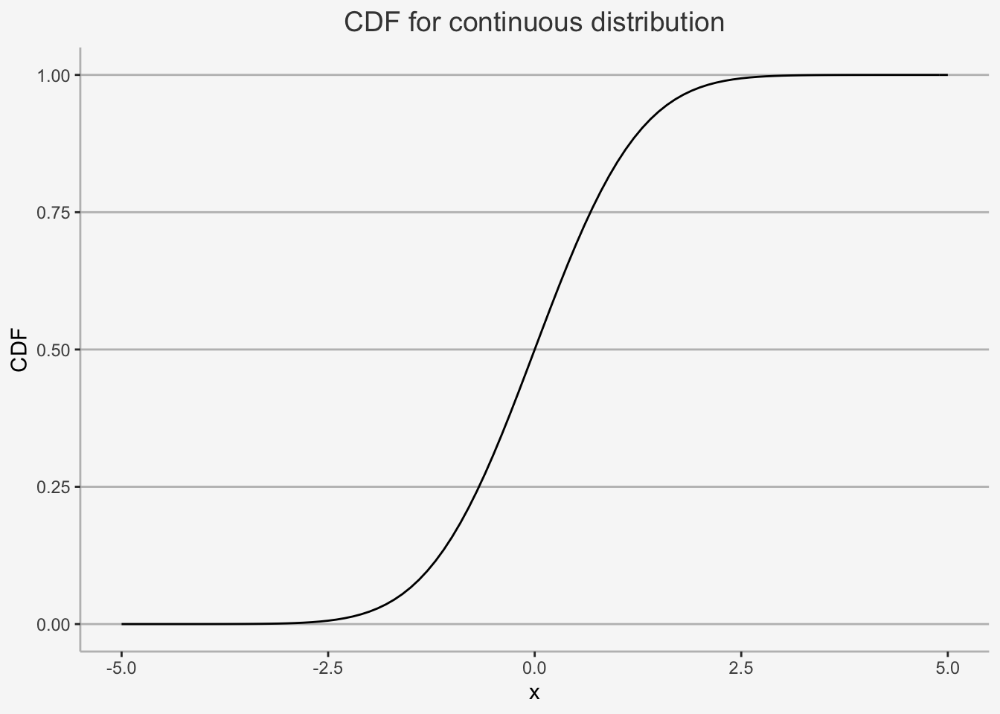

Chapter 2 Statistical Properties
The first topic covers mathematical and statistical properties that most modern finance is built upon. These properties serve as cornerstones required to comprehend the foundations of financial economics, risk management as well as asset management. ALthough widely used in many areas, their comprehension is key in identifying and retracing financial concepts in any of the afore-mentioned areas.
In this chapter, we will cover the mathematical foundations and statistical properties that are often used within empirical finance contexts. Based upon the topics taught in Statistics and Mathematics courses as well as Empirical Methods, we will cover properties related to \(\textbf{Probability Theory}\) and \(\textbf{Matrix Algebra}\).
This section should serve as a repetition to the topics already discusses in Empirical Methods and as such students should at least be familiar with the subjects at hand. However, as the course will rely substantially on these properties, a coherent discussion of them is a necessary prerequisite to be able to expect the baselines of empirical finance.
In this chapter, we will repeat the fundamentals of probability as well as probability distributions. We dive into what random variables are, how they are used in financial applications, how they can be related to probability measures, such as distributions, what the distributions tell us, how they can be related to financial concepts and how they can be calculated using R.
The chapter is outlined as follows: Section 1 introduces the concept of random variables within a countable space. Next, in Section 2, we look at discrete probability distributions, such as Bernoulli, Poisson or Mutlinomials. In Section 3 we look at continuous probability distributions, before we dive into continuous distributions with appealing properties, such as normal or log-normal distributions. Lastly, we will look at continuous functions that can deal with extreme events.
2.1 Introduction to Probability
2.2 The concept of Probability: Important Notions and Definitions
To understand the concept of random variables more thoroughly, we need to define some concepts first. The concepts we discuss are .
For that, let’s use a dice throwing example. A dice can take up six values when being rolled, ranging from 1 to 6, with, theoretical, probability of 1/6 for each outcome.
2.2.0.1 Outcomes, Spaces and Events, Measurable and Immeasurable Spaces
\(\textbf{Definition 2.1: Outcome}\)
Outcomes are just all possible, or feasible, values that a certain experiment can render. It is denoted by \(\omega\). In the case of throwing a dice, this is just all numbers that the dice can show, e.g. 1 to 6. We write this accordingly as:
\[ \omega_1 = 1, \omega_2 = 2, \omega_3 = 3, \omega_4 = 4, \omega_5 = 5, \omega_6 = 6 \]
\(\textbf{Definition 2.2: Space}\)
The set of all feasible outcomes is called space. It is denoted by \(\Omega\). In a dice experiment, this is just all values of \(\omega\) defined previously. We write this as:
\[ \Omega = [\omega_1, \omega_2, \omega_3, \omega_4, \omega_5, \omega_6] \]
Each Space \(\Omega\) can be distributed into certain parts. For instance, in the dice example we can be interested in whether the rolled number is odd or even, defining a set of either all odd or all even numbers.
In general, the \(2^\Omega\) comprises of all possible subsets of a space \(\Omega\), including the \(\emptyset\) and the space set \(\Omega\). With the aid of this power set, we are able to describe .
Another neat property of the power set is that it includes each union of arbitrarily many events as well as any intersection of arbitrarily many events. The power set also contains the complements to all events.
$ \(\sigma\)-$
The \(\sigma\)-algebra, denoted as \(\mathbb{A}\), is the collection of events that are subsets of \(\Omega\) with the following properties:
\[ \text{(I) } \Omega \in \mathbb{A} \text{ and } \emptyset \in \mathbb{A}\\ \text{(II) }\text{if event } E \in \mathbb{A} \text{ then }\hat{E} \in \mathbb{A} \\ \text{(III) }\text{If the countable sequence of events } E_1, \dots, E_n \in \mathbb{A}, \text{ then } \cup^\infty_{i=1}E_i \in \mathbb{A} \text{ and } \cap^\infty_{i=1}E_i \in \mathbb{A} \]
Which defines that (I) both the space and the empty set, (II) the complements of any event and (III) both the intersection as well as the union of any event(s) are included.
In the case of the dice rolling experiment, this would include all potential values as well as their intersections, combinations and complements.
\(\sigma\)-
The Borel \(\sigma\)-algebra is mostly used in uncountable spaces. That is, where \(\Omega\) is no longer finite, or countable, implying we have uncountably many potential outcomes. Suppose that we are analyzing the daily logarithmic returns for a common stock or common stock index. Theoretically, any real number is a feasible outcome for a particular day’s return, although we might expect some capping above and below certain values. So, events are characterized by singular values as well as closed or open intervals, such as being interested if the return is at least 10 percent, and each potential outcome in the real space.
To design our set of events of the uncountable space \(\Omega\), we take the following approach.
We first (I) include “any real number,” which is the space itself, \(\Omega\), as well as the empty space \(\emptyset\). Next, one includes (II) all events of the form “less than or equal to a”, for any real number a. Accordingly, we consider all possible half-open intervals given by \((-\infty, a]\) for any a \(\in \mathbb{R}\). For each of these half-open intervals, we then add (III) its complement \((a, \infty)\) which expresses the event “greater than a.” Lastly, we include (IV) all possible unions and intersections of everything already in the set of events as well as (V) of the resulting unions and intersections themselves.
IN total, the Borel \(\sigma\)-algebra consists of all these sets, intersections, unions and complements for an immeasurable space. It is denoted by \(\mathbb{B}\).
2.2.0.2 Probability Measure
There are some formal definitions a probability measure needs to satisfy:
: A probability measure should assign each event E from our \(\sigma\)-algebra a nonnegative value corresponding to the chance of this event occurring.\ : The chance that the empty set occurs should be zero since, by definition, it is the improbable event of “no value.”\ : The event that “any value” might occur (i.e., 1) should be 1 or, equivalently, 100% since some outcome has to be observable.\ : If we have two or more events that have nothing to do with one another that are pairwise disjoint or , and create a new event by , the should equal the .
More formally, this means:
\[ \text{(I) } P(\emptyset) = 0\\ \text{(II) } P(\Omega) = 1\\ \text{(III) } \text{ For a countable sequence of events } E_1, \dots, E_n \in \mathbb{A} \\\text{ that are mutually exclusive we have that } P(\cup_{i=1}^\infty E_i = \scriptstyle\sum_{i=1}^\infty \textstyle P(E_i)) \]
2.2.0.3 Modelling Randomness and Chance: The Probability Space
Now, we defined all individual constituents needed to model randomness and chance. By understanding what the space, \(\Omega\), the subsets of events with certain properties, \(\sigma\)-algebra, and the probability measure, P, we defined the triplet {\(\Omega\), \(\sigma\)-algebra, P} that forms the so called .
2.2.0.4 Modelling Randomness and Chance: Probability Measure in Countable and Uncountable Spaces
Understanding the differences of P in cases of countability vs. uncountability is key in understanding the important implications for the .
Suppose first a countable space \(\Omega\). Here, the probability of any event E in the \(\sigma\)-algebra \(\mathbb{A}\) can be computed by adding the probabilities of all outcomes associated with E. That is:
\[ P(E) = \scriptstyle\sum_{\omega_i \in E}\textstyle p(i) \]
where \(P(\Omega) = 1\).
In case of the dice rolling experiment, each outcome is associated with a probability of 1/6, formally:
\[ p(\omega_i) = 1/6 \]
Now, suppose we are in an uncountably large space, given by \(\Omega = \mathbb{R}\). Here, the \(\sigma\)-algebra is given by the Borel \(\sigma\)-algebra \(\mathbb{B}\) and we can no longer pin the probability of the events E in the space down by simply following the same approach as before.
Doing so, we require the use of the :
\(\textbf{Definition 2.6: Distribution function of P}\)
A function F is a distribution function of the probability measure P if it satisfies the following properties:
: F is right-continuous\ : F is nondecreasing\ : \(\lim_{x\rightarrow -\infty} = 0\) and \(\lim_{x\rightarrow \infty} = 1\)\ : For any \(x \in \mathbb{R}\), we have \(F(x) = P((-\infty, x])\)
This is exactly the foundation of the probability distributions we use in statistics and how to calculate each probability therein.
Because, it follows that, for any interval (x,y], we compute the according to:
\[ F(y) - F(x) = P((x,y]) \]
So, in this case we have a function F uniquely related to P from which we derive the probability of any event in \(\mathbb{B}\).
Now, if we understand or define which distribution a variable follows, we can pin down the area under the distribution to understand the probability of certain events.
To illustrate, the probability of the S&P 500 log return being between -1% and 1% is:
\[ F(0.01) - F(-0.01) = P((–0.01,0.01]) \]
Whereas F is the function given by the probability distribution related to the probability measure, which consists of the space, all sub-spaces (Borel) as well as the probability measure, P.
2.3 Random Variables
When we refer to some quantity as being a random variable, we want to express that its value is subject to uncertainty, or randomness. Strictly speaking, any random variable of interest is called stochatic. This is in contrast to a deterministic quantity whose value is determined with absolute certainty. As opposed to this, the random variable value is unknown until an outcome of an experiment is observable.
A straight-forward way to think about a random variable is the following. Suppose we have a random experiment where some outcome \(\omega\) from the space \(\Omega\) occurs. Depending on this value, the random variables takes some value \(X(\omega) = x\) where \(\omega\) is an input to X. What we observe, finally, is the value x, which is only a consequence of the outcome \(\omega\) of the underlying random experiment.
Consequently, a random variable is a function that is completely deterministic and depends on the outcome \(\omega\) of some experiment. As such, we understand random variables as .
Mostly, we define random variables as measurable function.
Let {\(\Omega\), \(\mathbb{A}\)} and {\(\Omega'\), \(\mathbb{A}'\)} be two measurable spaces and their corresponding \(\sigma\)-algebrae, respectively. Then, a function \(X: \Omega \rightarrow \Omega'\) is \(\mathbb{A}-\mathbb{A}'\)-measurable if, for any set \(E' \in \mathbb{A}'\), we have:
\[ X^{-1}(E') \in \mathbb{A} \]
In words, a function from one space to another is measurable if
\[ \text{(I) you can map outcomes } \omega \text{ from } \Omega \text{ with values } X(\omega) = x \text{ in } \Omega'\\ \text{(II) you can map events } E^{-1} \text{ in the state space back with } \sigma-\text{algebra }, \\\mathbb{A'}, \text{ to the corresponding origin of } E^{-1} \text{ in } \sigma-\text{algebra } \mathbb{A} \text{ of the original probability space} \]
In essence, for each for each event in the state space \(\sigma\)-algebra, \(\mathbb{A'}\), we have a corresponding event in the \(\sigma\)-algebra of the domain space, \(\mathbb{A}\).
2.3.0.1 Discrete and Continuous Random Variables
Discrete Random Variables are variables that can take up a limited, or countably large, number of outcomes, \(\omega\), such that \(\omega \in {\omega_1, \dots, \omega_n}\). As such, with discrete random variables, we are in a countable origin space.
As opposed to this, a Continuous Random Variable is a variable that can take on any real number value. That is, we understand that \(\omega \in \mathbb{R}\). Based on the definitions from earlier, we are in an infinite, or uncountable, origin space.
2.4 Univariate Probability Distributions
2.4.1 Discrete Random Variables and Distributions
We now consider the random variables in countably finite spaces and their distributions. The random variables on the countable space will be referred to as discrete random variables.
2.4.1.1 Random Variables in the countable space
In cases of discrete random variables, the corresponding probability distribution function (PDF) is denoted as p(x)
\[ p(x) = \sum_{w_i \in E} p_i \]
whereas \(p_i\) is the probability of the individual outcome \(\omega_i\) in E.
Let’s quickly assume and recreate a potential discrete distribution. For that, let’s assume return based probabilities we generate:
ret = c(-0.2, 0, 0.15, 0.35, 0.7)
probabs = c(0.05, 0.14, 0.46, 0.25, 0.1)
plot(ret, probabs, lwd=4, xlab="Return",
ylab="Probability", xaxt="n")
axis(1, at=ret)
2.4.1.2 Bernoulli Distribution
Suppose, we have a random variable X with two possible outcomes. As such, the state space is \(\Omega' \in {x_1, x_2}\).
In general, the Bernoulli distribution is associated with random variables that assume the values \(x_1 = 1\) and \(x_2 = 0\). The distribution of X is given by the probability for the two outcomes, that is:
\[ p(X = 1) = p_1 = \pi\\ p(X=0) = p_2 = (1-\pi) \]
Having both the probability and values, we can describe the model as:
\[ p(x) = \pi^x(1-\pi)^{1-x} \]
Consequently, the mean of the Bernoulli Distribution is:
\[ 0*(1-\pi) + 1*\pi = \pi \]
And its variance is gien by:
\[ (1-p)^2p+(0-p)^2(1-p) = p(1-p) \]
2.4.1.3 Binomial Distribution
A binomial distribution is basically n linked single Bernoulli trials. In other words, we perform a random experiment with n “independent” and identically distributed Bernoulli random variables, which we denote by B(p).
We just assumed Independence and Identical Distribution. This is also known as “IID” assumption. Although we do not cover this in detail, it’s important to understand that means that the outcome of a certain item does not influence the outcome of any others. By we mean that the two random variables’ distributions are the same.
This experiment is as if one draws an item from a bin and replaces it into the bin before drawing the next item. As such, we speak of .
In general, a binomial random variable X counts the number of “successes” in n repeated Bernoulli trials, denoted as \(X \sim B(n,\pi)\). To define the probability of X being equal to k, we need to define two concepts.
The first determines many different samples of size n are there to yield a i realizations of the outcome. It is called as the and is given by:
\[ \begin{pmatrix} n \\ k \end{pmatrix} = \frac{n!}{(n-k)!k!} \]
The second defines the probability measure. Since in each sample the n individual B(p) distributed items are drawn independently, the probability of the sum over these n items is the product of the probabilities of the outcomes of the individual items, given by:
\[ \pi^k(1-\pi)^{n-k} \]
Combined, we obtain the probability under a Binomial Distribution, as product of both terms:
\[ P(x = k) = \begin{pmatrix} n \\ k \end{pmatrix} \pi^k(1-\pi)^{n-k} \]
The mean of a Binomial random variable is:
\[ E(x) = np \]
and its variance is:
\[ var(x) = np(1− p) \]
We can easily extend this idea to financial applications. Let’s assume that in each period the stock price can either increase or decrease by i = 10%. Here, probability of increase is given by 0.6 and probability of decline by 0.4.
We start with an initial price of 20. According to this outcome, the stock price in t+1 will either be 20(1+0.1) = 22 or 20(1-0.1) = 18. In the third period, the stock price will further deviate according to the same principle and thus we will obtain:
\[ 22*1.1 = 24.20\\ 22*0.9 = 19.80\\ 18*1.1 = 19.80\\ 18*0.9 = 16.20 \]
At t=2, we obtain a new state space, \(\Omega'\), consisting of {16.2, 19.8, 24.2}. In that case, the probability distribution of \(S_2\) is given as follows:
\[ P(S_2 = 24.20) = \begin{pmatrix} 2 \\ 2 \end{pmatrix}\pi^2(1-\pi)^0 = 0.6^2 = 0.36 \\ P(S_2 = 19.80) = \begin{pmatrix} 2 \\ 1 \end{pmatrix}\pi^1(1-\pi)^{2-1} = 0.48 \\ P(S_2 = 16.20) = \begin{pmatrix} 2 \\ 0 \end{pmatrix}\pi^0(1-\pi)^{2-0} = 0.4^2 = 0.16 \]
To get the respective stock returns in t=2, we can use the formula:
\[ S_2 = S_0*1.1^n*0.9^{n-k} \]
\[ S_t = S_0*(1+i)^k*(1-i)^{n-k} \]
2.4.1.4 Multinomial Distribution
A multinomial distribution follows the same concept as a binomial distribution, with the difference that the outcomes are more than 2. In general cases, we follow n outcomes. Formally, we have that \(x = {x_1, \dots, x_n}\). Whereas the respective probabilities are denoted as \(p(x) = {p(x_1), \dots, p(x_n)}\).
As with the Binomial Distribution, we have two distinct components. The first is the and it is given by:
\[ \begin{pmatrix} & & n\\ n_1 & n_2 & n_3 & \dots & n_k \end{pmatrix} \]
The second term is again the probability of each event occurring. However, we can no longer find the complement(s), as only one probability of events can be expressed by the others. Thus, we just work with occurrences:
\[ \pi_1^{n_1} * \pi_2^{n_2} * \pi_3^{n_3} * \dots * \pi_k^{n_k} \]
Together, we obtain the Multinomial probability for a given event:
\[ P(x_1 = n_1, x_2 = n_2, x_3 = n_3, \dots, x_k = n_k) = \begin{pmatrix} & & n\\ n_1 & n_2 & n_3 & \dots & n_k \end{pmatrix} \pi_1^{n_1} * \pi_2^{n_2} * \pi_3^{n_3} * \dots * \pi_k^{n_k} \]
Here, the respective Expected Value is:
\[ E(x_k) = p_k*n \]
and the correspoding Variance:
\[ var(x_k) = p_k*(1-p_k)*n \]
We can easily replicate the ideas formed in the stock price movements to multinomial perspectives. For that, let’s assume that we have now three distinct outcomes. That is, the stock can either increase by 10%, stay the same or decline by 10%. As such, we define the respective movements as \(Y_u = 1.1, Y_s = 1.0, Y_d = 0.9\). The respective probabilities are said to be \(p_u = 0.25, p_s = 0.5, p_d = 0.25\).
Our new state space consists of six possible outcomes:
\[ \Omega ' = [(u,s,d)] = [(2,0,0), (0,2,0), (0,0,2), (1,1,0), (1,0,1), (0,1,1)] \]
And the corresponding prices are:
\[ S_2 = S_0*p_u^{n_u}*p_s^{n_s}*p_d^{n_d} \in [16.2, 18, 19.8, 20, 22, 24.2] \]
These are the multinomial coefficients we use for calculation of the probability for x being equal to some value. Consequently, we get the following probabilities:
\[ P(S = 24.4) = \begin{pmatrix} & 2 \\ 2 & 0 & 0\end{pmatrix}p_up_u = 0.0625 \\ P(S = 22) = \begin{pmatrix} & 2 \\ 1 & 1 & 0\end{pmatrix}p_up_s = 0.25 \\ P(S = 20) = \begin{pmatrix} & 2 \\ 0 & 2 & 0\end{pmatrix}p_sp_s = 0.25 \\ P(S = 19.8) = \begin{pmatrix} & 2 \\ 1 & 0 & 1\end{pmatrix}p_up_d = 0.125 \\ P(S = 18) = \begin{pmatrix} & 2 \\ 0 & 1 & 1 \end{pmatrix}p_sp_d = 0.25 \\ P(S = 16.2) = \begin{pmatrix} & 2 \\ 0 & 0 & 2 \end{pmatrix}p_dp_d = 0.0625 \\ \]
2.4.2 Continuous Random Variables and Distributions
As previously mentioned, within the scope of continuous distributions, we no longer have a countable space \(\Omega\) we can rely on. That is, the different outcomes, \(\omega\) are uncountable. Technically, without limitations caused by rounding to a certain number of digits, we could imagine that any real number could provide a feasible outcome, thereby the subsets is given by the Borel \(\sigma\)-algebra, \(\mathbb{B}\), which is based on all half-open intervals from \((-\infty, a]\) for any \(a \in \mathbb{R}\).
As the space set is uncountable, we need a unique way to assign a probability to a certain event. Recall that, as just described, the subsets in an uncountable space are given by all half-open intervals from \((-\infty, a]\). We can make use of this property by introducing a which expresses the \((-\infty, a]\) occurs. That is, the probability that a . In said case, F(a) states the .
To be a little more concise, we assume that the Continuous Distribution Function, F(a), has the following properties:
\(\lim_{x \rightarrow -\infty} \rightarrow 0\) \ \(\lim_{x \rightarrow \infty} \rightarrow 1\) \ \(F(b) - F(a) \geq 0 for b \geq a\) \ \(\lim_{x \downarrow a} F(x) = F(a)\)
These Properties state (I) Behaviour in Extremes (II) Monotonically Increasing behaviour (III) Right-Continuity
As the set of events in real numbers are uncountably many, pinning down an exact number is zero. As such, we generally assign probabilities in the following way:
\[ P((a,b)) = F(b) - F(a) \]
Whereas \(F(b) = P((-\infty, b]))\) and \(F(a) = P((-\infty, a]))\). That is, the entire probability that an outcome of at most a occurs is subtracted from the greater event that an outcome of at most b occurs, implying:
\[ (a,b] = (-\infty, b) / (-\infty, a] \] To assign probabilities in the continuous way, however, we need to define certain knowledge of the distribution function F.
2.4.2.1 Density Function: General Case
The continuous distribution function F of a probability measure P on \(\mathbb{R}, \mathbb{B}\) is defined as follows:
\[ F(x) = \int^x_{-\infty}f(t) dt \]
where f(t) is the of the probability measure P.
We interpret the density function equation accordingly: Since, at any real value x the distribution function uniquely equals the probability that an outcome of at most x is realized (\(F(x) = P((-\infty, x])\)), the density function states that this probability is obtained by \(-\infty\) .
We interpret this function as the . This follows the subsequent logic. We know that with continuous distribution functions, the probability of exactly a value of x occurring is zero. However, the probability of observing a value between x and some very small step to the right, denoted as \(\triangle\) x (i.e. [x, x+\(\triangle\) x]), is necessarily zero.
As such, between this increment of x and \(\triangle\) x, the distribution function F increases by exactly this probability. That is, the increment is:
\[ F(x + \triangle x) - F(x) = P(X \in [x, x + \triangle x)) \]
Now, dividing this equation by the width of the interval, denoted as \(\triangle\) x, we obtain the per unit step on this interval. If we reduce the step size \(\triangle\) x to an infinitesimally small step, \(\delta x\), this average approaches the , which we denote f. This is the .
\[ \lim_{\triangle \rightarrow 0} \frac{F(x+\triangle x) - F(x)}{\triangle x} = \frac{\delta F(x)}{\delta(x)} = f(x) \]
This equation is quite fundamental for continuous probability. Here, ee divide the probability that some realization should be inside of the small interval by that interval step. And, by letting that interval shrink to width zero, we obtain the marginal rate of growth or, equivalently, the derivative of F. Hence, we call f the probability density function or simply the density function. Commonly, it is abbreviated as pdf.
From the equation above, we understand that the probability of some occurrence of at most x is given by integration of the density function f over the interval \((-\infty, x]\). This follows the respective steps:
- For a given outcome, calculate the increment of x and \(\triangle\) x, and divide this equation by the width of the interval to get the marginal rate of growth
- At each value t, we multiply the corresponding density f(t) by the infinitesimally small interval width dt.
- Finally, we integrate all values of f (weighted by dt) up to x to obtain the probability for \((-\infty, x]\)
In the end, the integral of this marginal rate of growth of F in the interval at x is exactly how the probability \(P((-\infty, x])\) is derived through integrating the marginal rate f over the interval \((-\infty, x]\) with respect to the values. The resulting total probability is then given by the area under the curve in the below figure.
mean=80; sd=10
lb=60; ub=100
x <- seq(-4,4,length=100)*sd + mean
hx <- dnorm(x,mean,sd)
plot(x, hx, type="n", xlab="x", ylab="pdf")
i <- x >= lb & x <= ub
lines(x, hx)
polygon(c(lb,x[i],ub), c(0,hx[i],0), col="red")
area <- pnorm(mean, sd) - pnorm(lb, mean)
result <- paste("P(",lb,"< IQ <",ub,") =",
signif(area, digits=3))The area representing the value of the interval is indicated by the red block. So, the probability of some occurrence of at least a and at most b is given by the area inside red.
Based on the notions above, the probability of \(X \in {a,b}\) is given by:
\[ P(X \in (a,b]) = \int^b_{a}f(t) dt \]
2.4.3 Moments of Probability Distributions: Location, Scale and Shape
Moments of a distribution generally tell us things about the center, spread, the distribution as well as the shape behaviour of the underlying distribution. As such, they are important to understand the baseline configuration of a distribution. In our case, we will look at four moments:
- Expected Value (mean)
- Variance
- Skewness
- Kurtosis
These moments can also be defined as three distinct sets of parameters: Location, Scale and Shape. Location Paremeters shift a distribution horizontally without changing the shape or variation of the distribution. Usually, this is the Mean of a distribution. Scale parameters change the dispersion of the distribution but leave the location identical. As such, they quantify the precision of the distribution. Evidently, this is best represented by the variance. Furthermore, any scale parameter is a constant multiple of the standard deviation provided that the latter is finite. This is why we have that \(\sigma(aX) = |a|\sigma(X)\). Lastly, a shape parameter is any parameter that is not changed by location and scale changes. That is, for any f(y), \(\mu\) or \(\theta\), the shape parameter for f(y) will equal the shape parameter of \(\theta^{-1}f{\theta^{-1}(y-\mu)}\). These parameters are usually defined as Skewness or Kurtosis.
A location parameter is a parameter that shifts a distribution to the right or left without changing the distribution’s shape or variability. Scale parameters quantify dis- persion. A parameter is a scale parameter for a univariate sample if the param- eter is increased by the amount |a| when the data are multiplied by a. T
2.4.3.1 Expected Value (Mean)
The expected value of a random variable X measures the center of mass for the underlying PDF.
The expected value of a random variable X is given by:
\[ \mu_x = E[X] = \sum x\cdot P(X=x) \]
2.4.3.2 Variance and Standard Deviation
The variance of a random variable X measures the spread around the mean. As such, it measures the spread of the distribution.
The variance and standard deviation of a random variable X are given by:
\[ \sigma_X^2 = E[(X-\mu_x)^2]\\ \sigma_X = \sqrt{\sigma_X^2} \]
2.4.3.3 Skewness
The skewness of a random variable X measures the symmetry of a distribution around its mean. It is given by:
\[ skew(X) = \frac{E[(X-\mu_x)^3]}{\sigma_X^3} \] If X has a symmetric distribution, then skew(X) = 0, as values above and below the mean cancel each other out. There are two special cases:
- For skew(X) > 0, the distribution has a long right tail.
- For skew(X) < 0, the distribution has a long left tail.
a <- rsnorm(100000, mean = 0, sd = 2, xi = 2)
b <- rsnorm(100000, mean = 0, sd = 2, xi = -2)
skew <- as.data.frame(cbind(a,b))
colnames(skew) = c("Right Skewed", "Left Skewed")
skew_melt <- melt(skew)## No id variables; using all as measure variables#Plot
skew_melt %>%
ggplot(aes(x = value, fill = variable, color = variable)) +
geom_density(alpha = 0.2) +
theme_bw() + xlim(-15,15)2.4.3.4 Kurtosis
The Kurtosis of X measures the thickness in the tails of a distribution. It is given as:
\[ kurt(X) = \frac{E[(X-\mu_x)^4]}{\sigma_x^4} \]
Kurtosis is the average of the standardized data raised to the fourth power. Any standardized values that are less than 1 (i.e., data within one standard deviation of the mean) contributes very little to the overall Kurtosis. This is due to the fact that raising a value less than 1 to the fourth power shrinks the value itself (e.g. 0.5^4 = 0.0625). However, since kurtosis is based on deviations from the mean raised to the fourth power, . Consequently, large Kurtosis values indicate that extreme values are likely to be present in the data.
Consequently, there are three types of Kurtosis we need to be familiar with:
- Mesokurtic: This is the normal distribution
- Leptokurtic: This distribution has fatter tails and a sharper peak. The kurtosis is “positive” with a value greater than 3
- Platykurtic: The distribution has a lower and wider peak and thinner tails. The kurtosis is “negative” with a value greater than 3
To visualise this, we need to
a <- rnorm(100000, mean = 0, sd = 1)
b <- rnorm(100000, mean = 0, sd = 1.45)
c <- rnorm(100000, mean = 0, sd = 0.55)
df_kurt <- as.data.frame(cbind(a,b,c))
colnames(df_kurt) = c("Mesokurtic", "Platykurtic", "Leptokurtic")
df_kurt_melt <- melt(df_kurt)## No id variables; using all as measure variables#Plot
df_kurt_melt %>%
ggplot(aes(x = value, fill = variable, color = variable)) +
geom_density(alpha = 0.2) +
theme_bw() + xlim(-4,4)## Warning: Removed 589 rows containing non-finite values (stat_density).2.4.4 Quantile-Based Location, Scale, and Shape Parameters
We showed that the moments used are sensitive to outliers. Consequently, they are undefined for distributions that suffer from heavy tails. Although we will cover heavy tails in a later part, heavy tails imply that we have substantial outliers in the data. In order to counteract this issue, we can use quantile based parameters.
Quantiles are defined as \(F^{-1}(p)\).
First, let’s understand how we can get quantile-based location parameters. This is simple. We know that:
- any quantile is a location parameter
- any positive weighted average of quantiles, given as \(\sum_{i=1}^I w_iF^{-1}p(i)\) is also a location parameter, as long as the sum of the weights adds up to 1.
Now, we can get a quantile-based scale parameter by:
- the difference between two quantiles
That is:
\[ s(p_1, p_2) = \frac{F^{-1}(p_2) - F^{-1}(p_1)}{a} \]
For instance, assuming that a = 1, then s(1/4, 3/4) is called the Inter-Quartile Range (IQR).
Lastly, we can get a quantile-based shape parameter. For instance, we can get a quantile-based skewness parameter as the ratio:
\[ \frac{s(1/2, p_2) - s(1/2, p_1)}{s(p_3, p_4)} \]
whereas the numerator is the difference between two scale parameters and the denominator is a usual scale parameter.
Furthermore, and most importantly, we can quantify tail weights with the quantile-based shape parameter. This is done using the formula:
\[ \frac{s(p_1, 1-p_1)}{p_2, 1-p_2} \]
2.4.5 The cumulative Distribution
Before we dig into distributions with appealing properties for our statistical analysis, we first define some important concepts of distribution functions.
The first is related ot the cumulative distribution. In general, the cumulative distribution function (CDF) of a random variable assigns the probability of a random variable X to be smaller than or equal to a given threshold. It can be also interpreted as a half-closed interval consisting of the entire space left to a certain threshold. Formally:
\[ F_X(x) = P(X\leq x) \]
The most important properties are:
\[ \text{Property 1: } \text{If } x_1 < x_2, \text{then } F(x_1) < F(x_2) \\ \text{Property 2: } F_X(-\infty) = 0 \\ \text{Property 3: } F_X(\infty) = 1 \\ \text{Property 4: } P(X > x) = 1 - F_X(x) \\ \text{Property 5: } P(x_1 < X \leq x_2) = F_X(x_2) - F_X(x_1) \]
We can easily show an example for both discrete as well as continuous distributions:
d=data.frame(x=c(0,1,2,4,5,7,8,9, 10), cdf=c(0,0.1,0.2,0.3,0.5,0.6,0.7,1, 1))
ggplot() +
geom_step(data=d, mapping=aes(x=x, y=cdf), direction="vh", linetype=3) +
geom_point(data=d, mapping=aes(x=x, y=cdf), color="red") +
ylab("CDF") + xlab("x") + ggtitle("CDF for discrete distribution") +
theme(plot.title= element_text(size=14, color="grey26",
hjust=0.5,lineheight=2.4),
panel.background = element_rect(fill="#f7f7f7"),
panel.grid.major.y = element_line(size = 0.5, linetype = "solid", color = "grey"),
panel.grid.minor = element_blank(),
panel.grid.major.x = element_blank(),
plot.background = element_rect(fill="#f7f7f7", color = "#f7f7f7"),
axis.line = element_line(color = "grey")) 
ggplot(data.frame(x = c(-5, 5)), aes(x = x)) +
stat_function(fun = pnorm) +
ylab("CDF") + xlab("x") + ggtitle("CDF for continuous distribution") +
theme(plot.title= element_text(size=14, color="grey26",
hjust=0.5,lineheight=2.4),
panel.background = element_rect(fill="#f7f7f7"),
panel.grid.major.y = element_line(size = 0.5, linetype = "solid", color = "grey"),
panel.grid.minor = element_blank(),
panel.grid.major.x = element_blank(),
plot.background = element_rect(fill="#f7f7f7", color = "#f7f7f7"),
axis.line = element_line(color = "grey")) 
2.4.5.1 Quantile values of Distributions
Given a random variable X with a continuous CDF F_X(x), for any \(\alpha\), where 0 \(\leq \alpha \leq 1\), the \(100*\alpha\) % quantile of the distribution for X is given as the value \(q_\alpha\) that satisfies:
\[ F_X(q_a) = P(X \leq q_\alpha) = \alpha \]
In essence, the definition implies that the quantile distribution incorporates all values of a distribution up to a specific threshold such that exactly \(\alpha\) % of the entire distribution are included within that range.
Important examples that are often used in statistics include the 25% quantile, the median (50% quantile), the 75% quantile as well as minimum and maximum values. For instance, the median of the distribution, \(q_{0.5}\) satisfies the following:
\[ F_X(q_{0.5}) = P(X \leq q_{0.5}) = 0.5 \]
In the case that \(F_X\) is invertible, then \(q_{\alpha}\) can be determined as:
\[ q_\alpha = F_X^{-1}(\alpha) \]
That is, by using the inverse cdf \(F_X^{-1}\), one can determine the quantile value for a given threshold of the underlying distribution. Looking again at the median example, the 50% quantile value can be determined as:
\[ q_{0.5} = F_X^{1}(0.5) \]
This inverse is also called .
Applying this in R is relatively straight-forward. Given the standard normal distribution, the quantile value can be determined by solving:
\[ q_\alpha = \Phi^{-1}(\alpha) \]
Where \(\Phi^{-1}\) denotes the inverse of the cdf of the standard normal distribution with the function qnorm(). Let’s use it to print the critical values of our normal distribution that we usually use for significance tests.
# Define the functions
critical_10 <- qnorm(0.95,mean=0,sd=1)
critical_5 <- qnorm(0.975,mean=0,sd=1)
critical_1 <- qnorm(0.995,mean=0,sd=1)
criticals <- round(cbind(critical_10, critical_5, critical_1),2)
colnames(criticals) <- c("10% Significance (2 Tailed)", "5% Significance (2 Tailed)", "1% Significance 21 Tailed)")
criticals## 10% Significance (2 Tailed) 5% Significance (2 Tailed) 1% Significance 21 Tailed)
## [1,] 1.64 1.96 2.58Accordingly, with the quantile function, we can obtain critical values of given distributions.
2.4.6 Continuous Distributions with Appealing Properties
Next, we discuss the more commonly used distributions with appealing statistical properties that are used in finance. These are the normal distribution, the student’s t distribution, chi-2 distribution, Fisher F distribution and log-normal distribution.
2.4.6.1 The Normal Distribution
The normal distribution, or Gaussian, is the most common distribution used in finance. It is defined by two parameters: its mean \(\mu\) as well as its standard deviation \(\sigma\). It is denoted by \(N(\mu, \sigma)\).
The PDF of the normal distribution is given by:
\[ f(x) = \frac{1}{\sqrt{2\pi}\sigma}e^{-(x-\mu)^2/2\sigma^2} \]
We can easily print the pdf of the normal distribution using the function rnorm()
dat <- read.table(text = "info mean sd
info1 0 1
info2 1 0.5
info3 2 1
", header = TRUE)
densities <- apply(dat[, -1], 1, function(x) rnorm(n = 100000, mean = x[1], sd = x[2]))
colnames(densities) <- dat$info
densities.m <- melt(densities)
#Plot
densities.m %>%
ggplot(aes(x = value, fill = Var2, color = Var2)) +
geom_density(alpha = 0.2) +
theme_bw() + xlim(-5,5)## Warning: Removed 144 rows containing non-finite values (stat_density).A problem is that the distribution function cannot be solved for analytically and therefore has to be approximated numerically. That is:
\[ P(a \leq X \leq b) = \int^b_a \frac{1}{\sqrt{2\pi}}e^{-\frac{1}{2}x^2}dx \]
does not have a closed form solution.
In the particular case of the standard normal distribution, the values are tabulated. Standard statistical software provides the values for the standard normal distribution. Some useful approximations are:
\[ \begin{align*} P(X \in [\mu \pm \sigma]) \approx 0.68\\ P(X \in [\mu \pm 2\sigma]) \approx 0.95\\ P(X \in [\mu \pm 3\sigma]) \approx 0.99 \end{align*} \]
The above states that approximately 68% of the probability is given to values that lie in an interval of one standard deviation around the mean of the distribution.
2.4.6.2 Chi-2 Distribution
In this distribution, let Z be a standard normal random variable, in brief \(Z \sim N(0,1)\), and \(X = Z^2\). Then X is distributed chi-square with one degree of freedom, denoted as \(X \sim \chi^2(1)\).
The PDF of the Chi-2 Distribution is given as:
\[ f(X) = \frac{1}{2^{n/2}\Gamma(\frac{n}{2})}e^{-\frac{x}{2}}x^{(\frac{n}{2}-1)} \] for any x \(\geq\) 0. Here \(\Gamma(z) = \int^\infty_0 t^{z-1}e^{-t}dt\) denotes the gamma function.
In general, Degrees of Freedom (DOF) indicate how many independently behaving standard normal random variables the resulting variable is composed of. Here, X is only composed of one, called Z.
In general, this distribution is characterised by its DOF. If we have n distributed random variables that are all independent of each other, then their sum is written as:
\[ S = \sum_{i=1}^n \textstyle X \sim \chi^2(n) \]
The corresponding properties are: mean of E(x) = n and variance of Var(x) = 2n. So, the mean and variance are directly related to the degrees of freedom.
An important feature of the \(chi^2\) distribution is the degrees of freedom equal the number of independent \(\chi^2 (1)\) distributed \(X_i\) in the sum. Consequently, the summation of any two chi-squared distributed random variables is itself chi-square distributed.
The \(chi^2\) distribution is drawn with the function `rchisq()`` as follows:
a <- rchisq(100000, df = 2)
b <- rchisq(100000, df = 3)
c <- rchisq(100000, df = 7)
d <- rchisq(100000, df = 10)
df_chi <- as.data.frame(cbind(a,b,c,d))
colnames(df_chi) = c("DOF=2", "DOF=3", "DOF=7", "DOF=10")
df_chi_melt <- melt(df_chi)
#Plot
df_chi_melt %>%
ggplot(aes(x = value, fill = variable, color = variable)) +
geom_density(alpha = 0.2) +
theme_bw() + xlim(0,20)2.4.6.3 Student’s t-Distribution
Basically, the Student’s t-distribution has a similar shape to the normal distribution, but thicker tails. For large degrees of freedom n, the Student’s t-distribution does not significantly differ from the standard normal distribution. If X has a Student’s t distribution with degrees of freedom parameter v, then the PDF has the form:
\[ f(x) = \frac{\Gamma(\frac{v+1}{2})}{\sqrt{v\pi}\Gamma(\frac{v}{2})}\left(1 + \frac{x^2}{v}\right)^{-\frac{(v+1)}{2}} \]
where \(\Gamma(z) = \int^\infty_0 t^{z-1}e^{-t}dt\) denotes the gamma function.
Especially, it has the following properties:
\[ E[X] = 0\\ Var(x) = \frac{v}{v-2}, v > 2 \\ Skew(x) = 0, v > 3 \\ Kurt(x) = \frac{6}{v-4}, v > 4 \]
The parameter v controls the scale and tail thickness of the distribution. If v is close to four, then the kurtosis is large and the tails are thick. In general, the lower the degrees of freedom, the heavier the tails of the distribution, making extreme outcomes much more likely than for greater degrees of freedom or, in the limit, the normal distribution.
The t-distribution is displayed with the function rt()` below. Note that we also add the normal distribution to show that the tails for both t distributions are fatter, but the fattest are for the t distribution with the lowest DOF.
a <- rnorm(100000, mean = 0, sd = 1)
b <- rt(100000, df = 1)
c <- rt(100000, df = 5)
d <- rt(100000, df = 10)
df_norm_t <- as.data.frame(cbind(a,b,c,d))
colnames(df_norm_t) = c("N(0,1)", "t, DOF=1", "t, DOF=5", "t, DOF=10")
df_norm_t_melt <- melt(df_norm_t)## No id variables; using all as measure variables#Plot
df_norm_t_melt %>%
ggplot(aes(x = value, fill = variable, color = variable)) +
geom_density(alpha = 0.2) +
theme_bw() + xlim(-5,5)## Warning: Removed 13044 rows containing non-finite values (stat_density).2.4.6.4 F-Distribution
The F-Distribution is similar to the \(\chi^2\) distribution, but with two variables.
The PDF of the F-Distribution is defined as:
\[ f(X) = \frac{F(\frac{n_1 + n_2}{2})}{F(\frac{n_1}{2}) + F(\frac{n_2}{2})}\cdot\left(\frac{n_1}{n_2}\right)^{n_1/2} \cdot \frac{x^{n_1/2 - 1}}{\left[1+x\cdot\frac{n_1}{2}\right]^{\frac{n_1+n_2}{2}}} \] for any x \(\geq\) 0.
Here we let both \(X \sim \chi^2(n_1)\) and \(Y \sim \chi^2(n_2)\) and then \(F(n_1, n_2)\) is defined as:
\[ F(n_1, n_2) = \frac{Y/n_1}{X/n_2} \]
This ratio has an F-distribution with \(n_1\) and \(n_2\) DOF from the underlying \(\chi^2\) distribution for X and Y, respectively. Also like the chi-square distribution, the F-distribution is skewed to the right.
The first two moments of the F-distribution are the following: The mean is given by E(X) = \(\frac{n_2}{n_2 - 2}\) for \(n_2 > 2\), and the variance is given by Var(X) = \(\frac{2n_2^2(n_1 + n_2 -2)}{n_1(n_2 - 2)^2(n_2 - 4)}\) for \(n_2 > 4\).
The F-Distribution values can be determined with the function r(f) and looks like this:
a <- rf(100000, df1 = 4, df2 = 4)
b <- rf(100000, df1 = 4, df2 = 10)
c <- rf(100000, df1 = 10, df2 = 4)
d <- rf(100000, df1 = 10, df2 = 100)
df_F <- as.data.frame(cbind(a,b,c,d))
colnames(df_F) = c("n1=4, n2=4", "n1=4, n2=10", "n1=10, n2=4","n1=10, n2=100")
df_F_melt <- melt(df_F)
#Plot
df_F_melt %>%
ggplot(aes(x = value, fill = variable, color = variable)) +
geom_density(alpha = 0.2) +
theme_bw() + xlim(0,7)2.4.6.5 Log-Normal Distribution
The last important function we look at is the log-normal distribution. It is directly linked to the standard normal distribution. To see this, let X be a normally distributed random variable with mean \(\mu\) and variance \(\sigma^2\). Then the random variable
\[ X = e^Y \]
is log-normally distributed also with mean \(\mu\) and variance \(\sigma^2\).
This distribution is denoted as \(X \sim Ln(\mu, \sigma^2)\). The support of the log-normal distribution is on the positive half of the real line, as the exponential function can only take up positive values.
Accordingly, the PDF of the log-normal distribution is given by:
\[ f(X) = \frac{1}{x\sigma\sqrt{2\pi}}e^{\frac{(\ln x - \mu)^2}{2\sigma^2}} \]
for any x > 0.
The density function is also similar to the normal distribution and results in the log-normal distribution function:
\[ F(x) = \Phi\left(\frac{\ln x - \mu}{\sigma}\right) \]
The log-normal distribution values can be calculate using the rlnorm() function:
a <- rlnorm(100000, meanlog = 0, sdlog = 1)
b <- rlnorm(100000, meanlog = 0, sdlog = 0.5)
c <- rlnorm(100000, meanlog = 0, sdlog = 2)
d <- rlnorm(100000, meanlog = 1, sdlog = 1)
df_lnorm <- as.data.frame(cbind(a,b,c,d))
colnames(df_lnorm) = c("mean=0, sd=1", "mean=0, sd=0.5", "mean=0, sd=2","mean=1,sd=1")
df_lnorm_melt <- melt(df_lnorm)
#Plot
df_lnorm_melt %>%
ggplot(aes(x = value, fill = variable, color = variable)) +
geom_density(alpha = 0.2) +
theme_bw() + xlim(-1,7)2.4.6.6 Functions for distribution calculations (d, p, q, r)
To create distributions of the forms above, we use distribution packages. In these distribution packages, we can make use of four distinct functions that can apply all the theory we just discussed.
For that, we will look at the normal distribution. As previously, each statistical property of the distribution can be calculated using the functions dnorm(), pnorm(), qnorm() and rnorm(). We will now cover what each of these functions does.
dnorm
The dnorm() returns the value of of the probability density function for the distribution of interest, given the parameters x, \(\mu\) and \(\sigma\). That is, for a given input x with distributional moments of the mean and variance, we obtain the corresponding value on the y-axis, which indicates the density function of that value.
# This is the largest density of the PDF given that we have the normal distribution with mean = 0 & sd = 1
dnorm(0, mean = 0, sd = 1) ## [1] 0.3989423pnorm
The pnorm() returns the integral from \(-\infty\) to q of the pdf of a certain distribution, whereas q is a z-score. That is, for a given x, pnorm() returns the value of the y axis on the cdf, also known as probability density. Consequently, with this function you obtain the cdf functional value. In general, it is the function that replaces the table of probabilities and Z-scores at the back of the statistics textbook.
In general, pnorm is used to get the probability that \(-\infty < X \leq x\), and, as such, it gives the p-value for a distirbution.
# This is the median value of the respective distribution. As such, it comprises of exactly half the overall density of the underlying distribution. This is intuitive, given that the value -1.96 in a normal distribution with mean = 0 and sd = 1 is exactly the middle value, thereby incorporating half of the entire area under the cdf.
pnorm(-1.96, mean = 0, sd = 1) ## [1] 0.0249979We deliberately chose -1.96 b/c, in a two-sided test when assuming normal distribution, then \(-\infty < -1.96 \leq x\) and \(x \leq -1.96 < \infty\) constitute approximately 5% of the probability mass under the curve, or, in other words, 5% of the total probability.
qnorm
The qnorm() is the inverse of the pnorm() function. Looking at the quantiles part, it is the function that returns the inverse values of the cdf. You can use this function to determine the p’th quantile value of the underlying distribution (e.g. which value incorporates exactly half of the overall area under the curve).
# Intuitively, pnorm() inverse for a value of 0.5 indicates what value the 50% quantile must have under the given distribution characteristics. As such, we see that the 5% quantile here must have value -1.96!
qnorm(0.025, mean = 0, sd = 1) ## [1] -1.959964Consequently, it gives us the value for a given probability. That is, here a one-sided probability mass of 2.5% would require that the corresponding value is approximately -1.96, thereby stating that -1.96 is at the 2.5’th percentile of the distribution.
rnorm
Lastly, the rnorm() is used to generate vector of numbers that follow a certain distribution and its characteristics. We used this function to generate an order of numbers to plot subsequently and show the plotted distributions.
rnorm(10, mean = 0, sd = 1)## [1] -0.39231096 1.32871856 0.83320545 0.94219243 -1.76040662 -0.42221624 -2.05127569 -0.25863108 -0.07634454 -0.80897710Although we just showed the functions for the normal distribution, R offers a great amount of functions for other distributions that can be used identically as the normal case. To give you an overview:
Neatly, nearly all of these functions can be used with the prefixes “d,p,q,r”. Thus, for instance, just write rlnorm to get the values of a log-normal distribution.
2.4.7 Generalized Error Distribution
Besides the continuous distributions that have appealing properties, we can also consider distributions with heavier tails whose errors are not normally distributed. Generalized Error Distribution (GED) are a symmetric family of distributions used if errors aren’t normally distributed.
The PDF of the GED is given by:
\[ f(X) = \kappa(v)e^{-0.5\times |\frac{x}{\lambda_v}^v|} \]
whereas \(\lambda_v = (\frac{2^{-2/v}\Gamma(v^{-1})}{\Gamma(3/v)})^{1/2}\) and \(\kappa(v) = \frac{v}{\lambda_v2^{1+1/v}\Gamma(v^{-1})}\). Further:
- the variance is 1
- it is defined for \(- \infty < x < \infty\)
The shape parameter v > 0 determines the weight of the tails, whereas smaller values induce larger tail weights. Especially, if:
- v = 1: Laplace Distribution
- v = 2: Normal Distribution
The Generalized error distribution is useful when the errors around the mean or in the tails are of special interest. This is due to the sharp form of the distribution.
As discussed, the lower the weight, the sharper the function and the greater the absolute tail weights. However, the t-distribution will have, asymptotically, always greater tail weights due to its polynomial tails.
The GED distribution is drawn as follows:
a <- rged(100000, mean = 0, sd = 1, nu = 0.8)
b <- rged(100000, mean = 0, sd = 1, nu = 1)
c <- rged(100000, mean = 0, sd = 1, nu = 2)
d <- rged(100000, mean = 0, sd = 1, nu = 4)
df_rged <- as.data.frame(cbind(a,b,c,d))
colnames(df_rged) = c("GED(0,1,0.8)", "GED(0,1,1)", "GED(0,1,2)", "GED(0,1,4)")
df_norm_ged_melt <- melt(df_rged)## No id variables; using all as measure variables#Plot
df_norm_ged_melt %>%
ggplot(aes(x = value, fill = variable, color = variable)) +
geom_density(alpha = 0.2) +
theme_bw() + xlim(-5,5)As we can observe, the smaller the shape factor, the heavier the tails. Importantly, if we increase the shape factor, we will observe a nearly uniform distribution within a given range.
2.4.8 Creating Skewed Distributions based on Symmetric Distributions
In essence, we looked at distributions that are defined between \(-\infty\) and \(\infty\). As such they have no lower or upper bound, which is important for real-life financial assets. As long as we have symmetric data, we can use some of these distributions to model the data.
However, once we don’t have any symmetric distribution, we need to take distributions such as the log-normal or gamma, which are only defined for \(0 < x < \infty\).
This is an issue, as they do not allow any negative distribution, which makes them basically useless for financial modelling.
However, Fernandez and Stell (1998) describe a way for inducing skewness in symmetric distributions such as normal and t-distributions.
To do so, let \(\beta\) be a positive constant and f a densite symmetric around 0. Then we obtain so-called Fernandez–Steel skewed distributions:
\[ f(x|\xi) = \begin{cases} f(x\beta) && \text{if } x < 0\\ f(x/\beta) && \text{else} \end{cases} \]
Following the normalization, the density is given a location shift and scale change to induce a mean equal to 0 and variance of 1.
The PDF of the Fernandez-Steel distribution is given as:
\[ f(X) = \frac{2\beta}{\beta^2 + 1}\frac{\Gamma(\frac{v+1}{2})}{\sqrt{v\pi}\Gamma(\frac{v}{2})}[1+\frac{x^2}{v}(\frac{1}{\beta^2}I(x \geq 0) + \beta^2I(x<0))]^{-\frac{v+1}{2}} \]
This allows the following interpretation:
- \(\xi > 1\): The distribution will be right-skewed because we multiply with a constant greater than 1 and induce a higher f(x) value for x < 0 and divide the f(x) for x > 0
- \(\xi < 1\): The distribution will be left-skewed
If f is a t-distribution, then \(f(x|\xi)\) is a skewed t-distribution. Similarly, skewed GED are formed when f is a GED.
The Fernandez-Steel distribution is drawn as follows:
a <- rskt(100000, 10, 0.5)
b <- rskt(100000, 10, 1)
c <- rskt(100000, 10, 2)
d <- rskt(100000, 10, 4)
df_rged <- as.data.frame(cbind(a,b,c,d))
colnames(df_rged) = c("FS(10, 0.5)", "FS(10,0 1)", "FS(10, 2)", "FS(10, 4)")
df_norm_ged_melt <- melt(df_rged)## No id variables; using all as measure variables#Plot
df_norm_ged_melt %>%
ggplot(aes(x = value, fill = variable, color = variable)) +
geom_density(alpha = 0.2) +
theme_bw() + xlim(-5,5)As we can see, we are able to transform the t-distribution to a skewed FS t-distribution. Depending on the \(\beta\) parameter, we may either induce left- or right-skew and transform the data accordingly.
Another skewness is known as Azzalini–Capitanio skews. These distributions have a shape parameter \(\alpha\) that determines the skewness. the distribution is left-skewed, symmetric, or right-skewed according to whether \(\alpha\) is negative, zero, or positive.
Its PDF is given by:
\[ f(X) = 2t_v(x)T_{v+1}(\beta x\sqrt{\frac{v+1}{x^2 + v}}) \]
The particular case for \(\beta = 0\) is the Student’s t distribution with v degrees of freedom.
The Azzalini–Capitanio distribution is drawn as follows:
# The xi is the location parameter
# The omega the scale parameter
# The alpha is the skewness parameter
a <- rsn(100000, xi=0, omega=1, alpha=-3)
b <- rsn(100000, xi=0, omega=1, alpha=0)
c <- rsn(100000, xi=0, omega=1, alpha=3)
d <- rsn(100000, xi=0, omega=2, alpha=0)
df_rged <- as.data.frame(cbind(a,b,c,d))
colnames(df_rged) = c("AC(0,1,-3)", "AC(0,1,0)", "AC(0,1,3)", "AC(0,2,0)")
df_norm_ged_melt <- melt(df_rged)## No id variables; using all as measure variables#Plot
df_norm_ged_melt %>%
ggplot(aes(x = value, fill = variable, color = variable)) +
geom_density(alpha = 0.2) +
theme_bw() + xlim(-5,5)2.4.9 Kernel Density Estimation
Thus far, we have considered distributions that are able to follow a parametric distribution. That is, the form and moments of the distribution can be defined in a closed form solution. Except for the skewed distribution, all the distributions allowed for a parametric type. Now, let’s consider another case of non-parametric distributions, the Kernel Density Estimation.
Kernel Density Estimation (KDE) is a non-parametric method to estimate the probability density function of a random variable. It is a fundamental data smoothing problem where inferences about the population are made, based on a finite data sample.
Given a sample \(x_1, \dots, x_n\) from a distribution with an unknown or non determinable density function f(x), the KDE of f(x) is given as \(\hat f_b\) and is defined as:
\[ \hat f_b = \frac{1}{nb}\sum_{i=1}^n K (\frac{x-x_i}{b}) \]
whereas K is a non-negative function integrating to 1 (known as Kernel) and b > 0 is the bandwidth.
We interpret the function as follows. At each point \(x_i\) that we observe in the data, we center a scaled form of the kernel function K with \(x_i\) as its mean. The individual Kernel can have multiple forms, which we introduce afterwards. We then superposition all these individual Kernel distributions (all the “bumps”) which sum up to one total density distribution function that we can draw.
Note that the denominator of nb ensures that the mass is of the overall function will equal one (thus the integral is one).
2.4.9.1 Different Kernels
We can use the KDE with the function density function. Let’s create some of the Kernel plots.
# Create the data
set.seed(1667493)
data <- rnorm(1000, mean = 3)2.4.9.1.1 Gaussian Kernel
# Kernel density estimation
d <- density(data)
# Create DF
df_gauss <- as.data.frame(cbind(data, d$x, d$y))## Warning in base::cbind(...): number of rows of result is not a multiple of vector length (arg 2)# Create plot
df_gauss %>%
ggplot(aes(x = data)) +
geom_histogram(aes(y=..density..), position="identity", alpha=0.5, color = "goldenrod") +
geom_line(aes(x = df_gauss$V2, y = df_gauss$V3), color = "violetred4") + ggtitle("Histogram and Gaussian Kernel Density") +
ylab("Density") + xlab("Value") +
scale_color_manual(values=c("tomato3", "khaki3", "lightsteelblue3", "dodgerblue4", "violetred4")) +
theme(plot.title= element_text(size=14, color="grey26",
hjust=0.5,
lineheight=1.2), panel.background = element_rect(fill="#f7f7f7"),
panel.grid.major.y = element_line(size = 0.5, linetype = "solid", color = "grey"),
panel.grid.minor = element_blank(),
panel.grid.major.x = element_blank(),
plot.background = element_rect(fill="#f7f7f7", color = "#f7f7f7"), axis.title.x = element_text(color="grey26", size=12),
axis.title.y = element_text(color="grey26", size=12),
axis.line = element_line(color = "black")) ## Warning: Use of `df_gauss$V2` is discouraged. Use `V2` instead.## Warning: Use of `df_gauss$V3` is discouraged. Use `V3` instead.## `stat_bin()` using `bins = 30`. Pick better value with `binwidth`.# Kernel density estimation
d <- density(data, kernel = "rectangular")
# Create DF
df_gauss <- as.data.frame(cbind(data, d$x, d$y))
# Create plot
df_gauss %>%
ggplot(aes(x = data)) +
geom_histogram(aes(y=..density..), position="identity", alpha=0.5, color = "goldenrod") +
geom_line(aes(x = df_gauss$V2, y = df_gauss$V3), color = "violetred4") + ggtitle("Histogram and Rectangular Kernel Density") +
ylab("Density") + xlab("Value") +
scale_color_manual(values=c("tomato3", "khaki3", "lightsteelblue3", "dodgerblue4", "violetred4")) +
theme(plot.title= element_text(size=14, color="grey26",
hjust=0.5,
lineheight=1.2), panel.background = element_rect(fill="#f7f7f7"),
panel.grid.major.y = element_line(size = 0.5, linetype = "solid", color = "grey"),
panel.grid.minor = element_blank(),
panel.grid.major.x = element_blank(),
plot.background = element_rect(fill="#f7f7f7", color = "#f7f7f7"), axis.title.x = element_text(color="grey26", size=12),
axis.title.y = element_text(color="grey26", size=12),
axis.line = element_line(color = "black")) ## `stat_bin()` using `bins = 30`. Pick better value with `binwidth`.2.4.9.1.1.1 Triangular Kernel
# Kernel density estimation
d <- density(data, kernel = "triangular")
# Create DF
df_gauss <- as.data.frame(cbind(data, d$x, d$y))
# Create plot
df_gauss %>%
ggplot(aes(x = data)) +
geom_histogram(aes(y=..density..), position="identity", alpha=0.5, color = "goldenrod") +
geom_line(aes(x = df_gauss$V2, y = df_gauss$V3), color = "violetred4") + ggtitle("Histogram and Triangular Kernel Density") +
ylab("Density") + xlab("Value") +
scale_color_manual(values=c("tomato3", "khaki3", "lightsteelblue3", "dodgerblue4", "violetred4")) +
theme(plot.title= element_text(size=14, color="grey26",
hjust=0.5,
lineheight=1.2), panel.background = element_rect(fill="#f7f7f7"),
panel.grid.major.y = element_line(size = 0.5, linetype = "solid", color = "grey"),
panel.grid.minor = element_blank(),
panel.grid.major.x = element_blank(),
plot.background = element_rect(fill="#f7f7f7", color = "#f7f7f7"), axis.title.x = element_text(color="grey26", size=12),
axis.title.y = element_text(color="grey26", size=12),
axis.line = element_line(color = "black")) ## `stat_bin()` using `bins = 30`. Pick better value with `binwidth`.2.4.9.1.1.2 Epanechnikov Kernel
# Kernel density estimation
d <- density(data, kernel = "epanechnikov")
# Create DF
df_gauss <- as.data.frame(cbind(data, d$x, d$y))
# Create plot
df_gauss %>%
ggplot(aes(x = data)) +
geom_histogram(aes(y=..density..), position="identity", alpha=0.5, color = "goldenrod") +
geom_line(aes(x = df_gauss$V2, y = df_gauss$V3), color = "violetred4") + ggtitle("Histogram and Epanechnikov Kernel Density") +
ylab("Density") + xlab("Value") +
scale_color_manual(values=c("tomato3", "khaki3", "lightsteelblue3", "dodgerblue4", "violetred4")) +
theme(plot.title= element_text(size=14, color="grey26",
hjust=0.5,
lineheight=1.2), panel.background = element_rect(fill="#f7f7f7"),
panel.grid.major.y = element_line(size = 0.5, linetype = "solid", color = "grey"),
panel.grid.minor = element_blank(),
panel.grid.major.x = element_blank(),
plot.background = element_rect(fill="#f7f7f7", color = "#f7f7f7"), axis.title.x = element_text(color="grey26", size=12),
axis.title.y = element_text(color="grey26", size=12),
axis.line = element_line(color = "black")) ## `stat_bin()` using `bins = 30`. Pick better value with `binwidth`.2.4.9.1.2 Biweight Kernel
# Kernel density estimation
d <- density(data, kernel = "biweight")
# Create DF
df_bi <- as.data.frame(cbind(data, d$x, d$y))
# Create plot
df_bi %>%
ggplot(aes(x = data)) +
geom_histogram(aes(y=..density..), position="identity", alpha=0.5, color = "goldenrod") +
geom_line(aes(x = df_bi$V2, y = df_bi$V3), color = "violetred4") + ggtitle("Histogram and Biweight Kernel Density") +
ylab("Density") + xlab("Value") +
scale_color_manual(values=c("tomato3", "khaki3", "lightsteelblue3", "dodgerblue4", "violetred4")) +
theme(plot.title= element_text(size=14, color="grey26",
hjust=0.5,
lineheight=1.2), panel.background = element_rect(fill="#f7f7f7"),
panel.grid.major.y = element_line(size = 0.5, linetype = "solid", color = "grey"),
panel.grid.minor = element_blank(),
panel.grid.major.x = element_blank(),
plot.background = element_rect(fill="#f7f7f7", color = "#f7f7f7"), axis.title.x = element_text(color="grey26", size=12),
axis.title.y = element_text(color="grey26", size=12),
axis.line = element_line(color = "black")) ## `stat_bin()` using `bins = 30`. Pick better value with `binwidth`.2.4.9.1.2.1 Cosine Kernel
# Kernel density estimation
d <- density(data, kernel = "cosine")
# Create DF
df_cos <- as.data.frame(cbind(data, d$x, d$y))
# Create plot
df_cos %>%
ggplot(aes(x = data)) +
geom_histogram(aes(y=..density..), position="identity", alpha=0.5, color = "goldenrod") +
geom_line(aes(x = df_cos$V2, y = df_cos$V3), color = "violetred4") + ggtitle("Histogram and Biweight Kernel Density") +
ylab("Density") + xlab("Value") +
scale_color_manual(values=c("tomato3", "khaki3", "lightsteelblue3", "dodgerblue4", "violetred4")) +
theme(plot.title= element_text(size=14, color="grey26",
hjust=0.5,
lineheight=1.2), panel.background = element_rect(fill="#f7f7f7"),
panel.grid.major.y = element_line(size = 0.5, linetype = "solid", color = "grey"),
panel.grid.minor = element_blank(),
panel.grid.major.x = element_blank(),
plot.background = element_rect(fill="#f7f7f7", color = "#f7f7f7"), axis.title.x = element_text(color="grey26", size=12),
axis.title.y = element_text(color="grey26", size=12),
axis.line = element_line(color = "black")) ## `stat_bin()` using `bins = 30`. Pick better value with `binwidth`.2.4.9.2 Bandwidth Selection
As we said, we can also change the smoothing bandwidth. The smoothing bandwidth decides how many individual “bumps” the Kernel should have in order to represent the curve. The smaller the bandwidth, the higher the smoothness. But also here we have an issue of the bias-variance trade-off.
2.4.9.2.1 Different Bandwidths
# Kernel density estimation
d <- density(data, kernel = "rectangular", bw = 0.02)
e <- density(data, kernel = "rectangular", bw = 1)
hist(data, ,breaks=25,freq=F)
lines(d$x, d$y, col = "blue")
lines(e$x, e$y, col = "red")
As we can see, the bandwidth has a clear impact on the smoothness of the Kernel.
There are generally three options to choose the bandwidth if we do not wish to customise it. They are:
- Rule-of-thumb variation given by Scott (1992)
- Unbiased cross-validation
- Methods by Sheather & Jones (1991)
In order to use them, just add the respective names to the bw command. For instance, the unbiased cross-validation requires:
# Kernel density estimation
d <- density(data, kernel = "cosine", bw = "ucv")
# Create DF
df_cos <- as.data.frame(cbind(data, d$x, d$y))
# Create plot
df_cos %>%
ggplot(aes(x = data)) +
geom_histogram(aes(y=..density..), position="identity", alpha=0.5, color = "goldenrod") +
geom_line(aes(x = df_cos$V2, y = df_cos$V3), color = "violetred4") + ggtitle("Histogram and Biweight Kernel Density") +
ylab("Density") + xlab("Value") +
scale_color_manual(values=c("tomato3", "khaki3", "lightsteelblue3", "dodgerblue4", "violetred4")) +
theme(plot.title= element_text(size=14, color="grey26",
hjust=0.5,
lineheight=1.2), panel.background = element_rect(fill="#f7f7f7"),
panel.grid.major.y = element_line(size = 0.5, linetype = "solid", color = "grey"),
panel.grid.minor = element_blank(),
panel.grid.major.x = element_blank(),
plot.background = element_rect(fill="#f7f7f7", color = "#f7f7f7"), axis.title.x = element_text(color="grey26", size=12),
axis.title.y = element_text(color="grey26", size=12),
axis.line = element_line(color = "black")) ## `stat_bin()` using `bins = 30`. Pick better value with `binwidth`.Whereas we obtain a bandwidth of:
d$bw## [1] 0.2516141According to the CV procedure, this leads to the lowest loss function values.
2.4.10 Heavy Tail Distributions
We already considered heavy tail distributions when looking at certain continuous distributions with nice properties, such as the t-distribution or the exponential distribution. Now, we are motivated to further research these distributions, especially with regards to extreme events that can take place in financial settings.
For the purpose of this illustration, we will work with actual data on the Swiss Market Index (SMI).
2.4.10.1 Motivation for Extreme Value Theory
We will work with the returns of the SMI during 1990 to 2021 for this exercise. For this, we will first load and present the data.
# Load the dataset
SMI <- read.csv("~/Desktop/Master UZH/Data/A2_dataset_03.txt", header = T, sep = "\t")[,1:2]
# Create the returns
SMI_ts <- Return.calculate(xts(SMI[,-1], order.by = as.Date(SMI[,1]), method = "log"))[-1]
colnames(SMI_ts) <- c("SMI")There is no clear definition of what constitutes an extreme event. However, usually we define a standard deviation of more than 3 from its mean as extreme observation. This is because, if we assume a rather normal distribution, that the observation is not within the 99.9% of the probability mass of the distribution.
We already stated that histograms or density plots are not quite useful for us to detect extreme values. However, Q-Q Plots can be used to account for these values. If we plot this, we obtain the following:
## [1] 0.005973709## [1] 0.04431329SMI_ts %>%
ggplot(aes(sample = SMI)) +
stat_qq(fill = "black", color = "goldenrod") +
stat_qq_line() +
annotate("text", label = "Mean = 0.00597", x = 1.5, y = -0.12) +
annotate("text", label = "StD = 0.04431", x = 1.42, y = -0.14) +
ggtitle("Q-Q Plot of the SMI Log Returns" ) +
scale_color_manual(values=c("tomato3", "khaki3", "lightsteelblue3", "dodgerblue4", "violetred4")) +
theme(plot.title= element_text(size=14, color="grey26",
hjust=0.5,
lineheight=1.2), panel.background = element_rect(fill="#f7f7f7"),
panel.grid.major.y = element_line(size = 0.5, linetype = "solid", color = "grey"),
panel.grid.minor = element_blank(),
panel.grid.major.x = element_blank(),
plot.background = element_rect(fill="#f7f7f7", color = "#f7f7f7"), axis.title.x = element_text(color="grey26", size=12),
axis.title.y = element_text(color="grey26", size=12),
axis.line = element_line(color = "black")) As we can observe, there is no clear normal structure. It appears as if the data is severely left-skewed, implying that we observe strong, but rare, negative events in terms of monthly returns.
If we consider these downturns more closely, we can observe how many standard deviations certain observations are from the mean with the formula:
\[ x = \frac{\min(SMI) - \mu(SMI)}{\sigma(SMI)} \]
Given that, we see a deviation of:
(min(SMI_ts$SMI)-mean(SMI_ts$SMI))/sd(SMI_ts$SMI)## [1] -4.407656approximately 4.41 standard deviations. This is quite heavy, given that we have monthly observations which are deemed to be more stable than higher frequency data.
We can further elaborate on this by plotting a histogram and its respective normal distribution.
colnames(SMI_ts) <- c("Return")
SMI_ts$Dist_Norm <- rnorm(dim(SMI_ts)[1], mean = mean(SMI_ts$Return), sd = sd(SMI_ts$Return))
SMI_ts %>%
ggplot(aes(x = Return)) +
geom_histogram(aes(y=..density..), position="identity", alpha=0.5, color = "goldenrod") +
geom_density(aes(x = SMI_ts$Dist_Norm), color = "violetred4") +
ggtitle("Histogram of Returns and Normal Distribution") +
ylab("Density") + xlab("Value") +
scale_color_manual(values=c("tomato3", "khaki3", "lightsteelblue3", "dodgerblue4", "violetred4")) +
theme(plot.title= element_text(size=14, color="grey26",
hjust=0.5,
lineheight=1.2), panel.background = element_rect(fill="#f7f7f7"),
panel.grid.major.y = element_line(size = 0.5, linetype = "solid", color = "grey"),
panel.grid.minor = element_blank(),
panel.grid.major.x = element_blank(),
plot.background = element_rect(fill="#f7f7f7", color = "#f7f7f7"), axis.title.x = element_text(color="grey26", size=12),
axis.title.y = element_text(color="grey26", size=12),
axis.line = element_line(color = "black")) ## `stat_bin()` using `bins = 30`. Pick better value with `binwidth`.As we can observe, the extreme returns cannot be accounted for if the Gaussian distribution is used as a model for the daily log-returns. And it especially fails if we use a standard normal Gaussian distribution. The tails of the normal distribution are too thin to produce such extreme values.
Instead of using Normal distributions, we can thus focus on other distributions to model extreme events. These distributions are commonly referred to as Pareto Distributions. They are also called stable distributions
2.5 Bivariate distributions
Bivariate and Multivariate distributions are important concepts in asset management settings. This is because each asset can be regarded as a random variable. In order to be able to form portfolios, we thus need to understand how different assets relate with each other and what their common covarying structure is.
To do so, let’s look at the fundamental concepts and moments first.
2.5.1 Bivariate Distributions for continuous random variables
The joint probability for two random variables is characterised using their (PDF), called f(x,y), such that:
\[ \int^\infty_{-\infty}\int^\infty_{-\infty}f(x,y)dxdy = 1 \]
Note that the joint probability distribution is plotted in a three-dimensional space. To find the joint probabilities of \(x_1 \leq X \leq x_2\) and \(y_1 \leq Y \leq y_2\), we must find the volume nder the probability surface over the grid where the intervals \([x_1, x_2]\) and \([y_1, y_2]\) are overlapping. That is:
\[ P(x_1 \leq X \leq x_2, y_1 \leq Y \leq y_2) = \int^{x_2}_{x_1}\int^{y_2}_{y_1}f(x,y)dxdy \]
2.5.2 Standard bivariate normal distribution
An important bivariate distribution constitutes the standard bivariate normal distribution. It has the fofm:
\[ f(x,y) = \frac{1}{2\pi}e^{-\frac{1}{2}(x^2+y^2)} dx dy \]
2.5.3 Marginal Distributions
The marginal distribution treats the data as if only the one component was observed while a detailed joint distribution in connection with the other component is of no interest. In other words, the joint frequencies are projected into the frequency dimension of that particular component.
The frequency of certain values of the component of interest is measured by the marginal frequency. The marginal frequency of X is calculated as sum of all frequencies of X given that Y takes on a particular value. Thus, we obtain the row sum as the marginal frequency of this component X. That is, for each value \(X_i\), we sum the joint frequencies over all pairs (\(X_i\), \(Y_j\)) where \(Y_j\) is held fix.
Formally, this is:
\[ f_x(X_i) = \sum_jf(X_i, Y_j) \]
where the sum is over all values \(W_j\) of the component Y.
Lastly, the marginal pdf of X is found by integrating y out of the joint PDF f(X,Y):
\[ f(x) = \int^\infty_{-\infty} f(x,y)dy \]
2.5.4 Conditional Distributions
The conditional probability that X = x given that Y = y is defined as:
\[ f(x|y) = f(X=x|Y=y) = \frac{f(x,y)}{f(y)} \]
Whereas an analogous principle holds for the conditional probability of y on x.
The use of conditional distributions reduces the original space to a subset determined by the value of the conditioning variable.
In general, we need conditional distributions, or probability, to define what value x takes given that y takes a certain value. Consequently, we no longer are within a field of independence between two variables when we include conditional probability.
Conditional moments are different to unconditional ones. As such, the conditional expectation and variance are defined as follows.
For discrete random variables, X and Y, the conditional expectation is given as:
\[ E[X|Y=y] = \sum_{x\in S_X}x\cdot P(X=x|Y=y) \]
For discrete random variables, X and Y, the conditional variance is given as:
\[ var(X|Y=y) = \sum_{x\in S_X}(x-E[X|Y=y])^2\cdot P(X=x|Y=y) \]
To do so, we first look at the properties of covariance and correlation
2.5.5 Independence
The previous discussion raised the issue that a component may have influence on the occurrence of values of the other component. This can be analyzed by comparison of the joint frequencies of x and y with the value in one component fixed, say x = X. If these frequencies vary for different values of y, then the occurrence of values x is not independent of the value of y.
This is equivalent to check whether a certain value of x occurs more frequently given a certain value of y. That is, check the conditional frequency of x conditional on y, and compare this conditional frequency with the marginal frequency at this particular value of x. If the conditional frequency is not equal to the marginal frequency, then there is no independence.
Formally, two random variables are independent if:
\[ f_{x|y}(x,y) = f(x)\cdot f(y) \]
That is, the joint frequency is the mathematical product of their respective marginals. Independence is a handy feature as it allows us to compare marginal and conditional distribution properties of random variables.
2.5.6 Correlation and Covariance
Covariance and correlation describe properties of the combined variation of two or more assets. As the term describes, they measure to what extent assets covary. Thereby, they quantify the level of similarity of of movements over time for different variables.
The covariance between two random variables, X and Y, is given as:
\[ \sigma_{XY} = cov(X,Y) =E[(X - E(X))(Y - E(Y))] \]
The correlation between two random variables, X and Y, is given as:
\[ \rho_{XY} = cor(X,Y) = \frac{\sigma_{XY}}{\sigma_X\sigma_Y} \]
Covariance and Correlations have certain nice properties we can use.
Important properties of the are:
- cov(X,X) = var(X)
- cov(X,Y) = cov(Y,X)
- cov(X,Y) = E[XY] -E[X]E[Y]
- cov(aX,bY) = abcov(X,Y)
- cov(X,Y) = 0 if X and Y independent
Let’s quickly show the third and fourth property:
\[ \begin{align} cov(X,Y) &= E[(X-E(X))(Y-E(Y))] \\ &= E[XY -E(X)Y -E(Y)X +E(X)E(Y)] \\ &= E[XY] - E(X)E(Y) - E(X)E(Y) + E(X)E(Y)\\ &= E[XY] - E(X)E(Y) \end{align} \] \[ \begin{align} cov(aX,bY) &= E[(aX - aE(X))(bY - bE(Y))] \\ &= a\cdot b\cdot E[(X-E(X))(Y-E(Y))] \\ &= a\cdot b\cdot cov(X,Y) \end{align} \] Important properties of the are:
- \(-1\leq \rho_{xy} \leq 1\)
- $_{xy} = 1 $: Perfect positive linear relation
- $_{xy} = -1 $: Perfect negative linear relation
2.5.7 Expectation and variance of the sum of two random variables
Joint distributions are important when considering asset prices. They define how to compute important properties when considering multiple assets. When considering joint distributions, two important properties can be shown.
The first relates to the expected value of a linear combination. Especially, it holds that, for two random variables with defined means and covariance matrices:
\[ \begin{align} E[aX + bY] &= \sum_{x\in S_X}\sum_{y \in S_Y} (ax + by)P(X=x, Y=y) \\ &= \sum_{x\in S_X}\sum_{y \in S_Y} (ax)P(X=x, Y=y) + \sum_{y\in S_Y}\sum_{x \in S_X} (by)P(X=x, Y=y) \\ &= a\sum_{x\in S_X}x\sum_{y \in S_Y}P(X=x, Y=y) + b\sum_{y\in S_Y}y\sum_{x \in S_X}P(X=x, Y=y)\\ &= a\sum_{x\in S_X}xP(X=x) + b\sum_{y\in S_y}yP(Y=y) && \text{sum of all y options renders condition = 1}\\ &= aE[X] + bE[Y] \\ &= a\mu_X + b\mu_Y \end{align} \] This means that expectation is additive.
The second result relates to the variance of a linear combination. Especially, it holds that, for two random variables with defined means and covariance matrices:
\[ \begin{align} var(aX + bY) &= E[(aX + bY - E[aX]E[bY])^2]\\ &= E[((aX - E(aX)) + (bY - E(bY)))^2] \\ &= E[(a(X-E(X)) + b(Y-E(Y)))^2] \\ &= a^2E[X-E(X)]^2 + b^2(Y-E(Y))^2 + 2 ab(X-E(X))(Y-E(Y))\\ &= a^2\cdot var(X) + b^2\cdot var(Y) + 2\cdot a \cdot b \cdot cov(X,Y) \end{align} \]
That is, the variance of a linear combination of random variables is itself not linear. This is due to the covariance term when computing the variance of the sum of two random variables that are not independent.
This means that the variance is not additive.
Both properties are inherently important when considering both portfolio return as well as risk characteristics.
2.6 Multivariate Probability Distributions
We now switch into Multivariate Statistical Models. In other words, we are going to use properties from the Multivariate Distributions Within multivariate distributions, we are interested in the joint behaviour of a set of random variables.
In essence, multivariate distributions generalise the bivariate distributions encountered previously. We will cover the same properties on the moments, functions and transformations as we have seen in the bivariate case. However, we will extend the results to cases with N potential random variables.
To give you an introduction to each of the ideas we present, we will work with data on the big four companies in Switzerland: Novartis, Nestle, Roche and UBS.
A1_bigfour <- read.csv("/Users/nikolasanic/Desktop/Advanced_Empirical_Finance_Documents/Data/Risk_Return/A1_bigfour.csv", header = T, sep = ",", dec = '.')
A1_bigfour <- A1_bigfour %>% mutate(Date = dmy(Date)) %>% select(Date, UBS_N, Roche_Holding, Nestle_PS, Novartis_N) %>% filter(Date >= "1996-12-31")
# Here, we first assign a date format to the date variable, otherwise the xts package cannot read it.
A1ts_bf <- xts(x = A1_bigfour[,-1], order.by = as.Date(A1_bigfour[,1]))
# Calculate the returns
ret_bf <- Return.calculate(A1ts_bf)[-1,]2.6.1 Covariance and Correlation Matrices
2.6.1.1 Theroetic fudament
The first generalisation relates to the covariance and correlation.
First, we need to define the Expected value of all our assets. This is an \(N \times 1\) vector, given by:
\[ E(\textbf{X}) = \begin{pmatrix} E(X_1) \\ \vdots \\ E(X_N) \end{pmatrix} \]
Within bivariate distributions, we had a 2 \(\times\) 2 var-cov matrix, which indicated the variance and the covariances of both assets. In the multivariate case, we have an \(N \times N\) matrix with \(N(N-1)/2\) distinct values. Based on the expected values, we can define the covariance matrix as:
\[ Cov(\textbf{X}) = \begin{pmatrix} Var(X_1) & Cov(X_1, X_2) & \dots & Cov(X_1, X_N) \\ Cov(X_2, X_1) & Var(X_2) & \dots & Cov(X_2, X_N) \\ \vdots & \vdots & \ddots & \vdots \\ Cov(X_N, X_1) & Cov(X_N, X_2) & \dots & Var(X_N) \end{pmatrix} \]
Note that, through matrix algebra, we understand that the correlation of \(\textbf{X}\) is given as
\[ Corr(\textbf{X}) = D^{-1}Cov(\textbf{X})D^{-1} \]
whereas D = \(diag(\sigma_{X_1}, \dots, \sigma_{X_N})\) is the diagonal matrix of the standard deviations of \(X_i\).
2.6.1.2 Constructing covariance and correlation matrices
To follow this through, have a look at the matrix algebra part on this.
For instance, we can calculate the covariance and correlation matrix of the big four companies.
cov <- cov(na.omit(ret_bf))We can easily calculate the correlation matrix with the matrix algebra:
# Get the diagonal elements
d <- sqrt(diag(cov))
# Make the matrix multiplication step
cor <- d^(-1)*cov*d^(-1)
round(cor, 3)## UBS_N Roche_Holding Nestle_PS Novartis_N
## UBS_N 1.000 0.001 0.004 0.004
## Roche_Holding 0.138 1.000 0.250 0.464
## Nestle_PS 0.763 0.418 1.000 0.538
## Novartis_N 0.589 0.557 0.386 1.0002.6.1.3 Decomposing covariance and correlation matrices
We can decompose any covariance and correlation matrix. To do so, we need to understand the cholesky decomposition of a covariance matrix. This states the following relationship. Let \(\Sigma\) be the covariance matrix and A the Cholesky factor. The Cholesky Factor equals the lower triangular of the matrix with entries larger than zero.
In this case, we get that:
\[ \Sigma = AA^T \]
In the case of our example, we can deconstruct the matrix using the following formula:
# Cholesky Decomposition
A <- t(chol(cov))
# Recreating the matrix
Sigma <- round(A%*%t(A),4)
# Check if identical
round(Sigma,4) == round(cov,4)## UBS_N Roche_Holding Nestle_PS Novartis_N
## UBS_N TRUE TRUE TRUE TRUE
## Roche_Holding TRUE TRUE TRUE TRUE
## Nestle_PS TRUE TRUE TRUE TRUE
## Novartis_N TRUE TRUE TRUE TRUEAs we can see, both are identical.
Another option is to look directly at the Eigendecomposition of the vectors. Through this method, we understand that the Cholesky decomposition is equal to the matrix multiplication of the eigenvectors with the diagonal entries of the eigenmatrix and with the transposed eigenvectors:
\[ A_{Chol} = V\lambda^{-\frac{1}{2}}V^T \]
Let’s see this:
# Eigendecomposition for the covariance matrix
## Get the eigenvalues and eigenvectors
eig <- eigen(cov)
## Get the matrix of eigenvectors
V <- eig$vectors
## Get the diagonal entries of the eigenmatrix
Lambda <- diag(pmax(eig$values, 0))
# Based on this, we can recreate the Cholesky decomposition through the following formula.
## Note that Cholesky is just the
A.eig <- V %*% sqrt(Lambda) %*% t(V)
Sigma.eig <- A.eig %*% t(A.eig)
# Check if both are the same
round(Sigma.eig, 4) == round(Sigma,4) ## UBS_N Roche_Holding Nestle_PS Novartis_N
## UBS_N TRUE TRUE TRUE TRUE
## Roche_Holding TRUE TRUE TRUE TRUE
## Nestle_PS TRUE TRUE TRUE TRUE
## Novartis_N TRUE TRUE TRUE TRUEround(Sigma,4) == round(cov, 4)## UBS_N Roche_Holding Nestle_PS Novartis_N
## UBS_N TRUE TRUE TRUE TRUE
## Roche_Holding TRUE TRUE TRUE TRUE
## Nestle_PS TRUE TRUE TRUE TRUE
## Novartis_N TRUE TRUE TRUE TRUEAs we can see, both are identical.
2.6.2 Linear Functions of random variables
As with the bivariate case, we can find the expectation and the variance of a linear combination of random variables. Remember that a linear combination is just a weighted average of random variables (=RV).
2.6.2.1 Linear function of a single RV
We define a linear combination as follows. If X is a RV and a and b are constants, then:
\[ E(aX + b) = aE(X) + b \]
Further, the variance is given as:
\[ Var(aX + b) = a^2Var(X) \]
and its standard deviation is given as:
\[ \sigma(aX + b) = |a|\sigma(X) \]
2.6.2.2 Function of a linear combination of two RVs
If X and Y and RVs and \(w_1\) and \(w_2\) constants, then:
\[ E(w_1X + w_2Y) = w_1E(X) + w_2E(Y) \]
and the variance is given by:
\[ Var(w_1X + w_2Y) = w_1^2Var(X) + w_2^2Var(Y) + 2w_1w_2Cov(X,Y) \]
which can also be expressed in matrix algebra as:
\[ Var(w_1X + w_2Y) = \begin{pmatrix} w_1 & w_2 \end{pmatrix} \begin{pmatrix} Var(X) & Cov(X,Y) \\ Cov(X,Y) & Var(Y) \end{pmatrix} \begin{pmatrix} w_1 \\ w_2 \end{pmatrix} \]
This is the same principle as the re-formulation earlier on the covariance and correlation matrix. This is because the formula generalises well to the N specific case.
2.6.2.3 Function of a linear combination of N RVs
If we have N RVs, then we also have N weights, given as \((w_1,\dots,w_N)^T\), whereas \(\sum_{i=1}^Nw_i =1\).
In this case, the expected value is:
\[ E(w^T\textbf{X}) = w^TE[\textbf{X}] \]
Furthermore, the variance is calculated as:
\[ Var(w^T\textbf{X}) = \sum_{i=1}^N\sum_{j=1}^Nw_iw_jCov(X_i, X_j) \]
in matrix notation, this is given as:
\[ Var(w^T\textbf{X}) = w^TCov(\textbf{X})w \]
We show the approach for three assets and show the proof for the general case in the linear algebra part. However, note that this is identical to the formulation for the bivariate case. The only difference is that there are now N elements in the vector instead of 2.
2.6.3 Central properties of multivariate distributions
2.6.3.1 Variance of a linear combination of random vectors
Another important property are transformations with linear combinations. That is, we add an n \(\times\) 1 vector called \(\textbf{a}\) = \((a_1, \dots, a_n)\) to the random vector \(\textbf{X}\).
If we assume that a random variables \(\textbf{Y}\) exists which is a of the form \(Y = \textbf{a}'\textbf{X} = a_1X_1 + \dots + a_nX_n\), then the expected values is:
\[ \mu_y = E[Y] = E[\textbf{a}'\textbf{X}] = \textbf{a}'E[\textbf{X}] = \textbf{a}'\mu \]
and the corresponding variance is:
\[ var(Y) = var(\textbf{a}'\textbf{X}) = E[(\textbf{a}'\textbf{X} - \textbf{a}'\mu)^2] = E[(\textbf{a}'(\textbf{X} - \mu))^2] \]
We can now use a simple definition from matrix algebra. If z is a scalar, then we know that \(z'z = zz' = z^2\). We know that \(\textbf{a}'(\textbf{X} - \mu)\) is a scalar, as such we can compute the variance as:
\[ \begin{align*} var(Y) &= E[z^2] = E[z \cdot z'] \\ &= E[\textbf{a}'(\textbf{X} - \mu)\textbf{a}(\textbf{X} - \mu)'] \\ &= \textbf{a}'E[(\textbf{X} - \mu)(\textbf{X} - \mu)']\textbf{a} \\ &= \textbf{a}'cov(\textbf{X})\textbf{a} \\ &= \textbf{a}'\scriptstyle\sum\textstyle\textbf{a} \end{align*} \]
Consequently, we know that the variance of a linear combination of a random variable and a constant is just the inverse of the constant multiplied with the covariance of the random variable multiplied with the constant.
2.6.3.2 Covariance between linear combination of two random vectors
If we consider two different constants, \(\textbf{a}\) = \((a_1, \dots, a_n)\) as well as \(\textbf{b}\) = \((b_1, \dots, b_n)\) to the random vector \(\textbf{X}\), and \(Y = \textbf{a}'\textbf{X} = a_1X_1 + \dots + a_nX_n\) as well as \(Z = \textbf{b}'\textbf{X} = b_1X_1 + \dots + b_nX_n\), we can write the covariance in matrix notation as:
\[ \begin{align*} cov(Y,Z) &= E[(Y - E[Y])(Z-E[Z])] \\ cov(\textbf{a}'\textbf{X}, \textbf{b}'\textbf{X}) &= E[(\textbf{a}'\textbf{X} - E[\textbf{a}'\textbf{X}])(\textbf{b}'\textbf{X}-E[\textbf{b}'\textbf{X}])] \\ &= E[(\textbf{a}'\textbf{X} - \textbf{a}'\mu])(\textbf{b}'\textbf{X}-\textbf{b}'\mu])] \\ &= E[\textbf{a}'(\textbf{X} - \mu)\textbf{b}'(\textbf{X} - \mu)] \\ &= \textbf{a}'E[(\textbf{X} - \mu)(\textbf{X} - \mu)']\textbf{b}'\\ &= \textbf{a}'\scriptstyle\sum\textstyle\textbf{b}' \end{align*} \]
2.6.4 The Scatterplot Matrix
A scatterplot matrix plots the combination of scatterplots for each pair of assets. It is useful to find nonlinear relations between some factors, as well as the joint behavior of extreme values in a distribution.
In essence, we can define a scatterplot matrix as:
ggpairs(as.data.frame(ret_bf)[,1:4])## plot: [1,1] [======>--------------------------------------------------------------------------------------------------------------] 6% est: 0s
## plot: [1,2] [==============>------------------------------------------------------------------------------------------------------] 12% est: 0s
## plot: [1,3] [=====================>-----------------------------------------------------------------------------------------------] 19% est: 0s
## plot: [1,4] [============================>----------------------------------------------------------------------------------------] 25% est: 0s
## plot: [2,1] [====================================>--------------------------------------------------------------------------------] 31% est: 0s
## plot: [2,2] [===========================================>-------------------------------------------------------------------------] 38% est: 0s
## plot: [2,3] [==================================================>------------------------------------------------------------------] 44% est: 0s
## plot: [2,4] [=========================================================>-----------------------------------------------------------] 50% est: 0s
## plot: [3,1] [=================================================================>---------------------------------------------------] 56% est: 0s
## plot: [3,2] [========================================================================>--------------------------------------------] 62% est: 0s
## plot: [3,3] [===============================================================================>-------------------------------------] 69% est: 0s
## plot: [3,4] [=======================================================================================>-----------------------------] 75% est: 0s
## plot: [4,1] [==============================================================================================>----------------------] 81% est: 0s
## plot: [4,2] [=====================================================================================================>---------------] 88% est: 0s
## plot: [4,3] [=============================================================================================================>-------] 94% est: 0s
## plot: [4,4] [=====================================================================================================================]100% est: 0sHere, we can encounter three things:
- The lower triangle shows the scatterplots
- The diagonal matrix the return distributions
- The upper triangle the correlations
This is quite handy as it allows us to quickly check on all different characteristics of a multivariate distribution.
Importantly, we can start checking for tail dependece. This occurs if negative and positive returns occur at the same periods for two assets. In this case, we have a positive, linear relationship. This increases the risk as two are highly correlated. In our case, Roche and Novartis have the highest correlation coefficient and thus also the highest linear relationship. This is to be expected, given that both are in the pharmaceutical industry.
2.6.5 Multivariate Normal Distribution
We say that \(\textbf{X}\) has a multivariate normal distribution if:
\[ \textbf{X} = \mu + A\textbf{Z} \]
whereas \(\textbf{Z} = (Z_1, \dots, Z_N)'\) is is a vector of IID univariate standard normal RVs. As in the univariate case we assume that the distribution is defined by its fist two moments. As such: \(\textbf{X} \sim N(\mu, \Sigma)\). In that case, we can transform each univariate IID RV into a multivariate normal RV through the decomposition above.
The RV \(\textbf{X}\) has an N-dimensional multivariate normal distribution with mean \(\mu\) and covariance matrix \(\Sigma\) if its probability density function is equal to:
\[ f(\textbf{X}|\mu, \Sigma) = [\frac{1}{(2\pi)^{N/2}|\Sigma|^{1/2}}]exp(-\frac{1}{2}(\textbf{X}-\mu)^T\Sigma^{-1}(\textbf{X}-\mu)) \]
This is quite similar to the univariate normal distribution PDF. The only difference is that, instead of one RV, we now have N RVs. As such, with the function above, we create a distribution of a multivariate normal RV from a univariate IID RV.
The quantity in square brackets is a constant that normalizes the density so that it integrates to 1. We further say that \((\textbf{X}-\mu)^T\Sigma^{-1}(\textbf{X}-\mu) = c\).
In each multivariate normal distribution, we can prove that for every set of constants \(\textbf{c}\) the weighted average \(\textbf{c}^T\textbf{X}\) has a normal distribution with mean\(\textbf{c}^T\mu\) and variance \(\textbf{c}^T\Sigma\textbf{c}\).
We can simulate a multivariate normal distribution with the following algorithm:
# Create the Cholesky form for a covariance matrix
A <- matrix(c(4, 0,
2, 2), ncol = 2, byrow = TRUE)
Sigma <- A %*% t(A)
# Define means and observations
means <- c(0, 0)
n <- 1000Based on this, we can now create the distribution
x <- rmvnorm(n = n, mean = means, sigma = Sigma)
d_x <- data.frame(x)We can now plot either a 2-Dimensional or 3-Dimensional Plot for the simulation.
# Plot the 2-Dimensional Eliptic plot
p2 <- ggplot(d_x, aes(x = X1, y = X2)) +
geom_point(alpha = .5) +
geom_density_2d() +
ggtitle("Contour Plots: Simulation of a bivariate normal distribution") +
scale_color_manual(values=c("tomato3", "khaki3", "lightsteelblue3", "dodgerblue4", "violetred4")) +
theme(plot.title= element_text(size=14, color="grey26",
hjust=0.5,
lineheight=1.2), panel.background = element_rect(fill="#f7f7f7"),
panel.grid.major.y = element_line(size = 0.5, linetype = "solid", color = "grey"),
panel.grid.minor = element_blank(),
panel.grid.major.x = element_blank(),
plot.background = element_rect(fill="#f7f7f7", color = "#f7f7f7"), axis.title.x = element_text(color="grey26", size=12),
axis.title.y = element_text(color="grey26", size=12),
axis.line = element_line(color = "black"))
p2We can also create a 3D perspectives plot.
# Simple plotly plot
dens <- kde2d(d_x$X1, d_x$X2)
plot_ly(x = dens$x,
y = dens$y,
z = dens$z) %>% add_surface()In this case, \(Z = f(x,y)\) is the joint density of the two random variables x and y. Higher values indicate more overlap. This is the reason for the functional form of the bivariate normal distribution. This is identical to the densities we observe in the interior elipses of the first plot. The more centered, the higher the density. As such, the larger the value of z.
In essence, if one would slice this distribution, one would obtain the same shape as for a univariate distribution. This shows that, as with the univariate distribution, when drawing N IID observations, the observations tend to behave according to a Gaussian distribution and thus follow a symmetric, unimodal mean. This is intuitive, and it proves that a multivariate normal distribution appears to follow the same theoretical characteristics as a univariate distribution.
2.6.5.1 Fitting a multivariate distribution onto actual data
The reason we use multivariate distributions is to model multivariate relationships. That is, we attempt to understand whether data of a sample can be represented by a parametric function, in this case a normal distribution. Consequently, we may want to fit the data to the normal distribution to understand if they can represent the behaviour well. In a bivariate case, we are even able to plot the underlying relationship then. Let’s do so in the following example on the Big Four companies.
# We can fit a multivariate normal distribution to X and simulate from it
## Get mean vector and covariance matrix
mu <- colMeans(ret_bf)
Sigma <- cov(ret_bf)
P <- cor(ret_bf)
## Get the sample size
n <- nrow(ret_bf)
## Get the samples scaled to the multivariate distribution - This is the transformed data.
set.seed(1996)
X.norm <- as.data.frame(rNorm(n, loc = mu, scale = Sigma))
colnames(X.norm) <- c("UBS_N_MV", "Roche_Holding_MV", "Nestle_PS_MV", "Novartis_N_MV")
## Now, we can plot the eliptic distribution again. To do so, we take two compannies, Nestle and Roche, and plot both their actual and modelled transformations.
df_MV_real <- as.data.frame(cbind(ret_bf$Roche_Holding, ret_bf$Nestle_PS, X.norm$Roche_Holding_MV, X.norm$Nestle_PS_MV))
colnames(df_MV_real) <- c("Roche_Holding", "Nestle_PS", "Roche_Holding_MV", "Nestle_PS_MV")
# Plot the 2-Dimensional Eliptic plot
df_MV_real_plot <- df_MV_real %>%
ggplot(aes(x = Roche_Holding, y = Nestle_PS)) +
geom_point(alpha = .8, col = "lightsteelblue3") +
geom_density_2d(color = "lightsteelblue") +
geom_point(aes(x = Roche_Holding_MV, y = Nestle_PS_MV), alpha = .5, color = "violetred4") +
ggtitle("Contour Plots: Roche and Nestle Returns - Simulation (Pink) and Actual (Blue)") +
scale_color_manual(values=c("tomato3", "khaki3", "lightsteelblue3", "dodgerblue4", "violetred4")) +
theme(plot.title= element_text(size=14, color="grey26",
hjust=0.5,
lineheight=1.2), panel.background = element_rect(fill="#f7f7f7"),
panel.grid.major.y = element_line(size = 0.5, linetype = "solid", color = "grey"),
panel.grid.minor = element_blank(),
panel.grid.major.x = element_blank(),
plot.background = element_rect(fill="#f7f7f7", color = "#f7f7f7"), axis.title.x = element_text(color="grey26", size=12),
axis.title.y = element_text(color="grey26", size=12),
axis.line = element_line(color = "black"))
df_MV_real_plotAs we can see, we now plotted the actual and simulated observations for the Roche and Nestle Returns. The contour lines are the elipsis for the actual observations. As we can see, there appears to be some overlap, but this is limited.
2.6.5.2 Properties of the multivariate normal distribution
The assumption of multivariate normality facilitates many useful probability calculations. If the returns on a set of assets have a multivariate normal distribution, then the return on any portfolio formed from these assets will be normally distributed. This is because the return on the portfolio is the weighted average of the returns on the assets.
Let’s quickly show the mean and variance property proofs.
2.6.5.2.1 Proof of mean and variance
To show the properties, we define: n random variables \(\textbf{X_1}, \dots, \textbf{X_n}\) that are \(\textbf{jointly normally distributed}\). Then, we have n \(\times\) 1 vectors \(\textbf{X}\) = \((X_1,\dots,X_n)'\), \(\textbf{x}\) = \((x_1,\dots,x_n)'\) as well as \(\mu = (\mu_1,\dots,\mu_n)'\) and
\[ \scriptstyle\sum_{n \times n} = \begin{bmatrix} \sigma_1^2 & \sigma_{12} & \dots & \sigma_{1n}\\ \sigma_{12} & \sigma_2^2 & \dots & \sigma_{2n}\\ \vdots & \vdots & \ddots & \vdots \\ \sigma_{1n} & \sigma_{2n} & \dots & \sigma_n^2 \end{bmatrix} \]
Under these properties, we show now that \(\textbf{X} \sim N(\textstyle\mu, \scriptstyle\Sigma)\), which means that the random vector \(\textbf{X}\) has a \(\mu\) and covariance matrix \(\scriptstyle \Sigma\), as we defined earlier.
2.6.5.2.2 Linear Combinations of Multivariate Normal Distributions
Any linear combination of a multivariate normal random vectors are also multivariate normal. As such, it can be shown that:
\[ B\textbf{X} + b \sim N(B\mu + B\Sigma B') \]
This is a fact which is often used in risk management practices.
Furthermore, it can be shown that \(\textbf{X}\) is multivariate normal only if \(\textbf{a'}\textbf{X}\) is univariate normal for all vectors \(\textbf{a}\).
2.6.5.2.3 Marginal Distributions
The marginal distributions of \(\textbf{X}\) are also multivariate normal, given that \(\textbf{X} \sim N(\mu, \Sigma)\).
2.6.5.2.4 Conditional Distributions
The conditional distribution of \(\textbf{X_2}\) given \(\textbf{X_1}\) and vice versa is also multivariate normal given that \(\Sigma\) is positive definite.
As an example, assume that:
\[ \mu = \begin{pmatrix} \mu_1 \\ \mu_2 \end{pmatrix}, \Sigma = \begin{pmatrix} \Sigma_{11} & \Sigma_{12} \\ \Sigma_{21} & \Sigma_{22} \end{pmatrix} \]
In this case, we understand that
\[ X_2 | X_1 = x_1 \sim N(\mu_{2.1}, \Sigma_{22.1}) \]
whereas:
\[ \mu_{2.1} = \mu_2 + \Sigma_{21}\Sigma_{11}^{-1}(x_1-\mu_1) \]
and
\[ \Sigma_{22.1} = \Sigma_{22} - \Sigma_{21}\Sigma_{11}^{-1}\Sigma_{12} \]
2.6.5.2.5 Quadratic Form
We can say that the quadratic form of a multivariate normal random variable follows:
\[ (\textbf{X} - \mu)'\Sigma^{-1}(\textbf{X} - \mu) \sim \chi^2_d \]
a chi-squared distribution with d DOF.
This is because \(X\times X = (\textbf{X} - \mu)'\Sigma^{-1/2} \times (\textbf{X} - \mu)'\Sigma^{-1/2} = \textbf{Z'}\textbf{Z} = \chi^2_d\)
2.6.5.2.6 Standard Random Variables in a Multivatiate Normal Distribution
We can show that under the assumptions of IID (independently and identically distributed) standard normal random variables, we can create a random vector with the properties of \(\textbf{X} \sim N(\textstyle\mu, \scriptstyle\Sigma)\).
For that, let’s assume that \(\textbf{Z} = (Z_1, \dots, Z_n)'\). In this case, \(\textbf{Z} \sim N(0, I_n)\) where \(I_n\) denotes the identity matrix. Given we can create with the desired properties, if we define
\[ \textbf{X} = \mu + \Sigma^{1/2}\textstyle\textbf{Z} \]
where \(\Sigma^{1/2}\) is the upper-triangle matrix defined previously where \(\scriptstyle\Sigma = \Sigma^{1/2}'\Sigma^{1/2}\) . In that case:
\[ E[\textbf{X}] = E[\mu + \scriptstyle\Sigma^{1/2}\textstyle\textbf{Z}] = \mu + \scriptstyle\Sigma^{1/2}\textstyle E[\textbf{Z}] \mu + \scriptstyle\Sigma^{1/2}\textstyle E[\textbf{0}] = \mu \]
and:
\[ \begin{align*} var(\textbf{X}) &= E[\textbf{X} - E[\textbf{X}]]\\ &= E[\mu + \scriptstyle\Sigma^{1/2}\textstyle\textbf{Z} - \mu] \\ &= E[\scriptstyle\Sigma^{1/2}\textstyle\textbf{Z}] \\ &= var(\scriptstyle\Sigma^{1/2}\textstyle\textbf{Z}) \\ &= \scriptstyle\sum^{1/2}'var(\textstyle\textbf{Z})\scriptstyle\sum^{1/2}\\ &= \scriptstyle\sum^{1/2}'I_n\scriptstyle\sum^{1/2} \\ &= \scriptstyle\sum \end{align*} \]
Thus, \(\textbf{X} \sim N(\mu, \Sigma)\).
Let’s look at an example. We can simulate the that \(\textbf{X} \sim N(\mu, \scriptstyle\sum)\) where \(\mu = (1,1)'\) and
\[ \scriptstyle\sum = \textstyle \begin{bmatrix} 1 & 1 \\ 1 & 3 \end{bmatrix} \]
mu = c(1,1) # Specify the mu vector
sigma1 = 1
sigma2 = 2 # Specify both standard deviations
rho12 = 0.35 # Specify the correlation coefficient
sigma12 = sigma1*sigma2*rho12 # Define the covariance
Sigma = matrix(c(sigma1^2, sigma12, sigma12, sigma2^2), 2, 2, byrow = TRUE) # Create the covariance matrix
Sigma_0.5 = chol(Sigma) # the Cholesky factorization of the covariance matrix to only get the upper-triangular form
n = 2
set.seed(123)
Z = rnorm(n) # Compute the random variable Z ~ N(mu, I_2)
X = mu * Sigma_0.5%*%Z # Compute X from the of 2 iid standard normal random variables
X## [,1]
## [1,] -0.7215999
## [2,] -0.4312374Now, the vector stems from a vector of IID standard normal random variables and has the properties of (is proportional to) \(\mu\) and \(\Sigma\) as first two moments (mean and variance).
2.6.5.3 Testing Multivariate Normality
There are two types to test the multivariate normality.
2.6.5.3.1 Univariate Tests
We understand that if \(\textbf{X}\) are IID multivariate normal, then each univariate sample of the observations of the j’th components \(\X_{1,j}, \dots, X_{n,j}\) mus be IID univariate normal. This can be graphically assessed by plotting a QQ-Plot of each of the regressor variables against a standard normal reference distribution. For instance, let’s do this for the four individual stock returns.
a <-
ret_bf %>%
ggplot(aes(sample = UBS_N)) +
stat_qq(fill = "black", color = "goldenrod") +
stat_qq_line() +
ggtitle("Q-Q Plot of UBS Returns" ) +
scale_color_manual(values=c("tomato3", "khaki3", "lightsteelblue3", "dodgerblue4", "violetred4")) +
theme(plot.title= element_text(size=14, color="grey26",
hjust=0.5,
lineheight=1.2), panel.background = element_rect(fill="#f7f7f7"),
panel.grid.major.y = element_line(size = 0.5, linetype = "solid", color = "grey"),
panel.grid.minor = element_blank(),
panel.grid.major.x = element_blank(),
plot.background = element_rect(fill="#f7f7f7", color = "#f7f7f7"), axis.title.x = element_text(color="grey26", size=12),
axis.title.y = element_text(color="grey26", size=12),
axis.line = element_line(color = "black"))
b <-
ret_bf %>%
ggplot(aes(sample = Roche_Holding)) +
stat_qq(fill = "black", color = "dodgerblue4") +
stat_qq_line() +
ggtitle("Q-Q Plot of Roche Returns" ) +
scale_color_manual(values=c("tomato3", "khaki3", "lightsteelblue3", "dodgerblue4", "violetred4")) +
theme(plot.title= element_text(size=14, color="grey26",
hjust=0.5,
lineheight=1.2), panel.background = element_rect(fill="#f7f7f7"),
panel.grid.major.y = element_line(size = 0.5, linetype = "solid", color = "grey"),
panel.grid.minor = element_blank(),
panel.grid.major.x = element_blank(),
plot.background = element_rect(fill="#f7f7f7", color = "#f7f7f7"), axis.title.x = element_text(color="grey26", size=12),
axis.title.y = element_text(color="grey26", size=12),
axis.line = element_line(color = "black"))
c <-
ret_bf %>%
ggplot(aes(sample = Novartis_N)) +
stat_qq(fill = "black", color = "lightsteelblue3") +
stat_qq_line() +
ggtitle("Q-Q Plot of Novartis Returns" ) +
scale_color_manual(values=c("tomato3", "khaki3", "lightsteelblue3", "dodgerblue4", "violetred4")) +
theme(plot.title= element_text(size=14, color="grey26",
hjust=0.5,
lineheight=1.2), panel.background = element_rect(fill="#f7f7f7"),
panel.grid.major.y = element_line(size = 0.5, linetype = "solid", color = "grey"),
panel.grid.minor = element_blank(),
panel.grid.major.x = element_blank(),
plot.background = element_rect(fill="#f7f7f7", color = "#f7f7f7"), axis.title.x = element_text(color="grey26", size=12),
axis.title.y = element_text(color="grey26", size=12),
axis.line = element_line(color = "black"))
d <-
ret_bf %>%
ggplot(aes(sample = Nestle_PS)) +
stat_qq(fill = "black", color = "violetred") +
stat_qq_line() +
ggtitle("Q-Q Plot of Nestle Returns" ) +
scale_color_manual(values=c("tomato3", "khaki3", "lightsteelblue3", "dodgerblue4", "violetred4")) +
theme(plot.title= element_text(size=14, color="grey26",
hjust=0.5,
lineheight=1.2), panel.background = element_rect(fill="#f7f7f7"),
panel.grid.major.y = element_line(size = 0.5, linetype = "solid", color = "grey"),
panel.grid.minor = element_blank(),
panel.grid.major.x = element_blank(),
plot.background = element_rect(fill="#f7f7f7", color = "#f7f7f7"), axis.title.x = element_text(color="grey26", size=12),
axis.title.y = element_text(color="grey26", size=12),
axis.line = element_line(color = "black"))
a + b + c + d + plot_layout(ncol = 2)2.6.5.3.2 Multivariate Tests
Graphical Tests
Within multivariate tests, we need to test the joint normality. This is because we can also have multivariate distributions with normal margins that are not multivariate normal.
We do so by using that the quadratic form of a multivariate normal random variable has a chi-squared distribution, as we just showed.
Doing so, we again plot QQ-Plots.
However, we first estimate \(\mu\) and \(\Sigma\) with the standard estimator formulas to consturct:
\[ D_i^2 = (\textbf{X}_i - \bar{\textbf{X}})'S^{-1}(\textbf{X}_i - \bar{\textbf{X}}) \]
whereas \(\textbf{X}\) and S are the sample mean and covariance matrix. In this case, we assume that \(\textbf{D}^2\) to be an IID sample from a \(\chi^2_d\) distribution.
We then construct QQ-Plots where we plot the D’s against this distribution.
Numerical Tests
Another way is through numerical tests. These are conducted based on the skewness and kurtosis of the distribution. Suppose we define the skew as:
\[ b_d = \frac{1}{n^2}\sum^n\sum^n_{j=1}D_{ij}^3 \]
as well as the kurtosis as:
\[ k_d = \frac{1}{n}\sum^n_{i=1}D_i^4 \]
whereas the \(D_i = (\textbf{X}_i - \bar{\textbf{X}})'S^{-1}(\textbf{X}_i - \bar{\textbf{X}})\) is called Mahalanobis distance between \(\textbf{X}_i\) and \(\bar{\textbf{X}}\) and \(D_{ij} = (\textbf{X}_i - \bar{\textbf{X}})'\S^{-1}(\textbf{X}_j - \bar{\textbf{X}})\) is the Mahalanobis angle between \(\textbf{X}_i - \bar{\textbf{X}}\) and \(\textbf{X}_j - \bar{\textbf{X}}\). In that case, we can test the hypothesis:
for the Skewness:
\[ \frac{1}{6}nb_d \sim \chi^2_{d(d+1)(d+2)/6} \]
and for the Kurtosis
\[ \frac{k_d - d(d+2)}{\sqrt{8d(d+2)/n}} \sim N(0,1) \]
Test Examples
Numerical Examples
We can conduct both tests. Let’s start with the formal tests. Therein, we use four different tests which define the individual angles and distances.
We start with a test for marginal normality. If the All p-values are far lower than 0.05, we state the data is not normally distributed.
## tests of marginal normality
round(apply(ret_bf, 2, function(x) shapiro.test(x)$p.value),4)## UBS_N Roche_Holding Nestle_PS Novartis_N
## 0.0000 0.1379 0.0105 0.0270Apparently, UBS appears not to be normally distributed.
Secondly, we test the squared Mahalanobis distances as being chi-squared distributed.
## Anderson--Darling test of squared Mahalanobis distances being chi_d^2
maha2_test(ret_bf) ##
## Anderson-Darling GoF Test
##
## data: D2 and pchisq
## AD = Inf, p-value = 2.069e-06
## alternative hypothesis: NAApparently, we reject the null hypothesis that it follows a chi-squared distribution.
Third, we test the Mardia’s kurtosis test of joint normality based on squared Mahalanobis distances
## Mardia's kurtosis test of joint normality based on squared Mahalanobis distances
mardia_test(ret_bf) ##
## Mardia's kurtosis test (computed with method = 'direct')
##
## data: ret_bf
## statistic = 330.39, p-value < 2.2e-16
## alternative hypothesis: two-sidedAlso here, the p-value is sufficiently low to reject the Null that the Kurtosis allows to assume a joint normality based on the distance.
Lastly, we test the Mardia’s skewness test of joint normality based on Mahalanobis angles
## Mardia's skewness test of joint normality based on Mahalanobis angles
mardia_test(ret_bf, type = "skewness") ##
## Mardia's skewness test (computed with method = 'direct')
##
## data: ret_bf
## statistic = 12768, p-value < 2.2e-16
## alternative hypothesis: one-sidedAlso this p-value is sufficiently low to reject the Null Hypothesis that the skewness shows joint normality.
Graphical Examples
Secondly, we can graphically test if there is a joint normality of the variables.
First, we have a visual assessment of the log returns.
# visual assessment, this can also be done by the ggpairs function.
pairs(as.matrix(ret_bf), gap = 0, pch = ".") Next, we can conduct the squared Mahalanobis distances graphical test
D2.d <- mahalanobis(ret_bf, center = colMeans(ret_bf), cov = cov(ret_bf))
qq_plot(D2.d, FUN = function(p) qchisq(p, df = 4))We can clearly see the departure from the theoretical chi-squared quantiles. As such, we can reject the Null of joint normality. Under the null hypothesis of multivariate normality these should be roughly linear.
2.6.6 Normal Mixture Models
Both the numerical as well as the graphical tests showed that we need to reject the Null Hypothesis of Joint Normal Distributions. In essence, this shows that the multivariate normal distribution is not a good measure of real returns. This is due to three main caveats of this distribution:
- The tails of the univariate marginal distributions give too little weight to extreme events
- The joint tails do not assign sufficient weight to joint extremes
- The distribution is too symmetric (elliptic)
Due to these caveats, we need to find different models which are able to address the issues under consideration. These models are also called Normal Mixture Models because they generalise the multivariate normal models.
The crucial idea of Normal Mixture Models is that we introduce some randomness into the covaraiance matrix and mean vector of the normal distribution. This is done through a positive mixing variable W.
Let’s quickly define the property. Any random vector \(\textbf{X}\) has a multivariate normal variance mixture if it follows:
\[ \textbf{X} = \mu + \sqrt{W}A\textbf{Z} \]
whereas \(W \geq 0\) and \(\textbf{Z) \sim N(0,I)\).
This formula is quite identical to the multivariate normal distribution. The only difference is that we introduce W as a randomness. Such distributions are called variance mixtures. Therein, we condition on the RV W. We thus observe that \(\textbf{X}|W \sim N(\mu, w\Sigma\), where \(\Sigma\) is the Cholesky Decomposition.
The distribution of X therein is a composite constructed through a set of multivariate normal distributions with identical mean vector and covariance matrix and multiply it with a constant w. We get the mixture by drawing randomly the mean and covariance from the distribution according to the weight set W.
In the context of factor returns, W represents a macroeconomic shock which occurs at t and which has an information that impacts the entire set of RVs.
2.6.6.1 Properties of Mixture Models
As with the previous models, when we have a positive definite covariance matrix with full rank, we can calculate the expected value and covariance as:
\[ E(\textbf{X}) = E(\mu + \sqrt{W}A\textbf{Z}) = \mu + E(\sqrt{W})AE(\textbf{Z}) = \mu \]
and:
\[ cov(\textbf{X}) = cov(\mu + \sqrt{W}A\textbf{Z}) = E(( \sqrt{W}A\textbf{Z})'(\sqrt{W}A\textbf{Z})) = E(W)AE(Z'Z)A' = E(W)AA' \]
Assuming the PD matrix of \(\Sigma\), we can derive the PDF of the normal variance mixture distribution as:
\[ f(\textbf{X}) = \int\frac{w^{-d/2}}{(2\pi)^{d/2}|\Sigma|^{1/2}}exp(-\frac{(\textbf{X} - \mu)'\Sigma^{-1}(\textbf{X} - \mu)}{2w})dH(w) \]
2.6.6.2 Multivariate t-distribution
As with the normal distribution, we can fit the t-distribution to model asset returns. The RV \(\textbf{X}\) has a multivariate t-distribution \(t_v(\mu, \Lambda)\), if:
\[ \textbf{X} = \mu + \sqrt{\frac{\nu}{W}}\textbf{Z} \]
where W is chi-squared distributed with ν degrees of freedom and \(\textbf{Z}\) is \(N_d(0, \Lambda)\) distributed.
Thus, the multivariate t-distribution is a continuous scale mixture of multivariate normal distributions. Extreme values of X occur when W is near zero.
In this case, we define the covariance matrix as:
\[ \Sigma = \frac{\nu}{\nu-2}\Lambda \]
If we assume this covariance matrix, then we can assume that, if we have \(\textbf{w}\) as a vector of weights, that \(\textbf{w}\textbf{X}\) has a univariate t-distribution with mean \(\textbf{w}^T\textbf{X}\) and variance \(\textbf{w}^T\Sigma\textbf{w}\).
As such, if the returns on the assets have a multivariate t-distribution, then the return on the portfolio will have a univariate t-distribution.
2.6.6.2.1 Fitting the multivariate t-distribution with MLE
In order to fit a multivariate t-distribution onto data, we use the cov.trob function of the MASS package. Doing so, we follow two steps:
- Estimate \(\nu\) through a log-likelihood and find the value \(\hat\nu\) which maximises this likelihood
- Compute the MLE of \(\mu\) and \(\Lambda\) with the \(\hat\nu\)
library(mnormt)
# Define potential DOF values
dof = seq(5.25, 8.75, 0.01)
n = length(dof)
df_log_likeli = rep(0,n)
# Run for each value:
for(i in 1:n){
fit = cov.trob(ret_bf, nu = dof)
df_log_likeli[i] = sum(log(dmt(ret_bf,
mean = fit$center,
S = fit$cov,
df = dof[i])))
}## Warning in wt * (1 + p/nu): longer object length is not a multiple of shorter object length## Warning in sqrt(w/sum(w)) * X: longer object length is not a multiple of shorter object length## Warning in wt * (nu + p): longer object length is not a multiple of shorter object length## Warning in nu + Q: longer object length is not a multiple of shorter object length## Warning in w * x: longer object length is not a multiple of shorter object length## Warning in sqrt(w/sum(w)) * X: longer object length is not a multiple of shorter object length## Warning in wt * (nu + p): longer object length is not a multiple of shorter object length## Warning in nu + Q: longer object length is not a multiple of shorter object length## Warning in w * x: longer object length is not a multiple of shorter object length## Warning in sqrt(w/sum(w)) * X: longer object length is not a multiple of shorter object length## Warning in wt * (nu + p): longer object length is not a multiple of shorter object length## Warning in nu + Q: longer object length is not a multiple of shorter object length## Warning in w * x: longer object length is not a multiple of shorter object length## Warning in sqrt(w/sum(w)) * X: longer object length is not a multiple of shorter object length## Warning in wt * (nu + p): longer object length is not a multiple of shorter object length## Warning in nu + Q: longer object length is not a multiple of shorter object length## Warning in w * x: longer object length is not a multiple of shorter object length## Warning in sqrt(w/sum(w)) * X: longer object length is not a multiple of shorter object length## Warning in wt * (nu + p): longer object length is not a multiple of shorter object length## Warning in nu + Q: longer object length is not a multiple of shorter object length## Warning in w * x: longer object length is not a multiple of shorter object length## Warning in sqrt(w/sum(w)) * X: longer object length is not a multiple of shorter object length## Warning in wt * (nu + p): longer object length is not a multiple of shorter object length## Warning in nu + Q: longer object length is not a multiple of shorter object length## Warning in w * x: longer object length is not a multiple of shorter object length## Warning in cov.trob(ret_bf, nu = dof): Probable convergence failure## Warning in sqrt(w) * X: longer object length is not a multiple of shorter object length## Warning in wt * (1 + p/nu): longer object length is not a multiple of shorter object length## Warning in sqrt(w/sum(w)) * X: longer object length is not a multiple of shorter object length## Warning in wt * (nu + p): longer object length is not a multiple of shorter object length## Warning in nu + Q: longer object length is not a multiple of shorter object length## Warning in w * x: longer object length is not a multiple of shorter object length## Warning in sqrt(w/sum(w)) * X: longer object length is not a multiple of shorter object length## Warning in wt * (nu + p): longer object length is not a multiple of shorter object length## Warning in nu + Q: longer object length is not a multiple of shorter object length## Warning in w * x: longer object length is not a multiple of shorter object length## Warning in sqrt(w/sum(w)) * X: longer object length is not a multiple of shorter object length## Warning in wt * (nu + p): longer object length is not a multiple of shorter object length## Warning in nu + Q: longer object length is not a multiple of shorter object length## Warning in w * x: longer object length is not a multiple of shorter object length## Warning in sqrt(w/sum(w)) * X: longer object length is not a multiple of shorter object length## Warning in wt * (nu + p): longer object length is not a multiple of shorter object length## Warning in nu + Q: longer object length is not a multiple of shorter object length## Warning in w * x: longer object length is not a multiple of shorter object length## Warning in sqrt(w/sum(w)) * X: longer object length is not a multiple of shorter object length## Warning in wt * (nu + p): longer object length is not a multiple of shorter object length## Warning in nu + Q: longer object length is not a multiple of shorter object length## Warning in w * x: longer object length is not a multiple of shorter object length## Warning in sqrt(w/sum(w)) * X: longer object length is not a multiple of shorter object length## Warning in wt * (nu + p): longer object length is not a multiple of shorter object length## Warning in nu + Q: longer object length is not a multiple of shorter object length## Warning in w * x: longer object length is not a multiple of shorter object length## Warning in cov.trob(ret_bf, nu = dof): Probable convergence failure## Warning in sqrt(w) * X: longer object length is not a multiple of shorter object length## Warning in wt * (1 + p/nu): longer object length is not a multiple of shorter object length## Warning in sqrt(w/sum(w)) * X: longer object length is not a multiple of shorter object length## Warning in wt * (nu + p): longer object length is not a multiple of shorter object length## Warning in nu + Q: longer object length is not a multiple of shorter object length## Warning in w * x: longer object length is not a multiple of shorter object length## Warning in sqrt(w/sum(w)) * X: longer object length is not a multiple of shorter object length## Warning in wt * (nu + p): longer object length is not a multiple of shorter object length## Warning in nu + Q: longer object length is not a multiple of shorter object length## Warning in w * x: longer object length is not a multiple of shorter object length## Warning in sqrt(w/sum(w)) * X: longer object length is not a multiple of shorter object length## Warning in wt * (nu + p): longer object length is not a multiple of shorter object length## Warning in nu + Q: longer object length is not a multiple of shorter object length## Warning in w * x: longer object length is not a multiple of shorter object length## Warning in sqrt(w/sum(w)) * X: longer object length is not a multiple of shorter object length## Warning in wt * (nu + p): longer object length is not a multiple of shorter object length## Warning in nu + Q: longer object length is not a multiple of shorter object length## Warning in w * x: longer object length is not a multiple of shorter object length## Warning in sqrt(w/sum(w)) * X: longer object length is not a multiple of shorter object length## Warning in wt * (nu + p): longer object length is not a multiple of shorter object length## Warning in nu + Q: longer object length is not a multiple of shorter object length## Warning in w * x: longer object length is not a multiple of shorter object length## Warning in sqrt(w/sum(w)) * X: longer object length is not a multiple of shorter object length## Warning in wt * (nu + p): longer object length is not a multiple of shorter object length## Warning in nu + Q: longer object length is not a multiple of shorter object length## Warning in w * x: longer object length is not a multiple of shorter object length## Warning in cov.trob(ret_bf, nu = dof): Probable convergence failure## Warning in sqrt(w) * X: longer object length is not a multiple of shorter object length## Warning in wt * (1 + p/nu): longer object length is not a multiple of shorter object length## Warning in sqrt(w/sum(w)) * X: longer object length is not a multiple of shorter object length## Warning in wt * (nu + p): longer object length is not a multiple of shorter object length## Warning in nu + Q: longer object length is not a multiple of shorter object length## Warning in w * x: longer object length is not a multiple of shorter object length## Warning in sqrt(w/sum(w)) * X: longer object length is not a multiple of shorter object length## Warning in wt * (nu + p): longer object length is not a multiple of shorter object length## Warning in nu + Q: longer object length is not a multiple of shorter object length## Warning in w * x: longer object length is not a multiple of shorter object length## Warning in sqrt(w/sum(w)) * X: longer object length is not a multiple of shorter object length## Warning in wt * (nu + p): longer object length is not a multiple of shorter object length## Warning in nu + Q: longer object length is not a multiple of shorter object length## Warning in w * x: longer object length is not a multiple of shorter object length## Warning in sqrt(w/sum(w)) * X: longer object length is not a multiple of shorter object length## Warning in wt * (nu + p): longer object length is not a multiple of shorter object length## Warning in nu + Q: longer object length is not a multiple of shorter object length## Warning in w * x: longer object length is not a multiple of shorter object length## Warning in sqrt(w/sum(w)) * X: longer object length is not a multiple of shorter object length## Warning in wt * (nu + p): longer object length is not a multiple of shorter object length## Warning in nu + Q: longer object length is not a multiple of shorter object length## Warning in w * x: longer object length is not a multiple of shorter object length## Warning in sqrt(w/sum(w)) * X: longer object length is not a multiple of shorter object length## Warning in wt * (nu + p): longer object length is not a multiple of shorter object length## Warning in nu + Q: longer object length is not a multiple of shorter object length## Warning in w * x: longer object length is not a multiple of shorter object length## Warning in cov.trob(ret_bf, nu = dof): Probable convergence failure## Warning in sqrt(w) * X: longer object length is not a multiple of shorter object length## Warning in wt * (1 + p/nu): longer object length is not a multiple of shorter object length## Warning in sqrt(w/sum(w)) * X: longer object length is not a multiple of shorter object length## Warning in wt * (nu + p): longer object length is not a multiple of shorter object length## Warning in nu + Q: longer object length is not a multiple of shorter object length## Warning in w * x: longer object length is not a multiple of shorter object length## Warning in sqrt(w/sum(w)) * X: longer object length is not a multiple of shorter object length## Warning in wt * (nu + p): longer object length is not a multiple of shorter object length## Warning in nu + Q: longer object length is not a multiple of shorter object length## Warning in w * x: longer object length is not a multiple of shorter object length## Warning in sqrt(w/sum(w)) * X: longer object length is not a multiple of shorter object length## Warning in wt * (nu + p): longer object length is not a multiple of shorter object length## Warning in nu + Q: longer object length is not a multiple of shorter object length## Warning in w * x: longer object length is not a multiple of shorter object length## Warning in sqrt(w/sum(w)) * X: longer object length is not a multiple of shorter object length## Warning in wt * (nu + p): longer object length is not a multiple of shorter object length## Warning in nu + Q: longer object length is not a multiple of shorter object length## Warning in w * x: longer object length is not a multiple of shorter object length## Warning in sqrt(w/sum(w)) * X: longer object length is not a multiple of shorter object length## Warning in wt * (nu + p): longer object length is not a multiple of shorter object length## Warning in nu + Q: longer object length is not a multiple of shorter object length## Warning in w * x: longer object length is not a multiple of shorter object length## Warning in sqrt(w/sum(w)) * X: longer object length is not a multiple of shorter object length## Warning in wt * (nu + p): longer object length is not a multiple of shorter object length## Warning in nu + Q: longer object length is not a multiple of shorter object length## Warning in w * x: longer object length is not a multiple of shorter object length## Warning in cov.trob(ret_bf, nu = dof): Probable convergence failure## Warning in sqrt(w) * X: longer object length is not a multiple of shorter object length## Warning in wt * (1 + p/nu): longer object length is not a multiple of shorter object length## Warning in sqrt(w/sum(w)) * X: longer object length is not a multiple of shorter object length## Warning in wt * (nu + p): longer object length is not a multiple of shorter object length## Warning in nu + Q: longer object length is not a multiple of shorter object length## Warning in w * x: longer object length is not a multiple of shorter object length## Warning in sqrt(w/sum(w)) * X: longer object length is not a multiple of shorter object length## Warning in wt * (nu + p): longer object length is not a multiple of shorter object length## Warning in nu + Q: longer object length is not a multiple of shorter object length## Warning in w * x: longer object length is not a multiple of shorter object length## Warning in sqrt(w/sum(w)) * X: longer object length is not a multiple of shorter object length## Warning in wt * (nu + p): longer object length is not a multiple of shorter object length## Warning in nu + Q: longer object length is not a multiple of shorter object length## Warning in w * x: longer object length is not a multiple of shorter object length## Warning in sqrt(w/sum(w)) * X: longer object length is not a multiple of shorter object length## Warning in wt * (nu + p): longer object length is not a multiple of shorter object length## Warning in nu + Q: longer object length is not a multiple of shorter object length## Warning in w * x: longer object length is not a multiple of shorter object length## Warning in sqrt(w/sum(w)) * X: longer object length is not a multiple of shorter object length## Warning in wt * (nu + p): longer object length is not a multiple of shorter object length## Warning in nu + Q: longer object length is not a multiple of shorter object length## Warning in w * x: longer object length is not a multiple of shorter object length## Warning in sqrt(w/sum(w)) * X: longer object length is not a multiple of shorter object length## Warning in wt * (nu + p): longer object length is not a multiple of shorter object length## Warning in nu + Q: longer object length is not a multiple of shorter object length## Warning in w * x: longer object length is not a multiple of shorter object length## Warning in cov.trob(ret_bf, nu = dof): Probable convergence failure## Warning in sqrt(w) * X: longer object length is not a multiple of shorter object length## Warning in wt * (1 + p/nu): longer object length is not a multiple of shorter object length## Warning in sqrt(w/sum(w)) * X: longer object length is not a multiple of shorter object length## Warning in wt * (nu + p): longer object length is not a multiple of shorter object length## Warning in nu + Q: longer object length is not a multiple of shorter object length## Warning in w * x: longer object length is not a multiple of shorter object length## Warning in sqrt(w/sum(w)) * X: longer object length is not a multiple of shorter object length## Warning in wt * (nu + p): longer object length is not a multiple of shorter object length## Warning in nu + Q: longer object length is not a multiple of shorter object length## Warning in w * x: longer object length is not a multiple of shorter object length## Warning in sqrt(w/sum(w)) * X: longer object length is not a multiple of shorter object length## Warning in wt * (nu + p): longer object length is not a multiple of shorter object length## Warning in nu + Q: longer object length is not a multiple of shorter object length## Warning in w * x: longer object length is not a multiple of shorter object length## Warning in sqrt(w/sum(w)) * X: longer object length is not a multiple of shorter object length## Warning in wt * (nu + p): longer object length is not a multiple of shorter object length## Warning in nu + Q: longer object length is not a multiple of shorter object length## Warning in w * x: longer object length is not a multiple of shorter object length## Warning in sqrt(w/sum(w)) * X: longer object length is not a multiple of shorter object length## Warning in wt * (nu + p): longer object length is not a multiple of shorter object length## Warning in nu + Q: longer object length is not a multiple of shorter object length## Warning in w * x: longer object length is not a multiple of shorter object length## Warning in sqrt(w/sum(w)) * X: longer object length is not a multiple of shorter object length## Warning in wt * (nu + p): longer object length is not a multiple of shorter object length## Warning in nu + Q: longer object length is not a multiple of shorter object length## Warning in w * x: longer object length is not a multiple of shorter object length## Warning in cov.trob(ret_bf, nu = dof): Probable convergence failure## Warning in sqrt(w) * X: longer object length is not a multiple of shorter object length## Warning in wt * (1 + p/nu): longer object length is not a multiple of shorter object length## Warning in sqrt(w/sum(w)) * X: longer object length is not a multiple of shorter object length## Warning in wt * (nu + p): longer object length is not a multiple of shorter object length## Warning in nu + Q: longer object length is not a multiple of shorter object length## Warning in w * x: longer object length is not a multiple of shorter object length## Warning in sqrt(w/sum(w)) * X: longer object length is not a multiple of shorter object length## Warning in wt * (nu + p): longer object length is not a multiple of shorter object length## Warning in nu + Q: longer object length is not a multiple of shorter object length## Warning in w * x: longer object length is not a multiple of shorter object length## Warning in sqrt(w/sum(w)) * X: longer object length is not a multiple of shorter object length## Warning in wt * (nu + p): longer object length is not a multiple of shorter object length## Warning in nu + Q: longer object length is not a multiple of shorter object length## Warning in w * x: longer object length is not a multiple of shorter object length## Warning in sqrt(w/sum(w)) * X: longer object length is not a multiple of shorter object length## Warning in wt * (nu + p): longer object length is not a multiple of shorter object length## Warning in nu + Q: longer object length is not a multiple of shorter object length## Warning in w * x: longer object length is not a multiple of shorter object length## Warning in sqrt(w/sum(w)) * X: longer object length is not a multiple of shorter object length## Warning in wt * (nu + p): longer object length is not a multiple of shorter object length## Warning in nu + Q: longer object length is not a multiple of shorter object length## Warning in w * x: longer object length is not a multiple of shorter object length## Warning in sqrt(w/sum(w)) * X: longer object length is not a multiple of shorter object length## Warning in wt * (nu + p): longer object length is not a multiple of shorter object length## Warning in nu + Q: longer object length is not a multiple of shorter object length## Warning in w * x: longer object length is not a multiple of shorter object length## Warning in cov.trob(ret_bf, nu = dof): Probable convergence failure## Warning in sqrt(w) * X: longer object length is not a multiple of shorter object length## Warning in wt * (1 + p/nu): longer object length is not a multiple of shorter object length## Warning in sqrt(w/sum(w)) * X: longer object length is not a multiple of shorter object length## Warning in wt * (nu + p): longer object length is not a multiple of shorter object length## Warning in nu + Q: longer object length is not a multiple of shorter object length## Warning in w * x: longer object length is not a multiple of shorter object length## Warning in sqrt(w/sum(w)) * X: longer object length is not a multiple of shorter object length## Warning in wt * (nu + p): longer object length is not a multiple of shorter object length## Warning in nu + Q: longer object length is not a multiple of shorter object length## Warning in w * x: longer object length is not a multiple of shorter object length## Warning in sqrt(w/sum(w)) * X: longer object length is not a multiple of shorter object length## Warning in wt * (nu + p): longer object length is not a multiple of shorter object length## Warning in nu + Q: longer object length is not a multiple of shorter object length## Warning in w * x: longer object length is not a multiple of shorter object length## Warning in sqrt(w/sum(w)) * X: longer object length is not a multiple of shorter object length## Warning in wt * (nu + p): longer object length is not a multiple of shorter object length## Warning in nu + Q: longer object length is not a multiple of shorter object length## Warning in w * x: longer object length is not a multiple of shorter object length## Warning in sqrt(w/sum(w)) * X: longer object length is not a multiple of shorter object length## Warning in wt * (nu + p): longer object length is not a multiple of shorter object length## Warning in nu + Q: longer object length is not a multiple of shorter object length## Warning in w * x: longer object length is not a multiple of shorter object length## Warning in sqrt(w/sum(w)) * X: longer object length is not a multiple of shorter object length## Warning in wt * (nu + p): longer object length is not a multiple of shorter object length## Warning in nu + Q: longer object length is not a multiple of shorter object length## Warning in w * x: longer object length is not a multiple of shorter object length## Warning in cov.trob(ret_bf, nu = dof): Probable convergence failure## Warning in sqrt(w) * X: longer object length is not a multiple of shorter object length## Warning in wt * (1 + p/nu): longer object length is not a multiple of shorter object length## Warning in sqrt(w/sum(w)) * X: longer object length is not a multiple of shorter object length## Warning in wt * (nu + p): longer object length is not a multiple of shorter object length## Warning in nu + Q: longer object length is not a multiple of shorter object length## Warning in w * x: longer object length is not a multiple of shorter object length## Warning in sqrt(w/sum(w)) * X: longer object length is not a multiple of shorter object length## Warning in wt * (nu + p): longer object length is not a multiple of shorter object length## Warning in nu + Q: longer object length is not a multiple of shorter object length## Warning in w * x: longer object length is not a multiple of shorter object length## Warning in sqrt(w/sum(w)) * X: longer object length is not a multiple of shorter object length## Warning in wt * (nu + p): longer object length is not a multiple of shorter object length## Warning in nu + Q: longer object length is not a multiple of shorter object length## Warning in w * x: longer object length is not a multiple of shorter object length## Warning in sqrt(w/sum(w)) * X: longer object length is not a multiple of shorter object length## Warning in wt * (nu + p): longer object length is not a multiple of shorter object length## Warning in nu + Q: longer object length is not a multiple of shorter object length## Warning in w * x: longer object length is not a multiple of shorter object length## Warning in sqrt(w/sum(w)) * X: longer object length is not a multiple of shorter object length## Warning in wt * (nu + p): longer object length is not a multiple of shorter object length## Warning in nu + Q: longer object length is not a multiple of shorter object length## Warning in w * x: longer object length is not a multiple of shorter object length## Warning in sqrt(w/sum(w)) * X: longer object length is not a multiple of shorter object length## Warning in wt * (nu + p): longer object length is not a multiple of shorter object length## Warning in nu + Q: longer object length is not a multiple of shorter object length## Warning in w * x: longer object length is not a multiple of shorter object length## Warning in cov.trob(ret_bf, nu = dof): Probable convergence failure## Warning in sqrt(w) * X: longer object length is not a multiple of shorter object length## Warning in wt * (1 + p/nu): longer object length is not a multiple of shorter object length## Warning in sqrt(w/sum(w)) * X: longer object length is not a multiple of shorter object length## Warning in wt * (nu + p): longer object length is not a multiple of shorter object length## Warning in nu + Q: longer object length is not a multiple of shorter object length## Warning in w * x: longer object length is not a multiple of shorter object length## Warning in sqrt(w/sum(w)) * X: longer object length is not a multiple of shorter object length## Warning in wt * (nu + p): longer object length is not a multiple of shorter object length## Warning in nu + Q: longer object length is not a multiple of shorter object length## Warning in w * x: longer object length is not a multiple of shorter object length## Warning in sqrt(w/sum(w)) * X: longer object length is not a multiple of shorter object length## Warning in wt * (nu + p): longer object length is not a multiple of shorter object length## Warning in nu + Q: longer object length is not a multiple of shorter object length## Warning in w * x: longer object length is not a multiple of shorter object length## Warning in sqrt(w/sum(w)) * X: longer object length is not a multiple of shorter object length## Warning in wt * (nu + p): longer object length is not a multiple of shorter object length## Warning in nu + Q: longer object length is not a multiple of shorter object length## Warning in w * x: longer object length is not a multiple of shorter object length## Warning in sqrt(w/sum(w)) * X: longer object length is not a multiple of shorter object length## Warning in wt * (nu + p): longer object length is not a multiple of shorter object length## Warning in nu + Q: longer object length is not a multiple of shorter object length## Warning in w * x: longer object length is not a multiple of shorter object length## Warning in sqrt(w/sum(w)) * X: longer object length is not a multiple of shorter object length## Warning in wt * (nu + p): longer object length is not a multiple of shorter object length## Warning in nu + Q: longer object length is not a multiple of shorter object length## Warning in w * x: longer object length is not a multiple of shorter object length## Warning in cov.trob(ret_bf, nu = dof): Probable convergence failure## Warning in sqrt(w) * X: longer object length is not a multiple of shorter object length## Warning in wt * (1 + p/nu): longer object length is not a multiple of shorter object length## Warning in sqrt(w/sum(w)) * X: longer object length is not a multiple of shorter object length## Warning in wt * (nu + p): longer object length is not a multiple of shorter object length## Warning in nu + Q: longer object length is not a multiple of shorter object length## Warning in w * x: longer object length is not a multiple of shorter object length## Warning in sqrt(w/sum(w)) * X: longer object length is not a multiple of shorter object length## Warning in wt * (nu + p): longer object length is not a multiple of shorter object length## Warning in nu + Q: longer object length is not a multiple of shorter object length## Warning in w * x: longer object length is not a multiple of shorter object length## Warning in sqrt(w/sum(w)) * X: longer object length is not a multiple of shorter object length## Warning in wt * (nu + p): longer object length is not a multiple of shorter object length## Warning in nu + Q: longer object length is not a multiple of shorter object length## Warning in w * x: longer object length is not a multiple of shorter object length## Warning in sqrt(w/sum(w)) * X: longer object length is not a multiple of shorter object length## Warning in wt * (nu + p): longer object length is not a multiple of shorter object length## Warning in nu + Q: longer object length is not a multiple of shorter object length## Warning in w * x: longer object length is not a multiple of shorter object length## Warning in sqrt(w/sum(w)) * X: longer object length is not a multiple of shorter object length## Warning in wt * (nu + p): longer object length is not a multiple of shorter object length## Warning in nu + Q: longer object length is not a multiple of shorter object length## Warning in w * x: longer object length is not a multiple of shorter object length## Warning in sqrt(w/sum(w)) * X: longer object length is not a multiple of shorter object length## Warning in wt * (nu + p): longer object length is not a multiple of shorter object length## Warning in nu + Q: longer object length is not a multiple of shorter object length## Warning in w * x: longer object length is not a multiple of shorter object length## Warning in cov.trob(ret_bf, nu = dof): Probable convergence failure## Warning in sqrt(w) * X: longer object length is not a multiple of shorter object length## Warning in wt * (1 + p/nu): longer object length is not a multiple of shorter object length## Warning in sqrt(w/sum(w)) * X: longer object length is not a multiple of shorter object length## Warning in wt * (nu + p): longer object length is not a multiple of shorter object length## Warning in nu + Q: longer object length is not a multiple of shorter object length## Warning in w * x: longer object length is not a multiple of shorter object length## Warning in sqrt(w/sum(w)) * X: longer object length is not a multiple of shorter object length## Warning in wt * (nu + p): longer object length is not a multiple of shorter object length## Warning in nu + Q: longer object length is not a multiple of shorter object length## Warning in w * x: longer object length is not a multiple of shorter object length## Warning in sqrt(w/sum(w)) * X: longer object length is not a multiple of shorter object length## Warning in wt * (nu + p): longer object length is not a multiple of shorter object length## Warning in nu + Q: longer object length is not a multiple of shorter object length## Warning in w * x: longer object length is not a multiple of shorter object length## Warning in sqrt(w/sum(w)) * X: longer object length is not a multiple of shorter object length## Warning in wt * (nu + p): longer object length is not a multiple of shorter object length## Warning in nu + Q: longer object length is not a multiple of shorter object length## Warning in w * x: longer object length is not a multiple of shorter object length## Warning in sqrt(w/sum(w)) * X: longer object length is not a multiple of shorter object length## Warning in wt * (nu + p): longer object length is not a multiple of shorter object length## Warning in nu + Q: longer object length is not a multiple of shorter object length## Warning in w * x: longer object length is not a multiple of shorter object length## Warning in sqrt(w/sum(w)) * X: longer object length is not a multiple of shorter object length## Warning in wt * (nu + p): longer object length is not a multiple of shorter object length## Warning in nu + Q: longer object length is not a multiple of shorter object length## Warning in w * x: longer object length is not a multiple of shorter object length## Warning in cov.trob(ret_bf, nu = dof): Probable convergence failure## Warning in sqrt(w) * X: longer object length is not a multiple of shorter object length## Warning in wt * (1 + p/nu): longer object length is not a multiple of shorter object length## Warning in sqrt(w/sum(w)) * X: longer object length is not a multiple of shorter object length## Warning in wt * (nu + p): longer object length is not a multiple of shorter object length## Warning in nu + Q: longer object length is not a multiple of shorter object length## Warning in w * x: longer object length is not a multiple of shorter object length## Warning in sqrt(w/sum(w)) * X: longer object length is not a multiple of shorter object length## Warning in wt * (nu + p): longer object length is not a multiple of shorter object length## Warning in nu + Q: longer object length is not a multiple of shorter object length## Warning in w * x: longer object length is not a multiple of shorter object length## Warning in sqrt(w/sum(w)) * X: longer object length is not a multiple of shorter object length## Warning in wt * (nu + p): longer object length is not a multiple of shorter object length## Warning in nu + Q: longer object length is not a multiple of shorter object length## Warning in w * x: longer object length is not a multiple of shorter object length## Warning in sqrt(w/sum(w)) * X: longer object length is not a multiple of shorter object length## Warning in wt * (nu + p): longer object length is not a multiple of shorter object length## Warning in nu + Q: longer object length is not a multiple of shorter object length## Warning in w * x: longer object length is not a multiple of shorter object length## Warning in sqrt(w/sum(w)) * X: longer object length is not a multiple of shorter object length## Warning in wt * (nu + p): longer object length is not a multiple of shorter object length## Warning in nu + Q: longer object length is not a multiple of shorter object length## Warning in w * x: longer object length is not a multiple of shorter object length## Warning in sqrt(w/sum(w)) * X: longer object length is not a multiple of shorter object length## Warning in wt * (nu + p): longer object length is not a multiple of shorter object length## Warning in nu + Q: longer object length is not a multiple of shorter object length## Warning in w * x: longer object length is not a multiple of shorter object length## Warning in cov.trob(ret_bf, nu = dof): Probable convergence failure## Warning in sqrt(w) * X: longer object length is not a multiple of shorter object length## Warning in wt * (1 + p/nu): longer object length is not a multiple of shorter object length## Warning in sqrt(w/sum(w)) * X: longer object length is not a multiple of shorter object length## Warning in wt * (nu + p): longer object length is not a multiple of shorter object length## Warning in nu + Q: longer object length is not a multiple of shorter object length## Warning in w * x: longer object length is not a multiple of shorter object length## Warning in sqrt(w/sum(w)) * X: longer object length is not a multiple of shorter object length## Warning in wt * (nu + p): longer object length is not a multiple of shorter object length## Warning in nu + Q: longer object length is not a multiple of shorter object length## Warning in w * x: longer object length is not a multiple of shorter object length## Warning in sqrt(w/sum(w)) * X: longer object length is not a multiple of shorter object length## Warning in wt * (nu + p): longer object length is not a multiple of shorter object length## Warning in nu + Q: longer object length is not a multiple of shorter object length## Warning in w * x: longer object length is not a multiple of shorter object length## Warning in sqrt(w/sum(w)) * X: longer object length is not a multiple of shorter object length## Warning in wt * (nu + p): longer object length is not a multiple of shorter object length## Warning in nu + Q: longer object length is not a multiple of shorter object length## Warning in w * x: longer object length is not a multiple of shorter object length## Warning in sqrt(w/sum(w)) * X: longer object length is not a multiple of shorter object length## Warning in wt * (nu + p): longer object length is not a multiple of shorter object length## Warning in nu + Q: longer object length is not a multiple of shorter object length## Warning in w * x: longer object length is not a multiple of shorter object length## Warning in sqrt(w/sum(w)) * X: longer object length is not a multiple of shorter object length## Warning in wt * (nu + p): longer object length is not a multiple of shorter object length## Warning in nu + Q: longer object length is not a multiple of shorter object length## Warning in w * x: longer object length is not a multiple of shorter object length## Warning in cov.trob(ret_bf, nu = dof): Probable convergence failure## Warning in sqrt(w) * X: longer object length is not a multiple of shorter object length## Warning in wt * (1 + p/nu): longer object length is not a multiple of shorter object length## Warning in sqrt(w/sum(w)) * X: longer object length is not a multiple of shorter object length## Warning in wt * (nu + p): longer object length is not a multiple of shorter object length## Warning in nu + Q: longer object length is not a multiple of shorter object length## Warning in w * x: longer object length is not a multiple of shorter object length## Warning in sqrt(w/sum(w)) * X: longer object length is not a multiple of shorter object length## Warning in wt * (nu + p): longer object length is not a multiple of shorter object length## Warning in nu + Q: longer object length is not a multiple of shorter object length## Warning in w * x: longer object length is not a multiple of shorter object length## Warning in sqrt(w/sum(w)) * X: longer object length is not a multiple of shorter object length## Warning in wt * (nu + p): longer object length is not a multiple of shorter object length## Warning in nu + Q: longer object length is not a multiple of shorter object length## Warning in w * x: longer object length is not a multiple of shorter object length## Warning in sqrt(w/sum(w)) * X: longer object length is not a multiple of shorter object length## Warning in wt * (nu + p): longer object length is not a multiple of shorter object length## Warning in nu + Q: longer object length is not a multiple of shorter object length## Warning in w * x: longer object length is not a multiple of shorter object length## Warning in sqrt(w/sum(w)) * X: longer object length is not a multiple of shorter object length## Warning in wt * (nu + p): longer object length is not a multiple of shorter object length## Warning in nu + Q: longer object length is not a multiple of shorter object length## Warning in w * x: longer object length is not a multiple of shorter object length## Warning in sqrt(w/sum(w)) * X: longer object length is not a multiple of shorter object length## Warning in wt * (nu + p): longer object length is not a multiple of shorter object length## Warning in nu + Q: longer object length is not a multiple of shorter object length## Warning in w * x: longer object length is not a multiple of shorter object length## Warning in cov.trob(ret_bf, nu = dof): Probable convergence failure## Warning in sqrt(w) * X: longer object length is not a multiple of shorter object length## Warning in wt * (1 + p/nu): longer object length is not a multiple of shorter object length## Warning in sqrt(w/sum(w)) * X: longer object length is not a multiple of shorter object length## Warning in wt * (nu + p): longer object length is not a multiple of shorter object length## Warning in nu + Q: longer object length is not a multiple of shorter object length## Warning in w * x: longer object length is not a multiple of shorter object length## Warning in sqrt(w/sum(w)) * X: longer object length is not a multiple of shorter object length## Warning in wt * (nu + p): longer object length is not a multiple of shorter object length## Warning in nu + Q: longer object length is not a multiple of shorter object length## Warning in w * x: longer object length is not a multiple of shorter object length## Warning in sqrt(w/sum(w)) * X: longer object length is not a multiple of shorter object length## Warning in wt * (nu + p): longer object length is not a multiple of shorter object length## Warning in nu + Q: longer object length is not a multiple of shorter object length## Warning in w * x: longer object length is not a multiple of shorter object length## Warning in sqrt(w/sum(w)) * X: longer object length is not a multiple of shorter object length## Warning in wt * (nu + p): longer object length is not a multiple of shorter object length## Warning in nu + Q: longer object length is not a multiple of shorter object length## Warning in w * x: longer object length is not a multiple of shorter object length## Warning in sqrt(w/sum(w)) * X: longer object length is not a multiple of shorter object length## Warning in wt * (nu + p): longer object length is not a multiple of shorter object length## Warning in nu + Q: longer object length is not a multiple of shorter object length## Warning in w * x: longer object length is not a multiple of shorter object length## Warning in sqrt(w/sum(w)) * X: longer object length is not a multiple of shorter object length## Warning in wt * (nu + p): longer object length is not a multiple of shorter object length## Warning in nu + Q: longer object length is not a multiple of shorter object length## Warning in w * x: longer object length is not a multiple of shorter object length## Warning in cov.trob(ret_bf, nu = dof): Probable convergence failure## Warning in sqrt(w) * X: longer object length is not a multiple of shorter object length## Warning in wt * (1 + p/nu): longer object length is not a multiple of shorter object length## Warning in sqrt(w/sum(w)) * X: longer object length is not a multiple of shorter object length## Warning in wt * (nu + p): longer object length is not a multiple of shorter object length## Warning in nu + Q: longer object length is not a multiple of shorter object length## Warning in w * x: longer object length is not a multiple of shorter object length## Warning in sqrt(w/sum(w)) * X: longer object length is not a multiple of shorter object length## Warning in wt * (nu + p): longer object length is not a multiple of shorter object length## Warning in nu + Q: longer object length is not a multiple of shorter object length## Warning in w * x: longer object length is not a multiple of shorter object length## Warning in sqrt(w/sum(w)) * X: longer object length is not a multiple of shorter object length## Warning in wt * (nu + p): longer object length is not a multiple of shorter object length## Warning in nu + Q: longer object length is not a multiple of shorter object length## Warning in w * x: longer object length is not a multiple of shorter object length## Warning in sqrt(w/sum(w)) * X: longer object length is not a multiple of shorter object length## Warning in wt * (nu + p): longer object length is not a multiple of shorter object length## Warning in nu + Q: longer object length is not a multiple of shorter object length## Warning in w * x: longer object length is not a multiple of shorter object length## Warning in sqrt(w/sum(w)) * X: longer object length is not a multiple of shorter object length## Warning in wt * (nu + p): longer object length is not a multiple of shorter object length## Warning in nu + Q: longer object length is not a multiple of shorter object length## Warning in w * x: longer object length is not a multiple of shorter object length## Warning in sqrt(w/sum(w)) * X: longer object length is not a multiple of shorter object length## Warning in wt * (nu + p): longer object length is not a multiple of shorter object length## Warning in nu + Q: longer object length is not a multiple of shorter object length## Warning in w * x: longer object length is not a multiple of shorter object length## Warning in cov.trob(ret_bf, nu = dof): Probable convergence failure## Warning in sqrt(w) * X: longer object length is not a multiple of shorter object length## Warning in wt * (1 + p/nu): longer object length is not a multiple of shorter object length## Warning in sqrt(w/sum(w)) * X: longer object length is not a multiple of shorter object length## Warning in wt * (nu + p): longer object length is not a multiple of shorter object length## Warning in nu + Q: longer object length is not a multiple of shorter object length## Warning in w * x: longer object length is not a multiple of shorter object length## Warning in sqrt(w/sum(w)) * X: longer object length is not a multiple of shorter object length## Warning in wt * (nu + p): longer object length is not a multiple of shorter object length## Warning in nu + Q: longer object length is not a multiple of shorter object length## Warning in w * x: longer object length is not a multiple of shorter object length## Warning in sqrt(w/sum(w)) * X: longer object length is not a multiple of shorter object length## Warning in wt * (nu + p): longer object length is not a multiple of shorter object length## Warning in nu + Q: longer object length is not a multiple of shorter object length## Warning in w * x: longer object length is not a multiple of shorter object length## Warning in sqrt(w/sum(w)) * X: longer object length is not a multiple of shorter object length## Warning in wt * (nu + p): longer object length is not a multiple of shorter object length## Warning in nu + Q: longer object length is not a multiple of shorter object length## Warning in w * x: longer object length is not a multiple of shorter object length## Warning in sqrt(w/sum(w)) * X: longer object length is not a multiple of shorter object length## Warning in wt * (nu + p): longer object length is not a multiple of shorter object length## Warning in nu + Q: longer object length is not a multiple of shorter object length## Warning in w * x: longer object length is not a multiple of shorter object length## Warning in sqrt(w/sum(w)) * X: longer object length is not a multiple of shorter object length## Warning in wt * (nu + p): longer object length is not a multiple of shorter object length## Warning in nu + Q: longer object length is not a multiple of shorter object length## Warning in w * x: longer object length is not a multiple of shorter object length## Warning in cov.trob(ret_bf, nu = dof): Probable convergence failure## Warning in sqrt(w) * X: longer object length is not a multiple of shorter object length## Warning in wt * (1 + p/nu): longer object length is not a multiple of shorter object length## Warning in sqrt(w/sum(w)) * X: longer object length is not a multiple of shorter object length## Warning in wt * (nu + p): longer object length is not a multiple of shorter object length## Warning in nu + Q: longer object length is not a multiple of shorter object length## Warning in w * x: longer object length is not a multiple of shorter object length## Warning in sqrt(w/sum(w)) * X: longer object length is not a multiple of shorter object length## Warning in wt * (nu + p): longer object length is not a multiple of shorter object length## Warning in nu + Q: longer object length is not a multiple of shorter object length## Warning in w * x: longer object length is not a multiple of shorter object length## Warning in sqrt(w/sum(w)) * X: longer object length is not a multiple of shorter object length## Warning in wt * (nu + p): longer object length is not a multiple of shorter object length## Warning in nu + Q: longer object length is not a multiple of shorter object length## Warning in w * x: longer object length is not a multiple of shorter object length## Warning in sqrt(w/sum(w)) * X: longer object length is not a multiple of shorter object length## Warning in wt * (nu + p): longer object length is not a multiple of shorter object length## Warning in nu + Q: longer object length is not a multiple of shorter object length## Warning in w * x: longer object length is not a multiple of shorter object length## Warning in sqrt(w/sum(w)) * X: longer object length is not a multiple of shorter object length## Warning in wt * (nu + p): longer object length is not a multiple of shorter object length## Warning in nu + Q: longer object length is not a multiple of shorter object length## Warning in w * x: longer object length is not a multiple of shorter object length## Warning in sqrt(w/sum(w)) * X: longer object length is not a multiple of shorter object length## Warning in wt * (nu + p): longer object length is not a multiple of shorter object length## Warning in nu + Q: longer object length is not a multiple of shorter object length## Warning in w * x: longer object length is not a multiple of shorter object length## Warning in cov.trob(ret_bf, nu = dof): Probable convergence failure## Warning in sqrt(w) * X: longer object length is not a multiple of shorter object length## Warning in wt * (1 + p/nu): longer object length is not a multiple of shorter object length## Warning in sqrt(w/sum(w)) * X: longer object length is not a multiple of shorter object length## Warning in wt * (nu + p): longer object length is not a multiple of shorter object length## Warning in nu + Q: longer object length is not a multiple of shorter object length## Warning in w * x: longer object length is not a multiple of shorter object length## Warning in sqrt(w/sum(w)) * X: longer object length is not a multiple of shorter object length## Warning in wt * (nu + p): longer object length is not a multiple of shorter object length## Warning in nu + Q: longer object length is not a multiple of shorter object length## Warning in w * x: longer object length is not a multiple of shorter object length## Warning in sqrt(w/sum(w)) * X: longer object length is not a multiple of shorter object length## Warning in wt * (nu + p): longer object length is not a multiple of shorter object length## Warning in nu + Q: longer object length is not a multiple of shorter object length## Warning in w * x: longer object length is not a multiple of shorter object length## Warning in sqrt(w/sum(w)) * X: longer object length is not a multiple of shorter object length## Warning in wt * (nu + p): longer object length is not a multiple of shorter object length## Warning in nu + Q: longer object length is not a multiple of shorter object length## Warning in w * x: longer object length is not a multiple of shorter object length## Warning in sqrt(w/sum(w)) * X: longer object length is not a multiple of shorter object length## Warning in wt * (nu + p): longer object length is not a multiple of shorter object length## Warning in nu + Q: longer object length is not a multiple of shorter object length## Warning in w * x: longer object length is not a multiple of shorter object length## Warning in sqrt(w/sum(w)) * X: longer object length is not a multiple of shorter object length## Warning in wt * (nu + p): longer object length is not a multiple of shorter object length## Warning in nu + Q: longer object length is not a multiple of shorter object length## Warning in w * x: longer object length is not a multiple of shorter object length## Warning in cov.trob(ret_bf, nu = dof): Probable convergence failure## Warning in sqrt(w) * X: longer object length is not a multiple of shorter object length## Warning in wt * (1 + p/nu): longer object length is not a multiple of shorter object length## Warning in sqrt(w/sum(w)) * X: longer object length is not a multiple of shorter object length## Warning in wt * (nu + p): longer object length is not a multiple of shorter object length## Warning in nu + Q: longer object length is not a multiple of shorter object length## Warning in w * x: longer object length is not a multiple of shorter object length## Warning in sqrt(w/sum(w)) * X: longer object length is not a multiple of shorter object length## Warning in wt * (nu + p): longer object length is not a multiple of shorter object length## Warning in nu + Q: longer object length is not a multiple of shorter object length## Warning in w * x: longer object length is not a multiple of shorter object length## Warning in sqrt(w/sum(w)) * X: longer object length is not a multiple of shorter object length## Warning in wt * (nu + p): longer object length is not a multiple of shorter object length## Warning in nu + Q: longer object length is not a multiple of shorter object length## Warning in w * x: longer object length is not a multiple of shorter object length## Warning in sqrt(w/sum(w)) * X: longer object length is not a multiple of shorter object length## Warning in wt * (nu + p): longer object length is not a multiple of shorter object length## Warning in nu + Q: longer object length is not a multiple of shorter object length## Warning in w * x: longer object length is not a multiple of shorter object length## Warning in sqrt(w/sum(w)) * X: longer object length is not a multiple of shorter object length## Warning in wt * (nu + p): longer object length is not a multiple of shorter object length## Warning in nu + Q: longer object length is not a multiple of shorter object length## Warning in w * x: longer object length is not a multiple of shorter object length## Warning in sqrt(w/sum(w)) * X: longer object length is not a multiple of shorter object length## Warning in wt * (nu + p): longer object length is not a multiple of shorter object length## Warning in nu + Q: longer object length is not a multiple of shorter object length## Warning in w * x: longer object length is not a multiple of shorter object length## Warning in cov.trob(ret_bf, nu = dof): Probable convergence failure## Warning in sqrt(w) * X: longer object length is not a multiple of shorter object length## Warning in wt * (1 + p/nu): longer object length is not a multiple of shorter object length## Warning in sqrt(w/sum(w)) * X: longer object length is not a multiple of shorter object length## Warning in wt * (nu + p): longer object length is not a multiple of shorter object length## Warning in nu + Q: longer object length is not a multiple of shorter object length## Warning in w * x: longer object length is not a multiple of shorter object length## Warning in sqrt(w/sum(w)) * X: longer object length is not a multiple of shorter object length## Warning in wt * (nu + p): longer object length is not a multiple of shorter object length## Warning in nu + Q: longer object length is not a multiple of shorter object length## Warning in w * x: longer object length is not a multiple of shorter object length## Warning in sqrt(w/sum(w)) * X: longer object length is not a multiple of shorter object length## Warning in wt * (nu + p): longer object length is not a multiple of shorter object length## Warning in nu + Q: longer object length is not a multiple of shorter object length## Warning in w * x: longer object length is not a multiple of shorter object length## Warning in sqrt(w/sum(w)) * X: longer object length is not a multiple of shorter object length## Warning in wt * (nu + p): longer object length is not a multiple of shorter object length## Warning in nu + Q: longer object length is not a multiple of shorter object length## Warning in w * x: longer object length is not a multiple of shorter object length## Warning in sqrt(w/sum(w)) * X: longer object length is not a multiple of shorter object length## Warning in wt * (nu + p): longer object length is not a multiple of shorter object length## Warning in nu + Q: longer object length is not a multiple of shorter object length## Warning in w * x: longer object length is not a multiple of shorter object length## Warning in sqrt(w/sum(w)) * X: longer object length is not a multiple of shorter object length## Warning in wt * (nu + p): longer object length is not a multiple of shorter object length## Warning in nu + Q: longer object length is not a multiple of shorter object length## Warning in w * x: longer object length is not a multiple of shorter object length## Warning in cov.trob(ret_bf, nu = dof): Probable convergence failure## Warning in sqrt(w) * X: longer object length is not a multiple of shorter object length## Warning in wt * (1 + p/nu): longer object length is not a multiple of shorter object length## Warning in sqrt(w/sum(w)) * X: longer object length is not a multiple of shorter object length## Warning in wt * (nu + p): longer object length is not a multiple of shorter object length## Warning in nu + Q: longer object length is not a multiple of shorter object length## Warning in w * x: longer object length is not a multiple of shorter object length## Warning in sqrt(w/sum(w)) * X: longer object length is not a multiple of shorter object length## Warning in wt * (nu + p): longer object length is not a multiple of shorter object length## Warning in nu + Q: longer object length is not a multiple of shorter object length## Warning in w * x: longer object length is not a multiple of shorter object length## Warning in sqrt(w/sum(w)) * X: longer object length is not a multiple of shorter object length## Warning in wt * (nu + p): longer object length is not a multiple of shorter object length## Warning in nu + Q: longer object length is not a multiple of shorter object length## Warning in w * x: longer object length is not a multiple of shorter object length## Warning in sqrt(w/sum(w)) * X: longer object length is not a multiple of shorter object length## Warning in wt * (nu + p): longer object length is not a multiple of shorter object length## Warning in nu + Q: longer object length is not a multiple of shorter object length## Warning in w * x: longer object length is not a multiple of shorter object length## Warning in sqrt(w/sum(w)) * X: longer object length is not a multiple of shorter object length## Warning in wt * (nu + p): longer object length is not a multiple of shorter object length## Warning in nu + Q: longer object length is not a multiple of shorter object length## Warning in w * x: longer object length is not a multiple of shorter object length## Warning in sqrt(w/sum(w)) * X: longer object length is not a multiple of shorter object length## Warning in wt * (nu + p): longer object length is not a multiple of shorter object length## Warning in nu + Q: longer object length is not a multiple of shorter object length## Warning in w * x: longer object length is not a multiple of shorter object length## Warning in cov.trob(ret_bf, nu = dof): Probable convergence failure## Warning in sqrt(w) * X: longer object length is not a multiple of shorter object length## Warning in wt * (1 + p/nu): longer object length is not a multiple of shorter object length## Warning in sqrt(w/sum(w)) * X: longer object length is not a multiple of shorter object length## Warning in wt * (nu + p): longer object length is not a multiple of shorter object length## Warning in nu + Q: longer object length is not a multiple of shorter object length## Warning in w * x: longer object length is not a multiple of shorter object length## Warning in sqrt(w/sum(w)) * X: longer object length is not a multiple of shorter object length## Warning in wt * (nu + p): longer object length is not a multiple of shorter object length## Warning in nu + Q: longer object length is not a multiple of shorter object length## Warning in w * x: longer object length is not a multiple of shorter object length## Warning in sqrt(w/sum(w)) * X: longer object length is not a multiple of shorter object length## Warning in wt * (nu + p): longer object length is not a multiple of shorter object length## Warning in nu + Q: longer object length is not a multiple of shorter object length## Warning in w * x: longer object length is not a multiple of shorter object length## Warning in sqrt(w/sum(w)) * X: longer object length is not a multiple of shorter object length## Warning in wt * (nu + p): longer object length is not a multiple of shorter object length## Warning in nu + Q: longer object length is not a multiple of shorter object length## Warning in w * x: longer object length is not a multiple of shorter object length## Warning in sqrt(w/sum(w)) * X: longer object length is not a multiple of shorter object length## Warning in wt * (nu + p): longer object length is not a multiple of shorter object length## Warning in nu + Q: longer object length is not a multiple of shorter object length## Warning in w * x: longer object length is not a multiple of shorter object length## Warning in sqrt(w/sum(w)) * X: longer object length is not a multiple of shorter object length## Warning in wt * (nu + p): longer object length is not a multiple of shorter object length## Warning in nu + Q: longer object length is not a multiple of shorter object length## Warning in w * x: longer object length is not a multiple of shorter object length## Warning in cov.trob(ret_bf, nu = dof): Probable convergence failure## Warning in sqrt(w) * X: longer object length is not a multiple of shorter object length## Warning in wt * (1 + p/nu): longer object length is not a multiple of shorter object length## Warning in sqrt(w/sum(w)) * X: longer object length is not a multiple of shorter object length## Warning in wt * (nu + p): longer object length is not a multiple of shorter object length## Warning in nu + Q: longer object length is not a multiple of shorter object length## Warning in w * x: longer object length is not a multiple of shorter object length## Warning in sqrt(w/sum(w)) * X: longer object length is not a multiple of shorter object length## Warning in wt * (nu + p): longer object length is not a multiple of shorter object length## Warning in nu + Q: longer object length is not a multiple of shorter object length## Warning in w * x: longer object length is not a multiple of shorter object length## Warning in sqrt(w/sum(w)) * X: longer object length is not a multiple of shorter object length## Warning in wt * (nu + p): longer object length is not a multiple of shorter object length## Warning in nu + Q: longer object length is not a multiple of shorter object length## Warning in w * x: longer object length is not a multiple of shorter object length## Warning in sqrt(w/sum(w)) * X: longer object length is not a multiple of shorter object length## Warning in wt * (nu + p): longer object length is not a multiple of shorter object length## Warning in nu + Q: longer object length is not a multiple of shorter object length## Warning in w * x: longer object length is not a multiple of shorter object length## Warning in sqrt(w/sum(w)) * X: longer object length is not a multiple of shorter object length## Warning in wt * (nu + p): longer object length is not a multiple of shorter object length## Warning in nu + Q: longer object length is not a multiple of shorter object length## Warning in w * x: longer object length is not a multiple of shorter object length## Warning in sqrt(w/sum(w)) * X: longer object length is not a multiple of shorter object length## Warning in wt * (nu + p): longer object length is not a multiple of shorter object length## Warning in nu + Q: longer object length is not a multiple of shorter object length## Warning in w * x: longer object length is not a multiple of shorter object length## Warning in cov.trob(ret_bf, nu = dof): Probable convergence failure## Warning in sqrt(w) * X: longer object length is not a multiple of shorter object length## Warning in wt * (1 + p/nu): longer object length is not a multiple of shorter object length## Warning in sqrt(w/sum(w)) * X: longer object length is not a multiple of shorter object length## Warning in wt * (nu + p): longer object length is not a multiple of shorter object length## Warning in nu + Q: longer object length is not a multiple of shorter object length## Warning in w * x: longer object length is not a multiple of shorter object length## Warning in sqrt(w/sum(w)) * X: longer object length is not a multiple of shorter object length## Warning in wt * (nu + p): longer object length is not a multiple of shorter object length## Warning in nu + Q: longer object length is not a multiple of shorter object length## Warning in w * x: longer object length is not a multiple of shorter object length## Warning in sqrt(w/sum(w)) * X: longer object length is not a multiple of shorter object length## Warning in wt * (nu + p): longer object length is not a multiple of shorter object length## Warning in nu + Q: longer object length is not a multiple of shorter object length## Warning in w * x: longer object length is not a multiple of shorter object length## Warning in sqrt(w/sum(w)) * X: longer object length is not a multiple of shorter object length## Warning in wt * (nu + p): longer object length is not a multiple of shorter object length## Warning in nu + Q: longer object length is not a multiple of shorter object length## Warning in w * x: longer object length is not a multiple of shorter object length## Warning in sqrt(w/sum(w)) * X: longer object length is not a multiple of shorter object length## Warning in wt * (nu + p): longer object length is not a multiple of shorter object length## Warning in nu + Q: longer object length is not a multiple of shorter object length## Warning in w * x: longer object length is not a multiple of shorter object length## Warning in sqrt(w/sum(w)) * X: longer object length is not a multiple of shorter object length## Warning in wt * (nu + p): longer object length is not a multiple of shorter object length## Warning in nu + Q: longer object length is not a multiple of shorter object length## Warning in w * x: longer object length is not a multiple of shorter object length## Warning in cov.trob(ret_bf, nu = dof): Probable convergence failure## Warning in sqrt(w) * X: longer object length is not a multiple of shorter object length## Warning in wt * (1 + p/nu): longer object length is not a multiple of shorter object length## Warning in sqrt(w/sum(w)) * X: longer object length is not a multiple of shorter object length## Warning in wt * (nu + p): longer object length is not a multiple of shorter object length## Warning in nu + Q: longer object length is not a multiple of shorter object length## Warning in w * x: longer object length is not a multiple of shorter object length## Warning in sqrt(w/sum(w)) * X: longer object length is not a multiple of shorter object length## Warning in wt * (nu + p): longer object length is not a multiple of shorter object length## Warning in nu + Q: longer object length is not a multiple of shorter object length## Warning in w * x: longer object length is not a multiple of shorter object length## Warning in sqrt(w/sum(w)) * X: longer object length is not a multiple of shorter object length## Warning in wt * (nu + p): longer object length is not a multiple of shorter object length## Warning in nu + Q: longer object length is not a multiple of shorter object length## Warning in w * x: longer object length is not a multiple of shorter object length## Warning in sqrt(w/sum(w)) * X: longer object length is not a multiple of shorter object length## Warning in wt * (nu + p): longer object length is not a multiple of shorter object length## Warning in nu + Q: longer object length is not a multiple of shorter object length## Warning in w * x: longer object length is not a multiple of shorter object length## Warning in sqrt(w/sum(w)) * X: longer object length is not a multiple of shorter object length## Warning in wt * (nu + p): longer object length is not a multiple of shorter object length## Warning in nu + Q: longer object length is not a multiple of shorter object length## Warning in w * x: longer object length is not a multiple of shorter object length## Warning in sqrt(w/sum(w)) * X: longer object length is not a multiple of shorter object length## Warning in wt * (nu + p): longer object length is not a multiple of shorter object length## Warning in nu + Q: longer object length is not a multiple of shorter object length## Warning in w * x: longer object length is not a multiple of shorter object length## Warning in cov.trob(ret_bf, nu = dof): Probable convergence failure## Warning in sqrt(w) * X: longer object length is not a multiple of shorter object length## Warning in wt * (1 + p/nu): longer object length is not a multiple of shorter object length## Warning in sqrt(w/sum(w)) * X: longer object length is not a multiple of shorter object length## Warning in wt * (nu + p): longer object length is not a multiple of shorter object length## Warning in nu + Q: longer object length is not a multiple of shorter object length## Warning in w * x: longer object length is not a multiple of shorter object length## Warning in sqrt(w/sum(w)) * X: longer object length is not a multiple of shorter object length## Warning in wt * (nu + p): longer object length is not a multiple of shorter object length## Warning in nu + Q: longer object length is not a multiple of shorter object length## Warning in w * x: longer object length is not a multiple of shorter object length## Warning in sqrt(w/sum(w)) * X: longer object length is not a multiple of shorter object length## Warning in wt * (nu + p): longer object length is not a multiple of shorter object length## Warning in nu + Q: longer object length is not a multiple of shorter object length## Warning in w * x: longer object length is not a multiple of shorter object length## Warning in sqrt(w/sum(w)) * X: longer object length is not a multiple of shorter object length## Warning in wt * (nu + p): longer object length is not a multiple of shorter object length## Warning in nu + Q: longer object length is not a multiple of shorter object length## Warning in w * x: longer object length is not a multiple of shorter object length## Warning in sqrt(w/sum(w)) * X: longer object length is not a multiple of shorter object length## Warning in wt * (nu + p): longer object length is not a multiple of shorter object length## Warning in nu + Q: longer object length is not a multiple of shorter object length## Warning in w * x: longer object length is not a multiple of shorter object length## Warning in sqrt(w/sum(w)) * X: longer object length is not a multiple of shorter object length## Warning in wt * (nu + p): longer object length is not a multiple of shorter object length## Warning in nu + Q: longer object length is not a multiple of shorter object length## Warning in w * x: longer object length is not a multiple of shorter object length## Warning in cov.trob(ret_bf, nu = dof): Probable convergence failure## Warning in sqrt(w) * X: longer object length is not a multiple of shorter object length## Warning in wt * (1 + p/nu): longer object length is not a multiple of shorter object length## Warning in sqrt(w/sum(w)) * X: longer object length is not a multiple of shorter object length## Warning in wt * (nu + p): longer object length is not a multiple of shorter object length## Warning in nu + Q: longer object length is not a multiple of shorter object length## Warning in w * x: longer object length is not a multiple of shorter object length## Warning in sqrt(w/sum(w)) * X: longer object length is not a multiple of shorter object length## Warning in wt * (nu + p): longer object length is not a multiple of shorter object length## Warning in nu + Q: longer object length is not a multiple of shorter object length## Warning in w * x: longer object length is not a multiple of shorter object length## Warning in sqrt(w/sum(w)) * X: longer object length is not a multiple of shorter object length## Warning in wt * (nu + p): longer object length is not a multiple of shorter object length## Warning in nu + Q: longer object length is not a multiple of shorter object length## Warning in w * x: longer object length is not a multiple of shorter object length## Warning in sqrt(w/sum(w)) * X: longer object length is not a multiple of shorter object length## Warning in wt * (nu + p): longer object length is not a multiple of shorter object length## Warning in nu + Q: longer object length is not a multiple of shorter object length## Warning in w * x: longer object length is not a multiple of shorter object length## Warning in sqrt(w/sum(w)) * X: longer object length is not a multiple of shorter object length## Warning in wt * (nu + p): longer object length is not a multiple of shorter object length## Warning in nu + Q: longer object length is not a multiple of shorter object length## Warning in w * x: longer object length is not a multiple of shorter object length## Warning in sqrt(w/sum(w)) * X: longer object length is not a multiple of shorter object length## Warning in wt * (nu + p): longer object length is not a multiple of shorter object length## Warning in nu + Q: longer object length is not a multiple of shorter object length## Warning in w * x: longer object length is not a multiple of shorter object length## Warning in cov.trob(ret_bf, nu = dof): Probable convergence failure## Warning in sqrt(w) * X: longer object length is not a multiple of shorter object length## Warning in wt * (1 + p/nu): longer object length is not a multiple of shorter object length## Warning in sqrt(w/sum(w)) * X: longer object length is not a multiple of shorter object length## Warning in wt * (nu + p): longer object length is not a multiple of shorter object length## Warning in nu + Q: longer object length is not a multiple of shorter object length## Warning in w * x: longer object length is not a multiple of shorter object length## Warning in sqrt(w/sum(w)) * X: longer object length is not a multiple of shorter object length## Warning in wt * (nu + p): longer object length is not a multiple of shorter object length## Warning in nu + Q: longer object length is not a multiple of shorter object length## Warning in w * x: longer object length is not a multiple of shorter object length## Warning in sqrt(w/sum(w)) * X: longer object length is not a multiple of shorter object length## Warning in wt * (nu + p): longer object length is not a multiple of shorter object length## Warning in nu + Q: longer object length is not a multiple of shorter object length## Warning in w * x: longer object length is not a multiple of shorter object length## Warning in sqrt(w/sum(w)) * X: longer object length is not a multiple of shorter object length## Warning in wt * (nu + p): longer object length is not a multiple of shorter object length## Warning in nu + Q: longer object length is not a multiple of shorter object length## Warning in w * x: longer object length is not a multiple of shorter object length## Warning in sqrt(w/sum(w)) * X: longer object length is not a multiple of shorter object length## Warning in wt * (nu + p): longer object length is not a multiple of shorter object length## Warning in nu + Q: longer object length is not a multiple of shorter object length## Warning in w * x: longer object length is not a multiple of shorter object length## Warning in sqrt(w/sum(w)) * X: longer object length is not a multiple of shorter object length## Warning in wt * (nu + p): longer object length is not a multiple of shorter object length## Warning in nu + Q: longer object length is not a multiple of shorter object length## Warning in w * x: longer object length is not a multiple of shorter object length## Warning in cov.trob(ret_bf, nu = dof): Probable convergence failure## Warning in sqrt(w) * X: longer object length is not a multiple of shorter object length## Warning in wt * (1 + p/nu): longer object length is not a multiple of shorter object length## Warning in sqrt(w/sum(w)) * X: longer object length is not a multiple of shorter object length## Warning in wt * (nu + p): longer object length is not a multiple of shorter object length## Warning in nu + Q: longer object length is not a multiple of shorter object length## Warning in w * x: longer object length is not a multiple of shorter object length## Warning in sqrt(w/sum(w)) * X: longer object length is not a multiple of shorter object length## Warning in wt * (nu + p): longer object length is not a multiple of shorter object length## Warning in nu + Q: longer object length is not a multiple of shorter object length## Warning in w * x: longer object length is not a multiple of shorter object length## Warning in sqrt(w/sum(w)) * X: longer object length is not a multiple of shorter object length## Warning in wt * (nu + p): longer object length is not a multiple of shorter object length## Warning in nu + Q: longer object length is not a multiple of shorter object length## Warning in w * x: longer object length is not a multiple of shorter object length## Warning in sqrt(w/sum(w)) * X: longer object length is not a multiple of shorter object length## Warning in wt * (nu + p): longer object length is not a multiple of shorter object length## Warning in nu + Q: longer object length is not a multiple of shorter object length## Warning in w * x: longer object length is not a multiple of shorter object length## Warning in sqrt(w/sum(w)) * X: longer object length is not a multiple of shorter object length## Warning in wt * (nu + p): longer object length is not a multiple of shorter object length## Warning in nu + Q: longer object length is not a multiple of shorter object length## Warning in w * x: longer object length is not a multiple of shorter object length## Warning in sqrt(w/sum(w)) * X: longer object length is not a multiple of shorter object length## Warning in wt * (nu + p): longer object length is not a multiple of shorter object length## Warning in nu + Q: longer object length is not a multiple of shorter object length## Warning in w * x: longer object length is not a multiple of shorter object length## Warning in cov.trob(ret_bf, nu = dof): Probable convergence failure## Warning in sqrt(w) * X: longer object length is not a multiple of shorter object length## Warning in wt * (1 + p/nu): longer object length is not a multiple of shorter object length## Warning in sqrt(w/sum(w)) * X: longer object length is not a multiple of shorter object length## Warning in wt * (nu + p): longer object length is not a multiple of shorter object length## Warning in nu + Q: longer object length is not a multiple of shorter object length## Warning in w * x: longer object length is not a multiple of shorter object length## Warning in sqrt(w/sum(w)) * X: longer object length is not a multiple of shorter object length## Warning in wt * (nu + p): longer object length is not a multiple of shorter object length## Warning in nu + Q: longer object length is not a multiple of shorter object length## Warning in w * x: longer object length is not a multiple of shorter object length## Warning in sqrt(w/sum(w)) * X: longer object length is not a multiple of shorter object length## Warning in wt * (nu + p): longer object length is not a multiple of shorter object length## Warning in nu + Q: longer object length is not a multiple of shorter object length## Warning in w * x: longer object length is not a multiple of shorter object length## Warning in sqrt(w/sum(w)) * X: longer object length is not a multiple of shorter object length## Warning in wt * (nu + p): longer object length is not a multiple of shorter object length## Warning in nu + Q: longer object length is not a multiple of shorter object length## Warning in w * x: longer object length is not a multiple of shorter object length## Warning in sqrt(w/sum(w)) * X: longer object length is not a multiple of shorter object length## Warning in wt * (nu + p): longer object length is not a multiple of shorter object length## Warning in nu + Q: longer object length is not a multiple of shorter object length## Warning in w * x: longer object length is not a multiple of shorter object length## Warning in sqrt(w/sum(w)) * X: longer object length is not a multiple of shorter object length## Warning in wt * (nu + p): longer object length is not a multiple of shorter object length## Warning in nu + Q: longer object length is not a multiple of shorter object length## Warning in w * x: longer object length is not a multiple of shorter object length## Warning in cov.trob(ret_bf, nu = dof): Probable convergence failure## Warning in sqrt(w) * X: longer object length is not a multiple of shorter object length## Warning in wt * (1 + p/nu): longer object length is not a multiple of shorter object length## Warning in sqrt(w/sum(w)) * X: longer object length is not a multiple of shorter object length## Warning in wt * (nu + p): longer object length is not a multiple of shorter object length## Warning in nu + Q: longer object length is not a multiple of shorter object length## Warning in w * x: longer object length is not a multiple of shorter object length## Warning in sqrt(w/sum(w)) * X: longer object length is not a multiple of shorter object length## Warning in wt * (nu + p): longer object length is not a multiple of shorter object length## Warning in nu + Q: longer object length is not a multiple of shorter object length## Warning in w * x: longer object length is not a multiple of shorter object length## Warning in sqrt(w/sum(w)) * X: longer object length is not a multiple of shorter object length## Warning in wt * (nu + p): longer object length is not a multiple of shorter object length## Warning in nu + Q: longer object length is not a multiple of shorter object length## Warning in w * x: longer object length is not a multiple of shorter object length## Warning in sqrt(w/sum(w)) * X: longer object length is not a multiple of shorter object length## Warning in wt * (nu + p): longer object length is not a multiple of shorter object length## Warning in nu + Q: longer object length is not a multiple of shorter object length## Warning in w * x: longer object length is not a multiple of shorter object length## Warning in sqrt(w/sum(w)) * X: longer object length is not a multiple of shorter object length## Warning in wt * (nu + p): longer object length is not a multiple of shorter object length## Warning in nu + Q: longer object length is not a multiple of shorter object length## Warning in w * x: longer object length is not a multiple of shorter object length## Warning in sqrt(w/sum(w)) * X: longer object length is not a multiple of shorter object length## Warning in wt * (nu + p): longer object length is not a multiple of shorter object length## Warning in nu + Q: longer object length is not a multiple of shorter object length## Warning in w * x: longer object length is not a multiple of shorter object length## Warning in cov.trob(ret_bf, nu = dof): Probable convergence failure## Warning in sqrt(w) * X: longer object length is not a multiple of shorter object length## Warning in wt * (1 + p/nu): longer object length is not a multiple of shorter object length## Warning in sqrt(w/sum(w)) * X: longer object length is not a multiple of shorter object length## Warning in wt * (nu + p): longer object length is not a multiple of shorter object length## Warning in nu + Q: longer object length is not a multiple of shorter object length## Warning in w * x: longer object length is not a multiple of shorter object length## Warning in sqrt(w/sum(w)) * X: longer object length is not a multiple of shorter object length## Warning in wt * (nu + p): longer object length is not a multiple of shorter object length## Warning in nu + Q: longer object length is not a multiple of shorter object length## Warning in w * x: longer object length is not a multiple of shorter object length## Warning in sqrt(w/sum(w)) * X: longer object length is not a multiple of shorter object length## Warning in wt * (nu + p): longer object length is not a multiple of shorter object length## Warning in nu + Q: longer object length is not a multiple of shorter object length## Warning in w * x: longer object length is not a multiple of shorter object length## Warning in sqrt(w/sum(w)) * X: longer object length is not a multiple of shorter object length## Warning in wt * (nu + p): longer object length is not a multiple of shorter object length## Warning in nu + Q: longer object length is not a multiple of shorter object length## Warning in w * x: longer object length is not a multiple of shorter object length## Warning in sqrt(w/sum(w)) * X: longer object length is not a multiple of shorter object length## Warning in wt * (nu + p): longer object length is not a multiple of shorter object length## Warning in nu + Q: longer object length is not a multiple of shorter object length## Warning in w * x: longer object length is not a multiple of shorter object length## Warning in sqrt(w/sum(w)) * X: longer object length is not a multiple of shorter object length## Warning in wt * (nu + p): longer object length is not a multiple of shorter object length## Warning in nu + Q: longer object length is not a multiple of shorter object length## Warning in w * x: longer object length is not a multiple of shorter object length## Warning in cov.trob(ret_bf, nu = dof): Probable convergence failure## Warning in sqrt(w) * X: longer object length is not a multiple of shorter object length## Warning in wt * (1 + p/nu): longer object length is not a multiple of shorter object length## Warning in sqrt(w/sum(w)) * X: longer object length is not a multiple of shorter object length## Warning in wt * (nu + p): longer object length is not a multiple of shorter object length## Warning in nu + Q: longer object length is not a multiple of shorter object length## Warning in w * x: longer object length is not a multiple of shorter object length## Warning in sqrt(w/sum(w)) * X: longer object length is not a multiple of shorter object length## Warning in wt * (nu + p): longer object length is not a multiple of shorter object length## Warning in nu + Q: longer object length is not a multiple of shorter object length## Warning in w * x: longer object length is not a multiple of shorter object length## Warning in sqrt(w/sum(w)) * X: longer object length is not a multiple of shorter object length## Warning in wt * (nu + p): longer object length is not a multiple of shorter object length## Warning in nu + Q: longer object length is not a multiple of shorter object length## Warning in w * x: longer object length is not a multiple of shorter object length## Warning in sqrt(w/sum(w)) * X: longer object length is not a multiple of shorter object length## Warning in wt * (nu + p): longer object length is not a multiple of shorter object length## Warning in nu + Q: longer object length is not a multiple of shorter object length## Warning in w * x: longer object length is not a multiple of shorter object length## Warning in sqrt(w/sum(w)) * X: longer object length is not a multiple of shorter object length## Warning in wt * (nu + p): longer object length is not a multiple of shorter object length## Warning in nu + Q: longer object length is not a multiple of shorter object length## Warning in w * x: longer object length is not a multiple of shorter object length## Warning in sqrt(w/sum(w)) * X: longer object length is not a multiple of shorter object length## Warning in wt * (nu + p): longer object length is not a multiple of shorter object length## Warning in nu + Q: longer object length is not a multiple of shorter object length## Warning in w * x: longer object length is not a multiple of shorter object length## Warning in cov.trob(ret_bf, nu = dof): Probable convergence failure## Warning in sqrt(w) * X: longer object length is not a multiple of shorter object length## Warning in wt * (1 + p/nu): longer object length is not a multiple of shorter object length## Warning in sqrt(w/sum(w)) * X: longer object length is not a multiple of shorter object length## Warning in wt * (nu + p): longer object length is not a multiple of shorter object length## Warning in nu + Q: longer object length is not a multiple of shorter object length## Warning in w * x: longer object length is not a multiple of shorter object length## Warning in sqrt(w/sum(w)) * X: longer object length is not a multiple of shorter object length## Warning in wt * (nu + p): longer object length is not a multiple of shorter object length## Warning in nu + Q: longer object length is not a multiple of shorter object length## Warning in w * x: longer object length is not a multiple of shorter object length## Warning in sqrt(w/sum(w)) * X: longer object length is not a multiple of shorter object length## Warning in wt * (nu + p): longer object length is not a multiple of shorter object length## Warning in nu + Q: longer object length is not a multiple of shorter object length## Warning in w * x: longer object length is not a multiple of shorter object length## Warning in sqrt(w/sum(w)) * X: longer object length is not a multiple of shorter object length## Warning in wt * (nu + p): longer object length is not a multiple of shorter object length## Warning in nu + Q: longer object length is not a multiple of shorter object length## Warning in w * x: longer object length is not a multiple of shorter object length## Warning in sqrt(w/sum(w)) * X: longer object length is not a multiple of shorter object length## Warning in wt * (nu + p): longer object length is not a multiple of shorter object length## Warning in nu + Q: longer object length is not a multiple of shorter object length## Warning in w * x: longer object length is not a multiple of shorter object length## Warning in sqrt(w/sum(w)) * X: longer object length is not a multiple of shorter object length## Warning in wt * (nu + p): longer object length is not a multiple of shorter object length## Warning in nu + Q: longer object length is not a multiple of shorter object length## Warning in w * x: longer object length is not a multiple of shorter object length## Warning in cov.trob(ret_bf, nu = dof): Probable convergence failure## Warning in sqrt(w) * X: longer object length is not a multiple of shorter object length## Warning in wt * (1 + p/nu): longer object length is not a multiple of shorter object length## Warning in sqrt(w/sum(w)) * X: longer object length is not a multiple of shorter object length## Warning in wt * (nu + p): longer object length is not a multiple of shorter object length## Warning in nu + Q: longer object length is not a multiple of shorter object length## Warning in w * x: longer object length is not a multiple of shorter object length## Warning in sqrt(w/sum(w)) * X: longer object length is not a multiple of shorter object length## Warning in wt * (nu + p): longer object length is not a multiple of shorter object length## Warning in nu + Q: longer object length is not a multiple of shorter object length## Warning in w * x: longer object length is not a multiple of shorter object length## Warning in sqrt(w/sum(w)) * X: longer object length is not a multiple of shorter object length## Warning in wt * (nu + p): longer object length is not a multiple of shorter object length## Warning in nu + Q: longer object length is not a multiple of shorter object length## Warning in w * x: longer object length is not a multiple of shorter object length## Warning in sqrt(w/sum(w)) * X: longer object length is not a multiple of shorter object length## Warning in wt * (nu + p): longer object length is not a multiple of shorter object length## Warning in nu + Q: longer object length is not a multiple of shorter object length## Warning in w * x: longer object length is not a multiple of shorter object length## Warning in sqrt(w/sum(w)) * X: longer object length is not a multiple of shorter object length## Warning in wt * (nu + p): longer object length is not a multiple of shorter object length## Warning in nu + Q: longer object length is not a multiple of shorter object length## Warning in w * x: longer object length is not a multiple of shorter object length## Warning in sqrt(w/sum(w)) * X: longer object length is not a multiple of shorter object length## Warning in wt * (nu + p): longer object length is not a multiple of shorter object length## Warning in nu + Q: longer object length is not a multiple of shorter object length## Warning in w * x: longer object length is not a multiple of shorter object length## Warning in cov.trob(ret_bf, nu = dof): Probable convergence failure## Warning in sqrt(w) * X: longer object length is not a multiple of shorter object length## Warning in wt * (1 + p/nu): longer object length is not a multiple of shorter object length## Warning in sqrt(w/sum(w)) * X: longer object length is not a multiple of shorter object length## Warning in wt * (nu + p): longer object length is not a multiple of shorter object length## Warning in nu + Q: longer object length is not a multiple of shorter object length## Warning in w * x: longer object length is not a multiple of shorter object length## Warning in sqrt(w/sum(w)) * X: longer object length is not a multiple of shorter object length## Warning in wt * (nu + p): longer object length is not a multiple of shorter object length## Warning in nu + Q: longer object length is not a multiple of shorter object length## Warning in w * x: longer object length is not a multiple of shorter object length## Warning in sqrt(w/sum(w)) * X: longer object length is not a multiple of shorter object length## Warning in wt * (nu + p): longer object length is not a multiple of shorter object length## Warning in nu + Q: longer object length is not a multiple of shorter object length## Warning in w * x: longer object length is not a multiple of shorter object length## Warning in sqrt(w/sum(w)) * X: longer object length is not a multiple of shorter object length## Warning in wt * (nu + p): longer object length is not a multiple of shorter object length## Warning in nu + Q: longer object length is not a multiple of shorter object length## Warning in w * x: longer object length is not a multiple of shorter object length## Warning in sqrt(w/sum(w)) * X: longer object length is not a multiple of shorter object length## Warning in wt * (nu + p): longer object length is not a multiple of shorter object length## Warning in nu + Q: longer object length is not a multiple of shorter object length## Warning in w * x: longer object length is not a multiple of shorter object length## Warning in sqrt(w/sum(w)) * X: longer object length is not a multiple of shorter object length## Warning in wt * (nu + p): longer object length is not a multiple of shorter object length## Warning in nu + Q: longer object length is not a multiple of shorter object length## Warning in w * x: longer object length is not a multiple of shorter object length## Warning in cov.trob(ret_bf, nu = dof): Probable convergence failure## Warning in sqrt(w) * X: longer object length is not a multiple of shorter object length## Warning in wt * (1 + p/nu): longer object length is not a multiple of shorter object length## Warning in sqrt(w/sum(w)) * X: longer object length is not a multiple of shorter object length## Warning in wt * (nu + p): longer object length is not a multiple of shorter object length## Warning in nu + Q: longer object length is not a multiple of shorter object length## Warning in w * x: longer object length is not a multiple of shorter object length## Warning in sqrt(w/sum(w)) * X: longer object length is not a multiple of shorter object length## Warning in wt * (nu + p): longer object length is not a multiple of shorter object length## Warning in nu + Q: longer object length is not a multiple of shorter object length## Warning in w * x: longer object length is not a multiple of shorter object length## Warning in sqrt(w/sum(w)) * X: longer object length is not a multiple of shorter object length## Warning in wt * (nu + p): longer object length is not a multiple of shorter object length## Warning in nu + Q: longer object length is not a multiple of shorter object length## Warning in w * x: longer object length is not a multiple of shorter object length## Warning in sqrt(w/sum(w)) * X: longer object length is not a multiple of shorter object length## Warning in wt * (nu + p): longer object length is not a multiple of shorter object length## Warning in nu + Q: longer object length is not a multiple of shorter object length## Warning in w * x: longer object length is not a multiple of shorter object length## Warning in sqrt(w/sum(w)) * X: longer object length is not a multiple of shorter object length## Warning in wt * (nu + p): longer object length is not a multiple of shorter object length## Warning in nu + Q: longer object length is not a multiple of shorter object length## Warning in w * x: longer object length is not a multiple of shorter object length## Warning in sqrt(w/sum(w)) * X: longer object length is not a multiple of shorter object length## Warning in wt * (nu + p): longer object length is not a multiple of shorter object length## Warning in nu + Q: longer object length is not a multiple of shorter object length## Warning in w * x: longer object length is not a multiple of shorter object length## Warning in cov.trob(ret_bf, nu = dof): Probable convergence failure## Warning in sqrt(w) * X: longer object length is not a multiple of shorter object length## Warning in wt * (1 + p/nu): longer object length is not a multiple of shorter object length## Warning in sqrt(w/sum(w)) * X: longer object length is not a multiple of shorter object length## Warning in wt * (nu + p): longer object length is not a multiple of shorter object length## Warning in nu + Q: longer object length is not a multiple of shorter object length## Warning in w * x: longer object length is not a multiple of shorter object length## Warning in sqrt(w/sum(w)) * X: longer object length is not a multiple of shorter object length## Warning in wt * (nu + p): longer object length is not a multiple of shorter object length## Warning in nu + Q: longer object length is not a multiple of shorter object length## Warning in w * x: longer object length is not a multiple of shorter object length## Warning in sqrt(w/sum(w)) * X: longer object length is not a multiple of shorter object length## Warning in wt * (nu + p): longer object length is not a multiple of shorter object length## Warning in nu + Q: longer object length is not a multiple of shorter object length## Warning in w * x: longer object length is not a multiple of shorter object length## Warning in sqrt(w/sum(w)) * X: longer object length is not a multiple of shorter object length## Warning in wt * (nu + p): longer object length is not a multiple of shorter object length## Warning in nu + Q: longer object length is not a multiple of shorter object length## Warning in w * x: longer object length is not a multiple of shorter object length## Warning in sqrt(w/sum(w)) * X: longer object length is not a multiple of shorter object length## Warning in wt * (nu + p): longer object length is not a multiple of shorter object length## Warning in nu + Q: longer object length is not a multiple of shorter object length## Warning in w * x: longer object length is not a multiple of shorter object length## Warning in sqrt(w/sum(w)) * X: longer object length is not a multiple of shorter object length## Warning in wt * (nu + p): longer object length is not a multiple of shorter object length## Warning in nu + Q: longer object length is not a multiple of shorter object length## Warning in w * x: longer object length is not a multiple of shorter object length## Warning in cov.trob(ret_bf, nu = dof): Probable convergence failure## Warning in sqrt(w) * X: longer object length is not a multiple of shorter object length## Warning in wt * (1 + p/nu): longer object length is not a multiple of shorter object length## Warning in sqrt(w/sum(w)) * X: longer object length is not a multiple of shorter object length## Warning in wt * (nu + p): longer object length is not a multiple of shorter object length## Warning in nu + Q: longer object length is not a multiple of shorter object length## Warning in w * x: longer object length is not a multiple of shorter object length## Warning in sqrt(w/sum(w)) * X: longer object length is not a multiple of shorter object length## Warning in wt * (nu + p): longer object length is not a multiple of shorter object length## Warning in nu + Q: longer object length is not a multiple of shorter object length## Warning in w * x: longer object length is not a multiple of shorter object length## Warning in sqrt(w/sum(w)) * X: longer object length is not a multiple of shorter object length## Warning in wt * (nu + p): longer object length is not a multiple of shorter object length## Warning in nu + Q: longer object length is not a multiple of shorter object length## Warning in w * x: longer object length is not a multiple of shorter object length## Warning in sqrt(w/sum(w)) * X: longer object length is not a multiple of shorter object length## Warning in wt * (nu + p): longer object length is not a multiple of shorter object length## Warning in nu + Q: longer object length is not a multiple of shorter object length## Warning in w * x: longer object length is not a multiple of shorter object length## Warning in sqrt(w/sum(w)) * X: longer object length is not a multiple of shorter object length## Warning in wt * (nu + p): longer object length is not a multiple of shorter object length## Warning in nu + Q: longer object length is not a multiple of shorter object length## Warning in w * x: longer object length is not a multiple of shorter object length## Warning in sqrt(w/sum(w)) * X: longer object length is not a multiple of shorter object length## Warning in wt * (nu + p): longer object length is not a multiple of shorter object length## Warning in nu + Q: longer object length is not a multiple of shorter object length## Warning in w * x: longer object length is not a multiple of shorter object length## Warning in cov.trob(ret_bf, nu = dof): Probable convergence failure## Warning in sqrt(w) * X: longer object length is not a multiple of shorter object length## Warning in wt * (1 + p/nu): longer object length is not a multiple of shorter object length## Warning in sqrt(w/sum(w)) * X: longer object length is not a multiple of shorter object length## Warning in wt * (nu + p): longer object length is not a multiple of shorter object length## Warning in nu + Q: longer object length is not a multiple of shorter object length## Warning in w * x: longer object length is not a multiple of shorter object length## Warning in sqrt(w/sum(w)) * X: longer object length is not a multiple of shorter object length## Warning in wt * (nu + p): longer object length is not a multiple of shorter object length## Warning in nu + Q: longer object length is not a multiple of shorter object length## Warning in w * x: longer object length is not a multiple of shorter object length## Warning in sqrt(w/sum(w)) * X: longer object length is not a multiple of shorter object length## Warning in wt * (nu + p): longer object length is not a multiple of shorter object length## Warning in nu + Q: longer object length is not a multiple of shorter object length## Warning in w * x: longer object length is not a multiple of shorter object length## Warning in sqrt(w/sum(w)) * X: longer object length is not a multiple of shorter object length## Warning in wt * (nu + p): longer object length is not a multiple of shorter object length## Warning in nu + Q: longer object length is not a multiple of shorter object length## Warning in w * x: longer object length is not a multiple of shorter object length## Warning in sqrt(w/sum(w)) * X: longer object length is not a multiple of shorter object length## Warning in wt * (nu + p): longer object length is not a multiple of shorter object length## Warning in nu + Q: longer object length is not a multiple of shorter object length## Warning in w * x: longer object length is not a multiple of shorter object length## Warning in sqrt(w/sum(w)) * X: longer object length is not a multiple of shorter object length## Warning in wt * (nu + p): longer object length is not a multiple of shorter object length## Warning in nu + Q: longer object length is not a multiple of shorter object length## Warning in w * x: longer object length is not a multiple of shorter object length## Warning in cov.trob(ret_bf, nu = dof): Probable convergence failure## Warning in sqrt(w) * X: longer object length is not a multiple of shorter object length## Warning in wt * (1 + p/nu): longer object length is not a multiple of shorter object length## Warning in sqrt(w/sum(w)) * X: longer object length is not a multiple of shorter object length## Warning in wt * (nu + p): longer object length is not a multiple of shorter object length## Warning in nu + Q: longer object length is not a multiple of shorter object length## Warning in w * x: longer object length is not a multiple of shorter object length## Warning in sqrt(w/sum(w)) * X: longer object length is not a multiple of shorter object length## Warning in wt * (nu + p): longer object length is not a multiple of shorter object length## Warning in nu + Q: longer object length is not a multiple of shorter object length## Warning in w * x: longer object length is not a multiple of shorter object length## Warning in sqrt(w/sum(w)) * X: longer object length is not a multiple of shorter object length## Warning in wt * (nu + p): longer object length is not a multiple of shorter object length## Warning in nu + Q: longer object length is not a multiple of shorter object length## Warning in w * x: longer object length is not a multiple of shorter object length## Warning in sqrt(w/sum(w)) * X: longer object length is not a multiple of shorter object length## Warning in wt * (nu + p): longer object length is not a multiple of shorter object length## Warning in nu + Q: longer object length is not a multiple of shorter object length## Warning in w * x: longer object length is not a multiple of shorter object length## Warning in sqrt(w/sum(w)) * X: longer object length is not a multiple of shorter object length## Warning in wt * (nu + p): longer object length is not a multiple of shorter object length## Warning in nu + Q: longer object length is not a multiple of shorter object length## Warning in w * x: longer object length is not a multiple of shorter object length## Warning in sqrt(w/sum(w)) * X: longer object length is not a multiple of shorter object length## Warning in wt * (nu + p): longer object length is not a multiple of shorter object length## Warning in nu + Q: longer object length is not a multiple of shorter object length## Warning in w * x: longer object length is not a multiple of shorter object length## Warning in cov.trob(ret_bf, nu = dof): Probable convergence failure## Warning in sqrt(w) * X: longer object length is not a multiple of shorter object length## Warning in wt * (1 + p/nu): longer object length is not a multiple of shorter object length## Warning in sqrt(w/sum(w)) * X: longer object length is not a multiple of shorter object length## Warning in wt * (nu + p): longer object length is not a multiple of shorter object length## Warning in nu + Q: longer object length is not a multiple of shorter object length## Warning in w * x: longer object length is not a multiple of shorter object length## Warning in sqrt(w/sum(w)) * X: longer object length is not a multiple of shorter object length## Warning in wt * (nu + p): longer object length is not a multiple of shorter object length## Warning in nu + Q: longer object length is not a multiple of shorter object length## Warning in w * x: longer object length is not a multiple of shorter object length## Warning in sqrt(w/sum(w)) * X: longer object length is not a multiple of shorter object length## Warning in wt * (nu + p): longer object length is not a multiple of shorter object length## Warning in nu + Q: longer object length is not a multiple of shorter object length## Warning in w * x: longer object length is not a multiple of shorter object length## Warning in sqrt(w/sum(w)) * X: longer object length is not a multiple of shorter object length## Warning in wt * (nu + p): longer object length is not a multiple of shorter object length## Warning in nu + Q: longer object length is not a multiple of shorter object length## Warning in w * x: longer object length is not a multiple of shorter object length## Warning in sqrt(w/sum(w)) * X: longer object length is not a multiple of shorter object length## Warning in wt * (nu + p): longer object length is not a multiple of shorter object length## Warning in nu + Q: longer object length is not a multiple of shorter object length## Warning in w * x: longer object length is not a multiple of shorter object length## Warning in sqrt(w/sum(w)) * X: longer object length is not a multiple of shorter object length## Warning in wt * (nu + p): longer object length is not a multiple of shorter object length## Warning in nu + Q: longer object length is not a multiple of shorter object length## Warning in w * x: longer object length is not a multiple of shorter object length## Warning in cov.trob(ret_bf, nu = dof): Probable convergence failure## Warning in sqrt(w) * X: longer object length is not a multiple of shorter object length## Warning in wt * (1 + p/nu): longer object length is not a multiple of shorter object length## Warning in sqrt(w/sum(w)) * X: longer object length is not a multiple of shorter object length## Warning in wt * (nu + p): longer object length is not a multiple of shorter object length## Warning in nu + Q: longer object length is not a multiple of shorter object length## Warning in w * x: longer object length is not a multiple of shorter object length## Warning in sqrt(w/sum(w)) * X: longer object length is not a multiple of shorter object length## Warning in wt * (nu + p): longer object length is not a multiple of shorter object length## Warning in nu + Q: longer object length is not a multiple of shorter object length## Warning in w * x: longer object length is not a multiple of shorter object length## Warning in sqrt(w/sum(w)) * X: longer object length is not a multiple of shorter object length## Warning in wt * (nu + p): longer object length is not a multiple of shorter object length## Warning in nu + Q: longer object length is not a multiple of shorter object length## Warning in w * x: longer object length is not a multiple of shorter object length## Warning in sqrt(w/sum(w)) * X: longer object length is not a multiple of shorter object length## Warning in wt * (nu + p): longer object length is not a multiple of shorter object length## Warning in nu + Q: longer object length is not a multiple of shorter object length## Warning in w * x: longer object length is not a multiple of shorter object length## Warning in sqrt(w/sum(w)) * X: longer object length is not a multiple of shorter object length## Warning in wt * (nu + p): longer object length is not a multiple of shorter object length## Warning in nu + Q: longer object length is not a multiple of shorter object length## Warning in w * x: longer object length is not a multiple of shorter object length## Warning in sqrt(w/sum(w)) * X: longer object length is not a multiple of shorter object length## Warning in wt * (nu + p): longer object length is not a multiple of shorter object length## Warning in nu + Q: longer object length is not a multiple of shorter object length## Warning in w * x: longer object length is not a multiple of shorter object length## Warning in cov.trob(ret_bf, nu = dof): Probable convergence failure## Warning in sqrt(w) * X: longer object length is not a multiple of shorter object length## Warning in wt * (1 + p/nu): longer object length is not a multiple of shorter object length## Warning in sqrt(w/sum(w)) * X: longer object length is not a multiple of shorter object length## Warning in wt * (nu + p): longer object length is not a multiple of shorter object length## Warning in nu + Q: longer object length is not a multiple of shorter object length## Warning in w * x: longer object length is not a multiple of shorter object length## Warning in sqrt(w/sum(w)) * X: longer object length is not a multiple of shorter object length## Warning in wt * (nu + p): longer object length is not a multiple of shorter object length## Warning in nu + Q: longer object length is not a multiple of shorter object length## Warning in w * x: longer object length is not a multiple of shorter object length## Warning in sqrt(w/sum(w)) * X: longer object length is not a multiple of shorter object length## Warning in wt * (nu + p): longer object length is not a multiple of shorter object length## Warning in nu + Q: longer object length is not a multiple of shorter object length## Warning in w * x: longer object length is not a multiple of shorter object length## Warning in sqrt(w/sum(w)) * X: longer object length is not a multiple of shorter object length## Warning in wt * (nu + p): longer object length is not a multiple of shorter object length## Warning in nu + Q: longer object length is not a multiple of shorter object length## Warning in w * x: longer object length is not a multiple of shorter object length## Warning in sqrt(w/sum(w)) * X: longer object length is not a multiple of shorter object length## Warning in wt * (nu + p): longer object length is not a multiple of shorter object length## Warning in nu + Q: longer object length is not a multiple of shorter object length## Warning in w * x: longer object length is not a multiple of shorter object length## Warning in sqrt(w/sum(w)) * X: longer object length is not a multiple of shorter object length## Warning in wt * (nu + p): longer object length is not a multiple of shorter object length## Warning in nu + Q: longer object length is not a multiple of shorter object length## Warning in w * x: longer object length is not a multiple of shorter object length## Warning in cov.trob(ret_bf, nu = dof): Probable convergence failure## Warning in sqrt(w) * X: longer object length is not a multiple of shorter object length## Warning in wt * (1 + p/nu): longer object length is not a multiple of shorter object length## Warning in sqrt(w/sum(w)) * X: longer object length is not a multiple of shorter object length## Warning in wt * (nu + p): longer object length is not a multiple of shorter object length## Warning in nu + Q: longer object length is not a multiple of shorter object length## Warning in w * x: longer object length is not a multiple of shorter object length## Warning in sqrt(w/sum(w)) * X: longer object length is not a multiple of shorter object length## Warning in wt * (nu + p): longer object length is not a multiple of shorter object length## Warning in nu + Q: longer object length is not a multiple of shorter object length## Warning in w * x: longer object length is not a multiple of shorter object length## Warning in sqrt(w/sum(w)) * X: longer object length is not a multiple of shorter object length## Warning in wt * (nu + p): longer object length is not a multiple of shorter object length## Warning in nu + Q: longer object length is not a multiple of shorter object length## Warning in w * x: longer object length is not a multiple of shorter object length## Warning in sqrt(w/sum(w)) * X: longer object length is not a multiple of shorter object length## Warning in wt * (nu + p): longer object length is not a multiple of shorter object length## Warning in nu + Q: longer object length is not a multiple of shorter object length## Warning in w * x: longer object length is not a multiple of shorter object length## Warning in sqrt(w/sum(w)) * X: longer object length is not a multiple of shorter object length## Warning in wt * (nu + p): longer object length is not a multiple of shorter object length## Warning in nu + Q: longer object length is not a multiple of shorter object length## Warning in w * x: longer object length is not a multiple of shorter object length## Warning in sqrt(w/sum(w)) * X: longer object length is not a multiple of shorter object length## Warning in wt * (nu + p): longer object length is not a multiple of shorter object length## Warning in nu + Q: longer object length is not a multiple of shorter object length## Warning in w * x: longer object length is not a multiple of shorter object length## Warning in cov.trob(ret_bf, nu = dof): Probable convergence failure## Warning in sqrt(w) * X: longer object length is not a multiple of shorter object length## Warning in wt * (1 + p/nu): longer object length is not a multiple of shorter object length## Warning in sqrt(w/sum(w)) * X: longer object length is not a multiple of shorter object length## Warning in wt * (nu + p): longer object length is not a multiple of shorter object length## Warning in nu + Q: longer object length is not a multiple of shorter object length## Warning in w * x: longer object length is not a multiple of shorter object length## Warning in sqrt(w/sum(w)) * X: longer object length is not a multiple of shorter object length## Warning in wt * (nu + p): longer object length is not a multiple of shorter object length## Warning in nu + Q: longer object length is not a multiple of shorter object length## Warning in w * x: longer object length is not a multiple of shorter object length## Warning in sqrt(w/sum(w)) * X: longer object length is not a multiple of shorter object length## Warning in wt * (nu + p): longer object length is not a multiple of shorter object length## Warning in nu + Q: longer object length is not a multiple of shorter object length## Warning in w * x: longer object length is not a multiple of shorter object length## Warning in sqrt(w/sum(w)) * X: longer object length is not a multiple of shorter object length## Warning in wt * (nu + p): longer object length is not a multiple of shorter object length## Warning in nu + Q: longer object length is not a multiple of shorter object length## Warning in w * x: longer object length is not a multiple of shorter object length## Warning in sqrt(w/sum(w)) * X: longer object length is not a multiple of shorter object length## Warning in wt * (nu + p): longer object length is not a multiple of shorter object length## Warning in nu + Q: longer object length is not a multiple of shorter object length## Warning in w * x: longer object length is not a multiple of shorter object length## Warning in sqrt(w/sum(w)) * X: longer object length is not a multiple of shorter object length## Warning in wt * (nu + p): longer object length is not a multiple of shorter object length## Warning in nu + Q: longer object length is not a multiple of shorter object length## Warning in w * x: longer object length is not a multiple of shorter object length## Warning in cov.trob(ret_bf, nu = dof): Probable convergence failure## Warning in sqrt(w) * X: longer object length is not a multiple of shorter object length## Warning in wt * (1 + p/nu): longer object length is not a multiple of shorter object length## Warning in sqrt(w/sum(w)) * X: longer object length is not a multiple of shorter object length## Warning in wt * (nu + p): longer object length is not a multiple of shorter object length## Warning in nu + Q: longer object length is not a multiple of shorter object length## Warning in w * x: longer object length is not a multiple of shorter object length## Warning in sqrt(w/sum(w)) * X: longer object length is not a multiple of shorter object length## Warning in wt * (nu + p): longer object length is not a multiple of shorter object length## Warning in nu + Q: longer object length is not a multiple of shorter object length## Warning in w * x: longer object length is not a multiple of shorter object length## Warning in sqrt(w/sum(w)) * X: longer object length is not a multiple of shorter object length## Warning in wt * (nu + p): longer object length is not a multiple of shorter object length## Warning in nu + Q: longer object length is not a multiple of shorter object length## Warning in w * x: longer object length is not a multiple of shorter object length## Warning in sqrt(w/sum(w)) * X: longer object length is not a multiple of shorter object length## Warning in wt * (nu + p): longer object length is not a multiple of shorter object length## Warning in nu + Q: longer object length is not a multiple of shorter object length## Warning in w * x: longer object length is not a multiple of shorter object length## Warning in sqrt(w/sum(w)) * X: longer object length is not a multiple of shorter object length## Warning in wt * (nu + p): longer object length is not a multiple of shorter object length## Warning in nu + Q: longer object length is not a multiple of shorter object length## Warning in w * x: longer object length is not a multiple of shorter object length## Warning in sqrt(w/sum(w)) * X: longer object length is not a multiple of shorter object length## Warning in wt * (nu + p): longer object length is not a multiple of shorter object length## Warning in nu + Q: longer object length is not a multiple of shorter object length## Warning in w * x: longer object length is not a multiple of shorter object length## Warning in cov.trob(ret_bf, nu = dof): Probable convergence failure## Warning in sqrt(w) * X: longer object length is not a multiple of shorter object length## Warning in wt * (1 + p/nu): longer object length is not a multiple of shorter object length## Warning in sqrt(w/sum(w)) * X: longer object length is not a multiple of shorter object length## Warning in wt * (nu + p): longer object length is not a multiple of shorter object length## Warning in nu + Q: longer object length is not a multiple of shorter object length## Warning in w * x: longer object length is not a multiple of shorter object length## Warning in sqrt(w/sum(w)) * X: longer object length is not a multiple of shorter object length## Warning in wt * (nu + p): longer object length is not a multiple of shorter object length## Warning in nu + Q: longer object length is not a multiple of shorter object length## Warning in w * x: longer object length is not a multiple of shorter object length## Warning in sqrt(w/sum(w)) * X: longer object length is not a multiple of shorter object length## Warning in wt * (nu + p): longer object length is not a multiple of shorter object length## Warning in nu + Q: longer object length is not a multiple of shorter object length## Warning in w * x: longer object length is not a multiple of shorter object length## Warning in sqrt(w/sum(w)) * X: longer object length is not a multiple of shorter object length## Warning in wt * (nu + p): longer object length is not a multiple of shorter object length## Warning in nu + Q: longer object length is not a multiple of shorter object length## Warning in w * x: longer object length is not a multiple of shorter object length## Warning in sqrt(w/sum(w)) * X: longer object length is not a multiple of shorter object length## Warning in wt * (nu + p): longer object length is not a multiple of shorter object length## Warning in nu + Q: longer object length is not a multiple of shorter object length## Warning in w * x: longer object length is not a multiple of shorter object length## Warning in sqrt(w/sum(w)) * X: longer object length is not a multiple of shorter object length## Warning in wt * (nu + p): longer object length is not a multiple of shorter object length## Warning in nu + Q: longer object length is not a multiple of shorter object length## Warning in w * x: longer object length is not a multiple of shorter object length## Warning in cov.trob(ret_bf, nu = dof): Probable convergence failure## Warning in sqrt(w) * X: longer object length is not a multiple of shorter object length## Warning in wt * (1 + p/nu): longer object length is not a multiple of shorter object length## Warning in sqrt(w/sum(w)) * X: longer object length is not a multiple of shorter object length## Warning in wt * (nu + p): longer object length is not a multiple of shorter object length## Warning in nu + Q: longer object length is not a multiple of shorter object length## Warning in w * x: longer object length is not a multiple of shorter object length## Warning in sqrt(w/sum(w)) * X: longer object length is not a multiple of shorter object length## Warning in wt * (nu + p): longer object length is not a multiple of shorter object length## Warning in nu + Q: longer object length is not a multiple of shorter object length## Warning in w * x: longer object length is not a multiple of shorter object length## Warning in sqrt(w/sum(w)) * X: longer object length is not a multiple of shorter object length## Warning in wt * (nu + p): longer object length is not a multiple of shorter object length## Warning in nu + Q: longer object length is not a multiple of shorter object length## Warning in w * x: longer object length is not a multiple of shorter object length## Warning in sqrt(w/sum(w)) * X: longer object length is not a multiple of shorter object length## Warning in wt * (nu + p): longer object length is not a multiple of shorter object length## Warning in nu + Q: longer object length is not a multiple of shorter object length## Warning in w * x: longer object length is not a multiple of shorter object length## Warning in sqrt(w/sum(w)) * X: longer object length is not a multiple of shorter object length## Warning in wt * (nu + p): longer object length is not a multiple of shorter object length## Warning in nu + Q: longer object length is not a multiple of shorter object length## Warning in w * x: longer object length is not a multiple of shorter object length## Warning in sqrt(w/sum(w)) * X: longer object length is not a multiple of shorter object length## Warning in wt * (nu + p): longer object length is not a multiple of shorter object length## Warning in nu + Q: longer object length is not a multiple of shorter object length## Warning in w * x: longer object length is not a multiple of shorter object length## Warning in cov.trob(ret_bf, nu = dof): Probable convergence failure## Warning in sqrt(w) * X: longer object length is not a multiple of shorter object length## Warning in wt * (1 + p/nu): longer object length is not a multiple of shorter object length## Warning in sqrt(w/sum(w)) * X: longer object length is not a multiple of shorter object length## Warning in wt * (nu + p): longer object length is not a multiple of shorter object length## Warning in nu + Q: longer object length is not a multiple of shorter object length## Warning in w * x: longer object length is not a multiple of shorter object length## Warning in sqrt(w/sum(w)) * X: longer object length is not a multiple of shorter object length## Warning in wt * (nu + p): longer object length is not a multiple of shorter object length## Warning in nu + Q: longer object length is not a multiple of shorter object length## Warning in w * x: longer object length is not a multiple of shorter object length## Warning in sqrt(w/sum(w)) * X: longer object length is not a multiple of shorter object length## Warning in wt * (nu + p): longer object length is not a multiple of shorter object length## Warning in nu + Q: longer object length is not a multiple of shorter object length## Warning in w * x: longer object length is not a multiple of shorter object length## Warning in sqrt(w/sum(w)) * X: longer object length is not a multiple of shorter object length## Warning in wt * (nu + p): longer object length is not a multiple of shorter object length## Warning in nu + Q: longer object length is not a multiple of shorter object length## Warning in w * x: longer object length is not a multiple of shorter object length## Warning in sqrt(w/sum(w)) * X: longer object length is not a multiple of shorter object length## Warning in wt * (nu + p): longer object length is not a multiple of shorter object length## Warning in nu + Q: longer object length is not a multiple of shorter object length## Warning in w * x: longer object length is not a multiple of shorter object length## Warning in sqrt(w/sum(w)) * X: longer object length is not a multiple of shorter object length## Warning in wt * (nu + p): longer object length is not a multiple of shorter object length## Warning in nu + Q: longer object length is not a multiple of shorter object length## Warning in w * x: longer object length is not a multiple of shorter object length## Warning in cov.trob(ret_bf, nu = dof): Probable convergence failure## Warning in sqrt(w) * X: longer object length is not a multiple of shorter object length## Warning in wt * (1 + p/nu): longer object length is not a multiple of shorter object length## Warning in sqrt(w/sum(w)) * X: longer object length is not a multiple of shorter object length## Warning in wt * (nu + p): longer object length is not a multiple of shorter object length## Warning in nu + Q: longer object length is not a multiple of shorter object length## Warning in w * x: longer object length is not a multiple of shorter object length## Warning in sqrt(w/sum(w)) * X: longer object length is not a multiple of shorter object length## Warning in wt * (nu + p): longer object length is not a multiple of shorter object length## Warning in nu + Q: longer object length is not a multiple of shorter object length## Warning in w * x: longer object length is not a multiple of shorter object length## Warning in sqrt(w/sum(w)) * X: longer object length is not a multiple of shorter object length## Warning in wt * (nu + p): longer object length is not a multiple of shorter object length## Warning in nu + Q: longer object length is not a multiple of shorter object length## Warning in w * x: longer object length is not a multiple of shorter object length## Warning in sqrt(w/sum(w)) * X: longer object length is not a multiple of shorter object length## Warning in wt * (nu + p): longer object length is not a multiple of shorter object length## Warning in nu + Q: longer object length is not a multiple of shorter object length## Warning in w * x: longer object length is not a multiple of shorter object length## Warning in sqrt(w/sum(w)) * X: longer object length is not a multiple of shorter object length## Warning in wt * (nu + p): longer object length is not a multiple of shorter object length## Warning in nu + Q: longer object length is not a multiple of shorter object length## Warning in w * x: longer object length is not a multiple of shorter object length## Warning in sqrt(w/sum(w)) * X: longer object length is not a multiple of shorter object length## Warning in wt * (nu + p): longer object length is not a multiple of shorter object length## Warning in nu + Q: longer object length is not a multiple of shorter object length## Warning in w * x: longer object length is not a multiple of shorter object length## Warning in cov.trob(ret_bf, nu = dof): Probable convergence failure## Warning in sqrt(w) * X: longer object length is not a multiple of shorter object length## Warning in wt * (1 + p/nu): longer object length is not a multiple of shorter object length## Warning in sqrt(w/sum(w)) * X: longer object length is not a multiple of shorter object length## Warning in wt * (nu + p): longer object length is not a multiple of shorter object length## Warning in nu + Q: longer object length is not a multiple of shorter object length## Warning in w * x: longer object length is not a multiple of shorter object length## Warning in sqrt(w/sum(w)) * X: longer object length is not a multiple of shorter object length## Warning in wt * (nu + p): longer object length is not a multiple of shorter object length## Warning in nu + Q: longer object length is not a multiple of shorter object length## Warning in w * x: longer object length is not a multiple of shorter object length## Warning in sqrt(w/sum(w)) * X: longer object length is not a multiple of shorter object length## Warning in wt * (nu + p): longer object length is not a multiple of shorter object length## Warning in nu + Q: longer object length is not a multiple of shorter object length## Warning in w * x: longer object length is not a multiple of shorter object length## Warning in sqrt(w/sum(w)) * X: longer object length is not a multiple of shorter object length## Warning in wt * (nu + p): longer object length is not a multiple of shorter object length## Warning in nu + Q: longer object length is not a multiple of shorter object length## Warning in w * x: longer object length is not a multiple of shorter object length## Warning in sqrt(w/sum(w)) * X: longer object length is not a multiple of shorter object length## Warning in wt * (nu + p): longer object length is not a multiple of shorter object length## Warning in nu + Q: longer object length is not a multiple of shorter object length## Warning in w * x: longer object length is not a multiple of shorter object length## Warning in sqrt(w/sum(w)) * X: longer object length is not a multiple of shorter object length## Warning in wt * (nu + p): longer object length is not a multiple of shorter object length## Warning in nu + Q: longer object length is not a multiple of shorter object length## Warning in w * x: longer object length is not a multiple of shorter object length## Warning in cov.trob(ret_bf, nu = dof): Probable convergence failure## Warning in sqrt(w) * X: longer object length is not a multiple of shorter object length## Warning in wt * (1 + p/nu): longer object length is not a multiple of shorter object length## Warning in sqrt(w/sum(w)) * X: longer object length is not a multiple of shorter object length## Warning in wt * (nu + p): longer object length is not a multiple of shorter object length## Warning in nu + Q: longer object length is not a multiple of shorter object length## Warning in w * x: longer object length is not a multiple of shorter object length## Warning in sqrt(w/sum(w)) * X: longer object length is not a multiple of shorter object length## Warning in wt * (nu + p): longer object length is not a multiple of shorter object length## Warning in nu + Q: longer object length is not a multiple of shorter object length## Warning in w * x: longer object length is not a multiple of shorter object length## Warning in sqrt(w/sum(w)) * X: longer object length is not a multiple of shorter object length## Warning in wt * (nu + p): longer object length is not a multiple of shorter object length## Warning in nu + Q: longer object length is not a multiple of shorter object length## Warning in w * x: longer object length is not a multiple of shorter object length## Warning in sqrt(w/sum(w)) * X: longer object length is not a multiple of shorter object length## Warning in wt * (nu + p): longer object length is not a multiple of shorter object length## Warning in nu + Q: longer object length is not a multiple of shorter object length## Warning in w * x: longer object length is not a multiple of shorter object length## Warning in sqrt(w/sum(w)) * X: longer object length is not a multiple of shorter object length## Warning in wt * (nu + p): longer object length is not a multiple of shorter object length## Warning in nu + Q: longer object length is not a multiple of shorter object length## Warning in w * x: longer object length is not a multiple of shorter object length## Warning in sqrt(w/sum(w)) * X: longer object length is not a multiple of shorter object length## Warning in wt * (nu + p): longer object length is not a multiple of shorter object length## Warning in nu + Q: longer object length is not a multiple of shorter object length## Warning in w * x: longer object length is not a multiple of shorter object length## Warning in cov.trob(ret_bf, nu = dof): Probable convergence failure## Warning in sqrt(w) * X: longer object length is not a multiple of shorter object length## Warning in wt * (1 + p/nu): longer object length is not a multiple of shorter object length## Warning in sqrt(w/sum(w)) * X: longer object length is not a multiple of shorter object length## Warning in wt * (nu + p): longer object length is not a multiple of shorter object length## Warning in nu + Q: longer object length is not a multiple of shorter object length## Warning in w * x: longer object length is not a multiple of shorter object length## Warning in sqrt(w/sum(w)) * X: longer object length is not a multiple of shorter object length## Warning in wt * (nu + p): longer object length is not a multiple of shorter object length## Warning in nu + Q: longer object length is not a multiple of shorter object length## Warning in w * x: longer object length is not a multiple of shorter object length## Warning in sqrt(w/sum(w)) * X: longer object length is not a multiple of shorter object length## Warning in wt * (nu + p): longer object length is not a multiple of shorter object length## Warning in nu + Q: longer object length is not a multiple of shorter object length## Warning in w * x: longer object length is not a multiple of shorter object length## Warning in sqrt(w/sum(w)) * X: longer object length is not a multiple of shorter object length## Warning in wt * (nu + p): longer object length is not a multiple of shorter object length## Warning in nu + Q: longer object length is not a multiple of shorter object length## Warning in w * x: longer object length is not a multiple of shorter object length## Warning in sqrt(w/sum(w)) * X: longer object length is not a multiple of shorter object length## Warning in wt * (nu + p): longer object length is not a multiple of shorter object length## Warning in nu + Q: longer object length is not a multiple of shorter object length## Warning in w * x: longer object length is not a multiple of shorter object length## Warning in sqrt(w/sum(w)) * X: longer object length is not a multiple of shorter object length## Warning in wt * (nu + p): longer object length is not a multiple of shorter object length## Warning in nu + Q: longer object length is not a multiple of shorter object length## Warning in w * x: longer object length is not a multiple of shorter object length## Warning in cov.trob(ret_bf, nu = dof): Probable convergence failure## Warning in sqrt(w) * X: longer object length is not a multiple of shorter object length## Warning in wt * (1 + p/nu): longer object length is not a multiple of shorter object length## Warning in sqrt(w/sum(w)) * X: longer object length is not a multiple of shorter object length## Warning in wt * (nu + p): longer object length is not a multiple of shorter object length## Warning in nu + Q: longer object length is not a multiple of shorter object length## Warning in w * x: longer object length is not a multiple of shorter object length## Warning in sqrt(w/sum(w)) * X: longer object length is not a multiple of shorter object length## Warning in wt * (nu + p): longer object length is not a multiple of shorter object length## Warning in nu + Q: longer object length is not a multiple of shorter object length## Warning in w * x: longer object length is not a multiple of shorter object length## Warning in sqrt(w/sum(w)) * X: longer object length is not a multiple of shorter object length## Warning in wt * (nu + p): longer object length is not a multiple of shorter object length## Warning in nu + Q: longer object length is not a multiple of shorter object length## Warning in w * x: longer object length is not a multiple of shorter object length## Warning in sqrt(w/sum(w)) * X: longer object length is not a multiple of shorter object length## Warning in wt * (nu + p): longer object length is not a multiple of shorter object length## Warning in nu + Q: longer object length is not a multiple of shorter object length## Warning in w * x: longer object length is not a multiple of shorter object length## Warning in sqrt(w/sum(w)) * X: longer object length is not a multiple of shorter object length## Warning in wt * (nu + p): longer object length is not a multiple of shorter object length## Warning in nu + Q: longer object length is not a multiple of shorter object length## Warning in w * x: longer object length is not a multiple of shorter object length## Warning in sqrt(w/sum(w)) * X: longer object length is not a multiple of shorter object length## Warning in wt * (nu + p): longer object length is not a multiple of shorter object length## Warning in nu + Q: longer object length is not a multiple of shorter object length## Warning in w * x: longer object length is not a multiple of shorter object length## Warning in cov.trob(ret_bf, nu = dof): Probable convergence failure## Warning in sqrt(w) * X: longer object length is not a multiple of shorter object length## Warning in wt * (1 + p/nu): longer object length is not a multiple of shorter object length## Warning in sqrt(w/sum(w)) * X: longer object length is not a multiple of shorter object length## Warning in wt * (nu + p): longer object length is not a multiple of shorter object length## Warning in nu + Q: longer object length is not a multiple of shorter object length## Warning in w * x: longer object length is not a multiple of shorter object length## Warning in sqrt(w/sum(w)) * X: longer object length is not a multiple of shorter object length## Warning in wt * (nu + p): longer object length is not a multiple of shorter object length## Warning in nu + Q: longer object length is not a multiple of shorter object length## Warning in w * x: longer object length is not a multiple of shorter object length## Warning in sqrt(w/sum(w)) * X: longer object length is not a multiple of shorter object length## Warning in wt * (nu + p): longer object length is not a multiple of shorter object length## Warning in nu + Q: longer object length is not a multiple of shorter object length## Warning in w * x: longer object length is not a multiple of shorter object length## Warning in sqrt(w/sum(w)) * X: longer object length is not a multiple of shorter object length## Warning in wt * (nu + p): longer object length is not a multiple of shorter object length## Warning in nu + Q: longer object length is not a multiple of shorter object length## Warning in w * x: longer object length is not a multiple of shorter object length## Warning in sqrt(w/sum(w)) * X: longer object length is not a multiple of shorter object length## Warning in wt * (nu + p): longer object length is not a multiple of shorter object length## Warning in nu + Q: longer object length is not a multiple of shorter object length## Warning in w * x: longer object length is not a multiple of shorter object length## Warning in sqrt(w/sum(w)) * X: longer object length is not a multiple of shorter object length## Warning in wt * (nu + p): longer object length is not a multiple of shorter object length## Warning in nu + Q: longer object length is not a multiple of shorter object length## Warning in w * x: longer object length is not a multiple of shorter object length## Warning in cov.trob(ret_bf, nu = dof): Probable convergence failure## Warning in sqrt(w) * X: longer object length is not a multiple of shorter object length## Warning in wt * (1 + p/nu): longer object length is not a multiple of shorter object length## Warning in sqrt(w/sum(w)) * X: longer object length is not a multiple of shorter object length## Warning in wt * (nu + p): longer object length is not a multiple of shorter object length## Warning in nu + Q: longer object length is not a multiple of shorter object length## Warning in w * x: longer object length is not a multiple of shorter object length## Warning in sqrt(w/sum(w)) * X: longer object length is not a multiple of shorter object length## Warning in wt * (nu + p): longer object length is not a multiple of shorter object length## Warning in nu + Q: longer object length is not a multiple of shorter object length## Warning in w * x: longer object length is not a multiple of shorter object length## Warning in sqrt(w/sum(w)) * X: longer object length is not a multiple of shorter object length## Warning in wt * (nu + p): longer object length is not a multiple of shorter object length## Warning in nu + Q: longer object length is not a multiple of shorter object length## Warning in w * x: longer object length is not a multiple of shorter object length## Warning in sqrt(w/sum(w)) * X: longer object length is not a multiple of shorter object length## Warning in wt * (nu + p): longer object length is not a multiple of shorter object length## Warning in nu + Q: longer object length is not a multiple of shorter object length## Warning in w * x: longer object length is not a multiple of shorter object length## Warning in sqrt(w/sum(w)) * X: longer object length is not a multiple of shorter object length## Warning in wt * (nu + p): longer object length is not a multiple of shorter object length## Warning in nu + Q: longer object length is not a multiple of shorter object length## Warning in w * x: longer object length is not a multiple of shorter object length## Warning in sqrt(w/sum(w)) * X: longer object length is not a multiple of shorter object length## Warning in wt * (nu + p): longer object length is not a multiple of shorter object length## Warning in nu + Q: longer object length is not a multiple of shorter object length## Warning in w * x: longer object length is not a multiple of shorter object length## Warning in cov.trob(ret_bf, nu = dof): Probable convergence failure## Warning in sqrt(w) * X: longer object length is not a multiple of shorter object length## Warning in wt * (1 + p/nu): longer object length is not a multiple of shorter object length## Warning in sqrt(w/sum(w)) * X: longer object length is not a multiple of shorter object length## Warning in wt * (nu + p): longer object length is not a multiple of shorter object length## Warning in nu + Q: longer object length is not a multiple of shorter object length## Warning in w * x: longer object length is not a multiple of shorter object length## Warning in sqrt(w/sum(w)) * X: longer object length is not a multiple of shorter object length## Warning in wt * (nu + p): longer object length is not a multiple of shorter object length## Warning in nu + Q: longer object length is not a multiple of shorter object length## Warning in w * x: longer object length is not a multiple of shorter object length## Warning in sqrt(w/sum(w)) * X: longer object length is not a multiple of shorter object length## Warning in wt * (nu + p): longer object length is not a multiple of shorter object length## Warning in nu + Q: longer object length is not a multiple of shorter object length## Warning in w * x: longer object length is not a multiple of shorter object length## Warning in sqrt(w/sum(w)) * X: longer object length is not a multiple of shorter object length## Warning in wt * (nu + p): longer object length is not a multiple of shorter object length## Warning in nu + Q: longer object length is not a multiple of shorter object length## Warning in w * x: longer object length is not a multiple of shorter object length## Warning in sqrt(w/sum(w)) * X: longer object length is not a multiple of shorter object length## Warning in wt * (nu + p): longer object length is not a multiple of shorter object length## Warning in nu + Q: longer object length is not a multiple of shorter object length## Warning in w * x: longer object length is not a multiple of shorter object length## Warning in sqrt(w/sum(w)) * X: longer object length is not a multiple of shorter object length## Warning in wt * (nu + p): longer object length is not a multiple of shorter object length## Warning in nu + Q: longer object length is not a multiple of shorter object length## Warning in w * x: longer object length is not a multiple of shorter object length## Warning in cov.trob(ret_bf, nu = dof): Probable convergence failure## Warning in sqrt(w) * X: longer object length is not a multiple of shorter object length## Warning in wt * (1 + p/nu): longer object length is not a multiple of shorter object length## Warning in sqrt(w/sum(w)) * X: longer object length is not a multiple of shorter object length## Warning in wt * (nu + p): longer object length is not a multiple of shorter object length## Warning in nu + Q: longer object length is not a multiple of shorter object length## Warning in w * x: longer object length is not a multiple of shorter object length## Warning in sqrt(w/sum(w)) * X: longer object length is not a multiple of shorter object length## Warning in wt * (nu + p): longer object length is not a multiple of shorter object length## Warning in nu + Q: longer object length is not a multiple of shorter object length## Warning in w * x: longer object length is not a multiple of shorter object length## Warning in sqrt(w/sum(w)) * X: longer object length is not a multiple of shorter object length## Warning in wt * (nu + p): longer object length is not a multiple of shorter object length## Warning in nu + Q: longer object length is not a multiple of shorter object length## Warning in w * x: longer object length is not a multiple of shorter object length## Warning in sqrt(w/sum(w)) * X: longer object length is not a multiple of shorter object length## Warning in wt * (nu + p): longer object length is not a multiple of shorter object length## Warning in nu + Q: longer object length is not a multiple of shorter object length## Warning in w * x: longer object length is not a multiple of shorter object length## Warning in sqrt(w/sum(w)) * X: longer object length is not a multiple of shorter object length## Warning in wt * (nu + p): longer object length is not a multiple of shorter object length## Warning in nu + Q: longer object length is not a multiple of shorter object length## Warning in w * x: longer object length is not a multiple of shorter object length## Warning in sqrt(w/sum(w)) * X: longer object length is not a multiple of shorter object length## Warning in wt * (nu + p): longer object length is not a multiple of shorter object length## Warning in nu + Q: longer object length is not a multiple of shorter object length## Warning in w * x: longer object length is not a multiple of shorter object length## Warning in cov.trob(ret_bf, nu = dof): Probable convergence failure## Warning in sqrt(w) * X: longer object length is not a multiple of shorter object length## Warning in wt * (1 + p/nu): longer object length is not a multiple of shorter object length## Warning in sqrt(w/sum(w)) * X: longer object length is not a multiple of shorter object length## Warning in wt * (nu + p): longer object length is not a multiple of shorter object length## Warning in nu + Q: longer object length is not a multiple of shorter object length## Warning in w * x: longer object length is not a multiple of shorter object length## Warning in sqrt(w/sum(w)) * X: longer object length is not a multiple of shorter object length## Warning in wt * (nu + p): longer object length is not a multiple of shorter object length## Warning in nu + Q: longer object length is not a multiple of shorter object length## Warning in w * x: longer object length is not a multiple of shorter object length## Warning in sqrt(w/sum(w)) * X: longer object length is not a multiple of shorter object length## Warning in wt * (nu + p): longer object length is not a multiple of shorter object length## Warning in nu + Q: longer object length is not a multiple of shorter object length## Warning in w * x: longer object length is not a multiple of shorter object length## Warning in sqrt(w/sum(w)) * X: longer object length is not a multiple of shorter object length## Warning in wt * (nu + p): longer object length is not a multiple of shorter object length## Warning in nu + Q: longer object length is not a multiple of shorter object length## Warning in w * x: longer object length is not a multiple of shorter object length## Warning in sqrt(w/sum(w)) * X: longer object length is not a multiple of shorter object length## Warning in wt * (nu + p): longer object length is not a multiple of shorter object length## Warning in nu + Q: longer object length is not a multiple of shorter object length## Warning in w * x: longer object length is not a multiple of shorter object length## Warning in sqrt(w/sum(w)) * X: longer object length is not a multiple of shorter object length## Warning in wt * (nu + p): longer object length is not a multiple of shorter object length## Warning in nu + Q: longer object length is not a multiple of shorter object length## Warning in w * x: longer object length is not a multiple of shorter object length## Warning in cov.trob(ret_bf, nu = dof): Probable convergence failure## Warning in sqrt(w) * X: longer object length is not a multiple of shorter object length## Warning in wt * (1 + p/nu): longer object length is not a multiple of shorter object length## Warning in sqrt(w/sum(w)) * X: longer object length is not a multiple of shorter object length## Warning in wt * (nu + p): longer object length is not a multiple of shorter object length## Warning in nu + Q: longer object length is not a multiple of shorter object length## Warning in w * x: longer object length is not a multiple of shorter object length## Warning in sqrt(w/sum(w)) * X: longer object length is not a multiple of shorter object length## Warning in wt * (nu + p): longer object length is not a multiple of shorter object length## Warning in nu + Q: longer object length is not a multiple of shorter object length## Warning in w * x: longer object length is not a multiple of shorter object length## Warning in sqrt(w/sum(w)) * X: longer object length is not a multiple of shorter object length## Warning in wt * (nu + p): longer object length is not a multiple of shorter object length## Warning in nu + Q: longer object length is not a multiple of shorter object length## Warning in w * x: longer object length is not a multiple of shorter object length## Warning in sqrt(w/sum(w)) * X: longer object length is not a multiple of shorter object length## Warning in wt * (nu + p): longer object length is not a multiple of shorter object length## Warning in nu + Q: longer object length is not a multiple of shorter object length## Warning in w * x: longer object length is not a multiple of shorter object length## Warning in sqrt(w/sum(w)) * X: longer object length is not a multiple of shorter object length## Warning in wt * (nu + p): longer object length is not a multiple of shorter object length## Warning in nu + Q: longer object length is not a multiple of shorter object length## Warning in w * x: longer object length is not a multiple of shorter object length## Warning in sqrt(w/sum(w)) * X: longer object length is not a multiple of shorter object length## Warning in wt * (nu + p): longer object length is not a multiple of shorter object length## Warning in nu + Q: longer object length is not a multiple of shorter object length## Warning in w * x: longer object length is not a multiple of shorter object length## Warning in cov.trob(ret_bf, nu = dof): Probable convergence failure## Warning in sqrt(w) * X: longer object length is not a multiple of shorter object length## Warning in wt * (1 + p/nu): longer object length is not a multiple of shorter object length## Warning in sqrt(w/sum(w)) * X: longer object length is not a multiple of shorter object length## Warning in wt * (nu + p): longer object length is not a multiple of shorter object length## Warning in nu + Q: longer object length is not a multiple of shorter object length## Warning in w * x: longer object length is not a multiple of shorter object length## Warning in sqrt(w/sum(w)) * X: longer object length is not a multiple of shorter object length## Warning in wt * (nu + p): longer object length is not a multiple of shorter object length## Warning in nu + Q: longer object length is not a multiple of shorter object length## Warning in w * x: longer object length is not a multiple of shorter object length## Warning in sqrt(w/sum(w)) * X: longer object length is not a multiple of shorter object length## Warning in wt * (nu + p): longer object length is not a multiple of shorter object length## Warning in nu + Q: longer object length is not a multiple of shorter object length## Warning in w * x: longer object length is not a multiple of shorter object length## Warning in sqrt(w/sum(w)) * X: longer object length is not a multiple of shorter object length## Warning in wt * (nu + p): longer object length is not a multiple of shorter object length## Warning in nu + Q: longer object length is not a multiple of shorter object length## Warning in w * x: longer object length is not a multiple of shorter object length## Warning in sqrt(w/sum(w)) * X: longer object length is not a multiple of shorter object length## Warning in wt * (nu + p): longer object length is not a multiple of shorter object length## Warning in nu + Q: longer object length is not a multiple of shorter object length## Warning in w * x: longer object length is not a multiple of shorter object length## Warning in sqrt(w/sum(w)) * X: longer object length is not a multiple of shorter object length## Warning in wt * (nu + p): longer object length is not a multiple of shorter object length## Warning in nu + Q: longer object length is not a multiple of shorter object length## Warning in w * x: longer object length is not a multiple of shorter object length## Warning in cov.trob(ret_bf, nu = dof): Probable convergence failure## Warning in sqrt(w) * X: longer object length is not a multiple of shorter object length## Warning in wt * (1 + p/nu): longer object length is not a multiple of shorter object length## Warning in sqrt(w/sum(w)) * X: longer object length is not a multiple of shorter object length## Warning in wt * (nu + p): longer object length is not a multiple of shorter object length## Warning in nu + Q: longer object length is not a multiple of shorter object length## Warning in w * x: longer object length is not a multiple of shorter object length## Warning in sqrt(w/sum(w)) * X: longer object length is not a multiple of shorter object length## Warning in wt * (nu + p): longer object length is not a multiple of shorter object length## Warning in nu + Q: longer object length is not a multiple of shorter object length## Warning in w * x: longer object length is not a multiple of shorter object length## Warning in sqrt(w/sum(w)) * X: longer object length is not a multiple of shorter object length## Warning in wt * (nu + p): longer object length is not a multiple of shorter object length## Warning in nu + Q: longer object length is not a multiple of shorter object length## Warning in w * x: longer object length is not a multiple of shorter object length## Warning in sqrt(w/sum(w)) * X: longer object length is not a multiple of shorter object length## Warning in wt * (nu + p): longer object length is not a multiple of shorter object length## Warning in nu + Q: longer object length is not a multiple of shorter object length## Warning in w * x: longer object length is not a multiple of shorter object length## Warning in sqrt(w/sum(w)) * X: longer object length is not a multiple of shorter object length## Warning in wt * (nu + p): longer object length is not a multiple of shorter object length## Warning in nu + Q: longer object length is not a multiple of shorter object length## Warning in w * x: longer object length is not a multiple of shorter object length## Warning in sqrt(w/sum(w)) * X: longer object length is not a multiple of shorter object length## Warning in wt * (nu + p): longer object length is not a multiple of shorter object length## Warning in nu + Q: longer object length is not a multiple of shorter object length## Warning in w * x: longer object length is not a multiple of shorter object length## Warning in cov.trob(ret_bf, nu = dof): Probable convergence failure## Warning in sqrt(w) * X: longer object length is not a multiple of shorter object length## Warning in wt * (1 + p/nu): longer object length is not a multiple of shorter object length## Warning in sqrt(w/sum(w)) * X: longer object length is not a multiple of shorter object length## Warning in wt * (nu + p): longer object length is not a multiple of shorter object length## Warning in nu + Q: longer object length is not a multiple of shorter object length## Warning in w * x: longer object length is not a multiple of shorter object length## Warning in sqrt(w/sum(w)) * X: longer object length is not a multiple of shorter object length## Warning in wt * (nu + p): longer object length is not a multiple of shorter object length## Warning in nu + Q: longer object length is not a multiple of shorter object length## Warning in w * x: longer object length is not a multiple of shorter object length## Warning in sqrt(w/sum(w)) * X: longer object length is not a multiple of shorter object length## Warning in wt * (nu + p): longer object length is not a multiple of shorter object length## Warning in nu + Q: longer object length is not a multiple of shorter object length## Warning in w * x: longer object length is not a multiple of shorter object length## Warning in sqrt(w/sum(w)) * X: longer object length is not a multiple of shorter object length## Warning in wt * (nu + p): longer object length is not a multiple of shorter object length## Warning in nu + Q: longer object length is not a multiple of shorter object length## Warning in w * x: longer object length is not a multiple of shorter object length## Warning in sqrt(w/sum(w)) * X: longer object length is not a multiple of shorter object length## Warning in wt * (nu + p): longer object length is not a multiple of shorter object length## Warning in nu + Q: longer object length is not a multiple of shorter object length## Warning in w * x: longer object length is not a multiple of shorter object length## Warning in sqrt(w/sum(w)) * X: longer object length is not a multiple of shorter object length## Warning in wt * (nu + p): longer object length is not a multiple of shorter object length## Warning in nu + Q: longer object length is not a multiple of shorter object length## Warning in w * x: longer object length is not a multiple of shorter object length## Warning in cov.trob(ret_bf, nu = dof): Probable convergence failure## Warning in sqrt(w) * X: longer object length is not a multiple of shorter object length## Warning in wt * (1 + p/nu): longer object length is not a multiple of shorter object length## Warning in sqrt(w/sum(w)) * X: longer object length is not a multiple of shorter object length## Warning in wt * (nu + p): longer object length is not a multiple of shorter object length## Warning in nu + Q: longer object length is not a multiple of shorter object length## Warning in w * x: longer object length is not a multiple of shorter object length## Warning in sqrt(w/sum(w)) * X: longer object length is not a multiple of shorter object length## Warning in wt * (nu + p): longer object length is not a multiple of shorter object length## Warning in nu + Q: longer object length is not a multiple of shorter object length## Warning in w * x: longer object length is not a multiple of shorter object length## Warning in sqrt(w/sum(w)) * X: longer object length is not a multiple of shorter object length## Warning in wt * (nu + p): longer object length is not a multiple of shorter object length## Warning in nu + Q: longer object length is not a multiple of shorter object length## Warning in w * x: longer object length is not a multiple of shorter object length## Warning in sqrt(w/sum(w)) * X: longer object length is not a multiple of shorter object length## Warning in wt * (nu + p): longer object length is not a multiple of shorter object length## Warning in nu + Q: longer object length is not a multiple of shorter object length## Warning in w * x: longer object length is not a multiple of shorter object length## Warning in sqrt(w/sum(w)) * X: longer object length is not a multiple of shorter object length## Warning in wt * (nu + p): longer object length is not a multiple of shorter object length## Warning in nu + Q: longer object length is not a multiple of shorter object length## Warning in w * x: longer object length is not a multiple of shorter object length## Warning in sqrt(w/sum(w)) * X: longer object length is not a multiple of shorter object length## Warning in wt * (nu + p): longer object length is not a multiple of shorter object length## Warning in nu + Q: longer object length is not a multiple of shorter object length## Warning in w * x: longer object length is not a multiple of shorter object length## Warning in cov.trob(ret_bf, nu = dof): Probable convergence failure## Warning in sqrt(w) * X: longer object length is not a multiple of shorter object length## Warning in wt * (1 + p/nu): longer object length is not a multiple of shorter object length## Warning in sqrt(w/sum(w)) * X: longer object length is not a multiple of shorter object length## Warning in wt * (nu + p): longer object length is not a multiple of shorter object length## Warning in nu + Q: longer object length is not a multiple of shorter object length## Warning in w * x: longer object length is not a multiple of shorter object length## Warning in sqrt(w/sum(w)) * X: longer object length is not a multiple of shorter object length## Warning in wt * (nu + p): longer object length is not a multiple of shorter object length## Warning in nu + Q: longer object length is not a multiple of shorter object length## Warning in w * x: longer object length is not a multiple of shorter object length## Warning in sqrt(w/sum(w)) * X: longer object length is not a multiple of shorter object length## Warning in wt * (nu + p): longer object length is not a multiple of shorter object length## Warning in nu + Q: longer object length is not a multiple of shorter object length## Warning in w * x: longer object length is not a multiple of shorter object length## Warning in sqrt(w/sum(w)) * X: longer object length is not a multiple of shorter object length## Warning in wt * (nu + p): longer object length is not a multiple of shorter object length## Warning in nu + Q: longer object length is not a multiple of shorter object length## Warning in w * x: longer object length is not a multiple of shorter object length## Warning in sqrt(w/sum(w)) * X: longer object length is not a multiple of shorter object length## Warning in wt * (nu + p): longer object length is not a multiple of shorter object length## Warning in nu + Q: longer object length is not a multiple of shorter object length## Warning in w * x: longer object length is not a multiple of shorter object length## Warning in sqrt(w/sum(w)) * X: longer object length is not a multiple of shorter object length## Warning in wt * (nu + p): longer object length is not a multiple of shorter object length## Warning in nu + Q: longer object length is not a multiple of shorter object length## Warning in w * x: longer object length is not a multiple of shorter object length## Warning in cov.trob(ret_bf, nu = dof): Probable convergence failure## Warning in sqrt(w) * X: longer object length is not a multiple of shorter object length## Warning in wt * (1 + p/nu): longer object length is not a multiple of shorter object length## Warning in sqrt(w/sum(w)) * X: longer object length is not a multiple of shorter object length## Warning in wt * (nu + p): longer object length is not a multiple of shorter object length## Warning in nu + Q: longer object length is not a multiple of shorter object length## Warning in w * x: longer object length is not a multiple of shorter object length## Warning in sqrt(w/sum(w)) * X: longer object length is not a multiple of shorter object length## Warning in wt * (nu + p): longer object length is not a multiple of shorter object length## Warning in nu + Q: longer object length is not a multiple of shorter object length## Warning in w * x: longer object length is not a multiple of shorter object length## Warning in sqrt(w/sum(w)) * X: longer object length is not a multiple of shorter object length## Warning in wt * (nu + p): longer object length is not a multiple of shorter object length## Warning in nu + Q: longer object length is not a multiple of shorter object length## Warning in w * x: longer object length is not a multiple of shorter object length## Warning in sqrt(w/sum(w)) * X: longer object length is not a multiple of shorter object length## Warning in wt * (nu + p): longer object length is not a multiple of shorter object length## Warning in nu + Q: longer object length is not a multiple of shorter object length## Warning in w * x: longer object length is not a multiple of shorter object length## Warning in sqrt(w/sum(w)) * X: longer object length is not a multiple of shorter object length## Warning in wt * (nu + p): longer object length is not a multiple of shorter object length## Warning in nu + Q: longer object length is not a multiple of shorter object length## Warning in w * x: longer object length is not a multiple of shorter object length## Warning in sqrt(w/sum(w)) * X: longer object length is not a multiple of shorter object length## Warning in wt * (nu + p): longer object length is not a multiple of shorter object length## Warning in nu + Q: longer object length is not a multiple of shorter object length## Warning in w * x: longer object length is not a multiple of shorter object length## Warning in cov.trob(ret_bf, nu = dof): Probable convergence failure## Warning in sqrt(w) * X: longer object length is not a multiple of shorter object length## Warning in wt * (1 + p/nu): longer object length is not a multiple of shorter object length## Warning in sqrt(w/sum(w)) * X: longer object length is not a multiple of shorter object length## Warning in wt * (nu + p): longer object length is not a multiple of shorter object length## Warning in nu + Q: longer object length is not a multiple of shorter object length## Warning in w * x: longer object length is not a multiple of shorter object length## Warning in sqrt(w/sum(w)) * X: longer object length is not a multiple of shorter object length## Warning in wt * (nu + p): longer object length is not a multiple of shorter object length## Warning in nu + Q: longer object length is not a multiple of shorter object length## Warning in w * x: longer object length is not a multiple of shorter object length## Warning in sqrt(w/sum(w)) * X: longer object length is not a multiple of shorter object length## Warning in wt * (nu + p): longer object length is not a multiple of shorter object length## Warning in nu + Q: longer object length is not a multiple of shorter object length## Warning in w * x: longer object length is not a multiple of shorter object length## Warning in sqrt(w/sum(w)) * X: longer object length is not a multiple of shorter object length## Warning in wt * (nu + p): longer object length is not a multiple of shorter object length## Warning in nu + Q: longer object length is not a multiple of shorter object length## Warning in w * x: longer object length is not a multiple of shorter object length## Warning in sqrt(w/sum(w)) * X: longer object length is not a multiple of shorter object length## Warning in wt * (nu + p): longer object length is not a multiple of shorter object length## Warning in nu + Q: longer object length is not a multiple of shorter object length## Warning in w * x: longer object length is not a multiple of shorter object length## Warning in sqrt(w/sum(w)) * X: longer object length is not a multiple of shorter object length## Warning in wt * (nu + p): longer object length is not a multiple of shorter object length## Warning in nu + Q: longer object length is not a multiple of shorter object length## Warning in w * x: longer object length is not a multiple of shorter object length## Warning in cov.trob(ret_bf, nu = dof): Probable convergence failure## Warning in sqrt(w) * X: longer object length is not a multiple of shorter object length## Warning in wt * (1 + p/nu): longer object length is not a multiple of shorter object length## Warning in sqrt(w/sum(w)) * X: longer object length is not a multiple of shorter object length## Warning in wt * (nu + p): longer object length is not a multiple of shorter object length## Warning in nu + Q: longer object length is not a multiple of shorter object length## Warning in w * x: longer object length is not a multiple of shorter object length## Warning in sqrt(w/sum(w)) * X: longer object length is not a multiple of shorter object length## Warning in wt * (nu + p): longer object length is not a multiple of shorter object length## Warning in nu + Q: longer object length is not a multiple of shorter object length## Warning in w * x: longer object length is not a multiple of shorter object length## Warning in sqrt(w/sum(w)) * X: longer object length is not a multiple of shorter object length## Warning in wt * (nu + p): longer object length is not a multiple of shorter object length## Warning in nu + Q: longer object length is not a multiple of shorter object length## Warning in w * x: longer object length is not a multiple of shorter object length## Warning in sqrt(w/sum(w)) * X: longer object length is not a multiple of shorter object length## Warning in wt * (nu + p): longer object length is not a multiple of shorter object length## Warning in nu + Q: longer object length is not a multiple of shorter object length## Warning in w * x: longer object length is not a multiple of shorter object length## Warning in sqrt(w/sum(w)) * X: longer object length is not a multiple of shorter object length## Warning in wt * (nu + p): longer object length is not a multiple of shorter object length## Warning in nu + Q: longer object length is not a multiple of shorter object length## Warning in w * x: longer object length is not a multiple of shorter object length## Warning in sqrt(w/sum(w)) * X: longer object length is not a multiple of shorter object length## Warning in wt * (nu + p): longer object length is not a multiple of shorter object length## Warning in nu + Q: longer object length is not a multiple of shorter object length## Warning in w * x: longer object length is not a multiple of shorter object length## Warning in cov.trob(ret_bf, nu = dof): Probable convergence failure## Warning in sqrt(w) * X: longer object length is not a multiple of shorter object length## Warning in wt * (1 + p/nu): longer object length is not a multiple of shorter object length## Warning in sqrt(w/sum(w)) * X: longer object length is not a multiple of shorter object length## Warning in wt * (nu + p): longer object length is not a multiple of shorter object length## Warning in nu + Q: longer object length is not a multiple of shorter object length## Warning in w * x: longer object length is not a multiple of shorter object length## Warning in sqrt(w/sum(w)) * X: longer object length is not a multiple of shorter object length## Warning in wt * (nu + p): longer object length is not a multiple of shorter object length## Warning in nu + Q: longer object length is not a multiple of shorter object length## Warning in w * x: longer object length is not a multiple of shorter object length## Warning in sqrt(w/sum(w)) * X: longer object length is not a multiple of shorter object length## Warning in wt * (nu + p): longer object length is not a multiple of shorter object length## Warning in nu + Q: longer object length is not a multiple of shorter object length## Warning in w * x: longer object length is not a multiple of shorter object length## Warning in sqrt(w/sum(w)) * X: longer object length is not a multiple of shorter object length## Warning in wt * (nu + p): longer object length is not a multiple of shorter object length## Warning in nu + Q: longer object length is not a multiple of shorter object length## Warning in w * x: longer object length is not a multiple of shorter object length## Warning in sqrt(w/sum(w)) * X: longer object length is not a multiple of shorter object length## Warning in wt * (nu + p): longer object length is not a multiple of shorter object length## Warning in nu + Q: longer object length is not a multiple of shorter object length## Warning in w * x: longer object length is not a multiple of shorter object length## Warning in sqrt(w/sum(w)) * X: longer object length is not a multiple of shorter object length## Warning in wt * (nu + p): longer object length is not a multiple of shorter object length## Warning in nu + Q: longer object length is not a multiple of shorter object length## Warning in w * x: longer object length is not a multiple of shorter object length## Warning in cov.trob(ret_bf, nu = dof): Probable convergence failure## Warning in sqrt(w) * X: longer object length is not a multiple of shorter object length## Warning in wt * (1 + p/nu): longer object length is not a multiple of shorter object length## Warning in sqrt(w/sum(w)) * X: longer object length is not a multiple of shorter object length## Warning in wt * (nu + p): longer object length is not a multiple of shorter object length## Warning in nu + Q: longer object length is not a multiple of shorter object length## Warning in w * x: longer object length is not a multiple of shorter object length## Warning in sqrt(w/sum(w)) * X: longer object length is not a multiple of shorter object length## Warning in wt * (nu + p): longer object length is not a multiple of shorter object length## Warning in nu + Q: longer object length is not a multiple of shorter object length## Warning in w * x: longer object length is not a multiple of shorter object length## Warning in sqrt(w/sum(w)) * X: longer object length is not a multiple of shorter object length## Warning in wt * (nu + p): longer object length is not a multiple of shorter object length## Warning in nu + Q: longer object length is not a multiple of shorter object length## Warning in w * x: longer object length is not a multiple of shorter object length## Warning in sqrt(w/sum(w)) * X: longer object length is not a multiple of shorter object length## Warning in wt * (nu + p): longer object length is not a multiple of shorter object length## Warning in nu + Q: longer object length is not a multiple of shorter object length## Warning in w * x: longer object length is not a multiple of shorter object length## Warning in sqrt(w/sum(w)) * X: longer object length is not a multiple of shorter object length## Warning in wt * (nu + p): longer object length is not a multiple of shorter object length## Warning in nu + Q: longer object length is not a multiple of shorter object length## Warning in w * x: longer object length is not a multiple of shorter object length## Warning in sqrt(w/sum(w)) * X: longer object length is not a multiple of shorter object length## Warning in wt * (nu + p): longer object length is not a multiple of shorter object length## Warning in nu + Q: longer object length is not a multiple of shorter object length## Warning in w * x: longer object length is not a multiple of shorter object length## Warning in cov.trob(ret_bf, nu = dof): Probable convergence failure## Warning in sqrt(w) * X: longer object length is not a multiple of shorter object length## Warning in wt * (1 + p/nu): longer object length is not a multiple of shorter object length## Warning in sqrt(w/sum(w)) * X: longer object length is not a multiple of shorter object length## Warning in wt * (nu + p): longer object length is not a multiple of shorter object length## Warning in nu + Q: longer object length is not a multiple of shorter object length## Warning in w * x: longer object length is not a multiple of shorter object length## Warning in sqrt(w/sum(w)) * X: longer object length is not a multiple of shorter object length## Warning in wt * (nu + p): longer object length is not a multiple of shorter object length## Warning in nu + Q: longer object length is not a multiple of shorter object length## Warning in w * x: longer object length is not a multiple of shorter object length## Warning in sqrt(w/sum(w)) * X: longer object length is not a multiple of shorter object length## Warning in wt * (nu + p): longer object length is not a multiple of shorter object length## Warning in nu + Q: longer object length is not a multiple of shorter object length## Warning in w * x: longer object length is not a multiple of shorter object length## Warning in sqrt(w/sum(w)) * X: longer object length is not a multiple of shorter object length## Warning in wt * (nu + p): longer object length is not a multiple of shorter object length## Warning in nu + Q: longer object length is not a multiple of shorter object length## Warning in w * x: longer object length is not a multiple of shorter object length## Warning in sqrt(w/sum(w)) * X: longer object length is not a multiple of shorter object length## Warning in wt * (nu + p): longer object length is not a multiple of shorter object length## Warning in nu + Q: longer object length is not a multiple of shorter object length## Warning in w * x: longer object length is not a multiple of shorter object length## Warning in sqrt(w/sum(w)) * X: longer object length is not a multiple of shorter object length## Warning in wt * (nu + p): longer object length is not a multiple of shorter object length## Warning in nu + Q: longer object length is not a multiple of shorter object length## Warning in w * x: longer object length is not a multiple of shorter object length## Warning in cov.trob(ret_bf, nu = dof): Probable convergence failure## Warning in sqrt(w) * X: longer object length is not a multiple of shorter object length## Warning in wt * (1 + p/nu): longer object length is not a multiple of shorter object length## Warning in sqrt(w/sum(w)) * X: longer object length is not a multiple of shorter object length## Warning in wt * (nu + p): longer object length is not a multiple of shorter object length## Warning in nu + Q: longer object length is not a multiple of shorter object length## Warning in w * x: longer object length is not a multiple of shorter object length## Warning in sqrt(w/sum(w)) * X: longer object length is not a multiple of shorter object length## Warning in wt * (nu + p): longer object length is not a multiple of shorter object length## Warning in nu + Q: longer object length is not a multiple of shorter object length## Warning in w * x: longer object length is not a multiple of shorter object length## Warning in sqrt(w/sum(w)) * X: longer object length is not a multiple of shorter object length## Warning in wt * (nu + p): longer object length is not a multiple of shorter object length## Warning in nu + Q: longer object length is not a multiple of shorter object length## Warning in w * x: longer object length is not a multiple of shorter object length## Warning in sqrt(w/sum(w)) * X: longer object length is not a multiple of shorter object length## Warning in wt * (nu + p): longer object length is not a multiple of shorter object length## Warning in nu + Q: longer object length is not a multiple of shorter object length## Warning in w * x: longer object length is not a multiple of shorter object length## Warning in sqrt(w/sum(w)) * X: longer object length is not a multiple of shorter object length## Warning in wt * (nu + p): longer object length is not a multiple of shorter object length## Warning in nu + Q: longer object length is not a multiple of shorter object length## Warning in w * x: longer object length is not a multiple of shorter object length## Warning in sqrt(w/sum(w)) * X: longer object length is not a multiple of shorter object length## Warning in wt * (nu + p): longer object length is not a multiple of shorter object length## Warning in nu + Q: longer object length is not a multiple of shorter object length## Warning in w * x: longer object length is not a multiple of shorter object length## Warning in cov.trob(ret_bf, nu = dof): Probable convergence failure## Warning in sqrt(w) * X: longer object length is not a multiple of shorter object length## Warning in wt * (1 + p/nu): longer object length is not a multiple of shorter object length## Warning in sqrt(w/sum(w)) * X: longer object length is not a multiple of shorter object length## Warning in wt * (nu + p): longer object length is not a multiple of shorter object length## Warning in nu + Q: longer object length is not a multiple of shorter object length## Warning in w * x: longer object length is not a multiple of shorter object length## Warning in sqrt(w/sum(w)) * X: longer object length is not a multiple of shorter object length## Warning in wt * (nu + p): longer object length is not a multiple of shorter object length## Warning in nu + Q: longer object length is not a multiple of shorter object length## Warning in w * x: longer object length is not a multiple of shorter object length## Warning in sqrt(w/sum(w)) * X: longer object length is not a multiple of shorter object length## Warning in wt * (nu + p): longer object length is not a multiple of shorter object length## Warning in nu + Q: longer object length is not a multiple of shorter object length## Warning in w * x: longer object length is not a multiple of shorter object length## Warning in sqrt(w/sum(w)) * X: longer object length is not a multiple of shorter object length## Warning in wt * (nu + p): longer object length is not a multiple of shorter object length## Warning in nu + Q: longer object length is not a multiple of shorter object length## Warning in w * x: longer object length is not a multiple of shorter object length## Warning in sqrt(w/sum(w)) * X: longer object length is not a multiple of shorter object length## Warning in wt * (nu + p): longer object length is not a multiple of shorter object length## Warning in nu + Q: longer object length is not a multiple of shorter object length## Warning in w * x: longer object length is not a multiple of shorter object length## Warning in sqrt(w/sum(w)) * X: longer object length is not a multiple of shorter object length## Warning in wt * (nu + p): longer object length is not a multiple of shorter object length## Warning in nu + Q: longer object length is not a multiple of shorter object length## Warning in w * x: longer object length is not a multiple of shorter object length## Warning in cov.trob(ret_bf, nu = dof): Probable convergence failure## Warning in sqrt(w) * X: longer object length is not a multiple of shorter object length## Warning in wt * (1 + p/nu): longer object length is not a multiple of shorter object length## Warning in sqrt(w/sum(w)) * X: longer object length is not a multiple of shorter object length## Warning in wt * (nu + p): longer object length is not a multiple of shorter object length## Warning in nu + Q: longer object length is not a multiple of shorter object length## Warning in w * x: longer object length is not a multiple of shorter object length## Warning in sqrt(w/sum(w)) * X: longer object length is not a multiple of shorter object length## Warning in wt * (nu + p): longer object length is not a multiple of shorter object length## Warning in nu + Q: longer object length is not a multiple of shorter object length## Warning in w * x: longer object length is not a multiple of shorter object length## Warning in sqrt(w/sum(w)) * X: longer object length is not a multiple of shorter object length## Warning in wt * (nu + p): longer object length is not a multiple of shorter object length## Warning in nu + Q: longer object length is not a multiple of shorter object length## Warning in w * x: longer object length is not a multiple of shorter object length## Warning in sqrt(w/sum(w)) * X: longer object length is not a multiple of shorter object length## Warning in wt * (nu + p): longer object length is not a multiple of shorter object length## Warning in nu + Q: longer object length is not a multiple of shorter object length## Warning in w * x: longer object length is not a multiple of shorter object length## Warning in sqrt(w/sum(w)) * X: longer object length is not a multiple of shorter object length## Warning in wt * (nu + p): longer object length is not a multiple of shorter object length## Warning in nu + Q: longer object length is not a multiple of shorter object length## Warning in w * x: longer object length is not a multiple of shorter object length## Warning in sqrt(w/sum(w)) * X: longer object length is not a multiple of shorter object length## Warning in wt * (nu + p): longer object length is not a multiple of shorter object length## Warning in nu + Q: longer object length is not a multiple of shorter object length## Warning in w * x: longer object length is not a multiple of shorter object length## Warning in cov.trob(ret_bf, nu = dof): Probable convergence failure## Warning in sqrt(w) * X: longer object length is not a multiple of shorter object length## Warning in wt * (1 + p/nu): longer object length is not a multiple of shorter object length## Warning in sqrt(w/sum(w)) * X: longer object length is not a multiple of shorter object length## Warning in wt * (nu + p): longer object length is not a multiple of shorter object length## Warning in nu + Q: longer object length is not a multiple of shorter object length## Warning in w * x: longer object length is not a multiple of shorter object length## Warning in sqrt(w/sum(w)) * X: longer object length is not a multiple of shorter object length## Warning in wt * (nu + p): longer object length is not a multiple of shorter object length## Warning in nu + Q: longer object length is not a multiple of shorter object length## Warning in w * x: longer object length is not a multiple of shorter object length## Warning in sqrt(w/sum(w)) * X: longer object length is not a multiple of shorter object length## Warning in wt * (nu + p): longer object length is not a multiple of shorter object length## Warning in nu + Q: longer object length is not a multiple of shorter object length## Warning in w * x: longer object length is not a multiple of shorter object length## Warning in sqrt(w/sum(w)) * X: longer object length is not a multiple of shorter object length## Warning in wt * (nu + p): longer object length is not a multiple of shorter object length## Warning in nu + Q: longer object length is not a multiple of shorter object length## Warning in w * x: longer object length is not a multiple of shorter object length## Warning in sqrt(w/sum(w)) * X: longer object length is not a multiple of shorter object length## Warning in wt * (nu + p): longer object length is not a multiple of shorter object length## Warning in nu + Q: longer object length is not a multiple of shorter object length## Warning in w * x: longer object length is not a multiple of shorter object length## Warning in sqrt(w/sum(w)) * X: longer object length is not a multiple of shorter object length## Warning in wt * (nu + p): longer object length is not a multiple of shorter object length## Warning in nu + Q: longer object length is not a multiple of shorter object length## Warning in w * x: longer object length is not a multiple of shorter object length## Warning in cov.trob(ret_bf, nu = dof): Probable convergence failure## Warning in sqrt(w) * X: longer object length is not a multiple of shorter object length## Warning in wt * (1 + p/nu): longer object length is not a multiple of shorter object length## Warning in sqrt(w/sum(w)) * X: longer object length is not a multiple of shorter object length## Warning in wt * (nu + p): longer object length is not a multiple of shorter object length## Warning in nu + Q: longer object length is not a multiple of shorter object length## Warning in w * x: longer object length is not a multiple of shorter object length## Warning in sqrt(w/sum(w)) * X: longer object length is not a multiple of shorter object length## Warning in wt * (nu + p): longer object length is not a multiple of shorter object length## Warning in nu + Q: longer object length is not a multiple of shorter object length## Warning in w * x: longer object length is not a multiple of shorter object length## Warning in sqrt(w/sum(w)) * X: longer object length is not a multiple of shorter object length## Warning in wt * (nu + p): longer object length is not a multiple of shorter object length## Warning in nu + Q: longer object length is not a multiple of shorter object length## Warning in w * x: longer object length is not a multiple of shorter object length## Warning in sqrt(w/sum(w)) * X: longer object length is not a multiple of shorter object length## Warning in wt * (nu + p): longer object length is not a multiple of shorter object length## Warning in nu + Q: longer object length is not a multiple of shorter object length## Warning in w * x: longer object length is not a multiple of shorter object length## Warning in sqrt(w/sum(w)) * X: longer object length is not a multiple of shorter object length## Warning in wt * (nu + p): longer object length is not a multiple of shorter object length## Warning in nu + Q: longer object length is not a multiple of shorter object length## Warning in w * x: longer object length is not a multiple of shorter object length## Warning in sqrt(w/sum(w)) * X: longer object length is not a multiple of shorter object length## Warning in wt * (nu + p): longer object length is not a multiple of shorter object length## Warning in nu + Q: longer object length is not a multiple of shorter object length## Warning in w * x: longer object length is not a multiple of shorter object length## Warning in cov.trob(ret_bf, nu = dof): Probable convergence failure## Warning in sqrt(w) * X: longer object length is not a multiple of shorter object length## Warning in wt * (1 + p/nu): longer object length is not a multiple of shorter object length## Warning in sqrt(w/sum(w)) * X: longer object length is not a multiple of shorter object length## Warning in wt * (nu + p): longer object length is not a multiple of shorter object length## Warning in nu + Q: longer object length is not a multiple of shorter object length## Warning in w * x: longer object length is not a multiple of shorter object length## Warning in sqrt(w/sum(w)) * X: longer object length is not a multiple of shorter object length## Warning in wt * (nu + p): longer object length is not a multiple of shorter object length## Warning in nu + Q: longer object length is not a multiple of shorter object length## Warning in w * x: longer object length is not a multiple of shorter object length## Warning in sqrt(w/sum(w)) * X: longer object length is not a multiple of shorter object length## Warning in wt * (nu + p): longer object length is not a multiple of shorter object length## Warning in nu + Q: longer object length is not a multiple of shorter object length## Warning in w * x: longer object length is not a multiple of shorter object length## Warning in sqrt(w/sum(w)) * X: longer object length is not a multiple of shorter object length## Warning in wt * (nu + p): longer object length is not a multiple of shorter object length## Warning in nu + Q: longer object length is not a multiple of shorter object length## Warning in w * x: longer object length is not a multiple of shorter object length## Warning in sqrt(w/sum(w)) * X: longer object length is not a multiple of shorter object length## Warning in wt * (nu + p): longer object length is not a multiple of shorter object length## Warning in nu + Q: longer object length is not a multiple of shorter object length## Warning in w * x: longer object length is not a multiple of shorter object length## Warning in sqrt(w/sum(w)) * X: longer object length is not a multiple of shorter object length## Warning in wt * (nu + p): longer object length is not a multiple of shorter object length## Warning in nu + Q: longer object length is not a multiple of shorter object length## Warning in w * x: longer object length is not a multiple of shorter object length## Warning in cov.trob(ret_bf, nu = dof): Probable convergence failure## Warning in sqrt(w) * X: longer object length is not a multiple of shorter object length## Warning in wt * (1 + p/nu): longer object length is not a multiple of shorter object length## Warning in sqrt(w/sum(w)) * X: longer object length is not a multiple of shorter object length## Warning in wt * (nu + p): longer object length is not a multiple of shorter object length## Warning in nu + Q: longer object length is not a multiple of shorter object length## Warning in w * x: longer object length is not a multiple of shorter object length## Warning in sqrt(w/sum(w)) * X: longer object length is not a multiple of shorter object length## Warning in wt * (nu + p): longer object length is not a multiple of shorter object length## Warning in nu + Q: longer object length is not a multiple of shorter object length## Warning in w * x: longer object length is not a multiple of shorter object length## Warning in sqrt(w/sum(w)) * X: longer object length is not a multiple of shorter object length## Warning in wt * (nu + p): longer object length is not a multiple of shorter object length## Warning in nu + Q: longer object length is not a multiple of shorter object length## Warning in w * x: longer object length is not a multiple of shorter object length## Warning in sqrt(w/sum(w)) * X: longer object length is not a multiple of shorter object length## Warning in wt * (nu + p): longer object length is not a multiple of shorter object length## Warning in nu + Q: longer object length is not a multiple of shorter object length## Warning in w * x: longer object length is not a multiple of shorter object length## Warning in sqrt(w/sum(w)) * X: longer object length is not a multiple of shorter object length## Warning in wt * (nu + p): longer object length is not a multiple of shorter object length## Warning in nu + Q: longer object length is not a multiple of shorter object length## Warning in w * x: longer object length is not a multiple of shorter object length## Warning in sqrt(w/sum(w)) * X: longer object length is not a multiple of shorter object length## Warning in wt * (nu + p): longer object length is not a multiple of shorter object length## Warning in nu + Q: longer object length is not a multiple of shorter object length## Warning in w * x: longer object length is not a multiple of shorter object length## Warning in cov.trob(ret_bf, nu = dof): Probable convergence failure## Warning in sqrt(w) * X: longer object length is not a multiple of shorter object length## Warning in wt * (1 + p/nu): longer object length is not a multiple of shorter object length## Warning in sqrt(w/sum(w)) * X: longer object length is not a multiple of shorter object length## Warning in wt * (nu + p): longer object length is not a multiple of shorter object length## Warning in nu + Q: longer object length is not a multiple of shorter object length## Warning in w * x: longer object length is not a multiple of shorter object length## Warning in sqrt(w/sum(w)) * X: longer object length is not a multiple of shorter object length## Warning in wt * (nu + p): longer object length is not a multiple of shorter object length## Warning in nu + Q: longer object length is not a multiple of shorter object length## Warning in w * x: longer object length is not a multiple of shorter object length## Warning in sqrt(w/sum(w)) * X: longer object length is not a multiple of shorter object length## Warning in wt * (nu + p): longer object length is not a multiple of shorter object length## Warning in nu + Q: longer object length is not a multiple of shorter object length## Warning in w * x: longer object length is not a multiple of shorter object length## Warning in sqrt(w/sum(w)) * X: longer object length is not a multiple of shorter object length## Warning in wt * (nu + p): longer object length is not a multiple of shorter object length## Warning in nu + Q: longer object length is not a multiple of shorter object length## Warning in w * x: longer object length is not a multiple of shorter object length## Warning in sqrt(w/sum(w)) * X: longer object length is not a multiple of shorter object length## Warning in wt * (nu + p): longer object length is not a multiple of shorter object length## Warning in nu + Q: longer object length is not a multiple of shorter object length## Warning in w * x: longer object length is not a multiple of shorter object length## Warning in sqrt(w/sum(w)) * X: longer object length is not a multiple of shorter object length## Warning in wt * (nu + p): longer object length is not a multiple of shorter object length## Warning in nu + Q: longer object length is not a multiple of shorter object length## Warning in w * x: longer object length is not a multiple of shorter object length## Warning in cov.trob(ret_bf, nu = dof): Probable convergence failure## Warning in sqrt(w) * X: longer object length is not a multiple of shorter object length## Warning in wt * (1 + p/nu): longer object length is not a multiple of shorter object length## Warning in sqrt(w/sum(w)) * X: longer object length is not a multiple of shorter object length## Warning in wt * (nu + p): longer object length is not a multiple of shorter object length## Warning in nu + Q: longer object length is not a multiple of shorter object length## Warning in w * x: longer object length is not a multiple of shorter object length## Warning in sqrt(w/sum(w)) * X: longer object length is not a multiple of shorter object length## Warning in wt * (nu + p): longer object length is not a multiple of shorter object length## Warning in nu + Q: longer object length is not a multiple of shorter object length## Warning in w * x: longer object length is not a multiple of shorter object length## Warning in sqrt(w/sum(w)) * X: longer object length is not a multiple of shorter object length## Warning in wt * (nu + p): longer object length is not a multiple of shorter object length## Warning in nu + Q: longer object length is not a multiple of shorter object length## Warning in w * x: longer object length is not a multiple of shorter object length## Warning in sqrt(w/sum(w)) * X: longer object length is not a multiple of shorter object length## Warning in wt * (nu + p): longer object length is not a multiple of shorter object length## Warning in nu + Q: longer object length is not a multiple of shorter object length## Warning in w * x: longer object length is not a multiple of shorter object length## Warning in sqrt(w/sum(w)) * X: longer object length is not a multiple of shorter object length## Warning in wt * (nu + p): longer object length is not a multiple of shorter object length## Warning in nu + Q: longer object length is not a multiple of shorter object length## Warning in w * x: longer object length is not a multiple of shorter object length## Warning in sqrt(w/sum(w)) * X: longer object length is not a multiple of shorter object length## Warning in wt * (nu + p): longer object length is not a multiple of shorter object length## Warning in nu + Q: longer object length is not a multiple of shorter object length## Warning in w * x: longer object length is not a multiple of shorter object length## Warning in cov.trob(ret_bf, nu = dof): Probable convergence failure## Warning in sqrt(w) * X: longer object length is not a multiple of shorter object length## Warning in wt * (1 + p/nu): longer object length is not a multiple of shorter object length## Warning in sqrt(w/sum(w)) * X: longer object length is not a multiple of shorter object length## Warning in wt * (nu + p): longer object length is not a multiple of shorter object length## Warning in nu + Q: longer object length is not a multiple of shorter object length## Warning in w * x: longer object length is not a multiple of shorter object length## Warning in sqrt(w/sum(w)) * X: longer object length is not a multiple of shorter object length## Warning in wt * (nu + p): longer object length is not a multiple of shorter object length## Warning in nu + Q: longer object length is not a multiple of shorter object length## Warning in w * x: longer object length is not a multiple of shorter object length## Warning in sqrt(w/sum(w)) * X: longer object length is not a multiple of shorter object length## Warning in wt * (nu + p): longer object length is not a multiple of shorter object length## Warning in nu + Q: longer object length is not a multiple of shorter object length## Warning in w * x: longer object length is not a multiple of shorter object length## Warning in sqrt(w/sum(w)) * X: longer object length is not a multiple of shorter object length## Warning in wt * (nu + p): longer object length is not a multiple of shorter object length## Warning in nu + Q: longer object length is not a multiple of shorter object length## Warning in w * x: longer object length is not a multiple of shorter object length## Warning in sqrt(w/sum(w)) * X: longer object length is not a multiple of shorter object length## Warning in wt * (nu + p): longer object length is not a multiple of shorter object length## Warning in nu + Q: longer object length is not a multiple of shorter object length## Warning in w * x: longer object length is not a multiple of shorter object length## Warning in sqrt(w/sum(w)) * X: longer object length is not a multiple of shorter object length## Warning in wt * (nu + p): longer object length is not a multiple of shorter object length## Warning in nu + Q: longer object length is not a multiple of shorter object length## Warning in w * x: longer object length is not a multiple of shorter object length## Warning in cov.trob(ret_bf, nu = dof): Probable convergence failure## Warning in sqrt(w) * X: longer object length is not a multiple of shorter object length## Warning in wt * (1 + p/nu): longer object length is not a multiple of shorter object length## Warning in sqrt(w/sum(w)) * X: longer object length is not a multiple of shorter object length## Warning in wt * (nu + p): longer object length is not a multiple of shorter object length## Warning in nu + Q: longer object length is not a multiple of shorter object length## Warning in w * x: longer object length is not a multiple of shorter object length## Warning in sqrt(w/sum(w)) * X: longer object length is not a multiple of shorter object length## Warning in wt * (nu + p): longer object length is not a multiple of shorter object length## Warning in nu + Q: longer object length is not a multiple of shorter object length## Warning in w * x: longer object length is not a multiple of shorter object length## Warning in sqrt(w/sum(w)) * X: longer object length is not a multiple of shorter object length## Warning in wt * (nu + p): longer object length is not a multiple of shorter object length## Warning in nu + Q: longer object length is not a multiple of shorter object length## Warning in w * x: longer object length is not a multiple of shorter object length## Warning in sqrt(w/sum(w)) * X: longer object length is not a multiple of shorter object length## Warning in wt * (nu + p): longer object length is not a multiple of shorter object length## Warning in nu + Q: longer object length is not a multiple of shorter object length## Warning in w * x: longer object length is not a multiple of shorter object length## Warning in sqrt(w/sum(w)) * X: longer object length is not a multiple of shorter object length## Warning in wt * (nu + p): longer object length is not a multiple of shorter object length## Warning in nu + Q: longer object length is not a multiple of shorter object length## Warning in w * x: longer object length is not a multiple of shorter object length## Warning in sqrt(w/sum(w)) * X: longer object length is not a multiple of shorter object length## Warning in wt * (nu + p): longer object length is not a multiple of shorter object length## Warning in nu + Q: longer object length is not a multiple of shorter object length## Warning in w * x: longer object length is not a multiple of shorter object length## Warning in cov.trob(ret_bf, nu = dof): Probable convergence failure## Warning in sqrt(w) * X: longer object length is not a multiple of shorter object length## Warning in wt * (1 + p/nu): longer object length is not a multiple of shorter object length## Warning in sqrt(w/sum(w)) * X: longer object length is not a multiple of shorter object length## Warning in wt * (nu + p): longer object length is not a multiple of shorter object length## Warning in nu + Q: longer object length is not a multiple of shorter object length## Warning in w * x: longer object length is not a multiple of shorter object length## Warning in sqrt(w/sum(w)) * X: longer object length is not a multiple of shorter object length## Warning in wt * (nu + p): longer object length is not a multiple of shorter object length## Warning in nu + Q: longer object length is not a multiple of shorter object length## Warning in w * x: longer object length is not a multiple of shorter object length## Warning in sqrt(w/sum(w)) * X: longer object length is not a multiple of shorter object length## Warning in wt * (nu + p): longer object length is not a multiple of shorter object length## Warning in nu + Q: longer object length is not a multiple of shorter object length## Warning in w * x: longer object length is not a multiple of shorter object length## Warning in sqrt(w/sum(w)) * X: longer object length is not a multiple of shorter object length## Warning in wt * (nu + p): longer object length is not a multiple of shorter object length## Warning in nu + Q: longer object length is not a multiple of shorter object length## Warning in w * x: longer object length is not a multiple of shorter object length## Warning in sqrt(w/sum(w)) * X: longer object length is not a multiple of shorter object length## Warning in wt * (nu + p): longer object length is not a multiple of shorter object length## Warning in nu + Q: longer object length is not a multiple of shorter object length## Warning in w * x: longer object length is not a multiple of shorter object length## Warning in sqrt(w/sum(w)) * X: longer object length is not a multiple of shorter object length## Warning in wt * (nu + p): longer object length is not a multiple of shorter object length## Warning in nu + Q: longer object length is not a multiple of shorter object length## Warning in w * x: longer object length is not a multiple of shorter object length## Warning in cov.trob(ret_bf, nu = dof): Probable convergence failure## Warning in sqrt(w) * X: longer object length is not a multiple of shorter object length## Warning in wt * (1 + p/nu): longer object length is not a multiple of shorter object length## Warning in sqrt(w/sum(w)) * X: longer object length is not a multiple of shorter object length## Warning in wt * (nu + p): longer object length is not a multiple of shorter object length## Warning in nu + Q: longer object length is not a multiple of shorter object length## Warning in w * x: longer object length is not a multiple of shorter object length## Warning in sqrt(w/sum(w)) * X: longer object length is not a multiple of shorter object length## Warning in wt * (nu + p): longer object length is not a multiple of shorter object length## Warning in nu + Q: longer object length is not a multiple of shorter object length## Warning in w * x: longer object length is not a multiple of shorter object length## Warning in sqrt(w/sum(w)) * X: longer object length is not a multiple of shorter object length## Warning in wt * (nu + p): longer object length is not a multiple of shorter object length## Warning in nu + Q: longer object length is not a multiple of shorter object length## Warning in w * x: longer object length is not a multiple of shorter object length## Warning in sqrt(w/sum(w)) * X: longer object length is not a multiple of shorter object length## Warning in wt * (nu + p): longer object length is not a multiple of shorter object length## Warning in nu + Q: longer object length is not a multiple of shorter object length## Warning in w * x: longer object length is not a multiple of shorter object length## Warning in sqrt(w/sum(w)) * X: longer object length is not a multiple of shorter object length## Warning in wt * (nu + p): longer object length is not a multiple of shorter object length## Warning in nu + Q: longer object length is not a multiple of shorter object length## Warning in w * x: longer object length is not a multiple of shorter object length## Warning in sqrt(w/sum(w)) * X: longer object length is not a multiple of shorter object length## Warning in wt * (nu + p): longer object length is not a multiple of shorter object length## Warning in nu + Q: longer object length is not a multiple of shorter object length## Warning in w * x: longer object length is not a multiple of shorter object length## Warning in cov.trob(ret_bf, nu = dof): Probable convergence failure## Warning in sqrt(w) * X: longer object length is not a multiple of shorter object length## Warning in wt * (1 + p/nu): longer object length is not a multiple of shorter object length## Warning in sqrt(w/sum(w)) * X: longer object length is not a multiple of shorter object length## Warning in wt * (nu + p): longer object length is not a multiple of shorter object length## Warning in nu + Q: longer object length is not a multiple of shorter object length## Warning in w * x: longer object length is not a multiple of shorter object length## Warning in sqrt(w/sum(w)) * X: longer object length is not a multiple of shorter object length## Warning in wt * (nu + p): longer object length is not a multiple of shorter object length## Warning in nu + Q: longer object length is not a multiple of shorter object length## Warning in w * x: longer object length is not a multiple of shorter object length## Warning in sqrt(w/sum(w)) * X: longer object length is not a multiple of shorter object length## Warning in wt * (nu + p): longer object length is not a multiple of shorter object length## Warning in nu + Q: longer object length is not a multiple of shorter object length## Warning in w * x: longer object length is not a multiple of shorter object length## Warning in sqrt(w/sum(w)) * X: longer object length is not a multiple of shorter object length## Warning in wt * (nu + p): longer object length is not a multiple of shorter object length## Warning in nu + Q: longer object length is not a multiple of shorter object length## Warning in w * x: longer object length is not a multiple of shorter object length## Warning in sqrt(w/sum(w)) * X: longer object length is not a multiple of shorter object length## Warning in wt * (nu + p): longer object length is not a multiple of shorter object length## Warning in nu + Q: longer object length is not a multiple of shorter object length## Warning in w * x: longer object length is not a multiple of shorter object length## Warning in sqrt(w/sum(w)) * X: longer object length is not a multiple of shorter object length## Warning in wt * (nu + p): longer object length is not a multiple of shorter object length## Warning in nu + Q: longer object length is not a multiple of shorter object length## Warning in w * x: longer object length is not a multiple of shorter object length## Warning in cov.trob(ret_bf, nu = dof): Probable convergence failure## Warning in sqrt(w) * X: longer object length is not a multiple of shorter object length## Warning in wt * (1 + p/nu): longer object length is not a multiple of shorter object length## Warning in sqrt(w/sum(w)) * X: longer object length is not a multiple of shorter object length## Warning in wt * (nu + p): longer object length is not a multiple of shorter object length## Warning in nu + Q: longer object length is not a multiple of shorter object length## Warning in w * x: longer object length is not a multiple of shorter object length## Warning in sqrt(w/sum(w)) * X: longer object length is not a multiple of shorter object length## Warning in wt * (nu + p): longer object length is not a multiple of shorter object length## Warning in nu + Q: longer object length is not a multiple of shorter object length## Warning in w * x: longer object length is not a multiple of shorter object length## Warning in sqrt(w/sum(w)) * X: longer object length is not a multiple of shorter object length## Warning in wt * (nu + p): longer object length is not a multiple of shorter object length## Warning in nu + Q: longer object length is not a multiple of shorter object length## Warning in w * x: longer object length is not a multiple of shorter object length## Warning in sqrt(w/sum(w)) * X: longer object length is not a multiple of shorter object length## Warning in wt * (nu + p): longer object length is not a multiple of shorter object length## Warning in nu + Q: longer object length is not a multiple of shorter object length## Warning in w * x: longer object length is not a multiple of shorter object length## Warning in sqrt(w/sum(w)) * X: longer object length is not a multiple of shorter object length## Warning in wt * (nu + p): longer object length is not a multiple of shorter object length## Warning in nu + Q: longer object length is not a multiple of shorter object length## Warning in w * x: longer object length is not a multiple of shorter object length## Warning in sqrt(w/sum(w)) * X: longer object length is not a multiple of shorter object length## Warning in wt * (nu + p): longer object length is not a multiple of shorter object length## Warning in nu + Q: longer object length is not a multiple of shorter object length## Warning in w * x: longer object length is not a multiple of shorter object length## Warning in cov.trob(ret_bf, nu = dof): Probable convergence failure## Warning in sqrt(w) * X: longer object length is not a multiple of shorter object length## Warning in wt * (1 + p/nu): longer object length is not a multiple of shorter object length## Warning in sqrt(w/sum(w)) * X: longer object length is not a multiple of shorter object length## Warning in wt * (nu + p): longer object length is not a multiple of shorter object length## Warning in nu + Q: longer object length is not a multiple of shorter object length## Warning in w * x: longer object length is not a multiple of shorter object length## Warning in sqrt(w/sum(w)) * X: longer object length is not a multiple of shorter object length## Warning in wt * (nu + p): longer object length is not a multiple of shorter object length## Warning in nu + Q: longer object length is not a multiple of shorter object length## Warning in w * x: longer object length is not a multiple of shorter object length## Warning in sqrt(w/sum(w)) * X: longer object length is not a multiple of shorter object length## Warning in wt * (nu + p): longer object length is not a multiple of shorter object length## Warning in nu + Q: longer object length is not a multiple of shorter object length## Warning in w * x: longer object length is not a multiple of shorter object length## Warning in sqrt(w/sum(w)) * X: longer object length is not a multiple of shorter object length## Warning in wt * (nu + p): longer object length is not a multiple of shorter object length## Warning in nu + Q: longer object length is not a multiple of shorter object length## Warning in w * x: longer object length is not a multiple of shorter object length## Warning in sqrt(w/sum(w)) * X: longer object length is not a multiple of shorter object length## Warning in wt * (nu + p): longer object length is not a multiple of shorter object length## Warning in nu + Q: longer object length is not a multiple of shorter object length## Warning in w * x: longer object length is not a multiple of shorter object length## Warning in sqrt(w/sum(w)) * X: longer object length is not a multiple of shorter object length## Warning in wt * (nu + p): longer object length is not a multiple of shorter object length## Warning in nu + Q: longer object length is not a multiple of shorter object length## Warning in w * x: longer object length is not a multiple of shorter object length## Warning in cov.trob(ret_bf, nu = dof): Probable convergence failure## Warning in sqrt(w) * X: longer object length is not a multiple of shorter object length## Warning in wt * (1 + p/nu): longer object length is not a multiple of shorter object length## Warning in sqrt(w/sum(w)) * X: longer object length is not a multiple of shorter object length## Warning in wt * (nu + p): longer object length is not a multiple of shorter object length## Warning in nu + Q: longer object length is not a multiple of shorter object length## Warning in w * x: longer object length is not a multiple of shorter object length## Warning in sqrt(w/sum(w)) * X: longer object length is not a multiple of shorter object length## Warning in wt * (nu + p): longer object length is not a multiple of shorter object length## Warning in nu + Q: longer object length is not a multiple of shorter object length## Warning in w * x: longer object length is not a multiple of shorter object length## Warning in sqrt(w/sum(w)) * X: longer object length is not a multiple of shorter object length## Warning in wt * (nu + p): longer object length is not a multiple of shorter object length## Warning in nu + Q: longer object length is not a multiple of shorter object length## Warning in w * x: longer object length is not a multiple of shorter object length## Warning in sqrt(w/sum(w)) * X: longer object length is not a multiple of shorter object length## Warning in wt * (nu + p): longer object length is not a multiple of shorter object length## Warning in nu + Q: longer object length is not a multiple of shorter object length## Warning in w * x: longer object length is not a multiple of shorter object length## Warning in sqrt(w/sum(w)) * X: longer object length is not a multiple of shorter object length## Warning in wt * (nu + p): longer object length is not a multiple of shorter object length## Warning in nu + Q: longer object length is not a multiple of shorter object length## Warning in w * x: longer object length is not a multiple of shorter object length## Warning in sqrt(w/sum(w)) * X: longer object length is not a multiple of shorter object length## Warning in wt * (nu + p): longer object length is not a multiple of shorter object length## Warning in nu + Q: longer object length is not a multiple of shorter object length## Warning in w * x: longer object length is not a multiple of shorter object length## Warning in cov.trob(ret_bf, nu = dof): Probable convergence failure## Warning in sqrt(w) * X: longer object length is not a multiple of shorter object length## Warning in wt * (1 + p/nu): longer object length is not a multiple of shorter object length## Warning in sqrt(w/sum(w)) * X: longer object length is not a multiple of shorter object length## Warning in wt * (nu + p): longer object length is not a multiple of shorter object length## Warning in nu + Q: longer object length is not a multiple of shorter object length## Warning in w * x: longer object length is not a multiple of shorter object length## Warning in sqrt(w/sum(w)) * X: longer object length is not a multiple of shorter object length## Warning in wt * (nu + p): longer object length is not a multiple of shorter object length## Warning in nu + Q: longer object length is not a multiple of shorter object length## Warning in w * x: longer object length is not a multiple of shorter object length## Warning in sqrt(w/sum(w)) * X: longer object length is not a multiple of shorter object length## Warning in wt * (nu + p): longer object length is not a multiple of shorter object length## Warning in nu + Q: longer object length is not a multiple of shorter object length## Warning in w * x: longer object length is not a multiple of shorter object length## Warning in sqrt(w/sum(w)) * X: longer object length is not a multiple of shorter object length## Warning in wt * (nu + p): longer object length is not a multiple of shorter object length## Warning in nu + Q: longer object length is not a multiple of shorter object length## Warning in w * x: longer object length is not a multiple of shorter object length## Warning in sqrt(w/sum(w)) * X: longer object length is not a multiple of shorter object length## Warning in wt * (nu + p): longer object length is not a multiple of shorter object length## Warning in nu + Q: longer object length is not a multiple of shorter object length## Warning in w * x: longer object length is not a multiple of shorter object length## Warning in sqrt(w/sum(w)) * X: longer object length is not a multiple of shorter object length## Warning in wt * (nu + p): longer object length is not a multiple of shorter object length## Warning in nu + Q: longer object length is not a multiple of shorter object length## Warning in w * x: longer object length is not a multiple of shorter object length## Warning in cov.trob(ret_bf, nu = dof): Probable convergence failure## Warning in sqrt(w) * X: longer object length is not a multiple of shorter object length## Warning in wt * (1 + p/nu): longer object length is not a multiple of shorter object length## Warning in sqrt(w/sum(w)) * X: longer object length is not a multiple of shorter object length## Warning in wt * (nu + p): longer object length is not a multiple of shorter object length## Warning in nu + Q: longer object length is not a multiple of shorter object length## Warning in w * x: longer object length is not a multiple of shorter object length## Warning in sqrt(w/sum(w)) * X: longer object length is not a multiple of shorter object length## Warning in wt * (nu + p): longer object length is not a multiple of shorter object length## Warning in nu + Q: longer object length is not a multiple of shorter object length## Warning in w * x: longer object length is not a multiple of shorter object length## Warning in sqrt(w/sum(w)) * X: longer object length is not a multiple of shorter object length## Warning in wt * (nu + p): longer object length is not a multiple of shorter object length## Warning in nu + Q: longer object length is not a multiple of shorter object length## Warning in w * x: longer object length is not a multiple of shorter object length## Warning in sqrt(w/sum(w)) * X: longer object length is not a multiple of shorter object length## Warning in wt * (nu + p): longer object length is not a multiple of shorter object length## Warning in nu + Q: longer object length is not a multiple of shorter object length## Warning in w * x: longer object length is not a multiple of shorter object length## Warning in sqrt(w/sum(w)) * X: longer object length is not a multiple of shorter object length## Warning in wt * (nu + p): longer object length is not a multiple of shorter object length## Warning in nu + Q: longer object length is not a multiple of shorter object length## Warning in w * x: longer object length is not a multiple of shorter object length## Warning in sqrt(w/sum(w)) * X: longer object length is not a multiple of shorter object length## Warning in wt * (nu + p): longer object length is not a multiple of shorter object length## Warning in nu + Q: longer object length is not a multiple of shorter object length## Warning in w * x: longer object length is not a multiple of shorter object length## Warning in cov.trob(ret_bf, nu = dof): Probable convergence failure## Warning in sqrt(w) * X: longer object length is not a multiple of shorter object length## Warning in wt * (1 + p/nu): longer object length is not a multiple of shorter object length## Warning in sqrt(w/sum(w)) * X: longer object length is not a multiple of shorter object length## Warning in wt * (nu + p): longer object length is not a multiple of shorter object length## Warning in nu + Q: longer object length is not a multiple of shorter object length## Warning in w * x: longer object length is not a multiple of shorter object length## Warning in sqrt(w/sum(w)) * X: longer object length is not a multiple of shorter object length## Warning in wt * (nu + p): longer object length is not a multiple of shorter object length## Warning in nu + Q: longer object length is not a multiple of shorter object length## Warning in w * x: longer object length is not a multiple of shorter object length## Warning in sqrt(w/sum(w)) * X: longer object length is not a multiple of shorter object length## Warning in wt * (nu + p): longer object length is not a multiple of shorter object length## Warning in nu + Q: longer object length is not a multiple of shorter object length## Warning in w * x: longer object length is not a multiple of shorter object length## Warning in sqrt(w/sum(w)) * X: longer object length is not a multiple of shorter object length## Warning in wt * (nu + p): longer object length is not a multiple of shorter object length## Warning in nu + Q: longer object length is not a multiple of shorter object length## Warning in w * x: longer object length is not a multiple of shorter object length## Warning in sqrt(w/sum(w)) * X: longer object length is not a multiple of shorter object length## Warning in wt * (nu + p): longer object length is not a multiple of shorter object length## Warning in nu + Q: longer object length is not a multiple of shorter object length## Warning in w * x: longer object length is not a multiple of shorter object length## Warning in sqrt(w/sum(w)) * X: longer object length is not a multiple of shorter object length## Warning in wt * (nu + p): longer object length is not a multiple of shorter object length## Warning in nu + Q: longer object length is not a multiple of shorter object length## Warning in w * x: longer object length is not a multiple of shorter object length## Warning in cov.trob(ret_bf, nu = dof): Probable convergence failure## Warning in sqrt(w) * X: longer object length is not a multiple of shorter object length## Warning in wt * (1 + p/nu): longer object length is not a multiple of shorter object length## Warning in sqrt(w/sum(w)) * X: longer object length is not a multiple of shorter object length## Warning in wt * (nu + p): longer object length is not a multiple of shorter object length## Warning in nu + Q: longer object length is not a multiple of shorter object length## Warning in w * x: longer object length is not a multiple of shorter object length## Warning in sqrt(w/sum(w)) * X: longer object length is not a multiple of shorter object length## Warning in wt * (nu + p): longer object length is not a multiple of shorter object length## Warning in nu + Q: longer object length is not a multiple of shorter object length## Warning in w * x: longer object length is not a multiple of shorter object length## Warning in sqrt(w/sum(w)) * X: longer object length is not a multiple of shorter object length## Warning in wt * (nu + p): longer object length is not a multiple of shorter object length## Warning in nu + Q: longer object length is not a multiple of shorter object length## Warning in w * x: longer object length is not a multiple of shorter object length## Warning in sqrt(w/sum(w)) * X: longer object length is not a multiple of shorter object length## Warning in wt * (nu + p): longer object length is not a multiple of shorter object length## Warning in nu + Q: longer object length is not a multiple of shorter object length## Warning in w * x: longer object length is not a multiple of shorter object length## Warning in sqrt(w/sum(w)) * X: longer object length is not a multiple of shorter object length## Warning in wt * (nu + p): longer object length is not a multiple of shorter object length## Warning in nu + Q: longer object length is not a multiple of shorter object length## Warning in w * x: longer object length is not a multiple of shorter object length## Warning in sqrt(w/sum(w)) * X: longer object length is not a multiple of shorter object length## Warning in wt * (nu + p): longer object length is not a multiple of shorter object length## Warning in nu + Q: longer object length is not a multiple of shorter object length## Warning in w * x: longer object length is not a multiple of shorter object length## Warning in cov.trob(ret_bf, nu = dof): Probable convergence failure## Warning in sqrt(w) * X: longer object length is not a multiple of shorter object length## Warning in wt * (1 + p/nu): longer object length is not a multiple of shorter object length## Warning in sqrt(w/sum(w)) * X: longer object length is not a multiple of shorter object length## Warning in wt * (nu + p): longer object length is not a multiple of shorter object length## Warning in nu + Q: longer object length is not a multiple of shorter object length## Warning in w * x: longer object length is not a multiple of shorter object length## Warning in sqrt(w/sum(w)) * X: longer object length is not a multiple of shorter object length## Warning in wt * (nu + p): longer object length is not a multiple of shorter object length## Warning in nu + Q: longer object length is not a multiple of shorter object length## Warning in w * x: longer object length is not a multiple of shorter object length## Warning in sqrt(w/sum(w)) * X: longer object length is not a multiple of shorter object length## Warning in wt * (nu + p): longer object length is not a multiple of shorter object length## Warning in nu + Q: longer object length is not a multiple of shorter object length## Warning in w * x: longer object length is not a multiple of shorter object length## Warning in sqrt(w/sum(w)) * X: longer object length is not a multiple of shorter object length## Warning in wt * (nu + p): longer object length is not a multiple of shorter object length## Warning in nu + Q: longer object length is not a multiple of shorter object length## Warning in w * x: longer object length is not a multiple of shorter object length## Warning in sqrt(w/sum(w)) * X: longer object length is not a multiple of shorter object length## Warning in wt * (nu + p): longer object length is not a multiple of shorter object length## Warning in nu + Q: longer object length is not a multiple of shorter object length## Warning in w * x: longer object length is not a multiple of shorter object length## Warning in sqrt(w/sum(w)) * X: longer object length is not a multiple of shorter object length## Warning in wt * (nu + p): longer object length is not a multiple of shorter object length## Warning in nu + Q: longer object length is not a multiple of shorter object length## Warning in w * x: longer object length is not a multiple of shorter object length## Warning in cov.trob(ret_bf, nu = dof): Probable convergence failure## Warning in sqrt(w) * X: longer object length is not a multiple of shorter object length## Warning in wt * (1 + p/nu): longer object length is not a multiple of shorter object length## Warning in sqrt(w/sum(w)) * X: longer object length is not a multiple of shorter object length## Warning in wt * (nu + p): longer object length is not a multiple of shorter object length## Warning in nu + Q: longer object length is not a multiple of shorter object length## Warning in w * x: longer object length is not a multiple of shorter object length## Warning in sqrt(w/sum(w)) * X: longer object length is not a multiple of shorter object length## Warning in wt * (nu + p): longer object length is not a multiple of shorter object length## Warning in nu + Q: longer object length is not a multiple of shorter object length## Warning in w * x: longer object length is not a multiple of shorter object length## Warning in sqrt(w/sum(w)) * X: longer object length is not a multiple of shorter object length## Warning in wt * (nu + p): longer object length is not a multiple of shorter object length## Warning in nu + Q: longer object length is not a multiple of shorter object length## Warning in w * x: longer object length is not a multiple of shorter object length## Warning in sqrt(w/sum(w)) * X: longer object length is not a multiple of shorter object length## Warning in wt * (nu + p): longer object length is not a multiple of shorter object length## Warning in nu + Q: longer object length is not a multiple of shorter object length## Warning in w * x: longer object length is not a multiple of shorter object length## Warning in sqrt(w/sum(w)) * X: longer object length is not a multiple of shorter object length## Warning in wt * (nu + p): longer object length is not a multiple of shorter object length## Warning in nu + Q: longer object length is not a multiple of shorter object length## Warning in w * x: longer object length is not a multiple of shorter object length## Warning in sqrt(w/sum(w)) * X: longer object length is not a multiple of shorter object length## Warning in wt * (nu + p): longer object length is not a multiple of shorter object length## Warning in nu + Q: longer object length is not a multiple of shorter object length## Warning in w * x: longer object length is not a multiple of shorter object length## Warning in cov.trob(ret_bf, nu = dof): Probable convergence failure## Warning in sqrt(w) * X: longer object length is not a multiple of shorter object length## Warning in wt * (1 + p/nu): longer object length is not a multiple of shorter object length## Warning in sqrt(w/sum(w)) * X: longer object length is not a multiple of shorter object length## Warning in wt * (nu + p): longer object length is not a multiple of shorter object length## Warning in nu + Q: longer object length is not a multiple of shorter object length## Warning in w * x: longer object length is not a multiple of shorter object length## Warning in sqrt(w/sum(w)) * X: longer object length is not a multiple of shorter object length## Warning in wt * (nu + p): longer object length is not a multiple of shorter object length## Warning in nu + Q: longer object length is not a multiple of shorter object length## Warning in w * x: longer object length is not a multiple of shorter object length## Warning in sqrt(w/sum(w)) * X: longer object length is not a multiple of shorter object length## Warning in wt * (nu + p): longer object length is not a multiple of shorter object length## Warning in nu + Q: longer object length is not a multiple of shorter object length## Warning in w * x: longer object length is not a multiple of shorter object length## Warning in sqrt(w/sum(w)) * X: longer object length is not a multiple of shorter object length## Warning in wt * (nu + p): longer object length is not a multiple of shorter object length## Warning in nu + Q: longer object length is not a multiple of shorter object length## Warning in w * x: longer object length is not a multiple of shorter object length## Warning in sqrt(w/sum(w)) * X: longer object length is not a multiple of shorter object length## Warning in wt * (nu + p): longer object length is not a multiple of shorter object length## Warning in nu + Q: longer object length is not a multiple of shorter object length## Warning in w * x: longer object length is not a multiple of shorter object length## Warning in sqrt(w/sum(w)) * X: longer object length is not a multiple of shorter object length## Warning in wt * (nu + p): longer object length is not a multiple of shorter object length## Warning in nu + Q: longer object length is not a multiple of shorter object length## Warning in w * x: longer object length is not a multiple of shorter object length## Warning in cov.trob(ret_bf, nu = dof): Probable convergence failure## Warning in sqrt(w) * X: longer object length is not a multiple of shorter object length## Warning in wt * (1 + p/nu): longer object length is not a multiple of shorter object length## Warning in sqrt(w/sum(w)) * X: longer object length is not a multiple of shorter object length## Warning in wt * (nu + p): longer object length is not a multiple of shorter object length## Warning in nu + Q: longer object length is not a multiple of shorter object length## Warning in w * x: longer object length is not a multiple of shorter object length## Warning in sqrt(w/sum(w)) * X: longer object length is not a multiple of shorter object length## Warning in wt * (nu + p): longer object length is not a multiple of shorter object length## Warning in nu + Q: longer object length is not a multiple of shorter object length## Warning in w * x: longer object length is not a multiple of shorter object length## Warning in sqrt(w/sum(w)) * X: longer object length is not a multiple of shorter object length## Warning in wt * (nu + p): longer object length is not a multiple of shorter object length## Warning in nu + Q: longer object length is not a multiple of shorter object length## Warning in w * x: longer object length is not a multiple of shorter object length## Warning in sqrt(w/sum(w)) * X: longer object length is not a multiple of shorter object length## Warning in wt * (nu + p): longer object length is not a multiple of shorter object length## Warning in nu + Q: longer object length is not a multiple of shorter object length## Warning in w * x: longer object length is not a multiple of shorter object length## Warning in sqrt(w/sum(w)) * X: longer object length is not a multiple of shorter object length## Warning in wt * (nu + p): longer object length is not a multiple of shorter object length## Warning in nu + Q: longer object length is not a multiple of shorter object length## Warning in w * x: longer object length is not a multiple of shorter object length## Warning in sqrt(w/sum(w)) * X: longer object length is not a multiple of shorter object length## Warning in wt * (nu + p): longer object length is not a multiple of shorter object length## Warning in nu + Q: longer object length is not a multiple of shorter object length## Warning in w * x: longer object length is not a multiple of shorter object length## Warning in cov.trob(ret_bf, nu = dof): Probable convergence failure## Warning in sqrt(w) * X: longer object length is not a multiple of shorter object length## Warning in wt * (1 + p/nu): longer object length is not a multiple of shorter object length## Warning in sqrt(w/sum(w)) * X: longer object length is not a multiple of shorter object length## Warning in wt * (nu + p): longer object length is not a multiple of shorter object length## Warning in nu + Q: longer object length is not a multiple of shorter object length## Warning in w * x: longer object length is not a multiple of shorter object length## Warning in sqrt(w/sum(w)) * X: longer object length is not a multiple of shorter object length## Warning in wt * (nu + p): longer object length is not a multiple of shorter object length## Warning in nu + Q: longer object length is not a multiple of shorter object length## Warning in w * x: longer object length is not a multiple of shorter object length## Warning in sqrt(w/sum(w)) * X: longer object length is not a multiple of shorter object length## Warning in wt * (nu + p): longer object length is not a multiple of shorter object length## Warning in nu + Q: longer object length is not a multiple of shorter object length## Warning in w * x: longer object length is not a multiple of shorter object length## Warning in sqrt(w/sum(w)) * X: longer object length is not a multiple of shorter object length## Warning in wt * (nu + p): longer object length is not a multiple of shorter object length## Warning in nu + Q: longer object length is not a multiple of shorter object length## Warning in w * x: longer object length is not a multiple of shorter object length## Warning in sqrt(w/sum(w)) * X: longer object length is not a multiple of shorter object length## Warning in wt * (nu + p): longer object length is not a multiple of shorter object length## Warning in nu + Q: longer object length is not a multiple of shorter object length## Warning in w * x: longer object length is not a multiple of shorter object length## Warning in sqrt(w/sum(w)) * X: longer object length is not a multiple of shorter object length## Warning in wt * (nu + p): longer object length is not a multiple of shorter object length## Warning in nu + Q: longer object length is not a multiple of shorter object length## Warning in w * x: longer object length is not a multiple of shorter object length## Warning in cov.trob(ret_bf, nu = dof): Probable convergence failure## Warning in sqrt(w) * X: longer object length is not a multiple of shorter object length## Warning in wt * (1 + p/nu): longer object length is not a multiple of shorter object length## Warning in sqrt(w/sum(w)) * X: longer object length is not a multiple of shorter object length## Warning in wt * (nu + p): longer object length is not a multiple of shorter object length## Warning in nu + Q: longer object length is not a multiple of shorter object length## Warning in w * x: longer object length is not a multiple of shorter object length## Warning in sqrt(w/sum(w)) * X: longer object length is not a multiple of shorter object length## Warning in wt * (nu + p): longer object length is not a multiple of shorter object length## Warning in nu + Q: longer object length is not a multiple of shorter object length## Warning in w * x: longer object length is not a multiple of shorter object length## Warning in sqrt(w/sum(w)) * X: longer object length is not a multiple of shorter object length## Warning in wt * (nu + p): longer object length is not a multiple of shorter object length## Warning in nu + Q: longer object length is not a multiple of shorter object length## Warning in w * x: longer object length is not a multiple of shorter object length## Warning in sqrt(w/sum(w)) * X: longer object length is not a multiple of shorter object length## Warning in wt * (nu + p): longer object length is not a multiple of shorter object length## Warning in nu + Q: longer object length is not a multiple of shorter object length## Warning in w * x: longer object length is not a multiple of shorter object length## Warning in sqrt(w/sum(w)) * X: longer object length is not a multiple of shorter object length## Warning in wt * (nu + p): longer object length is not a multiple of shorter object length## Warning in nu + Q: longer object length is not a multiple of shorter object length## Warning in w * x: longer object length is not a multiple of shorter object length## Warning in sqrt(w/sum(w)) * X: longer object length is not a multiple of shorter object length## Warning in wt * (nu + p): longer object length is not a multiple of shorter object length## Warning in nu + Q: longer object length is not a multiple of shorter object length## Warning in w * x: longer object length is not a multiple of shorter object length## Warning in cov.trob(ret_bf, nu = dof): Probable convergence failure## Warning in sqrt(w) * X: longer object length is not a multiple of shorter object length## Warning in wt * (1 + p/nu): longer object length is not a multiple of shorter object length## Warning in sqrt(w/sum(w)) * X: longer object length is not a multiple of shorter object length## Warning in wt * (nu + p): longer object length is not a multiple of shorter object length## Warning in nu + Q: longer object length is not a multiple of shorter object length## Warning in w * x: longer object length is not a multiple of shorter object length## Warning in sqrt(w/sum(w)) * X: longer object length is not a multiple of shorter object length## Warning in wt * (nu + p): longer object length is not a multiple of shorter object length## Warning in nu + Q: longer object length is not a multiple of shorter object length## Warning in w * x: longer object length is not a multiple of shorter object length## Warning in sqrt(w/sum(w)) * X: longer object length is not a multiple of shorter object length## Warning in wt * (nu + p): longer object length is not a multiple of shorter object length## Warning in nu + Q: longer object length is not a multiple of shorter object length## Warning in w * x: longer object length is not a multiple of shorter object length## Warning in sqrt(w/sum(w)) * X: longer object length is not a multiple of shorter object length## Warning in wt * (nu + p): longer object length is not a multiple of shorter object length## Warning in nu + Q: longer object length is not a multiple of shorter object length## Warning in w * x: longer object length is not a multiple of shorter object length## Warning in sqrt(w/sum(w)) * X: longer object length is not a multiple of shorter object length## Warning in wt * (nu + p): longer object length is not a multiple of shorter object length## Warning in nu + Q: longer object length is not a multiple of shorter object length## Warning in w * x: longer object length is not a multiple of shorter object length## Warning in sqrt(w/sum(w)) * X: longer object length is not a multiple of shorter object length## Warning in wt * (nu + p): longer object length is not a multiple of shorter object length## Warning in nu + Q: longer object length is not a multiple of shorter object length## Warning in w * x: longer object length is not a multiple of shorter object length## Warning in cov.trob(ret_bf, nu = dof): Probable convergence failure## Warning in sqrt(w) * X: longer object length is not a multiple of shorter object length## Warning in wt * (1 + p/nu): longer object length is not a multiple of shorter object length## Warning in sqrt(w/sum(w)) * X: longer object length is not a multiple of shorter object length## Warning in wt * (nu + p): longer object length is not a multiple of shorter object length## Warning in nu + Q: longer object length is not a multiple of shorter object length## Warning in w * x: longer object length is not a multiple of shorter object length## Warning in sqrt(w/sum(w)) * X: longer object length is not a multiple of shorter object length## Warning in wt * (nu + p): longer object length is not a multiple of shorter object length## Warning in nu + Q: longer object length is not a multiple of shorter object length## Warning in w * x: longer object length is not a multiple of shorter object length## Warning in sqrt(w/sum(w)) * X: longer object length is not a multiple of shorter object length## Warning in wt * (nu + p): longer object length is not a multiple of shorter object length## Warning in nu + Q: longer object length is not a multiple of shorter object length## Warning in w * x: longer object length is not a multiple of shorter object length## Warning in sqrt(w/sum(w)) * X: longer object length is not a multiple of shorter object length## Warning in wt * (nu + p): longer object length is not a multiple of shorter object length## Warning in nu + Q: longer object length is not a multiple of shorter object length## Warning in w * x: longer object length is not a multiple of shorter object length## Warning in sqrt(w/sum(w)) * X: longer object length is not a multiple of shorter object length## Warning in wt * (nu + p): longer object length is not a multiple of shorter object length## Warning in nu + Q: longer object length is not a multiple of shorter object length## Warning in w * x: longer object length is not a multiple of shorter object length## Warning in sqrt(w/sum(w)) * X: longer object length is not a multiple of shorter object length## Warning in wt * (nu + p): longer object length is not a multiple of shorter object length## Warning in nu + Q: longer object length is not a multiple of shorter object length## Warning in w * x: longer object length is not a multiple of shorter object length## Warning in cov.trob(ret_bf, nu = dof): Probable convergence failure## Warning in sqrt(w) * X: longer object length is not a multiple of shorter object length## Warning in wt * (1 + p/nu): longer object length is not a multiple of shorter object length## Warning in sqrt(w/sum(w)) * X: longer object length is not a multiple of shorter object length## Warning in wt * (nu + p): longer object length is not a multiple of shorter object length## Warning in nu + Q: longer object length is not a multiple of shorter object length## Warning in w * x: longer object length is not a multiple of shorter object length## Warning in sqrt(w/sum(w)) * X: longer object length is not a multiple of shorter object length## Warning in wt * (nu + p): longer object length is not a multiple of shorter object length## Warning in nu + Q: longer object length is not a multiple of shorter object length## Warning in w * x: longer object length is not a multiple of shorter object length## Warning in sqrt(w/sum(w)) * X: longer object length is not a multiple of shorter object length## Warning in wt * (nu + p): longer object length is not a multiple of shorter object length## Warning in nu + Q: longer object length is not a multiple of shorter object length## Warning in w * x: longer object length is not a multiple of shorter object length## Warning in sqrt(w/sum(w)) * X: longer object length is not a multiple of shorter object length## Warning in wt * (nu + p): longer object length is not a multiple of shorter object length## Warning in nu + Q: longer object length is not a multiple of shorter object length## Warning in w * x: longer object length is not a multiple of shorter object length## Warning in sqrt(w/sum(w)) * X: longer object length is not a multiple of shorter object length## Warning in wt * (nu + p): longer object length is not a multiple of shorter object length## Warning in nu + Q: longer object length is not a multiple of shorter object length## Warning in w * x: longer object length is not a multiple of shorter object length## Warning in sqrt(w/sum(w)) * X: longer object length is not a multiple of shorter object length## Warning in wt * (nu + p): longer object length is not a multiple of shorter object length## Warning in nu + Q: longer object length is not a multiple of shorter object length## Warning in w * x: longer object length is not a multiple of shorter object length## Warning in cov.trob(ret_bf, nu = dof): Probable convergence failure## Warning in sqrt(w) * X: longer object length is not a multiple of shorter object length## Warning in wt * (1 + p/nu): longer object length is not a multiple of shorter object length## Warning in sqrt(w/sum(w)) * X: longer object length is not a multiple of shorter object length## Warning in wt * (nu + p): longer object length is not a multiple of shorter object length## Warning in nu + Q: longer object length is not a multiple of shorter object length## Warning in w * x: longer object length is not a multiple of shorter object length## Warning in sqrt(w/sum(w)) * X: longer object length is not a multiple of shorter object length## Warning in wt * (nu + p): longer object length is not a multiple of shorter object length## Warning in nu + Q: longer object length is not a multiple of shorter object length## Warning in w * x: longer object length is not a multiple of shorter object length## Warning in sqrt(w/sum(w)) * X: longer object length is not a multiple of shorter object length## Warning in wt * (nu + p): longer object length is not a multiple of shorter object length## Warning in nu + Q: longer object length is not a multiple of shorter object length## Warning in w * x: longer object length is not a multiple of shorter object length## Warning in sqrt(w/sum(w)) * X: longer object length is not a multiple of shorter object length## Warning in wt * (nu + p): longer object length is not a multiple of shorter object length## Warning in nu + Q: longer object length is not a multiple of shorter object length## Warning in w * x: longer object length is not a multiple of shorter object length## Warning in sqrt(w/sum(w)) * X: longer object length is not a multiple of shorter object length## Warning in wt * (nu + p): longer object length is not a multiple of shorter object length## Warning in nu + Q: longer object length is not a multiple of shorter object length## Warning in w * x: longer object length is not a multiple of shorter object length## Warning in sqrt(w/sum(w)) * X: longer object length is not a multiple of shorter object length## Warning in wt * (nu + p): longer object length is not a multiple of shorter object length## Warning in nu + Q: longer object length is not a multiple of shorter object length## Warning in w * x: longer object length is not a multiple of shorter object length## Warning in cov.trob(ret_bf, nu = dof): Probable convergence failure## Warning in sqrt(w) * X: longer object length is not a multiple of shorter object length## Warning in wt * (1 + p/nu): longer object length is not a multiple of shorter object length## Warning in sqrt(w/sum(w)) * X: longer object length is not a multiple of shorter object length## Warning in wt * (nu + p): longer object length is not a multiple of shorter object length## Warning in nu + Q: longer object length is not a multiple of shorter object length## Warning in w * x: longer object length is not a multiple of shorter object length## Warning in sqrt(w/sum(w)) * X: longer object length is not a multiple of shorter object length## Warning in wt * (nu + p): longer object length is not a multiple of shorter object length## Warning in nu + Q: longer object length is not a multiple of shorter object length## Warning in w * x: longer object length is not a multiple of shorter object length## Warning in sqrt(w/sum(w)) * X: longer object length is not a multiple of shorter object length## Warning in wt * (nu + p): longer object length is not a multiple of shorter object length## Warning in nu + Q: longer object length is not a multiple of shorter object length## Warning in w * x: longer object length is not a multiple of shorter object length## Warning in sqrt(w/sum(w)) * X: longer object length is not a multiple of shorter object length## Warning in wt * (nu + p): longer object length is not a multiple of shorter object length## Warning in nu + Q: longer object length is not a multiple of shorter object length## Warning in w * x: longer object length is not a multiple of shorter object length## Warning in sqrt(w/sum(w)) * X: longer object length is not a multiple of shorter object length## Warning in wt * (nu + p): longer object length is not a multiple of shorter object length## Warning in nu + Q: longer object length is not a multiple of shorter object length## Warning in w * x: longer object length is not a multiple of shorter object length## Warning in sqrt(w/sum(w)) * X: longer object length is not a multiple of shorter object length## Warning in wt * (nu + p): longer object length is not a multiple of shorter object length## Warning in nu + Q: longer object length is not a multiple of shorter object length## Warning in w * x: longer object length is not a multiple of shorter object length## Warning in cov.trob(ret_bf, nu = dof): Probable convergence failure## Warning in sqrt(w) * X: longer object length is not a multiple of shorter object length## Warning in wt * (1 + p/nu): longer object length is not a multiple of shorter object length## Warning in sqrt(w/sum(w)) * X: longer object length is not a multiple of shorter object length## Warning in wt * (nu + p): longer object length is not a multiple of shorter object length## Warning in nu + Q: longer object length is not a multiple of shorter object length## Warning in w * x: longer object length is not a multiple of shorter object length## Warning in sqrt(w/sum(w)) * X: longer object length is not a multiple of shorter object length## Warning in wt * (nu + p): longer object length is not a multiple of shorter object length## Warning in nu + Q: longer object length is not a multiple of shorter object length## Warning in w * x: longer object length is not a multiple of shorter object length## Warning in sqrt(w/sum(w)) * X: longer object length is not a multiple of shorter object length## Warning in wt * (nu + p): longer object length is not a multiple of shorter object length## Warning in nu + Q: longer object length is not a multiple of shorter object length## Warning in w * x: longer object length is not a multiple of shorter object length## Warning in sqrt(w/sum(w)) * X: longer object length is not a multiple of shorter object length## Warning in wt * (nu + p): longer object length is not a multiple of shorter object length## Warning in nu + Q: longer object length is not a multiple of shorter object length## Warning in w * x: longer object length is not a multiple of shorter object length## Warning in sqrt(w/sum(w)) * X: longer object length is not a multiple of shorter object length## Warning in wt * (nu + p): longer object length is not a multiple of shorter object length## Warning in nu + Q: longer object length is not a multiple of shorter object length## Warning in w * x: longer object length is not a multiple of shorter object length## Warning in sqrt(w/sum(w)) * X: longer object length is not a multiple of shorter object length## Warning in wt * (nu + p): longer object length is not a multiple of shorter object length## Warning in nu + Q: longer object length is not a multiple of shorter object length## Warning in w * x: longer object length is not a multiple of shorter object length## Warning in cov.trob(ret_bf, nu = dof): Probable convergence failure## Warning in sqrt(w) * X: longer object length is not a multiple of shorter object length## Warning in wt * (1 + p/nu): longer object length is not a multiple of shorter object length## Warning in sqrt(w/sum(w)) * X: longer object length is not a multiple of shorter object length## Warning in wt * (nu + p): longer object length is not a multiple of shorter object length## Warning in nu + Q: longer object length is not a multiple of shorter object length## Warning in w * x: longer object length is not a multiple of shorter object length## Warning in sqrt(w/sum(w)) * X: longer object length is not a multiple of shorter object length## Warning in wt * (nu + p): longer object length is not a multiple of shorter object length## Warning in nu + Q: longer object length is not a multiple of shorter object length## Warning in w * x: longer object length is not a multiple of shorter object length## Warning in sqrt(w/sum(w)) * X: longer object length is not a multiple of shorter object length## Warning in wt * (nu + p): longer object length is not a multiple of shorter object length## Warning in nu + Q: longer object length is not a multiple of shorter object length## Warning in w * x: longer object length is not a multiple of shorter object length## Warning in sqrt(w/sum(w)) * X: longer object length is not a multiple of shorter object length## Warning in wt * (nu + p): longer object length is not a multiple of shorter object length## Warning in nu + Q: longer object length is not a multiple of shorter object length## Warning in w * x: longer object length is not a multiple of shorter object length## Warning in sqrt(w/sum(w)) * X: longer object length is not a multiple of shorter object length## Warning in wt * (nu + p): longer object length is not a multiple of shorter object length## Warning in nu + Q: longer object length is not a multiple of shorter object length## Warning in w * x: longer object length is not a multiple of shorter object length## Warning in sqrt(w/sum(w)) * X: longer object length is not a multiple of shorter object length## Warning in wt * (nu + p): longer object length is not a multiple of shorter object length## Warning in nu + Q: longer object length is not a multiple of shorter object length## Warning in w * x: longer object length is not a multiple of shorter object length## Warning in cov.trob(ret_bf, nu = dof): Probable convergence failure## Warning in sqrt(w) * X: longer object length is not a multiple of shorter object length## Warning in wt * (1 + p/nu): longer object length is not a multiple of shorter object length## Warning in sqrt(w/sum(w)) * X: longer object length is not a multiple of shorter object length## Warning in wt * (nu + p): longer object length is not a multiple of shorter object length## Warning in nu + Q: longer object length is not a multiple of shorter object length## Warning in w * x: longer object length is not a multiple of shorter object length## Warning in sqrt(w/sum(w)) * X: longer object length is not a multiple of shorter object length## Warning in wt * (nu + p): longer object length is not a multiple of shorter object length## Warning in nu + Q: longer object length is not a multiple of shorter object length## Warning in w * x: longer object length is not a multiple of shorter object length## Warning in sqrt(w/sum(w)) * X: longer object length is not a multiple of shorter object length## Warning in wt * (nu + p): longer object length is not a multiple of shorter object length## Warning in nu + Q: longer object length is not a multiple of shorter object length## Warning in w * x: longer object length is not a multiple of shorter object length## Warning in sqrt(w/sum(w)) * X: longer object length is not a multiple of shorter object length## Warning in wt * (nu + p): longer object length is not a multiple of shorter object length## Warning in nu + Q: longer object length is not a multiple of shorter object length## Warning in w * x: longer object length is not a multiple of shorter object length## Warning in sqrt(w/sum(w)) * X: longer object length is not a multiple of shorter object length## Warning in wt * (nu + p): longer object length is not a multiple of shorter object length## Warning in nu + Q: longer object length is not a multiple of shorter object length## Warning in w * x: longer object length is not a multiple of shorter object length## Warning in sqrt(w/sum(w)) * X: longer object length is not a multiple of shorter object length## Warning in wt * (nu + p): longer object length is not a multiple of shorter object length## Warning in nu + Q: longer object length is not a multiple of shorter object length## Warning in w * x: longer object length is not a multiple of shorter object length## Warning in cov.trob(ret_bf, nu = dof): Probable convergence failure## Warning in sqrt(w) * X: longer object length is not a multiple of shorter object length## Warning in wt * (1 + p/nu): longer object length is not a multiple of shorter object length## Warning in sqrt(w/sum(w)) * X: longer object length is not a multiple of shorter object length## Warning in wt * (nu + p): longer object length is not a multiple of shorter object length## Warning in nu + Q: longer object length is not a multiple of shorter object length## Warning in w * x: longer object length is not a multiple of shorter object length## Warning in sqrt(w/sum(w)) * X: longer object length is not a multiple of shorter object length## Warning in wt * (nu + p): longer object length is not a multiple of shorter object length## Warning in nu + Q: longer object length is not a multiple of shorter object length## Warning in w * x: longer object length is not a multiple of shorter object length## Warning in sqrt(w/sum(w)) * X: longer object length is not a multiple of shorter object length## Warning in wt * (nu + p): longer object length is not a multiple of shorter object length## Warning in nu + Q: longer object length is not a multiple of shorter object length## Warning in w * x: longer object length is not a multiple of shorter object length## Warning in sqrt(w/sum(w)) * X: longer object length is not a multiple of shorter object length## Warning in wt * (nu + p): longer object length is not a multiple of shorter object length## Warning in nu + Q: longer object length is not a multiple of shorter object length## Warning in w * x: longer object length is not a multiple of shorter object length## Warning in sqrt(w/sum(w)) * X: longer object length is not a multiple of shorter object length## Warning in wt * (nu + p): longer object length is not a multiple of shorter object length## Warning in nu + Q: longer object length is not a multiple of shorter object length## Warning in w * x: longer object length is not a multiple of shorter object length## Warning in sqrt(w/sum(w)) * X: longer object length is not a multiple of shorter object length## Warning in wt * (nu + p): longer object length is not a multiple of shorter object length## Warning in nu + Q: longer object length is not a multiple of shorter object length## Warning in w * x: longer object length is not a multiple of shorter object length## Warning in cov.trob(ret_bf, nu = dof): Probable convergence failure## Warning in sqrt(w) * X: longer object length is not a multiple of shorter object length## Warning in wt * (1 + p/nu): longer object length is not a multiple of shorter object length## Warning in sqrt(w/sum(w)) * X: longer object length is not a multiple of shorter object length## Warning in wt * (nu + p): longer object length is not a multiple of shorter object length## Warning in nu + Q: longer object length is not a multiple of shorter object length## Warning in w * x: longer object length is not a multiple of shorter object length## Warning in sqrt(w/sum(w)) * X: longer object length is not a multiple of shorter object length## Warning in wt * (nu + p): longer object length is not a multiple of shorter object length## Warning in nu + Q: longer object length is not a multiple of shorter object length## Warning in w * x: longer object length is not a multiple of shorter object length## Warning in sqrt(w/sum(w)) * X: longer object length is not a multiple of shorter object length## Warning in wt * (nu + p): longer object length is not a multiple of shorter object length## Warning in nu + Q: longer object length is not a multiple of shorter object length## Warning in w * x: longer object length is not a multiple of shorter object length## Warning in sqrt(w/sum(w)) * X: longer object length is not a multiple of shorter object length## Warning in wt * (nu + p): longer object length is not a multiple of shorter object length## Warning in nu + Q: longer object length is not a multiple of shorter object length## Warning in w * x: longer object length is not a multiple of shorter object length## Warning in sqrt(w/sum(w)) * X: longer object length is not a multiple of shorter object length## Warning in wt * (nu + p): longer object length is not a multiple of shorter object length## Warning in nu + Q: longer object length is not a multiple of shorter object length## Warning in w * x: longer object length is not a multiple of shorter object length## Warning in sqrt(w/sum(w)) * X: longer object length is not a multiple of shorter object length## Warning in wt * (nu + p): longer object length is not a multiple of shorter object length## Warning in nu + Q: longer object length is not a multiple of shorter object length## Warning in w * x: longer object length is not a multiple of shorter object length## Warning in cov.trob(ret_bf, nu = dof): Probable convergence failure## Warning in sqrt(w) * X: longer object length is not a multiple of shorter object length## Warning in wt * (1 + p/nu): longer object length is not a multiple of shorter object length## Warning in sqrt(w/sum(w)) * X: longer object length is not a multiple of shorter object length## Warning in wt * (nu + p): longer object length is not a multiple of shorter object length## Warning in nu + Q: longer object length is not a multiple of shorter object length## Warning in w * x: longer object length is not a multiple of shorter object length## Warning in sqrt(w/sum(w)) * X: longer object length is not a multiple of shorter object length## Warning in wt * (nu + p): longer object length is not a multiple of shorter object length## Warning in nu + Q: longer object length is not a multiple of shorter object length## Warning in w * x: longer object length is not a multiple of shorter object length## Warning in sqrt(w/sum(w)) * X: longer object length is not a multiple of shorter object length## Warning in wt * (nu + p): longer object length is not a multiple of shorter object length## Warning in nu + Q: longer object length is not a multiple of shorter object length## Warning in w * x: longer object length is not a multiple of shorter object length## Warning in sqrt(w/sum(w)) * X: longer object length is not a multiple of shorter object length## Warning in wt * (nu + p): longer object length is not a multiple of shorter object length## Warning in nu + Q: longer object length is not a multiple of shorter object length## Warning in w * x: longer object length is not a multiple of shorter object length## Warning in sqrt(w/sum(w)) * X: longer object length is not a multiple of shorter object length## Warning in wt * (nu + p): longer object length is not a multiple of shorter object length## Warning in nu + Q: longer object length is not a multiple of shorter object length## Warning in w * x: longer object length is not a multiple of shorter object length## Warning in sqrt(w/sum(w)) * X: longer object length is not a multiple of shorter object length## Warning in wt * (nu + p): longer object length is not a multiple of shorter object length## Warning in nu + Q: longer object length is not a multiple of shorter object length## Warning in w * x: longer object length is not a multiple of shorter object length## Warning in cov.trob(ret_bf, nu = dof): Probable convergence failure## Warning in sqrt(w) * X: longer object length is not a multiple of shorter object length## Warning in wt * (1 + p/nu): longer object length is not a multiple of shorter object length## Warning in sqrt(w/sum(w)) * X: longer object length is not a multiple of shorter object length## Warning in wt * (nu + p): longer object length is not a multiple of shorter object length## Warning in nu + Q: longer object length is not a multiple of shorter object length## Warning in w * x: longer object length is not a multiple of shorter object length## Warning in sqrt(w/sum(w)) * X: longer object length is not a multiple of shorter object length## Warning in wt * (nu + p): longer object length is not a multiple of shorter object length## Warning in nu + Q: longer object length is not a multiple of shorter object length## Warning in w * x: longer object length is not a multiple of shorter object length## Warning in sqrt(w/sum(w)) * X: longer object length is not a multiple of shorter object length## Warning in wt * (nu + p): longer object length is not a multiple of shorter object length## Warning in nu + Q: longer object length is not a multiple of shorter object length## Warning in w * x: longer object length is not a multiple of shorter object length## Warning in sqrt(w/sum(w)) * X: longer object length is not a multiple of shorter object length## Warning in wt * (nu + p): longer object length is not a multiple of shorter object length## Warning in nu + Q: longer object length is not a multiple of shorter object length## Warning in w * x: longer object length is not a multiple of shorter object length## Warning in sqrt(w/sum(w)) * X: longer object length is not a multiple of shorter object length## Warning in wt * (nu + p): longer object length is not a multiple of shorter object length## Warning in nu + Q: longer object length is not a multiple of shorter object length## Warning in w * x: longer object length is not a multiple of shorter object length## Warning in sqrt(w/sum(w)) * X: longer object length is not a multiple of shorter object length## Warning in wt * (nu + p): longer object length is not a multiple of shorter object length## Warning in nu + Q: longer object length is not a multiple of shorter object length## Warning in w * x: longer object length is not a multiple of shorter object length## Warning in cov.trob(ret_bf, nu = dof): Probable convergence failure## Warning in sqrt(w) * X: longer object length is not a multiple of shorter object length## Warning in wt * (1 + p/nu): longer object length is not a multiple of shorter object length## Warning in sqrt(w/sum(w)) * X: longer object length is not a multiple of shorter object length## Warning in wt * (nu + p): longer object length is not a multiple of shorter object length## Warning in nu + Q: longer object length is not a multiple of shorter object length## Warning in w * x: longer object length is not a multiple of shorter object length## Warning in sqrt(w/sum(w)) * X: longer object length is not a multiple of shorter object length## Warning in wt * (nu + p): longer object length is not a multiple of shorter object length## Warning in nu + Q: longer object length is not a multiple of shorter object length## Warning in w * x: longer object length is not a multiple of shorter object length## Warning in sqrt(w/sum(w)) * X: longer object length is not a multiple of shorter object length## Warning in wt * (nu + p): longer object length is not a multiple of shorter object length## Warning in nu + Q: longer object length is not a multiple of shorter object length## Warning in w * x: longer object length is not a multiple of shorter object length## Warning in sqrt(w/sum(w)) * X: longer object length is not a multiple of shorter object length## Warning in wt * (nu + p): longer object length is not a multiple of shorter object length## Warning in nu + Q: longer object length is not a multiple of shorter object length## Warning in w * x: longer object length is not a multiple of shorter object length## Warning in sqrt(w/sum(w)) * X: longer object length is not a multiple of shorter object length## Warning in wt * (nu + p): longer object length is not a multiple of shorter object length## Warning in nu + Q: longer object length is not a multiple of shorter object length## Warning in w * x: longer object length is not a multiple of shorter object length## Warning in sqrt(w/sum(w)) * X: longer object length is not a multiple of shorter object length## Warning in wt * (nu + p): longer object length is not a multiple of shorter object length## Warning in nu + Q: longer object length is not a multiple of shorter object length## Warning in w * x: longer object length is not a multiple of shorter object length## Warning in cov.trob(ret_bf, nu = dof): Probable convergence failure## Warning in sqrt(w) * X: longer object length is not a multiple of shorter object length## Warning in wt * (1 + p/nu): longer object length is not a multiple of shorter object length## Warning in sqrt(w/sum(w)) * X: longer object length is not a multiple of shorter object length## Warning in wt * (nu + p): longer object length is not a multiple of shorter object length## Warning in nu + Q: longer object length is not a multiple of shorter object length## Warning in w * x: longer object length is not a multiple of shorter object length## Warning in sqrt(w/sum(w)) * X: longer object length is not a multiple of shorter object length## Warning in wt * (nu + p): longer object length is not a multiple of shorter object length## Warning in nu + Q: longer object length is not a multiple of shorter object length## Warning in w * x: longer object length is not a multiple of shorter object length## Warning in sqrt(w/sum(w)) * X: longer object length is not a multiple of shorter object length## Warning in wt * (nu + p): longer object length is not a multiple of shorter object length## Warning in nu + Q: longer object length is not a multiple of shorter object length## Warning in w * x: longer object length is not a multiple of shorter object length## Warning in sqrt(w/sum(w)) * X: longer object length is not a multiple of shorter object length## Warning in wt * (nu + p): longer object length is not a multiple of shorter object length## Warning in nu + Q: longer object length is not a multiple of shorter object length## Warning in w * x: longer object length is not a multiple of shorter object length## Warning in sqrt(w/sum(w)) * X: longer object length is not a multiple of shorter object length## Warning in wt * (nu + p): longer object length is not a multiple of shorter object length## Warning in nu + Q: longer object length is not a multiple of shorter object length## Warning in w * x: longer object length is not a multiple of shorter object length## Warning in sqrt(w/sum(w)) * X: longer object length is not a multiple of shorter object length## Warning in wt * (nu + p): longer object length is not a multiple of shorter object length## Warning in nu + Q: longer object length is not a multiple of shorter object length## Warning in w * x: longer object length is not a multiple of shorter object length## Warning in cov.trob(ret_bf, nu = dof): Probable convergence failure## Warning in sqrt(w) * X: longer object length is not a multiple of shorter object length## Warning in wt * (1 + p/nu): longer object length is not a multiple of shorter object length## Warning in sqrt(w/sum(w)) * X: longer object length is not a multiple of shorter object length## Warning in wt * (nu + p): longer object length is not a multiple of shorter object length## Warning in nu + Q: longer object length is not a multiple of shorter object length## Warning in w * x: longer object length is not a multiple of shorter object length## Warning in sqrt(w/sum(w)) * X: longer object length is not a multiple of shorter object length## Warning in wt * (nu + p): longer object length is not a multiple of shorter object length## Warning in nu + Q: longer object length is not a multiple of shorter object length## Warning in w * x: longer object length is not a multiple of shorter object length## Warning in sqrt(w/sum(w)) * X: longer object length is not a multiple of shorter object length## Warning in wt * (nu + p): longer object length is not a multiple of shorter object length## Warning in nu + Q: longer object length is not a multiple of shorter object length## Warning in w * x: longer object length is not a multiple of shorter object length## Warning in sqrt(w/sum(w)) * X: longer object length is not a multiple of shorter object length## Warning in wt * (nu + p): longer object length is not a multiple of shorter object length## Warning in nu + Q: longer object length is not a multiple of shorter object length## Warning in w * x: longer object length is not a multiple of shorter object length## Warning in sqrt(w/sum(w)) * X: longer object length is not a multiple of shorter object length## Warning in wt * (nu + p): longer object length is not a multiple of shorter object length## Warning in nu + Q: longer object length is not a multiple of shorter object length## Warning in w * x: longer object length is not a multiple of shorter object length## Warning in sqrt(w/sum(w)) * X: longer object length is not a multiple of shorter object length## Warning in wt * (nu + p): longer object length is not a multiple of shorter object length## Warning in nu + Q: longer object length is not a multiple of shorter object length## Warning in w * x: longer object length is not a multiple of shorter object length## Warning in cov.trob(ret_bf, nu = dof): Probable convergence failure## Warning in sqrt(w) * X: longer object length is not a multiple of shorter object length## Warning in wt * (1 + p/nu): longer object length is not a multiple of shorter object length## Warning in sqrt(w/sum(w)) * X: longer object length is not a multiple of shorter object length## Warning in wt * (nu + p): longer object length is not a multiple of shorter object length## Warning in nu + Q: longer object length is not a multiple of shorter object length## Warning in w * x: longer object length is not a multiple of shorter object length## Warning in sqrt(w/sum(w)) * X: longer object length is not a multiple of shorter object length## Warning in wt * (nu + p): longer object length is not a multiple of shorter object length## Warning in nu + Q: longer object length is not a multiple of shorter object length## Warning in w * x: longer object length is not a multiple of shorter object length## Warning in sqrt(w/sum(w)) * X: longer object length is not a multiple of shorter object length## Warning in wt * (nu + p): longer object length is not a multiple of shorter object length## Warning in nu + Q: longer object length is not a multiple of shorter object length## Warning in w * x: longer object length is not a multiple of shorter object length## Warning in sqrt(w/sum(w)) * X: longer object length is not a multiple of shorter object length## Warning in wt * (nu + p): longer object length is not a multiple of shorter object length## Warning in nu + Q: longer object length is not a multiple of shorter object length## Warning in w * x: longer object length is not a multiple of shorter object length## Warning in sqrt(w/sum(w)) * X: longer object length is not a multiple of shorter object length## Warning in wt * (nu + p): longer object length is not a multiple of shorter object length## Warning in nu + Q: longer object length is not a multiple of shorter object length## Warning in w * x: longer object length is not a multiple of shorter object length## Warning in sqrt(w/sum(w)) * X: longer object length is not a multiple of shorter object length## Warning in wt * (nu + p): longer object length is not a multiple of shorter object length## Warning in nu + Q: longer object length is not a multiple of shorter object length## Warning in w * x: longer object length is not a multiple of shorter object length## Warning in cov.trob(ret_bf, nu = dof): Probable convergence failure## Warning in sqrt(w) * X: longer object length is not a multiple of shorter object length## Warning in wt * (1 + p/nu): longer object length is not a multiple of shorter object length## Warning in sqrt(w/sum(w)) * X: longer object length is not a multiple of shorter object length## Warning in wt * (nu + p): longer object length is not a multiple of shorter object length## Warning in nu + Q: longer object length is not a multiple of shorter object length## Warning in w * x: longer object length is not a multiple of shorter object length## Warning in sqrt(w/sum(w)) * X: longer object length is not a multiple of shorter object length## Warning in wt * (nu + p): longer object length is not a multiple of shorter object length## Warning in nu + Q: longer object length is not a multiple of shorter object length## Warning in w * x: longer object length is not a multiple of shorter object length## Warning in sqrt(w/sum(w)) * X: longer object length is not a multiple of shorter object length## Warning in wt * (nu + p): longer object length is not a multiple of shorter object length## Warning in nu + Q: longer object length is not a multiple of shorter object length## Warning in w * x: longer object length is not a multiple of shorter object length## Warning in sqrt(w/sum(w)) * X: longer object length is not a multiple of shorter object length## Warning in wt * (nu + p): longer object length is not a multiple of shorter object length## Warning in nu + Q: longer object length is not a multiple of shorter object length## Warning in w * x: longer object length is not a multiple of shorter object length## Warning in sqrt(w/sum(w)) * X: longer object length is not a multiple of shorter object length## Warning in wt * (nu + p): longer object length is not a multiple of shorter object length## Warning in nu + Q: longer object length is not a multiple of shorter object length## Warning in w * x: longer object length is not a multiple of shorter object length## Warning in sqrt(w/sum(w)) * X: longer object length is not a multiple of shorter object length## Warning in wt * (nu + p): longer object length is not a multiple of shorter object length## Warning in nu + Q: longer object length is not a multiple of shorter object length## Warning in w * x: longer object length is not a multiple of shorter object length## Warning in cov.trob(ret_bf, nu = dof): Probable convergence failure## Warning in sqrt(w) * X: longer object length is not a multiple of shorter object length## Warning in wt * (1 + p/nu): longer object length is not a multiple of shorter object length## Warning in sqrt(w/sum(w)) * X: longer object length is not a multiple of shorter object length## Warning in wt * (nu + p): longer object length is not a multiple of shorter object length## Warning in nu + Q: longer object length is not a multiple of shorter object length## Warning in w * x: longer object length is not a multiple of shorter object length## Warning in sqrt(w/sum(w)) * X: longer object length is not a multiple of shorter object length## Warning in wt * (nu + p): longer object length is not a multiple of shorter object length## Warning in nu + Q: longer object length is not a multiple of shorter object length## Warning in w * x: longer object length is not a multiple of shorter object length## Warning in sqrt(w/sum(w)) * X: longer object length is not a multiple of shorter object length## Warning in wt * (nu + p): longer object length is not a multiple of shorter object length## Warning in nu + Q: longer object length is not a multiple of shorter object length## Warning in w * x: longer object length is not a multiple of shorter object length## Warning in sqrt(w/sum(w)) * X: longer object length is not a multiple of shorter object length## Warning in wt * (nu + p): longer object length is not a multiple of shorter object length## Warning in nu + Q: longer object length is not a multiple of shorter object length## Warning in w * x: longer object length is not a multiple of shorter object length## Warning in sqrt(w/sum(w)) * X: longer object length is not a multiple of shorter object length## Warning in wt * (nu + p): longer object length is not a multiple of shorter object length## Warning in nu + Q: longer object length is not a multiple of shorter object length## Warning in w * x: longer object length is not a multiple of shorter object length## Warning in sqrt(w/sum(w)) * X: longer object length is not a multiple of shorter object length## Warning in wt * (nu + p): longer object length is not a multiple of shorter object length## Warning in nu + Q: longer object length is not a multiple of shorter object length## Warning in w * x: longer object length is not a multiple of shorter object length## Warning in cov.trob(ret_bf, nu = dof): Probable convergence failure## Warning in sqrt(w) * X: longer object length is not a multiple of shorter object length## Warning in wt * (1 + p/nu): longer object length is not a multiple of shorter object length## Warning in sqrt(w/sum(w)) * X: longer object length is not a multiple of shorter object length## Warning in wt * (nu + p): longer object length is not a multiple of shorter object length## Warning in nu + Q: longer object length is not a multiple of shorter object length## Warning in w * x: longer object length is not a multiple of shorter object length## Warning in sqrt(w/sum(w)) * X: longer object length is not a multiple of shorter object length## Warning in wt * (nu + p): longer object length is not a multiple of shorter object length## Warning in nu + Q: longer object length is not a multiple of shorter object length## Warning in w * x: longer object length is not a multiple of shorter object length## Warning in sqrt(w/sum(w)) * X: longer object length is not a multiple of shorter object length## Warning in wt * (nu + p): longer object length is not a multiple of shorter object length## Warning in nu + Q: longer object length is not a multiple of shorter object length## Warning in w * x: longer object length is not a multiple of shorter object length## Warning in sqrt(w/sum(w)) * X: longer object length is not a multiple of shorter object length## Warning in wt * (nu + p): longer object length is not a multiple of shorter object length## Warning in nu + Q: longer object length is not a multiple of shorter object length## Warning in w * x: longer object length is not a multiple of shorter object length## Warning in sqrt(w/sum(w)) * X: longer object length is not a multiple of shorter object length## Warning in wt * (nu + p): longer object length is not a multiple of shorter object length## Warning in nu + Q: longer object length is not a multiple of shorter object length## Warning in w * x: longer object length is not a multiple of shorter object length## Warning in sqrt(w/sum(w)) * X: longer object length is not a multiple of shorter object length## Warning in wt * (nu + p): longer object length is not a multiple of shorter object length## Warning in nu + Q: longer object length is not a multiple of shorter object length## Warning in w * x: longer object length is not a multiple of shorter object length## Warning in cov.trob(ret_bf, nu = dof): Probable convergence failure## Warning in sqrt(w) * X: longer object length is not a multiple of shorter object length## Warning in wt * (1 + p/nu): longer object length is not a multiple of shorter object length## Warning in sqrt(w/sum(w)) * X: longer object length is not a multiple of shorter object length## Warning in wt * (nu + p): longer object length is not a multiple of shorter object length## Warning in nu + Q: longer object length is not a multiple of shorter object length## Warning in w * x: longer object length is not a multiple of shorter object length## Warning in sqrt(w/sum(w)) * X: longer object length is not a multiple of shorter object length## Warning in wt * (nu + p): longer object length is not a multiple of shorter object length## Warning in nu + Q: longer object length is not a multiple of shorter object length## Warning in w * x: longer object length is not a multiple of shorter object length## Warning in sqrt(w/sum(w)) * X: longer object length is not a multiple of shorter object length## Warning in wt * (nu + p): longer object length is not a multiple of shorter object length## Warning in nu + Q: longer object length is not a multiple of shorter object length## Warning in w * x: longer object length is not a multiple of shorter object length## Warning in sqrt(w/sum(w)) * X: longer object length is not a multiple of shorter object length## Warning in wt * (nu + p): longer object length is not a multiple of shorter object length## Warning in nu + Q: longer object length is not a multiple of shorter object length## Warning in w * x: longer object length is not a multiple of shorter object length## Warning in sqrt(w/sum(w)) * X: longer object length is not a multiple of shorter object length## Warning in wt * (nu + p): longer object length is not a multiple of shorter object length## Warning in nu + Q: longer object length is not a multiple of shorter object length## Warning in w * x: longer object length is not a multiple of shorter object length## Warning in sqrt(w/sum(w)) * X: longer object length is not a multiple of shorter object length## Warning in wt * (nu + p): longer object length is not a multiple of shorter object length## Warning in nu + Q: longer object length is not a multiple of shorter object length## Warning in w * x: longer object length is not a multiple of shorter object length## Warning in cov.trob(ret_bf, nu = dof): Probable convergence failure## Warning in sqrt(w) * X: longer object length is not a multiple of shorter object length## Warning in wt * (1 + p/nu): longer object length is not a multiple of shorter object length## Warning in sqrt(w/sum(w)) * X: longer object length is not a multiple of shorter object length## Warning in wt * (nu + p): longer object length is not a multiple of shorter object length## Warning in nu + Q: longer object length is not a multiple of shorter object length## Warning in w * x: longer object length is not a multiple of shorter object length## Warning in sqrt(w/sum(w)) * X: longer object length is not a multiple of shorter object length## Warning in wt * (nu + p): longer object length is not a multiple of shorter object length## Warning in nu + Q: longer object length is not a multiple of shorter object length## Warning in w * x: longer object length is not a multiple of shorter object length## Warning in sqrt(w/sum(w)) * X: longer object length is not a multiple of shorter object length## Warning in wt * (nu + p): longer object length is not a multiple of shorter object length## Warning in nu + Q: longer object length is not a multiple of shorter object length## Warning in w * x: longer object length is not a multiple of shorter object length## Warning in sqrt(w/sum(w)) * X: longer object length is not a multiple of shorter object length## Warning in wt * (nu + p): longer object length is not a multiple of shorter object length## Warning in nu + Q: longer object length is not a multiple of shorter object length## Warning in w * x: longer object length is not a multiple of shorter object length## Warning in sqrt(w/sum(w)) * X: longer object length is not a multiple of shorter object length## Warning in wt * (nu + p): longer object length is not a multiple of shorter object length## Warning in nu + Q: longer object length is not a multiple of shorter object length## Warning in w * x: longer object length is not a multiple of shorter object length## Warning in sqrt(w/sum(w)) * X: longer object length is not a multiple of shorter object length## Warning in wt * (nu + p): longer object length is not a multiple of shorter object length## Warning in nu + Q: longer object length is not a multiple of shorter object length## Warning in w * x: longer object length is not a multiple of shorter object length## Warning in cov.trob(ret_bf, nu = dof): Probable convergence failure## Warning in sqrt(w) * X: longer object length is not a multiple of shorter object length## Warning in wt * (1 + p/nu): longer object length is not a multiple of shorter object length## Warning in sqrt(w/sum(w)) * X: longer object length is not a multiple of shorter object length## Warning in wt * (nu + p): longer object length is not a multiple of shorter object length## Warning in nu + Q: longer object length is not a multiple of shorter object length## Warning in w * x: longer object length is not a multiple of shorter object length## Warning in sqrt(w/sum(w)) * X: longer object length is not a multiple of shorter object length## Warning in wt * (nu + p): longer object length is not a multiple of shorter object length## Warning in nu + Q: longer object length is not a multiple of shorter object length## Warning in w * x: longer object length is not a multiple of shorter object length## Warning in sqrt(w/sum(w)) * X: longer object length is not a multiple of shorter object length## Warning in wt * (nu + p): longer object length is not a multiple of shorter object length## Warning in nu + Q: longer object length is not a multiple of shorter object length## Warning in w * x: longer object length is not a multiple of shorter object length## Warning in sqrt(w/sum(w)) * X: longer object length is not a multiple of shorter object length## Warning in wt * (nu + p): longer object length is not a multiple of shorter object length## Warning in nu + Q: longer object length is not a multiple of shorter object length## Warning in w * x: longer object length is not a multiple of shorter object length## Warning in sqrt(w/sum(w)) * X: longer object length is not a multiple of shorter object length## Warning in wt * (nu + p): longer object length is not a multiple of shorter object length## Warning in nu + Q: longer object length is not a multiple of shorter object length## Warning in w * x: longer object length is not a multiple of shorter object length## Warning in sqrt(w/sum(w)) * X: longer object length is not a multiple of shorter object length## Warning in wt * (nu + p): longer object length is not a multiple of shorter object length## Warning in nu + Q: longer object length is not a multiple of shorter object length## Warning in w * x: longer object length is not a multiple of shorter object length## Warning in cov.trob(ret_bf, nu = dof): Probable convergence failure## Warning in sqrt(w) * X: longer object length is not a multiple of shorter object length## Warning in wt * (1 + p/nu): longer object length is not a multiple of shorter object length## Warning in sqrt(w/sum(w)) * X: longer object length is not a multiple of shorter object length## Warning in wt * (nu + p): longer object length is not a multiple of shorter object length## Warning in nu + Q: longer object length is not a multiple of shorter object length## Warning in w * x: longer object length is not a multiple of shorter object length## Warning in sqrt(w/sum(w)) * X: longer object length is not a multiple of shorter object length## Warning in wt * (nu + p): longer object length is not a multiple of shorter object length## Warning in nu + Q: longer object length is not a multiple of shorter object length## Warning in w * x: longer object length is not a multiple of shorter object length## Warning in sqrt(w/sum(w)) * X: longer object length is not a multiple of shorter object length## Warning in wt * (nu + p): longer object length is not a multiple of shorter object length## Warning in nu + Q: longer object length is not a multiple of shorter object length## Warning in w * x: longer object length is not a multiple of shorter object length## Warning in sqrt(w/sum(w)) * X: longer object length is not a multiple of shorter object length## Warning in wt * (nu + p): longer object length is not a multiple of shorter object length## Warning in nu + Q: longer object length is not a multiple of shorter object length## Warning in w * x: longer object length is not a multiple of shorter object length## Warning in sqrt(w/sum(w)) * X: longer object length is not a multiple of shorter object length## Warning in wt * (nu + p): longer object length is not a multiple of shorter object length## Warning in nu + Q: longer object length is not a multiple of shorter object length## Warning in w * x: longer object length is not a multiple of shorter object length## Warning in sqrt(w/sum(w)) * X: longer object length is not a multiple of shorter object length## Warning in wt * (nu + p): longer object length is not a multiple of shorter object length## Warning in nu + Q: longer object length is not a multiple of shorter object length## Warning in w * x: longer object length is not a multiple of shorter object length## Warning in cov.trob(ret_bf, nu = dof): Probable convergence failure## Warning in sqrt(w) * X: longer object length is not a multiple of shorter object length## Warning in wt * (1 + p/nu): longer object length is not a multiple of shorter object length## Warning in sqrt(w/sum(w)) * X: longer object length is not a multiple of shorter object length## Warning in wt * (nu + p): longer object length is not a multiple of shorter object length## Warning in nu + Q: longer object length is not a multiple of shorter object length## Warning in w * x: longer object length is not a multiple of shorter object length## Warning in sqrt(w/sum(w)) * X: longer object length is not a multiple of shorter object length## Warning in wt * (nu + p): longer object length is not a multiple of shorter object length## Warning in nu + Q: longer object length is not a multiple of shorter object length## Warning in w * x: longer object length is not a multiple of shorter object length## Warning in sqrt(w/sum(w)) * X: longer object length is not a multiple of shorter object length## Warning in wt * (nu + p): longer object length is not a multiple of shorter object length## Warning in nu + Q: longer object length is not a multiple of shorter object length## Warning in w * x: longer object length is not a multiple of shorter object length## Warning in sqrt(w/sum(w)) * X: longer object length is not a multiple of shorter object length## Warning in wt * (nu + p): longer object length is not a multiple of shorter object length## Warning in nu + Q: longer object length is not a multiple of shorter object length## Warning in w * x: longer object length is not a multiple of shorter object length## Warning in sqrt(w/sum(w)) * X: longer object length is not a multiple of shorter object length## Warning in wt * (nu + p): longer object length is not a multiple of shorter object length## Warning in nu + Q: longer object length is not a multiple of shorter object length## Warning in w * x: longer object length is not a multiple of shorter object length## Warning in sqrt(w/sum(w)) * X: longer object length is not a multiple of shorter object length## Warning in wt * (nu + p): longer object length is not a multiple of shorter object length## Warning in nu + Q: longer object length is not a multiple of shorter object length## Warning in w * x: longer object length is not a multiple of shorter object length## Warning in cov.trob(ret_bf, nu = dof): Probable convergence failure## Warning in sqrt(w) * X: longer object length is not a multiple of shorter object length## Warning in wt * (1 + p/nu): longer object length is not a multiple of shorter object length## Warning in sqrt(w/sum(w)) * X: longer object length is not a multiple of shorter object length## Warning in wt * (nu + p): longer object length is not a multiple of shorter object length## Warning in nu + Q: longer object length is not a multiple of shorter object length## Warning in w * x: longer object length is not a multiple of shorter object length## Warning in sqrt(w/sum(w)) * X: longer object length is not a multiple of shorter object length## Warning in wt * (nu + p): longer object length is not a multiple of shorter object length## Warning in nu + Q: longer object length is not a multiple of shorter object length## Warning in w * x: longer object length is not a multiple of shorter object length## Warning in sqrt(w/sum(w)) * X: longer object length is not a multiple of shorter object length## Warning in wt * (nu + p): longer object length is not a multiple of shorter object length## Warning in nu + Q: longer object length is not a multiple of shorter object length## Warning in w * x: longer object length is not a multiple of shorter object length## Warning in sqrt(w/sum(w)) * X: longer object length is not a multiple of shorter object length## Warning in wt * (nu + p): longer object length is not a multiple of shorter object length## Warning in nu + Q: longer object length is not a multiple of shorter object length## Warning in w * x: longer object length is not a multiple of shorter object length## Warning in sqrt(w/sum(w)) * X: longer object length is not a multiple of shorter object length## Warning in wt * (nu + p): longer object length is not a multiple of shorter object length## Warning in nu + Q: longer object length is not a multiple of shorter object length## Warning in w * x: longer object length is not a multiple of shorter object length## Warning in sqrt(w/sum(w)) * X: longer object length is not a multiple of shorter object length## Warning in wt * (nu + p): longer object length is not a multiple of shorter object length## Warning in nu + Q: longer object length is not a multiple of shorter object length## Warning in w * x: longer object length is not a multiple of shorter object length## Warning in cov.trob(ret_bf, nu = dof): Probable convergence failure## Warning in sqrt(w) * X: longer object length is not a multiple of shorter object length## Warning in wt * (1 + p/nu): longer object length is not a multiple of shorter object length## Warning in sqrt(w/sum(w)) * X: longer object length is not a multiple of shorter object length## Warning in wt * (nu + p): longer object length is not a multiple of shorter object length## Warning in nu + Q: longer object length is not a multiple of shorter object length## Warning in w * x: longer object length is not a multiple of shorter object length## Warning in sqrt(w/sum(w)) * X: longer object length is not a multiple of shorter object length## Warning in wt * (nu + p): longer object length is not a multiple of shorter object length## Warning in nu + Q: longer object length is not a multiple of shorter object length## Warning in w * x: longer object length is not a multiple of shorter object length## Warning in sqrt(w/sum(w)) * X: longer object length is not a multiple of shorter object length## Warning in wt * (nu + p): longer object length is not a multiple of shorter object length## Warning in nu + Q: longer object length is not a multiple of shorter object length## Warning in w * x: longer object length is not a multiple of shorter object length## Warning in sqrt(w/sum(w)) * X: longer object length is not a multiple of shorter object length## Warning in wt * (nu + p): longer object length is not a multiple of shorter object length## Warning in nu + Q: longer object length is not a multiple of shorter object length## Warning in w * x: longer object length is not a multiple of shorter object length## Warning in sqrt(w/sum(w)) * X: longer object length is not a multiple of shorter object length## Warning in wt * (nu + p): longer object length is not a multiple of shorter object length## Warning in nu + Q: longer object length is not a multiple of shorter object length## Warning in w * x: longer object length is not a multiple of shorter object length## Warning in sqrt(w/sum(w)) * X: longer object length is not a multiple of shorter object length## Warning in wt * (nu + p): longer object length is not a multiple of shorter object length## Warning in nu + Q: longer object length is not a multiple of shorter object length## Warning in w * x: longer object length is not a multiple of shorter object length## Warning in cov.trob(ret_bf, nu = dof): Probable convergence failure## Warning in sqrt(w) * X: longer object length is not a multiple of shorter object length## Warning in wt * (1 + p/nu): longer object length is not a multiple of shorter object length## Warning in sqrt(w/sum(w)) * X: longer object length is not a multiple of shorter object length## Warning in wt * (nu + p): longer object length is not a multiple of shorter object length## Warning in nu + Q: longer object length is not a multiple of shorter object length## Warning in w * x: longer object length is not a multiple of shorter object length## Warning in sqrt(w/sum(w)) * X: longer object length is not a multiple of shorter object length## Warning in wt * (nu + p): longer object length is not a multiple of shorter object length## Warning in nu + Q: longer object length is not a multiple of shorter object length## Warning in w * x: longer object length is not a multiple of shorter object length## Warning in sqrt(w/sum(w)) * X: longer object length is not a multiple of shorter object length## Warning in wt * (nu + p): longer object length is not a multiple of shorter object length## Warning in nu + Q: longer object length is not a multiple of shorter object length## Warning in w * x: longer object length is not a multiple of shorter object length## Warning in sqrt(w/sum(w)) * X: longer object length is not a multiple of shorter object length## Warning in wt * (nu + p): longer object length is not a multiple of shorter object length## Warning in nu + Q: longer object length is not a multiple of shorter object length## Warning in w * x: longer object length is not a multiple of shorter object length## Warning in sqrt(w/sum(w)) * X: longer object length is not a multiple of shorter object length## Warning in wt * (nu + p): longer object length is not a multiple of shorter object length## Warning in nu + Q: longer object length is not a multiple of shorter object length## Warning in w * x: longer object length is not a multiple of shorter object length## Warning in sqrt(w/sum(w)) * X: longer object length is not a multiple of shorter object length## Warning in wt * (nu + p): longer object length is not a multiple of shorter object length## Warning in nu + Q: longer object length is not a multiple of shorter object length## Warning in w * x: longer object length is not a multiple of shorter object length## Warning in cov.trob(ret_bf, nu = dof): Probable convergence failure## Warning in sqrt(w) * X: longer object length is not a multiple of shorter object length## Warning in wt * (1 + p/nu): longer object length is not a multiple of shorter object length## Warning in sqrt(w/sum(w)) * X: longer object length is not a multiple of shorter object length## Warning in wt * (nu + p): longer object length is not a multiple of shorter object length## Warning in nu + Q: longer object length is not a multiple of shorter object length## Warning in w * x: longer object length is not a multiple of shorter object length## Warning in sqrt(w/sum(w)) * X: longer object length is not a multiple of shorter object length## Warning in wt * (nu + p): longer object length is not a multiple of shorter object length## Warning in nu + Q: longer object length is not a multiple of shorter object length## Warning in w * x: longer object length is not a multiple of shorter object length## Warning in sqrt(w/sum(w)) * X: longer object length is not a multiple of shorter object length## Warning in wt * (nu + p): longer object length is not a multiple of shorter object length## Warning in nu + Q: longer object length is not a multiple of shorter object length## Warning in w * x: longer object length is not a multiple of shorter object length## Warning in sqrt(w/sum(w)) * X: longer object length is not a multiple of shorter object length## Warning in wt * (nu + p): longer object length is not a multiple of shorter object length## Warning in nu + Q: longer object length is not a multiple of shorter object length## Warning in w * x: longer object length is not a multiple of shorter object length## Warning in sqrt(w/sum(w)) * X: longer object length is not a multiple of shorter object length## Warning in wt * (nu + p): longer object length is not a multiple of shorter object length## Warning in nu + Q: longer object length is not a multiple of shorter object length## Warning in w * x: longer object length is not a multiple of shorter object length## Warning in sqrt(w/sum(w)) * X: longer object length is not a multiple of shorter object length## Warning in wt * (nu + p): longer object length is not a multiple of shorter object length## Warning in nu + Q: longer object length is not a multiple of shorter object length## Warning in w * x: longer object length is not a multiple of shorter object length## Warning in cov.trob(ret_bf, nu = dof): Probable convergence failure## Warning in sqrt(w) * X: longer object length is not a multiple of shorter object length## Warning in wt * (1 + p/nu): longer object length is not a multiple of shorter object length## Warning in sqrt(w/sum(w)) * X: longer object length is not a multiple of shorter object length## Warning in wt * (nu + p): longer object length is not a multiple of shorter object length## Warning in nu + Q: longer object length is not a multiple of shorter object length## Warning in w * x: longer object length is not a multiple of shorter object length## Warning in sqrt(w/sum(w)) * X: longer object length is not a multiple of shorter object length## Warning in wt * (nu + p): longer object length is not a multiple of shorter object length## Warning in nu + Q: longer object length is not a multiple of shorter object length## Warning in w * x: longer object length is not a multiple of shorter object length## Warning in sqrt(w/sum(w)) * X: longer object length is not a multiple of shorter object length## Warning in wt * (nu + p): longer object length is not a multiple of shorter object length## Warning in nu + Q: longer object length is not a multiple of shorter object length## Warning in w * x: longer object length is not a multiple of shorter object length## Warning in sqrt(w/sum(w)) * X: longer object length is not a multiple of shorter object length## Warning in wt * (nu + p): longer object length is not a multiple of shorter object length## Warning in nu + Q: longer object length is not a multiple of shorter object length## Warning in w * x: longer object length is not a multiple of shorter object length## Warning in sqrt(w/sum(w)) * X: longer object length is not a multiple of shorter object length## Warning in wt * (nu + p): longer object length is not a multiple of shorter object length## Warning in nu + Q: longer object length is not a multiple of shorter object length## Warning in w * x: longer object length is not a multiple of shorter object length## Warning in sqrt(w/sum(w)) * X: longer object length is not a multiple of shorter object length## Warning in wt * (nu + p): longer object length is not a multiple of shorter object length## Warning in nu + Q: longer object length is not a multiple of shorter object length## Warning in w * x: longer object length is not a multiple of shorter object length## Warning in cov.trob(ret_bf, nu = dof): Probable convergence failure## Warning in sqrt(w) * X: longer object length is not a multiple of shorter object length## Warning in wt * (1 + p/nu): longer object length is not a multiple of shorter object length## Warning in sqrt(w/sum(w)) * X: longer object length is not a multiple of shorter object length## Warning in wt * (nu + p): longer object length is not a multiple of shorter object length## Warning in nu + Q: longer object length is not a multiple of shorter object length## Warning in w * x: longer object length is not a multiple of shorter object length## Warning in sqrt(w/sum(w)) * X: longer object length is not a multiple of shorter object length## Warning in wt * (nu + p): longer object length is not a multiple of shorter object length## Warning in nu + Q: longer object length is not a multiple of shorter object length## Warning in w * x: longer object length is not a multiple of shorter object length## Warning in sqrt(w/sum(w)) * X: longer object length is not a multiple of shorter object length## Warning in wt * (nu + p): longer object length is not a multiple of shorter object length## Warning in nu + Q: longer object length is not a multiple of shorter object length## Warning in w * x: longer object length is not a multiple of shorter object length## Warning in sqrt(w/sum(w)) * X: longer object length is not a multiple of shorter object length## Warning in wt * (nu + p): longer object length is not a multiple of shorter object length## Warning in nu + Q: longer object length is not a multiple of shorter object length## Warning in w * x: longer object length is not a multiple of shorter object length## Warning in sqrt(w/sum(w)) * X: longer object length is not a multiple of shorter object length## Warning in wt * (nu + p): longer object length is not a multiple of shorter object length## Warning in nu + Q: longer object length is not a multiple of shorter object length## Warning in w * x: longer object length is not a multiple of shorter object length## Warning in sqrt(w/sum(w)) * X: longer object length is not a multiple of shorter object length## Warning in wt * (nu + p): longer object length is not a multiple of shorter object length## Warning in nu + Q: longer object length is not a multiple of shorter object length## Warning in w * x: longer object length is not a multiple of shorter object length## Warning in cov.trob(ret_bf, nu = dof): Probable convergence failure## Warning in sqrt(w) * X: longer object length is not a multiple of shorter object length## Warning in wt * (1 + p/nu): longer object length is not a multiple of shorter object length## Warning in sqrt(w/sum(w)) * X: longer object length is not a multiple of shorter object length## Warning in wt * (nu + p): longer object length is not a multiple of shorter object length## Warning in nu + Q: longer object length is not a multiple of shorter object length## Warning in w * x: longer object length is not a multiple of shorter object length## Warning in sqrt(w/sum(w)) * X: longer object length is not a multiple of shorter object length## Warning in wt * (nu + p): longer object length is not a multiple of shorter object length## Warning in nu + Q: longer object length is not a multiple of shorter object length## Warning in w * x: longer object length is not a multiple of shorter object length## Warning in sqrt(w/sum(w)) * X: longer object length is not a multiple of shorter object length## Warning in wt * (nu + p): longer object length is not a multiple of shorter object length## Warning in nu + Q: longer object length is not a multiple of shorter object length## Warning in w * x: longer object length is not a multiple of shorter object length## Warning in sqrt(w/sum(w)) * X: longer object length is not a multiple of shorter object length## Warning in wt * (nu + p): longer object length is not a multiple of shorter object length## Warning in nu + Q: longer object length is not a multiple of shorter object length## Warning in w * x: longer object length is not a multiple of shorter object length## Warning in sqrt(w/sum(w)) * X: longer object length is not a multiple of shorter object length## Warning in wt * (nu + p): longer object length is not a multiple of shorter object length## Warning in nu + Q: longer object length is not a multiple of shorter object length## Warning in w * x: longer object length is not a multiple of shorter object length## Warning in sqrt(w/sum(w)) * X: longer object length is not a multiple of shorter object length## Warning in wt * (nu + p): longer object length is not a multiple of shorter object length## Warning in nu + Q: longer object length is not a multiple of shorter object length## Warning in w * x: longer object length is not a multiple of shorter object length## Warning in cov.trob(ret_bf, nu = dof): Probable convergence failure## Warning in sqrt(w) * X: longer object length is not a multiple of shorter object length## Warning in wt * (1 + p/nu): longer object length is not a multiple of shorter object length## Warning in sqrt(w/sum(w)) * X: longer object length is not a multiple of shorter object length## Warning in wt * (nu + p): longer object length is not a multiple of shorter object length## Warning in nu + Q: longer object length is not a multiple of shorter object length## Warning in w * x: longer object length is not a multiple of shorter object length## Warning in sqrt(w/sum(w)) * X: longer object length is not a multiple of shorter object length## Warning in wt * (nu + p): longer object length is not a multiple of shorter object length## Warning in nu + Q: longer object length is not a multiple of shorter object length## Warning in w * x: longer object length is not a multiple of shorter object length## Warning in sqrt(w/sum(w)) * X: longer object length is not a multiple of shorter object length## Warning in wt * (nu + p): longer object length is not a multiple of shorter object length## Warning in nu + Q: longer object length is not a multiple of shorter object length## Warning in w * x: longer object length is not a multiple of shorter object length## Warning in sqrt(w/sum(w)) * X: longer object length is not a multiple of shorter object length## Warning in wt * (nu + p): longer object length is not a multiple of shorter object length## Warning in nu + Q: longer object length is not a multiple of shorter object length## Warning in w * x: longer object length is not a multiple of shorter object length## Warning in sqrt(w/sum(w)) * X: longer object length is not a multiple of shorter object length## Warning in wt * (nu + p): longer object length is not a multiple of shorter object length## Warning in nu + Q: longer object length is not a multiple of shorter object length## Warning in w * x: longer object length is not a multiple of shorter object length## Warning in sqrt(w/sum(w)) * X: longer object length is not a multiple of shorter object length## Warning in wt * (nu + p): longer object length is not a multiple of shorter object length## Warning in nu + Q: longer object length is not a multiple of shorter object length## Warning in w * x: longer object length is not a multiple of shorter object length## Warning in cov.trob(ret_bf, nu = dof): Probable convergence failure## Warning in sqrt(w) * X: longer object length is not a multiple of shorter object length## Warning in wt * (1 + p/nu): longer object length is not a multiple of shorter object length## Warning in sqrt(w/sum(w)) * X: longer object length is not a multiple of shorter object length## Warning in wt * (nu + p): longer object length is not a multiple of shorter object length## Warning in nu + Q: longer object length is not a multiple of shorter object length## Warning in w * x: longer object length is not a multiple of shorter object length## Warning in sqrt(w/sum(w)) * X: longer object length is not a multiple of shorter object length## Warning in wt * (nu + p): longer object length is not a multiple of shorter object length## Warning in nu + Q: longer object length is not a multiple of shorter object length## Warning in w * x: longer object length is not a multiple of shorter object length## Warning in sqrt(w/sum(w)) * X: longer object length is not a multiple of shorter object length## Warning in wt * (nu + p): longer object length is not a multiple of shorter object length## Warning in nu + Q: longer object length is not a multiple of shorter object length## Warning in w * x: longer object length is not a multiple of shorter object length## Warning in sqrt(w/sum(w)) * X: longer object length is not a multiple of shorter object length## Warning in wt * (nu + p): longer object length is not a multiple of shorter object length## Warning in nu + Q: longer object length is not a multiple of shorter object length## Warning in w * x: longer object length is not a multiple of shorter object length## Warning in sqrt(w/sum(w)) * X: longer object length is not a multiple of shorter object length## Warning in wt * (nu + p): longer object length is not a multiple of shorter object length## Warning in nu + Q: longer object length is not a multiple of shorter object length## Warning in w * x: longer object length is not a multiple of shorter object length## Warning in sqrt(w/sum(w)) * X: longer object length is not a multiple of shorter object length## Warning in wt * (nu + p): longer object length is not a multiple of shorter object length## Warning in nu + Q: longer object length is not a multiple of shorter object length## Warning in w * x: longer object length is not a multiple of shorter object length## Warning in cov.trob(ret_bf, nu = dof): Probable convergence failure## Warning in sqrt(w) * X: longer object length is not a multiple of shorter object length## Warning in wt * (1 + p/nu): longer object length is not a multiple of shorter object length## Warning in sqrt(w/sum(w)) * X: longer object length is not a multiple of shorter object length## Warning in wt * (nu + p): longer object length is not a multiple of shorter object length## Warning in nu + Q: longer object length is not a multiple of shorter object length## Warning in w * x: longer object length is not a multiple of shorter object length## Warning in sqrt(w/sum(w)) * X: longer object length is not a multiple of shorter object length## Warning in wt * (nu + p): longer object length is not a multiple of shorter object length## Warning in nu + Q: longer object length is not a multiple of shorter object length## Warning in w * x: longer object length is not a multiple of shorter object length## Warning in sqrt(w/sum(w)) * X: longer object length is not a multiple of shorter object length## Warning in wt * (nu + p): longer object length is not a multiple of shorter object length## Warning in nu + Q: longer object length is not a multiple of shorter object length## Warning in w * x: longer object length is not a multiple of shorter object length## Warning in sqrt(w/sum(w)) * X: longer object length is not a multiple of shorter object length## Warning in wt * (nu + p): longer object length is not a multiple of shorter object length## Warning in nu + Q: longer object length is not a multiple of shorter object length## Warning in w * x: longer object length is not a multiple of shorter object length## Warning in sqrt(w/sum(w)) * X: longer object length is not a multiple of shorter object length## Warning in wt * (nu + p): longer object length is not a multiple of shorter object length## Warning in nu + Q: longer object length is not a multiple of shorter object length## Warning in w * x: longer object length is not a multiple of shorter object length## Warning in sqrt(w/sum(w)) * X: longer object length is not a multiple of shorter object length## Warning in wt * (nu + p): longer object length is not a multiple of shorter object length## Warning in nu + Q: longer object length is not a multiple of shorter object length## Warning in w * x: longer object length is not a multiple of shorter object length## Warning in cov.trob(ret_bf, nu = dof): Probable convergence failure## Warning in sqrt(w) * X: longer object length is not a multiple of shorter object length## Warning in wt * (1 + p/nu): longer object length is not a multiple of shorter object length## Warning in sqrt(w/sum(w)) * X: longer object length is not a multiple of shorter object length## Warning in wt * (nu + p): longer object length is not a multiple of shorter object length## Warning in nu + Q: longer object length is not a multiple of shorter object length## Warning in w * x: longer object length is not a multiple of shorter object length## Warning in sqrt(w/sum(w)) * X: longer object length is not a multiple of shorter object length## Warning in wt * (nu + p): longer object length is not a multiple of shorter object length## Warning in nu + Q: longer object length is not a multiple of shorter object length## Warning in w * x: longer object length is not a multiple of shorter object length## Warning in sqrt(w/sum(w)) * X: longer object length is not a multiple of shorter object length## Warning in wt * (nu + p): longer object length is not a multiple of shorter object length## Warning in nu + Q: longer object length is not a multiple of shorter object length## Warning in w * x: longer object length is not a multiple of shorter object length## Warning in sqrt(w/sum(w)) * X: longer object length is not a multiple of shorter object length## Warning in wt * (nu + p): longer object length is not a multiple of shorter object length## Warning in nu + Q: longer object length is not a multiple of shorter object length## Warning in w * x: longer object length is not a multiple of shorter object length## Warning in sqrt(w/sum(w)) * X: longer object length is not a multiple of shorter object length## Warning in wt * (nu + p): longer object length is not a multiple of shorter object length## Warning in nu + Q: longer object length is not a multiple of shorter object length## Warning in w * x: longer object length is not a multiple of shorter object length## Warning in sqrt(w/sum(w)) * X: longer object length is not a multiple of shorter object length## Warning in wt * (nu + p): longer object length is not a multiple of shorter object length## Warning in nu + Q: longer object length is not a multiple of shorter object length## Warning in w * x: longer object length is not a multiple of shorter object length## Warning in cov.trob(ret_bf, nu = dof): Probable convergence failure## Warning in sqrt(w) * X: longer object length is not a multiple of shorter object length## Warning in wt * (1 + p/nu): longer object length is not a multiple of shorter object length## Warning in sqrt(w/sum(w)) * X: longer object length is not a multiple of shorter object length## Warning in wt * (nu + p): longer object length is not a multiple of shorter object length## Warning in nu + Q: longer object length is not a multiple of shorter object length## Warning in w * x: longer object length is not a multiple of shorter object length## Warning in sqrt(w/sum(w)) * X: longer object length is not a multiple of shorter object length## Warning in wt * (nu + p): longer object length is not a multiple of shorter object length## Warning in nu + Q: longer object length is not a multiple of shorter object length## Warning in w * x: longer object length is not a multiple of shorter object length## Warning in sqrt(w/sum(w)) * X: longer object length is not a multiple of shorter object length## Warning in wt * (nu + p): longer object length is not a multiple of shorter object length## Warning in nu + Q: longer object length is not a multiple of shorter object length## Warning in w * x: longer object length is not a multiple of shorter object length## Warning in sqrt(w/sum(w)) * X: longer object length is not a multiple of shorter object length## Warning in wt * (nu + p): longer object length is not a multiple of shorter object length## Warning in nu + Q: longer object length is not a multiple of shorter object length## Warning in w * x: longer object length is not a multiple of shorter object length## Warning in sqrt(w/sum(w)) * X: longer object length is not a multiple of shorter object length## Warning in wt * (nu + p): longer object length is not a multiple of shorter object length## Warning in nu + Q: longer object length is not a multiple of shorter object length## Warning in w * x: longer object length is not a multiple of shorter object length## Warning in sqrt(w/sum(w)) * X: longer object length is not a multiple of shorter object length## Warning in wt * (nu + p): longer object length is not a multiple of shorter object length## Warning in nu + Q: longer object length is not a multiple of shorter object length## Warning in w * x: longer object length is not a multiple of shorter object length## Warning in cov.trob(ret_bf, nu = dof): Probable convergence failure## Warning in sqrt(w) * X: longer object length is not a multiple of shorter object length## Warning in wt * (1 + p/nu): longer object length is not a multiple of shorter object length## Warning in sqrt(w/sum(w)) * X: longer object length is not a multiple of shorter object length## Warning in wt * (nu + p): longer object length is not a multiple of shorter object length## Warning in nu + Q: longer object length is not a multiple of shorter object length## Warning in w * x: longer object length is not a multiple of shorter object length## Warning in sqrt(w/sum(w)) * X: longer object length is not a multiple of shorter object length## Warning in wt * (nu + p): longer object length is not a multiple of shorter object length## Warning in nu + Q: longer object length is not a multiple of shorter object length## Warning in w * x: longer object length is not a multiple of shorter object length## Warning in sqrt(w/sum(w)) * X: longer object length is not a multiple of shorter object length## Warning in wt * (nu + p): longer object length is not a multiple of shorter object length## Warning in nu + Q: longer object length is not a multiple of shorter object length## Warning in w * x: longer object length is not a multiple of shorter object length## Warning in sqrt(w/sum(w)) * X: longer object length is not a multiple of shorter object length## Warning in wt * (nu + p): longer object length is not a multiple of shorter object length## Warning in nu + Q: longer object length is not a multiple of shorter object length## Warning in w * x: longer object length is not a multiple of shorter object length## Warning in sqrt(w/sum(w)) * X: longer object length is not a multiple of shorter object length## Warning in wt * (nu + p): longer object length is not a multiple of shorter object length## Warning in nu + Q: longer object length is not a multiple of shorter object length## Warning in w * x: longer object length is not a multiple of shorter object length## Warning in sqrt(w/sum(w)) * X: longer object length is not a multiple of shorter object length## Warning in wt * (nu + p): longer object length is not a multiple of shorter object length## Warning in nu + Q: longer object length is not a multiple of shorter object length## Warning in w * x: longer object length is not a multiple of shorter object length## Warning in cov.trob(ret_bf, nu = dof): Probable convergence failure## Warning in sqrt(w) * X: longer object length is not a multiple of shorter object length## Warning in wt * (1 + p/nu): longer object length is not a multiple of shorter object length## Warning in sqrt(w/sum(w)) * X: longer object length is not a multiple of shorter object length## Warning in wt * (nu + p): longer object length is not a multiple of shorter object length## Warning in nu + Q: longer object length is not a multiple of shorter object length## Warning in w * x: longer object length is not a multiple of shorter object length## Warning in sqrt(w/sum(w)) * X: longer object length is not a multiple of shorter object length## Warning in wt * (nu + p): longer object length is not a multiple of shorter object length## Warning in nu + Q: longer object length is not a multiple of shorter object length## Warning in w * x: longer object length is not a multiple of shorter object length## Warning in sqrt(w/sum(w)) * X: longer object length is not a multiple of shorter object length## Warning in wt * (nu + p): longer object length is not a multiple of shorter object length## Warning in nu + Q: longer object length is not a multiple of shorter object length## Warning in w * x: longer object length is not a multiple of shorter object length## Warning in sqrt(w/sum(w)) * X: longer object length is not a multiple of shorter object length## Warning in wt * (nu + p): longer object length is not a multiple of shorter object length## Warning in nu + Q: longer object length is not a multiple of shorter object length## Warning in w * x: longer object length is not a multiple of shorter object length## Warning in sqrt(w/sum(w)) * X: longer object length is not a multiple of shorter object length## Warning in wt * (nu + p): longer object length is not a multiple of shorter object length## Warning in nu + Q: longer object length is not a multiple of shorter object length## Warning in w * x: longer object length is not a multiple of shorter object length## Warning in sqrt(w/sum(w)) * X: longer object length is not a multiple of shorter object length## Warning in wt * (nu + p): longer object length is not a multiple of shorter object length## Warning in nu + Q: longer object length is not a multiple of shorter object length## Warning in w * x: longer object length is not a multiple of shorter object length## Warning in cov.trob(ret_bf, nu = dof): Probable convergence failure## Warning in sqrt(w) * X: longer object length is not a multiple of shorter object length## Warning in wt * (1 + p/nu): longer object length is not a multiple of shorter object length## Warning in sqrt(w/sum(w)) * X: longer object length is not a multiple of shorter object length## Warning in wt * (nu + p): longer object length is not a multiple of shorter object length## Warning in nu + Q: longer object length is not a multiple of shorter object length## Warning in w * x: longer object length is not a multiple of shorter object length## Warning in sqrt(w/sum(w)) * X: longer object length is not a multiple of shorter object length## Warning in wt * (nu + p): longer object length is not a multiple of shorter object length## Warning in nu + Q: longer object length is not a multiple of shorter object length## Warning in w * x: longer object length is not a multiple of shorter object length## Warning in sqrt(w/sum(w)) * X: longer object length is not a multiple of shorter object length## Warning in wt * (nu + p): longer object length is not a multiple of shorter object length## Warning in nu + Q: longer object length is not a multiple of shorter object length## Warning in w * x: longer object length is not a multiple of shorter object length## Warning in sqrt(w/sum(w)) * X: longer object length is not a multiple of shorter object length## Warning in wt * (nu + p): longer object length is not a multiple of shorter object length## Warning in nu + Q: longer object length is not a multiple of shorter object length## Warning in w * x: longer object length is not a multiple of shorter object length## Warning in sqrt(w/sum(w)) * X: longer object length is not a multiple of shorter object length## Warning in wt * (nu + p): longer object length is not a multiple of shorter object length## Warning in nu + Q: longer object length is not a multiple of shorter object length## Warning in w * x: longer object length is not a multiple of shorter object length## Warning in sqrt(w/sum(w)) * X: longer object length is not a multiple of shorter object length## Warning in wt * (nu + p): longer object length is not a multiple of shorter object length## Warning in nu + Q: longer object length is not a multiple of shorter object length## Warning in w * x: longer object length is not a multiple of shorter object length## Warning in cov.trob(ret_bf, nu = dof): Probable convergence failure## Warning in sqrt(w) * X: longer object length is not a multiple of shorter object length## Warning in wt * (1 + p/nu): longer object length is not a multiple of shorter object length## Warning in sqrt(w/sum(w)) * X: longer object length is not a multiple of shorter object length## Warning in wt * (nu + p): longer object length is not a multiple of shorter object length## Warning in nu + Q: longer object length is not a multiple of shorter object length## Warning in w * x: longer object length is not a multiple of shorter object length## Warning in sqrt(w/sum(w)) * X: longer object length is not a multiple of shorter object length## Warning in wt * (nu + p): longer object length is not a multiple of shorter object length## Warning in nu + Q: longer object length is not a multiple of shorter object length## Warning in w * x: longer object length is not a multiple of shorter object length## Warning in sqrt(w/sum(w)) * X: longer object length is not a multiple of shorter object length## Warning in wt * (nu + p): longer object length is not a multiple of shorter object length## Warning in nu + Q: longer object length is not a multiple of shorter object length## Warning in w * x: longer object length is not a multiple of shorter object length## Warning in sqrt(w/sum(w)) * X: longer object length is not a multiple of shorter object length## Warning in wt * (nu + p): longer object length is not a multiple of shorter object length## Warning in nu + Q: longer object length is not a multiple of shorter object length## Warning in w * x: longer object length is not a multiple of shorter object length## Warning in sqrt(w/sum(w)) * X: longer object length is not a multiple of shorter object length## Warning in wt * (nu + p): longer object length is not a multiple of shorter object length## Warning in nu + Q: longer object length is not a multiple of shorter object length## Warning in w * x: longer object length is not a multiple of shorter object length## Warning in sqrt(w/sum(w)) * X: longer object length is not a multiple of shorter object length## Warning in wt * (nu + p): longer object length is not a multiple of shorter object length## Warning in nu + Q: longer object length is not a multiple of shorter object length## Warning in w * x: longer object length is not a multiple of shorter object length## Warning in cov.trob(ret_bf, nu = dof): Probable convergence failure## Warning in sqrt(w) * X: longer object length is not a multiple of shorter object length## Warning in wt * (1 + p/nu): longer object length is not a multiple of shorter object length## Warning in sqrt(w/sum(w)) * X: longer object length is not a multiple of shorter object length## Warning in wt * (nu + p): longer object length is not a multiple of shorter object length## Warning in nu + Q: longer object length is not a multiple of shorter object length## Warning in w * x: longer object length is not a multiple of shorter object length## Warning in sqrt(w/sum(w)) * X: longer object length is not a multiple of shorter object length## Warning in wt * (nu + p): longer object length is not a multiple of shorter object length## Warning in nu + Q: longer object length is not a multiple of shorter object length## Warning in w * x: longer object length is not a multiple of shorter object length## Warning in sqrt(w/sum(w)) * X: longer object length is not a multiple of shorter object length## Warning in wt * (nu + p): longer object length is not a multiple of shorter object length## Warning in nu + Q: longer object length is not a multiple of shorter object length## Warning in w * x: longer object length is not a multiple of shorter object length## Warning in sqrt(w/sum(w)) * X: longer object length is not a multiple of shorter object length## Warning in wt * (nu + p): longer object length is not a multiple of shorter object length## Warning in nu + Q: longer object length is not a multiple of shorter object length## Warning in w * x: longer object length is not a multiple of shorter object length## Warning in sqrt(w/sum(w)) * X: longer object length is not a multiple of shorter object length## Warning in wt * (nu + p): longer object length is not a multiple of shorter object length## Warning in nu + Q: longer object length is not a multiple of shorter object length## Warning in w * x: longer object length is not a multiple of shorter object length## Warning in sqrt(w/sum(w)) * X: longer object length is not a multiple of shorter object length## Warning in wt * (nu + p): longer object length is not a multiple of shorter object length## Warning in nu + Q: longer object length is not a multiple of shorter object length## Warning in w * x: longer object length is not a multiple of shorter object length## Warning in cov.trob(ret_bf, nu = dof): Probable convergence failure## Warning in sqrt(w) * X: longer object length is not a multiple of shorter object length## Warning in wt * (1 + p/nu): longer object length is not a multiple of shorter object length## Warning in sqrt(w/sum(w)) * X: longer object length is not a multiple of shorter object length## Warning in wt * (nu + p): longer object length is not a multiple of shorter object length## Warning in nu + Q: longer object length is not a multiple of shorter object length## Warning in w * x: longer object length is not a multiple of shorter object length## Warning in sqrt(w/sum(w)) * X: longer object length is not a multiple of shorter object length## Warning in wt * (nu + p): longer object length is not a multiple of shorter object length## Warning in nu + Q: longer object length is not a multiple of shorter object length## Warning in w * x: longer object length is not a multiple of shorter object length## Warning in sqrt(w/sum(w)) * X: longer object length is not a multiple of shorter object length## Warning in wt * (nu + p): longer object length is not a multiple of shorter object length## Warning in nu + Q: longer object length is not a multiple of shorter object length## Warning in w * x: longer object length is not a multiple of shorter object length## Warning in sqrt(w/sum(w)) * X: longer object length is not a multiple of shorter object length## Warning in wt * (nu + p): longer object length is not a multiple of shorter object length## Warning in nu + Q: longer object length is not a multiple of shorter object length## Warning in w * x: longer object length is not a multiple of shorter object length## Warning in sqrt(w/sum(w)) * X: longer object length is not a multiple of shorter object length## Warning in wt * (nu + p): longer object length is not a multiple of shorter object length## Warning in nu + Q: longer object length is not a multiple of shorter object length## Warning in w * x: longer object length is not a multiple of shorter object length## Warning in sqrt(w/sum(w)) * X: longer object length is not a multiple of shorter object length## Warning in wt * (nu + p): longer object length is not a multiple of shorter object length## Warning in nu + Q: longer object length is not a multiple of shorter object length## Warning in w * x: longer object length is not a multiple of shorter object length## Warning in cov.trob(ret_bf, nu = dof): Probable convergence failure## Warning in sqrt(w) * X: longer object length is not a multiple of shorter object length## Warning in wt * (1 + p/nu): longer object length is not a multiple of shorter object length## Warning in sqrt(w/sum(w)) * X: longer object length is not a multiple of shorter object length## Warning in wt * (nu + p): longer object length is not a multiple of shorter object length## Warning in nu + Q: longer object length is not a multiple of shorter object length## Warning in w * x: longer object length is not a multiple of shorter object length## Warning in sqrt(w/sum(w)) * X: longer object length is not a multiple of shorter object length## Warning in wt * (nu + p): longer object length is not a multiple of shorter object length## Warning in nu + Q: longer object length is not a multiple of shorter object length## Warning in w * x: longer object length is not a multiple of shorter object length## Warning in sqrt(w/sum(w)) * X: longer object length is not a multiple of shorter object length## Warning in wt * (nu + p): longer object length is not a multiple of shorter object length## Warning in nu + Q: longer object length is not a multiple of shorter object length## Warning in w * x: longer object length is not a multiple of shorter object length## Warning in sqrt(w/sum(w)) * X: longer object length is not a multiple of shorter object length## Warning in wt * (nu + p): longer object length is not a multiple of shorter object length## Warning in nu + Q: longer object length is not a multiple of shorter object length## Warning in w * x: longer object length is not a multiple of shorter object length## Warning in sqrt(w/sum(w)) * X: longer object length is not a multiple of shorter object length## Warning in wt * (nu + p): longer object length is not a multiple of shorter object length## Warning in nu + Q: longer object length is not a multiple of shorter object length## Warning in w * x: longer object length is not a multiple of shorter object length## Warning in sqrt(w/sum(w)) * X: longer object length is not a multiple of shorter object length## Warning in wt * (nu + p): longer object length is not a multiple of shorter object length## Warning in nu + Q: longer object length is not a multiple of shorter object length## Warning in w * x: longer object length is not a multiple of shorter object length## Warning in cov.trob(ret_bf, nu = dof): Probable convergence failure## Warning in sqrt(w) * X: longer object length is not a multiple of shorter object length## Warning in wt * (1 + p/nu): longer object length is not a multiple of shorter object length## Warning in sqrt(w/sum(w)) * X: longer object length is not a multiple of shorter object length## Warning in wt * (nu + p): longer object length is not a multiple of shorter object length## Warning in nu + Q: longer object length is not a multiple of shorter object length## Warning in w * x: longer object length is not a multiple of shorter object length## Warning in sqrt(w/sum(w)) * X: longer object length is not a multiple of shorter object length## Warning in wt * (nu + p): longer object length is not a multiple of shorter object length## Warning in nu + Q: longer object length is not a multiple of shorter object length## Warning in w * x: longer object length is not a multiple of shorter object length## Warning in sqrt(w/sum(w)) * X: longer object length is not a multiple of shorter object length## Warning in wt * (nu + p): longer object length is not a multiple of shorter object length## Warning in nu + Q: longer object length is not a multiple of shorter object length## Warning in w * x: longer object length is not a multiple of shorter object length## Warning in sqrt(w/sum(w)) * X: longer object length is not a multiple of shorter object length## Warning in wt * (nu + p): longer object length is not a multiple of shorter object length## Warning in nu + Q: longer object length is not a multiple of shorter object length## Warning in w * x: longer object length is not a multiple of shorter object length## Warning in sqrt(w/sum(w)) * X: longer object length is not a multiple of shorter object length## Warning in wt * (nu + p): longer object length is not a multiple of shorter object length## Warning in nu + Q: longer object length is not a multiple of shorter object length## Warning in w * x: longer object length is not a multiple of shorter object length## Warning in sqrt(w/sum(w)) * X: longer object length is not a multiple of shorter object length## Warning in wt * (nu + p): longer object length is not a multiple of shorter object length## Warning in nu + Q: longer object length is not a multiple of shorter object length## Warning in w * x: longer object length is not a multiple of shorter object length## Warning in cov.trob(ret_bf, nu = dof): Probable convergence failure## Warning in sqrt(w) * X: longer object length is not a multiple of shorter object length## Warning in wt * (1 + p/nu): longer object length is not a multiple of shorter object length## Warning in sqrt(w/sum(w)) * X: longer object length is not a multiple of shorter object length## Warning in wt * (nu + p): longer object length is not a multiple of shorter object length## Warning in nu + Q: longer object length is not a multiple of shorter object length## Warning in w * x: longer object length is not a multiple of shorter object length## Warning in sqrt(w/sum(w)) * X: longer object length is not a multiple of shorter object length## Warning in wt * (nu + p): longer object length is not a multiple of shorter object length## Warning in nu + Q: longer object length is not a multiple of shorter object length## Warning in w * x: longer object length is not a multiple of shorter object length## Warning in sqrt(w/sum(w)) * X: longer object length is not a multiple of shorter object length## Warning in wt * (nu + p): longer object length is not a multiple of shorter object length## Warning in nu + Q: longer object length is not a multiple of shorter object length## Warning in w * x: longer object length is not a multiple of shorter object length## Warning in sqrt(w/sum(w)) * X: longer object length is not a multiple of shorter object length## Warning in wt * (nu + p): longer object length is not a multiple of shorter object length## Warning in nu + Q: longer object length is not a multiple of shorter object length## Warning in w * x: longer object length is not a multiple of shorter object length## Warning in sqrt(w/sum(w)) * X: longer object length is not a multiple of shorter object length## Warning in wt * (nu + p): longer object length is not a multiple of shorter object length## Warning in nu + Q: longer object length is not a multiple of shorter object length## Warning in w * x: longer object length is not a multiple of shorter object length## Warning in sqrt(w/sum(w)) * X: longer object length is not a multiple of shorter object length## Warning in wt * (nu + p): longer object length is not a multiple of shorter object length## Warning in nu + Q: longer object length is not a multiple of shorter object length## Warning in w * x: longer object length is not a multiple of shorter object length## Warning in cov.trob(ret_bf, nu = dof): Probable convergence failure## Warning in sqrt(w) * X: longer object length is not a multiple of shorter object length## Warning in wt * (1 + p/nu): longer object length is not a multiple of shorter object length## Warning in sqrt(w/sum(w)) * X: longer object length is not a multiple of shorter object length## Warning in wt * (nu + p): longer object length is not a multiple of shorter object length## Warning in nu + Q: longer object length is not a multiple of shorter object length## Warning in w * x: longer object length is not a multiple of shorter object length## Warning in sqrt(w/sum(w)) * X: longer object length is not a multiple of shorter object length## Warning in wt * (nu + p): longer object length is not a multiple of shorter object length## Warning in nu + Q: longer object length is not a multiple of shorter object length## Warning in w * x: longer object length is not a multiple of shorter object length## Warning in sqrt(w/sum(w)) * X: longer object length is not a multiple of shorter object length## Warning in wt * (nu + p): longer object length is not a multiple of shorter object length## Warning in nu + Q: longer object length is not a multiple of shorter object length## Warning in w * x: longer object length is not a multiple of shorter object length## Warning in sqrt(w/sum(w)) * X: longer object length is not a multiple of shorter object length## Warning in wt * (nu + p): longer object length is not a multiple of shorter object length## Warning in nu + Q: longer object length is not a multiple of shorter object length## Warning in w * x: longer object length is not a multiple of shorter object length## Warning in sqrt(w/sum(w)) * X: longer object length is not a multiple of shorter object length## Warning in wt * (nu + p): longer object length is not a multiple of shorter object length## Warning in nu + Q: longer object length is not a multiple of shorter object length## Warning in w * x: longer object length is not a multiple of shorter object length## Warning in sqrt(w/sum(w)) * X: longer object length is not a multiple of shorter object length## Warning in wt * (nu + p): longer object length is not a multiple of shorter object length## Warning in nu + Q: longer object length is not a multiple of shorter object length## Warning in w * x: longer object length is not a multiple of shorter object length## Warning in cov.trob(ret_bf, nu = dof): Probable convergence failure## Warning in sqrt(w) * X: longer object length is not a multiple of shorter object length## Warning in wt * (1 + p/nu): longer object length is not a multiple of shorter object length## Warning in sqrt(w/sum(w)) * X: longer object length is not a multiple of shorter object length## Warning in wt * (nu + p): longer object length is not a multiple of shorter object length## Warning in nu + Q: longer object length is not a multiple of shorter object length## Warning in w * x: longer object length is not a multiple of shorter object length## Warning in sqrt(w/sum(w)) * X: longer object length is not a multiple of shorter object length## Warning in wt * (nu + p): longer object length is not a multiple of shorter object length## Warning in nu + Q: longer object length is not a multiple of shorter object length## Warning in w * x: longer object length is not a multiple of shorter object length## Warning in sqrt(w/sum(w)) * X: longer object length is not a multiple of shorter object length## Warning in wt * (nu + p): longer object length is not a multiple of shorter object length## Warning in nu + Q: longer object length is not a multiple of shorter object length## Warning in w * x: longer object length is not a multiple of shorter object length## Warning in sqrt(w/sum(w)) * X: longer object length is not a multiple of shorter object length## Warning in wt * (nu + p): longer object length is not a multiple of shorter object length## Warning in nu + Q: longer object length is not a multiple of shorter object length## Warning in w * x: longer object length is not a multiple of shorter object length## Warning in sqrt(w/sum(w)) * X: longer object length is not a multiple of shorter object length## Warning in wt * (nu + p): longer object length is not a multiple of shorter object length## Warning in nu + Q: longer object length is not a multiple of shorter object length## Warning in w * x: longer object length is not a multiple of shorter object length## Warning in sqrt(w/sum(w)) * X: longer object length is not a multiple of shorter object length## Warning in wt * (nu + p): longer object length is not a multiple of shorter object length## Warning in nu + Q: longer object length is not a multiple of shorter object length## Warning in w * x: longer object length is not a multiple of shorter object length## Warning in cov.trob(ret_bf, nu = dof): Probable convergence failure## Warning in sqrt(w) * X: longer object length is not a multiple of shorter object length## Warning in wt * (1 + p/nu): longer object length is not a multiple of shorter object length## Warning in sqrt(w/sum(w)) * X: longer object length is not a multiple of shorter object length## Warning in wt * (nu + p): longer object length is not a multiple of shorter object length## Warning in nu + Q: longer object length is not a multiple of shorter object length## Warning in w * x: longer object length is not a multiple of shorter object length## Warning in sqrt(w/sum(w)) * X: longer object length is not a multiple of shorter object length## Warning in wt * (nu + p): longer object length is not a multiple of shorter object length## Warning in nu + Q: longer object length is not a multiple of shorter object length## Warning in w * x: longer object length is not a multiple of shorter object length## Warning in sqrt(w/sum(w)) * X: longer object length is not a multiple of shorter object length## Warning in wt * (nu + p): longer object length is not a multiple of shorter object length## Warning in nu + Q: longer object length is not a multiple of shorter object length## Warning in w * x: longer object length is not a multiple of shorter object length## Warning in sqrt(w/sum(w)) * X: longer object length is not a multiple of shorter object length## Warning in wt * (nu + p): longer object length is not a multiple of shorter object length## Warning in nu + Q: longer object length is not a multiple of shorter object length## Warning in w * x: longer object length is not a multiple of shorter object length## Warning in sqrt(w/sum(w)) * X: longer object length is not a multiple of shorter object length## Warning in wt * (nu + p): longer object length is not a multiple of shorter object length## Warning in nu + Q: longer object length is not a multiple of shorter object length## Warning in w * x: longer object length is not a multiple of shorter object length## Warning in sqrt(w/sum(w)) * X: longer object length is not a multiple of shorter object length## Warning in wt * (nu + p): longer object length is not a multiple of shorter object length## Warning in nu + Q: longer object length is not a multiple of shorter object length## Warning in w * x: longer object length is not a multiple of shorter object length## Warning in cov.trob(ret_bf, nu = dof): Probable convergence failure## Warning in sqrt(w) * X: longer object length is not a multiple of shorter object length## Warning in wt * (1 + p/nu): longer object length is not a multiple of shorter object length## Warning in sqrt(w/sum(w)) * X: longer object length is not a multiple of shorter object length## Warning in wt * (nu + p): longer object length is not a multiple of shorter object length## Warning in nu + Q: longer object length is not a multiple of shorter object length## Warning in w * x: longer object length is not a multiple of shorter object length## Warning in sqrt(w/sum(w)) * X: longer object length is not a multiple of shorter object length## Warning in wt * (nu + p): longer object length is not a multiple of shorter object length## Warning in nu + Q: longer object length is not a multiple of shorter object length## Warning in w * x: longer object length is not a multiple of shorter object length## Warning in sqrt(w/sum(w)) * X: longer object length is not a multiple of shorter object length## Warning in wt * (nu + p): longer object length is not a multiple of shorter object length## Warning in nu + Q: longer object length is not a multiple of shorter object length## Warning in w * x: longer object length is not a multiple of shorter object length## Warning in sqrt(w/sum(w)) * X: longer object length is not a multiple of shorter object length## Warning in wt * (nu + p): longer object length is not a multiple of shorter object length## Warning in nu + Q: longer object length is not a multiple of shorter object length## Warning in w * x: longer object length is not a multiple of shorter object length## Warning in sqrt(w/sum(w)) * X: longer object length is not a multiple of shorter object length## Warning in wt * (nu + p): longer object length is not a multiple of shorter object length## Warning in nu + Q: longer object length is not a multiple of shorter object length## Warning in w * x: longer object length is not a multiple of shorter object length## Warning in sqrt(w/sum(w)) * X: longer object length is not a multiple of shorter object length## Warning in wt * (nu + p): longer object length is not a multiple of shorter object length## Warning in nu + Q: longer object length is not a multiple of shorter object length## Warning in w * x: longer object length is not a multiple of shorter object length## Warning in cov.trob(ret_bf, nu = dof): Probable convergence failure## Warning in sqrt(w) * X: longer object length is not a multiple of shorter object length## Warning in wt * (1 + p/nu): longer object length is not a multiple of shorter object length## Warning in sqrt(w/sum(w)) * X: longer object length is not a multiple of shorter object length## Warning in wt * (nu + p): longer object length is not a multiple of shorter object length## Warning in nu + Q: longer object length is not a multiple of shorter object length## Warning in w * x: longer object length is not a multiple of shorter object length## Warning in sqrt(w/sum(w)) * X: longer object length is not a multiple of shorter object length## Warning in wt * (nu + p): longer object length is not a multiple of shorter object length## Warning in nu + Q: longer object length is not a multiple of shorter object length## Warning in w * x: longer object length is not a multiple of shorter object length## Warning in sqrt(w/sum(w)) * X: longer object length is not a multiple of shorter object length## Warning in wt * (nu + p): longer object length is not a multiple of shorter object length## Warning in nu + Q: longer object length is not a multiple of shorter object length## Warning in w * x: longer object length is not a multiple of shorter object length## Warning in sqrt(w/sum(w)) * X: longer object length is not a multiple of shorter object length## Warning in wt * (nu + p): longer object length is not a multiple of shorter object length## Warning in nu + Q: longer object length is not a multiple of shorter object length## Warning in w * x: longer object length is not a multiple of shorter object length## Warning in sqrt(w/sum(w)) * X: longer object length is not a multiple of shorter object length## Warning in wt * (nu + p): longer object length is not a multiple of shorter object length## Warning in nu + Q: longer object length is not a multiple of shorter object length## Warning in w * x: longer object length is not a multiple of shorter object length## Warning in sqrt(w/sum(w)) * X: longer object length is not a multiple of shorter object length## Warning in wt * (nu + p): longer object length is not a multiple of shorter object length## Warning in nu + Q: longer object length is not a multiple of shorter object length## Warning in w * x: longer object length is not a multiple of shorter object length## Warning in cov.trob(ret_bf, nu = dof): Probable convergence failure## Warning in sqrt(w) * X: longer object length is not a multiple of shorter object length## Warning in wt * (1 + p/nu): longer object length is not a multiple of shorter object length## Warning in sqrt(w/sum(w)) * X: longer object length is not a multiple of shorter object length## Warning in wt * (nu + p): longer object length is not a multiple of shorter object length## Warning in nu + Q: longer object length is not a multiple of shorter object length## Warning in w * x: longer object length is not a multiple of shorter object length## Warning in sqrt(w/sum(w)) * X: longer object length is not a multiple of shorter object length## Warning in wt * (nu + p): longer object length is not a multiple of shorter object length## Warning in nu + Q: longer object length is not a multiple of shorter object length## Warning in w * x: longer object length is not a multiple of shorter object length## Warning in sqrt(w/sum(w)) * X: longer object length is not a multiple of shorter object length## Warning in wt * (nu + p): longer object length is not a multiple of shorter object length## Warning in nu + Q: longer object length is not a multiple of shorter object length## Warning in w * x: longer object length is not a multiple of shorter object length## Warning in sqrt(w/sum(w)) * X: longer object length is not a multiple of shorter object length## Warning in wt * (nu + p): longer object length is not a multiple of shorter object length## Warning in nu + Q: longer object length is not a multiple of shorter object length## Warning in w * x: longer object length is not a multiple of shorter object length## Warning in sqrt(w/sum(w)) * X: longer object length is not a multiple of shorter object length## Warning in wt * (nu + p): longer object length is not a multiple of shorter object length## Warning in nu + Q: longer object length is not a multiple of shorter object length## Warning in w * x: longer object length is not a multiple of shorter object length## Warning in sqrt(w/sum(w)) * X: longer object length is not a multiple of shorter object length## Warning in wt * (nu + p): longer object length is not a multiple of shorter object length## Warning in nu + Q: longer object length is not a multiple of shorter object length## Warning in w * x: longer object length is not a multiple of shorter object length## Warning in cov.trob(ret_bf, nu = dof): Probable convergence failure## Warning in sqrt(w) * X: longer object length is not a multiple of shorter object length## Warning in wt * (1 + p/nu): longer object length is not a multiple of shorter object length## Warning in sqrt(w/sum(w)) * X: longer object length is not a multiple of shorter object length## Warning in wt * (nu + p): longer object length is not a multiple of shorter object length## Warning in nu + Q: longer object length is not a multiple of shorter object length## Warning in w * x: longer object length is not a multiple of shorter object length## Warning in sqrt(w/sum(w)) * X: longer object length is not a multiple of shorter object length## Warning in wt * (nu + p): longer object length is not a multiple of shorter object length## Warning in nu + Q: longer object length is not a multiple of shorter object length## Warning in w * x: longer object length is not a multiple of shorter object length## Warning in sqrt(w/sum(w)) * X: longer object length is not a multiple of shorter object length## Warning in wt * (nu + p): longer object length is not a multiple of shorter object length## Warning in nu + Q: longer object length is not a multiple of shorter object length## Warning in w * x: longer object length is not a multiple of shorter object length## Warning in sqrt(w/sum(w)) * X: longer object length is not a multiple of shorter object length## Warning in wt * (nu + p): longer object length is not a multiple of shorter object length## Warning in nu + Q: longer object length is not a multiple of shorter object length## Warning in w * x: longer object length is not a multiple of shorter object length## Warning in sqrt(w/sum(w)) * X: longer object length is not a multiple of shorter object length## Warning in wt * (nu + p): longer object length is not a multiple of shorter object length## Warning in nu + Q: longer object length is not a multiple of shorter object length## Warning in w * x: longer object length is not a multiple of shorter object length## Warning in sqrt(w/sum(w)) * X: longer object length is not a multiple of shorter object length## Warning in wt * (nu + p): longer object length is not a multiple of shorter object length## Warning in nu + Q: longer object length is not a multiple of shorter object length## Warning in w * x: longer object length is not a multiple of shorter object length## Warning in cov.trob(ret_bf, nu = dof): Probable convergence failure## Warning in sqrt(w) * X: longer object length is not a multiple of shorter object length## Warning in wt * (1 + p/nu): longer object length is not a multiple of shorter object length## Warning in sqrt(w/sum(w)) * X: longer object length is not a multiple of shorter object length## Warning in wt * (nu + p): longer object length is not a multiple of shorter object length## Warning in nu + Q: longer object length is not a multiple of shorter object length## Warning in w * x: longer object length is not a multiple of shorter object length## Warning in sqrt(w/sum(w)) * X: longer object length is not a multiple of shorter object length## Warning in wt * (nu + p): longer object length is not a multiple of shorter object length## Warning in nu + Q: longer object length is not a multiple of shorter object length## Warning in w * x: longer object length is not a multiple of shorter object length## Warning in sqrt(w/sum(w)) * X: longer object length is not a multiple of shorter object length## Warning in wt * (nu + p): longer object length is not a multiple of shorter object length## Warning in nu + Q: longer object length is not a multiple of shorter object length## Warning in w * x: longer object length is not a multiple of shorter object length## Warning in sqrt(w/sum(w)) * X: longer object length is not a multiple of shorter object length## Warning in wt * (nu + p): longer object length is not a multiple of shorter object length## Warning in nu + Q: longer object length is not a multiple of shorter object length## Warning in w * x: longer object length is not a multiple of shorter object length## Warning in sqrt(w/sum(w)) * X: longer object length is not a multiple of shorter object length## Warning in wt * (nu + p): longer object length is not a multiple of shorter object length## Warning in nu + Q: longer object length is not a multiple of shorter object length## Warning in w * x: longer object length is not a multiple of shorter object length## Warning in sqrt(w/sum(w)) * X: longer object length is not a multiple of shorter object length## Warning in wt * (nu + p): longer object length is not a multiple of shorter object length## Warning in nu + Q: longer object length is not a multiple of shorter object length## Warning in w * x: longer object length is not a multiple of shorter object length## Warning in cov.trob(ret_bf, nu = dof): Probable convergence failure## Warning in sqrt(w) * X: longer object length is not a multiple of shorter object length## Warning in wt * (1 + p/nu): longer object length is not a multiple of shorter object length## Warning in sqrt(w/sum(w)) * X: longer object length is not a multiple of shorter object length## Warning in wt * (nu + p): longer object length is not a multiple of shorter object length## Warning in nu + Q: longer object length is not a multiple of shorter object length## Warning in w * x: longer object length is not a multiple of shorter object length## Warning in sqrt(w/sum(w)) * X: longer object length is not a multiple of shorter object length## Warning in wt * (nu + p): longer object length is not a multiple of shorter object length## Warning in nu + Q: longer object length is not a multiple of shorter object length## Warning in w * x: longer object length is not a multiple of shorter object length## Warning in sqrt(w/sum(w)) * X: longer object length is not a multiple of shorter object length## Warning in wt * (nu + p): longer object length is not a multiple of shorter object length## Warning in nu + Q: longer object length is not a multiple of shorter object length## Warning in w * x: longer object length is not a multiple of shorter object length## Warning in sqrt(w/sum(w)) * X: longer object length is not a multiple of shorter object length## Warning in wt * (nu + p): longer object length is not a multiple of shorter object length## Warning in nu + Q: longer object length is not a multiple of shorter object length## Warning in w * x: longer object length is not a multiple of shorter object length## Warning in sqrt(w/sum(w)) * X: longer object length is not a multiple of shorter object length## Warning in wt * (nu + p): longer object length is not a multiple of shorter object length## Warning in nu + Q: longer object length is not a multiple of shorter object length## Warning in w * x: longer object length is not a multiple of shorter object length## Warning in sqrt(w/sum(w)) * X: longer object length is not a multiple of shorter object length## Warning in wt * (nu + p): longer object length is not a multiple of shorter object length## Warning in nu + Q: longer object length is not a multiple of shorter object length## Warning in w * x: longer object length is not a multiple of shorter object length## Warning in cov.trob(ret_bf, nu = dof): Probable convergence failure## Warning in sqrt(w) * X: longer object length is not a multiple of shorter object length## Warning in wt * (1 + p/nu): longer object length is not a multiple of shorter object length## Warning in sqrt(w/sum(w)) * X: longer object length is not a multiple of shorter object length## Warning in wt * (nu + p): longer object length is not a multiple of shorter object length## Warning in nu + Q: longer object length is not a multiple of shorter object length## Warning in w * x: longer object length is not a multiple of shorter object length## Warning in sqrt(w/sum(w)) * X: longer object length is not a multiple of shorter object length## Warning in wt * (nu + p): longer object length is not a multiple of shorter object length## Warning in nu + Q: longer object length is not a multiple of shorter object length## Warning in w * x: longer object length is not a multiple of shorter object length## Warning in sqrt(w/sum(w)) * X: longer object length is not a multiple of shorter object length## Warning in wt * (nu + p): longer object length is not a multiple of shorter object length## Warning in nu + Q: longer object length is not a multiple of shorter object length## Warning in w * x: longer object length is not a multiple of shorter object length## Warning in sqrt(w/sum(w)) * X: longer object length is not a multiple of shorter object length## Warning in wt * (nu + p): longer object length is not a multiple of shorter object length## Warning in nu + Q: longer object length is not a multiple of shorter object length## Warning in w * x: longer object length is not a multiple of shorter object length## Warning in sqrt(w/sum(w)) * X: longer object length is not a multiple of shorter object length## Warning in wt * (nu + p): longer object length is not a multiple of shorter object length## Warning in nu + Q: longer object length is not a multiple of shorter object length## Warning in w * x: longer object length is not a multiple of shorter object length## Warning in sqrt(w/sum(w)) * X: longer object length is not a multiple of shorter object length## Warning in wt * (nu + p): longer object length is not a multiple of shorter object length## Warning in nu + Q: longer object length is not a multiple of shorter object length## Warning in w * x: longer object length is not a multiple of shorter object length## Warning in cov.trob(ret_bf, nu = dof): Probable convergence failure## Warning in sqrt(w) * X: longer object length is not a multiple of shorter object length## Warning in wt * (1 + p/nu): longer object length is not a multiple of shorter object length## Warning in sqrt(w/sum(w)) * X: longer object length is not a multiple of shorter object length## Warning in wt * (nu + p): longer object length is not a multiple of shorter object length## Warning in nu + Q: longer object length is not a multiple of shorter object length## Warning in w * x: longer object length is not a multiple of shorter object length## Warning in sqrt(w/sum(w)) * X: longer object length is not a multiple of shorter object length## Warning in wt * (nu + p): longer object length is not a multiple of shorter object length## Warning in nu + Q: longer object length is not a multiple of shorter object length## Warning in w * x: longer object length is not a multiple of shorter object length## Warning in sqrt(w/sum(w)) * X: longer object length is not a multiple of shorter object length## Warning in wt * (nu + p): longer object length is not a multiple of shorter object length## Warning in nu + Q: longer object length is not a multiple of shorter object length## Warning in w * x: longer object length is not a multiple of shorter object length## Warning in sqrt(w/sum(w)) * X: longer object length is not a multiple of shorter object length## Warning in wt * (nu + p): longer object length is not a multiple of shorter object length## Warning in nu + Q: longer object length is not a multiple of shorter object length## Warning in w * x: longer object length is not a multiple of shorter object length## Warning in sqrt(w/sum(w)) * X: longer object length is not a multiple of shorter object length## Warning in wt * (nu + p): longer object length is not a multiple of shorter object length## Warning in nu + Q: longer object length is not a multiple of shorter object length## Warning in w * x: longer object length is not a multiple of shorter object length## Warning in sqrt(w/sum(w)) * X: longer object length is not a multiple of shorter object length## Warning in wt * (nu + p): longer object length is not a multiple of shorter object length## Warning in nu + Q: longer object length is not a multiple of shorter object length## Warning in w * x: longer object length is not a multiple of shorter object length## Warning in cov.trob(ret_bf, nu = dof): Probable convergence failure## Warning in sqrt(w) * X: longer object length is not a multiple of shorter object length## Warning in wt * (1 + p/nu): longer object length is not a multiple of shorter object length## Warning in sqrt(w/sum(w)) * X: longer object length is not a multiple of shorter object length## Warning in wt * (nu + p): longer object length is not a multiple of shorter object length## Warning in nu + Q: longer object length is not a multiple of shorter object length## Warning in w * x: longer object length is not a multiple of shorter object length## Warning in sqrt(w/sum(w)) * X: longer object length is not a multiple of shorter object length## Warning in wt * (nu + p): longer object length is not a multiple of shorter object length## Warning in nu + Q: longer object length is not a multiple of shorter object length## Warning in w * x: longer object length is not a multiple of shorter object length## Warning in sqrt(w/sum(w)) * X: longer object length is not a multiple of shorter object length## Warning in wt * (nu + p): longer object length is not a multiple of shorter object length## Warning in nu + Q: longer object length is not a multiple of shorter object length## Warning in w * x: longer object length is not a multiple of shorter object length## Warning in sqrt(w/sum(w)) * X: longer object length is not a multiple of shorter object length## Warning in wt * (nu + p): longer object length is not a multiple of shorter object length## Warning in nu + Q: longer object length is not a multiple of shorter object length## Warning in w * x: longer object length is not a multiple of shorter object length## Warning in sqrt(w/sum(w)) * X: longer object length is not a multiple of shorter object length## Warning in wt * (nu + p): longer object length is not a multiple of shorter object length## Warning in nu + Q: longer object length is not a multiple of shorter object length## Warning in w * x: longer object length is not a multiple of shorter object length## Warning in sqrt(w/sum(w)) * X: longer object length is not a multiple of shorter object length## Warning in wt * (nu + p): longer object length is not a multiple of shorter object length## Warning in nu + Q: longer object length is not a multiple of shorter object length## Warning in w * x: longer object length is not a multiple of shorter object length## Warning in cov.trob(ret_bf, nu = dof): Probable convergence failure## Warning in sqrt(w) * X: longer object length is not a multiple of shorter object length## Warning in wt * (1 + p/nu): longer object length is not a multiple of shorter object length## Warning in sqrt(w/sum(w)) * X: longer object length is not a multiple of shorter object length## Warning in wt * (nu + p): longer object length is not a multiple of shorter object length## Warning in nu + Q: longer object length is not a multiple of shorter object length## Warning in w * x: longer object length is not a multiple of shorter object length## Warning in sqrt(w/sum(w)) * X: longer object length is not a multiple of shorter object length## Warning in wt * (nu + p): longer object length is not a multiple of shorter object length## Warning in nu + Q: longer object length is not a multiple of shorter object length## Warning in w * x: longer object length is not a multiple of shorter object length## Warning in sqrt(w/sum(w)) * X: longer object length is not a multiple of shorter object length## Warning in wt * (nu + p): longer object length is not a multiple of shorter object length## Warning in nu + Q: longer object length is not a multiple of shorter object length## Warning in w * x: longer object length is not a multiple of shorter object length## Warning in sqrt(w/sum(w)) * X: longer object length is not a multiple of shorter object length## Warning in wt * (nu + p): longer object length is not a multiple of shorter object length## Warning in nu + Q: longer object length is not a multiple of shorter object length## Warning in w * x: longer object length is not a multiple of shorter object length## Warning in sqrt(w/sum(w)) * X: longer object length is not a multiple of shorter object length## Warning in wt * (nu + p): longer object length is not a multiple of shorter object length## Warning in nu + Q: longer object length is not a multiple of shorter object length## Warning in w * x: longer object length is not a multiple of shorter object length## Warning in sqrt(w/sum(w)) * X: longer object length is not a multiple of shorter object length## Warning in wt * (nu + p): longer object length is not a multiple of shorter object length## Warning in nu + Q: longer object length is not a multiple of shorter object length## Warning in w * x: longer object length is not a multiple of shorter object length## Warning in cov.trob(ret_bf, nu = dof): Probable convergence failure## Warning in sqrt(w) * X: longer object length is not a multiple of shorter object length## Warning in wt * (1 + p/nu): longer object length is not a multiple of shorter object length## Warning in sqrt(w/sum(w)) * X: longer object length is not a multiple of shorter object length## Warning in wt * (nu + p): longer object length is not a multiple of shorter object length## Warning in nu + Q: longer object length is not a multiple of shorter object length## Warning in w * x: longer object length is not a multiple of shorter object length## Warning in sqrt(w/sum(w)) * X: longer object length is not a multiple of shorter object length## Warning in wt * (nu + p): longer object length is not a multiple of shorter object length## Warning in nu + Q: longer object length is not a multiple of shorter object length## Warning in w * x: longer object length is not a multiple of shorter object length## Warning in sqrt(w/sum(w)) * X: longer object length is not a multiple of shorter object length## Warning in wt * (nu + p): longer object length is not a multiple of shorter object length## Warning in nu + Q: longer object length is not a multiple of shorter object length## Warning in w * x: longer object length is not a multiple of shorter object length## Warning in sqrt(w/sum(w)) * X: longer object length is not a multiple of shorter object length## Warning in wt * (nu + p): longer object length is not a multiple of shorter object length## Warning in nu + Q: longer object length is not a multiple of shorter object length## Warning in w * x: longer object length is not a multiple of shorter object length## Warning in sqrt(w/sum(w)) * X: longer object length is not a multiple of shorter object length## Warning in wt * (nu + p): longer object length is not a multiple of shorter object length## Warning in nu + Q: longer object length is not a multiple of shorter object length## Warning in w * x: longer object length is not a multiple of shorter object length## Warning in sqrt(w/sum(w)) * X: longer object length is not a multiple of shorter object length## Warning in wt * (nu + p): longer object length is not a multiple of shorter object length## Warning in nu + Q: longer object length is not a multiple of shorter object length## Warning in w * x: longer object length is not a multiple of shorter object length## Warning in cov.trob(ret_bf, nu = dof): Probable convergence failure## Warning in sqrt(w) * X: longer object length is not a multiple of shorter object length## Warning in wt * (1 + p/nu): longer object length is not a multiple of shorter object length## Warning in sqrt(w/sum(w)) * X: longer object length is not a multiple of shorter object length## Warning in wt * (nu + p): longer object length is not a multiple of shorter object length## Warning in nu + Q: longer object length is not a multiple of shorter object length## Warning in w * x: longer object length is not a multiple of shorter object length## Warning in sqrt(w/sum(w)) * X: longer object length is not a multiple of shorter object length## Warning in wt * (nu + p): longer object length is not a multiple of shorter object length## Warning in nu + Q: longer object length is not a multiple of shorter object length## Warning in w * x: longer object length is not a multiple of shorter object length## Warning in sqrt(w/sum(w)) * X: longer object length is not a multiple of shorter object length## Warning in wt * (nu + p): longer object length is not a multiple of shorter object length## Warning in nu + Q: longer object length is not a multiple of shorter object length## Warning in w * x: longer object length is not a multiple of shorter object length## Warning in sqrt(w/sum(w)) * X: longer object length is not a multiple of shorter object length## Warning in wt * (nu + p): longer object length is not a multiple of shorter object length## Warning in nu + Q: longer object length is not a multiple of shorter object length## Warning in w * x: longer object length is not a multiple of shorter object length## Warning in sqrt(w/sum(w)) * X: longer object length is not a multiple of shorter object length## Warning in wt * (nu + p): longer object length is not a multiple of shorter object length## Warning in nu + Q: longer object length is not a multiple of shorter object length## Warning in w * x: longer object length is not a multiple of shorter object length## Warning in sqrt(w/sum(w)) * X: longer object length is not a multiple of shorter object length## Warning in wt * (nu + p): longer object length is not a multiple of shorter object length## Warning in nu + Q: longer object length is not a multiple of shorter object length## Warning in w * x: longer object length is not a multiple of shorter object length## Warning in cov.trob(ret_bf, nu = dof): Probable convergence failure## Warning in sqrt(w) * X: longer object length is not a multiple of shorter object length## Warning in wt * (1 + p/nu): longer object length is not a multiple of shorter object length## Warning in sqrt(w/sum(w)) * X: longer object length is not a multiple of shorter object length## Warning in wt * (nu + p): longer object length is not a multiple of shorter object length## Warning in nu + Q: longer object length is not a multiple of shorter object length## Warning in w * x: longer object length is not a multiple of shorter object length## Warning in sqrt(w/sum(w)) * X: longer object length is not a multiple of shorter object length## Warning in wt * (nu + p): longer object length is not a multiple of shorter object length## Warning in nu + Q: longer object length is not a multiple of shorter object length## Warning in w * x: longer object length is not a multiple of shorter object length## Warning in sqrt(w/sum(w)) * X: longer object length is not a multiple of shorter object length## Warning in wt * (nu + p): longer object length is not a multiple of shorter object length## Warning in nu + Q: longer object length is not a multiple of shorter object length## Warning in w * x: longer object length is not a multiple of shorter object length## Warning in sqrt(w/sum(w)) * X: longer object length is not a multiple of shorter object length## Warning in wt * (nu + p): longer object length is not a multiple of shorter object length## Warning in nu + Q: longer object length is not a multiple of shorter object length## Warning in w * x: longer object length is not a multiple of shorter object length## Warning in sqrt(w/sum(w)) * X: longer object length is not a multiple of shorter object length## Warning in wt * (nu + p): longer object length is not a multiple of shorter object length## Warning in nu + Q: longer object length is not a multiple of shorter object length## Warning in w * x: longer object length is not a multiple of shorter object length## Warning in sqrt(w/sum(w)) * X: longer object length is not a multiple of shorter object length## Warning in wt * (nu + p): longer object length is not a multiple of shorter object length## Warning in nu + Q: longer object length is not a multiple of shorter object length## Warning in w * x: longer object length is not a multiple of shorter object length## Warning in cov.trob(ret_bf, nu = dof): Probable convergence failure## Warning in sqrt(w) * X: longer object length is not a multiple of shorter object length## Warning in wt * (1 + p/nu): longer object length is not a multiple of shorter object length## Warning in sqrt(w/sum(w)) * X: longer object length is not a multiple of shorter object length## Warning in wt * (nu + p): longer object length is not a multiple of shorter object length## Warning in nu + Q: longer object length is not a multiple of shorter object length## Warning in w * x: longer object length is not a multiple of shorter object length## Warning in sqrt(w/sum(w)) * X: longer object length is not a multiple of shorter object length## Warning in wt * (nu + p): longer object length is not a multiple of shorter object length## Warning in nu + Q: longer object length is not a multiple of shorter object length## Warning in w * x: longer object length is not a multiple of shorter object length## Warning in sqrt(w/sum(w)) * X: longer object length is not a multiple of shorter object length## Warning in wt * (nu + p): longer object length is not a multiple of shorter object length## Warning in nu + Q: longer object length is not a multiple of shorter object length## Warning in w * x: longer object length is not a multiple of shorter object length## Warning in sqrt(w/sum(w)) * X: longer object length is not a multiple of shorter object length## Warning in wt * (nu + p): longer object length is not a multiple of shorter object length## Warning in nu + Q: longer object length is not a multiple of shorter object length## Warning in w * x: longer object length is not a multiple of shorter object length## Warning in sqrt(w/sum(w)) * X: longer object length is not a multiple of shorter object length## Warning in wt * (nu + p): longer object length is not a multiple of shorter object length## Warning in nu + Q: longer object length is not a multiple of shorter object length## Warning in w * x: longer object length is not a multiple of shorter object length## Warning in sqrt(w/sum(w)) * X: longer object length is not a multiple of shorter object length## Warning in wt * (nu + p): longer object length is not a multiple of shorter object length## Warning in nu + Q: longer object length is not a multiple of shorter object length## Warning in w * x: longer object length is not a multiple of shorter object length## Warning in cov.trob(ret_bf, nu = dof): Probable convergence failure## Warning in sqrt(w) * X: longer object length is not a multiple of shorter object length## Warning in wt * (1 + p/nu): longer object length is not a multiple of shorter object length## Warning in sqrt(w/sum(w)) * X: longer object length is not a multiple of shorter object length## Warning in wt * (nu + p): longer object length is not a multiple of shorter object length## Warning in nu + Q: longer object length is not a multiple of shorter object length## Warning in w * x: longer object length is not a multiple of shorter object length## Warning in sqrt(w/sum(w)) * X: longer object length is not a multiple of shorter object length## Warning in wt * (nu + p): longer object length is not a multiple of shorter object length## Warning in nu + Q: longer object length is not a multiple of shorter object length## Warning in w * x: longer object length is not a multiple of shorter object length## Warning in sqrt(w/sum(w)) * X: longer object length is not a multiple of shorter object length## Warning in wt * (nu + p): longer object length is not a multiple of shorter object length## Warning in nu + Q: longer object length is not a multiple of shorter object length## Warning in w * x: longer object length is not a multiple of shorter object length## Warning in sqrt(w/sum(w)) * X: longer object length is not a multiple of shorter object length## Warning in wt * (nu + p): longer object length is not a multiple of shorter object length## Warning in nu + Q: longer object length is not a multiple of shorter object length## Warning in w * x: longer object length is not a multiple of shorter object length## Warning in sqrt(w/sum(w)) * X: longer object length is not a multiple of shorter object length## Warning in wt * (nu + p): longer object length is not a multiple of shorter object length## Warning in nu + Q: longer object length is not a multiple of shorter object length## Warning in w * x: longer object length is not a multiple of shorter object length## Warning in sqrt(w/sum(w)) * X: longer object length is not a multiple of shorter object length## Warning in wt * (nu + p): longer object length is not a multiple of shorter object length## Warning in nu + Q: longer object length is not a multiple of shorter object length## Warning in w * x: longer object length is not a multiple of shorter object length## Warning in cov.trob(ret_bf, nu = dof): Probable convergence failure## Warning in sqrt(w) * X: longer object length is not a multiple of shorter object length## Warning in wt * (1 + p/nu): longer object length is not a multiple of shorter object length## Warning in sqrt(w/sum(w)) * X: longer object length is not a multiple of shorter object length## Warning in wt * (nu + p): longer object length is not a multiple of shorter object length## Warning in nu + Q: longer object length is not a multiple of shorter object length## Warning in w * x: longer object length is not a multiple of shorter object length## Warning in sqrt(w/sum(w)) * X: longer object length is not a multiple of shorter object length## Warning in wt * (nu + p): longer object length is not a multiple of shorter object length## Warning in nu + Q: longer object length is not a multiple of shorter object length## Warning in w * x: longer object length is not a multiple of shorter object length## Warning in sqrt(w/sum(w)) * X: longer object length is not a multiple of shorter object length## Warning in wt * (nu + p): longer object length is not a multiple of shorter object length## Warning in nu + Q: longer object length is not a multiple of shorter object length## Warning in w * x: longer object length is not a multiple of shorter object length## Warning in sqrt(w/sum(w)) * X: longer object length is not a multiple of shorter object length## Warning in wt * (nu + p): longer object length is not a multiple of shorter object length## Warning in nu + Q: longer object length is not a multiple of shorter object length## Warning in w * x: longer object length is not a multiple of shorter object length## Warning in sqrt(w/sum(w)) * X: longer object length is not a multiple of shorter object length## Warning in wt * (nu + p): longer object length is not a multiple of shorter object length## Warning in nu + Q: longer object length is not a multiple of shorter object length## Warning in w * x: longer object length is not a multiple of shorter object length## Warning in sqrt(w/sum(w)) * X: longer object length is not a multiple of shorter object length## Warning in wt * (nu + p): longer object length is not a multiple of shorter object length## Warning in nu + Q: longer object length is not a multiple of shorter object length## Warning in w * x: longer object length is not a multiple of shorter object length## Warning in cov.trob(ret_bf, nu = dof): Probable convergence failure## Warning in sqrt(w) * X: longer object length is not a multiple of shorter object length## Warning in wt * (1 + p/nu): longer object length is not a multiple of shorter object length## Warning in sqrt(w/sum(w)) * X: longer object length is not a multiple of shorter object length## Warning in wt * (nu + p): longer object length is not a multiple of shorter object length## Warning in nu + Q: longer object length is not a multiple of shorter object length## Warning in w * x: longer object length is not a multiple of shorter object length## Warning in sqrt(w/sum(w)) * X: longer object length is not a multiple of shorter object length## Warning in wt * (nu + p): longer object length is not a multiple of shorter object length## Warning in nu + Q: longer object length is not a multiple of shorter object length## Warning in w * x: longer object length is not a multiple of shorter object length## Warning in sqrt(w/sum(w)) * X: longer object length is not a multiple of shorter object length## Warning in wt * (nu + p): longer object length is not a multiple of shorter object length## Warning in nu + Q: longer object length is not a multiple of shorter object length## Warning in w * x: longer object length is not a multiple of shorter object length## Warning in sqrt(w/sum(w)) * X: longer object length is not a multiple of shorter object length## Warning in wt * (nu + p): longer object length is not a multiple of shorter object length## Warning in nu + Q: longer object length is not a multiple of shorter object length## Warning in w * x: longer object length is not a multiple of shorter object length## Warning in sqrt(w/sum(w)) * X: longer object length is not a multiple of shorter object length## Warning in wt * (nu + p): longer object length is not a multiple of shorter object length## Warning in nu + Q: longer object length is not a multiple of shorter object length## Warning in w * x: longer object length is not a multiple of shorter object length## Warning in sqrt(w/sum(w)) * X: longer object length is not a multiple of shorter object length## Warning in wt * (nu + p): longer object length is not a multiple of shorter object length## Warning in nu + Q: longer object length is not a multiple of shorter object length## Warning in w * x: longer object length is not a multiple of shorter object length## Warning in cov.trob(ret_bf, nu = dof): Probable convergence failure## Warning in sqrt(w) * X: longer object length is not a multiple of shorter object length## Warning in wt * (1 + p/nu): longer object length is not a multiple of shorter object length## Warning in sqrt(w/sum(w)) * X: longer object length is not a multiple of shorter object length## Warning in wt * (nu + p): longer object length is not a multiple of shorter object length## Warning in nu + Q: longer object length is not a multiple of shorter object length## Warning in w * x: longer object length is not a multiple of shorter object length## Warning in sqrt(w/sum(w)) * X: longer object length is not a multiple of shorter object length## Warning in wt * (nu + p): longer object length is not a multiple of shorter object length## Warning in nu + Q: longer object length is not a multiple of shorter object length## Warning in w * x: longer object length is not a multiple of shorter object length## Warning in sqrt(w/sum(w)) * X: longer object length is not a multiple of shorter object length## Warning in wt * (nu + p): longer object length is not a multiple of shorter object length## Warning in nu + Q: longer object length is not a multiple of shorter object length## Warning in w * x: longer object length is not a multiple of shorter object length## Warning in sqrt(w/sum(w)) * X: longer object length is not a multiple of shorter object length## Warning in wt * (nu + p): longer object length is not a multiple of shorter object length## Warning in nu + Q: longer object length is not a multiple of shorter object length## Warning in w * x: longer object length is not a multiple of shorter object length## Warning in sqrt(w/sum(w)) * X: longer object length is not a multiple of shorter object length## Warning in wt * (nu + p): longer object length is not a multiple of shorter object length## Warning in nu + Q: longer object length is not a multiple of shorter object length## Warning in w * x: longer object length is not a multiple of shorter object length## Warning in sqrt(w/sum(w)) * X: longer object length is not a multiple of shorter object length## Warning in wt * (nu + p): longer object length is not a multiple of shorter object length## Warning in nu + Q: longer object length is not a multiple of shorter object length## Warning in w * x: longer object length is not a multiple of shorter object length## Warning in cov.trob(ret_bf, nu = dof): Probable convergence failure## Warning in sqrt(w) * X: longer object length is not a multiple of shorter object length## Warning in wt * (1 + p/nu): longer object length is not a multiple of shorter object length## Warning in sqrt(w/sum(w)) * X: longer object length is not a multiple of shorter object length## Warning in wt * (nu + p): longer object length is not a multiple of shorter object length## Warning in nu + Q: longer object length is not a multiple of shorter object length## Warning in w * x: longer object length is not a multiple of shorter object length## Warning in sqrt(w/sum(w)) * X: longer object length is not a multiple of shorter object length## Warning in wt * (nu + p): longer object length is not a multiple of shorter object length## Warning in nu + Q: longer object length is not a multiple of shorter object length## Warning in w * x: longer object length is not a multiple of shorter object length## Warning in sqrt(w/sum(w)) * X: longer object length is not a multiple of shorter object length## Warning in wt * (nu + p): longer object length is not a multiple of shorter object length## Warning in nu + Q: longer object length is not a multiple of shorter object length## Warning in w * x: longer object length is not a multiple of shorter object length## Warning in sqrt(w/sum(w)) * X: longer object length is not a multiple of shorter object length## Warning in wt * (nu + p): longer object length is not a multiple of shorter object length## Warning in nu + Q: longer object length is not a multiple of shorter object length## Warning in w * x: longer object length is not a multiple of shorter object length## Warning in sqrt(w/sum(w)) * X: longer object length is not a multiple of shorter object length## Warning in wt * (nu + p): longer object length is not a multiple of shorter object length## Warning in nu + Q: longer object length is not a multiple of shorter object length## Warning in w * x: longer object length is not a multiple of shorter object length## Warning in sqrt(w/sum(w)) * X: longer object length is not a multiple of shorter object length## Warning in wt * (nu + p): longer object length is not a multiple of shorter object length## Warning in nu + Q: longer object length is not a multiple of shorter object length## Warning in w * x: longer object length is not a multiple of shorter object length## Warning in cov.trob(ret_bf, nu = dof): Probable convergence failure## Warning in sqrt(w) * X: longer object length is not a multiple of shorter object length## Warning in wt * (1 + p/nu): longer object length is not a multiple of shorter object length## Warning in sqrt(w/sum(w)) * X: longer object length is not a multiple of shorter object length## Warning in wt * (nu + p): longer object length is not a multiple of shorter object length## Warning in nu + Q: longer object length is not a multiple of shorter object length## Warning in w * x: longer object length is not a multiple of shorter object length## Warning in sqrt(w/sum(w)) * X: longer object length is not a multiple of shorter object length## Warning in wt * (nu + p): longer object length is not a multiple of shorter object length## Warning in nu + Q: longer object length is not a multiple of shorter object length## Warning in w * x: longer object length is not a multiple of shorter object length## Warning in sqrt(w/sum(w)) * X: longer object length is not a multiple of shorter object length## Warning in wt * (nu + p): longer object length is not a multiple of shorter object length## Warning in nu + Q: longer object length is not a multiple of shorter object length## Warning in w * x: longer object length is not a multiple of shorter object length## Warning in sqrt(w/sum(w)) * X: longer object length is not a multiple of shorter object length## Warning in wt * (nu + p): longer object length is not a multiple of shorter object length## Warning in nu + Q: longer object length is not a multiple of shorter object length## Warning in w * x: longer object length is not a multiple of shorter object length## Warning in sqrt(w/sum(w)) * X: longer object length is not a multiple of shorter object length## Warning in wt * (nu + p): longer object length is not a multiple of shorter object length## Warning in nu + Q: longer object length is not a multiple of shorter object length## Warning in w * x: longer object length is not a multiple of shorter object length## Warning in sqrt(w/sum(w)) * X: longer object length is not a multiple of shorter object length## Warning in wt * (nu + p): longer object length is not a multiple of shorter object length## Warning in nu + Q: longer object length is not a multiple of shorter object length## Warning in w * x: longer object length is not a multiple of shorter object length## Warning in cov.trob(ret_bf, nu = dof): Probable convergence failure## Warning in sqrt(w) * X: longer object length is not a multiple of shorter object length## Warning in wt * (1 + p/nu): longer object length is not a multiple of shorter object length## Warning in sqrt(w/sum(w)) * X: longer object length is not a multiple of shorter object length## Warning in wt * (nu + p): longer object length is not a multiple of shorter object length## Warning in nu + Q: longer object length is not a multiple of shorter object length## Warning in w * x: longer object length is not a multiple of shorter object length## Warning in sqrt(w/sum(w)) * X: longer object length is not a multiple of shorter object length## Warning in wt * (nu + p): longer object length is not a multiple of shorter object length## Warning in nu + Q: longer object length is not a multiple of shorter object length## Warning in w * x: longer object length is not a multiple of shorter object length## Warning in sqrt(w/sum(w)) * X: longer object length is not a multiple of shorter object length## Warning in wt * (nu + p): longer object length is not a multiple of shorter object length## Warning in nu + Q: longer object length is not a multiple of shorter object length## Warning in w * x: longer object length is not a multiple of shorter object length## Warning in sqrt(w/sum(w)) * X: longer object length is not a multiple of shorter object length## Warning in wt * (nu + p): longer object length is not a multiple of shorter object length## Warning in nu + Q: longer object length is not a multiple of shorter object length## Warning in w * x: longer object length is not a multiple of shorter object length## Warning in sqrt(w/sum(w)) * X: longer object length is not a multiple of shorter object length## Warning in wt * (nu + p): longer object length is not a multiple of shorter object length## Warning in nu + Q: longer object length is not a multiple of shorter object length## Warning in w * x: longer object length is not a multiple of shorter object length## Warning in sqrt(w/sum(w)) * X: longer object length is not a multiple of shorter object length## Warning in wt * (nu + p): longer object length is not a multiple of shorter object length## Warning in nu + Q: longer object length is not a multiple of shorter object length## Warning in w * x: longer object length is not a multiple of shorter object length## Warning in cov.trob(ret_bf, nu = dof): Probable convergence failure## Warning in sqrt(w) * X: longer object length is not a multiple of shorter object length## Warning in wt * (1 + p/nu): longer object length is not a multiple of shorter object length## Warning in sqrt(w/sum(w)) * X: longer object length is not a multiple of shorter object length## Warning in wt * (nu + p): longer object length is not a multiple of shorter object length## Warning in nu + Q: longer object length is not a multiple of shorter object length## Warning in w * x: longer object length is not a multiple of shorter object length## Warning in sqrt(w/sum(w)) * X: longer object length is not a multiple of shorter object length## Warning in wt * (nu + p): longer object length is not a multiple of shorter object length## Warning in nu + Q: longer object length is not a multiple of shorter object length## Warning in w * x: longer object length is not a multiple of shorter object length## Warning in sqrt(w/sum(w)) * X: longer object length is not a multiple of shorter object length## Warning in wt * (nu + p): longer object length is not a multiple of shorter object length## Warning in nu + Q: longer object length is not a multiple of shorter object length## Warning in w * x: longer object length is not a multiple of shorter object length## Warning in sqrt(w/sum(w)) * X: longer object length is not a multiple of shorter object length## Warning in wt * (nu + p): longer object length is not a multiple of shorter object length## Warning in nu + Q: longer object length is not a multiple of shorter object length## Warning in w * x: longer object length is not a multiple of shorter object length## Warning in sqrt(w/sum(w)) * X: longer object length is not a multiple of shorter object length## Warning in wt * (nu + p): longer object length is not a multiple of shorter object length## Warning in nu + Q: longer object length is not a multiple of shorter object length## Warning in w * x: longer object length is not a multiple of shorter object length## Warning in sqrt(w/sum(w)) * X: longer object length is not a multiple of shorter object length## Warning in wt * (nu + p): longer object length is not a multiple of shorter object length## Warning in nu + Q: longer object length is not a multiple of shorter object length## Warning in w * x: longer object length is not a multiple of shorter object length## Warning in cov.trob(ret_bf, nu = dof): Probable convergence failure## Warning in sqrt(w) * X: longer object length is not a multiple of shorter object length## Warning in wt * (1 + p/nu): longer object length is not a multiple of shorter object length## Warning in sqrt(w/sum(w)) * X: longer object length is not a multiple of shorter object length## Warning in wt * (nu + p): longer object length is not a multiple of shorter object length## Warning in nu + Q: longer object length is not a multiple of shorter object length## Warning in w * x: longer object length is not a multiple of shorter object length## Warning in sqrt(w/sum(w)) * X: longer object length is not a multiple of shorter object length## Warning in wt * (nu + p): longer object length is not a multiple of shorter object length## Warning in nu + Q: longer object length is not a multiple of shorter object length## Warning in w * x: longer object length is not a multiple of shorter object length## Warning in sqrt(w/sum(w)) * X: longer object length is not a multiple of shorter object length## Warning in wt * (nu + p): longer object length is not a multiple of shorter object length## Warning in nu + Q: longer object length is not a multiple of shorter object length## Warning in w * x: longer object length is not a multiple of shorter object length## Warning in sqrt(w/sum(w)) * X: longer object length is not a multiple of shorter object length## Warning in wt * (nu + p): longer object length is not a multiple of shorter object length## Warning in nu + Q: longer object length is not a multiple of shorter object length## Warning in w * x: longer object length is not a multiple of shorter object length## Warning in sqrt(w/sum(w)) * X: longer object length is not a multiple of shorter object length## Warning in wt * (nu + p): longer object length is not a multiple of shorter object length## Warning in nu + Q: longer object length is not a multiple of shorter object length## Warning in w * x: longer object length is not a multiple of shorter object length## Warning in sqrt(w/sum(w)) * X: longer object length is not a multiple of shorter object length## Warning in wt * (nu + p): longer object length is not a multiple of shorter object length## Warning in nu + Q: longer object length is not a multiple of shorter object length## Warning in w * x: longer object length is not a multiple of shorter object length## Warning in cov.trob(ret_bf, nu = dof): Probable convergence failure## Warning in sqrt(w) * X: longer object length is not a multiple of shorter object length## Warning in wt * (1 + p/nu): longer object length is not a multiple of shorter object length## Warning in sqrt(w/sum(w)) * X: longer object length is not a multiple of shorter object length## Warning in wt * (nu + p): longer object length is not a multiple of shorter object length## Warning in nu + Q: longer object length is not a multiple of shorter object length## Warning in w * x: longer object length is not a multiple of shorter object length## Warning in sqrt(w/sum(w)) * X: longer object length is not a multiple of shorter object length## Warning in wt * (nu + p): longer object length is not a multiple of shorter object length## Warning in nu + Q: longer object length is not a multiple of shorter object length## Warning in w * x: longer object length is not a multiple of shorter object length## Warning in sqrt(w/sum(w)) * X: longer object length is not a multiple of shorter object length## Warning in wt * (nu + p): longer object length is not a multiple of shorter object length## Warning in nu + Q: longer object length is not a multiple of shorter object length## Warning in w * x: longer object length is not a multiple of shorter object length## Warning in sqrt(w/sum(w)) * X: longer object length is not a multiple of shorter object length## Warning in wt * (nu + p): longer object length is not a multiple of shorter object length## Warning in nu + Q: longer object length is not a multiple of shorter object length## Warning in w * x: longer object length is not a multiple of shorter object length## Warning in sqrt(w/sum(w)) * X: longer object length is not a multiple of shorter object length## Warning in wt * (nu + p): longer object length is not a multiple of shorter object length## Warning in nu + Q: longer object length is not a multiple of shorter object length## Warning in w * x: longer object length is not a multiple of shorter object length## Warning in sqrt(w/sum(w)) * X: longer object length is not a multiple of shorter object length## Warning in wt * (nu + p): longer object length is not a multiple of shorter object length## Warning in nu + Q: longer object length is not a multiple of shorter object length## Warning in w * x: longer object length is not a multiple of shorter object length## Warning in cov.trob(ret_bf, nu = dof): Probable convergence failure## Warning in sqrt(w) * X: longer object length is not a multiple of shorter object length## Warning in wt * (1 + p/nu): longer object length is not a multiple of shorter object length## Warning in sqrt(w/sum(w)) * X: longer object length is not a multiple of shorter object length## Warning in wt * (nu + p): longer object length is not a multiple of shorter object length## Warning in nu + Q: longer object length is not a multiple of shorter object length## Warning in w * x: longer object length is not a multiple of shorter object length## Warning in sqrt(w/sum(w)) * X: longer object length is not a multiple of shorter object length## Warning in wt * (nu + p): longer object length is not a multiple of shorter object length## Warning in nu + Q: longer object length is not a multiple of shorter object length## Warning in w * x: longer object length is not a multiple of shorter object length## Warning in sqrt(w/sum(w)) * X: longer object length is not a multiple of shorter object length## Warning in wt * (nu + p): longer object length is not a multiple of shorter object length## Warning in nu + Q: longer object length is not a multiple of shorter object length## Warning in w * x: longer object length is not a multiple of shorter object length## Warning in sqrt(w/sum(w)) * X: longer object length is not a multiple of shorter object length## Warning in wt * (nu + p): longer object length is not a multiple of shorter object length## Warning in nu + Q: longer object length is not a multiple of shorter object length## Warning in w * x: longer object length is not a multiple of shorter object length## Warning in sqrt(w/sum(w)) * X: longer object length is not a multiple of shorter object length## Warning in wt * (nu + p): longer object length is not a multiple of shorter object length## Warning in nu + Q: longer object length is not a multiple of shorter object length## Warning in w * x: longer object length is not a multiple of shorter object length## Warning in sqrt(w/sum(w)) * X: longer object length is not a multiple of shorter object length## Warning in wt * (nu + p): longer object length is not a multiple of shorter object length## Warning in nu + Q: longer object length is not a multiple of shorter object length## Warning in w * x: longer object length is not a multiple of shorter object length## Warning in cov.trob(ret_bf, nu = dof): Probable convergence failure## Warning in sqrt(w) * X: longer object length is not a multiple of shorter object length## Warning in wt * (1 + p/nu): longer object length is not a multiple of shorter object length## Warning in sqrt(w/sum(w)) * X: longer object length is not a multiple of shorter object length## Warning in wt * (nu + p): longer object length is not a multiple of shorter object length## Warning in nu + Q: longer object length is not a multiple of shorter object length## Warning in w * x: longer object length is not a multiple of shorter object length## Warning in sqrt(w/sum(w)) * X: longer object length is not a multiple of shorter object length## Warning in wt * (nu + p): longer object length is not a multiple of shorter object length## Warning in nu + Q: longer object length is not a multiple of shorter object length## Warning in w * x: longer object length is not a multiple of shorter object length## Warning in sqrt(w/sum(w)) * X: longer object length is not a multiple of shorter object length## Warning in wt * (nu + p): longer object length is not a multiple of shorter object length## Warning in nu + Q: longer object length is not a multiple of shorter object length## Warning in w * x: longer object length is not a multiple of shorter object length## Warning in sqrt(w/sum(w)) * X: longer object length is not a multiple of shorter object length## Warning in wt * (nu + p): longer object length is not a multiple of shorter object length## Warning in nu + Q: longer object length is not a multiple of shorter object length## Warning in w * x: longer object length is not a multiple of shorter object length## Warning in sqrt(w/sum(w)) * X: longer object length is not a multiple of shorter object length## Warning in wt * (nu + p): longer object length is not a multiple of shorter object length## Warning in nu + Q: longer object length is not a multiple of shorter object length## Warning in w * x: longer object length is not a multiple of shorter object length## Warning in sqrt(w/sum(w)) * X: longer object length is not a multiple of shorter object length## Warning in wt * (nu + p): longer object length is not a multiple of shorter object length## Warning in nu + Q: longer object length is not a multiple of shorter object length## Warning in w * x: longer object length is not a multiple of shorter object length## Warning in cov.trob(ret_bf, nu = dof): Probable convergence failure## Warning in sqrt(w) * X: longer object length is not a multiple of shorter object length## Warning in wt * (1 + p/nu): longer object length is not a multiple of shorter object length## Warning in sqrt(w/sum(w)) * X: longer object length is not a multiple of shorter object length## Warning in wt * (nu + p): longer object length is not a multiple of shorter object length## Warning in nu + Q: longer object length is not a multiple of shorter object length## Warning in w * x: longer object length is not a multiple of shorter object length## Warning in sqrt(w/sum(w)) * X: longer object length is not a multiple of shorter object length## Warning in wt * (nu + p): longer object length is not a multiple of shorter object length## Warning in nu + Q: longer object length is not a multiple of shorter object length## Warning in w * x: longer object length is not a multiple of shorter object length## Warning in sqrt(w/sum(w)) * X: longer object length is not a multiple of shorter object length## Warning in wt * (nu + p): longer object length is not a multiple of shorter object length## Warning in nu + Q: longer object length is not a multiple of shorter object length## Warning in w * x: longer object length is not a multiple of shorter object length## Warning in sqrt(w/sum(w)) * X: longer object length is not a multiple of shorter object length## Warning in wt * (nu + p): longer object length is not a multiple of shorter object length## Warning in nu + Q: longer object length is not a multiple of shorter object length## Warning in w * x: longer object length is not a multiple of shorter object length## Warning in sqrt(w/sum(w)) * X: longer object length is not a multiple of shorter object length## Warning in wt * (nu + p): longer object length is not a multiple of shorter object length## Warning in nu + Q: longer object length is not a multiple of shorter object length## Warning in w * x: longer object length is not a multiple of shorter object length## Warning in sqrt(w/sum(w)) * X: longer object length is not a multiple of shorter object length## Warning in wt * (nu + p): longer object length is not a multiple of shorter object length## Warning in nu + Q: longer object length is not a multiple of shorter object length## Warning in w * x: longer object length is not a multiple of shorter object length## Warning in cov.trob(ret_bf, nu = dof): Probable convergence failure## Warning in sqrt(w) * X: longer object length is not a multiple of shorter object length## Warning in wt * (1 + p/nu): longer object length is not a multiple of shorter object length## Warning in sqrt(w/sum(w)) * X: longer object length is not a multiple of shorter object length## Warning in wt * (nu + p): longer object length is not a multiple of shorter object length## Warning in nu + Q: longer object length is not a multiple of shorter object length## Warning in w * x: longer object length is not a multiple of shorter object length## Warning in sqrt(w/sum(w)) * X: longer object length is not a multiple of shorter object length## Warning in wt * (nu + p): longer object length is not a multiple of shorter object length## Warning in nu + Q: longer object length is not a multiple of shorter object length## Warning in w * x: longer object length is not a multiple of shorter object length## Warning in sqrt(w/sum(w)) * X: longer object length is not a multiple of shorter object length## Warning in wt * (nu + p): longer object length is not a multiple of shorter object length## Warning in nu + Q: longer object length is not a multiple of shorter object length## Warning in w * x: longer object length is not a multiple of shorter object length## Warning in sqrt(w/sum(w)) * X: longer object length is not a multiple of shorter object length## Warning in wt * (nu + p): longer object length is not a multiple of shorter object length## Warning in nu + Q: longer object length is not a multiple of shorter object length## Warning in w * x: longer object length is not a multiple of shorter object length## Warning in sqrt(w/sum(w)) * X: longer object length is not a multiple of shorter object length## Warning in wt * (nu + p): longer object length is not a multiple of shorter object length## Warning in nu + Q: longer object length is not a multiple of shorter object length## Warning in w * x: longer object length is not a multiple of shorter object length## Warning in sqrt(w/sum(w)) * X: longer object length is not a multiple of shorter object length## Warning in wt * (nu + p): longer object length is not a multiple of shorter object length## Warning in nu + Q: longer object length is not a multiple of shorter object length## Warning in w * x: longer object length is not a multiple of shorter object length## Warning in cov.trob(ret_bf, nu = dof): Probable convergence failure## Warning in sqrt(w) * X: longer object length is not a multiple of shorter object length## Warning in wt * (1 + p/nu): longer object length is not a multiple of shorter object length## Warning in sqrt(w/sum(w)) * X: longer object length is not a multiple of shorter object length## Warning in wt * (nu + p): longer object length is not a multiple of shorter object length## Warning in nu + Q: longer object length is not a multiple of shorter object length## Warning in w * x: longer object length is not a multiple of shorter object length## Warning in sqrt(w/sum(w)) * X: longer object length is not a multiple of shorter object length## Warning in wt * (nu + p): longer object length is not a multiple of shorter object length## Warning in nu + Q: longer object length is not a multiple of shorter object length## Warning in w * x: longer object length is not a multiple of shorter object length## Warning in sqrt(w/sum(w)) * X: longer object length is not a multiple of shorter object length## Warning in wt * (nu + p): longer object length is not a multiple of shorter object length## Warning in nu + Q: longer object length is not a multiple of shorter object length## Warning in w * x: longer object length is not a multiple of shorter object length## Warning in sqrt(w/sum(w)) * X: longer object length is not a multiple of shorter object length## Warning in wt * (nu + p): longer object length is not a multiple of shorter object length## Warning in nu + Q: longer object length is not a multiple of shorter object length## Warning in w * x: longer object length is not a multiple of shorter object length## Warning in sqrt(w/sum(w)) * X: longer object length is not a multiple of shorter object length## Warning in wt * (nu + p): longer object length is not a multiple of shorter object length## Warning in nu + Q: longer object length is not a multiple of shorter object length## Warning in w * x: longer object length is not a multiple of shorter object length## Warning in sqrt(w/sum(w)) * X: longer object length is not a multiple of shorter object length## Warning in wt * (nu + p): longer object length is not a multiple of shorter object length## Warning in nu + Q: longer object length is not a multiple of shorter object length## Warning in w * x: longer object length is not a multiple of shorter object length## Warning in cov.trob(ret_bf, nu = dof): Probable convergence failure## Warning in sqrt(w) * X: longer object length is not a multiple of shorter object length## Warning in wt * (1 + p/nu): longer object length is not a multiple of shorter object length## Warning in sqrt(w/sum(w)) * X: longer object length is not a multiple of shorter object length## Warning in wt * (nu + p): longer object length is not a multiple of shorter object length## Warning in nu + Q: longer object length is not a multiple of shorter object length## Warning in w * x: longer object length is not a multiple of shorter object length## Warning in sqrt(w/sum(w)) * X: longer object length is not a multiple of shorter object length## Warning in wt * (nu + p): longer object length is not a multiple of shorter object length## Warning in nu + Q: longer object length is not a multiple of shorter object length## Warning in w * x: longer object length is not a multiple of shorter object length## Warning in sqrt(w/sum(w)) * X: longer object length is not a multiple of shorter object length## Warning in wt * (nu + p): longer object length is not a multiple of shorter object length## Warning in nu + Q: longer object length is not a multiple of shorter object length## Warning in w * x: longer object length is not a multiple of shorter object length## Warning in sqrt(w/sum(w)) * X: longer object length is not a multiple of shorter object length## Warning in wt * (nu + p): longer object length is not a multiple of shorter object length## Warning in nu + Q: longer object length is not a multiple of shorter object length## Warning in w * x: longer object length is not a multiple of shorter object length## Warning in sqrt(w/sum(w)) * X: longer object length is not a multiple of shorter object length## Warning in wt * (nu + p): longer object length is not a multiple of shorter object length## Warning in nu + Q: longer object length is not a multiple of shorter object length## Warning in w * x: longer object length is not a multiple of shorter object length## Warning in sqrt(w/sum(w)) * X: longer object length is not a multiple of shorter object length## Warning in wt * (nu + p): longer object length is not a multiple of shorter object length## Warning in nu + Q: longer object length is not a multiple of shorter object length## Warning in w * x: longer object length is not a multiple of shorter object length## Warning in cov.trob(ret_bf, nu = dof): Probable convergence failure## Warning in sqrt(w) * X: longer object length is not a multiple of shorter object length## Warning in wt * (1 + p/nu): longer object length is not a multiple of shorter object length## Warning in sqrt(w/sum(w)) * X: longer object length is not a multiple of shorter object length## Warning in wt * (nu + p): longer object length is not a multiple of shorter object length## Warning in nu + Q: longer object length is not a multiple of shorter object length## Warning in w * x: longer object length is not a multiple of shorter object length## Warning in sqrt(w/sum(w)) * X: longer object length is not a multiple of shorter object length## Warning in wt * (nu + p): longer object length is not a multiple of shorter object length## Warning in nu + Q: longer object length is not a multiple of shorter object length## Warning in w * x: longer object length is not a multiple of shorter object length## Warning in sqrt(w/sum(w)) * X: longer object length is not a multiple of shorter object length## Warning in wt * (nu + p): longer object length is not a multiple of shorter object length## Warning in nu + Q: longer object length is not a multiple of shorter object length## Warning in w * x: longer object length is not a multiple of shorter object length## Warning in sqrt(w/sum(w)) * X: longer object length is not a multiple of shorter object length## Warning in wt * (nu + p): longer object length is not a multiple of shorter object length## Warning in nu + Q: longer object length is not a multiple of shorter object length## Warning in w * x: longer object length is not a multiple of shorter object length## Warning in sqrt(w/sum(w)) * X: longer object length is not a multiple of shorter object length## Warning in wt * (nu + p): longer object length is not a multiple of shorter object length## Warning in nu + Q: longer object length is not a multiple of shorter object length## Warning in w * x: longer object length is not a multiple of shorter object length## Warning in sqrt(w/sum(w)) * X: longer object length is not a multiple of shorter object length## Warning in wt * (nu + p): longer object length is not a multiple of shorter object length## Warning in nu + Q: longer object length is not a multiple of shorter object length## Warning in w * x: longer object length is not a multiple of shorter object length## Warning in cov.trob(ret_bf, nu = dof): Probable convergence failure## Warning in sqrt(w) * X: longer object length is not a multiple of shorter object length## Warning in wt * (1 + p/nu): longer object length is not a multiple of shorter object length## Warning in sqrt(w/sum(w)) * X: longer object length is not a multiple of shorter object length## Warning in wt * (nu + p): longer object length is not a multiple of shorter object length## Warning in nu + Q: longer object length is not a multiple of shorter object length## Warning in w * x: longer object length is not a multiple of shorter object length## Warning in sqrt(w/sum(w)) * X: longer object length is not a multiple of shorter object length## Warning in wt * (nu + p): longer object length is not a multiple of shorter object length## Warning in nu + Q: longer object length is not a multiple of shorter object length## Warning in w * x: longer object length is not a multiple of shorter object length## Warning in sqrt(w/sum(w)) * X: longer object length is not a multiple of shorter object length## Warning in wt * (nu + p): longer object length is not a multiple of shorter object length## Warning in nu + Q: longer object length is not a multiple of shorter object length## Warning in w * x: longer object length is not a multiple of shorter object length## Warning in sqrt(w/sum(w)) * X: longer object length is not a multiple of shorter object length## Warning in wt * (nu + p): longer object length is not a multiple of shorter object length## Warning in nu + Q: longer object length is not a multiple of shorter object length## Warning in w * x: longer object length is not a multiple of shorter object length## Warning in sqrt(w/sum(w)) * X: longer object length is not a multiple of shorter object length## Warning in wt * (nu + p): longer object length is not a multiple of shorter object length## Warning in nu + Q: longer object length is not a multiple of shorter object length## Warning in w * x: longer object length is not a multiple of shorter object length## Warning in sqrt(w/sum(w)) * X: longer object length is not a multiple of shorter object length## Warning in wt * (nu + p): longer object length is not a multiple of shorter object length## Warning in nu + Q: longer object length is not a multiple of shorter object length## Warning in w * x: longer object length is not a multiple of shorter object length## Warning in cov.trob(ret_bf, nu = dof): Probable convergence failure## Warning in sqrt(w) * X: longer object length is not a multiple of shorter object length## Warning in wt * (1 + p/nu): longer object length is not a multiple of shorter object length## Warning in sqrt(w/sum(w)) * X: longer object length is not a multiple of shorter object length## Warning in wt * (nu + p): longer object length is not a multiple of shorter object length## Warning in nu + Q: longer object length is not a multiple of shorter object length## Warning in w * x: longer object length is not a multiple of shorter object length## Warning in sqrt(w/sum(w)) * X: longer object length is not a multiple of shorter object length## Warning in wt * (nu + p): longer object length is not a multiple of shorter object length## Warning in nu + Q: longer object length is not a multiple of shorter object length## Warning in w * x: longer object length is not a multiple of shorter object length## Warning in sqrt(w/sum(w)) * X: longer object length is not a multiple of shorter object length## Warning in wt * (nu + p): longer object length is not a multiple of shorter object length## Warning in nu + Q: longer object length is not a multiple of shorter object length## Warning in w * x: longer object length is not a multiple of shorter object length## Warning in sqrt(w/sum(w)) * X: longer object length is not a multiple of shorter object length## Warning in wt * (nu + p): longer object length is not a multiple of shorter object length## Warning in nu + Q: longer object length is not a multiple of shorter object length## Warning in w * x: longer object length is not a multiple of shorter object length## Warning in sqrt(w/sum(w)) * X: longer object length is not a multiple of shorter object length## Warning in wt * (nu + p): longer object length is not a multiple of shorter object length## Warning in nu + Q: longer object length is not a multiple of shorter object length## Warning in w * x: longer object length is not a multiple of shorter object length## Warning in sqrt(w/sum(w)) * X: longer object length is not a multiple of shorter object length## Warning in wt * (nu + p): longer object length is not a multiple of shorter object length## Warning in nu + Q: longer object length is not a multiple of shorter object length## Warning in w * x: longer object length is not a multiple of shorter object length## Warning in cov.trob(ret_bf, nu = dof): Probable convergence failure## Warning in sqrt(w) * X: longer object length is not a multiple of shorter object length## Warning in wt * (1 + p/nu): longer object length is not a multiple of shorter object length## Warning in sqrt(w/sum(w)) * X: longer object length is not a multiple of shorter object length## Warning in wt * (nu + p): longer object length is not a multiple of shorter object length## Warning in nu + Q: longer object length is not a multiple of shorter object length## Warning in w * x: longer object length is not a multiple of shorter object length## Warning in sqrt(w/sum(w)) * X: longer object length is not a multiple of shorter object length## Warning in wt * (nu + p): longer object length is not a multiple of shorter object length## Warning in nu + Q: longer object length is not a multiple of shorter object length## Warning in w * x: longer object length is not a multiple of shorter object length## Warning in sqrt(w/sum(w)) * X: longer object length is not a multiple of shorter object length## Warning in wt * (nu + p): longer object length is not a multiple of shorter object length## Warning in nu + Q: longer object length is not a multiple of shorter object length## Warning in w * x: longer object length is not a multiple of shorter object length## Warning in sqrt(w/sum(w)) * X: longer object length is not a multiple of shorter object length## Warning in wt * (nu + p): longer object length is not a multiple of shorter object length## Warning in nu + Q: longer object length is not a multiple of shorter object length## Warning in w * x: longer object length is not a multiple of shorter object length## Warning in sqrt(w/sum(w)) * X: longer object length is not a multiple of shorter object length## Warning in wt * (nu + p): longer object length is not a multiple of shorter object length## Warning in nu + Q: longer object length is not a multiple of shorter object length## Warning in w * x: longer object length is not a multiple of shorter object length## Warning in sqrt(w/sum(w)) * X: longer object length is not a multiple of shorter object length## Warning in wt * (nu + p): longer object length is not a multiple of shorter object length## Warning in nu + Q: longer object length is not a multiple of shorter object length## Warning in w * x: longer object length is not a multiple of shorter object length## Warning in cov.trob(ret_bf, nu = dof): Probable convergence failure## Warning in sqrt(w) * X: longer object length is not a multiple of shorter object length## Warning in wt * (1 + p/nu): longer object length is not a multiple of shorter object length## Warning in sqrt(w/sum(w)) * X: longer object length is not a multiple of shorter object length## Warning in wt * (nu + p): longer object length is not a multiple of shorter object length## Warning in nu + Q: longer object length is not a multiple of shorter object length## Warning in w * x: longer object length is not a multiple of shorter object length## Warning in sqrt(w/sum(w)) * X: longer object length is not a multiple of shorter object length## Warning in wt * (nu + p): longer object length is not a multiple of shorter object length## Warning in nu + Q: longer object length is not a multiple of shorter object length## Warning in w * x: longer object length is not a multiple of shorter object length## Warning in sqrt(w/sum(w)) * X: longer object length is not a multiple of shorter object length## Warning in wt * (nu + p): longer object length is not a multiple of shorter object length## Warning in nu + Q: longer object length is not a multiple of shorter object length## Warning in w * x: longer object length is not a multiple of shorter object length## Warning in sqrt(w/sum(w)) * X: longer object length is not a multiple of shorter object length## Warning in wt * (nu + p): longer object length is not a multiple of shorter object length## Warning in nu + Q: longer object length is not a multiple of shorter object length## Warning in w * x: longer object length is not a multiple of shorter object length## Warning in sqrt(w/sum(w)) * X: longer object length is not a multiple of shorter object length## Warning in wt * (nu + p): longer object length is not a multiple of shorter object length## Warning in nu + Q: longer object length is not a multiple of shorter object length## Warning in w * x: longer object length is not a multiple of shorter object length## Warning in sqrt(w/sum(w)) * X: longer object length is not a multiple of shorter object length## Warning in wt * (nu + p): longer object length is not a multiple of shorter object length## Warning in nu + Q: longer object length is not a multiple of shorter object length## Warning in w * x: longer object length is not a multiple of shorter object length## Warning in cov.trob(ret_bf, nu = dof): Probable convergence failure## Warning in sqrt(w) * X: longer object length is not a multiple of shorter object length## Warning in wt * (1 + p/nu): longer object length is not a multiple of shorter object length## Warning in sqrt(w/sum(w)) * X: longer object length is not a multiple of shorter object length## Warning in wt * (nu + p): longer object length is not a multiple of shorter object length## Warning in nu + Q: longer object length is not a multiple of shorter object length## Warning in w * x: longer object length is not a multiple of shorter object length## Warning in sqrt(w/sum(w)) * X: longer object length is not a multiple of shorter object length## Warning in wt * (nu + p): longer object length is not a multiple of shorter object length## Warning in nu + Q: longer object length is not a multiple of shorter object length## Warning in w * x: longer object length is not a multiple of shorter object length## Warning in sqrt(w/sum(w)) * X: longer object length is not a multiple of shorter object length## Warning in wt * (nu + p): longer object length is not a multiple of shorter object length## Warning in nu + Q: longer object length is not a multiple of shorter object length## Warning in w * x: longer object length is not a multiple of shorter object length## Warning in sqrt(w/sum(w)) * X: longer object length is not a multiple of shorter object length## Warning in wt * (nu + p): longer object length is not a multiple of shorter object length## Warning in nu + Q: longer object length is not a multiple of shorter object length## Warning in w * x: longer object length is not a multiple of shorter object length## Warning in sqrt(w/sum(w)) * X: longer object length is not a multiple of shorter object length## Warning in wt * (nu + p): longer object length is not a multiple of shorter object length## Warning in nu + Q: longer object length is not a multiple of shorter object length## Warning in w * x: longer object length is not a multiple of shorter object length## Warning in sqrt(w/sum(w)) * X: longer object length is not a multiple of shorter object length## Warning in wt * (nu + p): longer object length is not a multiple of shorter object length## Warning in nu + Q: longer object length is not a multiple of shorter object length## Warning in w * x: longer object length is not a multiple of shorter object length## Warning in cov.trob(ret_bf, nu = dof): Probable convergence failure## Warning in sqrt(w) * X: longer object length is not a multiple of shorter object length## Warning in wt * (1 + p/nu): longer object length is not a multiple of shorter object length## Warning in sqrt(w/sum(w)) * X: longer object length is not a multiple of shorter object length## Warning in wt * (nu + p): longer object length is not a multiple of shorter object length## Warning in nu + Q: longer object length is not a multiple of shorter object length## Warning in w * x: longer object length is not a multiple of shorter object length## Warning in sqrt(w/sum(w)) * X: longer object length is not a multiple of shorter object length## Warning in wt * (nu + p): longer object length is not a multiple of shorter object length## Warning in nu + Q: longer object length is not a multiple of shorter object length## Warning in w * x: longer object length is not a multiple of shorter object length## Warning in sqrt(w/sum(w)) * X: longer object length is not a multiple of shorter object length## Warning in wt * (nu + p): longer object length is not a multiple of shorter object length## Warning in nu + Q: longer object length is not a multiple of shorter object length## Warning in w * x: longer object length is not a multiple of shorter object length## Warning in sqrt(w/sum(w)) * X: longer object length is not a multiple of shorter object length## Warning in wt * (nu + p): longer object length is not a multiple of shorter object length## Warning in nu + Q: longer object length is not a multiple of shorter object length## Warning in w * x: longer object length is not a multiple of shorter object length## Warning in sqrt(w/sum(w)) * X: longer object length is not a multiple of shorter object length## Warning in wt * (nu + p): longer object length is not a multiple of shorter object length## Warning in nu + Q: longer object length is not a multiple of shorter object length## Warning in w * x: longer object length is not a multiple of shorter object length## Warning in sqrt(w/sum(w)) * X: longer object length is not a multiple of shorter object length## Warning in wt * (nu + p): longer object length is not a multiple of shorter object length## Warning in nu + Q: longer object length is not a multiple of shorter object length## Warning in w * x: longer object length is not a multiple of shorter object length## Warning in cov.trob(ret_bf, nu = dof): Probable convergence failure## Warning in sqrt(w) * X: longer object length is not a multiple of shorter object length## Warning in wt * (1 + p/nu): longer object length is not a multiple of shorter object length## Warning in sqrt(w/sum(w)) * X: longer object length is not a multiple of shorter object length## Warning in wt * (nu + p): longer object length is not a multiple of shorter object length## Warning in nu + Q: longer object length is not a multiple of shorter object length## Warning in w * x: longer object length is not a multiple of shorter object length## Warning in sqrt(w/sum(w)) * X: longer object length is not a multiple of shorter object length## Warning in wt * (nu + p): longer object length is not a multiple of shorter object length## Warning in nu + Q: longer object length is not a multiple of shorter object length## Warning in w * x: longer object length is not a multiple of shorter object length## Warning in sqrt(w/sum(w)) * X: longer object length is not a multiple of shorter object length## Warning in wt * (nu + p): longer object length is not a multiple of shorter object length## Warning in nu + Q: longer object length is not a multiple of shorter object length## Warning in w * x: longer object length is not a multiple of shorter object length## Warning in sqrt(w/sum(w)) * X: longer object length is not a multiple of shorter object length## Warning in wt * (nu + p): longer object length is not a multiple of shorter object length## Warning in nu + Q: longer object length is not a multiple of shorter object length## Warning in w * x: longer object length is not a multiple of shorter object length## Warning in sqrt(w/sum(w)) * X: longer object length is not a multiple of shorter object length## Warning in wt * (nu + p): longer object length is not a multiple of shorter object length## Warning in nu + Q: longer object length is not a multiple of shorter object length## Warning in w * x: longer object length is not a multiple of shorter object length## Warning in sqrt(w/sum(w)) * X: longer object length is not a multiple of shorter object length## Warning in wt * (nu + p): longer object length is not a multiple of shorter object length## Warning in nu + Q: longer object length is not a multiple of shorter object length## Warning in w * x: longer object length is not a multiple of shorter object length## Warning in cov.trob(ret_bf, nu = dof): Probable convergence failure## Warning in sqrt(w) * X: longer object length is not a multiple of shorter object length## Warning in wt * (1 + p/nu): longer object length is not a multiple of shorter object length## Warning in sqrt(w/sum(w)) * X: longer object length is not a multiple of shorter object length## Warning in wt * (nu + p): longer object length is not a multiple of shorter object length## Warning in nu + Q: longer object length is not a multiple of shorter object length## Warning in w * x: longer object length is not a multiple of shorter object length## Warning in sqrt(w/sum(w)) * X: longer object length is not a multiple of shorter object length## Warning in wt * (nu + p): longer object length is not a multiple of shorter object length## Warning in nu + Q: longer object length is not a multiple of shorter object length## Warning in w * x: longer object length is not a multiple of shorter object length## Warning in sqrt(w/sum(w)) * X: longer object length is not a multiple of shorter object length## Warning in wt * (nu + p): longer object length is not a multiple of shorter object length## Warning in nu + Q: longer object length is not a multiple of shorter object length## Warning in w * x: longer object length is not a multiple of shorter object length## Warning in sqrt(w/sum(w)) * X: longer object length is not a multiple of shorter object length## Warning in wt * (nu + p): longer object length is not a multiple of shorter object length## Warning in nu + Q: longer object length is not a multiple of shorter object length## Warning in w * x: longer object length is not a multiple of shorter object length## Warning in sqrt(w/sum(w)) * X: longer object length is not a multiple of shorter object length## Warning in wt * (nu + p): longer object length is not a multiple of shorter object length## Warning in nu + Q: longer object length is not a multiple of shorter object length## Warning in w * x: longer object length is not a multiple of shorter object length## Warning in sqrt(w/sum(w)) * X: longer object length is not a multiple of shorter object length## Warning in wt * (nu + p): longer object length is not a multiple of shorter object length## Warning in nu + Q: longer object length is not a multiple of shorter object length## Warning in w * x: longer object length is not a multiple of shorter object length## Warning in cov.trob(ret_bf, nu = dof): Probable convergence failure## Warning in sqrt(w) * X: longer object length is not a multiple of shorter object length## Warning in wt * (1 + p/nu): longer object length is not a multiple of shorter object length## Warning in sqrt(w/sum(w)) * X: longer object length is not a multiple of shorter object length## Warning in wt * (nu + p): longer object length is not a multiple of shorter object length## Warning in nu + Q: longer object length is not a multiple of shorter object length## Warning in w * x: longer object length is not a multiple of shorter object length## Warning in sqrt(w/sum(w)) * X: longer object length is not a multiple of shorter object length## Warning in wt * (nu + p): longer object length is not a multiple of shorter object length## Warning in nu + Q: longer object length is not a multiple of shorter object length## Warning in w * x: longer object length is not a multiple of shorter object length## Warning in sqrt(w/sum(w)) * X: longer object length is not a multiple of shorter object length## Warning in wt * (nu + p): longer object length is not a multiple of shorter object length## Warning in nu + Q: longer object length is not a multiple of shorter object length## Warning in w * x: longer object length is not a multiple of shorter object length## Warning in sqrt(w/sum(w)) * X: longer object length is not a multiple of shorter object length## Warning in wt * (nu + p): longer object length is not a multiple of shorter object length## Warning in nu + Q: longer object length is not a multiple of shorter object length## Warning in w * x: longer object length is not a multiple of shorter object length## Warning in sqrt(w/sum(w)) * X: longer object length is not a multiple of shorter object length## Warning in wt * (nu + p): longer object length is not a multiple of shorter object length## Warning in nu + Q: longer object length is not a multiple of shorter object length## Warning in w * x: longer object length is not a multiple of shorter object length## Warning in sqrt(w/sum(w)) * X: longer object length is not a multiple of shorter object length## Warning in wt * (nu + p): longer object length is not a multiple of shorter object length## Warning in nu + Q: longer object length is not a multiple of shorter object length## Warning in w * x: longer object length is not a multiple of shorter object length## Warning in cov.trob(ret_bf, nu = dof): Probable convergence failure## Warning in sqrt(w) * X: longer object length is not a multiple of shorter object length## Warning in wt * (1 + p/nu): longer object length is not a multiple of shorter object length## Warning in sqrt(w/sum(w)) * X: longer object length is not a multiple of shorter object length## Warning in wt * (nu + p): longer object length is not a multiple of shorter object length## Warning in nu + Q: longer object length is not a multiple of shorter object length## Warning in w * x: longer object length is not a multiple of shorter object length## Warning in sqrt(w/sum(w)) * X: longer object length is not a multiple of shorter object length## Warning in wt * (nu + p): longer object length is not a multiple of shorter object length## Warning in nu + Q: longer object length is not a multiple of shorter object length## Warning in w * x: longer object length is not a multiple of shorter object length## Warning in sqrt(w/sum(w)) * X: longer object length is not a multiple of shorter object length## Warning in wt * (nu + p): longer object length is not a multiple of shorter object length## Warning in nu + Q: longer object length is not a multiple of shorter object length## Warning in w * x: longer object length is not a multiple of shorter object length## Warning in sqrt(w/sum(w)) * X: longer object length is not a multiple of shorter object length## Warning in wt * (nu + p): longer object length is not a multiple of shorter object length## Warning in nu + Q: longer object length is not a multiple of shorter object length## Warning in w * x: longer object length is not a multiple of shorter object length## Warning in sqrt(w/sum(w)) * X: longer object length is not a multiple of shorter object length## Warning in wt * (nu + p): longer object length is not a multiple of shorter object length## Warning in nu + Q: longer object length is not a multiple of shorter object length## Warning in w * x: longer object length is not a multiple of shorter object length## Warning in sqrt(w/sum(w)) * X: longer object length is not a multiple of shorter object length## Warning in wt * (nu + p): longer object length is not a multiple of shorter object length## Warning in nu + Q: longer object length is not a multiple of shorter object length## Warning in w * x: longer object length is not a multiple of shorter object length## Warning in cov.trob(ret_bf, nu = dof): Probable convergence failure## Warning in sqrt(w) * X: longer object length is not a multiple of shorter object length## Warning in wt * (1 + p/nu): longer object length is not a multiple of shorter object length## Warning in sqrt(w/sum(w)) * X: longer object length is not a multiple of shorter object length## Warning in wt * (nu + p): longer object length is not a multiple of shorter object length## Warning in nu + Q: longer object length is not a multiple of shorter object length## Warning in w * x: longer object length is not a multiple of shorter object length## Warning in sqrt(w/sum(w)) * X: longer object length is not a multiple of shorter object length## Warning in wt * (nu + p): longer object length is not a multiple of shorter object length## Warning in nu + Q: longer object length is not a multiple of shorter object length## Warning in w * x: longer object length is not a multiple of shorter object length## Warning in sqrt(w/sum(w)) * X: longer object length is not a multiple of shorter object length## Warning in wt * (nu + p): longer object length is not a multiple of shorter object length## Warning in nu + Q: longer object length is not a multiple of shorter object length## Warning in w * x: longer object length is not a multiple of shorter object length## Warning in sqrt(w/sum(w)) * X: longer object length is not a multiple of shorter object length## Warning in wt * (nu + p): longer object length is not a multiple of shorter object length## Warning in nu + Q: longer object length is not a multiple of shorter object length## Warning in w * x: longer object length is not a multiple of shorter object length## Warning in sqrt(w/sum(w)) * X: longer object length is not a multiple of shorter object length## Warning in wt * (nu + p): longer object length is not a multiple of shorter object length## Warning in nu + Q: longer object length is not a multiple of shorter object length## Warning in w * x: longer object length is not a multiple of shorter object length## Warning in sqrt(w/sum(w)) * X: longer object length is not a multiple of shorter object length## Warning in wt * (nu + p): longer object length is not a multiple of shorter object length## Warning in nu + Q: longer object length is not a multiple of shorter object length## Warning in w * x: longer object length is not a multiple of shorter object length## Warning in cov.trob(ret_bf, nu = dof): Probable convergence failure## Warning in sqrt(w) * X: longer object length is not a multiple of shorter object length## Warning in wt * (1 + p/nu): longer object length is not a multiple of shorter object length## Warning in sqrt(w/sum(w)) * X: longer object length is not a multiple of shorter object length## Warning in wt * (nu + p): longer object length is not a multiple of shorter object length## Warning in nu + Q: longer object length is not a multiple of shorter object length## Warning in w * x: longer object length is not a multiple of shorter object length## Warning in sqrt(w/sum(w)) * X: longer object length is not a multiple of shorter object length## Warning in wt * (nu + p): longer object length is not a multiple of shorter object length## Warning in nu + Q: longer object length is not a multiple of shorter object length## Warning in w * x: longer object length is not a multiple of shorter object length## Warning in sqrt(w/sum(w)) * X: longer object length is not a multiple of shorter object length## Warning in wt * (nu + p): longer object length is not a multiple of shorter object length## Warning in nu + Q: longer object length is not a multiple of shorter object length## Warning in w * x: longer object length is not a multiple of shorter object length## Warning in sqrt(w/sum(w)) * X: longer object length is not a multiple of shorter object length## Warning in wt * (nu + p): longer object length is not a multiple of shorter object length## Warning in nu + Q: longer object length is not a multiple of shorter object length## Warning in w * x: longer object length is not a multiple of shorter object length## Warning in sqrt(w/sum(w)) * X: longer object length is not a multiple of shorter object length## Warning in wt * (nu + p): longer object length is not a multiple of shorter object length## Warning in nu + Q: longer object length is not a multiple of shorter object length## Warning in w * x: longer object length is not a multiple of shorter object length## Warning in sqrt(w/sum(w)) * X: longer object length is not a multiple of shorter object length## Warning in wt * (nu + p): longer object length is not a multiple of shorter object length## Warning in nu + Q: longer object length is not a multiple of shorter object length## Warning in w * x: longer object length is not a multiple of shorter object length## Warning in cov.trob(ret_bf, nu = dof): Probable convergence failure## Warning in sqrt(w) * X: longer object length is not a multiple of shorter object length## Warning in wt * (1 + p/nu): longer object length is not a multiple of shorter object length## Warning in sqrt(w/sum(w)) * X: longer object length is not a multiple of shorter object length## Warning in wt * (nu + p): longer object length is not a multiple of shorter object length## Warning in nu + Q: longer object length is not a multiple of shorter object length## Warning in w * x: longer object length is not a multiple of shorter object length## Warning in sqrt(w/sum(w)) * X: longer object length is not a multiple of shorter object length## Warning in wt * (nu + p): longer object length is not a multiple of shorter object length## Warning in nu + Q: longer object length is not a multiple of shorter object length## Warning in w * x: longer object length is not a multiple of shorter object length## Warning in sqrt(w/sum(w)) * X: longer object length is not a multiple of shorter object length## Warning in wt * (nu + p): longer object length is not a multiple of shorter object length## Warning in nu + Q: longer object length is not a multiple of shorter object length## Warning in w * x: longer object length is not a multiple of shorter object length## Warning in sqrt(w/sum(w)) * X: longer object length is not a multiple of shorter object length## Warning in wt * (nu + p): longer object length is not a multiple of shorter object length## Warning in nu + Q: longer object length is not a multiple of shorter object length## Warning in w * x: longer object length is not a multiple of shorter object length## Warning in sqrt(w/sum(w)) * X: longer object length is not a multiple of shorter object length## Warning in wt * (nu + p): longer object length is not a multiple of shorter object length## Warning in nu + Q: longer object length is not a multiple of shorter object length## Warning in w * x: longer object length is not a multiple of shorter object length## Warning in sqrt(w/sum(w)) * X: longer object length is not a multiple of shorter object length## Warning in wt * (nu + p): longer object length is not a multiple of shorter object length## Warning in nu + Q: longer object length is not a multiple of shorter object length## Warning in w * x: longer object length is not a multiple of shorter object length## Warning in cov.trob(ret_bf, nu = dof): Probable convergence failure## Warning in sqrt(w) * X: longer object length is not a multiple of shorter object length## Warning in wt * (1 + p/nu): longer object length is not a multiple of shorter object length## Warning in sqrt(w/sum(w)) * X: longer object length is not a multiple of shorter object length## Warning in wt * (nu + p): longer object length is not a multiple of shorter object length## Warning in nu + Q: longer object length is not a multiple of shorter object length## Warning in w * x: longer object length is not a multiple of shorter object length## Warning in sqrt(w/sum(w)) * X: longer object length is not a multiple of shorter object length## Warning in wt * (nu + p): longer object length is not a multiple of shorter object length## Warning in nu + Q: longer object length is not a multiple of shorter object length## Warning in w * x: longer object length is not a multiple of shorter object length## Warning in sqrt(w/sum(w)) * X: longer object length is not a multiple of shorter object length## Warning in wt * (nu + p): longer object length is not a multiple of shorter object length## Warning in nu + Q: longer object length is not a multiple of shorter object length## Warning in w * x: longer object length is not a multiple of shorter object length## Warning in sqrt(w/sum(w)) * X: longer object length is not a multiple of shorter object length## Warning in wt * (nu + p): longer object length is not a multiple of shorter object length## Warning in nu + Q: longer object length is not a multiple of shorter object length## Warning in w * x: longer object length is not a multiple of shorter object length## Warning in sqrt(w/sum(w)) * X: longer object length is not a multiple of shorter object length## Warning in wt * (nu + p): longer object length is not a multiple of shorter object length## Warning in nu + Q: longer object length is not a multiple of shorter object length## Warning in w * x: longer object length is not a multiple of shorter object length## Warning in sqrt(w/sum(w)) * X: longer object length is not a multiple of shorter object length## Warning in wt * (nu + p): longer object length is not a multiple of shorter object length## Warning in nu + Q: longer object length is not a multiple of shorter object length## Warning in w * x: longer object length is not a multiple of shorter object length## Warning in cov.trob(ret_bf, nu = dof): Probable convergence failure## Warning in sqrt(w) * X: longer object length is not a multiple of shorter object length## Warning in wt * (1 + p/nu): longer object length is not a multiple of shorter object length## Warning in sqrt(w/sum(w)) * X: longer object length is not a multiple of shorter object length## Warning in wt * (nu + p): longer object length is not a multiple of shorter object length## Warning in nu + Q: longer object length is not a multiple of shorter object length## Warning in w * x: longer object length is not a multiple of shorter object length## Warning in sqrt(w/sum(w)) * X: longer object length is not a multiple of shorter object length## Warning in wt * (nu + p): longer object length is not a multiple of shorter object length## Warning in nu + Q: longer object length is not a multiple of shorter object length## Warning in w * x: longer object length is not a multiple of shorter object length## Warning in sqrt(w/sum(w)) * X: longer object length is not a multiple of shorter object length## Warning in wt * (nu + p): longer object length is not a multiple of shorter object length## Warning in nu + Q: longer object length is not a multiple of shorter object length## Warning in w * x: longer object length is not a multiple of shorter object length## Warning in sqrt(w/sum(w)) * X: longer object length is not a multiple of shorter object length## Warning in wt * (nu + p): longer object length is not a multiple of shorter object length## Warning in nu + Q: longer object length is not a multiple of shorter object length## Warning in w * x: longer object length is not a multiple of shorter object length## Warning in sqrt(w/sum(w)) * X: longer object length is not a multiple of shorter object length## Warning in wt * (nu + p): longer object length is not a multiple of shorter object length## Warning in nu + Q: longer object length is not a multiple of shorter object length## Warning in w * x: longer object length is not a multiple of shorter object length## Warning in sqrt(w/sum(w)) * X: longer object length is not a multiple of shorter object length## Warning in wt * (nu + p): longer object length is not a multiple of shorter object length## Warning in nu + Q: longer object length is not a multiple of shorter object length## Warning in w * x: longer object length is not a multiple of shorter object length## Warning in cov.trob(ret_bf, nu = dof): Probable convergence failure## Warning in sqrt(w) * X: longer object length is not a multiple of shorter object length## Warning in wt * (1 + p/nu): longer object length is not a multiple of shorter object length## Warning in sqrt(w/sum(w)) * X: longer object length is not a multiple of shorter object length## Warning in wt * (nu + p): longer object length is not a multiple of shorter object length## Warning in nu + Q: longer object length is not a multiple of shorter object length## Warning in w * x: longer object length is not a multiple of shorter object length## Warning in sqrt(w/sum(w)) * X: longer object length is not a multiple of shorter object length## Warning in wt * (nu + p): longer object length is not a multiple of shorter object length## Warning in nu + Q: longer object length is not a multiple of shorter object length## Warning in w * x: longer object length is not a multiple of shorter object length## Warning in sqrt(w/sum(w)) * X: longer object length is not a multiple of shorter object length## Warning in wt * (nu + p): longer object length is not a multiple of shorter object length## Warning in nu + Q: longer object length is not a multiple of shorter object length## Warning in w * x: longer object length is not a multiple of shorter object length## Warning in sqrt(w/sum(w)) * X: longer object length is not a multiple of shorter object length## Warning in wt * (nu + p): longer object length is not a multiple of shorter object length## Warning in nu + Q: longer object length is not a multiple of shorter object length## Warning in w * x: longer object length is not a multiple of shorter object length## Warning in sqrt(w/sum(w)) * X: longer object length is not a multiple of shorter object length## Warning in wt * (nu + p): longer object length is not a multiple of shorter object length## Warning in nu + Q: longer object length is not a multiple of shorter object length## Warning in w * x: longer object length is not a multiple of shorter object length## Warning in sqrt(w/sum(w)) * X: longer object length is not a multiple of shorter object length## Warning in wt * (nu + p): longer object length is not a multiple of shorter object length## Warning in nu + Q: longer object length is not a multiple of shorter object length## Warning in w * x: longer object length is not a multiple of shorter object length## Warning in cov.trob(ret_bf, nu = dof): Probable convergence failure## Warning in sqrt(w) * X: longer object length is not a multiple of shorter object length## Warning in wt * (1 + p/nu): longer object length is not a multiple of shorter object length## Warning in sqrt(w/sum(w)) * X: longer object length is not a multiple of shorter object length## Warning in wt * (nu + p): longer object length is not a multiple of shorter object length## Warning in nu + Q: longer object length is not a multiple of shorter object length## Warning in w * x: longer object length is not a multiple of shorter object length## Warning in sqrt(w/sum(w)) * X: longer object length is not a multiple of shorter object length## Warning in wt * (nu + p): longer object length is not a multiple of shorter object length## Warning in nu + Q: longer object length is not a multiple of shorter object length## Warning in w * x: longer object length is not a multiple of shorter object length## Warning in sqrt(w/sum(w)) * X: longer object length is not a multiple of shorter object length## Warning in wt * (nu + p): longer object length is not a multiple of shorter object length## Warning in nu + Q: longer object length is not a multiple of shorter object length## Warning in w * x: longer object length is not a multiple of shorter object length## Warning in sqrt(w/sum(w)) * X: longer object length is not a multiple of shorter object length## Warning in wt * (nu + p): longer object length is not a multiple of shorter object length## Warning in nu + Q: longer object length is not a multiple of shorter object length## Warning in w * x: longer object length is not a multiple of shorter object length## Warning in sqrt(w/sum(w)) * X: longer object length is not a multiple of shorter object length## Warning in wt * (nu + p): longer object length is not a multiple of shorter object length## Warning in nu + Q: longer object length is not a multiple of shorter object length## Warning in w * x: longer object length is not a multiple of shorter object length## Warning in sqrt(w/sum(w)) * X: longer object length is not a multiple of shorter object length## Warning in wt * (nu + p): longer object length is not a multiple of shorter object length## Warning in nu + Q: longer object length is not a multiple of shorter object length## Warning in w * x: longer object length is not a multiple of shorter object length## Warning in cov.trob(ret_bf, nu = dof): Probable convergence failure## Warning in sqrt(w) * X: longer object length is not a multiple of shorter object length## Warning in wt * (1 + p/nu): longer object length is not a multiple of shorter object length## Warning in sqrt(w/sum(w)) * X: longer object length is not a multiple of shorter object length## Warning in wt * (nu + p): longer object length is not a multiple of shorter object length## Warning in nu + Q: longer object length is not a multiple of shorter object length## Warning in w * x: longer object length is not a multiple of shorter object length## Warning in sqrt(w/sum(w)) * X: longer object length is not a multiple of shorter object length## Warning in wt * (nu + p): longer object length is not a multiple of shorter object length## Warning in nu + Q: longer object length is not a multiple of shorter object length## Warning in w * x: longer object length is not a multiple of shorter object length## Warning in sqrt(w/sum(w)) * X: longer object length is not a multiple of shorter object length## Warning in wt * (nu + p): longer object length is not a multiple of shorter object length## Warning in nu + Q: longer object length is not a multiple of shorter object length## Warning in w * x: longer object length is not a multiple of shorter object length## Warning in sqrt(w/sum(w)) * X: longer object length is not a multiple of shorter object length## Warning in wt * (nu + p): longer object length is not a multiple of shorter object length## Warning in nu + Q: longer object length is not a multiple of shorter object length## Warning in w * x: longer object length is not a multiple of shorter object length## Warning in sqrt(w/sum(w)) * X: longer object length is not a multiple of shorter object length## Warning in wt * (nu + p): longer object length is not a multiple of shorter object length## Warning in nu + Q: longer object length is not a multiple of shorter object length## Warning in w * x: longer object length is not a multiple of shorter object length## Warning in sqrt(w/sum(w)) * X: longer object length is not a multiple of shorter object length## Warning in wt * (nu + p): longer object length is not a multiple of shorter object length## Warning in nu + Q: longer object length is not a multiple of shorter object length## Warning in w * x: longer object length is not a multiple of shorter object length## Warning in cov.trob(ret_bf, nu = dof): Probable convergence failure## Warning in sqrt(w) * X: longer object length is not a multiple of shorter object length## Warning in wt * (1 + p/nu): longer object length is not a multiple of shorter object length## Warning in sqrt(w/sum(w)) * X: longer object length is not a multiple of shorter object length## Warning in wt * (nu + p): longer object length is not a multiple of shorter object length## Warning in nu + Q: longer object length is not a multiple of shorter object length## Warning in w * x: longer object length is not a multiple of shorter object length## Warning in sqrt(w/sum(w)) * X: longer object length is not a multiple of shorter object length## Warning in wt * (nu + p): longer object length is not a multiple of shorter object length## Warning in nu + Q: longer object length is not a multiple of shorter object length## Warning in w * x: longer object length is not a multiple of shorter object length## Warning in sqrt(w/sum(w)) * X: longer object length is not a multiple of shorter object length## Warning in wt * (nu + p): longer object length is not a multiple of shorter object length## Warning in nu + Q: longer object length is not a multiple of shorter object length## Warning in w * x: longer object length is not a multiple of shorter object length## Warning in sqrt(w/sum(w)) * X: longer object length is not a multiple of shorter object length## Warning in wt * (nu + p): longer object length is not a multiple of shorter object length## Warning in nu + Q: longer object length is not a multiple of shorter object length## Warning in w * x: longer object length is not a multiple of shorter object length## Warning in sqrt(w/sum(w)) * X: longer object length is not a multiple of shorter object length## Warning in wt * (nu + p): longer object length is not a multiple of shorter object length## Warning in nu + Q: longer object length is not a multiple of shorter object length## Warning in w * x: longer object length is not a multiple of shorter object length## Warning in sqrt(w/sum(w)) * X: longer object length is not a multiple of shorter object length## Warning in wt * (nu + p): longer object length is not a multiple of shorter object length## Warning in nu + Q: longer object length is not a multiple of shorter object length## Warning in w * x: longer object length is not a multiple of shorter object length## Warning in cov.trob(ret_bf, nu = dof): Probable convergence failure## Warning in sqrt(w) * X: longer object length is not a multiple of shorter object length## Warning in wt * (1 + p/nu): longer object length is not a multiple of shorter object length## Warning in sqrt(w/sum(w)) * X: longer object length is not a multiple of shorter object length## Warning in wt * (nu + p): longer object length is not a multiple of shorter object length## Warning in nu + Q: longer object length is not a multiple of shorter object length## Warning in w * x: longer object length is not a multiple of shorter object length## Warning in sqrt(w/sum(w)) * X: longer object length is not a multiple of shorter object length## Warning in wt * (nu + p): longer object length is not a multiple of shorter object length## Warning in nu + Q: longer object length is not a multiple of shorter object length## Warning in w * x: longer object length is not a multiple of shorter object length## Warning in sqrt(w/sum(w)) * X: longer object length is not a multiple of shorter object length## Warning in wt * (nu + p): longer object length is not a multiple of shorter object length## Warning in nu + Q: longer object length is not a multiple of shorter object length## Warning in w * x: longer object length is not a multiple of shorter object length## Warning in sqrt(w/sum(w)) * X: longer object length is not a multiple of shorter object length## Warning in wt * (nu + p): longer object length is not a multiple of shorter object length## Warning in nu + Q: longer object length is not a multiple of shorter object length## Warning in w * x: longer object length is not a multiple of shorter object length## Warning in sqrt(w/sum(w)) * X: longer object length is not a multiple of shorter object length## Warning in wt * (nu + p): longer object length is not a multiple of shorter object length## Warning in nu + Q: longer object length is not a multiple of shorter object length## Warning in w * x: longer object length is not a multiple of shorter object length## Warning in sqrt(w/sum(w)) * X: longer object length is not a multiple of shorter object length## Warning in wt * (nu + p): longer object length is not a multiple of shorter object length## Warning in nu + Q: longer object length is not a multiple of shorter object length## Warning in w * x: longer object length is not a multiple of shorter object length## Warning in cov.trob(ret_bf, nu = dof): Probable convergence failure## Warning in sqrt(w) * X: longer object length is not a multiple of shorter object length## Warning in wt * (1 + p/nu): longer object length is not a multiple of shorter object length## Warning in sqrt(w/sum(w)) * X: longer object length is not a multiple of shorter object length## Warning in wt * (nu + p): longer object length is not a multiple of shorter object length## Warning in nu + Q: longer object length is not a multiple of shorter object length## Warning in w * x: longer object length is not a multiple of shorter object length## Warning in sqrt(w/sum(w)) * X: longer object length is not a multiple of shorter object length## Warning in wt * (nu + p): longer object length is not a multiple of shorter object length## Warning in nu + Q: longer object length is not a multiple of shorter object length## Warning in w * x: longer object length is not a multiple of shorter object length## Warning in sqrt(w/sum(w)) * X: longer object length is not a multiple of shorter object length## Warning in wt * (nu + p): longer object length is not a multiple of shorter object length## Warning in nu + Q: longer object length is not a multiple of shorter object length## Warning in w * x: longer object length is not a multiple of shorter object length## Warning in sqrt(w/sum(w)) * X: longer object length is not a multiple of shorter object length## Warning in wt * (nu + p): longer object length is not a multiple of shorter object length## Warning in nu + Q: longer object length is not a multiple of shorter object length## Warning in w * x: longer object length is not a multiple of shorter object length## Warning in sqrt(w/sum(w)) * X: longer object length is not a multiple of shorter object length## Warning in wt * (nu + p): longer object length is not a multiple of shorter object length## Warning in nu + Q: longer object length is not a multiple of shorter object length## Warning in w * x: longer object length is not a multiple of shorter object length## Warning in sqrt(w/sum(w)) * X: longer object length is not a multiple of shorter object length## Warning in wt * (nu + p): longer object length is not a multiple of shorter object length## Warning in nu + Q: longer object length is not a multiple of shorter object length## Warning in w * x: longer object length is not a multiple of shorter object length## Warning in cov.trob(ret_bf, nu = dof): Probable convergence failure## Warning in sqrt(w) * X: longer object length is not a multiple of shorter object length## Warning in wt * (1 + p/nu): longer object length is not a multiple of shorter object length## Warning in sqrt(w/sum(w)) * X: longer object length is not a multiple of shorter object length## Warning in wt * (nu + p): longer object length is not a multiple of shorter object length## Warning in nu + Q: longer object length is not a multiple of shorter object length## Warning in w * x: longer object length is not a multiple of shorter object length## Warning in sqrt(w/sum(w)) * X: longer object length is not a multiple of shorter object length## Warning in wt * (nu + p): longer object length is not a multiple of shorter object length## Warning in nu + Q: longer object length is not a multiple of shorter object length## Warning in w * x: longer object length is not a multiple of shorter object length## Warning in sqrt(w/sum(w)) * X: longer object length is not a multiple of shorter object length## Warning in wt * (nu + p): longer object length is not a multiple of shorter object length## Warning in nu + Q: longer object length is not a multiple of shorter object length## Warning in w * x: longer object length is not a multiple of shorter object length## Warning in sqrt(w/sum(w)) * X: longer object length is not a multiple of shorter object length## Warning in wt * (nu + p): longer object length is not a multiple of shorter object length## Warning in nu + Q: longer object length is not a multiple of shorter object length## Warning in w * x: longer object length is not a multiple of shorter object length## Warning in sqrt(w/sum(w)) * X: longer object length is not a multiple of shorter object length## Warning in wt * (nu + p): longer object length is not a multiple of shorter object length## Warning in nu + Q: longer object length is not a multiple of shorter object length## Warning in w * x: longer object length is not a multiple of shorter object length## Warning in sqrt(w/sum(w)) * X: longer object length is not a multiple of shorter object length## Warning in wt * (nu + p): longer object length is not a multiple of shorter object length## Warning in nu + Q: longer object length is not a multiple of shorter object length## Warning in w * x: longer object length is not a multiple of shorter object length## Warning in cov.trob(ret_bf, nu = dof): Probable convergence failure## Warning in sqrt(w) * X: longer object length is not a multiple of shorter object length## Warning in wt * (1 + p/nu): longer object length is not a multiple of shorter object length## Warning in sqrt(w/sum(w)) * X: longer object length is not a multiple of shorter object length## Warning in wt * (nu + p): longer object length is not a multiple of shorter object length## Warning in nu + Q: longer object length is not a multiple of shorter object length## Warning in w * x: longer object length is not a multiple of shorter object length## Warning in sqrt(w/sum(w)) * X: longer object length is not a multiple of shorter object length## Warning in wt * (nu + p): longer object length is not a multiple of shorter object length## Warning in nu + Q: longer object length is not a multiple of shorter object length## Warning in w * x: longer object length is not a multiple of shorter object length## Warning in sqrt(w/sum(w)) * X: longer object length is not a multiple of shorter object length## Warning in wt * (nu + p): longer object length is not a multiple of shorter object length## Warning in nu + Q: longer object length is not a multiple of shorter object length## Warning in w * x: longer object length is not a multiple of shorter object length## Warning in sqrt(w/sum(w)) * X: longer object length is not a multiple of shorter object length## Warning in wt * (nu + p): longer object length is not a multiple of shorter object length## Warning in nu + Q: longer object length is not a multiple of shorter object length## Warning in w * x: longer object length is not a multiple of shorter object length## Warning in sqrt(w/sum(w)) * X: longer object length is not a multiple of shorter object length## Warning in wt * (nu + p): longer object length is not a multiple of shorter object length## Warning in nu + Q: longer object length is not a multiple of shorter object length## Warning in w * x: longer object length is not a multiple of shorter object length## Warning in sqrt(w/sum(w)) * X: longer object length is not a multiple of shorter object length## Warning in wt * (nu + p): longer object length is not a multiple of shorter object length## Warning in nu + Q: longer object length is not a multiple of shorter object length## Warning in w * x: longer object length is not a multiple of shorter object length## Warning in cov.trob(ret_bf, nu = dof): Probable convergence failure## Warning in sqrt(w) * X: longer object length is not a multiple of shorter object length## Warning in wt * (1 + p/nu): longer object length is not a multiple of shorter object length## Warning in sqrt(w/sum(w)) * X: longer object length is not a multiple of shorter object length## Warning in wt * (nu + p): longer object length is not a multiple of shorter object length## Warning in nu + Q: longer object length is not a multiple of shorter object length## Warning in w * x: longer object length is not a multiple of shorter object length## Warning in sqrt(w/sum(w)) * X: longer object length is not a multiple of shorter object length## Warning in wt * (nu + p): longer object length is not a multiple of shorter object length## Warning in nu + Q: longer object length is not a multiple of shorter object length## Warning in w * x: longer object length is not a multiple of shorter object length## Warning in sqrt(w/sum(w)) * X: longer object length is not a multiple of shorter object length## Warning in wt * (nu + p): longer object length is not a multiple of shorter object length## Warning in nu + Q: longer object length is not a multiple of shorter object length## Warning in w * x: longer object length is not a multiple of shorter object length## Warning in sqrt(w/sum(w)) * X: longer object length is not a multiple of shorter object length## Warning in wt * (nu + p): longer object length is not a multiple of shorter object length## Warning in nu + Q: longer object length is not a multiple of shorter object length## Warning in w * x: longer object length is not a multiple of shorter object length## Warning in sqrt(w/sum(w)) * X: longer object length is not a multiple of shorter object length## Warning in wt * (nu + p): longer object length is not a multiple of shorter object length## Warning in nu + Q: longer object length is not a multiple of shorter object length## Warning in w * x: longer object length is not a multiple of shorter object length## Warning in sqrt(w/sum(w)) * X: longer object length is not a multiple of shorter object length## Warning in wt * (nu + p): longer object length is not a multiple of shorter object length## Warning in nu + Q: longer object length is not a multiple of shorter object length## Warning in w * x: longer object length is not a multiple of shorter object length## Warning in cov.trob(ret_bf, nu = dof): Probable convergence failure## Warning in sqrt(w) * X: longer object length is not a multiple of shorter object length## Warning in wt * (1 + p/nu): longer object length is not a multiple of shorter object length## Warning in sqrt(w/sum(w)) * X: longer object length is not a multiple of shorter object length## Warning in wt * (nu + p): longer object length is not a multiple of shorter object length## Warning in nu + Q: longer object length is not a multiple of shorter object length## Warning in w * x: longer object length is not a multiple of shorter object length## Warning in sqrt(w/sum(w)) * X: longer object length is not a multiple of shorter object length## Warning in wt * (nu + p): longer object length is not a multiple of shorter object length## Warning in nu + Q: longer object length is not a multiple of shorter object length## Warning in w * x: longer object length is not a multiple of shorter object length## Warning in sqrt(w/sum(w)) * X: longer object length is not a multiple of shorter object length## Warning in wt * (nu + p): longer object length is not a multiple of shorter object length## Warning in nu + Q: longer object length is not a multiple of shorter object length## Warning in w * x: longer object length is not a multiple of shorter object length## Warning in sqrt(w/sum(w)) * X: longer object length is not a multiple of shorter object length## Warning in wt * (nu + p): longer object length is not a multiple of shorter object length## Warning in nu + Q: longer object length is not a multiple of shorter object length## Warning in w * x: longer object length is not a multiple of shorter object length## Warning in sqrt(w/sum(w)) * X: longer object length is not a multiple of shorter object length## Warning in wt * (nu + p): longer object length is not a multiple of shorter object length## Warning in nu + Q: longer object length is not a multiple of shorter object length## Warning in w * x: longer object length is not a multiple of shorter object length## Warning in sqrt(w/sum(w)) * X: longer object length is not a multiple of shorter object length## Warning in wt * (nu + p): longer object length is not a multiple of shorter object length## Warning in nu + Q: longer object length is not a multiple of shorter object length## Warning in w * x: longer object length is not a multiple of shorter object length## Warning in cov.trob(ret_bf, nu = dof): Probable convergence failure## Warning in sqrt(w) * X: longer object length is not a multiple of shorter object length## Warning in wt * (1 + p/nu): longer object length is not a multiple of shorter object length## Warning in sqrt(w/sum(w)) * X: longer object length is not a multiple of shorter object length## Warning in wt * (nu + p): longer object length is not a multiple of shorter object length## Warning in nu + Q: longer object length is not a multiple of shorter object length## Warning in w * x: longer object length is not a multiple of shorter object length## Warning in sqrt(w/sum(w)) * X: longer object length is not a multiple of shorter object length## Warning in wt * (nu + p): longer object length is not a multiple of shorter object length## Warning in nu + Q: longer object length is not a multiple of shorter object length## Warning in w * x: longer object length is not a multiple of shorter object length## Warning in sqrt(w/sum(w)) * X: longer object length is not a multiple of shorter object length## Warning in wt * (nu + p): longer object length is not a multiple of shorter object length## Warning in nu + Q: longer object length is not a multiple of shorter object length## Warning in w * x: longer object length is not a multiple of shorter object length## Warning in sqrt(w/sum(w)) * X: longer object length is not a multiple of shorter object length## Warning in wt * (nu + p): longer object length is not a multiple of shorter object length## Warning in nu + Q: longer object length is not a multiple of shorter object length## Warning in w * x: longer object length is not a multiple of shorter object length## Warning in sqrt(w/sum(w)) * X: longer object length is not a multiple of shorter object length## Warning in wt * (nu + p): longer object length is not a multiple of shorter object length## Warning in nu + Q: longer object length is not a multiple of shorter object length## Warning in w * x: longer object length is not a multiple of shorter object length## Warning in sqrt(w/sum(w)) * X: longer object length is not a multiple of shorter object length## Warning in wt * (nu + p): longer object length is not a multiple of shorter object length## Warning in nu + Q: longer object length is not a multiple of shorter object length## Warning in w * x: longer object length is not a multiple of shorter object length## Warning in cov.trob(ret_bf, nu = dof): Probable convergence failure## Warning in sqrt(w) * X: longer object length is not a multiple of shorter object length## Warning in wt * (1 + p/nu): longer object length is not a multiple of shorter object length## Warning in sqrt(w/sum(w)) * X: longer object length is not a multiple of shorter object length## Warning in wt * (nu + p): longer object length is not a multiple of shorter object length## Warning in nu + Q: longer object length is not a multiple of shorter object length## Warning in w * x: longer object length is not a multiple of shorter object length## Warning in sqrt(w/sum(w)) * X: longer object length is not a multiple of shorter object length## Warning in wt * (nu + p): longer object length is not a multiple of shorter object length## Warning in nu + Q: longer object length is not a multiple of shorter object length## Warning in w * x: longer object length is not a multiple of shorter object length## Warning in sqrt(w/sum(w)) * X: longer object length is not a multiple of shorter object length## Warning in wt * (nu + p): longer object length is not a multiple of shorter object length## Warning in nu + Q: longer object length is not a multiple of shorter object length## Warning in w * x: longer object length is not a multiple of shorter object length## Warning in sqrt(w/sum(w)) * X: longer object length is not a multiple of shorter object length## Warning in wt * (nu + p): longer object length is not a multiple of shorter object length## Warning in nu + Q: longer object length is not a multiple of shorter object length## Warning in w * x: longer object length is not a multiple of shorter object length## Warning in sqrt(w/sum(w)) * X: longer object length is not a multiple of shorter object length## Warning in wt * (nu + p): longer object length is not a multiple of shorter object length## Warning in nu + Q: longer object length is not a multiple of shorter object length## Warning in w * x: longer object length is not a multiple of shorter object length## Warning in sqrt(w/sum(w)) * X: longer object length is not a multiple of shorter object length## Warning in wt * (nu + p): longer object length is not a multiple of shorter object length## Warning in nu + Q: longer object length is not a multiple of shorter object length## Warning in w * x: longer object length is not a multiple of shorter object length## Warning in cov.trob(ret_bf, nu = dof): Probable convergence failure## Warning in sqrt(w) * X: longer object length is not a multiple of shorter object length## Warning in wt * (1 + p/nu): longer object length is not a multiple of shorter object length## Warning in sqrt(w/sum(w)) * X: longer object length is not a multiple of shorter object length## Warning in wt * (nu + p): longer object length is not a multiple of shorter object length## Warning in nu + Q: longer object length is not a multiple of shorter object length## Warning in w * x: longer object length is not a multiple of shorter object length## Warning in sqrt(w/sum(w)) * X: longer object length is not a multiple of shorter object length## Warning in wt * (nu + p): longer object length is not a multiple of shorter object length## Warning in nu + Q: longer object length is not a multiple of shorter object length## Warning in w * x: longer object length is not a multiple of shorter object length## Warning in sqrt(w/sum(w)) * X: longer object length is not a multiple of shorter object length## Warning in wt * (nu + p): longer object length is not a multiple of shorter object length## Warning in nu + Q: longer object length is not a multiple of shorter object length## Warning in w * x: longer object length is not a multiple of shorter object length## Warning in sqrt(w/sum(w)) * X: longer object length is not a multiple of shorter object length## Warning in wt * (nu + p): longer object length is not a multiple of shorter object length## Warning in nu + Q: longer object length is not a multiple of shorter object length## Warning in w * x: longer object length is not a multiple of shorter object length## Warning in sqrt(w/sum(w)) * X: longer object length is not a multiple of shorter object length## Warning in wt * (nu + p): longer object length is not a multiple of shorter object length## Warning in nu + Q: longer object length is not a multiple of shorter object length## Warning in w * x: longer object length is not a multiple of shorter object length## Warning in sqrt(w/sum(w)) * X: longer object length is not a multiple of shorter object length## Warning in wt * (nu + p): longer object length is not a multiple of shorter object length## Warning in nu + Q: longer object length is not a multiple of shorter object length## Warning in w * x: longer object length is not a multiple of shorter object length## Warning in cov.trob(ret_bf, nu = dof): Probable convergence failure## Warning in sqrt(w) * X: longer object length is not a multiple of shorter object length## Warning in wt * (1 + p/nu): longer object length is not a multiple of shorter object length## Warning in sqrt(w/sum(w)) * X: longer object length is not a multiple of shorter object length## Warning in wt * (nu + p): longer object length is not a multiple of shorter object length## Warning in nu + Q: longer object length is not a multiple of shorter object length## Warning in w * x: longer object length is not a multiple of shorter object length## Warning in sqrt(w/sum(w)) * X: longer object length is not a multiple of shorter object length## Warning in wt * (nu + p): longer object length is not a multiple of shorter object length## Warning in nu + Q: longer object length is not a multiple of shorter object length## Warning in w * x: longer object length is not a multiple of shorter object length## Warning in sqrt(w/sum(w)) * X: longer object length is not a multiple of shorter object length## Warning in wt * (nu + p): longer object length is not a multiple of shorter object length## Warning in nu + Q: longer object length is not a multiple of shorter object length## Warning in w * x: longer object length is not a multiple of shorter object length## Warning in sqrt(w/sum(w)) * X: longer object length is not a multiple of shorter object length## Warning in wt * (nu + p): longer object length is not a multiple of shorter object length## Warning in nu + Q: longer object length is not a multiple of shorter object length## Warning in w * x: longer object length is not a multiple of shorter object length## Warning in sqrt(w/sum(w)) * X: longer object length is not a multiple of shorter object length## Warning in wt * (nu + p): longer object length is not a multiple of shorter object length## Warning in nu + Q: longer object length is not a multiple of shorter object length## Warning in w * x: longer object length is not a multiple of shorter object length## Warning in sqrt(w/sum(w)) * X: longer object length is not a multiple of shorter object length## Warning in wt * (nu + p): longer object length is not a multiple of shorter object length## Warning in nu + Q: longer object length is not a multiple of shorter object length## Warning in w * x: longer object length is not a multiple of shorter object length## Warning in cov.trob(ret_bf, nu = dof): Probable convergence failure## Warning in sqrt(w) * X: longer object length is not a multiple of shorter object length## Warning in wt * (1 + p/nu): longer object length is not a multiple of shorter object length## Warning in sqrt(w/sum(w)) * X: longer object length is not a multiple of shorter object length## Warning in wt * (nu + p): longer object length is not a multiple of shorter object length## Warning in nu + Q: longer object length is not a multiple of shorter object length## Warning in w * x: longer object length is not a multiple of shorter object length## Warning in sqrt(w/sum(w)) * X: longer object length is not a multiple of shorter object length## Warning in wt * (nu + p): longer object length is not a multiple of shorter object length## Warning in nu + Q: longer object length is not a multiple of shorter object length## Warning in w * x: longer object length is not a multiple of shorter object length## Warning in sqrt(w/sum(w)) * X: longer object length is not a multiple of shorter object length## Warning in wt * (nu + p): longer object length is not a multiple of shorter object length## Warning in nu + Q: longer object length is not a multiple of shorter object length## Warning in w * x: longer object length is not a multiple of shorter object length## Warning in sqrt(w/sum(w)) * X: longer object length is not a multiple of shorter object length## Warning in wt * (nu + p): longer object length is not a multiple of shorter object length## Warning in nu + Q: longer object length is not a multiple of shorter object length## Warning in w * x: longer object length is not a multiple of shorter object length## Warning in sqrt(w/sum(w)) * X: longer object length is not a multiple of shorter object length## Warning in wt * (nu + p): longer object length is not a multiple of shorter object length## Warning in nu + Q: longer object length is not a multiple of shorter object length## Warning in w * x: longer object length is not a multiple of shorter object length## Warning in sqrt(w/sum(w)) * X: longer object length is not a multiple of shorter object length## Warning in wt * (nu + p): longer object length is not a multiple of shorter object length## Warning in nu + Q: longer object length is not a multiple of shorter object length## Warning in w * x: longer object length is not a multiple of shorter object length## Warning in cov.trob(ret_bf, nu = dof): Probable convergence failure## Warning in sqrt(w) * X: longer object length is not a multiple of shorter object length## Warning in wt * (1 + p/nu): longer object length is not a multiple of shorter object length## Warning in sqrt(w/sum(w)) * X: longer object length is not a multiple of shorter object length## Warning in wt * (nu + p): longer object length is not a multiple of shorter object length## Warning in nu + Q: longer object length is not a multiple of shorter object length## Warning in w * x: longer object length is not a multiple of shorter object length## Warning in sqrt(w/sum(w)) * X: longer object length is not a multiple of shorter object length## Warning in wt * (nu + p): longer object length is not a multiple of shorter object length## Warning in nu + Q: longer object length is not a multiple of shorter object length## Warning in w * x: longer object length is not a multiple of shorter object length## Warning in sqrt(w/sum(w)) * X: longer object length is not a multiple of shorter object length## Warning in wt * (nu + p): longer object length is not a multiple of shorter object length## Warning in nu + Q: longer object length is not a multiple of shorter object length## Warning in w * x: longer object length is not a multiple of shorter object length## Warning in sqrt(w/sum(w)) * X: longer object length is not a multiple of shorter object length## Warning in wt * (nu + p): longer object length is not a multiple of shorter object length## Warning in nu + Q: longer object length is not a multiple of shorter object length## Warning in w * x: longer object length is not a multiple of shorter object length## Warning in sqrt(w/sum(w)) * X: longer object length is not a multiple of shorter object length## Warning in wt * (nu + p): longer object length is not a multiple of shorter object length## Warning in nu + Q: longer object length is not a multiple of shorter object length## Warning in w * x: longer object length is not a multiple of shorter object length## Warning in sqrt(w/sum(w)) * X: longer object length is not a multiple of shorter object length## Warning in wt * (nu + p): longer object length is not a multiple of shorter object length## Warning in nu + Q: longer object length is not a multiple of shorter object length## Warning in w * x: longer object length is not a multiple of shorter object length## Warning in cov.trob(ret_bf, nu = dof): Probable convergence failure## Warning in sqrt(w) * X: longer object length is not a multiple of shorter object length## Warning in wt * (1 + p/nu): longer object length is not a multiple of shorter object length## Warning in sqrt(w/sum(w)) * X: longer object length is not a multiple of shorter object length## Warning in wt * (nu + p): longer object length is not a multiple of shorter object length## Warning in nu + Q: longer object length is not a multiple of shorter object length## Warning in w * x: longer object length is not a multiple of shorter object length## Warning in sqrt(w/sum(w)) * X: longer object length is not a multiple of shorter object length## Warning in wt * (nu + p): longer object length is not a multiple of shorter object length## Warning in nu + Q: longer object length is not a multiple of shorter object length## Warning in w * x: longer object length is not a multiple of shorter object length## Warning in sqrt(w/sum(w)) * X: longer object length is not a multiple of shorter object length## Warning in wt * (nu + p): longer object length is not a multiple of shorter object length## Warning in nu + Q: longer object length is not a multiple of shorter object length## Warning in w * x: longer object length is not a multiple of shorter object length## Warning in sqrt(w/sum(w)) * X: longer object length is not a multiple of shorter object length## Warning in wt * (nu + p): longer object length is not a multiple of shorter object length## Warning in nu + Q: longer object length is not a multiple of shorter object length## Warning in w * x: longer object length is not a multiple of shorter object length## Warning in sqrt(w/sum(w)) * X: longer object length is not a multiple of shorter object length## Warning in wt * (nu + p): longer object length is not a multiple of shorter object length## Warning in nu + Q: longer object length is not a multiple of shorter object length## Warning in w * x: longer object length is not a multiple of shorter object length## Warning in sqrt(w/sum(w)) * X: longer object length is not a multiple of shorter object length## Warning in wt * (nu + p): longer object length is not a multiple of shorter object length## Warning in nu + Q: longer object length is not a multiple of shorter object length## Warning in w * x: longer object length is not a multiple of shorter object length## Warning in cov.trob(ret_bf, nu = dof): Probable convergence failure## Warning in sqrt(w) * X: longer object length is not a multiple of shorter object length## Warning in wt * (1 + p/nu): longer object length is not a multiple of shorter object length## Warning in sqrt(w/sum(w)) * X: longer object length is not a multiple of shorter object length## Warning in wt * (nu + p): longer object length is not a multiple of shorter object length## Warning in nu + Q: longer object length is not a multiple of shorter object length## Warning in w * x: longer object length is not a multiple of shorter object length## Warning in sqrt(w/sum(w)) * X: longer object length is not a multiple of shorter object length## Warning in wt * (nu + p): longer object length is not a multiple of shorter object length## Warning in nu + Q: longer object length is not a multiple of shorter object length## Warning in w * x: longer object length is not a multiple of shorter object length## Warning in sqrt(w/sum(w)) * X: longer object length is not a multiple of shorter object length## Warning in wt * (nu + p): longer object length is not a multiple of shorter object length## Warning in nu + Q: longer object length is not a multiple of shorter object length## Warning in w * x: longer object length is not a multiple of shorter object length## Warning in sqrt(w/sum(w)) * X: longer object length is not a multiple of shorter object length## Warning in wt * (nu + p): longer object length is not a multiple of shorter object length## Warning in nu + Q: longer object length is not a multiple of shorter object length## Warning in w * x: longer object length is not a multiple of shorter object length## Warning in sqrt(w/sum(w)) * X: longer object length is not a multiple of shorter object length## Warning in wt * (nu + p): longer object length is not a multiple of shorter object length## Warning in nu + Q: longer object length is not a multiple of shorter object length## Warning in w * x: longer object length is not a multiple of shorter object length## Warning in sqrt(w/sum(w)) * X: longer object length is not a multiple of shorter object length## Warning in wt * (nu + p): longer object length is not a multiple of shorter object length## Warning in nu + Q: longer object length is not a multiple of shorter object length## Warning in w * x: longer object length is not a multiple of shorter object length## Warning in cov.trob(ret_bf, nu = dof): Probable convergence failure## Warning in sqrt(w) * X: longer object length is not a multiple of shorter object length## Warning in wt * (1 + p/nu): longer object length is not a multiple of shorter object length## Warning in sqrt(w/sum(w)) * X: longer object length is not a multiple of shorter object length## Warning in wt * (nu + p): longer object length is not a multiple of shorter object length## Warning in nu + Q: longer object length is not a multiple of shorter object length## Warning in w * x: longer object length is not a multiple of shorter object length## Warning in sqrt(w/sum(w)) * X: longer object length is not a multiple of shorter object length## Warning in wt * (nu + p): longer object length is not a multiple of shorter object length## Warning in nu + Q: longer object length is not a multiple of shorter object length## Warning in w * x: longer object length is not a multiple of shorter object length## Warning in sqrt(w/sum(w)) * X: longer object length is not a multiple of shorter object length## Warning in wt * (nu + p): longer object length is not a multiple of shorter object length## Warning in nu + Q: longer object length is not a multiple of shorter object length## Warning in w * x: longer object length is not a multiple of shorter object length## Warning in sqrt(w/sum(w)) * X: longer object length is not a multiple of shorter object length## Warning in wt * (nu + p): longer object length is not a multiple of shorter object length## Warning in nu + Q: longer object length is not a multiple of shorter object length## Warning in w * x: longer object length is not a multiple of shorter object length## Warning in sqrt(w/sum(w)) * X: longer object length is not a multiple of shorter object length## Warning in wt * (nu + p): longer object length is not a multiple of shorter object length## Warning in nu + Q: longer object length is not a multiple of shorter object length## Warning in w * x: longer object length is not a multiple of shorter object length## Warning in sqrt(w/sum(w)) * X: longer object length is not a multiple of shorter object length## Warning in wt * (nu + p): longer object length is not a multiple of shorter object length## Warning in nu + Q: longer object length is not a multiple of shorter object length## Warning in w * x: longer object length is not a multiple of shorter object length## Warning in cov.trob(ret_bf, nu = dof): Probable convergence failure## Warning in sqrt(w) * X: longer object length is not a multiple of shorter object length## Warning in wt * (1 + p/nu): longer object length is not a multiple of shorter object length## Warning in sqrt(w/sum(w)) * X: longer object length is not a multiple of shorter object length## Warning in wt * (nu + p): longer object length is not a multiple of shorter object length## Warning in nu + Q: longer object length is not a multiple of shorter object length## Warning in w * x: longer object length is not a multiple of shorter object length## Warning in sqrt(w/sum(w)) * X: longer object length is not a multiple of shorter object length## Warning in wt * (nu + p): longer object length is not a multiple of shorter object length## Warning in nu + Q: longer object length is not a multiple of shorter object length## Warning in w * x: longer object length is not a multiple of shorter object length## Warning in sqrt(w/sum(w)) * X: longer object length is not a multiple of shorter object length## Warning in wt * (nu + p): longer object length is not a multiple of shorter object length## Warning in nu + Q: longer object length is not a multiple of shorter object length## Warning in w * x: longer object length is not a multiple of shorter object length## Warning in sqrt(w/sum(w)) * X: longer object length is not a multiple of shorter object length## Warning in wt * (nu + p): longer object length is not a multiple of shorter object length## Warning in nu + Q: longer object length is not a multiple of shorter object length## Warning in w * x: longer object length is not a multiple of shorter object length## Warning in sqrt(w/sum(w)) * X: longer object length is not a multiple of shorter object length## Warning in wt * (nu + p): longer object length is not a multiple of shorter object length## Warning in nu + Q: longer object length is not a multiple of shorter object length## Warning in w * x: longer object length is not a multiple of shorter object length## Warning in sqrt(w/sum(w)) * X: longer object length is not a multiple of shorter object length## Warning in wt * (nu + p): longer object length is not a multiple of shorter object length## Warning in nu + Q: longer object length is not a multiple of shorter object length## Warning in w * x: longer object length is not a multiple of shorter object length## Warning in cov.trob(ret_bf, nu = dof): Probable convergence failure## Warning in sqrt(w) * X: longer object length is not a multiple of shorter object length## Warning in wt * (1 + p/nu): longer object length is not a multiple of shorter object length## Warning in sqrt(w/sum(w)) * X: longer object length is not a multiple of shorter object length## Warning in wt * (nu + p): longer object length is not a multiple of shorter object length## Warning in nu + Q: longer object length is not a multiple of shorter object length## Warning in w * x: longer object length is not a multiple of shorter object length## Warning in sqrt(w/sum(w)) * X: longer object length is not a multiple of shorter object length## Warning in wt * (nu + p): longer object length is not a multiple of shorter object length## Warning in nu + Q: longer object length is not a multiple of shorter object length## Warning in w * x: longer object length is not a multiple of shorter object length## Warning in sqrt(w/sum(w)) * X: longer object length is not a multiple of shorter object length## Warning in wt * (nu + p): longer object length is not a multiple of shorter object length## Warning in nu + Q: longer object length is not a multiple of shorter object length## Warning in w * x: longer object length is not a multiple of shorter object length## Warning in sqrt(w/sum(w)) * X: longer object length is not a multiple of shorter object length## Warning in wt * (nu + p): longer object length is not a multiple of shorter object length## Warning in nu + Q: longer object length is not a multiple of shorter object length## Warning in w * x: longer object length is not a multiple of shorter object length## Warning in sqrt(w/sum(w)) * X: longer object length is not a multiple of shorter object length## Warning in wt * (nu + p): longer object length is not a multiple of shorter object length## Warning in nu + Q: longer object length is not a multiple of shorter object length## Warning in w * x: longer object length is not a multiple of shorter object length## Warning in sqrt(w/sum(w)) * X: longer object length is not a multiple of shorter object length## Warning in wt * (nu + p): longer object length is not a multiple of shorter object length## Warning in nu + Q: longer object length is not a multiple of shorter object length## Warning in w * x: longer object length is not a multiple of shorter object length## Warning in cov.trob(ret_bf, nu = dof): Probable convergence failure## Warning in sqrt(w) * X: longer object length is not a multiple of shorter object length## Warning in wt * (1 + p/nu): longer object length is not a multiple of shorter object length## Warning in sqrt(w/sum(w)) * X: longer object length is not a multiple of shorter object length## Warning in wt * (nu + p): longer object length is not a multiple of shorter object length## Warning in nu + Q: longer object length is not a multiple of shorter object length## Warning in w * x: longer object length is not a multiple of shorter object length## Warning in sqrt(w/sum(w)) * X: longer object length is not a multiple of shorter object length## Warning in wt * (nu + p): longer object length is not a multiple of shorter object length## Warning in nu + Q: longer object length is not a multiple of shorter object length## Warning in w * x: longer object length is not a multiple of shorter object length## Warning in sqrt(w/sum(w)) * X: longer object length is not a multiple of shorter object length## Warning in wt * (nu + p): longer object length is not a multiple of shorter object length## Warning in nu + Q: longer object length is not a multiple of shorter object length## Warning in w * x: longer object length is not a multiple of shorter object length## Warning in sqrt(w/sum(w)) * X: longer object length is not a multiple of shorter object length## Warning in wt * (nu + p): longer object length is not a multiple of shorter object length## Warning in nu + Q: longer object length is not a multiple of shorter object length## Warning in w * x: longer object length is not a multiple of shorter object length## Warning in sqrt(w/sum(w)) * X: longer object length is not a multiple of shorter object length## Warning in wt * (nu + p): longer object length is not a multiple of shorter object length## Warning in nu + Q: longer object length is not a multiple of shorter object length## Warning in w * x: longer object length is not a multiple of shorter object length## Warning in sqrt(w/sum(w)) * X: longer object length is not a multiple of shorter object length## Warning in wt * (nu + p): longer object length is not a multiple of shorter object length## Warning in nu + Q: longer object length is not a multiple of shorter object length## Warning in w * x: longer object length is not a multiple of shorter object length## Warning in cov.trob(ret_bf, nu = dof): Probable convergence failure## Warning in sqrt(w) * X: longer object length is not a multiple of shorter object length## Warning in wt * (1 + p/nu): longer object length is not a multiple of shorter object length## Warning in sqrt(w/sum(w)) * X: longer object length is not a multiple of shorter object length## Warning in wt * (nu + p): longer object length is not a multiple of shorter object length## Warning in nu + Q: longer object length is not a multiple of shorter object length## Warning in w * x: longer object length is not a multiple of shorter object length## Warning in sqrt(w/sum(w)) * X: longer object length is not a multiple of shorter object length## Warning in wt * (nu + p): longer object length is not a multiple of shorter object length## Warning in nu + Q: longer object length is not a multiple of shorter object length## Warning in w * x: longer object length is not a multiple of shorter object length## Warning in sqrt(w/sum(w)) * X: longer object length is not a multiple of shorter object length## Warning in wt * (nu + p): longer object length is not a multiple of shorter object length## Warning in nu + Q: longer object length is not a multiple of shorter object length## Warning in w * x: longer object length is not a multiple of shorter object length## Warning in sqrt(w/sum(w)) * X: longer object length is not a multiple of shorter object length## Warning in wt * (nu + p): longer object length is not a multiple of shorter object length## Warning in nu + Q: longer object length is not a multiple of shorter object length## Warning in w * x: longer object length is not a multiple of shorter object length## Warning in sqrt(w/sum(w)) * X: longer object length is not a multiple of shorter object length## Warning in wt * (nu + p): longer object length is not a multiple of shorter object length## Warning in nu + Q: longer object length is not a multiple of shorter object length## Warning in w * x: longer object length is not a multiple of shorter object length## Warning in sqrt(w/sum(w)) * X: longer object length is not a multiple of shorter object length## Warning in wt * (nu + p): longer object length is not a multiple of shorter object length## Warning in nu + Q: longer object length is not a multiple of shorter object length## Warning in w * x: longer object length is not a multiple of shorter object length## Warning in cov.trob(ret_bf, nu = dof): Probable convergence failure## Warning in sqrt(w) * X: longer object length is not a multiple of shorter object length## Warning in wt * (1 + p/nu): longer object length is not a multiple of shorter object length## Warning in sqrt(w/sum(w)) * X: longer object length is not a multiple of shorter object length## Warning in wt * (nu + p): longer object length is not a multiple of shorter object length## Warning in nu + Q: longer object length is not a multiple of shorter object length## Warning in w * x: longer object length is not a multiple of shorter object length## Warning in sqrt(w/sum(w)) * X: longer object length is not a multiple of shorter object length## Warning in wt * (nu + p): longer object length is not a multiple of shorter object length## Warning in nu + Q: longer object length is not a multiple of shorter object length## Warning in w * x: longer object length is not a multiple of shorter object length## Warning in sqrt(w/sum(w)) * X: longer object length is not a multiple of shorter object length## Warning in wt * (nu + p): longer object length is not a multiple of shorter object length## Warning in nu + Q: longer object length is not a multiple of shorter object length## Warning in w * x: longer object length is not a multiple of shorter object length## Warning in sqrt(w/sum(w)) * X: longer object length is not a multiple of shorter object length## Warning in wt * (nu + p): longer object length is not a multiple of shorter object length## Warning in nu + Q: longer object length is not a multiple of shorter object length## Warning in w * x: longer object length is not a multiple of shorter object length## Warning in sqrt(w/sum(w)) * X: longer object length is not a multiple of shorter object length## Warning in wt * (nu + p): longer object length is not a multiple of shorter object length## Warning in nu + Q: longer object length is not a multiple of shorter object length## Warning in w * x: longer object length is not a multiple of shorter object length## Warning in sqrt(w/sum(w)) * X: longer object length is not a multiple of shorter object length## Warning in wt * (nu + p): longer object length is not a multiple of shorter object length## Warning in nu + Q: longer object length is not a multiple of shorter object length## Warning in w * x: longer object length is not a multiple of shorter object length## Warning in cov.trob(ret_bf, nu = dof): Probable convergence failure## Warning in sqrt(w) * X: longer object length is not a multiple of shorter object length## Warning in wt * (1 + p/nu): longer object length is not a multiple of shorter object length## Warning in sqrt(w/sum(w)) * X: longer object length is not a multiple of shorter object length## Warning in wt * (nu + p): longer object length is not a multiple of shorter object length## Warning in nu + Q: longer object length is not a multiple of shorter object length## Warning in w * x: longer object length is not a multiple of shorter object length## Warning in sqrt(w/sum(w)) * X: longer object length is not a multiple of shorter object length## Warning in wt * (nu + p): longer object length is not a multiple of shorter object length## Warning in nu + Q: longer object length is not a multiple of shorter object length## Warning in w * x: longer object length is not a multiple of shorter object length## Warning in sqrt(w/sum(w)) * X: longer object length is not a multiple of shorter object length## Warning in wt * (nu + p): longer object length is not a multiple of shorter object length## Warning in nu + Q: longer object length is not a multiple of shorter object length## Warning in w * x: longer object length is not a multiple of shorter object length## Warning in sqrt(w/sum(w)) * X: longer object length is not a multiple of shorter object length## Warning in wt * (nu + p): longer object length is not a multiple of shorter object length## Warning in nu + Q: longer object length is not a multiple of shorter object length## Warning in w * x: longer object length is not a multiple of shorter object length## Warning in sqrt(w/sum(w)) * X: longer object length is not a multiple of shorter object length## Warning in wt * (nu + p): longer object length is not a multiple of shorter object length## Warning in nu + Q: longer object length is not a multiple of shorter object length## Warning in w * x: longer object length is not a multiple of shorter object length## Warning in sqrt(w/sum(w)) * X: longer object length is not a multiple of shorter object length## Warning in wt * (nu + p): longer object length is not a multiple of shorter object length## Warning in nu + Q: longer object length is not a multiple of shorter object length## Warning in w * x: longer object length is not a multiple of shorter object length## Warning in cov.trob(ret_bf, nu = dof): Probable convergence failure## Warning in sqrt(w) * X: longer object length is not a multiple of shorter object length## Warning in wt * (1 + p/nu): longer object length is not a multiple of shorter object length## Warning in sqrt(w/sum(w)) * X: longer object length is not a multiple of shorter object length## Warning in wt * (nu + p): longer object length is not a multiple of shorter object length## Warning in nu + Q: longer object length is not a multiple of shorter object length## Warning in w * x: longer object length is not a multiple of shorter object length## Warning in sqrt(w/sum(w)) * X: longer object length is not a multiple of shorter object length## Warning in wt * (nu + p): longer object length is not a multiple of shorter object length## Warning in nu + Q: longer object length is not a multiple of shorter object length## Warning in w * x: longer object length is not a multiple of shorter object length## Warning in sqrt(w/sum(w)) * X: longer object length is not a multiple of shorter object length## Warning in wt * (nu + p): longer object length is not a multiple of shorter object length## Warning in nu + Q: longer object length is not a multiple of shorter object length## Warning in w * x: longer object length is not a multiple of shorter object length## Warning in sqrt(w/sum(w)) * X: longer object length is not a multiple of shorter object length## Warning in wt * (nu + p): longer object length is not a multiple of shorter object length## Warning in nu + Q: longer object length is not a multiple of shorter object length## Warning in w * x: longer object length is not a multiple of shorter object length## Warning in sqrt(w/sum(w)) * X: longer object length is not a multiple of shorter object length## Warning in wt * (nu + p): longer object length is not a multiple of shorter object length## Warning in nu + Q: longer object length is not a multiple of shorter object length## Warning in w * x: longer object length is not a multiple of shorter object length## Warning in sqrt(w/sum(w)) * X: longer object length is not a multiple of shorter object length## Warning in wt * (nu + p): longer object length is not a multiple of shorter object length## Warning in nu + Q: longer object length is not a multiple of shorter object length## Warning in w * x: longer object length is not a multiple of shorter object length## Warning in cov.trob(ret_bf, nu = dof): Probable convergence failure## Warning in sqrt(w) * X: longer object length is not a multiple of shorter object length## Warning in wt * (1 + p/nu): longer object length is not a multiple of shorter object length## Warning in sqrt(w/sum(w)) * X: longer object length is not a multiple of shorter object length## Warning in wt * (nu + p): longer object length is not a multiple of shorter object length## Warning in nu + Q: longer object length is not a multiple of shorter object length## Warning in w * x: longer object length is not a multiple of shorter object length## Warning in sqrt(w/sum(w)) * X: longer object length is not a multiple of shorter object length## Warning in wt * (nu + p): longer object length is not a multiple of shorter object length## Warning in nu + Q: longer object length is not a multiple of shorter object length## Warning in w * x: longer object length is not a multiple of shorter object length## Warning in sqrt(w/sum(w)) * X: longer object length is not a multiple of shorter object length## Warning in wt * (nu + p): longer object length is not a multiple of shorter object length## Warning in nu + Q: longer object length is not a multiple of shorter object length## Warning in w * x: longer object length is not a multiple of shorter object length## Warning in sqrt(w/sum(w)) * X: longer object length is not a multiple of shorter object length## Warning in wt * (nu + p): longer object length is not a multiple of shorter object length## Warning in nu + Q: longer object length is not a multiple of shorter object length## Warning in w * x: longer object length is not a multiple of shorter object length## Warning in sqrt(w/sum(w)) * X: longer object length is not a multiple of shorter object length## Warning in wt * (nu + p): longer object length is not a multiple of shorter object length## Warning in nu + Q: longer object length is not a multiple of shorter object length## Warning in w * x: longer object length is not a multiple of shorter object length## Warning in sqrt(w/sum(w)) * X: longer object length is not a multiple of shorter object length## Warning in wt * (nu + p): longer object length is not a multiple of shorter object length## Warning in nu + Q: longer object length is not a multiple of shorter object length## Warning in w * x: longer object length is not a multiple of shorter object length## Warning in cov.trob(ret_bf, nu = dof): Probable convergence failure## Warning in sqrt(w) * X: longer object length is not a multiple of shorter object length## Warning in wt * (1 + p/nu): longer object length is not a multiple of shorter object length## Warning in sqrt(w/sum(w)) * X: longer object length is not a multiple of shorter object length## Warning in wt * (nu + p): longer object length is not a multiple of shorter object length## Warning in nu + Q: longer object length is not a multiple of shorter object length## Warning in w * x: longer object length is not a multiple of shorter object length## Warning in sqrt(w/sum(w)) * X: longer object length is not a multiple of shorter object length## Warning in wt * (nu + p): longer object length is not a multiple of shorter object length## Warning in nu + Q: longer object length is not a multiple of shorter object length## Warning in w * x: longer object length is not a multiple of shorter object length## Warning in sqrt(w/sum(w)) * X: longer object length is not a multiple of shorter object length## Warning in wt * (nu + p): longer object length is not a multiple of shorter object length## Warning in nu + Q: longer object length is not a multiple of shorter object length## Warning in w * x: longer object length is not a multiple of shorter object length## Warning in sqrt(w/sum(w)) * X: longer object length is not a multiple of shorter object length## Warning in wt * (nu + p): longer object length is not a multiple of shorter object length## Warning in nu + Q: longer object length is not a multiple of shorter object length## Warning in w * x: longer object length is not a multiple of shorter object length## Warning in sqrt(w/sum(w)) * X: longer object length is not a multiple of shorter object length## Warning in wt * (nu + p): longer object length is not a multiple of shorter object length## Warning in nu + Q: longer object length is not a multiple of shorter object length## Warning in w * x: longer object length is not a multiple of shorter object length## Warning in sqrt(w/sum(w)) * X: longer object length is not a multiple of shorter object length## Warning in wt * (nu + p): longer object length is not a multiple of shorter object length## Warning in nu + Q: longer object length is not a multiple of shorter object length## Warning in w * x: longer object length is not a multiple of shorter object length## Warning in cov.trob(ret_bf, nu = dof): Probable convergence failure## Warning in sqrt(w) * X: longer object length is not a multiple of shorter object length## Warning in wt * (1 + p/nu): longer object length is not a multiple of shorter object length## Warning in sqrt(w/sum(w)) * X: longer object length is not a multiple of shorter object length## Warning in wt * (nu + p): longer object length is not a multiple of shorter object length## Warning in nu + Q: longer object length is not a multiple of shorter object length## Warning in w * x: longer object length is not a multiple of shorter object length## Warning in sqrt(w/sum(w)) * X: longer object length is not a multiple of shorter object length## Warning in wt * (nu + p): longer object length is not a multiple of shorter object length## Warning in nu + Q: longer object length is not a multiple of shorter object length## Warning in w * x: longer object length is not a multiple of shorter object length## Warning in sqrt(w/sum(w)) * X: longer object length is not a multiple of shorter object length## Warning in wt * (nu + p): longer object length is not a multiple of shorter object length## Warning in nu + Q: longer object length is not a multiple of shorter object length## Warning in w * x: longer object length is not a multiple of shorter object length## Warning in sqrt(w/sum(w)) * X: longer object length is not a multiple of shorter object length## Warning in wt * (nu + p): longer object length is not a multiple of shorter object length## Warning in nu + Q: longer object length is not a multiple of shorter object length## Warning in w * x: longer object length is not a multiple of shorter object length## Warning in sqrt(w/sum(w)) * X: longer object length is not a multiple of shorter object length## Warning in wt * (nu + p): longer object length is not a multiple of shorter object length## Warning in nu + Q: longer object length is not a multiple of shorter object length## Warning in w * x: longer object length is not a multiple of shorter object length## Warning in sqrt(w/sum(w)) * X: longer object length is not a multiple of shorter object length## Warning in wt * (nu + p): longer object length is not a multiple of shorter object length## Warning in nu + Q: longer object length is not a multiple of shorter object length## Warning in w * x: longer object length is not a multiple of shorter object length## Warning in cov.trob(ret_bf, nu = dof): Probable convergence failure## Warning in sqrt(w) * X: longer object length is not a multiple of shorter object length## Warning in wt * (1 + p/nu): longer object length is not a multiple of shorter object length## Warning in sqrt(w/sum(w)) * X: longer object length is not a multiple of shorter object length## Warning in wt * (nu + p): longer object length is not a multiple of shorter object length## Warning in nu + Q: longer object length is not a multiple of shorter object length## Warning in w * x: longer object length is not a multiple of shorter object length## Warning in sqrt(w/sum(w)) * X: longer object length is not a multiple of shorter object length## Warning in wt * (nu + p): longer object length is not a multiple of shorter object length## Warning in nu + Q: longer object length is not a multiple of shorter object length## Warning in w * x: longer object length is not a multiple of shorter object length## Warning in sqrt(w/sum(w)) * X: longer object length is not a multiple of shorter object length## Warning in wt * (nu + p): longer object length is not a multiple of shorter object length## Warning in nu + Q: longer object length is not a multiple of shorter object length## Warning in w * x: longer object length is not a multiple of shorter object length## Warning in sqrt(w/sum(w)) * X: longer object length is not a multiple of shorter object length## Warning in wt * (nu + p): longer object length is not a multiple of shorter object length## Warning in nu + Q: longer object length is not a multiple of shorter object length## Warning in w * x: longer object length is not a multiple of shorter object length## Warning in sqrt(w/sum(w)) * X: longer object length is not a multiple of shorter object length## Warning in wt * (nu + p): longer object length is not a multiple of shorter object length## Warning in nu + Q: longer object length is not a multiple of shorter object length## Warning in w * x: longer object length is not a multiple of shorter object length## Warning in sqrt(w/sum(w)) * X: longer object length is not a multiple of shorter object length## Warning in wt * (nu + p): longer object length is not a multiple of shorter object length## Warning in nu + Q: longer object length is not a multiple of shorter object length## Warning in w * x: longer object length is not a multiple of shorter object length## Warning in cov.trob(ret_bf, nu = dof): Probable convergence failure## Warning in sqrt(w) * X: longer object length is not a multiple of shorter object length## Warning in wt * (1 + p/nu): longer object length is not a multiple of shorter object length## Warning in sqrt(w/sum(w)) * X: longer object length is not a multiple of shorter object length## Warning in wt * (nu + p): longer object length is not a multiple of shorter object length## Warning in nu + Q: longer object length is not a multiple of shorter object length## Warning in w * x: longer object length is not a multiple of shorter object length## Warning in sqrt(w/sum(w)) * X: longer object length is not a multiple of shorter object length## Warning in wt * (nu + p): longer object length is not a multiple of shorter object length## Warning in nu + Q: longer object length is not a multiple of shorter object length## Warning in w * x: longer object length is not a multiple of shorter object length## Warning in sqrt(w/sum(w)) * X: longer object length is not a multiple of shorter object length## Warning in wt * (nu + p): longer object length is not a multiple of shorter object length## Warning in nu + Q: longer object length is not a multiple of shorter object length## Warning in w * x: longer object length is not a multiple of shorter object length## Warning in sqrt(w/sum(w)) * X: longer object length is not a multiple of shorter object length## Warning in wt * (nu + p): longer object length is not a multiple of shorter object length## Warning in nu + Q: longer object length is not a multiple of shorter object length## Warning in w * x: longer object length is not a multiple of shorter object length## Warning in sqrt(w/sum(w)) * X: longer object length is not a multiple of shorter object length## Warning in wt * (nu + p): longer object length is not a multiple of shorter object length## Warning in nu + Q: longer object length is not a multiple of shorter object length## Warning in w * x: longer object length is not a multiple of shorter object length## Warning in sqrt(w/sum(w)) * X: longer object length is not a multiple of shorter object length## Warning in wt * (nu + p): longer object length is not a multiple of shorter object length## Warning in nu + Q: longer object length is not a multiple of shorter object length## Warning in w * x: longer object length is not a multiple of shorter object length## Warning in cov.trob(ret_bf, nu = dof): Probable convergence failure## Warning in sqrt(w) * X: longer object length is not a multiple of shorter object length## Warning in wt * (1 + p/nu): longer object length is not a multiple of shorter object length## Warning in sqrt(w/sum(w)) * X: longer object length is not a multiple of shorter object length## Warning in wt * (nu + p): longer object length is not a multiple of shorter object length## Warning in nu + Q: longer object length is not a multiple of shorter object length## Warning in w * x: longer object length is not a multiple of shorter object length## Warning in sqrt(w/sum(w)) * X: longer object length is not a multiple of shorter object length## Warning in wt * (nu + p): longer object length is not a multiple of shorter object length## Warning in nu + Q: longer object length is not a multiple of shorter object length## Warning in w * x: longer object length is not a multiple of shorter object length## Warning in sqrt(w/sum(w)) * X: longer object length is not a multiple of shorter object length## Warning in wt * (nu + p): longer object length is not a multiple of shorter object length## Warning in nu + Q: longer object length is not a multiple of shorter object length## Warning in w * x: longer object length is not a multiple of shorter object length## Warning in sqrt(w/sum(w)) * X: longer object length is not a multiple of shorter object length## Warning in wt * (nu + p): longer object length is not a multiple of shorter object length## Warning in nu + Q: longer object length is not a multiple of shorter object length## Warning in w * x: longer object length is not a multiple of shorter object length## Warning in sqrt(w/sum(w)) * X: longer object length is not a multiple of shorter object length## Warning in wt * (nu + p): longer object length is not a multiple of shorter object length## Warning in nu + Q: longer object length is not a multiple of shorter object length## Warning in w * x: longer object length is not a multiple of shorter object length## Warning in sqrt(w/sum(w)) * X: longer object length is not a multiple of shorter object length## Warning in wt * (nu + p): longer object length is not a multiple of shorter object length## Warning in nu + Q: longer object length is not a multiple of shorter object length## Warning in w * x: longer object length is not a multiple of shorter object length## Warning in cov.trob(ret_bf, nu = dof): Probable convergence failure## Warning in sqrt(w) * X: longer object length is not a multiple of shorter object length## Warning in wt * (1 + p/nu): longer object length is not a multiple of shorter object length## Warning in sqrt(w/sum(w)) * X: longer object length is not a multiple of shorter object length## Warning in wt * (nu + p): longer object length is not a multiple of shorter object length## Warning in nu + Q: longer object length is not a multiple of shorter object length## Warning in w * x: longer object length is not a multiple of shorter object length## Warning in sqrt(w/sum(w)) * X: longer object length is not a multiple of shorter object length## Warning in wt * (nu + p): longer object length is not a multiple of shorter object length## Warning in nu + Q: longer object length is not a multiple of shorter object length## Warning in w * x: longer object length is not a multiple of shorter object length## Warning in sqrt(w/sum(w)) * X: longer object length is not a multiple of shorter object length## Warning in wt * (nu + p): longer object length is not a multiple of shorter object length## Warning in nu + Q: longer object length is not a multiple of shorter object length## Warning in w * x: longer object length is not a multiple of shorter object length## Warning in sqrt(w/sum(w)) * X: longer object length is not a multiple of shorter object length## Warning in wt * (nu + p): longer object length is not a multiple of shorter object length## Warning in nu + Q: longer object length is not a multiple of shorter object length## Warning in w * x: longer object length is not a multiple of shorter object length## Warning in sqrt(w/sum(w)) * X: longer object length is not a multiple of shorter object length## Warning in wt * (nu + p): longer object length is not a multiple of shorter object length## Warning in nu + Q: longer object length is not a multiple of shorter object length## Warning in w * x: longer object length is not a multiple of shorter object length## Warning in sqrt(w/sum(w)) * X: longer object length is not a multiple of shorter object length## Warning in wt * (nu + p): longer object length is not a multiple of shorter object length## Warning in nu + Q: longer object length is not a multiple of shorter object length## Warning in w * x: longer object length is not a multiple of shorter object length## Warning in cov.trob(ret_bf, nu = dof): Probable convergence failure## Warning in sqrt(w) * X: longer object length is not a multiple of shorter object length## Warning in wt * (1 + p/nu): longer object length is not a multiple of shorter object length## Warning in sqrt(w/sum(w)) * X: longer object length is not a multiple of shorter object length## Warning in wt * (nu + p): longer object length is not a multiple of shorter object length## Warning in nu + Q: longer object length is not a multiple of shorter object length## Warning in w * x: longer object length is not a multiple of shorter object length## Warning in sqrt(w/sum(w)) * X: longer object length is not a multiple of shorter object length## Warning in wt * (nu + p): longer object length is not a multiple of shorter object length## Warning in nu + Q: longer object length is not a multiple of shorter object length## Warning in w * x: longer object length is not a multiple of shorter object length## Warning in sqrt(w/sum(w)) * X: longer object length is not a multiple of shorter object length## Warning in wt * (nu + p): longer object length is not a multiple of shorter object length## Warning in nu + Q: longer object length is not a multiple of shorter object length## Warning in w * x: longer object length is not a multiple of shorter object length## Warning in sqrt(w/sum(w)) * X: longer object length is not a multiple of shorter object length## Warning in wt * (nu + p): longer object length is not a multiple of shorter object length## Warning in nu + Q: longer object length is not a multiple of shorter object length## Warning in w * x: longer object length is not a multiple of shorter object length## Warning in sqrt(w/sum(w)) * X: longer object length is not a multiple of shorter object length## Warning in wt * (nu + p): longer object length is not a multiple of shorter object length## Warning in nu + Q: longer object length is not a multiple of shorter object length## Warning in w * x: longer object length is not a multiple of shorter object length## Warning in sqrt(w/sum(w)) * X: longer object length is not a multiple of shorter object length## Warning in wt * (nu + p): longer object length is not a multiple of shorter object length## Warning in nu + Q: longer object length is not a multiple of shorter object length## Warning in w * x: longer object length is not a multiple of shorter object length## Warning in cov.trob(ret_bf, nu = dof): Probable convergence failure## Warning in sqrt(w) * X: longer object length is not a multiple of shorter object length## Warning in wt * (1 + p/nu): longer object length is not a multiple of shorter object length## Warning in sqrt(w/sum(w)) * X: longer object length is not a multiple of shorter object length## Warning in wt * (nu + p): longer object length is not a multiple of shorter object length## Warning in nu + Q: longer object length is not a multiple of shorter object length## Warning in w * x: longer object length is not a multiple of shorter object length## Warning in sqrt(w/sum(w)) * X: longer object length is not a multiple of shorter object length## Warning in wt * (nu + p): longer object length is not a multiple of shorter object length## Warning in nu + Q: longer object length is not a multiple of shorter object length## Warning in w * x: longer object length is not a multiple of shorter object length## Warning in sqrt(w/sum(w)) * X: longer object length is not a multiple of shorter object length## Warning in wt * (nu + p): longer object length is not a multiple of shorter object length## Warning in nu + Q: longer object length is not a multiple of shorter object length## Warning in w * x: longer object length is not a multiple of shorter object length## Warning in sqrt(w/sum(w)) * X: longer object length is not a multiple of shorter object length## Warning in wt * (nu + p): longer object length is not a multiple of shorter object length## Warning in nu + Q: longer object length is not a multiple of shorter object length## Warning in w * x: longer object length is not a multiple of shorter object length## Warning in sqrt(w/sum(w)) * X: longer object length is not a multiple of shorter object length## Warning in wt * (nu + p): longer object length is not a multiple of shorter object length## Warning in nu + Q: longer object length is not a multiple of shorter object length## Warning in w * x: longer object length is not a multiple of shorter object length## Warning in sqrt(w/sum(w)) * X: longer object length is not a multiple of shorter object length## Warning in wt * (nu + p): longer object length is not a multiple of shorter object length## Warning in nu + Q: longer object length is not a multiple of shorter object length## Warning in w * x: longer object length is not a multiple of shorter object length## Warning in cov.trob(ret_bf, nu = dof): Probable convergence failure## Warning in sqrt(w) * X: longer object length is not a multiple of shorter object length## Warning in wt * (1 + p/nu): longer object length is not a multiple of shorter object length## Warning in sqrt(w/sum(w)) * X: longer object length is not a multiple of shorter object length## Warning in wt * (nu + p): longer object length is not a multiple of shorter object length## Warning in nu + Q: longer object length is not a multiple of shorter object length## Warning in w * x: longer object length is not a multiple of shorter object length## Warning in sqrt(w/sum(w)) * X: longer object length is not a multiple of shorter object length## Warning in wt * (nu + p): longer object length is not a multiple of shorter object length## Warning in nu + Q: longer object length is not a multiple of shorter object length## Warning in w * x: longer object length is not a multiple of shorter object length## Warning in sqrt(w/sum(w)) * X: longer object length is not a multiple of shorter object length## Warning in wt * (nu + p): longer object length is not a multiple of shorter object length## Warning in nu + Q: longer object length is not a multiple of shorter object length## Warning in w * x: longer object length is not a multiple of shorter object length## Warning in sqrt(w/sum(w)) * X: longer object length is not a multiple of shorter object length## Warning in wt * (nu + p): longer object length is not a multiple of shorter object length## Warning in nu + Q: longer object length is not a multiple of shorter object length## Warning in w * x: longer object length is not a multiple of shorter object length## Warning in sqrt(w/sum(w)) * X: longer object length is not a multiple of shorter object length## Warning in wt * (nu + p): longer object length is not a multiple of shorter object length## Warning in nu + Q: longer object length is not a multiple of shorter object length## Warning in w * x: longer object length is not a multiple of shorter object length## Warning in sqrt(w/sum(w)) * X: longer object length is not a multiple of shorter object length## Warning in wt * (nu + p): longer object length is not a multiple of shorter object length## Warning in nu + Q: longer object length is not a multiple of shorter object length## Warning in w * x: longer object length is not a multiple of shorter object length## Warning in cov.trob(ret_bf, nu = dof): Probable convergence failure## Warning in sqrt(w) * X: longer object length is not a multiple of shorter object length## Warning in wt * (1 + p/nu): longer object length is not a multiple of shorter object length## Warning in sqrt(w/sum(w)) * X: longer object length is not a multiple of shorter object length## Warning in wt * (nu + p): longer object length is not a multiple of shorter object length## Warning in nu + Q: longer object length is not a multiple of shorter object length## Warning in w * x: longer object length is not a multiple of shorter object length## Warning in sqrt(w/sum(w)) * X: longer object length is not a multiple of shorter object length## Warning in wt * (nu + p): longer object length is not a multiple of shorter object length## Warning in nu + Q: longer object length is not a multiple of shorter object length## Warning in w * x: longer object length is not a multiple of shorter object length## Warning in sqrt(w/sum(w)) * X: longer object length is not a multiple of shorter object length## Warning in wt * (nu + p): longer object length is not a multiple of shorter object length## Warning in nu + Q: longer object length is not a multiple of shorter object length## Warning in w * x: longer object length is not a multiple of shorter object length## Warning in sqrt(w/sum(w)) * X: longer object length is not a multiple of shorter object length## Warning in wt * (nu + p): longer object length is not a multiple of shorter object length## Warning in nu + Q: longer object length is not a multiple of shorter object length## Warning in w * x: longer object length is not a multiple of shorter object length## Warning in sqrt(w/sum(w)) * X: longer object length is not a multiple of shorter object length## Warning in wt * (nu + p): longer object length is not a multiple of shorter object length## Warning in nu + Q: longer object length is not a multiple of shorter object length## Warning in w * x: longer object length is not a multiple of shorter object length## Warning in sqrt(w/sum(w)) * X: longer object length is not a multiple of shorter object length## Warning in wt * (nu + p): longer object length is not a multiple of shorter object length## Warning in nu + Q: longer object length is not a multiple of shorter object length## Warning in w * x: longer object length is not a multiple of shorter object length## Warning in cov.trob(ret_bf, nu = dof): Probable convergence failure## Warning in sqrt(w) * X: longer object length is not a multiple of shorter object length## Warning in wt * (1 + p/nu): longer object length is not a multiple of shorter object length## Warning in sqrt(w/sum(w)) * X: longer object length is not a multiple of shorter object length## Warning in wt * (nu + p): longer object length is not a multiple of shorter object length## Warning in nu + Q: longer object length is not a multiple of shorter object length## Warning in w * x: longer object length is not a multiple of shorter object length## Warning in sqrt(w/sum(w)) * X: longer object length is not a multiple of shorter object length## Warning in wt * (nu + p): longer object length is not a multiple of shorter object length## Warning in nu + Q: longer object length is not a multiple of shorter object length## Warning in w * x: longer object length is not a multiple of shorter object length## Warning in sqrt(w/sum(w)) * X: longer object length is not a multiple of shorter object length## Warning in wt * (nu + p): longer object length is not a multiple of shorter object length## Warning in nu + Q: longer object length is not a multiple of shorter object length## Warning in w * x: longer object length is not a multiple of shorter object length## Warning in sqrt(w/sum(w)) * X: longer object length is not a multiple of shorter object length## Warning in wt * (nu + p): longer object length is not a multiple of shorter object length## Warning in nu + Q: longer object length is not a multiple of shorter object length## Warning in w * x: longer object length is not a multiple of shorter object length## Warning in sqrt(w/sum(w)) * X: longer object length is not a multiple of shorter object length## Warning in wt * (nu + p): longer object length is not a multiple of shorter object length## Warning in nu + Q: longer object length is not a multiple of shorter object length## Warning in w * x: longer object length is not a multiple of shorter object length## Warning in sqrt(w/sum(w)) * X: longer object length is not a multiple of shorter object length## Warning in wt * (nu + p): longer object length is not a multiple of shorter object length## Warning in nu + Q: longer object length is not a multiple of shorter object length## Warning in w * x: longer object length is not a multiple of shorter object length## Warning in cov.trob(ret_bf, nu = dof): Probable convergence failure## Warning in sqrt(w) * X: longer object length is not a multiple of shorter object length## Warning in wt * (1 + p/nu): longer object length is not a multiple of shorter object length## Warning in sqrt(w/sum(w)) * X: longer object length is not a multiple of shorter object length## Warning in wt * (nu + p): longer object length is not a multiple of shorter object length## Warning in nu + Q: longer object length is not a multiple of shorter object length## Warning in w * x: longer object length is not a multiple of shorter object length## Warning in sqrt(w/sum(w)) * X: longer object length is not a multiple of shorter object length## Warning in wt * (nu + p): longer object length is not a multiple of shorter object length## Warning in nu + Q: longer object length is not a multiple of shorter object length## Warning in w * x: longer object length is not a multiple of shorter object length## Warning in sqrt(w/sum(w)) * X: longer object length is not a multiple of shorter object length## Warning in wt * (nu + p): longer object length is not a multiple of shorter object length## Warning in nu + Q: longer object length is not a multiple of shorter object length## Warning in w * x: longer object length is not a multiple of shorter object length## Warning in sqrt(w/sum(w)) * X: longer object length is not a multiple of shorter object length## Warning in wt * (nu + p): longer object length is not a multiple of shorter object length## Warning in nu + Q: longer object length is not a multiple of shorter object length## Warning in w * x: longer object length is not a multiple of shorter object length## Warning in sqrt(w/sum(w)) * X: longer object length is not a multiple of shorter object length## Warning in wt * (nu + p): longer object length is not a multiple of shorter object length## Warning in nu + Q: longer object length is not a multiple of shorter object length## Warning in w * x: longer object length is not a multiple of shorter object length## Warning in sqrt(w/sum(w)) * X: longer object length is not a multiple of shorter object length## Warning in wt * (nu + p): longer object length is not a multiple of shorter object length## Warning in nu + Q: longer object length is not a multiple of shorter object length## Warning in w * x: longer object length is not a multiple of shorter object length## Warning in cov.trob(ret_bf, nu = dof): Probable convergence failure## Warning in sqrt(w) * X: longer object length is not a multiple of shorter object length## Warning in wt * (1 + p/nu): longer object length is not a multiple of shorter object length## Warning in sqrt(w/sum(w)) * X: longer object length is not a multiple of shorter object length## Warning in wt * (nu + p): longer object length is not a multiple of shorter object length## Warning in nu + Q: longer object length is not a multiple of shorter object length## Warning in w * x: longer object length is not a multiple of shorter object length## Warning in sqrt(w/sum(w)) * X: longer object length is not a multiple of shorter object length## Warning in wt * (nu + p): longer object length is not a multiple of shorter object length## Warning in nu + Q: longer object length is not a multiple of shorter object length## Warning in w * x: longer object length is not a multiple of shorter object length## Warning in sqrt(w/sum(w)) * X: longer object length is not a multiple of shorter object length## Warning in wt * (nu + p): longer object length is not a multiple of shorter object length## Warning in nu + Q: longer object length is not a multiple of shorter object length## Warning in w * x: longer object length is not a multiple of shorter object length## Warning in sqrt(w/sum(w)) * X: longer object length is not a multiple of shorter object length## Warning in wt * (nu + p): longer object length is not a multiple of shorter object length## Warning in nu + Q: longer object length is not a multiple of shorter object length## Warning in w * x: longer object length is not a multiple of shorter object length## Warning in sqrt(w/sum(w)) * X: longer object length is not a multiple of shorter object length## Warning in wt * (nu + p): longer object length is not a multiple of shorter object length## Warning in nu + Q: longer object length is not a multiple of shorter object length## Warning in w * x: longer object length is not a multiple of shorter object length## Warning in sqrt(w/sum(w)) * X: longer object length is not a multiple of shorter object length## Warning in wt * (nu + p): longer object length is not a multiple of shorter object length## Warning in nu + Q: longer object length is not a multiple of shorter object length## Warning in w * x: longer object length is not a multiple of shorter object length## Warning in cov.trob(ret_bf, nu = dof): Probable convergence failure## Warning in sqrt(w) * X: longer object length is not a multiple of shorter object length## Warning in wt * (1 + p/nu): longer object length is not a multiple of shorter object length## Warning in sqrt(w/sum(w)) * X: longer object length is not a multiple of shorter object length## Warning in wt * (nu + p): longer object length is not a multiple of shorter object length## Warning in nu + Q: longer object length is not a multiple of shorter object length## Warning in w * x: longer object length is not a multiple of shorter object length## Warning in sqrt(w/sum(w)) * X: longer object length is not a multiple of shorter object length## Warning in wt * (nu + p): longer object length is not a multiple of shorter object length## Warning in nu + Q: longer object length is not a multiple of shorter object length## Warning in w * x: longer object length is not a multiple of shorter object length## Warning in sqrt(w/sum(w)) * X: longer object length is not a multiple of shorter object length## Warning in wt * (nu + p): longer object length is not a multiple of shorter object length## Warning in nu + Q: longer object length is not a multiple of shorter object length## Warning in w * x: longer object length is not a multiple of shorter object length## Warning in sqrt(w/sum(w)) * X: longer object length is not a multiple of shorter object length## Warning in wt * (nu + p): longer object length is not a multiple of shorter object length## Warning in nu + Q: longer object length is not a multiple of shorter object length## Warning in w * x: longer object length is not a multiple of shorter object length## Warning in sqrt(w/sum(w)) * X: longer object length is not a multiple of shorter object length## Warning in wt * (nu + p): longer object length is not a multiple of shorter object length## Warning in nu + Q: longer object length is not a multiple of shorter object length## Warning in w * x: longer object length is not a multiple of shorter object length## Warning in sqrt(w/sum(w)) * X: longer object length is not a multiple of shorter object length## Warning in wt * (nu + p): longer object length is not a multiple of shorter object length## Warning in nu + Q: longer object length is not a multiple of shorter object length## Warning in w * x: longer object length is not a multiple of shorter object length## Warning in cov.trob(ret_bf, nu = dof): Probable convergence failure## Warning in sqrt(w) * X: longer object length is not a multiple of shorter object length## Warning in wt * (1 + p/nu): longer object length is not a multiple of shorter object length## Warning in sqrt(w/sum(w)) * X: longer object length is not a multiple of shorter object length## Warning in wt * (nu + p): longer object length is not a multiple of shorter object length## Warning in nu + Q: longer object length is not a multiple of shorter object length## Warning in w * x: longer object length is not a multiple of shorter object length## Warning in sqrt(w/sum(w)) * X: longer object length is not a multiple of shorter object length## Warning in wt * (nu + p): longer object length is not a multiple of shorter object length## Warning in nu + Q: longer object length is not a multiple of shorter object length## Warning in w * x: longer object length is not a multiple of shorter object length## Warning in sqrt(w/sum(w)) * X: longer object length is not a multiple of shorter object length## Warning in wt * (nu + p): longer object length is not a multiple of shorter object length## Warning in nu + Q: longer object length is not a multiple of shorter object length## Warning in w * x: longer object length is not a multiple of shorter object length## Warning in sqrt(w/sum(w)) * X: longer object length is not a multiple of shorter object length## Warning in wt * (nu + p): longer object length is not a multiple of shorter object length## Warning in nu + Q: longer object length is not a multiple of shorter object length## Warning in w * x: longer object length is not a multiple of shorter object length## Warning in sqrt(w/sum(w)) * X: longer object length is not a multiple of shorter object length## Warning in wt * (nu + p): longer object length is not a multiple of shorter object length## Warning in nu + Q: longer object length is not a multiple of shorter object length## Warning in w * x: longer object length is not a multiple of shorter object length## Warning in sqrt(w/sum(w)) * X: longer object length is not a multiple of shorter object length## Warning in wt * (nu + p): longer object length is not a multiple of shorter object length## Warning in nu + Q: longer object length is not a multiple of shorter object length## Warning in w * x: longer object length is not a multiple of shorter object length## Warning in cov.trob(ret_bf, nu = dof): Probable convergence failure## Warning in sqrt(w) * X: longer object length is not a multiple of shorter object length## Warning in wt * (1 + p/nu): longer object length is not a multiple of shorter object length## Warning in sqrt(w/sum(w)) * X: longer object length is not a multiple of shorter object length## Warning in wt * (nu + p): longer object length is not a multiple of shorter object length## Warning in nu + Q: longer object length is not a multiple of shorter object length## Warning in w * x: longer object length is not a multiple of shorter object length## Warning in sqrt(w/sum(w)) * X: longer object length is not a multiple of shorter object length## Warning in wt * (nu + p): longer object length is not a multiple of shorter object length## Warning in nu + Q: longer object length is not a multiple of shorter object length## Warning in w * x: longer object length is not a multiple of shorter object length## Warning in sqrt(w/sum(w)) * X: longer object length is not a multiple of shorter object length## Warning in wt * (nu + p): longer object length is not a multiple of shorter object length## Warning in nu + Q: longer object length is not a multiple of shorter object length## Warning in w * x: longer object length is not a multiple of shorter object length## Warning in sqrt(w/sum(w)) * X: longer object length is not a multiple of shorter object length## Warning in wt * (nu + p): longer object length is not a multiple of shorter object length## Warning in nu + Q: longer object length is not a multiple of shorter object length## Warning in w * x: longer object length is not a multiple of shorter object length## Warning in sqrt(w/sum(w)) * X: longer object length is not a multiple of shorter object length## Warning in wt * (nu + p): longer object length is not a multiple of shorter object length## Warning in nu + Q: longer object length is not a multiple of shorter object length## Warning in w * x: longer object length is not a multiple of shorter object length## Warning in sqrt(w/sum(w)) * X: longer object length is not a multiple of shorter object length## Warning in wt * (nu + p): longer object length is not a multiple of shorter object length## Warning in nu + Q: longer object length is not a multiple of shorter object length## Warning in w * x: longer object length is not a multiple of shorter object length## Warning in cov.trob(ret_bf, nu = dof): Probable convergence failure## Warning in sqrt(w) * X: longer object length is not a multiple of shorter object length## Warning in wt * (1 + p/nu): longer object length is not a multiple of shorter object length## Warning in sqrt(w/sum(w)) * X: longer object length is not a multiple of shorter object length## Warning in wt * (nu + p): longer object length is not a multiple of shorter object length## Warning in nu + Q: longer object length is not a multiple of shorter object length## Warning in w * x: longer object length is not a multiple of shorter object length## Warning in sqrt(w/sum(w)) * X: longer object length is not a multiple of shorter object length## Warning in wt * (nu + p): longer object length is not a multiple of shorter object length## Warning in nu + Q: longer object length is not a multiple of shorter object length## Warning in w * x: longer object length is not a multiple of shorter object length## Warning in sqrt(w/sum(w)) * X: longer object length is not a multiple of shorter object length## Warning in wt * (nu + p): longer object length is not a multiple of shorter object length## Warning in nu + Q: longer object length is not a multiple of shorter object length## Warning in w * x: longer object length is not a multiple of shorter object length## Warning in sqrt(w/sum(w)) * X: longer object length is not a multiple of shorter object length## Warning in wt * (nu + p): longer object length is not a multiple of shorter object length## Warning in nu + Q: longer object length is not a multiple of shorter object length## Warning in w * x: longer object length is not a multiple of shorter object length## Warning in sqrt(w/sum(w)) * X: longer object length is not a multiple of shorter object length## Warning in wt * (nu + p): longer object length is not a multiple of shorter object length## Warning in nu + Q: longer object length is not a multiple of shorter object length## Warning in w * x: longer object length is not a multiple of shorter object length## Warning in sqrt(w/sum(w)) * X: longer object length is not a multiple of shorter object length## Warning in wt * (nu + p): longer object length is not a multiple of shorter object length## Warning in nu + Q: longer object length is not a multiple of shorter object length## Warning in w * x: longer object length is not a multiple of shorter object length## Warning in cov.trob(ret_bf, nu = dof): Probable convergence failure## Warning in sqrt(w) * X: longer object length is not a multiple of shorter object length## Warning in wt * (1 + p/nu): longer object length is not a multiple of shorter object length## Warning in sqrt(w/sum(w)) * X: longer object length is not a multiple of shorter object length## Warning in wt * (nu + p): longer object length is not a multiple of shorter object length## Warning in nu + Q: longer object length is not a multiple of shorter object length## Warning in w * x: longer object length is not a multiple of shorter object length## Warning in sqrt(w/sum(w)) * X: longer object length is not a multiple of shorter object length## Warning in wt * (nu + p): longer object length is not a multiple of shorter object length## Warning in nu + Q: longer object length is not a multiple of shorter object length## Warning in w * x: longer object length is not a multiple of shorter object length## Warning in sqrt(w/sum(w)) * X: longer object length is not a multiple of shorter object length## Warning in wt * (nu + p): longer object length is not a multiple of shorter object length## Warning in nu + Q: longer object length is not a multiple of shorter object length## Warning in w * x: longer object length is not a multiple of shorter object length## Warning in sqrt(w/sum(w)) * X: longer object length is not a multiple of shorter object length## Warning in wt * (nu + p): longer object length is not a multiple of shorter object length## Warning in nu + Q: longer object length is not a multiple of shorter object length## Warning in w * x: longer object length is not a multiple of shorter object length## Warning in sqrt(w/sum(w)) * X: longer object length is not a multiple of shorter object length## Warning in wt * (nu + p): longer object length is not a multiple of shorter object length## Warning in nu + Q: longer object length is not a multiple of shorter object length## Warning in w * x: longer object length is not a multiple of shorter object length## Warning in sqrt(w/sum(w)) * X: longer object length is not a multiple of shorter object length## Warning in wt * (nu + p): longer object length is not a multiple of shorter object length## Warning in nu + Q: longer object length is not a multiple of shorter object length## Warning in w * x: longer object length is not a multiple of shorter object length## Warning in cov.trob(ret_bf, nu = dof): Probable convergence failure## Warning in sqrt(w) * X: longer object length is not a multiple of shorter object length## Warning in wt * (1 + p/nu): longer object length is not a multiple of shorter object length## Warning in sqrt(w/sum(w)) * X: longer object length is not a multiple of shorter object length## Warning in wt * (nu + p): longer object length is not a multiple of shorter object length## Warning in nu + Q: longer object length is not a multiple of shorter object length## Warning in w * x: longer object length is not a multiple of shorter object length## Warning in sqrt(w/sum(w)) * X: longer object length is not a multiple of shorter object length## Warning in wt * (nu + p): longer object length is not a multiple of shorter object length## Warning in nu + Q: longer object length is not a multiple of shorter object length## Warning in w * x: longer object length is not a multiple of shorter object length## Warning in sqrt(w/sum(w)) * X: longer object length is not a multiple of shorter object length## Warning in wt * (nu + p): longer object length is not a multiple of shorter object length## Warning in nu + Q: longer object length is not a multiple of shorter object length## Warning in w * x: longer object length is not a multiple of shorter object length## Warning in sqrt(w/sum(w)) * X: longer object length is not a multiple of shorter object length## Warning in wt * (nu + p): longer object length is not a multiple of shorter object length## Warning in nu + Q: longer object length is not a multiple of shorter object length## Warning in w * x: longer object length is not a multiple of shorter object length## Warning in sqrt(w/sum(w)) * X: longer object length is not a multiple of shorter object length## Warning in wt * (nu + p): longer object length is not a multiple of shorter object length## Warning in nu + Q: longer object length is not a multiple of shorter object length## Warning in w * x: longer object length is not a multiple of shorter object length## Warning in sqrt(w/sum(w)) * X: longer object length is not a multiple of shorter object length## Warning in wt * (nu + p): longer object length is not a multiple of shorter object length## Warning in nu + Q: longer object length is not a multiple of shorter object length## Warning in w * x: longer object length is not a multiple of shorter object length## Warning in cov.trob(ret_bf, nu = dof): Probable convergence failure## Warning in sqrt(w) * X: longer object length is not a multiple of shorter object length## Warning in wt * (1 + p/nu): longer object length is not a multiple of shorter object length## Warning in sqrt(w/sum(w)) * X: longer object length is not a multiple of shorter object length## Warning in wt * (nu + p): longer object length is not a multiple of shorter object length## Warning in nu + Q: longer object length is not a multiple of shorter object length## Warning in w * x: longer object length is not a multiple of shorter object length## Warning in sqrt(w/sum(w)) * X: longer object length is not a multiple of shorter object length## Warning in wt * (nu + p): longer object length is not a multiple of shorter object length## Warning in nu + Q: longer object length is not a multiple of shorter object length## Warning in w * x: longer object length is not a multiple of shorter object length## Warning in sqrt(w/sum(w)) * X: longer object length is not a multiple of shorter object length## Warning in wt * (nu + p): longer object length is not a multiple of shorter object length## Warning in nu + Q: longer object length is not a multiple of shorter object length## Warning in w * x: longer object length is not a multiple of shorter object length## Warning in sqrt(w/sum(w)) * X: longer object length is not a multiple of shorter object length## Warning in wt * (nu + p): longer object length is not a multiple of shorter object length## Warning in nu + Q: longer object length is not a multiple of shorter object length## Warning in w * x: longer object length is not a multiple of shorter object length## Warning in sqrt(w/sum(w)) * X: longer object length is not a multiple of shorter object length## Warning in wt * (nu + p): longer object length is not a multiple of shorter object length## Warning in nu + Q: longer object length is not a multiple of shorter object length## Warning in w * x: longer object length is not a multiple of shorter object length## Warning in sqrt(w/sum(w)) * X: longer object length is not a multiple of shorter object length## Warning in wt * (nu + p): longer object length is not a multiple of shorter object length## Warning in nu + Q: longer object length is not a multiple of shorter object length## Warning in w * x: longer object length is not a multiple of shorter object length## Warning in cov.trob(ret_bf, nu = dof): Probable convergence failure## Warning in sqrt(w) * X: longer object length is not a multiple of shorter object length## Warning in wt * (1 + p/nu): longer object length is not a multiple of shorter object length## Warning in sqrt(w/sum(w)) * X: longer object length is not a multiple of shorter object length## Warning in wt * (nu + p): longer object length is not a multiple of shorter object length## Warning in nu + Q: longer object length is not a multiple of shorter object length## Warning in w * x: longer object length is not a multiple of shorter object length## Warning in sqrt(w/sum(w)) * X: longer object length is not a multiple of shorter object length## Warning in wt * (nu + p): longer object length is not a multiple of shorter object length## Warning in nu + Q: longer object length is not a multiple of shorter object length## Warning in w * x: longer object length is not a multiple of shorter object length## Warning in sqrt(w/sum(w)) * X: longer object length is not a multiple of shorter object length## Warning in wt * (nu + p): longer object length is not a multiple of shorter object length## Warning in nu + Q: longer object length is not a multiple of shorter object length## Warning in w * x: longer object length is not a multiple of shorter object length## Warning in sqrt(w/sum(w)) * X: longer object length is not a multiple of shorter object length## Warning in wt * (nu + p): longer object length is not a multiple of shorter object length## Warning in nu + Q: longer object length is not a multiple of shorter object length## Warning in w * x: longer object length is not a multiple of shorter object length## Warning in sqrt(w/sum(w)) * X: longer object length is not a multiple of shorter object length## Warning in wt * (nu + p): longer object length is not a multiple of shorter object length## Warning in nu + Q: longer object length is not a multiple of shorter object length## Warning in w * x: longer object length is not a multiple of shorter object length## Warning in sqrt(w/sum(w)) * X: longer object length is not a multiple of shorter object length## Warning in wt * (nu + p): longer object length is not a multiple of shorter object length## Warning in nu + Q: longer object length is not a multiple of shorter object length## Warning in w * x: longer object length is not a multiple of shorter object length## Warning in cov.trob(ret_bf, nu = dof): Probable convergence failure## Warning in sqrt(w) * X: longer object length is not a multiple of shorter object length## Warning in wt * (1 + p/nu): longer object length is not a multiple of shorter object length## Warning in sqrt(w/sum(w)) * X: longer object length is not a multiple of shorter object length## Warning in wt * (nu + p): longer object length is not a multiple of shorter object length## Warning in nu + Q: longer object length is not a multiple of shorter object length## Warning in w * x: longer object length is not a multiple of shorter object length## Warning in sqrt(w/sum(w)) * X: longer object length is not a multiple of shorter object length## Warning in wt * (nu + p): longer object length is not a multiple of shorter object length## Warning in nu + Q: longer object length is not a multiple of shorter object length## Warning in w * x: longer object length is not a multiple of shorter object length## Warning in sqrt(w/sum(w)) * X: longer object length is not a multiple of shorter object length## Warning in wt * (nu + p): longer object length is not a multiple of shorter object length## Warning in nu + Q: longer object length is not a multiple of shorter object length## Warning in w * x: longer object length is not a multiple of shorter object length## Warning in sqrt(w/sum(w)) * X: longer object length is not a multiple of shorter object length## Warning in wt * (nu + p): longer object length is not a multiple of shorter object length## Warning in nu + Q: longer object length is not a multiple of shorter object length## Warning in w * x: longer object length is not a multiple of shorter object length## Warning in sqrt(w/sum(w)) * X: longer object length is not a multiple of shorter object length## Warning in wt * (nu + p): longer object length is not a multiple of shorter object length## Warning in nu + Q: longer object length is not a multiple of shorter object length## Warning in w * x: longer object length is not a multiple of shorter object length## Warning in sqrt(w/sum(w)) * X: longer object length is not a multiple of shorter object length## Warning in wt * (nu + p): longer object length is not a multiple of shorter object length## Warning in nu + Q: longer object length is not a multiple of shorter object length## Warning in w * x: longer object length is not a multiple of shorter object length## Warning in cov.trob(ret_bf, nu = dof): Probable convergence failure## Warning in sqrt(w) * X: longer object length is not a multiple of shorter object length## Warning in wt * (1 + p/nu): longer object length is not a multiple of shorter object length## Warning in sqrt(w/sum(w)) * X: longer object length is not a multiple of shorter object length## Warning in wt * (nu + p): longer object length is not a multiple of shorter object length## Warning in nu + Q: longer object length is not a multiple of shorter object length## Warning in w * x: longer object length is not a multiple of shorter object length## Warning in sqrt(w/sum(w)) * X: longer object length is not a multiple of shorter object length## Warning in wt * (nu + p): longer object length is not a multiple of shorter object length## Warning in nu + Q: longer object length is not a multiple of shorter object length## Warning in w * x: longer object length is not a multiple of shorter object length## Warning in sqrt(w/sum(w)) * X: longer object length is not a multiple of shorter object length## Warning in wt * (nu + p): longer object length is not a multiple of shorter object length## Warning in nu + Q: longer object length is not a multiple of shorter object length## Warning in w * x: longer object length is not a multiple of shorter object length## Warning in sqrt(w/sum(w)) * X: longer object length is not a multiple of shorter object length## Warning in wt * (nu + p): longer object length is not a multiple of shorter object length## Warning in nu + Q: longer object length is not a multiple of shorter object length## Warning in w * x: longer object length is not a multiple of shorter object length## Warning in sqrt(w/sum(w)) * X: longer object length is not a multiple of shorter object length## Warning in wt * (nu + p): longer object length is not a multiple of shorter object length## Warning in nu + Q: longer object length is not a multiple of shorter object length## Warning in w * x: longer object length is not a multiple of shorter object length## Warning in sqrt(w/sum(w)) * X: longer object length is not a multiple of shorter object length## Warning in wt * (nu + p): longer object length is not a multiple of shorter object length## Warning in nu + Q: longer object length is not a multiple of shorter object length## Warning in w * x: longer object length is not a multiple of shorter object length## Warning in cov.trob(ret_bf, nu = dof): Probable convergence failure## Warning in sqrt(w) * X: longer object length is not a multiple of shorter object length## Warning in wt * (1 + p/nu): longer object length is not a multiple of shorter object length## Warning in sqrt(w/sum(w)) * X: longer object length is not a multiple of shorter object length## Warning in wt * (nu + p): longer object length is not a multiple of shorter object length## Warning in nu + Q: longer object length is not a multiple of shorter object length## Warning in w * x: longer object length is not a multiple of shorter object length## Warning in sqrt(w/sum(w)) * X: longer object length is not a multiple of shorter object length## Warning in wt * (nu + p): longer object length is not a multiple of shorter object length## Warning in nu + Q: longer object length is not a multiple of shorter object length## Warning in w * x: longer object length is not a multiple of shorter object length## Warning in sqrt(w/sum(w)) * X: longer object length is not a multiple of shorter object length## Warning in wt * (nu + p): longer object length is not a multiple of shorter object length## Warning in nu + Q: longer object length is not a multiple of shorter object length## Warning in w * x: longer object length is not a multiple of shorter object length## Warning in sqrt(w/sum(w)) * X: longer object length is not a multiple of shorter object length## Warning in wt * (nu + p): longer object length is not a multiple of shorter object length## Warning in nu + Q: longer object length is not a multiple of shorter object length## Warning in w * x: longer object length is not a multiple of shorter object length## Warning in sqrt(w/sum(w)) * X: longer object length is not a multiple of shorter object length## Warning in wt * (nu + p): longer object length is not a multiple of shorter object length## Warning in nu + Q: longer object length is not a multiple of shorter object length## Warning in w * x: longer object length is not a multiple of shorter object length## Warning in sqrt(w/sum(w)) * X: longer object length is not a multiple of shorter object length## Warning in wt * (nu + p): longer object length is not a multiple of shorter object length## Warning in nu + Q: longer object length is not a multiple of shorter object length## Warning in w * x: longer object length is not a multiple of shorter object length## Warning in cov.trob(ret_bf, nu = dof): Probable convergence failure## Warning in sqrt(w) * X: longer object length is not a multiple of shorter object length## Warning in wt * (1 + p/nu): longer object length is not a multiple of shorter object length## Warning in sqrt(w/sum(w)) * X: longer object length is not a multiple of shorter object length## Warning in wt * (nu + p): longer object length is not a multiple of shorter object length## Warning in nu + Q: longer object length is not a multiple of shorter object length## Warning in w * x: longer object length is not a multiple of shorter object length## Warning in sqrt(w/sum(w)) * X: longer object length is not a multiple of shorter object length## Warning in wt * (nu + p): longer object length is not a multiple of shorter object length## Warning in nu + Q: longer object length is not a multiple of shorter object length## Warning in w * x: longer object length is not a multiple of shorter object length## Warning in sqrt(w/sum(w)) * X: longer object length is not a multiple of shorter object length## Warning in wt * (nu + p): longer object length is not a multiple of shorter object length## Warning in nu + Q: longer object length is not a multiple of shorter object length## Warning in w * x: longer object length is not a multiple of shorter object length## Warning in sqrt(w/sum(w)) * X: longer object length is not a multiple of shorter object length## Warning in wt * (nu + p): longer object length is not a multiple of shorter object length## Warning in nu + Q: longer object length is not a multiple of shorter object length## Warning in w * x: longer object length is not a multiple of shorter object length## Warning in sqrt(w/sum(w)) * X: longer object length is not a multiple of shorter object length## Warning in wt * (nu + p): longer object length is not a multiple of shorter object length## Warning in nu + Q: longer object length is not a multiple of shorter object length## Warning in w * x: longer object length is not a multiple of shorter object length## Warning in sqrt(w/sum(w)) * X: longer object length is not a multiple of shorter object length## Warning in wt * (nu + p): longer object length is not a multiple of shorter object length## Warning in nu + Q: longer object length is not a multiple of shorter object length## Warning in w * x: longer object length is not a multiple of shorter object length## Warning in cov.trob(ret_bf, nu = dof): Probable convergence failure## Warning in sqrt(w) * X: longer object length is not a multiple of shorter object length## Warning in wt * (1 + p/nu): longer object length is not a multiple of shorter object length## Warning in sqrt(w/sum(w)) * X: longer object length is not a multiple of shorter object length## Warning in wt * (nu + p): longer object length is not a multiple of shorter object length## Warning in nu + Q: longer object length is not a multiple of shorter object length## Warning in w * x: longer object length is not a multiple of shorter object length## Warning in sqrt(w/sum(w)) * X: longer object length is not a multiple of shorter object length## Warning in wt * (nu + p): longer object length is not a multiple of shorter object length## Warning in nu + Q: longer object length is not a multiple of shorter object length## Warning in w * x: longer object length is not a multiple of shorter object length## Warning in sqrt(w/sum(w)) * X: longer object length is not a multiple of shorter object length## Warning in wt * (nu + p): longer object length is not a multiple of shorter object length## Warning in nu + Q: longer object length is not a multiple of shorter object length## Warning in w * x: longer object length is not a multiple of shorter object length## Warning in sqrt(w/sum(w)) * X: longer object length is not a multiple of shorter object length## Warning in wt * (nu + p): longer object length is not a multiple of shorter object length## Warning in nu + Q: longer object length is not a multiple of shorter object length## Warning in w * x: longer object length is not a multiple of shorter object length## Warning in sqrt(w/sum(w)) * X: longer object length is not a multiple of shorter object length## Warning in wt * (nu + p): longer object length is not a multiple of shorter object length## Warning in nu + Q: longer object length is not a multiple of shorter object length## Warning in w * x: longer object length is not a multiple of shorter object length## Warning in sqrt(w/sum(w)) * X: longer object length is not a multiple of shorter object length## Warning in wt * (nu + p): longer object length is not a multiple of shorter object length## Warning in nu + Q: longer object length is not a multiple of shorter object length## Warning in w * x: longer object length is not a multiple of shorter object length## Warning in cov.trob(ret_bf, nu = dof): Probable convergence failure## Warning in sqrt(w) * X: longer object length is not a multiple of shorter object length## Warning in wt * (1 + p/nu): longer object length is not a multiple of shorter object length## Warning in sqrt(w/sum(w)) * X: longer object length is not a multiple of shorter object length## Warning in wt * (nu + p): longer object length is not a multiple of shorter object length## Warning in nu + Q: longer object length is not a multiple of shorter object length## Warning in w * x: longer object length is not a multiple of shorter object length## Warning in sqrt(w/sum(w)) * X: longer object length is not a multiple of shorter object length## Warning in wt * (nu + p): longer object length is not a multiple of shorter object length## Warning in nu + Q: longer object length is not a multiple of shorter object length## Warning in w * x: longer object length is not a multiple of shorter object length## Warning in sqrt(w/sum(w)) * X: longer object length is not a multiple of shorter object length## Warning in wt * (nu + p): longer object length is not a multiple of shorter object length## Warning in nu + Q: longer object length is not a multiple of shorter object length## Warning in w * x: longer object length is not a multiple of shorter object length## Warning in sqrt(w/sum(w)) * X: longer object length is not a multiple of shorter object length## Warning in wt * (nu + p): longer object length is not a multiple of shorter object length## Warning in nu + Q: longer object length is not a multiple of shorter object length## Warning in w * x: longer object length is not a multiple of shorter object length## Warning in sqrt(w/sum(w)) * X: longer object length is not a multiple of shorter object length## Warning in wt * (nu + p): longer object length is not a multiple of shorter object length## Warning in nu + Q: longer object length is not a multiple of shorter object length## Warning in w * x: longer object length is not a multiple of shorter object length## Warning in sqrt(w/sum(w)) * X: longer object length is not a multiple of shorter object length## Warning in wt * (nu + p): longer object length is not a multiple of shorter object length## Warning in nu + Q: longer object length is not a multiple of shorter object length## Warning in w * x: longer object length is not a multiple of shorter object length## Warning in cov.trob(ret_bf, nu = dof): Probable convergence failure## Warning in sqrt(w) * X: longer object length is not a multiple of shorter object length## Warning in wt * (1 + p/nu): longer object length is not a multiple of shorter object length## Warning in sqrt(w/sum(w)) * X: longer object length is not a multiple of shorter object length## Warning in wt * (nu + p): longer object length is not a multiple of shorter object length## Warning in nu + Q: longer object length is not a multiple of shorter object length## Warning in w * x: longer object length is not a multiple of shorter object length## Warning in sqrt(w/sum(w)) * X: longer object length is not a multiple of shorter object length## Warning in wt * (nu + p): longer object length is not a multiple of shorter object length## Warning in nu + Q: longer object length is not a multiple of shorter object length## Warning in w * x: longer object length is not a multiple of shorter object length## Warning in sqrt(w/sum(w)) * X: longer object length is not a multiple of shorter object length## Warning in wt * (nu + p): longer object length is not a multiple of shorter object length## Warning in nu + Q: longer object length is not a multiple of shorter object length## Warning in w * x: longer object length is not a multiple of shorter object length## Warning in sqrt(w/sum(w)) * X: longer object length is not a multiple of shorter object length## Warning in wt * (nu + p): longer object length is not a multiple of shorter object length## Warning in nu + Q: longer object length is not a multiple of shorter object length## Warning in w * x: longer object length is not a multiple of shorter object length## Warning in sqrt(w/sum(w)) * X: longer object length is not a multiple of shorter object length## Warning in wt * (nu + p): longer object length is not a multiple of shorter object length## Warning in nu + Q: longer object length is not a multiple of shorter object length## Warning in w * x: longer object length is not a multiple of shorter object length## Warning in sqrt(w/sum(w)) * X: longer object length is not a multiple of shorter object length## Warning in wt * (nu + p): longer object length is not a multiple of shorter object length## Warning in nu + Q: longer object length is not a multiple of shorter object length## Warning in w * x: longer object length is not a multiple of shorter object length## Warning in cov.trob(ret_bf, nu = dof): Probable convergence failure## Warning in sqrt(w) * X: longer object length is not a multiple of shorter object length## Warning in wt * (1 + p/nu): longer object length is not a multiple of shorter object length## Warning in sqrt(w/sum(w)) * X: longer object length is not a multiple of shorter object length## Warning in wt * (nu + p): longer object length is not a multiple of shorter object length## Warning in nu + Q: longer object length is not a multiple of shorter object length## Warning in w * x: longer object length is not a multiple of shorter object length## Warning in sqrt(w/sum(w)) * X: longer object length is not a multiple of shorter object length## Warning in wt * (nu + p): longer object length is not a multiple of shorter object length## Warning in nu + Q: longer object length is not a multiple of shorter object length## Warning in w * x: longer object length is not a multiple of shorter object length## Warning in sqrt(w/sum(w)) * X: longer object length is not a multiple of shorter object length## Warning in wt * (nu + p): longer object length is not a multiple of shorter object length## Warning in nu + Q: longer object length is not a multiple of shorter object length## Warning in w * x: longer object length is not a multiple of shorter object length## Warning in sqrt(w/sum(w)) * X: longer object length is not a multiple of shorter object length## Warning in wt * (nu + p): longer object length is not a multiple of shorter object length## Warning in nu + Q: longer object length is not a multiple of shorter object length## Warning in w * x: longer object length is not a multiple of shorter object length## Warning in sqrt(w/sum(w)) * X: longer object length is not a multiple of shorter object length## Warning in wt * (nu + p): longer object length is not a multiple of shorter object length## Warning in nu + Q: longer object length is not a multiple of shorter object length## Warning in w * x: longer object length is not a multiple of shorter object length## Warning in sqrt(w/sum(w)) * X: longer object length is not a multiple of shorter object length## Warning in wt * (nu + p): longer object length is not a multiple of shorter object length## Warning in nu + Q: longer object length is not a multiple of shorter object length## Warning in w * x: longer object length is not a multiple of shorter object length## Warning in cov.trob(ret_bf, nu = dof): Probable convergence failure## Warning in sqrt(w) * X: longer object length is not a multiple of shorter object length## Warning in wt * (1 + p/nu): longer object length is not a multiple of shorter object length## Warning in sqrt(w/sum(w)) * X: longer object length is not a multiple of shorter object length## Warning in wt * (nu + p): longer object length is not a multiple of shorter object length## Warning in nu + Q: longer object length is not a multiple of shorter object length## Warning in w * x: longer object length is not a multiple of shorter object length## Warning in sqrt(w/sum(w)) * X: longer object length is not a multiple of shorter object length## Warning in wt * (nu + p): longer object length is not a multiple of shorter object length## Warning in nu + Q: longer object length is not a multiple of shorter object length## Warning in w * x: longer object length is not a multiple of shorter object length## Warning in sqrt(w/sum(w)) * X: longer object length is not a multiple of shorter object length## Warning in wt * (nu + p): longer object length is not a multiple of shorter object length## Warning in nu + Q: longer object length is not a multiple of shorter object length## Warning in w * x: longer object length is not a multiple of shorter object length## Warning in sqrt(w/sum(w)) * X: longer object length is not a multiple of shorter object length## Warning in wt * (nu + p): longer object length is not a multiple of shorter object length## Warning in nu + Q: longer object length is not a multiple of shorter object length## Warning in w * x: longer object length is not a multiple of shorter object length## Warning in sqrt(w/sum(w)) * X: longer object length is not a multiple of shorter object length## Warning in wt * (nu + p): longer object length is not a multiple of shorter object length## Warning in nu + Q: longer object length is not a multiple of shorter object length## Warning in w * x: longer object length is not a multiple of shorter object length## Warning in sqrt(w/sum(w)) * X: longer object length is not a multiple of shorter object length## Warning in wt * (nu + p): longer object length is not a multiple of shorter object length## Warning in nu + Q: longer object length is not a multiple of shorter object length## Warning in w * x: longer object length is not a multiple of shorter object length## Warning in cov.trob(ret_bf, nu = dof): Probable convergence failure## Warning in sqrt(w) * X: longer object length is not a multiple of shorter object length## Warning in wt * (1 + p/nu): longer object length is not a multiple of shorter object length## Warning in sqrt(w/sum(w)) * X: longer object length is not a multiple of shorter object length## Warning in wt * (nu + p): longer object length is not a multiple of shorter object length## Warning in nu + Q: longer object length is not a multiple of shorter object length## Warning in w * x: longer object length is not a multiple of shorter object length## Warning in sqrt(w/sum(w)) * X: longer object length is not a multiple of shorter object length## Warning in wt * (nu + p): longer object length is not a multiple of shorter object length## Warning in nu + Q: longer object length is not a multiple of shorter object length## Warning in w * x: longer object length is not a multiple of shorter object length## Warning in sqrt(w/sum(w)) * X: longer object length is not a multiple of shorter object length## Warning in wt * (nu + p): longer object length is not a multiple of shorter object length## Warning in nu + Q: longer object length is not a multiple of shorter object length## Warning in w * x: longer object length is not a multiple of shorter object length## Warning in sqrt(w/sum(w)) * X: longer object length is not a multiple of shorter object length## Warning in wt * (nu + p): longer object length is not a multiple of shorter object length## Warning in nu + Q: longer object length is not a multiple of shorter object length## Warning in w * x: longer object length is not a multiple of shorter object length## Warning in sqrt(w/sum(w)) * X: longer object length is not a multiple of shorter object length## Warning in wt * (nu + p): longer object length is not a multiple of shorter object length## Warning in nu + Q: longer object length is not a multiple of shorter object length## Warning in w * x: longer object length is not a multiple of shorter object length## Warning in sqrt(w/sum(w)) * X: longer object length is not a multiple of shorter object length## Warning in wt * (nu + p): longer object length is not a multiple of shorter object length## Warning in nu + Q: longer object length is not a multiple of shorter object length## Warning in w * x: longer object length is not a multiple of shorter object length## Warning in cov.trob(ret_bf, nu = dof): Probable convergence failure## Warning in sqrt(w) * X: longer object length is not a multiple of shorter object length## Warning in wt * (1 + p/nu): longer object length is not a multiple of shorter object length## Warning in sqrt(w/sum(w)) * X: longer object length is not a multiple of shorter object length## Warning in wt * (nu + p): longer object length is not a multiple of shorter object length## Warning in nu + Q: longer object length is not a multiple of shorter object length## Warning in w * x: longer object length is not a multiple of shorter object length## Warning in sqrt(w/sum(w)) * X: longer object length is not a multiple of shorter object length## Warning in wt * (nu + p): longer object length is not a multiple of shorter object length## Warning in nu + Q: longer object length is not a multiple of shorter object length## Warning in w * x: longer object length is not a multiple of shorter object length## Warning in sqrt(w/sum(w)) * X: longer object length is not a multiple of shorter object length## Warning in wt * (nu + p): longer object length is not a multiple of shorter object length## Warning in nu + Q: longer object length is not a multiple of shorter object length## Warning in w * x: longer object length is not a multiple of shorter object length## Warning in sqrt(w/sum(w)) * X: longer object length is not a multiple of shorter object length## Warning in wt * (nu + p): longer object length is not a multiple of shorter object length## Warning in nu + Q: longer object length is not a multiple of shorter object length## Warning in w * x: longer object length is not a multiple of shorter object length## Warning in sqrt(w/sum(w)) * X: longer object length is not a multiple of shorter object length## Warning in wt * (nu + p): longer object length is not a multiple of shorter object length## Warning in nu + Q: longer object length is not a multiple of shorter object length## Warning in w * x: longer object length is not a multiple of shorter object length## Warning in sqrt(w/sum(w)) * X: longer object length is not a multiple of shorter object length## Warning in wt * (nu + p): longer object length is not a multiple of shorter object length## Warning in nu + Q: longer object length is not a multiple of shorter object length## Warning in w * x: longer object length is not a multiple of shorter object length## Warning in cov.trob(ret_bf, nu = dof): Probable convergence failure## Warning in sqrt(w) * X: longer object length is not a multiple of shorter object length## Warning in wt * (1 + p/nu): longer object length is not a multiple of shorter object length## Warning in sqrt(w/sum(w)) * X: longer object length is not a multiple of shorter object length## Warning in wt * (nu + p): longer object length is not a multiple of shorter object length## Warning in nu + Q: longer object length is not a multiple of shorter object length## Warning in w * x: longer object length is not a multiple of shorter object length## Warning in sqrt(w/sum(w)) * X: longer object length is not a multiple of shorter object length## Warning in wt * (nu + p): longer object length is not a multiple of shorter object length## Warning in nu + Q: longer object length is not a multiple of shorter object length## Warning in w * x: longer object length is not a multiple of shorter object length## Warning in sqrt(w/sum(w)) * X: longer object length is not a multiple of shorter object length## Warning in wt * (nu + p): longer object length is not a multiple of shorter object length## Warning in nu + Q: longer object length is not a multiple of shorter object length## Warning in w * x: longer object length is not a multiple of shorter object length## Warning in sqrt(w/sum(w)) * X: longer object length is not a multiple of shorter object length## Warning in wt * (nu + p): longer object length is not a multiple of shorter object length## Warning in nu + Q: longer object length is not a multiple of shorter object length## Warning in w * x: longer object length is not a multiple of shorter object length## Warning in sqrt(w/sum(w)) * X: longer object length is not a multiple of shorter object length## Warning in wt * (nu + p): longer object length is not a multiple of shorter object length## Warning in nu + Q: longer object length is not a multiple of shorter object length## Warning in w * x: longer object length is not a multiple of shorter object length## Warning in sqrt(w/sum(w)) * X: longer object length is not a multiple of shorter object length## Warning in wt * (nu + p): longer object length is not a multiple of shorter object length## Warning in nu + Q: longer object length is not a multiple of shorter object length## Warning in w * x: longer object length is not a multiple of shorter object length## Warning in cov.trob(ret_bf, nu = dof): Probable convergence failure## Warning in sqrt(w) * X: longer object length is not a multiple of shorter object length## Warning in wt * (1 + p/nu): longer object length is not a multiple of shorter object length## Warning in sqrt(w/sum(w)) * X: longer object length is not a multiple of shorter object length## Warning in wt * (nu + p): longer object length is not a multiple of shorter object length## Warning in nu + Q: longer object length is not a multiple of shorter object length## Warning in w * x: longer object length is not a multiple of shorter object length## Warning in sqrt(w/sum(w)) * X: longer object length is not a multiple of shorter object length## Warning in wt * (nu + p): longer object length is not a multiple of shorter object length## Warning in nu + Q: longer object length is not a multiple of shorter object length## Warning in w * x: longer object length is not a multiple of shorter object length## Warning in sqrt(w/sum(w)) * X: longer object length is not a multiple of shorter object length## Warning in wt * (nu + p): longer object length is not a multiple of shorter object length## Warning in nu + Q: longer object length is not a multiple of shorter object length## Warning in w * x: longer object length is not a multiple of shorter object length## Warning in sqrt(w/sum(w)) * X: longer object length is not a multiple of shorter object length## Warning in wt * (nu + p): longer object length is not a multiple of shorter object length## Warning in nu + Q: longer object length is not a multiple of shorter object length## Warning in w * x: longer object length is not a multiple of shorter object length## Warning in sqrt(w/sum(w)) * X: longer object length is not a multiple of shorter object length## Warning in wt * (nu + p): longer object length is not a multiple of shorter object length## Warning in nu + Q: longer object length is not a multiple of shorter object length## Warning in w * x: longer object length is not a multiple of shorter object length## Warning in sqrt(w/sum(w)) * X: longer object length is not a multiple of shorter object length## Warning in wt * (nu + p): longer object length is not a multiple of shorter object length## Warning in nu + Q: longer object length is not a multiple of shorter object length## Warning in w * x: longer object length is not a multiple of shorter object length## Warning in cov.trob(ret_bf, nu = dof): Probable convergence failure## Warning in sqrt(w) * X: longer object length is not a multiple of shorter object length## Warning in wt * (1 + p/nu): longer object length is not a multiple of shorter object length## Warning in sqrt(w/sum(w)) * X: longer object length is not a multiple of shorter object length## Warning in wt * (nu + p): longer object length is not a multiple of shorter object length## Warning in nu + Q: longer object length is not a multiple of shorter object length## Warning in w * x: longer object length is not a multiple of shorter object length## Warning in sqrt(w/sum(w)) * X: longer object length is not a multiple of shorter object length## Warning in wt * (nu + p): longer object length is not a multiple of shorter object length## Warning in nu + Q: longer object length is not a multiple of shorter object length## Warning in w * x: longer object length is not a multiple of shorter object length## Warning in sqrt(w/sum(w)) * X: longer object length is not a multiple of shorter object length## Warning in wt * (nu + p): longer object length is not a multiple of shorter object length## Warning in nu + Q: longer object length is not a multiple of shorter object length## Warning in w * x: longer object length is not a multiple of shorter object length## Warning in sqrt(w/sum(w)) * X: longer object length is not a multiple of shorter object length## Warning in wt * (nu + p): longer object length is not a multiple of shorter object length## Warning in nu + Q: longer object length is not a multiple of shorter object length## Warning in w * x: longer object length is not a multiple of shorter object length## Warning in sqrt(w/sum(w)) * X: longer object length is not a multiple of shorter object length## Warning in wt * (nu + p): longer object length is not a multiple of shorter object length## Warning in nu + Q: longer object length is not a multiple of shorter object length## Warning in w * x: longer object length is not a multiple of shorter object length## Warning in sqrt(w/sum(w)) * X: longer object length is not a multiple of shorter object length## Warning in wt * (nu + p): longer object length is not a multiple of shorter object length## Warning in nu + Q: longer object length is not a multiple of shorter object length## Warning in w * x: longer object length is not a multiple of shorter object length## Warning in cov.trob(ret_bf, nu = dof): Probable convergence failure## Warning in sqrt(w) * X: longer object length is not a multiple of shorter object length## Warning in wt * (1 + p/nu): longer object length is not a multiple of shorter object length## Warning in sqrt(w/sum(w)) * X: longer object length is not a multiple of shorter object length## Warning in wt * (nu + p): longer object length is not a multiple of shorter object length## Warning in nu + Q: longer object length is not a multiple of shorter object length## Warning in w * x: longer object length is not a multiple of shorter object length## Warning in sqrt(w/sum(w)) * X: longer object length is not a multiple of shorter object length## Warning in wt * (nu + p): longer object length is not a multiple of shorter object length## Warning in nu + Q: longer object length is not a multiple of shorter object length## Warning in w * x: longer object length is not a multiple of shorter object length## Warning in sqrt(w/sum(w)) * X: longer object length is not a multiple of shorter object length## Warning in wt * (nu + p): longer object length is not a multiple of shorter object length## Warning in nu + Q: longer object length is not a multiple of shorter object length## Warning in w * x: longer object length is not a multiple of shorter object length## Warning in sqrt(w/sum(w)) * X: longer object length is not a multiple of shorter object length## Warning in wt * (nu + p): longer object length is not a multiple of shorter object length## Warning in nu + Q: longer object length is not a multiple of shorter object length## Warning in w * x: longer object length is not a multiple of shorter object length## Warning in sqrt(w/sum(w)) * X: longer object length is not a multiple of shorter object length## Warning in wt * (nu + p): longer object length is not a multiple of shorter object length## Warning in nu + Q: longer object length is not a multiple of shorter object length## Warning in w * x: longer object length is not a multiple of shorter object length## Warning in sqrt(w/sum(w)) * X: longer object length is not a multiple of shorter object length## Warning in wt * (nu + p): longer object length is not a multiple of shorter object length## Warning in nu + Q: longer object length is not a multiple of shorter object length## Warning in w * x: longer object length is not a multiple of shorter object length## Warning in cov.trob(ret_bf, nu = dof): Probable convergence failure## Warning in sqrt(w) * X: longer object length is not a multiple of shorter object length## Warning in wt * (1 + p/nu): longer object length is not a multiple of shorter object length## Warning in sqrt(w/sum(w)) * X: longer object length is not a multiple of shorter object length## Warning in wt * (nu + p): longer object length is not a multiple of shorter object length## Warning in nu + Q: longer object length is not a multiple of shorter object length## Warning in w * x: longer object length is not a multiple of shorter object length## Warning in sqrt(w/sum(w)) * X: longer object length is not a multiple of shorter object length## Warning in wt * (nu + p): longer object length is not a multiple of shorter object length## Warning in nu + Q: longer object length is not a multiple of shorter object length## Warning in w * x: longer object length is not a multiple of shorter object length## Warning in sqrt(w/sum(w)) * X: longer object length is not a multiple of shorter object length## Warning in wt * (nu + p): longer object length is not a multiple of shorter object length## Warning in nu + Q: longer object length is not a multiple of shorter object length## Warning in w * x: longer object length is not a multiple of shorter object length## Warning in sqrt(w/sum(w)) * X: longer object length is not a multiple of shorter object length## Warning in wt * (nu + p): longer object length is not a multiple of shorter object length## Warning in nu + Q: longer object length is not a multiple of shorter object length## Warning in w * x: longer object length is not a multiple of shorter object length## Warning in sqrt(w/sum(w)) * X: longer object length is not a multiple of shorter object length## Warning in wt * (nu + p): longer object length is not a multiple of shorter object length## Warning in nu + Q: longer object length is not a multiple of shorter object length## Warning in w * x: longer object length is not a multiple of shorter object length## Warning in sqrt(w/sum(w)) * X: longer object length is not a multiple of shorter object length## Warning in wt * (nu + p): longer object length is not a multiple of shorter object length## Warning in nu + Q: longer object length is not a multiple of shorter object length## Warning in w * x: longer object length is not a multiple of shorter object length## Warning in cov.trob(ret_bf, nu = dof): Probable convergence failure## Warning in sqrt(w) * X: longer object length is not a multiple of shorter object length## Warning in wt * (1 + p/nu): longer object length is not a multiple of shorter object length## Warning in sqrt(w/sum(w)) * X: longer object length is not a multiple of shorter object length## Warning in wt * (nu + p): longer object length is not a multiple of shorter object length## Warning in nu + Q: longer object length is not a multiple of shorter object length## Warning in w * x: longer object length is not a multiple of shorter object length## Warning in sqrt(w/sum(w)) * X: longer object length is not a multiple of shorter object length## Warning in wt * (nu + p): longer object length is not a multiple of shorter object length## Warning in nu + Q: longer object length is not a multiple of shorter object length## Warning in w * x: longer object length is not a multiple of shorter object length## Warning in sqrt(w/sum(w)) * X: longer object length is not a multiple of shorter object length## Warning in wt * (nu + p): longer object length is not a multiple of shorter object length## Warning in nu + Q: longer object length is not a multiple of shorter object length## Warning in w * x: longer object length is not a multiple of shorter object length## Warning in sqrt(w/sum(w)) * X: longer object length is not a multiple of shorter object length## Warning in wt * (nu + p): longer object length is not a multiple of shorter object length## Warning in nu + Q: longer object length is not a multiple of shorter object length## Warning in w * x: longer object length is not a multiple of shorter object length## Warning in sqrt(w/sum(w)) * X: longer object length is not a multiple of shorter object length## Warning in wt * (nu + p): longer object length is not a multiple of shorter object length## Warning in nu + Q: longer object length is not a multiple of shorter object length## Warning in w * x: longer object length is not a multiple of shorter object length## Warning in sqrt(w/sum(w)) * X: longer object length is not a multiple of shorter object length## Warning in wt * (nu + p): longer object length is not a multiple of shorter object length## Warning in nu + Q: longer object length is not a multiple of shorter object length## Warning in w * x: longer object length is not a multiple of shorter object length## Warning in cov.trob(ret_bf, nu = dof): Probable convergence failure## Warning in sqrt(w) * X: longer object length is not a multiple of shorter object length## Warning in wt * (1 + p/nu): longer object length is not a multiple of shorter object length## Warning in sqrt(w/sum(w)) * X: longer object length is not a multiple of shorter object length## Warning in wt * (nu + p): longer object length is not a multiple of shorter object length## Warning in nu + Q: longer object length is not a multiple of shorter object length## Warning in w * x: longer object length is not a multiple of shorter object length## Warning in sqrt(w/sum(w)) * X: longer object length is not a multiple of shorter object length## Warning in wt * (nu + p): longer object length is not a multiple of shorter object length## Warning in nu + Q: longer object length is not a multiple of shorter object length## Warning in w * x: longer object length is not a multiple of shorter object length## Warning in sqrt(w/sum(w)) * X: longer object length is not a multiple of shorter object length## Warning in wt * (nu + p): longer object length is not a multiple of shorter object length## Warning in nu + Q: longer object length is not a multiple of shorter object length## Warning in w * x: longer object length is not a multiple of shorter object length## Warning in sqrt(w/sum(w)) * X: longer object length is not a multiple of shorter object length## Warning in wt * (nu + p): longer object length is not a multiple of shorter object length## Warning in nu + Q: longer object length is not a multiple of shorter object length## Warning in w * x: longer object length is not a multiple of shorter object length## Warning in sqrt(w/sum(w)) * X: longer object length is not a multiple of shorter object length## Warning in wt * (nu + p): longer object length is not a multiple of shorter object length## Warning in nu + Q: longer object length is not a multiple of shorter object length## Warning in w * x: longer object length is not a multiple of shorter object length## Warning in sqrt(w/sum(w)) * X: longer object length is not a multiple of shorter object length## Warning in wt * (nu + p): longer object length is not a multiple of shorter object length## Warning in nu + Q: longer object length is not a multiple of shorter object length## Warning in w * x: longer object length is not a multiple of shorter object length## Warning in cov.trob(ret_bf, nu = dof): Probable convergence failure## Warning in sqrt(w) * X: longer object length is not a multiple of shorter object length## Warning in wt * (1 + p/nu): longer object length is not a multiple of shorter object length## Warning in sqrt(w/sum(w)) * X: longer object length is not a multiple of shorter object length## Warning in wt * (nu + p): longer object length is not a multiple of shorter object length## Warning in nu + Q: longer object length is not a multiple of shorter object length## Warning in w * x: longer object length is not a multiple of shorter object length## Warning in sqrt(w/sum(w)) * X: longer object length is not a multiple of shorter object length## Warning in wt * (nu + p): longer object length is not a multiple of shorter object length## Warning in nu + Q: longer object length is not a multiple of shorter object length## Warning in w * x: longer object length is not a multiple of shorter object length## Warning in sqrt(w/sum(w)) * X: longer object length is not a multiple of shorter object length## Warning in wt * (nu + p): longer object length is not a multiple of shorter object length## Warning in nu + Q: longer object length is not a multiple of shorter object length## Warning in w * x: longer object length is not a multiple of shorter object length## Warning in sqrt(w/sum(w)) * X: longer object length is not a multiple of shorter object length## Warning in wt * (nu + p): longer object length is not a multiple of shorter object length## Warning in nu + Q: longer object length is not a multiple of shorter object length## Warning in w * x: longer object length is not a multiple of shorter object length## Warning in sqrt(w/sum(w)) * X: longer object length is not a multiple of shorter object length## Warning in wt * (nu + p): longer object length is not a multiple of shorter object length## Warning in nu + Q: longer object length is not a multiple of shorter object length## Warning in w * x: longer object length is not a multiple of shorter object length## Warning in sqrt(w/sum(w)) * X: longer object length is not a multiple of shorter object length## Warning in wt * (nu + p): longer object length is not a multiple of shorter object length## Warning in nu + Q: longer object length is not a multiple of shorter object length## Warning in w * x: longer object length is not a multiple of shorter object length## Warning in cov.trob(ret_bf, nu = dof): Probable convergence failure## Warning in sqrt(w) * X: longer object length is not a multiple of shorter object length## Warning in wt * (1 + p/nu): longer object length is not a multiple of shorter object length## Warning in sqrt(w/sum(w)) * X: longer object length is not a multiple of shorter object length## Warning in wt * (nu + p): longer object length is not a multiple of shorter object length## Warning in nu + Q: longer object length is not a multiple of shorter object length## Warning in w * x: longer object length is not a multiple of shorter object length## Warning in sqrt(w/sum(w)) * X: longer object length is not a multiple of shorter object length## Warning in wt * (nu + p): longer object length is not a multiple of shorter object length## Warning in nu + Q: longer object length is not a multiple of shorter object length## Warning in w * x: longer object length is not a multiple of shorter object length## Warning in sqrt(w/sum(w)) * X: longer object length is not a multiple of shorter object length## Warning in wt * (nu + p): longer object length is not a multiple of shorter object length## Warning in nu + Q: longer object length is not a multiple of shorter object length## Warning in w * x: longer object length is not a multiple of shorter object length## Warning in sqrt(w/sum(w)) * X: longer object length is not a multiple of shorter object length## Warning in wt * (nu + p): longer object length is not a multiple of shorter object length## Warning in nu + Q: longer object length is not a multiple of shorter object length## Warning in w * x: longer object length is not a multiple of shorter object length## Warning in sqrt(w/sum(w)) * X: longer object length is not a multiple of shorter object length## Warning in wt * (nu + p): longer object length is not a multiple of shorter object length## Warning in nu + Q: longer object length is not a multiple of shorter object length## Warning in w * x: longer object length is not a multiple of shorter object length## Warning in sqrt(w/sum(w)) * X: longer object length is not a multiple of shorter object length## Warning in wt * (nu + p): longer object length is not a multiple of shorter object length## Warning in nu + Q: longer object length is not a multiple of shorter object length## Warning in w * x: longer object length is not a multiple of shorter object length## Warning in cov.trob(ret_bf, nu = dof): Probable convergence failure## Warning in sqrt(w) * X: longer object length is not a multiple of shorter object length## Warning in wt * (1 + p/nu): longer object length is not a multiple of shorter object length## Warning in sqrt(w/sum(w)) * X: longer object length is not a multiple of shorter object length## Warning in wt * (nu + p): longer object length is not a multiple of shorter object length## Warning in nu + Q: longer object length is not a multiple of shorter object length## Warning in w * x: longer object length is not a multiple of shorter object length## Warning in sqrt(w/sum(w)) * X: longer object length is not a multiple of shorter object length## Warning in wt * (nu + p): longer object length is not a multiple of shorter object length## Warning in nu + Q: longer object length is not a multiple of shorter object length## Warning in w * x: longer object length is not a multiple of shorter object length## Warning in sqrt(w/sum(w)) * X: longer object length is not a multiple of shorter object length## Warning in wt * (nu + p): longer object length is not a multiple of shorter object length## Warning in nu + Q: longer object length is not a multiple of shorter object length## Warning in w * x: longer object length is not a multiple of shorter object length## Warning in sqrt(w/sum(w)) * X: longer object length is not a multiple of shorter object length## Warning in wt * (nu + p): longer object length is not a multiple of shorter object length## Warning in nu + Q: longer object length is not a multiple of shorter object length## Warning in w * x: longer object length is not a multiple of shorter object length## Warning in sqrt(w/sum(w)) * X: longer object length is not a multiple of shorter object length## Warning in wt * (nu + p): longer object length is not a multiple of shorter object length## Warning in nu + Q: longer object length is not a multiple of shorter object length## Warning in w * x: longer object length is not a multiple of shorter object length## Warning in sqrt(w/sum(w)) * X: longer object length is not a multiple of shorter object length## Warning in wt * (nu + p): longer object length is not a multiple of shorter object length## Warning in nu + Q: longer object length is not a multiple of shorter object length## Warning in w * x: longer object length is not a multiple of shorter object length## Warning in cov.trob(ret_bf, nu = dof): Probable convergence failure## Warning in sqrt(w) * X: longer object length is not a multiple of shorter object length## Warning in wt * (1 + p/nu): longer object length is not a multiple of shorter object length## Warning in sqrt(w/sum(w)) * X: longer object length is not a multiple of shorter object length## Warning in wt * (nu + p): longer object length is not a multiple of shorter object length## Warning in nu + Q: longer object length is not a multiple of shorter object length## Warning in w * x: longer object length is not a multiple of shorter object length## Warning in sqrt(w/sum(w)) * X: longer object length is not a multiple of shorter object length## Warning in wt * (nu + p): longer object length is not a multiple of shorter object length## Warning in nu + Q: longer object length is not a multiple of shorter object length## Warning in w * x: longer object length is not a multiple of shorter object length## Warning in sqrt(w/sum(w)) * X: longer object length is not a multiple of shorter object length## Warning in wt * (nu + p): longer object length is not a multiple of shorter object length## Warning in nu + Q: longer object length is not a multiple of shorter object length## Warning in w * x: longer object length is not a multiple of shorter object length## Warning in sqrt(w/sum(w)) * X: longer object length is not a multiple of shorter object length## Warning in wt * (nu + p): longer object length is not a multiple of shorter object length## Warning in nu + Q: longer object length is not a multiple of shorter object length## Warning in w * x: longer object length is not a multiple of shorter object length## Warning in sqrt(w/sum(w)) * X: longer object length is not a multiple of shorter object length## Warning in wt * (nu + p): longer object length is not a multiple of shorter object length## Warning in nu + Q: longer object length is not a multiple of shorter object length## Warning in w * x: longer object length is not a multiple of shorter object length## Warning in sqrt(w/sum(w)) * X: longer object length is not a multiple of shorter object length## Warning in wt * (nu + p): longer object length is not a multiple of shorter object length## Warning in nu + Q: longer object length is not a multiple of shorter object length## Warning in w * x: longer object length is not a multiple of shorter object length## Warning in cov.trob(ret_bf, nu = dof): Probable convergence failure## Warning in sqrt(w) * X: longer object length is not a multiple of shorter object length## Warning in wt * (1 + p/nu): longer object length is not a multiple of shorter object length## Warning in sqrt(w/sum(w)) * X: longer object length is not a multiple of shorter object length## Warning in wt * (nu + p): longer object length is not a multiple of shorter object length## Warning in nu + Q: longer object length is not a multiple of shorter object length## Warning in w * x: longer object length is not a multiple of shorter object length## Warning in sqrt(w/sum(w)) * X: longer object length is not a multiple of shorter object length## Warning in wt * (nu + p): longer object length is not a multiple of shorter object length## Warning in nu + Q: longer object length is not a multiple of shorter object length## Warning in w * x: longer object length is not a multiple of shorter object length## Warning in sqrt(w/sum(w)) * X: longer object length is not a multiple of shorter object length## Warning in wt * (nu + p): longer object length is not a multiple of shorter object length## Warning in nu + Q: longer object length is not a multiple of shorter object length## Warning in w * x: longer object length is not a multiple of shorter object length## Warning in sqrt(w/sum(w)) * X: longer object length is not a multiple of shorter object length## Warning in wt * (nu + p): longer object length is not a multiple of shorter object length## Warning in nu + Q: longer object length is not a multiple of shorter object length## Warning in w * x: longer object length is not a multiple of shorter object length## Warning in sqrt(w/sum(w)) * X: longer object length is not a multiple of shorter object length## Warning in wt * (nu + p): longer object length is not a multiple of shorter object length## Warning in nu + Q: longer object length is not a multiple of shorter object length## Warning in w * x: longer object length is not a multiple of shorter object length## Warning in sqrt(w/sum(w)) * X: longer object length is not a multiple of shorter object length## Warning in wt * (nu + p): longer object length is not a multiple of shorter object length## Warning in nu + Q: longer object length is not a multiple of shorter object length## Warning in w * x: longer object length is not a multiple of shorter object length## Warning in cov.trob(ret_bf, nu = dof): Probable convergence failure## Warning in sqrt(w) * X: longer object length is not a multiple of shorter object length## Warning in wt * (1 + p/nu): longer object length is not a multiple of shorter object length## Warning in sqrt(w/sum(w)) * X: longer object length is not a multiple of shorter object length## Warning in wt * (nu + p): longer object length is not a multiple of shorter object length## Warning in nu + Q: longer object length is not a multiple of shorter object length## Warning in w * x: longer object length is not a multiple of shorter object length## Warning in sqrt(w/sum(w)) * X: longer object length is not a multiple of shorter object length## Warning in wt * (nu + p): longer object length is not a multiple of shorter object length## Warning in nu + Q: longer object length is not a multiple of shorter object length## Warning in w * x: longer object length is not a multiple of shorter object length## Warning in sqrt(w/sum(w)) * X: longer object length is not a multiple of shorter object length## Warning in wt * (nu + p): longer object length is not a multiple of shorter object length## Warning in nu + Q: longer object length is not a multiple of shorter object length## Warning in w * x: longer object length is not a multiple of shorter object length## Warning in sqrt(w/sum(w)) * X: longer object length is not a multiple of shorter object length## Warning in wt * (nu + p): longer object length is not a multiple of shorter object length## Warning in nu + Q: longer object length is not a multiple of shorter object length## Warning in w * x: longer object length is not a multiple of shorter object length## Warning in sqrt(w/sum(w)) * X: longer object length is not a multiple of shorter object length## Warning in wt * (nu + p): longer object length is not a multiple of shorter object length## Warning in nu + Q: longer object length is not a multiple of shorter object length## Warning in w * x: longer object length is not a multiple of shorter object length## Warning in sqrt(w/sum(w)) * X: longer object length is not a multiple of shorter object length## Warning in wt * (nu + p): longer object length is not a multiple of shorter object length## Warning in nu + Q: longer object length is not a multiple of shorter object length## Warning in w * x: longer object length is not a multiple of shorter object length## Warning in cov.trob(ret_bf, nu = dof): Probable convergence failure## Warning in sqrt(w) * X: longer object length is not a multiple of shorter object length## Warning in wt * (1 + p/nu): longer object length is not a multiple of shorter object length## Warning in sqrt(w/sum(w)) * X: longer object length is not a multiple of shorter object length## Warning in wt * (nu + p): longer object length is not a multiple of shorter object length## Warning in nu + Q: longer object length is not a multiple of shorter object length## Warning in w * x: longer object length is not a multiple of shorter object length## Warning in sqrt(w/sum(w)) * X: longer object length is not a multiple of shorter object length## Warning in wt * (nu + p): longer object length is not a multiple of shorter object length## Warning in nu + Q: longer object length is not a multiple of shorter object length## Warning in w * x: longer object length is not a multiple of shorter object length## Warning in sqrt(w/sum(w)) * X: longer object length is not a multiple of shorter object length## Warning in wt * (nu + p): longer object length is not a multiple of shorter object length## Warning in nu + Q: longer object length is not a multiple of shorter object length## Warning in w * x: longer object length is not a multiple of shorter object length## Warning in sqrt(w/sum(w)) * X: longer object length is not a multiple of shorter object length## Warning in wt * (nu + p): longer object length is not a multiple of shorter object length## Warning in nu + Q: longer object length is not a multiple of shorter object length## Warning in w * x: longer object length is not a multiple of shorter object length## Warning in sqrt(w/sum(w)) * X: longer object length is not a multiple of shorter object length## Warning in wt * (nu + p): longer object length is not a multiple of shorter object length## Warning in nu + Q: longer object length is not a multiple of shorter object length## Warning in w * x: longer object length is not a multiple of shorter object length## Warning in sqrt(w/sum(w)) * X: longer object length is not a multiple of shorter object length## Warning in wt * (nu + p): longer object length is not a multiple of shorter object length## Warning in nu + Q: longer object length is not a multiple of shorter object length## Warning in w * x: longer object length is not a multiple of shorter object length## Warning in cov.trob(ret_bf, nu = dof): Probable convergence failure## Warning in sqrt(w) * X: longer object length is not a multiple of shorter object length## Warning in wt * (1 + p/nu): longer object length is not a multiple of shorter object length## Warning in sqrt(w/sum(w)) * X: longer object length is not a multiple of shorter object length## Warning in wt * (nu + p): longer object length is not a multiple of shorter object length## Warning in nu + Q: longer object length is not a multiple of shorter object length## Warning in w * x: longer object length is not a multiple of shorter object length## Warning in sqrt(w/sum(w)) * X: longer object length is not a multiple of shorter object length## Warning in wt * (nu + p): longer object length is not a multiple of shorter object length## Warning in nu + Q: longer object length is not a multiple of shorter object length## Warning in w * x: longer object length is not a multiple of shorter object length## Warning in sqrt(w/sum(w)) * X: longer object length is not a multiple of shorter object length## Warning in wt * (nu + p): longer object length is not a multiple of shorter object length## Warning in nu + Q: longer object length is not a multiple of shorter object length## Warning in w * x: longer object length is not a multiple of shorter object length## Warning in sqrt(w/sum(w)) * X: longer object length is not a multiple of shorter object length## Warning in wt * (nu + p): longer object length is not a multiple of shorter object length## Warning in nu + Q: longer object length is not a multiple of shorter object length## Warning in w * x: longer object length is not a multiple of shorter object length## Warning in sqrt(w/sum(w)) * X: longer object length is not a multiple of shorter object length## Warning in wt * (nu + p): longer object length is not a multiple of shorter object length## Warning in nu + Q: longer object length is not a multiple of shorter object length## Warning in w * x: longer object length is not a multiple of shorter object length## Warning in sqrt(w/sum(w)) * X: longer object length is not a multiple of shorter object length## Warning in wt * (nu + p): longer object length is not a multiple of shorter object length## Warning in nu + Q: longer object length is not a multiple of shorter object length## Warning in w * x: longer object length is not a multiple of shorter object length## Warning in cov.trob(ret_bf, nu = dof): Probable convergence failure## Warning in sqrt(w) * X: longer object length is not a multiple of shorter object length## Warning in wt * (1 + p/nu): longer object length is not a multiple of shorter object length## Warning in sqrt(w/sum(w)) * X: longer object length is not a multiple of shorter object length## Warning in wt * (nu + p): longer object length is not a multiple of shorter object length## Warning in nu + Q: longer object length is not a multiple of shorter object length## Warning in w * x: longer object length is not a multiple of shorter object length## Warning in sqrt(w/sum(w)) * X: longer object length is not a multiple of shorter object length## Warning in wt * (nu + p): longer object length is not a multiple of shorter object length## Warning in nu + Q: longer object length is not a multiple of shorter object length## Warning in w * x: longer object length is not a multiple of shorter object length## Warning in sqrt(w/sum(w)) * X: longer object length is not a multiple of shorter object length## Warning in wt * (nu + p): longer object length is not a multiple of shorter object length## Warning in nu + Q: longer object length is not a multiple of shorter object length## Warning in w * x: longer object length is not a multiple of shorter object length## Warning in sqrt(w/sum(w)) * X: longer object length is not a multiple of shorter object length## Warning in wt * (nu + p): longer object length is not a multiple of shorter object length## Warning in nu + Q: longer object length is not a multiple of shorter object length## Warning in w * x: longer object length is not a multiple of shorter object length## Warning in sqrt(w/sum(w)) * X: longer object length is not a multiple of shorter object length## Warning in wt * (nu + p): longer object length is not a multiple of shorter object length## Warning in nu + Q: longer object length is not a multiple of shorter object length## Warning in w * x: longer object length is not a multiple of shorter object length## Warning in sqrt(w/sum(w)) * X: longer object length is not a multiple of shorter object length## Warning in wt * (nu + p): longer object length is not a multiple of shorter object length## Warning in nu + Q: longer object length is not a multiple of shorter object length## Warning in w * x: longer object length is not a multiple of shorter object length## Warning in cov.trob(ret_bf, nu = dof): Probable convergence failure## Warning in sqrt(w) * X: longer object length is not a multiple of shorter object length## Warning in wt * (1 + p/nu): longer object length is not a multiple of shorter object length## Warning in sqrt(w/sum(w)) * X: longer object length is not a multiple of shorter object length## Warning in wt * (nu + p): longer object length is not a multiple of shorter object length## Warning in nu + Q: longer object length is not a multiple of shorter object length## Warning in w * x: longer object length is not a multiple of shorter object length## Warning in sqrt(w/sum(w)) * X: longer object length is not a multiple of shorter object length## Warning in wt * (nu + p): longer object length is not a multiple of shorter object length## Warning in nu + Q: longer object length is not a multiple of shorter object length## Warning in w * x: longer object length is not a multiple of shorter object length## Warning in sqrt(w/sum(w)) * X: longer object length is not a multiple of shorter object length## Warning in wt * (nu + p): longer object length is not a multiple of shorter object length## Warning in nu + Q: longer object length is not a multiple of shorter object length## Warning in w * x: longer object length is not a multiple of shorter object length## Warning in sqrt(w/sum(w)) * X: longer object length is not a multiple of shorter object length## Warning in wt * (nu + p): longer object length is not a multiple of shorter object length## Warning in nu + Q: longer object length is not a multiple of shorter object length## Warning in w * x: longer object length is not a multiple of shorter object length## Warning in sqrt(w/sum(w)) * X: longer object length is not a multiple of shorter object length## Warning in wt * (nu + p): longer object length is not a multiple of shorter object length## Warning in nu + Q: longer object length is not a multiple of shorter object length## Warning in w * x: longer object length is not a multiple of shorter object length## Warning in sqrt(w/sum(w)) * X: longer object length is not a multiple of shorter object length## Warning in wt * (nu + p): longer object length is not a multiple of shorter object length## Warning in nu + Q: longer object length is not a multiple of shorter object length## Warning in w * x: longer object length is not a multiple of shorter object length## Warning in cov.trob(ret_bf, nu = dof): Probable convergence failure## Warning in sqrt(w) * X: longer object length is not a multiple of shorter object length## Warning in wt * (1 + p/nu): longer object length is not a multiple of shorter object length## Warning in sqrt(w/sum(w)) * X: longer object length is not a multiple of shorter object length## Warning in wt * (nu + p): longer object length is not a multiple of shorter object length## Warning in nu + Q: longer object length is not a multiple of shorter object length## Warning in w * x: longer object length is not a multiple of shorter object length## Warning in sqrt(w/sum(w)) * X: longer object length is not a multiple of shorter object length## Warning in wt * (nu + p): longer object length is not a multiple of shorter object length## Warning in nu + Q: longer object length is not a multiple of shorter object length## Warning in w * x: longer object length is not a multiple of shorter object length## Warning in sqrt(w/sum(w)) * X: longer object length is not a multiple of shorter object length## Warning in wt * (nu + p): longer object length is not a multiple of shorter object length## Warning in nu + Q: longer object length is not a multiple of shorter object length## Warning in w * x: longer object length is not a multiple of shorter object length## Warning in sqrt(w/sum(w)) * X: longer object length is not a multiple of shorter object length## Warning in wt * (nu + p): longer object length is not a multiple of shorter object length## Warning in nu + Q: longer object length is not a multiple of shorter object length## Warning in w * x: longer object length is not a multiple of shorter object length## Warning in sqrt(w/sum(w)) * X: longer object length is not a multiple of shorter object length## Warning in wt * (nu + p): longer object length is not a multiple of shorter object length## Warning in nu + Q: longer object length is not a multiple of shorter object length## Warning in w * x: longer object length is not a multiple of shorter object length## Warning in sqrt(w/sum(w)) * X: longer object length is not a multiple of shorter object length## Warning in wt * (nu + p): longer object length is not a multiple of shorter object length## Warning in nu + Q: longer object length is not a multiple of shorter object length## Warning in w * x: longer object length is not a multiple of shorter object length## Warning in cov.trob(ret_bf, nu = dof): Probable convergence failure## Warning in sqrt(w) * X: longer object length is not a multiple of shorter object length## Warning in wt * (1 + p/nu): longer object length is not a multiple of shorter object length## Warning in sqrt(w/sum(w)) * X: longer object length is not a multiple of shorter object length## Warning in wt * (nu + p): longer object length is not a multiple of shorter object length## Warning in nu + Q: longer object length is not a multiple of shorter object length## Warning in w * x: longer object length is not a multiple of shorter object length## Warning in sqrt(w/sum(w)) * X: longer object length is not a multiple of shorter object length## Warning in wt * (nu + p): longer object length is not a multiple of shorter object length## Warning in nu + Q: longer object length is not a multiple of shorter object length## Warning in w * x: longer object length is not a multiple of shorter object length## Warning in sqrt(w/sum(w)) * X: longer object length is not a multiple of shorter object length## Warning in wt * (nu + p): longer object length is not a multiple of shorter object length## Warning in nu + Q: longer object length is not a multiple of shorter object length## Warning in w * x: longer object length is not a multiple of shorter object length## Warning in sqrt(w/sum(w)) * X: longer object length is not a multiple of shorter object length## Warning in wt * (nu + p): longer object length is not a multiple of shorter object length## Warning in nu + Q: longer object length is not a multiple of shorter object length## Warning in w * x: longer object length is not a multiple of shorter object length## Warning in sqrt(w/sum(w)) * X: longer object length is not a multiple of shorter object length## Warning in wt * (nu + p): longer object length is not a multiple of shorter object length## Warning in nu + Q: longer object length is not a multiple of shorter object length## Warning in w * x: longer object length is not a multiple of shorter object length## Warning in sqrt(w/sum(w)) * X: longer object length is not a multiple of shorter object length## Warning in wt * (nu + p): longer object length is not a multiple of shorter object length## Warning in nu + Q: longer object length is not a multiple of shorter object length## Warning in w * x: longer object length is not a multiple of shorter object length## Warning in cov.trob(ret_bf, nu = dof): Probable convergence failure## Warning in sqrt(w) * X: longer object length is not a multiple of shorter object length## Warning in wt * (1 + p/nu): longer object length is not a multiple of shorter object length## Warning in sqrt(w/sum(w)) * X: longer object length is not a multiple of shorter object length## Warning in wt * (nu + p): longer object length is not a multiple of shorter object length## Warning in nu + Q: longer object length is not a multiple of shorter object length## Warning in w * x: longer object length is not a multiple of shorter object length## Warning in sqrt(w/sum(w)) * X: longer object length is not a multiple of shorter object length## Warning in wt * (nu + p): longer object length is not a multiple of shorter object length## Warning in nu + Q: longer object length is not a multiple of shorter object length## Warning in w * x: longer object length is not a multiple of shorter object length## Warning in sqrt(w/sum(w)) * X: longer object length is not a multiple of shorter object length## Warning in wt * (nu + p): longer object length is not a multiple of shorter object length## Warning in nu + Q: longer object length is not a multiple of shorter object length## Warning in w * x: longer object length is not a multiple of shorter object length## Warning in sqrt(w/sum(w)) * X: longer object length is not a multiple of shorter object length## Warning in wt * (nu + p): longer object length is not a multiple of shorter object length## Warning in nu + Q: longer object length is not a multiple of shorter object length## Warning in w * x: longer object length is not a multiple of shorter object length## Warning in sqrt(w/sum(w)) * X: longer object length is not a multiple of shorter object length## Warning in wt * (nu + p): longer object length is not a multiple of shorter object length## Warning in nu + Q: longer object length is not a multiple of shorter object length## Warning in w * x: longer object length is not a multiple of shorter object length## Warning in sqrt(w/sum(w)) * X: longer object length is not a multiple of shorter object length## Warning in wt * (nu + p): longer object length is not a multiple of shorter object length## Warning in nu + Q: longer object length is not a multiple of shorter object length## Warning in w * x: longer object length is not a multiple of shorter object length## Warning in cov.trob(ret_bf, nu = dof): Probable convergence failure## Warning in sqrt(w) * X: longer object length is not a multiple of shorter object length## Warning in wt * (1 + p/nu): longer object length is not a multiple of shorter object length## Warning in sqrt(w/sum(w)) * X: longer object length is not a multiple of shorter object length## Warning in wt * (nu + p): longer object length is not a multiple of shorter object length## Warning in nu + Q: longer object length is not a multiple of shorter object length## Warning in w * x: longer object length is not a multiple of shorter object length## Warning in sqrt(w/sum(w)) * X: longer object length is not a multiple of shorter object length## Warning in wt * (nu + p): longer object length is not a multiple of shorter object length## Warning in nu + Q: longer object length is not a multiple of shorter object length## Warning in w * x: longer object length is not a multiple of shorter object length## Warning in sqrt(w/sum(w)) * X: longer object length is not a multiple of shorter object length## Warning in wt * (nu + p): longer object length is not a multiple of shorter object length## Warning in nu + Q: longer object length is not a multiple of shorter object length## Warning in w * x: longer object length is not a multiple of shorter object length## Warning in sqrt(w/sum(w)) * X: longer object length is not a multiple of shorter object length## Warning in wt * (nu + p): longer object length is not a multiple of shorter object length## Warning in nu + Q: longer object length is not a multiple of shorter object length## Warning in w * x: longer object length is not a multiple of shorter object length## Warning in sqrt(w/sum(w)) * X: longer object length is not a multiple of shorter object length## Warning in wt * (nu + p): longer object length is not a multiple of shorter object length## Warning in nu + Q: longer object length is not a multiple of shorter object length## Warning in w * x: longer object length is not a multiple of shorter object length## Warning in sqrt(w/sum(w)) * X: longer object length is not a multiple of shorter object length## Warning in wt * (nu + p): longer object length is not a multiple of shorter object length## Warning in nu + Q: longer object length is not a multiple of shorter object length## Warning in w * x: longer object length is not a multiple of shorter object length## Warning in cov.trob(ret_bf, nu = dof): Probable convergence failure## Warning in sqrt(w) * X: longer object length is not a multiple of shorter object length## Warning in wt * (1 + p/nu): longer object length is not a multiple of shorter object length## Warning in sqrt(w/sum(w)) * X: longer object length is not a multiple of shorter object length## Warning in wt * (nu + p): longer object length is not a multiple of shorter object length## Warning in nu + Q: longer object length is not a multiple of shorter object length## Warning in w * x: longer object length is not a multiple of shorter object length## Warning in sqrt(w/sum(w)) * X: longer object length is not a multiple of shorter object length## Warning in wt * (nu + p): longer object length is not a multiple of shorter object length## Warning in nu + Q: longer object length is not a multiple of shorter object length## Warning in w * x: longer object length is not a multiple of shorter object length## Warning in sqrt(w/sum(w)) * X: longer object length is not a multiple of shorter object length## Warning in wt * (nu + p): longer object length is not a multiple of shorter object length## Warning in nu + Q: longer object length is not a multiple of shorter object length## Warning in w * x: longer object length is not a multiple of shorter object length## Warning in sqrt(w/sum(w)) * X: longer object length is not a multiple of shorter object length## Warning in wt * (nu + p): longer object length is not a multiple of shorter object length## Warning in nu + Q: longer object length is not a multiple of shorter object length## Warning in w * x: longer object length is not a multiple of shorter object length## Warning in sqrt(w/sum(w)) * X: longer object length is not a multiple of shorter object length## Warning in wt * (nu + p): longer object length is not a multiple of shorter object length## Warning in nu + Q: longer object length is not a multiple of shorter object length## Warning in w * x: longer object length is not a multiple of shorter object length## Warning in sqrt(w/sum(w)) * X: longer object length is not a multiple of shorter object length## Warning in wt * (nu + p): longer object length is not a multiple of shorter object length## Warning in nu + Q: longer object length is not a multiple of shorter object length## Warning in w * x: longer object length is not a multiple of shorter object length## Warning in cov.trob(ret_bf, nu = dof): Probable convergence failure## Warning in sqrt(w) * X: longer object length is not a multiple of shorter object length## Warning in wt * (1 + p/nu): longer object length is not a multiple of shorter object length## Warning in sqrt(w/sum(w)) * X: longer object length is not a multiple of shorter object length## Warning in wt * (nu + p): longer object length is not a multiple of shorter object length## Warning in nu + Q: longer object length is not a multiple of shorter object length## Warning in w * x: longer object length is not a multiple of shorter object length## Warning in sqrt(w/sum(w)) * X: longer object length is not a multiple of shorter object length## Warning in wt * (nu + p): longer object length is not a multiple of shorter object length## Warning in nu + Q: longer object length is not a multiple of shorter object length## Warning in w * x: longer object length is not a multiple of shorter object length## Warning in sqrt(w/sum(w)) * X: longer object length is not a multiple of shorter object length## Warning in wt * (nu + p): longer object length is not a multiple of shorter object length## Warning in nu + Q: longer object length is not a multiple of shorter object length## Warning in w * x: longer object length is not a multiple of shorter object length## Warning in sqrt(w/sum(w)) * X: longer object length is not a multiple of shorter object length## Warning in wt * (nu + p): longer object length is not a multiple of shorter object length## Warning in nu + Q: longer object length is not a multiple of shorter object length## Warning in w * x: longer object length is not a multiple of shorter object length## Warning in sqrt(w/sum(w)) * X: longer object length is not a multiple of shorter object length## Warning in wt * (nu + p): longer object length is not a multiple of shorter object length## Warning in nu + Q: longer object length is not a multiple of shorter object length## Warning in w * x: longer object length is not a multiple of shorter object length## Warning in sqrt(w/sum(w)) * X: longer object length is not a multiple of shorter object length## Warning in wt * (nu + p): longer object length is not a multiple of shorter object length## Warning in nu + Q: longer object length is not a multiple of shorter object length## Warning in w * x: longer object length is not a multiple of shorter object length## Warning in cov.trob(ret_bf, nu = dof): Probable convergence failure## Warning in sqrt(w) * X: longer object length is not a multiple of shorter object length## Warning in wt * (1 + p/nu): longer object length is not a multiple of shorter object length## Warning in sqrt(w/sum(w)) * X: longer object length is not a multiple of shorter object length## Warning in wt * (nu + p): longer object length is not a multiple of shorter object length## Warning in nu + Q: longer object length is not a multiple of shorter object length## Warning in w * x: longer object length is not a multiple of shorter object length## Warning in sqrt(w/sum(w)) * X: longer object length is not a multiple of shorter object length## Warning in wt * (nu + p): longer object length is not a multiple of shorter object length## Warning in nu + Q: longer object length is not a multiple of shorter object length## Warning in w * x: longer object length is not a multiple of shorter object length## Warning in sqrt(w/sum(w)) * X: longer object length is not a multiple of shorter object length## Warning in wt * (nu + p): longer object length is not a multiple of shorter object length## Warning in nu + Q: longer object length is not a multiple of shorter object length## Warning in w * x: longer object length is not a multiple of shorter object length## Warning in sqrt(w/sum(w)) * X: longer object length is not a multiple of shorter object length## Warning in wt * (nu + p): longer object length is not a multiple of shorter object length## Warning in nu + Q: longer object length is not a multiple of shorter object length## Warning in w * x: longer object length is not a multiple of shorter object length## Warning in sqrt(w/sum(w)) * X: longer object length is not a multiple of shorter object length## Warning in wt * (nu + p): longer object length is not a multiple of shorter object length## Warning in nu + Q: longer object length is not a multiple of shorter object length## Warning in w * x: longer object length is not a multiple of shorter object length## Warning in sqrt(w/sum(w)) * X: longer object length is not a multiple of shorter object length## Warning in wt * (nu + p): longer object length is not a multiple of shorter object length## Warning in nu + Q: longer object length is not a multiple of shorter object length## Warning in w * x: longer object length is not a multiple of shorter object length## Warning in cov.trob(ret_bf, nu = dof): Probable convergence failure## Warning in sqrt(w) * X: longer object length is not a multiple of shorter object length## Warning in wt * (1 + p/nu): longer object length is not a multiple of shorter object length## Warning in sqrt(w/sum(w)) * X: longer object length is not a multiple of shorter object length## Warning in wt * (nu + p): longer object length is not a multiple of shorter object length## Warning in nu + Q: longer object length is not a multiple of shorter object length## Warning in w * x: longer object length is not a multiple of shorter object length## Warning in sqrt(w/sum(w)) * X: longer object length is not a multiple of shorter object length## Warning in wt * (nu + p): longer object length is not a multiple of shorter object length## Warning in nu + Q: longer object length is not a multiple of shorter object length## Warning in w * x: longer object length is not a multiple of shorter object length## Warning in sqrt(w/sum(w)) * X: longer object length is not a multiple of shorter object length## Warning in wt * (nu + p): longer object length is not a multiple of shorter object length## Warning in nu + Q: longer object length is not a multiple of shorter object length## Warning in w * x: longer object length is not a multiple of shorter object length## Warning in sqrt(w/sum(w)) * X: longer object length is not a multiple of shorter object length## Warning in wt * (nu + p): longer object length is not a multiple of shorter object length## Warning in nu + Q: longer object length is not a multiple of shorter object length## Warning in w * x: longer object length is not a multiple of shorter object length## Warning in sqrt(w/sum(w)) * X: longer object length is not a multiple of shorter object length## Warning in wt * (nu + p): longer object length is not a multiple of shorter object length## Warning in nu + Q: longer object length is not a multiple of shorter object length## Warning in w * x: longer object length is not a multiple of shorter object length## Warning in sqrt(w/sum(w)) * X: longer object length is not a multiple of shorter object length## Warning in wt * (nu + p): longer object length is not a multiple of shorter object length## Warning in nu + Q: longer object length is not a multiple of shorter object length## Warning in w * x: longer object length is not a multiple of shorter object length## Warning in cov.trob(ret_bf, nu = dof): Probable convergence failure## Warning in sqrt(w) * X: longer object length is not a multiple of shorter object length## Warning in wt * (1 + p/nu): longer object length is not a multiple of shorter object length## Warning in sqrt(w/sum(w)) * X: longer object length is not a multiple of shorter object length## Warning in wt * (nu + p): longer object length is not a multiple of shorter object length## Warning in nu + Q: longer object length is not a multiple of shorter object length## Warning in w * x: longer object length is not a multiple of shorter object length## Warning in sqrt(w/sum(w)) * X: longer object length is not a multiple of shorter object length## Warning in wt * (nu + p): longer object length is not a multiple of shorter object length## Warning in nu + Q: longer object length is not a multiple of shorter object length## Warning in w * x: longer object length is not a multiple of shorter object length## Warning in sqrt(w/sum(w)) * X: longer object length is not a multiple of shorter object length## Warning in wt * (nu + p): longer object length is not a multiple of shorter object length## Warning in nu + Q: longer object length is not a multiple of shorter object length## Warning in w * x: longer object length is not a multiple of shorter object length## Warning in sqrt(w/sum(w)) * X: longer object length is not a multiple of shorter object length## Warning in wt * (nu + p): longer object length is not a multiple of shorter object length## Warning in nu + Q: longer object length is not a multiple of shorter object length## Warning in w * x: longer object length is not a multiple of shorter object length## Warning in sqrt(w/sum(w)) * X: longer object length is not a multiple of shorter object length## Warning in wt * (nu + p): longer object length is not a multiple of shorter object length## Warning in nu + Q: longer object length is not a multiple of shorter object length## Warning in w * x: longer object length is not a multiple of shorter object length## Warning in sqrt(w/sum(w)) * X: longer object length is not a multiple of shorter object length## Warning in wt * (nu + p): longer object length is not a multiple of shorter object length## Warning in nu + Q: longer object length is not a multiple of shorter object length## Warning in w * x: longer object length is not a multiple of shorter object length## Warning in cov.trob(ret_bf, nu = dof): Probable convergence failure## Warning in sqrt(w) * X: longer object length is not a multiple of shorter object length## Warning in wt * (1 + p/nu): longer object length is not a multiple of shorter object length## Warning in sqrt(w/sum(w)) * X: longer object length is not a multiple of shorter object length## Warning in wt * (nu + p): longer object length is not a multiple of shorter object length## Warning in nu + Q: longer object length is not a multiple of shorter object length## Warning in w * x: longer object length is not a multiple of shorter object length## Warning in sqrt(w/sum(w)) * X: longer object length is not a multiple of shorter object length## Warning in wt * (nu + p): longer object length is not a multiple of shorter object length## Warning in nu + Q: longer object length is not a multiple of shorter object length## Warning in w * x: longer object length is not a multiple of shorter object length## Warning in sqrt(w/sum(w)) * X: longer object length is not a multiple of shorter object length## Warning in wt * (nu + p): longer object length is not a multiple of shorter object length## Warning in nu + Q: longer object length is not a multiple of shorter object length## Warning in w * x: longer object length is not a multiple of shorter object length## Warning in sqrt(w/sum(w)) * X: longer object length is not a multiple of shorter object length## Warning in wt * (nu + p): longer object length is not a multiple of shorter object length## Warning in nu + Q: longer object length is not a multiple of shorter object length## Warning in w * x: longer object length is not a multiple of shorter object length## Warning in sqrt(w/sum(w)) * X: longer object length is not a multiple of shorter object length## Warning in wt * (nu + p): longer object length is not a multiple of shorter object length## Warning in nu + Q: longer object length is not a multiple of shorter object length## Warning in w * x: longer object length is not a multiple of shorter object length## Warning in sqrt(w/sum(w)) * X: longer object length is not a multiple of shorter object length## Warning in wt * (nu + p): longer object length is not a multiple of shorter object length## Warning in nu + Q: longer object length is not a multiple of shorter object length## Warning in w * x: longer object length is not a multiple of shorter object length## Warning in cov.trob(ret_bf, nu = dof): Probable convergence failure## Warning in sqrt(w) * X: longer object length is not a multiple of shorter object length## Warning in wt * (1 + p/nu): longer object length is not a multiple of shorter object length## Warning in sqrt(w/sum(w)) * X: longer object length is not a multiple of shorter object length## Warning in wt * (nu + p): longer object length is not a multiple of shorter object length## Warning in nu + Q: longer object length is not a multiple of shorter object length## Warning in w * x: longer object length is not a multiple of shorter object length## Warning in sqrt(w/sum(w)) * X: longer object length is not a multiple of shorter object length## Warning in wt * (nu + p): longer object length is not a multiple of shorter object length## Warning in nu + Q: longer object length is not a multiple of shorter object length## Warning in w * x: longer object length is not a multiple of shorter object length## Warning in sqrt(w/sum(w)) * X: longer object length is not a multiple of shorter object length## Warning in wt * (nu + p): longer object length is not a multiple of shorter object length## Warning in nu + Q: longer object length is not a multiple of shorter object length## Warning in w * x: longer object length is not a multiple of shorter object length## Warning in sqrt(w/sum(w)) * X: longer object length is not a multiple of shorter object length## Warning in wt * (nu + p): longer object length is not a multiple of shorter object length## Warning in nu + Q: longer object length is not a multiple of shorter object length## Warning in w * x: longer object length is not a multiple of shorter object length## Warning in sqrt(w/sum(w)) * X: longer object length is not a multiple of shorter object length## Warning in wt * (nu + p): longer object length is not a multiple of shorter object length## Warning in nu + Q: longer object length is not a multiple of shorter object length## Warning in w * x: longer object length is not a multiple of shorter object length## Warning in sqrt(w/sum(w)) * X: longer object length is not a multiple of shorter object length## Warning in wt * (nu + p): longer object length is not a multiple of shorter object length## Warning in nu + Q: longer object length is not a multiple of shorter object length## Warning in w * x: longer object length is not a multiple of shorter object length## Warning in cov.trob(ret_bf, nu = dof): Probable convergence failure## Warning in sqrt(w) * X: longer object length is not a multiple of shorter object length## Warning in wt * (1 + p/nu): longer object length is not a multiple of shorter object length## Warning in sqrt(w/sum(w)) * X: longer object length is not a multiple of shorter object length## Warning in wt * (nu + p): longer object length is not a multiple of shorter object length## Warning in nu + Q: longer object length is not a multiple of shorter object length## Warning in w * x: longer object length is not a multiple of shorter object length## Warning in sqrt(w/sum(w)) * X: longer object length is not a multiple of shorter object length## Warning in wt * (nu + p): longer object length is not a multiple of shorter object length## Warning in nu + Q: longer object length is not a multiple of shorter object length## Warning in w * x: longer object length is not a multiple of shorter object length## Warning in sqrt(w/sum(w)) * X: longer object length is not a multiple of shorter object length## Warning in wt * (nu + p): longer object length is not a multiple of shorter object length## Warning in nu + Q: longer object length is not a multiple of shorter object length## Warning in w * x: longer object length is not a multiple of shorter object length## Warning in sqrt(w/sum(w)) * X: longer object length is not a multiple of shorter object length## Warning in wt * (nu + p): longer object length is not a multiple of shorter object length## Warning in nu + Q: longer object length is not a multiple of shorter object length## Warning in w * x: longer object length is not a multiple of shorter object length## Warning in sqrt(w/sum(w)) * X: longer object length is not a multiple of shorter object length## Warning in wt * (nu + p): longer object length is not a multiple of shorter object length## Warning in nu + Q: longer object length is not a multiple of shorter object length## Warning in w * x: longer object length is not a multiple of shorter object length## Warning in sqrt(w/sum(w)) * X: longer object length is not a multiple of shorter object length## Warning in wt * (nu + p): longer object length is not a multiple of shorter object length## Warning in nu + Q: longer object length is not a multiple of shorter object length## Warning in w * x: longer object length is not a multiple of shorter object length## Warning in cov.trob(ret_bf, nu = dof): Probable convergence failure## Warning in sqrt(w) * X: longer object length is not a multiple of shorter object length## Warning in wt * (1 + p/nu): longer object length is not a multiple of shorter object length## Warning in sqrt(w/sum(w)) * X: longer object length is not a multiple of shorter object length## Warning in wt * (nu + p): longer object length is not a multiple of shorter object length## Warning in nu + Q: longer object length is not a multiple of shorter object length## Warning in w * x: longer object length is not a multiple of shorter object length## Warning in sqrt(w/sum(w)) * X: longer object length is not a multiple of shorter object length## Warning in wt * (nu + p): longer object length is not a multiple of shorter object length## Warning in nu + Q: longer object length is not a multiple of shorter object length## Warning in w * x: longer object length is not a multiple of shorter object length## Warning in sqrt(w/sum(w)) * X: longer object length is not a multiple of shorter object length## Warning in wt * (nu + p): longer object length is not a multiple of shorter object length## Warning in nu + Q: longer object length is not a multiple of shorter object length## Warning in w * x: longer object length is not a multiple of shorter object length## Warning in sqrt(w/sum(w)) * X: longer object length is not a multiple of shorter object length## Warning in wt * (nu + p): longer object length is not a multiple of shorter object length## Warning in nu + Q: longer object length is not a multiple of shorter object length## Warning in w * x: longer object length is not a multiple of shorter object length## Warning in sqrt(w/sum(w)) * X: longer object length is not a multiple of shorter object length## Warning in wt * (nu + p): longer object length is not a multiple of shorter object length## Warning in nu + Q: longer object length is not a multiple of shorter object length## Warning in w * x: longer object length is not a multiple of shorter object length## Warning in sqrt(w/sum(w)) * X: longer object length is not a multiple of shorter object length## Warning in wt * (nu + p): longer object length is not a multiple of shorter object length## Warning in nu + Q: longer object length is not a multiple of shorter object length## Warning in w * x: longer object length is not a multiple of shorter object length## Warning in cov.trob(ret_bf, nu = dof): Probable convergence failure## Warning in sqrt(w) * X: longer object length is not a multiple of shorter object length## Warning in wt * (1 + p/nu): longer object length is not a multiple of shorter object length## Warning in sqrt(w/sum(w)) * X: longer object length is not a multiple of shorter object length## Warning in wt * (nu + p): longer object length is not a multiple of shorter object length## Warning in nu + Q: longer object length is not a multiple of shorter object length## Warning in w * x: longer object length is not a multiple of shorter object length## Warning in sqrt(w/sum(w)) * X: longer object length is not a multiple of shorter object length## Warning in wt * (nu + p): longer object length is not a multiple of shorter object length## Warning in nu + Q: longer object length is not a multiple of shorter object length## Warning in w * x: longer object length is not a multiple of shorter object length## Warning in sqrt(w/sum(w)) * X: longer object length is not a multiple of shorter object length## Warning in wt * (nu + p): longer object length is not a multiple of shorter object length## Warning in nu + Q: longer object length is not a multiple of shorter object length## Warning in w * x: longer object length is not a multiple of shorter object length## Warning in sqrt(w/sum(w)) * X: longer object length is not a multiple of shorter object length## Warning in wt * (nu + p): longer object length is not a multiple of shorter object length## Warning in nu + Q: longer object length is not a multiple of shorter object length## Warning in w * x: longer object length is not a multiple of shorter object length## Warning in sqrt(w/sum(w)) * X: longer object length is not a multiple of shorter object length## Warning in wt * (nu + p): longer object length is not a multiple of shorter object length## Warning in nu + Q: longer object length is not a multiple of shorter object length## Warning in w * x: longer object length is not a multiple of shorter object length## Warning in sqrt(w/sum(w)) * X: longer object length is not a multiple of shorter object length## Warning in wt * (nu + p): longer object length is not a multiple of shorter object length## Warning in nu + Q: longer object length is not a multiple of shorter object length## Warning in w * x: longer object length is not a multiple of shorter object length## Warning in cov.trob(ret_bf, nu = dof): Probable convergence failure## Warning in sqrt(w) * X: longer object length is not a multiple of shorter object length## Warning in wt * (1 + p/nu): longer object length is not a multiple of shorter object length## Warning in sqrt(w/sum(w)) * X: longer object length is not a multiple of shorter object length## Warning in wt * (nu + p): longer object length is not a multiple of shorter object length## Warning in nu + Q: longer object length is not a multiple of shorter object length## Warning in w * x: longer object length is not a multiple of shorter object length## Warning in sqrt(w/sum(w)) * X: longer object length is not a multiple of shorter object length## Warning in wt * (nu + p): longer object length is not a multiple of shorter object length## Warning in nu + Q: longer object length is not a multiple of shorter object length## Warning in w * x: longer object length is not a multiple of shorter object length## Warning in sqrt(w/sum(w)) * X: longer object length is not a multiple of shorter object length## Warning in wt * (nu + p): longer object length is not a multiple of shorter object length## Warning in nu + Q: longer object length is not a multiple of shorter object length## Warning in w * x: longer object length is not a multiple of shorter object length## Warning in sqrt(w/sum(w)) * X: longer object length is not a multiple of shorter object length## Warning in wt * (nu + p): longer object length is not a multiple of shorter object length## Warning in nu + Q: longer object length is not a multiple of shorter object length## Warning in w * x: longer object length is not a multiple of shorter object length## Warning in sqrt(w/sum(w)) * X: longer object length is not a multiple of shorter object length## Warning in wt * (nu + p): longer object length is not a multiple of shorter object length## Warning in nu + Q: longer object length is not a multiple of shorter object length## Warning in w * x: longer object length is not a multiple of shorter object length## Warning in sqrt(w/sum(w)) * X: longer object length is not a multiple of shorter object length## Warning in wt * (nu + p): longer object length is not a multiple of shorter object length## Warning in nu + Q: longer object length is not a multiple of shorter object length## Warning in w * x: longer object length is not a multiple of shorter object length## Warning in cov.trob(ret_bf, nu = dof): Probable convergence failure## Warning in sqrt(w) * X: longer object length is not a multiple of shorter object length## Warning in wt * (1 + p/nu): longer object length is not a multiple of shorter object length## Warning in sqrt(w/sum(w)) * X: longer object length is not a multiple of shorter object length## Warning in wt * (nu + p): longer object length is not a multiple of shorter object length## Warning in nu + Q: longer object length is not a multiple of shorter object length## Warning in w * x: longer object length is not a multiple of shorter object length## Warning in sqrt(w/sum(w)) * X: longer object length is not a multiple of shorter object length## Warning in wt * (nu + p): longer object length is not a multiple of shorter object length## Warning in nu + Q: longer object length is not a multiple of shorter object length## Warning in w * x: longer object length is not a multiple of shorter object length## Warning in sqrt(w/sum(w)) * X: longer object length is not a multiple of shorter object length## Warning in wt * (nu + p): longer object length is not a multiple of shorter object length## Warning in nu + Q: longer object length is not a multiple of shorter object length## Warning in w * x: longer object length is not a multiple of shorter object length## Warning in sqrt(w/sum(w)) * X: longer object length is not a multiple of shorter object length## Warning in wt * (nu + p): longer object length is not a multiple of shorter object length## Warning in nu + Q: longer object length is not a multiple of shorter object length## Warning in w * x: longer object length is not a multiple of shorter object length## Warning in sqrt(w/sum(w)) * X: longer object length is not a multiple of shorter object length## Warning in wt * (nu + p): longer object length is not a multiple of shorter object length## Warning in nu + Q: longer object length is not a multiple of shorter object length## Warning in w * x: longer object length is not a multiple of shorter object length## Warning in sqrt(w/sum(w)) * X: longer object length is not a multiple of shorter object length## Warning in wt * (nu + p): longer object length is not a multiple of shorter object length## Warning in nu + Q: longer object length is not a multiple of shorter object length## Warning in w * x: longer object length is not a multiple of shorter object length## Warning in cov.trob(ret_bf, nu = dof): Probable convergence failure## Warning in sqrt(w) * X: longer object length is not a multiple of shorter object length## Warning in wt * (1 + p/nu): longer object length is not a multiple of shorter object length## Warning in sqrt(w/sum(w)) * X: longer object length is not a multiple of shorter object length## Warning in wt * (nu + p): longer object length is not a multiple of shorter object length## Warning in nu + Q: longer object length is not a multiple of shorter object length## Warning in w * x: longer object length is not a multiple of shorter object length## Warning in sqrt(w/sum(w)) * X: longer object length is not a multiple of shorter object length## Warning in wt * (nu + p): longer object length is not a multiple of shorter object length## Warning in nu + Q: longer object length is not a multiple of shorter object length## Warning in w * x: longer object length is not a multiple of shorter object length## Warning in sqrt(w/sum(w)) * X: longer object length is not a multiple of shorter object length## Warning in wt * (nu + p): longer object length is not a multiple of shorter object length## Warning in nu + Q: longer object length is not a multiple of shorter object length## Warning in w * x: longer object length is not a multiple of shorter object length## Warning in sqrt(w/sum(w)) * X: longer object length is not a multiple of shorter object length## Warning in wt * (nu + p): longer object length is not a multiple of shorter object length## Warning in nu + Q: longer object length is not a multiple of shorter object length## Warning in w * x: longer object length is not a multiple of shorter object length## Warning in sqrt(w/sum(w)) * X: longer object length is not a multiple of shorter object length## Warning in wt * (nu + p): longer object length is not a multiple of shorter object length## Warning in nu + Q: longer object length is not a multiple of shorter object length## Warning in w * x: longer object length is not a multiple of shorter object length## Warning in sqrt(w/sum(w)) * X: longer object length is not a multiple of shorter object length## Warning in wt * (nu + p): longer object length is not a multiple of shorter object length## Warning in nu + Q: longer object length is not a multiple of shorter object length## Warning in w * x: longer object length is not a multiple of shorter object length## Warning in cov.trob(ret_bf, nu = dof): Probable convergence failure## Warning in sqrt(w) * X: longer object length is not a multiple of shorter object length## Warning in wt * (1 + p/nu): longer object length is not a multiple of shorter object length## Warning in sqrt(w/sum(w)) * X: longer object length is not a multiple of shorter object length## Warning in wt * (nu + p): longer object length is not a multiple of shorter object length## Warning in nu + Q: longer object length is not a multiple of shorter object length## Warning in w * x: longer object length is not a multiple of shorter object length## Warning in sqrt(w/sum(w)) * X: longer object length is not a multiple of shorter object length## Warning in wt * (nu + p): longer object length is not a multiple of shorter object length## Warning in nu + Q: longer object length is not a multiple of shorter object length## Warning in w * x: longer object length is not a multiple of shorter object length## Warning in sqrt(w/sum(w)) * X: longer object length is not a multiple of shorter object length## Warning in wt * (nu + p): longer object length is not a multiple of shorter object length## Warning in nu + Q: longer object length is not a multiple of shorter object length## Warning in w * x: longer object length is not a multiple of shorter object length## Warning in sqrt(w/sum(w)) * X: longer object length is not a multiple of shorter object length## Warning in wt * (nu + p): longer object length is not a multiple of shorter object length## Warning in nu + Q: longer object length is not a multiple of shorter object length## Warning in w * x: longer object length is not a multiple of shorter object length## Warning in sqrt(w/sum(w)) * X: longer object length is not a multiple of shorter object length## Warning in wt * (nu + p): longer object length is not a multiple of shorter object length## Warning in nu + Q: longer object length is not a multiple of shorter object length## Warning in w * x: longer object length is not a multiple of shorter object length## Warning in sqrt(w/sum(w)) * X: longer object length is not a multiple of shorter object length## Warning in wt * (nu + p): longer object length is not a multiple of shorter object length## Warning in nu + Q: longer object length is not a multiple of shorter object length## Warning in w * x: longer object length is not a multiple of shorter object length## Warning in cov.trob(ret_bf, nu = dof): Probable convergence failure## Warning in sqrt(w) * X: longer object length is not a multiple of shorter object length## Warning in wt * (1 + p/nu): longer object length is not a multiple of shorter object length## Warning in sqrt(w/sum(w)) * X: longer object length is not a multiple of shorter object length## Warning in wt * (nu + p): longer object length is not a multiple of shorter object length## Warning in nu + Q: longer object length is not a multiple of shorter object length## Warning in w * x: longer object length is not a multiple of shorter object length## Warning in sqrt(w/sum(w)) * X: longer object length is not a multiple of shorter object length## Warning in wt * (nu + p): longer object length is not a multiple of shorter object length## Warning in nu + Q: longer object length is not a multiple of shorter object length## Warning in w * x: longer object length is not a multiple of shorter object length## Warning in sqrt(w/sum(w)) * X: longer object length is not a multiple of shorter object length## Warning in wt * (nu + p): longer object length is not a multiple of shorter object length## Warning in nu + Q: longer object length is not a multiple of shorter object length## Warning in w * x: longer object length is not a multiple of shorter object length## Warning in sqrt(w/sum(w)) * X: longer object length is not a multiple of shorter object length## Warning in wt * (nu + p): longer object length is not a multiple of shorter object length## Warning in nu + Q: longer object length is not a multiple of shorter object length## Warning in w * x: longer object length is not a multiple of shorter object length## Warning in sqrt(w/sum(w)) * X: longer object length is not a multiple of shorter object length## Warning in wt * (nu + p): longer object length is not a multiple of shorter object length## Warning in nu + Q: longer object length is not a multiple of shorter object length## Warning in w * x: longer object length is not a multiple of shorter object length## Warning in sqrt(w/sum(w)) * X: longer object length is not a multiple of shorter object length## Warning in wt * (nu + p): longer object length is not a multiple of shorter object length## Warning in nu + Q: longer object length is not a multiple of shorter object length## Warning in w * x: longer object length is not a multiple of shorter object length## Warning in cov.trob(ret_bf, nu = dof): Probable convergence failure## Warning in sqrt(w) * X: longer object length is not a multiple of shorter object length## Warning in wt * (1 + p/nu): longer object length is not a multiple of shorter object length## Warning in sqrt(w/sum(w)) * X: longer object length is not a multiple of shorter object length## Warning in wt * (nu + p): longer object length is not a multiple of shorter object length## Warning in nu + Q: longer object length is not a multiple of shorter object length## Warning in w * x: longer object length is not a multiple of shorter object length## Warning in sqrt(w/sum(w)) * X: longer object length is not a multiple of shorter object length## Warning in wt * (nu + p): longer object length is not a multiple of shorter object length## Warning in nu + Q: longer object length is not a multiple of shorter object length## Warning in w * x: longer object length is not a multiple of shorter object length## Warning in sqrt(w/sum(w)) * X: longer object length is not a multiple of shorter object length## Warning in wt * (nu + p): longer object length is not a multiple of shorter object length## Warning in nu + Q: longer object length is not a multiple of shorter object length## Warning in w * x: longer object length is not a multiple of shorter object length## Warning in sqrt(w/sum(w)) * X: longer object length is not a multiple of shorter object length## Warning in wt * (nu + p): longer object length is not a multiple of shorter object length## Warning in nu + Q: longer object length is not a multiple of shorter object length## Warning in w * x: longer object length is not a multiple of shorter object length## Warning in sqrt(w/sum(w)) * X: longer object length is not a multiple of shorter object length## Warning in wt * (nu + p): longer object length is not a multiple of shorter object length## Warning in nu + Q: longer object length is not a multiple of shorter object length## Warning in w * x: longer object length is not a multiple of shorter object length## Warning in sqrt(w/sum(w)) * X: longer object length is not a multiple of shorter object length## Warning in wt * (nu + p): longer object length is not a multiple of shorter object length## Warning in nu + Q: longer object length is not a multiple of shorter object length## Warning in w * x: longer object length is not a multiple of shorter object length## Warning in cov.trob(ret_bf, nu = dof): Probable convergence failure## Warning in sqrt(w) * X: longer object length is not a multiple of shorter object length## Warning in wt * (1 + p/nu): longer object length is not a multiple of shorter object length## Warning in sqrt(w/sum(w)) * X: longer object length is not a multiple of shorter object length## Warning in wt * (nu + p): longer object length is not a multiple of shorter object length## Warning in nu + Q: longer object length is not a multiple of shorter object length## Warning in w * x: longer object length is not a multiple of shorter object length## Warning in sqrt(w/sum(w)) * X: longer object length is not a multiple of shorter object length## Warning in wt * (nu + p): longer object length is not a multiple of shorter object length## Warning in nu + Q: longer object length is not a multiple of shorter object length## Warning in w * x: longer object length is not a multiple of shorter object length## Warning in sqrt(w/sum(w)) * X: longer object length is not a multiple of shorter object length## Warning in wt * (nu + p): longer object length is not a multiple of shorter object length## Warning in nu + Q: longer object length is not a multiple of shorter object length## Warning in w * x: longer object length is not a multiple of shorter object length## Warning in sqrt(w/sum(w)) * X: longer object length is not a multiple of shorter object length## Warning in wt * (nu + p): longer object length is not a multiple of shorter object length## Warning in nu + Q: longer object length is not a multiple of shorter object length## Warning in w * x: longer object length is not a multiple of shorter object length## Warning in sqrt(w/sum(w)) * X: longer object length is not a multiple of shorter object length## Warning in wt * (nu + p): longer object length is not a multiple of shorter object length## Warning in nu + Q: longer object length is not a multiple of shorter object length## Warning in w * x: longer object length is not a multiple of shorter object length## Warning in sqrt(w/sum(w)) * X: longer object length is not a multiple of shorter object length## Warning in wt * (nu + p): longer object length is not a multiple of shorter object length## Warning in nu + Q: longer object length is not a multiple of shorter object length## Warning in w * x: longer object length is not a multiple of shorter object length## Warning in cov.trob(ret_bf, nu = dof): Probable convergence failure## Warning in sqrt(w) * X: longer object length is not a multiple of shorter object length## Warning in wt * (1 + p/nu): longer object length is not a multiple of shorter object length## Warning in sqrt(w/sum(w)) * X: longer object length is not a multiple of shorter object length## Warning in wt * (nu + p): longer object length is not a multiple of shorter object length## Warning in nu + Q: longer object length is not a multiple of shorter object length## Warning in w * x: longer object length is not a multiple of shorter object length## Warning in sqrt(w/sum(w)) * X: longer object length is not a multiple of shorter object length## Warning in wt * (nu + p): longer object length is not a multiple of shorter object length## Warning in nu + Q: longer object length is not a multiple of shorter object length## Warning in w * x: longer object length is not a multiple of shorter object length## Warning in sqrt(w/sum(w)) * X: longer object length is not a multiple of shorter object length## Warning in wt * (nu + p): longer object length is not a multiple of shorter object length## Warning in nu + Q: longer object length is not a multiple of shorter object length## Warning in w * x: longer object length is not a multiple of shorter object length## Warning in sqrt(w/sum(w)) * X: longer object length is not a multiple of shorter object length## Warning in wt * (nu + p): longer object length is not a multiple of shorter object length## Warning in nu + Q: longer object length is not a multiple of shorter object length## Warning in w * x: longer object length is not a multiple of shorter object length## Warning in sqrt(w/sum(w)) * X: longer object length is not a multiple of shorter object length## Warning in wt * (nu + p): longer object length is not a multiple of shorter object length## Warning in nu + Q: longer object length is not a multiple of shorter object length## Warning in w * x: longer object length is not a multiple of shorter object length## Warning in sqrt(w/sum(w)) * X: longer object length is not a multiple of shorter object length## Warning in wt * (nu + p): longer object length is not a multiple of shorter object length## Warning in nu + Q: longer object length is not a multiple of shorter object length## Warning in w * x: longer object length is not a multiple of shorter object length## Warning in cov.trob(ret_bf, nu = dof): Probable convergence failure## Warning in sqrt(w) * X: longer object length is not a multiple of shorter object length## Warning in wt * (1 + p/nu): longer object length is not a multiple of shorter object length## Warning in sqrt(w/sum(w)) * X: longer object length is not a multiple of shorter object length## Warning in wt * (nu + p): longer object length is not a multiple of shorter object length## Warning in nu + Q: longer object length is not a multiple of shorter object length## Warning in w * x: longer object length is not a multiple of shorter object length## Warning in sqrt(w/sum(w)) * X: longer object length is not a multiple of shorter object length## Warning in wt * (nu + p): longer object length is not a multiple of shorter object length## Warning in nu + Q: longer object length is not a multiple of shorter object length## Warning in w * x: longer object length is not a multiple of shorter object length## Warning in sqrt(w/sum(w)) * X: longer object length is not a multiple of shorter object length## Warning in wt * (nu + p): longer object length is not a multiple of shorter object length## Warning in nu + Q: longer object length is not a multiple of shorter object length## Warning in w * x: longer object length is not a multiple of shorter object length## Warning in sqrt(w/sum(w)) * X: longer object length is not a multiple of shorter object length## Warning in wt * (nu + p): longer object length is not a multiple of shorter object length## Warning in nu + Q: longer object length is not a multiple of shorter object length## Warning in w * x: longer object length is not a multiple of shorter object length## Warning in sqrt(w/sum(w)) * X: longer object length is not a multiple of shorter object length## Warning in wt * (nu + p): longer object length is not a multiple of shorter object length## Warning in nu + Q: longer object length is not a multiple of shorter object length## Warning in w * x: longer object length is not a multiple of shorter object length## Warning in sqrt(w/sum(w)) * X: longer object length is not a multiple of shorter object length## Warning in wt * (nu + p): longer object length is not a multiple of shorter object length## Warning in nu + Q: longer object length is not a multiple of shorter object length## Warning in w * x: longer object length is not a multiple of shorter object length## Warning in cov.trob(ret_bf, nu = dof): Probable convergence failure## Warning in sqrt(w) * X: longer object length is not a multiple of shorter object length## Warning in wt * (1 + p/nu): longer object length is not a multiple of shorter object length## Warning in sqrt(w/sum(w)) * X: longer object length is not a multiple of shorter object length## Warning in wt * (nu + p): longer object length is not a multiple of shorter object length## Warning in nu + Q: longer object length is not a multiple of shorter object length## Warning in w * x: longer object length is not a multiple of shorter object length## Warning in sqrt(w/sum(w)) * X: longer object length is not a multiple of shorter object length## Warning in wt * (nu + p): longer object length is not a multiple of shorter object length## Warning in nu + Q: longer object length is not a multiple of shorter object length## Warning in w * x: longer object length is not a multiple of shorter object length## Warning in sqrt(w/sum(w)) * X: longer object length is not a multiple of shorter object length## Warning in wt * (nu + p): longer object length is not a multiple of shorter object length## Warning in nu + Q: longer object length is not a multiple of shorter object length## Warning in w * x: longer object length is not a multiple of shorter object length## Warning in sqrt(w/sum(w)) * X: longer object length is not a multiple of shorter object length## Warning in wt * (nu + p): longer object length is not a multiple of shorter object length## Warning in nu + Q: longer object length is not a multiple of shorter object length## Warning in w * x: longer object length is not a multiple of shorter object length## Warning in sqrt(w/sum(w)) * X: longer object length is not a multiple of shorter object length## Warning in wt * (nu + p): longer object length is not a multiple of shorter object length## Warning in nu + Q: longer object length is not a multiple of shorter object length## Warning in w * x: longer object length is not a multiple of shorter object length## Warning in sqrt(w/sum(w)) * X: longer object length is not a multiple of shorter object length## Warning in wt * (nu + p): longer object length is not a multiple of shorter object length## Warning in nu + Q: longer object length is not a multiple of shorter object length## Warning in w * x: longer object length is not a multiple of shorter object length## Warning in cov.trob(ret_bf, nu = dof): Probable convergence failure## Warning in sqrt(w) * X: longer object length is not a multiple of shorter object length## Warning in wt * (1 + p/nu): longer object length is not a multiple of shorter object length## Warning in sqrt(w/sum(w)) * X: longer object length is not a multiple of shorter object length## Warning in wt * (nu + p): longer object length is not a multiple of shorter object length## Warning in nu + Q: longer object length is not a multiple of shorter object length## Warning in w * x: longer object length is not a multiple of shorter object length## Warning in sqrt(w/sum(w)) * X: longer object length is not a multiple of shorter object length## Warning in wt * (nu + p): longer object length is not a multiple of shorter object length## Warning in nu + Q: longer object length is not a multiple of shorter object length## Warning in w * x: longer object length is not a multiple of shorter object length## Warning in sqrt(w/sum(w)) * X: longer object length is not a multiple of shorter object length## Warning in wt * (nu + p): longer object length is not a multiple of shorter object length## Warning in nu + Q: longer object length is not a multiple of shorter object length## Warning in w * x: longer object length is not a multiple of shorter object length## Warning in sqrt(w/sum(w)) * X: longer object length is not a multiple of shorter object length## Warning in wt * (nu + p): longer object length is not a multiple of shorter object length## Warning in nu + Q: longer object length is not a multiple of shorter object length## Warning in w * x: longer object length is not a multiple of shorter object length## Warning in sqrt(w/sum(w)) * X: longer object length is not a multiple of shorter object length## Warning in wt * (nu + p): longer object length is not a multiple of shorter object length## Warning in nu + Q: longer object length is not a multiple of shorter object length## Warning in w * x: longer object length is not a multiple of shorter object length## Warning in sqrt(w/sum(w)) * X: longer object length is not a multiple of shorter object length## Warning in wt * (nu + p): longer object length is not a multiple of shorter object length## Warning in nu + Q: longer object length is not a multiple of shorter object length## Warning in w * x: longer object length is not a multiple of shorter object length## Warning in cov.trob(ret_bf, nu = dof): Probable convergence failure## Warning in sqrt(w) * X: longer object length is not a multiple of shorter object length## Warning in wt * (1 + p/nu): longer object length is not a multiple of shorter object length## Warning in sqrt(w/sum(w)) * X: longer object length is not a multiple of shorter object length## Warning in wt * (nu + p): longer object length is not a multiple of shorter object length## Warning in nu + Q: longer object length is not a multiple of shorter object length## Warning in w * x: longer object length is not a multiple of shorter object length## Warning in sqrt(w/sum(w)) * X: longer object length is not a multiple of shorter object length## Warning in wt * (nu + p): longer object length is not a multiple of shorter object length## Warning in nu + Q: longer object length is not a multiple of shorter object length## Warning in w * x: longer object length is not a multiple of shorter object length## Warning in sqrt(w/sum(w)) * X: longer object length is not a multiple of shorter object length## Warning in wt * (nu + p): longer object length is not a multiple of shorter object length## Warning in nu + Q: longer object length is not a multiple of shorter object length## Warning in w * x: longer object length is not a multiple of shorter object length## Warning in sqrt(w/sum(w)) * X: longer object length is not a multiple of shorter object length## Warning in wt * (nu + p): longer object length is not a multiple of shorter object length## Warning in nu + Q: longer object length is not a multiple of shorter object length## Warning in w * x: longer object length is not a multiple of shorter object length## Warning in sqrt(w/sum(w)) * X: longer object length is not a multiple of shorter object length## Warning in wt * (nu + p): longer object length is not a multiple of shorter object length## Warning in nu + Q: longer object length is not a multiple of shorter object length## Warning in w * x: longer object length is not a multiple of shorter object length## Warning in sqrt(w/sum(w)) * X: longer object length is not a multiple of shorter object length## Warning in wt * (nu + p): longer object length is not a multiple of shorter object length## Warning in nu + Q: longer object length is not a multiple of shorter object length## Warning in w * x: longer object length is not a multiple of shorter object length## Warning in cov.trob(ret_bf, nu = dof): Probable convergence failure## Warning in sqrt(w) * X: longer object length is not a multiple of shorter object length## Warning in wt * (1 + p/nu): longer object length is not a multiple of shorter object length## Warning in sqrt(w/sum(w)) * X: longer object length is not a multiple of shorter object length## Warning in wt * (nu + p): longer object length is not a multiple of shorter object length## Warning in nu + Q: longer object length is not a multiple of shorter object length## Warning in w * x: longer object length is not a multiple of shorter object length## Warning in sqrt(w/sum(w)) * X: longer object length is not a multiple of shorter object length## Warning in wt * (nu + p): longer object length is not a multiple of shorter object length## Warning in nu + Q: longer object length is not a multiple of shorter object length## Warning in w * x: longer object length is not a multiple of shorter object length## Warning in sqrt(w/sum(w)) * X: longer object length is not a multiple of shorter object length## Warning in wt * (nu + p): longer object length is not a multiple of shorter object length## Warning in nu + Q: longer object length is not a multiple of shorter object length## Warning in w * x: longer object length is not a multiple of shorter object length## Warning in sqrt(w/sum(w)) * X: longer object length is not a multiple of shorter object length## Warning in wt * (nu + p): longer object length is not a multiple of shorter object length## Warning in nu + Q: longer object length is not a multiple of shorter object length## Warning in w * x: longer object length is not a multiple of shorter object length## Warning in sqrt(w/sum(w)) * X: longer object length is not a multiple of shorter object length## Warning in wt * (nu + p): longer object length is not a multiple of shorter object length## Warning in nu + Q: longer object length is not a multiple of shorter object length## Warning in w * x: longer object length is not a multiple of shorter object length## Warning in sqrt(w/sum(w)) * X: longer object length is not a multiple of shorter object length## Warning in wt * (nu + p): longer object length is not a multiple of shorter object length## Warning in nu + Q: longer object length is not a multiple of shorter object length## Warning in w * x: longer object length is not a multiple of shorter object length## Warning in cov.trob(ret_bf, nu = dof): Probable convergence failure## Warning in sqrt(w) * X: longer object length is not a multiple of shorter object length## Warning in wt * (1 + p/nu): longer object length is not a multiple of shorter object length## Warning in sqrt(w/sum(w)) * X: longer object length is not a multiple of shorter object length## Warning in wt * (nu + p): longer object length is not a multiple of shorter object length## Warning in nu + Q: longer object length is not a multiple of shorter object length## Warning in w * x: longer object length is not a multiple of shorter object length## Warning in sqrt(w/sum(w)) * X: longer object length is not a multiple of shorter object length## Warning in wt * (nu + p): longer object length is not a multiple of shorter object length## Warning in nu + Q: longer object length is not a multiple of shorter object length## Warning in w * x: longer object length is not a multiple of shorter object length## Warning in sqrt(w/sum(w)) * X: longer object length is not a multiple of shorter object length## Warning in wt * (nu + p): longer object length is not a multiple of shorter object length## Warning in nu + Q: longer object length is not a multiple of shorter object length## Warning in w * x: longer object length is not a multiple of shorter object length## Warning in sqrt(w/sum(w)) * X: longer object length is not a multiple of shorter object length## Warning in wt * (nu + p): longer object length is not a multiple of shorter object length## Warning in nu + Q: longer object length is not a multiple of shorter object length## Warning in w * x: longer object length is not a multiple of shorter object length## Warning in sqrt(w/sum(w)) * X: longer object length is not a multiple of shorter object length## Warning in wt * (nu + p): longer object length is not a multiple of shorter object length## Warning in nu + Q: longer object length is not a multiple of shorter object length## Warning in w * x: longer object length is not a multiple of shorter object length## Warning in sqrt(w/sum(w)) * X: longer object length is not a multiple of shorter object length## Warning in wt * (nu + p): longer object length is not a multiple of shorter object length## Warning in nu + Q: longer object length is not a multiple of shorter object length## Warning in w * x: longer object length is not a multiple of shorter object length## Warning in cov.trob(ret_bf, nu = dof): Probable convergence failure## Warning in sqrt(w) * X: longer object length is not a multiple of shorter object length## Warning in wt * (1 + p/nu): longer object length is not a multiple of shorter object length## Warning in sqrt(w/sum(w)) * X: longer object length is not a multiple of shorter object length## Warning in wt * (nu + p): longer object length is not a multiple of shorter object length## Warning in nu + Q: longer object length is not a multiple of shorter object length## Warning in w * x: longer object length is not a multiple of shorter object length## Warning in sqrt(w/sum(w)) * X: longer object length is not a multiple of shorter object length## Warning in wt * (nu + p): longer object length is not a multiple of shorter object length## Warning in nu + Q: longer object length is not a multiple of shorter object length## Warning in w * x: longer object length is not a multiple of shorter object length## Warning in sqrt(w/sum(w)) * X: longer object length is not a multiple of shorter object length## Warning in wt * (nu + p): longer object length is not a multiple of shorter object length## Warning in nu + Q: longer object length is not a multiple of shorter object length## Warning in w * x: longer object length is not a multiple of shorter object length## Warning in sqrt(w/sum(w)) * X: longer object length is not a multiple of shorter object length## Warning in wt * (nu + p): longer object length is not a multiple of shorter object length## Warning in nu + Q: longer object length is not a multiple of shorter object length## Warning in w * x: longer object length is not a multiple of shorter object length## Warning in sqrt(w/sum(w)) * X: longer object length is not a multiple of shorter object length## Warning in wt * (nu + p): longer object length is not a multiple of shorter object length## Warning in nu + Q: longer object length is not a multiple of shorter object length## Warning in w * x: longer object length is not a multiple of shorter object length## Warning in sqrt(w/sum(w)) * X: longer object length is not a multiple of shorter object length## Warning in wt * (nu + p): longer object length is not a multiple of shorter object length## Warning in nu + Q: longer object length is not a multiple of shorter object length## Warning in w * x: longer object length is not a multiple of shorter object length## Warning in cov.trob(ret_bf, nu = dof): Probable convergence failure## Warning in sqrt(w) * X: longer object length is not a multiple of shorter object length## Warning in wt * (1 + p/nu): longer object length is not a multiple of shorter object length## Warning in sqrt(w/sum(w)) * X: longer object length is not a multiple of shorter object length## Warning in wt * (nu + p): longer object length is not a multiple of shorter object length## Warning in nu + Q: longer object length is not a multiple of shorter object length## Warning in w * x: longer object length is not a multiple of shorter object length## Warning in sqrt(w/sum(w)) * X: longer object length is not a multiple of shorter object length## Warning in wt * (nu + p): longer object length is not a multiple of shorter object length## Warning in nu + Q: longer object length is not a multiple of shorter object length## Warning in w * x: longer object length is not a multiple of shorter object length## Warning in sqrt(w/sum(w)) * X: longer object length is not a multiple of shorter object length## Warning in wt * (nu + p): longer object length is not a multiple of shorter object length## Warning in nu + Q: longer object length is not a multiple of shorter object length## Warning in w * x: longer object length is not a multiple of shorter object length## Warning in sqrt(w/sum(w)) * X: longer object length is not a multiple of shorter object length## Warning in wt * (nu + p): longer object length is not a multiple of shorter object length## Warning in nu + Q: longer object length is not a multiple of shorter object length## Warning in w * x: longer object length is not a multiple of shorter object length## Warning in sqrt(w/sum(w)) * X: longer object length is not a multiple of shorter object length## Warning in wt * (nu + p): longer object length is not a multiple of shorter object length## Warning in nu + Q: longer object length is not a multiple of shorter object length## Warning in w * x: longer object length is not a multiple of shorter object length## Warning in sqrt(w/sum(w)) * X: longer object length is not a multiple of shorter object length## Warning in wt * (nu + p): longer object length is not a multiple of shorter object length## Warning in nu + Q: longer object length is not a multiple of shorter object length## Warning in w * x: longer object length is not a multiple of shorter object length## Warning in cov.trob(ret_bf, nu = dof): Probable convergence failure## Warning in sqrt(w) * X: longer object length is not a multiple of shorter object length## Warning in wt * (1 + p/nu): longer object length is not a multiple of shorter object length## Warning in sqrt(w/sum(w)) * X: longer object length is not a multiple of shorter object length## Warning in wt * (nu + p): longer object length is not a multiple of shorter object length## Warning in nu + Q: longer object length is not a multiple of shorter object length## Warning in w * x: longer object length is not a multiple of shorter object length## Warning in sqrt(w/sum(w)) * X: longer object length is not a multiple of shorter object length## Warning in wt * (nu + p): longer object length is not a multiple of shorter object length## Warning in nu + Q: longer object length is not a multiple of shorter object length## Warning in w * x: longer object length is not a multiple of shorter object length## Warning in sqrt(w/sum(w)) * X: longer object length is not a multiple of shorter object length## Warning in wt * (nu + p): longer object length is not a multiple of shorter object length## Warning in nu + Q: longer object length is not a multiple of shorter object length## Warning in w * x: longer object length is not a multiple of shorter object length## Warning in sqrt(w/sum(w)) * X: longer object length is not a multiple of shorter object length## Warning in wt * (nu + p): longer object length is not a multiple of shorter object length## Warning in nu + Q: longer object length is not a multiple of shorter object length## Warning in w * x: longer object length is not a multiple of shorter object length## Warning in sqrt(w/sum(w)) * X: longer object length is not a multiple of shorter object length## Warning in wt * (nu + p): longer object length is not a multiple of shorter object length## Warning in nu + Q: longer object length is not a multiple of shorter object length## Warning in w * x: longer object length is not a multiple of shorter object length## Warning in sqrt(w/sum(w)) * X: longer object length is not a multiple of shorter object length## Warning in wt * (nu + p): longer object length is not a multiple of shorter object length## Warning in nu + Q: longer object length is not a multiple of shorter object length## Warning in w * x: longer object length is not a multiple of shorter object length## Warning in cov.trob(ret_bf, nu = dof): Probable convergence failure## Warning in sqrt(w) * X: longer object length is not a multiple of shorter object length## Warning in wt * (1 + p/nu): longer object length is not a multiple of shorter object length## Warning in sqrt(w/sum(w)) * X: longer object length is not a multiple of shorter object length## Warning in wt * (nu + p): longer object length is not a multiple of shorter object length## Warning in nu + Q: longer object length is not a multiple of shorter object length## Warning in w * x: longer object length is not a multiple of shorter object length## Warning in sqrt(w/sum(w)) * X: longer object length is not a multiple of shorter object length## Warning in wt * (nu + p): longer object length is not a multiple of shorter object length## Warning in nu + Q: longer object length is not a multiple of shorter object length## Warning in w * x: longer object length is not a multiple of shorter object length## Warning in sqrt(w/sum(w)) * X: longer object length is not a multiple of shorter object length## Warning in wt * (nu + p): longer object length is not a multiple of shorter object length## Warning in nu + Q: longer object length is not a multiple of shorter object length## Warning in w * x: longer object length is not a multiple of shorter object length## Warning in sqrt(w/sum(w)) * X: longer object length is not a multiple of shorter object length## Warning in wt * (nu + p): longer object length is not a multiple of shorter object length## Warning in nu + Q: longer object length is not a multiple of shorter object length## Warning in w * x: longer object length is not a multiple of shorter object length## Warning in sqrt(w/sum(w)) * X: longer object length is not a multiple of shorter object length## Warning in wt * (nu + p): longer object length is not a multiple of shorter object length## Warning in nu + Q: longer object length is not a multiple of shorter object length## Warning in w * x: longer object length is not a multiple of shorter object length## Warning in sqrt(w/sum(w)) * X: longer object length is not a multiple of shorter object length## Warning in wt * (nu + p): longer object length is not a multiple of shorter object length## Warning in nu + Q: longer object length is not a multiple of shorter object length## Warning in w * x: longer object length is not a multiple of shorter object length## Warning in cov.trob(ret_bf, nu = dof): Probable convergence failure## Warning in sqrt(w) * X: longer object length is not a multiple of shorter object length## Warning in wt * (1 + p/nu): longer object length is not a multiple of shorter object length## Warning in sqrt(w/sum(w)) * X: longer object length is not a multiple of shorter object length## Warning in wt * (nu + p): longer object length is not a multiple of shorter object length## Warning in nu + Q: longer object length is not a multiple of shorter object length## Warning in w * x: longer object length is not a multiple of shorter object length## Warning in sqrt(w/sum(w)) * X: longer object length is not a multiple of shorter object length## Warning in wt * (nu + p): longer object length is not a multiple of shorter object length## Warning in nu + Q: longer object length is not a multiple of shorter object length## Warning in w * x: longer object length is not a multiple of shorter object length## Warning in sqrt(w/sum(w)) * X: longer object length is not a multiple of shorter object length## Warning in wt * (nu + p): longer object length is not a multiple of shorter object length## Warning in nu + Q: longer object length is not a multiple of shorter object length## Warning in w * x: longer object length is not a multiple of shorter object length## Warning in sqrt(w/sum(w)) * X: longer object length is not a multiple of shorter object length## Warning in wt * (nu + p): longer object length is not a multiple of shorter object length## Warning in nu + Q: longer object length is not a multiple of shorter object length## Warning in w * x: longer object length is not a multiple of shorter object length## Warning in sqrt(w/sum(w)) * X: longer object length is not a multiple of shorter object length## Warning in wt * (nu + p): longer object length is not a multiple of shorter object length## Warning in nu + Q: longer object length is not a multiple of shorter object length## Warning in w * x: longer object length is not a multiple of shorter object length## Warning in sqrt(w/sum(w)) * X: longer object length is not a multiple of shorter object length## Warning in wt * (nu + p): longer object length is not a multiple of shorter object length## Warning in nu + Q: longer object length is not a multiple of shorter object length## Warning in w * x: longer object length is not a multiple of shorter object length## Warning in cov.trob(ret_bf, nu = dof): Probable convergence failure## Warning in sqrt(w) * X: longer object length is not a multiple of shorter object length## Warning in wt * (1 + p/nu): longer object length is not a multiple of shorter object length## Warning in sqrt(w/sum(w)) * X: longer object length is not a multiple of shorter object length## Warning in wt * (nu + p): longer object length is not a multiple of shorter object length## Warning in nu + Q: longer object length is not a multiple of shorter object length## Warning in w * x: longer object length is not a multiple of shorter object length## Warning in sqrt(w/sum(w)) * X: longer object length is not a multiple of shorter object length## Warning in wt * (nu + p): longer object length is not a multiple of shorter object length## Warning in nu + Q: longer object length is not a multiple of shorter object length## Warning in w * x: longer object length is not a multiple of shorter object length## Warning in sqrt(w/sum(w)) * X: longer object length is not a multiple of shorter object length## Warning in wt * (nu + p): longer object length is not a multiple of shorter object length## Warning in nu + Q: longer object length is not a multiple of shorter object length## Warning in w * x: longer object length is not a multiple of shorter object length## Warning in sqrt(w/sum(w)) * X: longer object length is not a multiple of shorter object length## Warning in wt * (nu + p): longer object length is not a multiple of shorter object length## Warning in nu + Q: longer object length is not a multiple of shorter object length## Warning in w * x: longer object length is not a multiple of shorter object length## Warning in sqrt(w/sum(w)) * X: longer object length is not a multiple of shorter object length## Warning in wt * (nu + p): longer object length is not a multiple of shorter object length## Warning in nu + Q: longer object length is not a multiple of shorter object length## Warning in w * x: longer object length is not a multiple of shorter object length## Warning in sqrt(w/sum(w)) * X: longer object length is not a multiple of shorter object length## Warning in wt * (nu + p): longer object length is not a multiple of shorter object length## Warning in nu + Q: longer object length is not a multiple of shorter object length## Warning in w * x: longer object length is not a multiple of shorter object length## Warning in cov.trob(ret_bf, nu = dof): Probable convergence failure## Warning in sqrt(w) * X: longer object length is not a multiple of shorter object length## Warning in wt * (1 + p/nu): longer object length is not a multiple of shorter object length## Warning in sqrt(w/sum(w)) * X: longer object length is not a multiple of shorter object length## Warning in wt * (nu + p): longer object length is not a multiple of shorter object length## Warning in nu + Q: longer object length is not a multiple of shorter object length## Warning in w * x: longer object length is not a multiple of shorter object length## Warning in sqrt(w/sum(w)) * X: longer object length is not a multiple of shorter object length## Warning in wt * (nu + p): longer object length is not a multiple of shorter object length## Warning in nu + Q: longer object length is not a multiple of shorter object length## Warning in w * x: longer object length is not a multiple of shorter object length## Warning in sqrt(w/sum(w)) * X: longer object length is not a multiple of shorter object length## Warning in wt * (nu + p): longer object length is not a multiple of shorter object length## Warning in nu + Q: longer object length is not a multiple of shorter object length## Warning in w * x: longer object length is not a multiple of shorter object length## Warning in sqrt(w/sum(w)) * X: longer object length is not a multiple of shorter object length## Warning in wt * (nu + p): longer object length is not a multiple of shorter object length## Warning in nu + Q: longer object length is not a multiple of shorter object length## Warning in w * x: longer object length is not a multiple of shorter object length## Warning in sqrt(w/sum(w)) * X: longer object length is not a multiple of shorter object length## Warning in wt * (nu + p): longer object length is not a multiple of shorter object length## Warning in nu + Q: longer object length is not a multiple of shorter object length## Warning in w * x: longer object length is not a multiple of shorter object length## Warning in sqrt(w/sum(w)) * X: longer object length is not a multiple of shorter object length## Warning in wt * (nu + p): longer object length is not a multiple of shorter object length## Warning in nu + Q: longer object length is not a multiple of shorter object length## Warning in w * x: longer object length is not a multiple of shorter object length## Warning in cov.trob(ret_bf, nu = dof): Probable convergence failure## Warning in sqrt(w) * X: longer object length is not a multiple of shorter object length## Warning in wt * (1 + p/nu): longer object length is not a multiple of shorter object length## Warning in sqrt(w/sum(w)) * X: longer object length is not a multiple of shorter object length## Warning in wt * (nu + p): longer object length is not a multiple of shorter object length## Warning in nu + Q: longer object length is not a multiple of shorter object length## Warning in w * x: longer object length is not a multiple of shorter object length## Warning in sqrt(w/sum(w)) * X: longer object length is not a multiple of shorter object length## Warning in wt * (nu + p): longer object length is not a multiple of shorter object length## Warning in nu + Q: longer object length is not a multiple of shorter object length## Warning in w * x: longer object length is not a multiple of shorter object length## Warning in sqrt(w/sum(w)) * X: longer object length is not a multiple of shorter object length## Warning in wt * (nu + p): longer object length is not a multiple of shorter object length## Warning in nu + Q: longer object length is not a multiple of shorter object length## Warning in w * x: longer object length is not a multiple of shorter object length## Warning in sqrt(w/sum(w)) * X: longer object length is not a multiple of shorter object length## Warning in wt * (nu + p): longer object length is not a multiple of shorter object length## Warning in nu + Q: longer object length is not a multiple of shorter object length## Warning in w * x: longer object length is not a multiple of shorter object length## Warning in sqrt(w/sum(w)) * X: longer object length is not a multiple of shorter object length## Warning in wt * (nu + p): longer object length is not a multiple of shorter object length## Warning in nu + Q: longer object length is not a multiple of shorter object length## Warning in w * x: longer object length is not a multiple of shorter object length## Warning in sqrt(w/sum(w)) * X: longer object length is not a multiple of shorter object length## Warning in wt * (nu + p): longer object length is not a multiple of shorter object length## Warning in nu + Q: longer object length is not a multiple of shorter object length## Warning in w * x: longer object length is not a multiple of shorter object length## Warning in cov.trob(ret_bf, nu = dof): Probable convergence failure## Warning in sqrt(w) * X: longer object length is not a multiple of shorter object length## Warning in wt * (1 + p/nu): longer object length is not a multiple of shorter object length## Warning in sqrt(w/sum(w)) * X: longer object length is not a multiple of shorter object length## Warning in wt * (nu + p): longer object length is not a multiple of shorter object length## Warning in nu + Q: longer object length is not a multiple of shorter object length## Warning in w * x: longer object length is not a multiple of shorter object length## Warning in sqrt(w/sum(w)) * X: longer object length is not a multiple of shorter object length## Warning in wt * (nu + p): longer object length is not a multiple of shorter object length## Warning in nu + Q: longer object length is not a multiple of shorter object length## Warning in w * x: longer object length is not a multiple of shorter object length## Warning in sqrt(w/sum(w)) * X: longer object length is not a multiple of shorter object length## Warning in wt * (nu + p): longer object length is not a multiple of shorter object length## Warning in nu + Q: longer object length is not a multiple of shorter object length## Warning in w * x: longer object length is not a multiple of shorter object length## Warning in sqrt(w/sum(w)) * X: longer object length is not a multiple of shorter object length## Warning in wt * (nu + p): longer object length is not a multiple of shorter object length## Warning in nu + Q: longer object length is not a multiple of shorter object length## Warning in w * x: longer object length is not a multiple of shorter object length## Warning in sqrt(w/sum(w)) * X: longer object length is not a multiple of shorter object length## Warning in wt * (nu + p): longer object length is not a multiple of shorter object length## Warning in nu + Q: longer object length is not a multiple of shorter object length## Warning in w * x: longer object length is not a multiple of shorter object length## Warning in sqrt(w/sum(w)) * X: longer object length is not a multiple of shorter object length## Warning in wt * (nu + p): longer object length is not a multiple of shorter object length## Warning in nu + Q: longer object length is not a multiple of shorter object length## Warning in w * x: longer object length is not a multiple of shorter object length## Warning in cov.trob(ret_bf, nu = dof): Probable convergence failure## Warning in sqrt(w) * X: longer object length is not a multiple of shorter object length## Warning in wt * (1 + p/nu): longer object length is not a multiple of shorter object length## Warning in sqrt(w/sum(w)) * X: longer object length is not a multiple of shorter object length## Warning in wt * (nu + p): longer object length is not a multiple of shorter object length## Warning in nu + Q: longer object length is not a multiple of shorter object length## Warning in w * x: longer object length is not a multiple of shorter object length## Warning in sqrt(w/sum(w)) * X: longer object length is not a multiple of shorter object length## Warning in wt * (nu + p): longer object length is not a multiple of shorter object length## Warning in nu + Q: longer object length is not a multiple of shorter object length## Warning in w * x: longer object length is not a multiple of shorter object length## Warning in sqrt(w/sum(w)) * X: longer object length is not a multiple of shorter object length## Warning in wt * (nu + p): longer object length is not a multiple of shorter object length## Warning in nu + Q: longer object length is not a multiple of shorter object length## Warning in w * x: longer object length is not a multiple of shorter object length## Warning in sqrt(w/sum(w)) * X: longer object length is not a multiple of shorter object length## Warning in wt * (nu + p): longer object length is not a multiple of shorter object length## Warning in nu + Q: longer object length is not a multiple of shorter object length## Warning in w * x: longer object length is not a multiple of shorter object length## Warning in sqrt(w/sum(w)) * X: longer object length is not a multiple of shorter object length## Warning in wt * (nu + p): longer object length is not a multiple of shorter object length## Warning in nu + Q: longer object length is not a multiple of shorter object length## Warning in w * x: longer object length is not a multiple of shorter object length## Warning in sqrt(w/sum(w)) * X: longer object length is not a multiple of shorter object length## Warning in wt * (nu + p): longer object length is not a multiple of shorter object length## Warning in nu + Q: longer object length is not a multiple of shorter object length## Warning in w * x: longer object length is not a multiple of shorter object length## Warning in cov.trob(ret_bf, nu = dof): Probable convergence failure## Warning in sqrt(w) * X: longer object length is not a multiple of shorter object length## Warning in wt * (1 + p/nu): longer object length is not a multiple of shorter object length## Warning in sqrt(w/sum(w)) * X: longer object length is not a multiple of shorter object length## Warning in wt * (nu + p): longer object length is not a multiple of shorter object length## Warning in nu + Q: longer object length is not a multiple of shorter object length## Warning in w * x: longer object length is not a multiple of shorter object length## Warning in sqrt(w/sum(w)) * X: longer object length is not a multiple of shorter object length## Warning in wt * (nu + p): longer object length is not a multiple of shorter object length## Warning in nu + Q: longer object length is not a multiple of shorter object length## Warning in w * x: longer object length is not a multiple of shorter object length## Warning in sqrt(w/sum(w)) * X: longer object length is not a multiple of shorter object length## Warning in wt * (nu + p): longer object length is not a multiple of shorter object length## Warning in nu + Q: longer object length is not a multiple of shorter object length## Warning in w * x: longer object length is not a multiple of shorter object length## Warning in sqrt(w/sum(w)) * X: longer object length is not a multiple of shorter object length## Warning in wt * (nu + p): longer object length is not a multiple of shorter object length## Warning in nu + Q: longer object length is not a multiple of shorter object length## Warning in w * x: longer object length is not a multiple of shorter object length## Warning in sqrt(w/sum(w)) * X: longer object length is not a multiple of shorter object length## Warning in wt * (nu + p): longer object length is not a multiple of shorter object length## Warning in nu + Q: longer object length is not a multiple of shorter object length## Warning in w * x: longer object length is not a multiple of shorter object length## Warning in sqrt(w/sum(w)) * X: longer object length is not a multiple of shorter object length## Warning in wt * (nu + p): longer object length is not a multiple of shorter object length## Warning in nu + Q: longer object length is not a multiple of shorter object length## Warning in w * x: longer object length is not a multiple of shorter object length## Warning in cov.trob(ret_bf, nu = dof): Probable convergence failure## Warning in sqrt(w) * X: longer object length is not a multiple of shorter object length## Warning in wt * (1 + p/nu): longer object length is not a multiple of shorter object length## Warning in sqrt(w/sum(w)) * X: longer object length is not a multiple of shorter object length## Warning in wt * (nu + p): longer object length is not a multiple of shorter object length## Warning in nu + Q: longer object length is not a multiple of shorter object length## Warning in w * x: longer object length is not a multiple of shorter object length## Warning in sqrt(w/sum(w)) * X: longer object length is not a multiple of shorter object length## Warning in wt * (nu + p): longer object length is not a multiple of shorter object length## Warning in nu + Q: longer object length is not a multiple of shorter object length## Warning in w * x: longer object length is not a multiple of shorter object length## Warning in sqrt(w/sum(w)) * X: longer object length is not a multiple of shorter object length## Warning in wt * (nu + p): longer object length is not a multiple of shorter object length## Warning in nu + Q: longer object length is not a multiple of shorter object length## Warning in w * x: longer object length is not a multiple of shorter object length## Warning in sqrt(w/sum(w)) * X: longer object length is not a multiple of shorter object length## Warning in wt * (nu + p): longer object length is not a multiple of shorter object length## Warning in nu + Q: longer object length is not a multiple of shorter object length## Warning in w * x: longer object length is not a multiple of shorter object length## Warning in sqrt(w/sum(w)) * X: longer object length is not a multiple of shorter object length## Warning in wt * (nu + p): longer object length is not a multiple of shorter object length## Warning in nu + Q: longer object length is not a multiple of shorter object length## Warning in w * x: longer object length is not a multiple of shorter object length## Warning in sqrt(w/sum(w)) * X: longer object length is not a multiple of shorter object length## Warning in wt * (nu + p): longer object length is not a multiple of shorter object length## Warning in nu + Q: longer object length is not a multiple of shorter object length## Warning in w * x: longer object length is not a multiple of shorter object length## Warning in cov.trob(ret_bf, nu = dof): Probable convergence failure## Warning in sqrt(w) * X: longer object length is not a multiple of shorter object length## Warning in wt * (1 + p/nu): longer object length is not a multiple of shorter object length## Warning in sqrt(w/sum(w)) * X: longer object length is not a multiple of shorter object length## Warning in wt * (nu + p): longer object length is not a multiple of shorter object length## Warning in nu + Q: longer object length is not a multiple of shorter object length## Warning in w * x: longer object length is not a multiple of shorter object length## Warning in sqrt(w/sum(w)) * X: longer object length is not a multiple of shorter object length## Warning in wt * (nu + p): longer object length is not a multiple of shorter object length## Warning in nu + Q: longer object length is not a multiple of shorter object length## Warning in w * x: longer object length is not a multiple of shorter object length## Warning in sqrt(w/sum(w)) * X: longer object length is not a multiple of shorter object length## Warning in wt * (nu + p): longer object length is not a multiple of shorter object length## Warning in nu + Q: longer object length is not a multiple of shorter object length## Warning in w * x: longer object length is not a multiple of shorter object length## Warning in sqrt(w/sum(w)) * X: longer object length is not a multiple of shorter object length## Warning in wt * (nu + p): longer object length is not a multiple of shorter object length## Warning in nu + Q: longer object length is not a multiple of shorter object length## Warning in w * x: longer object length is not a multiple of shorter object length## Warning in sqrt(w/sum(w)) * X: longer object length is not a multiple of shorter object length## Warning in wt * (nu + p): longer object length is not a multiple of shorter object length## Warning in nu + Q: longer object length is not a multiple of shorter object length## Warning in w * x: longer object length is not a multiple of shorter object length## Warning in sqrt(w/sum(w)) * X: longer object length is not a multiple of shorter object length## Warning in wt * (nu + p): longer object length is not a multiple of shorter object length## Warning in nu + Q: longer object length is not a multiple of shorter object length## Warning in w * x: longer object length is not a multiple of shorter object length## Warning in cov.trob(ret_bf, nu = dof): Probable convergence failure## Warning in sqrt(w) * X: longer object length is not a multiple of shorter object length## Warning in wt * (1 + p/nu): longer object length is not a multiple of shorter object length## Warning in sqrt(w/sum(w)) * X: longer object length is not a multiple of shorter object length## Warning in wt * (nu + p): longer object length is not a multiple of shorter object length## Warning in nu + Q: longer object length is not a multiple of shorter object length## Warning in w * x: longer object length is not a multiple of shorter object length## Warning in sqrt(w/sum(w)) * X: longer object length is not a multiple of shorter object length## Warning in wt * (nu + p): longer object length is not a multiple of shorter object length## Warning in nu + Q: longer object length is not a multiple of shorter object length## Warning in w * x: longer object length is not a multiple of shorter object length## Warning in sqrt(w/sum(w)) * X: longer object length is not a multiple of shorter object length## Warning in wt * (nu + p): longer object length is not a multiple of shorter object length## Warning in nu + Q: longer object length is not a multiple of shorter object length## Warning in w * x: longer object length is not a multiple of shorter object length## Warning in sqrt(w/sum(w)) * X: longer object length is not a multiple of shorter object length## Warning in wt * (nu + p): longer object length is not a multiple of shorter object length## Warning in nu + Q: longer object length is not a multiple of shorter object length## Warning in w * x: longer object length is not a multiple of shorter object length## Warning in sqrt(w/sum(w)) * X: longer object length is not a multiple of shorter object length## Warning in wt * (nu + p): longer object length is not a multiple of shorter object length## Warning in nu + Q: longer object length is not a multiple of shorter object length## Warning in w * x: longer object length is not a multiple of shorter object length## Warning in sqrt(w/sum(w)) * X: longer object length is not a multiple of shorter object length## Warning in wt * (nu + p): longer object length is not a multiple of shorter object length## Warning in nu + Q: longer object length is not a multiple of shorter object length## Warning in w * x: longer object length is not a multiple of shorter object length## Warning in cov.trob(ret_bf, nu = dof): Probable convergence failure## Warning in sqrt(w) * X: longer object length is not a multiple of shorter object length## Warning in wt * (1 + p/nu): longer object length is not a multiple of shorter object length## Warning in sqrt(w/sum(w)) * X: longer object length is not a multiple of shorter object length## Warning in wt * (nu + p): longer object length is not a multiple of shorter object length## Warning in nu + Q: longer object length is not a multiple of shorter object length## Warning in w * x: longer object length is not a multiple of shorter object length## Warning in sqrt(w/sum(w)) * X: longer object length is not a multiple of shorter object length## Warning in wt * (nu + p): longer object length is not a multiple of shorter object length## Warning in nu + Q: longer object length is not a multiple of shorter object length## Warning in w * x: longer object length is not a multiple of shorter object length## Warning in sqrt(w/sum(w)) * X: longer object length is not a multiple of shorter object length## Warning in wt * (nu + p): longer object length is not a multiple of shorter object length## Warning in nu + Q: longer object length is not a multiple of shorter object length## Warning in w * x: longer object length is not a multiple of shorter object length## Warning in sqrt(w/sum(w)) * X: longer object length is not a multiple of shorter object length## Warning in wt * (nu + p): longer object length is not a multiple of shorter object length## Warning in nu + Q: longer object length is not a multiple of shorter object length## Warning in w * x: longer object length is not a multiple of shorter object length## Warning in sqrt(w/sum(w)) * X: longer object length is not a multiple of shorter object length## Warning in wt * (nu + p): longer object length is not a multiple of shorter object length## Warning in nu + Q: longer object length is not a multiple of shorter object length## Warning in w * x: longer object length is not a multiple of shorter object length## Warning in sqrt(w/sum(w)) * X: longer object length is not a multiple of shorter object length## Warning in wt * (nu + p): longer object length is not a multiple of shorter object length## Warning in nu + Q: longer object length is not a multiple of shorter object length## Warning in w * x: longer object length is not a multiple of shorter object length## Warning in cov.trob(ret_bf, nu = dof): Probable convergence failure## Warning in sqrt(w) * X: longer object length is not a multiple of shorter object length## Warning in wt * (1 + p/nu): longer object length is not a multiple of shorter object length## Warning in sqrt(w/sum(w)) * X: longer object length is not a multiple of shorter object length## Warning in wt * (nu + p): longer object length is not a multiple of shorter object length## Warning in nu + Q: longer object length is not a multiple of shorter object length## Warning in w * x: longer object length is not a multiple of shorter object length## Warning in sqrt(w/sum(w)) * X: longer object length is not a multiple of shorter object length## Warning in wt * (nu + p): longer object length is not a multiple of shorter object length## Warning in nu + Q: longer object length is not a multiple of shorter object length## Warning in w * x: longer object length is not a multiple of shorter object length## Warning in sqrt(w/sum(w)) * X: longer object length is not a multiple of shorter object length## Warning in wt * (nu + p): longer object length is not a multiple of shorter object length## Warning in nu + Q: longer object length is not a multiple of shorter object length## Warning in w * x: longer object length is not a multiple of shorter object length## Warning in sqrt(w/sum(w)) * X: longer object length is not a multiple of shorter object length## Warning in wt * (nu + p): longer object length is not a multiple of shorter object length## Warning in nu + Q: longer object length is not a multiple of shorter object length## Warning in w * x: longer object length is not a multiple of shorter object length## Warning in sqrt(w/sum(w)) * X: longer object length is not a multiple of shorter object length## Warning in wt * (nu + p): longer object length is not a multiple of shorter object length## Warning in nu + Q: longer object length is not a multiple of shorter object length## Warning in w * x: longer object length is not a multiple of shorter object length## Warning in sqrt(w/sum(w)) * X: longer object length is not a multiple of shorter object length## Warning in wt * (nu + p): longer object length is not a multiple of shorter object length## Warning in nu + Q: longer object length is not a multiple of shorter object length## Warning in w * x: longer object length is not a multiple of shorter object length## Warning in cov.trob(ret_bf, nu = dof): Probable convergence failure## Warning in sqrt(w) * X: longer object length is not a multiple of shorter object length## Warning in wt * (1 + p/nu): longer object length is not a multiple of shorter object length## Warning in sqrt(w/sum(w)) * X: longer object length is not a multiple of shorter object length## Warning in wt * (nu + p): longer object length is not a multiple of shorter object length## Warning in nu + Q: longer object length is not a multiple of shorter object length## Warning in w * x: longer object length is not a multiple of shorter object length## Warning in sqrt(w/sum(w)) * X: longer object length is not a multiple of shorter object length## Warning in wt * (nu + p): longer object length is not a multiple of shorter object length## Warning in nu + Q: longer object length is not a multiple of shorter object length## Warning in w * x: longer object length is not a multiple of shorter object length## Warning in sqrt(w/sum(w)) * X: longer object length is not a multiple of shorter object length## Warning in wt * (nu + p): longer object length is not a multiple of shorter object length## Warning in nu + Q: longer object length is not a multiple of shorter object length## Warning in w * x: longer object length is not a multiple of shorter object length## Warning in sqrt(w/sum(w)) * X: longer object length is not a multiple of shorter object length## Warning in wt * (nu + p): longer object length is not a multiple of shorter object length## Warning in nu + Q: longer object length is not a multiple of shorter object length## Warning in w * x: longer object length is not a multiple of shorter object length## Warning in sqrt(w/sum(w)) * X: longer object length is not a multiple of shorter object length## Warning in wt * (nu + p): longer object length is not a multiple of shorter object length## Warning in nu + Q: longer object length is not a multiple of shorter object length## Warning in w * x: longer object length is not a multiple of shorter object length## Warning in sqrt(w/sum(w)) * X: longer object length is not a multiple of shorter object length## Warning in wt * (nu + p): longer object length is not a multiple of shorter object length## Warning in nu + Q: longer object length is not a multiple of shorter object length## Warning in w * x: longer object length is not a multiple of shorter object length## Warning in cov.trob(ret_bf, nu = dof): Probable convergence failure## Warning in sqrt(w) * X: longer object length is not a multiple of shorter object length## Warning in wt * (1 + p/nu): longer object length is not a multiple of shorter object length## Warning in sqrt(w/sum(w)) * X: longer object length is not a multiple of shorter object length## Warning in wt * (nu + p): longer object length is not a multiple of shorter object length## Warning in nu + Q: longer object length is not a multiple of shorter object length## Warning in w * x: longer object length is not a multiple of shorter object length## Warning in sqrt(w/sum(w)) * X: longer object length is not a multiple of shorter object length## Warning in wt * (nu + p): longer object length is not a multiple of shorter object length## Warning in nu + Q: longer object length is not a multiple of shorter object length## Warning in w * x: longer object length is not a multiple of shorter object length## Warning in sqrt(w/sum(w)) * X: longer object length is not a multiple of shorter object length## Warning in wt * (nu + p): longer object length is not a multiple of shorter object length## Warning in nu + Q: longer object length is not a multiple of shorter object length## Warning in w * x: longer object length is not a multiple of shorter object length## Warning in sqrt(w/sum(w)) * X: longer object length is not a multiple of shorter object length## Warning in wt * (nu + p): longer object length is not a multiple of shorter object length## Warning in nu + Q: longer object length is not a multiple of shorter object length## Warning in w * x: longer object length is not a multiple of shorter object length## Warning in sqrt(w/sum(w)) * X: longer object length is not a multiple of shorter object length## Warning in wt * (nu + p): longer object length is not a multiple of shorter object length## Warning in nu + Q: longer object length is not a multiple of shorter object length## Warning in w * x: longer object length is not a multiple of shorter object length## Warning in sqrt(w/sum(w)) * X: longer object length is not a multiple of shorter object length## Warning in wt * (nu + p): longer object length is not a multiple of shorter object length## Warning in nu + Q: longer object length is not a multiple of shorter object length## Warning in w * x: longer object length is not a multiple of shorter object length## Warning in cov.trob(ret_bf, nu = dof): Probable convergence failure## Warning in sqrt(w) * X: longer object length is not a multiple of shorter object length## Warning in wt * (1 + p/nu): longer object length is not a multiple of shorter object length## Warning in sqrt(w/sum(w)) * X: longer object length is not a multiple of shorter object length## Warning in wt * (nu + p): longer object length is not a multiple of shorter object length## Warning in nu + Q: longer object length is not a multiple of shorter object length## Warning in w * x: longer object length is not a multiple of shorter object length## Warning in sqrt(w/sum(w)) * X: longer object length is not a multiple of shorter object length## Warning in wt * (nu + p): longer object length is not a multiple of shorter object length## Warning in nu + Q: longer object length is not a multiple of shorter object length## Warning in w * x: longer object length is not a multiple of shorter object length## Warning in sqrt(w/sum(w)) * X: longer object length is not a multiple of shorter object length## Warning in wt * (nu + p): longer object length is not a multiple of shorter object length## Warning in nu + Q: longer object length is not a multiple of shorter object length## Warning in w * x: longer object length is not a multiple of shorter object length## Warning in sqrt(w/sum(w)) * X: longer object length is not a multiple of shorter object length## Warning in wt * (nu + p): longer object length is not a multiple of shorter object length## Warning in nu + Q: longer object length is not a multiple of shorter object length## Warning in w * x: longer object length is not a multiple of shorter object length## Warning in sqrt(w/sum(w)) * X: longer object length is not a multiple of shorter object length## Warning in wt * (nu + p): longer object length is not a multiple of shorter object length## Warning in nu + Q: longer object length is not a multiple of shorter object length## Warning in w * x: longer object length is not a multiple of shorter object length## Warning in sqrt(w/sum(w)) * X: longer object length is not a multiple of shorter object length## Warning in wt * (nu + p): longer object length is not a multiple of shorter object length## Warning in nu + Q: longer object length is not a multiple of shorter object length## Warning in w * x: longer object length is not a multiple of shorter object length## Warning in cov.trob(ret_bf, nu = dof): Probable convergence failure## Warning in sqrt(w) * X: longer object length is not a multiple of shorter object length## Warning in wt * (1 + p/nu): longer object length is not a multiple of shorter object length## Warning in sqrt(w/sum(w)) * X: longer object length is not a multiple of shorter object length## Warning in wt * (nu + p): longer object length is not a multiple of shorter object length## Warning in nu + Q: longer object length is not a multiple of shorter object length## Warning in w * x: longer object length is not a multiple of shorter object length## Warning in sqrt(w/sum(w)) * X: longer object length is not a multiple of shorter object length## Warning in wt * (nu + p): longer object length is not a multiple of shorter object length## Warning in nu + Q: longer object length is not a multiple of shorter object length## Warning in w * x: longer object length is not a multiple of shorter object length## Warning in sqrt(w/sum(w)) * X: longer object length is not a multiple of shorter object length## Warning in wt * (nu + p): longer object length is not a multiple of shorter object length## Warning in nu + Q: longer object length is not a multiple of shorter object length## Warning in w * x: longer object length is not a multiple of shorter object length## Warning in sqrt(w/sum(w)) * X: longer object length is not a multiple of shorter object length## Warning in wt * (nu + p): longer object length is not a multiple of shorter object length## Warning in nu + Q: longer object length is not a multiple of shorter object length## Warning in w * x: longer object length is not a multiple of shorter object length## Warning in sqrt(w/sum(w)) * X: longer object length is not a multiple of shorter object length## Warning in wt * (nu + p): longer object length is not a multiple of shorter object length## Warning in nu + Q: longer object length is not a multiple of shorter object length## Warning in w * x: longer object length is not a multiple of shorter object length## Warning in sqrt(w/sum(w)) * X: longer object length is not a multiple of shorter object length## Warning in wt * (nu + p): longer object length is not a multiple of shorter object length## Warning in nu + Q: longer object length is not a multiple of shorter object length## Warning in w * x: longer object length is not a multiple of shorter object length## Warning in cov.trob(ret_bf, nu = dof): Probable convergence failure## Warning in sqrt(w) * X: longer object length is not a multiple of shorter object length## Warning in wt * (1 + p/nu): longer object length is not a multiple of shorter object length## Warning in sqrt(w/sum(w)) * X: longer object length is not a multiple of shorter object length## Warning in wt * (nu + p): longer object length is not a multiple of shorter object length## Warning in nu + Q: longer object length is not a multiple of shorter object length## Warning in w * x: longer object length is not a multiple of shorter object length## Warning in sqrt(w/sum(w)) * X: longer object length is not a multiple of shorter object length## Warning in wt * (nu + p): longer object length is not a multiple of shorter object length## Warning in nu + Q: longer object length is not a multiple of shorter object length## Warning in w * x: longer object length is not a multiple of shorter object length## Warning in sqrt(w/sum(w)) * X: longer object length is not a multiple of shorter object length## Warning in wt * (nu + p): longer object length is not a multiple of shorter object length## Warning in nu + Q: longer object length is not a multiple of shorter object length## Warning in w * x: longer object length is not a multiple of shorter object length## Warning in sqrt(w/sum(w)) * X: longer object length is not a multiple of shorter object length## Warning in wt * (nu + p): longer object length is not a multiple of shorter object length## Warning in nu + Q: longer object length is not a multiple of shorter object length## Warning in w * x: longer object length is not a multiple of shorter object length## Warning in sqrt(w/sum(w)) * X: longer object length is not a multiple of shorter object length## Warning in wt * (nu + p): longer object length is not a multiple of shorter object length## Warning in nu + Q: longer object length is not a multiple of shorter object length## Warning in w * x: longer object length is not a multiple of shorter object length## Warning in sqrt(w/sum(w)) * X: longer object length is not a multiple of shorter object length## Warning in wt * (nu + p): longer object length is not a multiple of shorter object length## Warning in nu + Q: longer object length is not a multiple of shorter object length## Warning in w * x: longer object length is not a multiple of shorter object length## Warning in cov.trob(ret_bf, nu = dof): Probable convergence failure## Warning in sqrt(w) * X: longer object length is not a multiple of shorter object length## Warning in wt * (1 + p/nu): longer object length is not a multiple of shorter object length## Warning in sqrt(w/sum(w)) * X: longer object length is not a multiple of shorter object length## Warning in wt * (nu + p): longer object length is not a multiple of shorter object length## Warning in nu + Q: longer object length is not a multiple of shorter object length## Warning in w * x: longer object length is not a multiple of shorter object length## Warning in sqrt(w/sum(w)) * X: longer object length is not a multiple of shorter object length## Warning in wt * (nu + p): longer object length is not a multiple of shorter object length## Warning in nu + Q: longer object length is not a multiple of shorter object length## Warning in w * x: longer object length is not a multiple of shorter object length## Warning in sqrt(w/sum(w)) * X: longer object length is not a multiple of shorter object length## Warning in wt * (nu + p): longer object length is not a multiple of shorter object length## Warning in nu + Q: longer object length is not a multiple of shorter object length## Warning in w * x: longer object length is not a multiple of shorter object length## Warning in sqrt(w/sum(w)) * X: longer object length is not a multiple of shorter object length## Warning in wt * (nu + p): longer object length is not a multiple of shorter object length## Warning in nu + Q: longer object length is not a multiple of shorter object length## Warning in w * x: longer object length is not a multiple of shorter object length## Warning in sqrt(w/sum(w)) * X: longer object length is not a multiple of shorter object length## Warning in wt * (nu + p): longer object length is not a multiple of shorter object length## Warning in nu + Q: longer object length is not a multiple of shorter object length## Warning in w * x: longer object length is not a multiple of shorter object length## Warning in sqrt(w/sum(w)) * X: longer object length is not a multiple of shorter object length## Warning in wt * (nu + p): longer object length is not a multiple of shorter object length## Warning in nu + Q: longer object length is not a multiple of shorter object length## Warning in w * x: longer object length is not a multiple of shorter object length## Warning in cov.trob(ret_bf, nu = dof): Probable convergence failure## Warning in sqrt(w) * X: longer object length is not a multiple of shorter object length## Warning in wt * (1 + p/nu): longer object length is not a multiple of shorter object length## Warning in sqrt(w/sum(w)) * X: longer object length is not a multiple of shorter object length## Warning in wt * (nu + p): longer object length is not a multiple of shorter object length## Warning in nu + Q: longer object length is not a multiple of shorter object length## Warning in w * x: longer object length is not a multiple of shorter object length## Warning in sqrt(w/sum(w)) * X: longer object length is not a multiple of shorter object length## Warning in wt * (nu + p): longer object length is not a multiple of shorter object length## Warning in nu + Q: longer object length is not a multiple of shorter object length## Warning in w * x: longer object length is not a multiple of shorter object length## Warning in sqrt(w/sum(w)) * X: longer object length is not a multiple of shorter object length## Warning in wt * (nu + p): longer object length is not a multiple of shorter object length## Warning in nu + Q: longer object length is not a multiple of shorter object length## Warning in w * x: longer object length is not a multiple of shorter object length## Warning in sqrt(w/sum(w)) * X: longer object length is not a multiple of shorter object length## Warning in wt * (nu + p): longer object length is not a multiple of shorter object length## Warning in nu + Q: longer object length is not a multiple of shorter object length## Warning in w * x: longer object length is not a multiple of shorter object length## Warning in sqrt(w/sum(w)) * X: longer object length is not a multiple of shorter object length## Warning in wt * (nu + p): longer object length is not a multiple of shorter object length## Warning in nu + Q: longer object length is not a multiple of shorter object length## Warning in w * x: longer object length is not a multiple of shorter object length## Warning in sqrt(w/sum(w)) * X: longer object length is not a multiple of shorter object length## Warning in wt * (nu + p): longer object length is not a multiple of shorter object length## Warning in nu + Q: longer object length is not a multiple of shorter object length## Warning in w * x: longer object length is not a multiple of shorter object length## Warning in cov.trob(ret_bf, nu = dof): Probable convergence failure## Warning in sqrt(w) * X: longer object length is not a multiple of shorter object length## Warning in wt * (1 + p/nu): longer object length is not a multiple of shorter object length## Warning in sqrt(w/sum(w)) * X: longer object length is not a multiple of shorter object length## Warning in wt * (nu + p): longer object length is not a multiple of shorter object length## Warning in nu + Q: longer object length is not a multiple of shorter object length## Warning in w * x: longer object length is not a multiple of shorter object length## Warning in sqrt(w/sum(w)) * X: longer object length is not a multiple of shorter object length## Warning in wt * (nu + p): longer object length is not a multiple of shorter object length## Warning in nu + Q: longer object length is not a multiple of shorter object length## Warning in w * x: longer object length is not a multiple of shorter object length## Warning in sqrt(w/sum(w)) * X: longer object length is not a multiple of shorter object length## Warning in wt * (nu + p): longer object length is not a multiple of shorter object length## Warning in nu + Q: longer object length is not a multiple of shorter object length## Warning in w * x: longer object length is not a multiple of shorter object length## Warning in sqrt(w/sum(w)) * X: longer object length is not a multiple of shorter object length## Warning in wt * (nu + p): longer object length is not a multiple of shorter object length## Warning in nu + Q: longer object length is not a multiple of shorter object length## Warning in w * x: longer object length is not a multiple of shorter object length## Warning in sqrt(w/sum(w)) * X: longer object length is not a multiple of shorter object length## Warning in wt * (nu + p): longer object length is not a multiple of shorter object length## Warning in nu + Q: longer object length is not a multiple of shorter object length## Warning in w * x: longer object length is not a multiple of shorter object length## Warning in sqrt(w/sum(w)) * X: longer object length is not a multiple of shorter object length## Warning in wt * (nu + p): longer object length is not a multiple of shorter object length## Warning in nu + Q: longer object length is not a multiple of shorter object length## Warning in w * x: longer object length is not a multiple of shorter object length## Warning in cov.trob(ret_bf, nu = dof): Probable convergence failure## Warning in sqrt(w) * X: longer object length is not a multiple of shorter object length## Warning in wt * (1 + p/nu): longer object length is not a multiple of shorter object length## Warning in sqrt(w/sum(w)) * X: longer object length is not a multiple of shorter object length## Warning in wt * (nu + p): longer object length is not a multiple of shorter object length## Warning in nu + Q: longer object length is not a multiple of shorter object length## Warning in w * x: longer object length is not a multiple of shorter object length## Warning in sqrt(w/sum(w)) * X: longer object length is not a multiple of shorter object length## Warning in wt * (nu + p): longer object length is not a multiple of shorter object length## Warning in nu + Q: longer object length is not a multiple of shorter object length## Warning in w * x: longer object length is not a multiple of shorter object length## Warning in sqrt(w/sum(w)) * X: longer object length is not a multiple of shorter object length## Warning in wt * (nu + p): longer object length is not a multiple of shorter object length## Warning in nu + Q: longer object length is not a multiple of shorter object length## Warning in w * x: longer object length is not a multiple of shorter object length## Warning in sqrt(w/sum(w)) * X: longer object length is not a multiple of shorter object length## Warning in wt * (nu + p): longer object length is not a multiple of shorter object length## Warning in nu + Q: longer object length is not a multiple of shorter object length## Warning in w * x: longer object length is not a multiple of shorter object length## Warning in sqrt(w/sum(w)) * X: longer object length is not a multiple of shorter object length## Warning in wt * (nu + p): longer object length is not a multiple of shorter object length## Warning in nu + Q: longer object length is not a multiple of shorter object length## Warning in w * x: longer object length is not a multiple of shorter object length## Warning in sqrt(w/sum(w)) * X: longer object length is not a multiple of shorter object length## Warning in wt * (nu + p): longer object length is not a multiple of shorter object length## Warning in nu + Q: longer object length is not a multiple of shorter object length## Warning in w * x: longer object length is not a multiple of shorter object length## Warning in cov.trob(ret_bf, nu = dof): Probable convergence failure## Warning in sqrt(w) * X: longer object length is not a multiple of shorter object length## Warning in wt * (1 + p/nu): longer object length is not a multiple of shorter object length## Warning in sqrt(w/sum(w)) * X: longer object length is not a multiple of shorter object length## Warning in wt * (nu + p): longer object length is not a multiple of shorter object length## Warning in nu + Q: longer object length is not a multiple of shorter object length## Warning in w * x: longer object length is not a multiple of shorter object length## Warning in sqrt(w/sum(w)) * X: longer object length is not a multiple of shorter object length## Warning in wt * (nu + p): longer object length is not a multiple of shorter object length## Warning in nu + Q: longer object length is not a multiple of shorter object length## Warning in w * x: longer object length is not a multiple of shorter object length## Warning in sqrt(w/sum(w)) * X: longer object length is not a multiple of shorter object length## Warning in wt * (nu + p): longer object length is not a multiple of shorter object length## Warning in nu + Q: longer object length is not a multiple of shorter object length## Warning in w * x: longer object length is not a multiple of shorter object length## Warning in sqrt(w/sum(w)) * X: longer object length is not a multiple of shorter object length## Warning in wt * (nu + p): longer object length is not a multiple of shorter object length## Warning in nu + Q: longer object length is not a multiple of shorter object length## Warning in w * x: longer object length is not a multiple of shorter object length## Warning in sqrt(w/sum(w)) * X: longer object length is not a multiple of shorter object length## Warning in wt * (nu + p): longer object length is not a multiple of shorter object length## Warning in nu + Q: longer object length is not a multiple of shorter object length## Warning in w * x: longer object length is not a multiple of shorter object length## Warning in sqrt(w/sum(w)) * X: longer object length is not a multiple of shorter object length## Warning in wt * (nu + p): longer object length is not a multiple of shorter object length## Warning in nu + Q: longer object length is not a multiple of shorter object length## Warning in w * x: longer object length is not a multiple of shorter object length## Warning in cov.trob(ret_bf, nu = dof): Probable convergence failure## Warning in sqrt(w) * X: longer object length is not a multiple of shorter object length## Warning in wt * (1 + p/nu): longer object length is not a multiple of shorter object length## Warning in sqrt(w/sum(w)) * X: longer object length is not a multiple of shorter object length## Warning in wt * (nu + p): longer object length is not a multiple of shorter object length## Warning in nu + Q: longer object length is not a multiple of shorter object length## Warning in w * x: longer object length is not a multiple of shorter object length## Warning in sqrt(w/sum(w)) * X: longer object length is not a multiple of shorter object length## Warning in wt * (nu + p): longer object length is not a multiple of shorter object length## Warning in nu + Q: longer object length is not a multiple of shorter object length## Warning in w * x: longer object length is not a multiple of shorter object length## Warning in sqrt(w/sum(w)) * X: longer object length is not a multiple of shorter object length## Warning in wt * (nu + p): longer object length is not a multiple of shorter object length## Warning in nu + Q: longer object length is not a multiple of shorter object length## Warning in w * x: longer object length is not a multiple of shorter object length## Warning in sqrt(w/sum(w)) * X: longer object length is not a multiple of shorter object length## Warning in wt * (nu + p): longer object length is not a multiple of shorter object length## Warning in nu + Q: longer object length is not a multiple of shorter object length## Warning in w * x: longer object length is not a multiple of shorter object length## Warning in sqrt(w/sum(w)) * X: longer object length is not a multiple of shorter object length## Warning in wt * (nu + p): longer object length is not a multiple of shorter object length## Warning in nu + Q: longer object length is not a multiple of shorter object length## Warning in w * x: longer object length is not a multiple of shorter object length## Warning in sqrt(w/sum(w)) * X: longer object length is not a multiple of shorter object length## Warning in wt * (nu + p): longer object length is not a multiple of shorter object length## Warning in nu + Q: longer object length is not a multiple of shorter object length## Warning in w * x: longer object length is not a multiple of shorter object length## Warning in cov.trob(ret_bf, nu = dof): Probable convergence failure## Warning in sqrt(w) * X: longer object length is not a multiple of shorter object length## Warning in wt * (1 + p/nu): longer object length is not a multiple of shorter object length## Warning in sqrt(w/sum(w)) * X: longer object length is not a multiple of shorter object length## Warning in wt * (nu + p): longer object length is not a multiple of shorter object length## Warning in nu + Q: longer object length is not a multiple of shorter object length## Warning in w * x: longer object length is not a multiple of shorter object length## Warning in sqrt(w/sum(w)) * X: longer object length is not a multiple of shorter object length## Warning in wt * (nu + p): longer object length is not a multiple of shorter object length## Warning in nu + Q: longer object length is not a multiple of shorter object length## Warning in w * x: longer object length is not a multiple of shorter object length## Warning in sqrt(w/sum(w)) * X: longer object length is not a multiple of shorter object length## Warning in wt * (nu + p): longer object length is not a multiple of shorter object length## Warning in nu + Q: longer object length is not a multiple of shorter object length## Warning in w * x: longer object length is not a multiple of shorter object length## Warning in sqrt(w/sum(w)) * X: longer object length is not a multiple of shorter object length## Warning in wt * (nu + p): longer object length is not a multiple of shorter object length## Warning in nu + Q: longer object length is not a multiple of shorter object length## Warning in w * x: longer object length is not a multiple of shorter object length## Warning in sqrt(w/sum(w)) * X: longer object length is not a multiple of shorter object length## Warning in wt * (nu + p): longer object length is not a multiple of shorter object length## Warning in nu + Q: longer object length is not a multiple of shorter object length## Warning in w * x: longer object length is not a multiple of shorter object length## Warning in sqrt(w/sum(w)) * X: longer object length is not a multiple of shorter object length## Warning in wt * (nu + p): longer object length is not a multiple of shorter object length## Warning in nu + Q: longer object length is not a multiple of shorter object length## Warning in w * x: longer object length is not a multiple of shorter object length## Warning in cov.trob(ret_bf, nu = dof): Probable convergence failure## Warning in sqrt(w) * X: longer object length is not a multiple of shorter object length## Warning in wt * (1 + p/nu): longer object length is not a multiple of shorter object length## Warning in sqrt(w/sum(w)) * X: longer object length is not a multiple of shorter object length## Warning in wt * (nu + p): longer object length is not a multiple of shorter object length## Warning in nu + Q: longer object length is not a multiple of shorter object length## Warning in w * x: longer object length is not a multiple of shorter object length## Warning in sqrt(w/sum(w)) * X: longer object length is not a multiple of shorter object length## Warning in wt * (nu + p): longer object length is not a multiple of shorter object length## Warning in nu + Q: longer object length is not a multiple of shorter object length## Warning in w * x: longer object length is not a multiple of shorter object length## Warning in sqrt(w/sum(w)) * X: longer object length is not a multiple of shorter object length## Warning in wt * (nu + p): longer object length is not a multiple of shorter object length## Warning in nu + Q: longer object length is not a multiple of shorter object length## Warning in w * x: longer object length is not a multiple of shorter object length## Warning in sqrt(w/sum(w)) * X: longer object length is not a multiple of shorter object length## Warning in wt * (nu + p): longer object length is not a multiple of shorter object length## Warning in nu + Q: longer object length is not a multiple of shorter object length## Warning in w * x: longer object length is not a multiple of shorter object length## Warning in sqrt(w/sum(w)) * X: longer object length is not a multiple of shorter object length## Warning in wt * (nu + p): longer object length is not a multiple of shorter object length## Warning in nu + Q: longer object length is not a multiple of shorter object length## Warning in w * x: longer object length is not a multiple of shorter object length## Warning in sqrt(w/sum(w)) * X: longer object length is not a multiple of shorter object length## Warning in wt * (nu + p): longer object length is not a multiple of shorter object length## Warning in nu + Q: longer object length is not a multiple of shorter object length## Warning in w * x: longer object length is not a multiple of shorter object length## Warning in cov.trob(ret_bf, nu = dof): Probable convergence failure## Warning in sqrt(w) * X: longer object length is not a multiple of shorter object length## Warning in wt * (1 + p/nu): longer object length is not a multiple of shorter object length## Warning in sqrt(w/sum(w)) * X: longer object length is not a multiple of shorter object length## Warning in wt * (nu + p): longer object length is not a multiple of shorter object length## Warning in nu + Q: longer object length is not a multiple of shorter object length## Warning in w * x: longer object length is not a multiple of shorter object length## Warning in sqrt(w/sum(w)) * X: longer object length is not a multiple of shorter object length## Warning in wt * (nu + p): longer object length is not a multiple of shorter object length## Warning in nu + Q: longer object length is not a multiple of shorter object length## Warning in w * x: longer object length is not a multiple of shorter object length## Warning in sqrt(w/sum(w)) * X: longer object length is not a multiple of shorter object length## Warning in wt * (nu + p): longer object length is not a multiple of shorter object length## Warning in nu + Q: longer object length is not a multiple of shorter object length## Warning in w * x: longer object length is not a multiple of shorter object length## Warning in sqrt(w/sum(w)) * X: longer object length is not a multiple of shorter object length## Warning in wt * (nu + p): longer object length is not a multiple of shorter object length## Warning in nu + Q: longer object length is not a multiple of shorter object length## Warning in w * x: longer object length is not a multiple of shorter object length## Warning in sqrt(w/sum(w)) * X: longer object length is not a multiple of shorter object length## Warning in wt * (nu + p): longer object length is not a multiple of shorter object length## Warning in nu + Q: longer object length is not a multiple of shorter object length## Warning in w * x: longer object length is not a multiple of shorter object length## Warning in sqrt(w/sum(w)) * X: longer object length is not a multiple of shorter object length## Warning in wt * (nu + p): longer object length is not a multiple of shorter object length## Warning in nu + Q: longer object length is not a multiple of shorter object length## Warning in w * x: longer object length is not a multiple of shorter object length## Warning in cov.trob(ret_bf, nu = dof): Probable convergence failure## Warning in sqrt(w) * X: longer object length is not a multiple of shorter object length## Warning in wt * (1 + p/nu): longer object length is not a multiple of shorter object length## Warning in sqrt(w/sum(w)) * X: longer object length is not a multiple of shorter object length## Warning in wt * (nu + p): longer object length is not a multiple of shorter object length## Warning in nu + Q: longer object length is not a multiple of shorter object length## Warning in w * x: longer object length is not a multiple of shorter object length## Warning in sqrt(w/sum(w)) * X: longer object length is not a multiple of shorter object length## Warning in wt * (nu + p): longer object length is not a multiple of shorter object length## Warning in nu + Q: longer object length is not a multiple of shorter object length## Warning in w * x: longer object length is not a multiple of shorter object length## Warning in sqrt(w/sum(w)) * X: longer object length is not a multiple of shorter object length## Warning in wt * (nu + p): longer object length is not a multiple of shorter object length## Warning in nu + Q: longer object length is not a multiple of shorter object length## Warning in w * x: longer object length is not a multiple of shorter object length## Warning in sqrt(w/sum(w)) * X: longer object length is not a multiple of shorter object length## Warning in wt * (nu + p): longer object length is not a multiple of shorter object length## Warning in nu + Q: longer object length is not a multiple of shorter object length## Warning in w * x: longer object length is not a multiple of shorter object length## Warning in sqrt(w/sum(w)) * X: longer object length is not a multiple of shorter object length## Warning in wt * (nu + p): longer object length is not a multiple of shorter object length## Warning in nu + Q: longer object length is not a multiple of shorter object length## Warning in w * x: longer object length is not a multiple of shorter object length## Warning in sqrt(w/sum(w)) * X: longer object length is not a multiple of shorter object length## Warning in wt * (nu + p): longer object length is not a multiple of shorter object length## Warning in nu + Q: longer object length is not a multiple of shorter object length## Warning in w * x: longer object length is not a multiple of shorter object length## Warning in cov.trob(ret_bf, nu = dof): Probable convergence failure## Warning in sqrt(w) * X: longer object length is not a multiple of shorter object length## Warning in wt * (1 + p/nu): longer object length is not a multiple of shorter object length## Warning in sqrt(w/sum(w)) * X: longer object length is not a multiple of shorter object length## Warning in wt * (nu + p): longer object length is not a multiple of shorter object length## Warning in nu + Q: longer object length is not a multiple of shorter object length## Warning in w * x: longer object length is not a multiple of shorter object length## Warning in sqrt(w/sum(w)) * X: longer object length is not a multiple of shorter object length## Warning in wt * (nu + p): longer object length is not a multiple of shorter object length## Warning in nu + Q: longer object length is not a multiple of shorter object length## Warning in w * x: longer object length is not a multiple of shorter object length## Warning in sqrt(w/sum(w)) * X: longer object length is not a multiple of shorter object length## Warning in wt * (nu + p): longer object length is not a multiple of shorter object length## Warning in nu + Q: longer object length is not a multiple of shorter object length## Warning in w * x: longer object length is not a multiple of shorter object length## Warning in sqrt(w/sum(w)) * X: longer object length is not a multiple of shorter object length## Warning in wt * (nu + p): longer object length is not a multiple of shorter object length## Warning in nu + Q: longer object length is not a multiple of shorter object length## Warning in w * x: longer object length is not a multiple of shorter object length## Warning in sqrt(w/sum(w)) * X: longer object length is not a multiple of shorter object length## Warning in wt * (nu + p): longer object length is not a multiple of shorter object length## Warning in nu + Q: longer object length is not a multiple of shorter object length## Warning in w * x: longer object length is not a multiple of shorter object length## Warning in sqrt(w/sum(w)) * X: longer object length is not a multiple of shorter object length## Warning in wt * (nu + p): longer object length is not a multiple of shorter object length## Warning in nu + Q: longer object length is not a multiple of shorter object length## Warning in w * x: longer object length is not a multiple of shorter object length## Warning in cov.trob(ret_bf, nu = dof): Probable convergence failure## Warning in sqrt(w) * X: longer object length is not a multiple of shorter object length## Warning in wt * (1 + p/nu): longer object length is not a multiple of shorter object length## Warning in sqrt(w/sum(w)) * X: longer object length is not a multiple of shorter object length## Warning in wt * (nu + p): longer object length is not a multiple of shorter object length## Warning in nu + Q: longer object length is not a multiple of shorter object length## Warning in w * x: longer object length is not a multiple of shorter object length## Warning in sqrt(w/sum(w)) * X: longer object length is not a multiple of shorter object length## Warning in wt * (nu + p): longer object length is not a multiple of shorter object length## Warning in nu + Q: longer object length is not a multiple of shorter object length## Warning in w * x: longer object length is not a multiple of shorter object length## Warning in sqrt(w/sum(w)) * X: longer object length is not a multiple of shorter object length## Warning in wt * (nu + p): longer object length is not a multiple of shorter object length## Warning in nu + Q: longer object length is not a multiple of shorter object length## Warning in w * x: longer object length is not a multiple of shorter object length## Warning in sqrt(w/sum(w)) * X: longer object length is not a multiple of shorter object length## Warning in wt * (nu + p): longer object length is not a multiple of shorter object length## Warning in nu + Q: longer object length is not a multiple of shorter object length## Warning in w * x: longer object length is not a multiple of shorter object length## Warning in sqrt(w/sum(w)) * X: longer object length is not a multiple of shorter object length## Warning in wt * (nu + p): longer object length is not a multiple of shorter object length## Warning in nu + Q: longer object length is not a multiple of shorter object length## Warning in w * x: longer object length is not a multiple of shorter object length## Warning in sqrt(w/sum(w)) * X: longer object length is not a multiple of shorter object length## Warning in wt * (nu + p): longer object length is not a multiple of shorter object length## Warning in nu + Q: longer object length is not a multiple of shorter object length## Warning in w * x: longer object length is not a multiple of shorter object length## Warning in cov.trob(ret_bf, nu = dof): Probable convergence failure## Warning in sqrt(w) * X: longer object length is not a multiple of shorter object length## Warning in wt * (1 + p/nu): longer object length is not a multiple of shorter object length## Warning in sqrt(w/sum(w)) * X: longer object length is not a multiple of shorter object length## Warning in wt * (nu + p): longer object length is not a multiple of shorter object length## Warning in nu + Q: longer object length is not a multiple of shorter object length## Warning in w * x: longer object length is not a multiple of shorter object length## Warning in sqrt(w/sum(w)) * X: longer object length is not a multiple of shorter object length## Warning in wt * (nu + p): longer object length is not a multiple of shorter object length## Warning in nu + Q: longer object length is not a multiple of shorter object length## Warning in w * x: longer object length is not a multiple of shorter object length## Warning in sqrt(w/sum(w)) * X: longer object length is not a multiple of shorter object length## Warning in wt * (nu + p): longer object length is not a multiple of shorter object length## Warning in nu + Q: longer object length is not a multiple of shorter object length## Warning in w * x: longer object length is not a multiple of shorter object length## Warning in sqrt(w/sum(w)) * X: longer object length is not a multiple of shorter object length## Warning in wt * (nu + p): longer object length is not a multiple of shorter object length## Warning in nu + Q: longer object length is not a multiple of shorter object length## Warning in w * x: longer object length is not a multiple of shorter object length## Warning in sqrt(w/sum(w)) * X: longer object length is not a multiple of shorter object length## Warning in wt * (nu + p): longer object length is not a multiple of shorter object length## Warning in nu + Q: longer object length is not a multiple of shorter object length## Warning in w * x: longer object length is not a multiple of shorter object length## Warning in sqrt(w/sum(w)) * X: longer object length is not a multiple of shorter object length## Warning in wt * (nu + p): longer object length is not a multiple of shorter object length## Warning in nu + Q: longer object length is not a multiple of shorter object length## Warning in w * x: longer object length is not a multiple of shorter object length## Warning in cov.trob(ret_bf, nu = dof): Probable convergence failure## Warning in sqrt(w) * X: longer object length is not a multiple of shorter object length## Warning in wt * (1 + p/nu): longer object length is not a multiple of shorter object length## Warning in sqrt(w/sum(w)) * X: longer object length is not a multiple of shorter object length## Warning in wt * (nu + p): longer object length is not a multiple of shorter object length## Warning in nu + Q: longer object length is not a multiple of shorter object length## Warning in w * x: longer object length is not a multiple of shorter object length## Warning in sqrt(w/sum(w)) * X: longer object length is not a multiple of shorter object length## Warning in wt * (nu + p): longer object length is not a multiple of shorter object length## Warning in nu + Q: longer object length is not a multiple of shorter object length## Warning in w * x: longer object length is not a multiple of shorter object length## Warning in sqrt(w/sum(w)) * X: longer object length is not a multiple of shorter object length## Warning in wt * (nu + p): longer object length is not a multiple of shorter object length## Warning in nu + Q: longer object length is not a multiple of shorter object length## Warning in w * x: longer object length is not a multiple of shorter object length## Warning in sqrt(w/sum(w)) * X: longer object length is not a multiple of shorter object length## Warning in wt * (nu + p): longer object length is not a multiple of shorter object length## Warning in nu + Q: longer object length is not a multiple of shorter object length## Warning in w * x: longer object length is not a multiple of shorter object length## Warning in sqrt(w/sum(w)) * X: longer object length is not a multiple of shorter object length## Warning in wt * (nu + p): longer object length is not a multiple of shorter object length## Warning in nu + Q: longer object length is not a multiple of shorter object length## Warning in w * x: longer object length is not a multiple of shorter object length## Warning in sqrt(w/sum(w)) * X: longer object length is not a multiple of shorter object length## Warning in wt * (nu + p): longer object length is not a multiple of shorter object length## Warning in nu + Q: longer object length is not a multiple of shorter object length## Warning in w * x: longer object length is not a multiple of shorter object length## Warning in cov.trob(ret_bf, nu = dof): Probable convergence failure## Warning in sqrt(w) * X: longer object length is not a multiple of shorter object length## Warning in wt * (1 + p/nu): longer object length is not a multiple of shorter object length## Warning in sqrt(w/sum(w)) * X: longer object length is not a multiple of shorter object length## Warning in wt * (nu + p): longer object length is not a multiple of shorter object length## Warning in nu + Q: longer object length is not a multiple of shorter object length## Warning in w * x: longer object length is not a multiple of shorter object length## Warning in sqrt(w/sum(w)) * X: longer object length is not a multiple of shorter object length## Warning in wt * (nu + p): longer object length is not a multiple of shorter object length## Warning in nu + Q: longer object length is not a multiple of shorter object length## Warning in w * x: longer object length is not a multiple of shorter object length## Warning in sqrt(w/sum(w)) * X: longer object length is not a multiple of shorter object length## Warning in wt * (nu + p): longer object length is not a multiple of shorter object length## Warning in nu + Q: longer object length is not a multiple of shorter object length## Warning in w * x: longer object length is not a multiple of shorter object length## Warning in sqrt(w/sum(w)) * X: longer object length is not a multiple of shorter object length## Warning in wt * (nu + p): longer object length is not a multiple of shorter object length## Warning in nu + Q: longer object length is not a multiple of shorter object length## Warning in w * x: longer object length is not a multiple of shorter object length## Warning in sqrt(w/sum(w)) * X: longer object length is not a multiple of shorter object length## Warning in wt * (nu + p): longer object length is not a multiple of shorter object length## Warning in nu + Q: longer object length is not a multiple of shorter object length## Warning in w * x: longer object length is not a multiple of shorter object length## Warning in sqrt(w/sum(w)) * X: longer object length is not a multiple of shorter object length## Warning in wt * (nu + p): longer object length is not a multiple of shorter object length## Warning in nu + Q: longer object length is not a multiple of shorter object length## Warning in w * x: longer object length is not a multiple of shorter object length## Warning in cov.trob(ret_bf, nu = dof): Probable convergence failure## Warning in sqrt(w) * X: longer object length is not a multiple of shorter object length## Warning in wt * (1 + p/nu): longer object length is not a multiple of shorter object length## Warning in sqrt(w/sum(w)) * X: longer object length is not a multiple of shorter object length## Warning in wt * (nu + p): longer object length is not a multiple of shorter object length## Warning in nu + Q: longer object length is not a multiple of shorter object length## Warning in w * x: longer object length is not a multiple of shorter object length## Warning in sqrt(w/sum(w)) * X: longer object length is not a multiple of shorter object length## Warning in wt * (nu + p): longer object length is not a multiple of shorter object length## Warning in nu + Q: longer object length is not a multiple of shorter object length## Warning in w * x: longer object length is not a multiple of shorter object length## Warning in sqrt(w/sum(w)) * X: longer object length is not a multiple of shorter object length## Warning in wt * (nu + p): longer object length is not a multiple of shorter object length## Warning in nu + Q: longer object length is not a multiple of shorter object length## Warning in w * x: longer object length is not a multiple of shorter object length## Warning in sqrt(w/sum(w)) * X: longer object length is not a multiple of shorter object length## Warning in wt * (nu + p): longer object length is not a multiple of shorter object length## Warning in nu + Q: longer object length is not a multiple of shorter object length## Warning in w * x: longer object length is not a multiple of shorter object length## Warning in sqrt(w/sum(w)) * X: longer object length is not a multiple of shorter object length## Warning in wt * (nu + p): longer object length is not a multiple of shorter object length## Warning in nu + Q: longer object length is not a multiple of shorter object length## Warning in w * x: longer object length is not a multiple of shorter object length## Warning in sqrt(w/sum(w)) * X: longer object length is not a multiple of shorter object length## Warning in wt * (nu + p): longer object length is not a multiple of shorter object length## Warning in nu + Q: longer object length is not a multiple of shorter object length## Warning in w * x: longer object length is not a multiple of shorter object length## Warning in cov.trob(ret_bf, nu = dof): Probable convergence failure## Warning in sqrt(w) * X: longer object length is not a multiple of shorter object length## Warning in wt * (1 + p/nu): longer object length is not a multiple of shorter object length## Warning in sqrt(w/sum(w)) * X: longer object length is not a multiple of shorter object length## Warning in wt * (nu + p): longer object length is not a multiple of shorter object length## Warning in nu + Q: longer object length is not a multiple of shorter object length## Warning in w * x: longer object length is not a multiple of shorter object length## Warning in sqrt(w/sum(w)) * X: longer object length is not a multiple of shorter object length## Warning in wt * (nu + p): longer object length is not a multiple of shorter object length## Warning in nu + Q: longer object length is not a multiple of shorter object length## Warning in w * x: longer object length is not a multiple of shorter object length## Warning in sqrt(w/sum(w)) * X: longer object length is not a multiple of shorter object length## Warning in wt * (nu + p): longer object length is not a multiple of shorter object length## Warning in nu + Q: longer object length is not a multiple of shorter object length## Warning in w * x: longer object length is not a multiple of shorter object length## Warning in sqrt(w/sum(w)) * X: longer object length is not a multiple of shorter object length## Warning in wt * (nu + p): longer object length is not a multiple of shorter object length## Warning in nu + Q: longer object length is not a multiple of shorter object length## Warning in w * x: longer object length is not a multiple of shorter object length## Warning in sqrt(w/sum(w)) * X: longer object length is not a multiple of shorter object length## Warning in wt * (nu + p): longer object length is not a multiple of shorter object length## Warning in nu + Q: longer object length is not a multiple of shorter object length## Warning in w * x: longer object length is not a multiple of shorter object length## Warning in sqrt(w/sum(w)) * X: longer object length is not a multiple of shorter object length## Warning in wt * (nu + p): longer object length is not a multiple of shorter object length## Warning in nu + Q: longer object length is not a multiple of shorter object length## Warning in w * x: longer object length is not a multiple of shorter object length## Warning in cov.trob(ret_bf, nu = dof): Probable convergence failure## Warning in sqrt(w) * X: longer object length is not a multiple of shorter object length## Warning in wt * (1 + p/nu): longer object length is not a multiple of shorter object length## Warning in sqrt(w/sum(w)) * X: longer object length is not a multiple of shorter object length## Warning in wt * (nu + p): longer object length is not a multiple of shorter object length## Warning in nu + Q: longer object length is not a multiple of shorter object length## Warning in w * x: longer object length is not a multiple of shorter object length## Warning in sqrt(w/sum(w)) * X: longer object length is not a multiple of shorter object length## Warning in wt * (nu + p): longer object length is not a multiple of shorter object length## Warning in nu + Q: longer object length is not a multiple of shorter object length## Warning in w * x: longer object length is not a multiple of shorter object length## Warning in sqrt(w/sum(w)) * X: longer object length is not a multiple of shorter object length## Warning in wt * (nu + p): longer object length is not a multiple of shorter object length## Warning in nu + Q: longer object length is not a multiple of shorter object length## Warning in w * x: longer object length is not a multiple of shorter object length## Warning in sqrt(w/sum(w)) * X: longer object length is not a multiple of shorter object length## Warning in wt * (nu + p): longer object length is not a multiple of shorter object length## Warning in nu + Q: longer object length is not a multiple of shorter object length## Warning in w * x: longer object length is not a multiple of shorter object length## Warning in sqrt(w/sum(w)) * X: longer object length is not a multiple of shorter object length## Warning in wt * (nu + p): longer object length is not a multiple of shorter object length## Warning in nu + Q: longer object length is not a multiple of shorter object length## Warning in w * x: longer object length is not a multiple of shorter object length## Warning in sqrt(w/sum(w)) * X: longer object length is not a multiple of shorter object length## Warning in wt * (nu + p): longer object length is not a multiple of shorter object length## Warning in nu + Q: longer object length is not a multiple of shorter object length## Warning in w * x: longer object length is not a multiple of shorter object length## Warning in cov.trob(ret_bf, nu = dof): Probable convergence failure## Warning in sqrt(w) * X: longer object length is not a multiple of shorter object length## Warning in wt * (1 + p/nu): longer object length is not a multiple of shorter object length## Warning in sqrt(w/sum(w)) * X: longer object length is not a multiple of shorter object length## Warning in wt * (nu + p): longer object length is not a multiple of shorter object length## Warning in nu + Q: longer object length is not a multiple of shorter object length## Warning in w * x: longer object length is not a multiple of shorter object length## Warning in sqrt(w/sum(w)) * X: longer object length is not a multiple of shorter object length## Warning in wt * (nu + p): longer object length is not a multiple of shorter object length## Warning in nu + Q: longer object length is not a multiple of shorter object length## Warning in w * x: longer object length is not a multiple of shorter object length## Warning in sqrt(w/sum(w)) * X: longer object length is not a multiple of shorter object length## Warning in wt * (nu + p): longer object length is not a multiple of shorter object length## Warning in nu + Q: longer object length is not a multiple of shorter object length## Warning in w * x: longer object length is not a multiple of shorter object length## Warning in sqrt(w/sum(w)) * X: longer object length is not a multiple of shorter object length## Warning in wt * (nu + p): longer object length is not a multiple of shorter object length## Warning in nu + Q: longer object length is not a multiple of shorter object length## Warning in w * x: longer object length is not a multiple of shorter object length## Warning in sqrt(w/sum(w)) * X: longer object length is not a multiple of shorter object length## Warning in wt * (nu + p): longer object length is not a multiple of shorter object length## Warning in nu + Q: longer object length is not a multiple of shorter object length## Warning in w * x: longer object length is not a multiple of shorter object length## Warning in sqrt(w/sum(w)) * X: longer object length is not a multiple of shorter object length## Warning in wt * (nu + p): longer object length is not a multiple of shorter object length## Warning in nu + Q: longer object length is not a multiple of shorter object length## Warning in w * x: longer object length is not a multiple of shorter object length## Warning in cov.trob(ret_bf, nu = dof): Probable convergence failure## Warning in sqrt(w) * X: longer object length is not a multiple of shorter object length## Warning in wt * (1 + p/nu): longer object length is not a multiple of shorter object length## Warning in sqrt(w/sum(w)) * X: longer object length is not a multiple of shorter object length## Warning in wt * (nu + p): longer object length is not a multiple of shorter object length## Warning in nu + Q: longer object length is not a multiple of shorter object length## Warning in w * x: longer object length is not a multiple of shorter object length## Warning in sqrt(w/sum(w)) * X: longer object length is not a multiple of shorter object length## Warning in wt * (nu + p): longer object length is not a multiple of shorter object length## Warning in nu + Q: longer object length is not a multiple of shorter object length## Warning in w * x: longer object length is not a multiple of shorter object length## Warning in sqrt(w/sum(w)) * X: longer object length is not a multiple of shorter object length## Warning in wt * (nu + p): longer object length is not a multiple of shorter object length## Warning in nu + Q: longer object length is not a multiple of shorter object length## Warning in w * x: longer object length is not a multiple of shorter object length## Warning in sqrt(w/sum(w)) * X: longer object length is not a multiple of shorter object length## Warning in wt * (nu + p): longer object length is not a multiple of shorter object length## Warning in nu + Q: longer object length is not a multiple of shorter object length## Warning in w * x: longer object length is not a multiple of shorter object length## Warning in sqrt(w/sum(w)) * X: longer object length is not a multiple of shorter object length## Warning in wt * (nu + p): longer object length is not a multiple of shorter object length## Warning in nu + Q: longer object length is not a multiple of shorter object length## Warning in w * x: longer object length is not a multiple of shorter object length## Warning in sqrt(w/sum(w)) * X: longer object length is not a multiple of shorter object length## Warning in wt * (nu + p): longer object length is not a multiple of shorter object length## Warning in nu + Q: longer object length is not a multiple of shorter object length## Warning in w * x: longer object length is not a multiple of shorter object length## Warning in cov.trob(ret_bf, nu = dof): Probable convergence failure## Warning in sqrt(w) * X: longer object length is not a multiple of shorter object length## Warning in wt * (1 + p/nu): longer object length is not a multiple of shorter object length## Warning in sqrt(w/sum(w)) * X: longer object length is not a multiple of shorter object length## Warning in wt * (nu + p): longer object length is not a multiple of shorter object length## Warning in nu + Q: longer object length is not a multiple of shorter object length## Warning in w * x: longer object length is not a multiple of shorter object length## Warning in sqrt(w/sum(w)) * X: longer object length is not a multiple of shorter object length## Warning in wt * (nu + p): longer object length is not a multiple of shorter object length## Warning in nu + Q: longer object length is not a multiple of shorter object length## Warning in w * x: longer object length is not a multiple of shorter object length## Warning in sqrt(w/sum(w)) * X: longer object length is not a multiple of shorter object length## Warning in wt * (nu + p): longer object length is not a multiple of shorter object length## Warning in nu + Q: longer object length is not a multiple of shorter object length## Warning in w * x: longer object length is not a multiple of shorter object length## Warning in sqrt(w/sum(w)) * X: longer object length is not a multiple of shorter object length## Warning in wt * (nu + p): longer object length is not a multiple of shorter object length## Warning in nu + Q: longer object length is not a multiple of shorter object length## Warning in w * x: longer object length is not a multiple of shorter object length## Warning in sqrt(w/sum(w)) * X: longer object length is not a multiple of shorter object length## Warning in wt * (nu + p): longer object length is not a multiple of shorter object length## Warning in nu + Q: longer object length is not a multiple of shorter object length## Warning in w * x: longer object length is not a multiple of shorter object length## Warning in sqrt(w/sum(w)) * X: longer object length is not a multiple of shorter object length## Warning in wt * (nu + p): longer object length is not a multiple of shorter object length## Warning in nu + Q: longer object length is not a multiple of shorter object length## Warning in w * x: longer object length is not a multiple of shorter object length## Warning in cov.trob(ret_bf, nu = dof): Probable convergence failure## Warning in sqrt(w) * X: longer object length is not a multiple of shorter object length## Warning in wt * (1 + p/nu): longer object length is not a multiple of shorter object length## Warning in sqrt(w/sum(w)) * X: longer object length is not a multiple of shorter object length## Warning in wt * (nu + p): longer object length is not a multiple of shorter object length## Warning in nu + Q: longer object length is not a multiple of shorter object length## Warning in w * x: longer object length is not a multiple of shorter object length## Warning in sqrt(w/sum(w)) * X: longer object length is not a multiple of shorter object length## Warning in wt * (nu + p): longer object length is not a multiple of shorter object length## Warning in nu + Q: longer object length is not a multiple of shorter object length## Warning in w * x: longer object length is not a multiple of shorter object length## Warning in sqrt(w/sum(w)) * X: longer object length is not a multiple of shorter object length## Warning in wt * (nu + p): longer object length is not a multiple of shorter object length## Warning in nu + Q: longer object length is not a multiple of shorter object length## Warning in w * x: longer object length is not a multiple of shorter object length## Warning in sqrt(w/sum(w)) * X: longer object length is not a multiple of shorter object length## Warning in wt * (nu + p): longer object length is not a multiple of shorter object length## Warning in nu + Q: longer object length is not a multiple of shorter object length## Warning in w * x: longer object length is not a multiple of shorter object length## Warning in sqrt(w/sum(w)) * X: longer object length is not a multiple of shorter object length## Warning in wt * (nu + p): longer object length is not a multiple of shorter object length## Warning in nu + Q: longer object length is not a multiple of shorter object length## Warning in w * x: longer object length is not a multiple of shorter object length## Warning in sqrt(w/sum(w)) * X: longer object length is not a multiple of shorter object length## Warning in wt * (nu + p): longer object length is not a multiple of shorter object length## Warning in nu + Q: longer object length is not a multiple of shorter object length## Warning in w * x: longer object length is not a multiple of shorter object length## Warning in cov.trob(ret_bf, nu = dof): Probable convergence failure## Warning in sqrt(w) * X: longer object length is not a multiple of shorter object length## Warning in wt * (1 + p/nu): longer object length is not a multiple of shorter object length## Warning in sqrt(w/sum(w)) * X: longer object length is not a multiple of shorter object length## Warning in wt * (nu + p): longer object length is not a multiple of shorter object length## Warning in nu + Q: longer object length is not a multiple of shorter object length## Warning in w * x: longer object length is not a multiple of shorter object length## Warning in sqrt(w/sum(w)) * X: longer object length is not a multiple of shorter object length## Warning in wt * (nu + p): longer object length is not a multiple of shorter object length## Warning in nu + Q: longer object length is not a multiple of shorter object length## Warning in w * x: longer object length is not a multiple of shorter object length## Warning in sqrt(w/sum(w)) * X: longer object length is not a multiple of shorter object length## Warning in wt * (nu + p): longer object length is not a multiple of shorter object length## Warning in nu + Q: longer object length is not a multiple of shorter object length## Warning in w * x: longer object length is not a multiple of shorter object length## Warning in sqrt(w/sum(w)) * X: longer object length is not a multiple of shorter object length## Warning in wt * (nu + p): longer object length is not a multiple of shorter object length## Warning in nu + Q: longer object length is not a multiple of shorter object length## Warning in w * x: longer object length is not a multiple of shorter object length## Warning in sqrt(w/sum(w)) * X: longer object length is not a multiple of shorter object length## Warning in wt * (nu + p): longer object length is not a multiple of shorter object length## Warning in nu + Q: longer object length is not a multiple of shorter object length## Warning in w * x: longer object length is not a multiple of shorter object length## Warning in sqrt(w/sum(w)) * X: longer object length is not a multiple of shorter object length## Warning in wt * (nu + p): longer object length is not a multiple of shorter object length## Warning in nu + Q: longer object length is not a multiple of shorter object length## Warning in w * x: longer object length is not a multiple of shorter object length## Warning in cov.trob(ret_bf, nu = dof): Probable convergence failure## Warning in sqrt(w) * X: longer object length is not a multiple of shorter object length## Warning in wt * (1 + p/nu): longer object length is not a multiple of shorter object length## Warning in sqrt(w/sum(w)) * X: longer object length is not a multiple of shorter object length## Warning in wt * (nu + p): longer object length is not a multiple of shorter object length## Warning in nu + Q: longer object length is not a multiple of shorter object length## Warning in w * x: longer object length is not a multiple of shorter object length## Warning in sqrt(w/sum(w)) * X: longer object length is not a multiple of shorter object length## Warning in wt * (nu + p): longer object length is not a multiple of shorter object length## Warning in nu + Q: longer object length is not a multiple of shorter object length## Warning in w * x: longer object length is not a multiple of shorter object length## Warning in sqrt(w/sum(w)) * X: longer object length is not a multiple of shorter object length## Warning in wt * (nu + p): longer object length is not a multiple of shorter object length## Warning in nu + Q: longer object length is not a multiple of shorter object length## Warning in w * x: longer object length is not a multiple of shorter object length## Warning in sqrt(w/sum(w)) * X: longer object length is not a multiple of shorter object length## Warning in wt * (nu + p): longer object length is not a multiple of shorter object length## Warning in nu + Q: longer object length is not a multiple of shorter object length## Warning in w * x: longer object length is not a multiple of shorter object length## Warning in sqrt(w/sum(w)) * X: longer object length is not a multiple of shorter object length## Warning in wt * (nu + p): longer object length is not a multiple of shorter object length## Warning in nu + Q: longer object length is not a multiple of shorter object length## Warning in w * x: longer object length is not a multiple of shorter object length## Warning in sqrt(w/sum(w)) * X: longer object length is not a multiple of shorter object length## Warning in wt * (nu + p): longer object length is not a multiple of shorter object length## Warning in nu + Q: longer object length is not a multiple of shorter object length## Warning in w * x: longer object length is not a multiple of shorter object length## Warning in cov.trob(ret_bf, nu = dof): Probable convergence failure## Warning in sqrt(w) * X: longer object length is not a multiple of shorter object length## Warning in wt * (1 + p/nu): longer object length is not a multiple of shorter object length## Warning in sqrt(w/sum(w)) * X: longer object length is not a multiple of shorter object length## Warning in wt * (nu + p): longer object length is not a multiple of shorter object length## Warning in nu + Q: longer object length is not a multiple of shorter object length## Warning in w * x: longer object length is not a multiple of shorter object length## Warning in sqrt(w/sum(w)) * X: longer object length is not a multiple of shorter object length## Warning in wt * (nu + p): longer object length is not a multiple of shorter object length## Warning in nu + Q: longer object length is not a multiple of shorter object length## Warning in w * x: longer object length is not a multiple of shorter object length## Warning in sqrt(w/sum(w)) * X: longer object length is not a multiple of shorter object length## Warning in wt * (nu + p): longer object length is not a multiple of shorter object length## Warning in nu + Q: longer object length is not a multiple of shorter object length## Warning in w * x: longer object length is not a multiple of shorter object length## Warning in sqrt(w/sum(w)) * X: longer object length is not a multiple of shorter object length## Warning in wt * (nu + p): longer object length is not a multiple of shorter object length## Warning in nu + Q: longer object length is not a multiple of shorter object length## Warning in w * x: longer object length is not a multiple of shorter object length## Warning in sqrt(w/sum(w)) * X: longer object length is not a multiple of shorter object length## Warning in wt * (nu + p): longer object length is not a multiple of shorter object length## Warning in nu + Q: longer object length is not a multiple of shorter object length## Warning in w * x: longer object length is not a multiple of shorter object length## Warning in sqrt(w/sum(w)) * X: longer object length is not a multiple of shorter object length## Warning in wt * (nu + p): longer object length is not a multiple of shorter object length## Warning in nu + Q: longer object length is not a multiple of shorter object length## Warning in w * x: longer object length is not a multiple of shorter object length## Warning in cov.trob(ret_bf, nu = dof): Probable convergence failure## Warning in sqrt(w) * X: longer object length is not a multiple of shorter object length## Warning in wt * (1 + p/nu): longer object length is not a multiple of shorter object length## Warning in sqrt(w/sum(w)) * X: longer object length is not a multiple of shorter object length## Warning in wt * (nu + p): longer object length is not a multiple of shorter object length## Warning in nu + Q: longer object length is not a multiple of shorter object length## Warning in w * x: longer object length is not a multiple of shorter object length## Warning in sqrt(w/sum(w)) * X: longer object length is not a multiple of shorter object length## Warning in wt * (nu + p): longer object length is not a multiple of shorter object length## Warning in nu + Q: longer object length is not a multiple of shorter object length## Warning in w * x: longer object length is not a multiple of shorter object length## Warning in sqrt(w/sum(w)) * X: longer object length is not a multiple of shorter object length## Warning in wt * (nu + p): longer object length is not a multiple of shorter object length## Warning in nu + Q: longer object length is not a multiple of shorter object length## Warning in w * x: longer object length is not a multiple of shorter object length## Warning in sqrt(w/sum(w)) * X: longer object length is not a multiple of shorter object length## Warning in wt * (nu + p): longer object length is not a multiple of shorter object length## Warning in nu + Q: longer object length is not a multiple of shorter object length## Warning in w * x: longer object length is not a multiple of shorter object length## Warning in sqrt(w/sum(w)) * X: longer object length is not a multiple of shorter object length## Warning in wt * (nu + p): longer object length is not a multiple of shorter object length## Warning in nu + Q: longer object length is not a multiple of shorter object length## Warning in w * x: longer object length is not a multiple of shorter object length## Warning in sqrt(w/sum(w)) * X: longer object length is not a multiple of shorter object length## Warning in wt * (nu + p): longer object length is not a multiple of shorter object length## Warning in nu + Q: longer object length is not a multiple of shorter object length## Warning in w * x: longer object length is not a multiple of shorter object length## Warning in cov.trob(ret_bf, nu = dof): Probable convergence failure## Warning in sqrt(w) * X: longer object length is not a multiple of shorter object length## Warning in wt * (1 + p/nu): longer object length is not a multiple of shorter object length## Warning in sqrt(w/sum(w)) * X: longer object length is not a multiple of shorter object length## Warning in wt * (nu + p): longer object length is not a multiple of shorter object length## Warning in nu + Q: longer object length is not a multiple of shorter object length## Warning in w * x: longer object length is not a multiple of shorter object length## Warning in sqrt(w/sum(w)) * X: longer object length is not a multiple of shorter object length## Warning in wt * (nu + p): longer object length is not a multiple of shorter object length## Warning in nu + Q: longer object length is not a multiple of shorter object length## Warning in w * x: longer object length is not a multiple of shorter object length## Warning in sqrt(w/sum(w)) * X: longer object length is not a multiple of shorter object length## Warning in wt * (nu + p): longer object length is not a multiple of shorter object length## Warning in nu + Q: longer object length is not a multiple of shorter object length## Warning in w * x: longer object length is not a multiple of shorter object length## Warning in sqrt(w/sum(w)) * X: longer object length is not a multiple of shorter object length## Warning in wt * (nu + p): longer object length is not a multiple of shorter object length## Warning in nu + Q: longer object length is not a multiple of shorter object length## Warning in w * x: longer object length is not a multiple of shorter object length## Warning in sqrt(w/sum(w)) * X: longer object length is not a multiple of shorter object length## Warning in wt * (nu + p): longer object length is not a multiple of shorter object length## Warning in nu + Q: longer object length is not a multiple of shorter object length## Warning in w * x: longer object length is not a multiple of shorter object length## Warning in sqrt(w/sum(w)) * X: longer object length is not a multiple of shorter object length## Warning in wt * (nu + p): longer object length is not a multiple of shorter object length## Warning in nu + Q: longer object length is not a multiple of shorter object length## Warning in w * x: longer object length is not a multiple of shorter object length## Warning in cov.trob(ret_bf, nu = dof): Probable convergence failure## Warning in sqrt(w) * X: longer object length is not a multiple of shorter object length## Warning in wt * (1 + p/nu): longer object length is not a multiple of shorter object length## Warning in sqrt(w/sum(w)) * X: longer object length is not a multiple of shorter object length## Warning in wt * (nu + p): longer object length is not a multiple of shorter object length## Warning in nu + Q: longer object length is not a multiple of shorter object length## Warning in w * x: longer object length is not a multiple of shorter object length## Warning in sqrt(w/sum(w)) * X: longer object length is not a multiple of shorter object length## Warning in wt * (nu + p): longer object length is not a multiple of shorter object length## Warning in nu + Q: longer object length is not a multiple of shorter object length## Warning in w * x: longer object length is not a multiple of shorter object length## Warning in sqrt(w/sum(w)) * X: longer object length is not a multiple of shorter object length## Warning in wt * (nu + p): longer object length is not a multiple of shorter object length## Warning in nu + Q: longer object length is not a multiple of shorter object length## Warning in w * x: longer object length is not a multiple of shorter object length## Warning in sqrt(w/sum(w)) * X: longer object length is not a multiple of shorter object length## Warning in wt * (nu + p): longer object length is not a multiple of shorter object length## Warning in nu + Q: longer object length is not a multiple of shorter object length## Warning in w * x: longer object length is not a multiple of shorter object length## Warning in sqrt(w/sum(w)) * X: longer object length is not a multiple of shorter object length## Warning in wt * (nu + p): longer object length is not a multiple of shorter object length## Warning in nu + Q: longer object length is not a multiple of shorter object length## Warning in w * x: longer object length is not a multiple of shorter object length## Warning in sqrt(w/sum(w)) * X: longer object length is not a multiple of shorter object length## Warning in wt * (nu + p): longer object length is not a multiple of shorter object length## Warning in nu + Q: longer object length is not a multiple of shorter object length## Warning in w * x: longer object length is not a multiple of shorter object length## Warning in cov.trob(ret_bf, nu = dof): Probable convergence failure## Warning in sqrt(w) * X: longer object length is not a multiple of shorter object length## Warning in wt * (1 + p/nu): longer object length is not a multiple of shorter object length## Warning in sqrt(w/sum(w)) * X: longer object length is not a multiple of shorter object length## Warning in wt * (nu + p): longer object length is not a multiple of shorter object length## Warning in nu + Q: longer object length is not a multiple of shorter object length## Warning in w * x: longer object length is not a multiple of shorter object length## Warning in sqrt(w/sum(w)) * X: longer object length is not a multiple of shorter object length## Warning in wt * (nu + p): longer object length is not a multiple of shorter object length## Warning in nu + Q: longer object length is not a multiple of shorter object length## Warning in w * x: longer object length is not a multiple of shorter object length## Warning in sqrt(w/sum(w)) * X: longer object length is not a multiple of shorter object length## Warning in wt * (nu + p): longer object length is not a multiple of shorter object length## Warning in nu + Q: longer object length is not a multiple of shorter object length## Warning in w * x: longer object length is not a multiple of shorter object length## Warning in sqrt(w/sum(w)) * X: longer object length is not a multiple of shorter object length## Warning in wt * (nu + p): longer object length is not a multiple of shorter object length## Warning in nu + Q: longer object length is not a multiple of shorter object length## Warning in w * x: longer object length is not a multiple of shorter object length## Warning in sqrt(w/sum(w)) * X: longer object length is not a multiple of shorter object length## Warning in wt * (nu + p): longer object length is not a multiple of shorter object length## Warning in nu + Q: longer object length is not a multiple of shorter object length## Warning in w * x: longer object length is not a multiple of shorter object length## Warning in sqrt(w/sum(w)) * X: longer object length is not a multiple of shorter object length## Warning in wt * (nu + p): longer object length is not a multiple of shorter object length## Warning in nu + Q: longer object length is not a multiple of shorter object length## Warning in w * x: longer object length is not a multiple of shorter object length## Warning in cov.trob(ret_bf, nu = dof): Probable convergence failure## Warning in sqrt(w) * X: longer object length is not a multiple of shorter object length## Warning in wt * (1 + p/nu): longer object length is not a multiple of shorter object length## Warning in sqrt(w/sum(w)) * X: longer object length is not a multiple of shorter object length## Warning in wt * (nu + p): longer object length is not a multiple of shorter object length## Warning in nu + Q: longer object length is not a multiple of shorter object length## Warning in w * x: longer object length is not a multiple of shorter object length## Warning in sqrt(w/sum(w)) * X: longer object length is not a multiple of shorter object length## Warning in wt * (nu + p): longer object length is not a multiple of shorter object length## Warning in nu + Q: longer object length is not a multiple of shorter object length## Warning in w * x: longer object length is not a multiple of shorter object length## Warning in sqrt(w/sum(w)) * X: longer object length is not a multiple of shorter object length## Warning in wt * (nu + p): longer object length is not a multiple of shorter object length## Warning in nu + Q: longer object length is not a multiple of shorter object length## Warning in w * x: longer object length is not a multiple of shorter object length## Warning in sqrt(w/sum(w)) * X: longer object length is not a multiple of shorter object length## Warning in wt * (nu + p): longer object length is not a multiple of shorter object length## Warning in nu + Q: longer object length is not a multiple of shorter object length## Warning in w * x: longer object length is not a multiple of shorter object length## Warning in sqrt(w/sum(w)) * X: longer object length is not a multiple of shorter object length## Warning in wt * (nu + p): longer object length is not a multiple of shorter object length## Warning in nu + Q: longer object length is not a multiple of shorter object length## Warning in w * x: longer object length is not a multiple of shorter object length## Warning in sqrt(w/sum(w)) * X: longer object length is not a multiple of shorter object length## Warning in wt * (nu + p): longer object length is not a multiple of shorter object length## Warning in nu + Q: longer object length is not a multiple of shorter object length## Warning in w * x: longer object length is not a multiple of shorter object length## Warning in cov.trob(ret_bf, nu = dof): Probable convergence failure## Warning in sqrt(w) * X: longer object length is not a multiple of shorter object length# The maximum value of the log-likelihood nu and the respective AIC
aic_t=-max(2*df_log_likeli)+ 2*(4+10+1)+64000
# Get the maximum value
z1 = (2 * df_log_likeli > 2 * max(df_log_likeli) - qchisq(0.95, 1))
dof_max <- dof[89]
# Run the program again with the maximising DOF
fit_max = cov.trob(ret_bf, nu = dof[89])
# Get the respective mean and covariance values
round(fit_max$center,4)## UBS_N Roche_Holding Nestle_PS Novartis_N
## 0.0026 0.0062 0.0069 0.0040round(fit_max$cov, 4)## UBS_N Roche_Holding Nestle_PS Novartis_N
## UBS_N 0.0061 0.0011 0.0006 0.0009
## Roche_Holding 0.0011 0.0023 0.0006 0.0011
## Nestle_PS 0.0006 0.0006 0.0013 0.0008
## Novartis_N 0.0009 0.0011 0.0008 0.0019aic_t## [1] 60568.8Based on this, we fitted a t-distribution on the multivariate RV and obtained its MLE for the mean and covariance matrix.
We can go a step further and plot the simulations of the multivariate t-distribution against the actual observations, as we have done it for the multivariate normal distribution. Even further, it would be interesting to compare both the multivariate and multi-t distributions in their fitting ability.
## Fitting a multivariate t distribution to X
fit <- fitStudent(ret_bf) # fit a multivariate t distribution
X.t <- as.data.frame(rStudent(290, df = fit$df, loc = fit$loc, scale = fit$scale))
## Now, we can plot the eliptic distribution again. To do so, we take two compannies, Nestle and Roche, and plot both their actual and modelled transformations.
df_MV_real_N_t <- as.data.frame(cbind(ret_bf$Roche_Holding, ret_bf$Nestle_PS, X.norm$Roche_Holding_MV, X.norm$Nestle_PS_MV, X.t$Roche_Holding, X.t$Nestle_PS))
colnames(df_MV_real_N_t) <- c("Roche_Holding", "Nestle_PS", "Roche_Holding_MV_N", "Nestle_PS_MV_N", "Roche_Holding_MV_t", "Nestle_PS_MV_t")
# Plot the 2-Dimensional Eliptic plot
df_MV_real_N_t_plot <- df_MV_real_N_t %>%
ggplot() +
geom_point(aes(x = Roche_Holding, y = Nestle_PS, color = "Actual Obs"), alpha = .8) +
geom_density_2d(aes(x = Roche_Holding, y = Nestle_PS), color = "lightsteelblue") +
geom_point(aes(x = Roche_Holding_MV_N, y = Nestle_PS_MV_N, color = "Normal Dist"), alpha = .5) +
geom_point(aes(x = Roche_Holding_MV_t, y = Nestle_PS_MV_t, color = "T-Dist"), alpha = .5) +
ggtitle("Contour Plots: Roche and Nestle Returns - Simulation and Actual") +
scale_color_manual(values=c("lightsteelblue3", "violetred4","goldenrod","tomato3", "khaki3", "dodgerblue4")) +
theme(plot.title= element_text(size=14, color="grey26",
hjust=0.5,
lineheight=1.2), panel.background = element_rect(fill="#f7f7f7"),
panel.grid.major.y = element_line(size = 0.5, linetype = "solid", color = "grey"),
panel.grid.minor = element_blank(),
panel.grid.major.x = element_blank(),
plot.background = element_rect(fill="#f7f7f7", color = "#f7f7f7"), axis.title.x = element_text(color="grey26", size=12),
axis.title.y = element_text(color="grey26", size=12),
axis.line = element_line(color = "black"))
df_MV_real_N_t_plotAs we can see, the distribution related to student’s t is better equipped to portray the relationship, at least visually speaking.
2.6.6.3 Generalized Hyperbolic Distributions
Another form of a mixture model is by taking W as a generalised inverse Gaussian distribution. We can obtain the family of GHD by using mean-variance mixture constructions with the mean specification of:
\[ m(W) = \mu + W\gamma \]
For the distribution we assume that \(W \sim N^{-}(\lambda, \chi, \psi\).
The GH Distribution received a lot attention in univariate financial modelling, because for each GH it is possible to construct a Lévy process such that the value of the increment of the process over a fixed time interval has that distribution. We will counter these processes in later chapters.
The PDF of a GH Mixture is:
\[ f(\textbf{X}) = c\frac{K_{\lambda-(d/2)}(\sqrt{(\chi + (\textbf{X} - \mu)\Sigma^{-1}(\textbf{X} - \mu))(\psi + \gamma'\Sigma^{-1}\gamma)})e^{(\textbf{X} - \mu)'\Sigma^{-1}\gamma}}{(\sqrt{(\chi + (\textbf{X} - \mu)\Sigma^{-1}(\textbf{X} - \mu))(\psi + \gamma'\Sigma^{-1}\gamma)}^{(d/2)-\lambda}} \]
where c is a normalizing constant, given as:
\[ c = \frac{(\sqrt{\chi\psi})^{-\lambda}\psi^\lambda(\psi + \gamma'\Sigma^{-1}\gamma)^{(d/2) - \lambda}}{(2\pi)'{d/2}|\Sigma|^{1/2}K_\lambda(\sqrt{\chi\psi})} \]
We can derive the mean vector and covariance matrix for the GH Mixture models and get the following notion:
\[ \textbf{X} \sim GH_d(\lambda, \chi, \psi, \mu, \Sigma, \gamma) \]
The individual greek letters quantify the following:
- \(K_\lambda\): modified Bessel function of the third kind
- \(\mu\): Mean vector of returns
- \(\Sigma\): Covariance Matrix of returns
- \(\lambda\): Index parameter
- \(\gamma\): Skewness parameter
- \(\chi, \psi\): non-negative constants
The PDF gives us that we have a non-elliptical distribution with asymmetric margins. Using that:
\[ E(\textbf{X}) = \mu + E(W)\gamma \]
and
\[ cov(\textbf{X}) = E(W)\Sigma + var(W)\gamma\gamma' \]
2.6.6.3.1 Linear Combinationss
We can define that each GH class is closed under linear operations. Doing so, we propose that if \(\textbf{X} \sim GH_d(\lambda, \chi, \psi, \mu, \Sigma, \gamma)\) and \(\textbf{X} = B\textbf{X} + b\), then \(\textbf{Y} \sim GH_k(\lambda, \chi, \psi, B\mu + b, B\SigmaB', \gamma)\)
The parameters inherited from the GIG mixing distribution therefore remain un- changed under linear operations. This means, for example, that margins of X are easy to calculat
2.6.6.3.2 Parameterisations
The parametiration we know so far is called \(\chi-\psi-\Sigma-/gamma\) parametarisation.
There are many alternative parametarisations for the GH distributions. We list the most common ones below. They are also known as \(\alpha-\delta-\trianlg-\beta\) parametarization.
- \(\Sigma\) is usually relabelled \(\triangle\) and has constraint \(|\triangle| = 1\) (due to the identifiability problem)
- \(\gamma\) is replaced by \(\beta\) such that: \(\beta = \triangle^{-1}\gamma\)
- \(\delta = \sqrt{chi}\)
- \(\alpha = \sqrt{\psi + \gamma'\triangle^{-1}\gamma}\)
Note that in both forms \(\lambda, \mu\) are common.
2.6.6.3.3 Special Cases of the GH Mixture
There are certain special cases of the GH family related to \(\lambda\) and \(\gamma\):
- \(\gamma = 0\): Symmetric GH Mixture
- \(\lambda = 1\): multivariate distribution whose univariate margins are one-dimensional hyperbolic distributions.
- \(\lambda = -1/2\): Normal Inverse Gaussian (NIG) distribution. In the uni- variate case this model has also been used in analyses of return data; its functional form is similar to the hyperbolic distribution but with a slightly heavier tail.
- \(\lambda = -1/2\nu, \chi = \nu, \psi = 0\): skewed t distribution
2.6.6.3.4 Comparing the GH Mixture Distributions with the Multivariate Normal Distribution: Fitting to real data
For the financial modeling community, especially three forms of the GH Mixture Distributions have found to be successful: The NIG, the Generalised Hyperbolic as well as the (skewed) t-distribution. All three can be given in either a symmetric or asymmetric format. The symmetric format is non-skewed. Skewness is given by \(\gamma\), so if \(\gamma = 0\), we have a symmetric distribution. As such, we can have six different forms of the GH Mixture Distributions:
The baseline GH Mixture model:
- Generalised Hyperbolic Symmetric: \(\lambda = 1, \gamma = 0\)
- Generalised Hyperbolic Skewed: \(\lambda = 1, \gamma \neq 0\)
The individual specifications:
- NIG Symmetric: \(\lambda = -1/2, \gamma = 0\)
- NIG Skewed: \(\lambda = -1/2, \gamma \neq 0\)
- t Symmetric: \(\lambda = -1/2, \chi = \nu, \psi = 0, \gamma = 0\)
- t Skewed: \(\lambda = -1/2, \chi = \nu, \psi = 0, \gamma \neq 0\)
- Hyperbolic Symmetric: \(\lambda = 1/2(d+1), \gamma = 0\)
- Hyperbolic Skewed: \(\lambda = 1/2(d+1), \gamma \neq 0\)
Let’s apply each of these specifications to the data on the Big Four companies. Doing so, we will compare the estimates of selected parameters and the value of the log-likelihood at the maximum for each of the companies. We can do so by using the fit. functions below. This is the code to conduct the multivariate stock returns tests. That is, we fit the data onto the four-dimensional return matrix.
max.iter <- 1e4 # maximal number of iterations for the fitting procedures
## First, let's fit the symmetric distributions
### General Hyperbolic (Usual form or "baseline form")
fit_gh_sym <- fit.ghypmv(ret_bf, symmetric = T, nit = max.iter, silent = T)
### The specifications
fit_h_sym <- fit.hypmv(ret_bf, symmetric = T, nit = max.iter, silent = T)
fit_t_sym <- fit.tmv(ret_bf, symmetric = T, nit = max.iter, silent = T)
fit_V_sym <- fit.VGmv(ret_bf, symmetric = T, nit = max.iter, silent = T)
fit_NIG_sym <- fit.NIGmv(ret_bf, symmetric = T, nit = max.iter, silent = T)
### The baseline Gauss
fit_Gauss <- fit.gaussmv(ret_bf, na.rm = T, save.data = T)
## Now, let's create the likelihoods as well as a test to see whether each specification model improves compared to the GH model
### Likelihoods
likelihoods <- round(c(fit_gh_sym@llh, fit_h_sym@llh, fit_t_sym@llh,
fit_V_sym@llh, fit_NIG_sym@llh, fit_Gauss@llh),4)
### Likelihood Ratio tests to see improvements
#### H0: The specifications of the Mixture Models are no worse than the Gaussian model
### If the respective value is above 0.05, then we reject the Null and as such they are worse than Gaussian
Stat_H_sym <- 1 - pchisq(2*(fit_h_sym@llh - fit_Gauss@llh), 4)
Stat_t_sym <- 1 - pchisq(2*(fit_t_sym@llh - fit_Gauss@llh), 4)
Stat_V_sym <- 1 - pchisq(2*(fit_V_sym@llh - fit_Gauss@llh), 4)
Stat_NIG_sym <- 1 - pchisq(2*(fit_NIG_sym@llh - fit_Gauss@llh), 4)
Stat_Gauss_sym <- 1 - pchisq(2*(fit_gh_sym@llh - fit_Gauss@llh), 4)
likelihood_tests <- c(Stat_H_sym, Stat_t_sym, Stat_V_sym, Stat_NIG_sym, Stat_Gauss_sym)
symmetric_df <- round(rbind(likelihoods, likelihood_tests),6)## Warning in base::rbind(...): number of columns of result is not a multiple of vector length (arg 2)rownames(symmetric_df) <- c("log L", "p-value")
colnames(symmetric_df) <- c("GH", "H", "t", "V", "NIG", "Gauss")
symmetric_df## GH H t V NIG Gauss
## log L 1747.262 1589.477 1747.262 1632.816 1693.29 1204.569
## p-value 0.000 0.000 0.000 0.000 0.00 0.000As we can see, the General Hyperbolic model appears to be the best fitting. Furthermore, we cannot reject that the mixture models are better than the Gaussian model. As such, we see their statistical improvement in model fitting compared to the Gaussian case.
## Do the same for the asymmetric models, but now with GH as baseline
### General Hyperbolic (Usual form or "baseline form")
fit_gh_sym <- fit.ghypmv(ret_bf, symmetric = T, nit = max.iter, silent = T)
fit_gh_asym <- fit.ghypmv(ret_bf, symmetric = F, nit = max.iter, silent = T)
### The specifications
fit_h_sym <- fit.hypmv(ret_bf, symmetric = F, nit = max.iter, silent = T)
fit_t_sym <- fit.tmv(ret_bf, symmetric = F, nit = max.iter, silent = T)
fit_V_sym <- fit.VGmv(ret_bf, symmetric = F, nit = max.iter, silent = T)
fit_NIG_sym <- fit.NIGmv(ret_bf, symmetric = F, nit = max.iter, silent = T)
### The baseline Gauss
fit_Gauss <- fit.gaussmv(ret_bf, na.rm = T, save.data = T)
## Now, let's create the likelihoods as well as a test to see whether each specification model improves compared to the GH model
### Likelihoods
likelihoods <- round(c( fit_h_sym@llh, fit_t_sym@llh,
fit_V_sym@llh, fit_NIG_sym@llh),4)
### Likelihood Ratio tests to see improvements
#### H0: The specifications of the Mixture Models are no worse than the Gaussian model
### If the respective value is above 0.05, then we reject the Null and as such they are worse than Gaussian
Stat_H_sym <- 1 - pchisq(2*(fit_h_sym@llh - fit_gh_sym@llh), 4)
Stat_t_sym <- 1 - pchisq(2*(fit_t_sym@llh - fit_gh_sym@llh), 4)
Stat_V_sym <- 1 - pchisq(2*(fit_V_sym@llh - fit_gh_sym@llh), 4)
Stat_NIG_sym <- 1 - pchisq(2*(fit_NIG_sym@llh - fit_gh_sym@llh), 4)
Stat_GH_sym <- 1 - pchisq(2*(fit_gh_asym@llh - fit_gh_sym@llh), 4)
likelihood_tests <- c(Stat_H_sym, Stat_t_sym, Stat_V_sym, Stat_NIG_sym, Stat_GH_sym)
symmetric_df <- round(rbind(likelihoods, likelihood_tests),6)## Warning in base::rbind(...): number of columns of result is not a multiple of vector length (arg 1)rownames(symmetric_df) <- c("log L", "p-value")
colnames(symmetric_df) <- c( "H", "t", "V", "NIG", "GH Asymmetric")
# As we can see, none of the models has improved compared to the general mixture model. But the general mixture model is better compared to Gauss.
symmetric_df## H t V NIG GH Asymmetric
## log L 1617.557 1755.829200 1649.463 1709.93 1617.55690
## p-value 1.000 0.001821 1.000 1.00 0.00182Here, wed can see that the GH Mixture model still is the preferred option. Furthermore, we reject the hypotheses that the additional models deliver a statistically significant improvement compared to the original model.
We now have gathered important principles on normal mixture models, which appear to improve the model fit of both univariate as well as multivariate data, compared to the original, Guassian multivariate distribution. As such, the additional parameters appear to substantially improve both economic and statistical quantities of the underlying distributions and are thus better to model the distribution. As such, we were able to show that these models can better capture the behaviour of multivariate data compared to Gaussian distributions.
## Do the same for the asymmetric models, but now with GH as baseline
### General Hyperbolic (Usual form or "baseline form")
fit_gh_sym <- fit.ghypuv(ret_bf$UBS_N, symmetric = T,silent = T)
fit_gh_asym <- fit.ghypuv(ret_bf$UBS_N, symmetric = F, silent = T)
### The specifications
fit_h_sym <- fit.hypuv(ret_bf$UBS_N, symmetric = F, silent = T)
fit_t_sym <- fit.tuv(ret_bf$UBS_N, symmetric = F,silent = T)
fit_V_sym <- fit.VGuv(ret_bf$UBS_N, symmetric = F, silent = T)## Singularity (x-mu)==0: Interpolate with splines.
## Singularity (x-mu)==0: Interpolate with splines.
## Singularity (x-mu)==0: Interpolate with splines.
## Singularity (x-mu)==0: Interpolate with splines.
## Singularity (x-mu)==0: Interpolate with splines.
## Singularity (x-mu)==0: Interpolate with splines.
## Singularity (x-mu)==0: Interpolate with splines.
## Singularity (x-mu)==0: Interpolate with splines.
## Singularity (x-mu)==0: Interpolate with splines.
## Singularity (x-mu)==0: Interpolate with splines.
## Singularity (x-mu)==0: Interpolate with splines.
## Singularity (x-mu)==0: Interpolate with splines.
## Singularity (x-mu)==0: Interpolate with splines.
## Singularity (x-mu)==0: Interpolate with splines.
## Singularity (x-mu)==0: Interpolate with splines.
## Singularity (x-mu)==0: Interpolate with splines.
## Singularity (x-mu)==0: Interpolate with splines.
## Singularity (x-mu)==0: Interpolate with splines.
## Singularity (x-mu)==0: Interpolate with splines.
## Singularity (x-mu)==0: Interpolate with splines.
## Singularity (x-mu)==0: Interpolate with splines.
## Singularity (x-mu)==0: Interpolate with splines.
## Singularity (x-mu)==0: Interpolate with splines.
## Singularity (x-mu)==0: Interpolate with splines.
## Singularity (x-mu)==0: Interpolate with splines.
## Singularity (x-mu)==0: Interpolate with splines.
## Singularity (x-mu)==0: Interpolate with splines.
## Singularity (x-mu)==0: Interpolate with splines.
## Singularity (x-mu)==0: Interpolate with splines.
## Singularity (x-mu)==0: Interpolate with splines.
## Singularity (x-mu)==0: Interpolate with splines.
## Singularity (x-mu)==0: Interpolate with splines.
## Singularity (x-mu)==0: Interpolate with splines.
## Singularity (x-mu)==0: Interpolate with splines.
## Singularity (x-mu)==0: Interpolate with splines.
## Singularity (x-mu)==0: Interpolate with splines.
## Singularity (x-mu)==0: Interpolate with splines.
## Singularity (x-mu)==0: Interpolate with splines.
## Singularity (x-mu)==0: Interpolate with splines.
## Singularity (x-mu)==0: Interpolate with splines.
## Singularity (x-mu)==0: Interpolate with splines.
## Singularity (x-mu)==0: Interpolate with splines.
## Singularity (x-mu)==0: Interpolate with splines.
## Singularity (x-mu)==0: Interpolate with splines.
## Singularity (x-mu)==0: Interpolate with splines.
## Singularity (x-mu)==0: Interpolate with splines.
## Singularity (x-mu)==0: Interpolate with splines.
## Singularity (x-mu)==0: Interpolate with splines.
## Singularity (x-mu)==0: Interpolate with splines.
## Singularity (x-mu)==0: Interpolate with splines.
## Singularity (x-mu)==0: Interpolate with splines.
## Singularity (x-mu)==0: Interpolate with splines.
## Singularity (x-mu)==0: Interpolate with splines.
## Singularity (x-mu)==0: Interpolate with splines.
## Singularity (x-mu)==0: Interpolate with splines.
## Singularity (x-mu)==0: Interpolate with splines.
## Singularity (x-mu)==0: Interpolate with splines.
## Singularity (x-mu)==0: Interpolate with splines.
## Singularity (x-mu)==0: Interpolate with splines.
## Singularity (x-mu)==0: Interpolate with splines.
## Singularity (x-mu)==0: Interpolate with splines.
## Singularity (x-mu)==0: Interpolate with splines.
## Singularity (x-mu)==0: Interpolate with splines.
## Singularity (x-mu)==0: Interpolate with splines.
## Singularity (x-mu)==0: Interpolate with splines.
## Singularity (x-mu)==0: Interpolate with splines.
## Singularity (x-mu)==0: Interpolate with splines.
## Singularity (x-mu)==0: Interpolate with splines.
## Singularity (x-mu)==0: Interpolate with splines.
## Singularity (x-mu)==0: Interpolate with splines.
## Singularity (x-mu)==0: Interpolate with splines.
## Singularity (x-mu)==0: Interpolate with splines.
## Singularity (x-mu)==0: Interpolate with splines.
## Singularity (x-mu)==0: Interpolate with splines.
## Singularity (x-mu)==0: Interpolate with splines.
## Singularity (x-mu)==0: Interpolate with splines.
## Singularity (x-mu)==0: Interpolate with splines.
## Singularity (x-mu)==0: Interpolate with splines.
## Singularity (x-mu)==0: Interpolate with splines.
## Singularity (x-mu)==0: Interpolate with splines.
## Singularity (x-mu)==0: Interpolate with splines.
## Singularity (x-mu)==0: Interpolate with splines.
## Singularity (x-mu)==0: Interpolate with splines.
## Singularity (x-mu)==0: Interpolate with splines.
## Singularity (x-mu)==0: Interpolate with splines.
## Singularity (x-mu)==0: Interpolate with splines.
## Singularity (x-mu)==0: Interpolate with splines.
## Singularity (x-mu)==0: Interpolate with splines.
## Singularity (x-mu)==0: Interpolate with splines.
## Singularity (x-mu)==0: Interpolate with splines.
## Singularity (x-mu)==0: Interpolate with splines.
## Singularity (x-mu)==0: Interpolate with splines.
## Singularity (x-mu)==0: Interpolate with splines.
## Singularity (x-mu)==0: Interpolate with splines.
## Singularity (x-mu)==0: Interpolate with splines.
## Singularity (x-mu)==0: Interpolate with splines.
## Singularity (x-mu)==0: Interpolate with splines.
## Singularity (x-mu)==0: Interpolate with splines.
## Singularity (x-mu)==0: Interpolate with splines.
## Singularity (x-mu)==0: Interpolate with splines.
## Singularity (x-mu)==0: Interpolate with splines.
## Singularity (x-mu)==0: Interpolate with splines.
## Singularity (x-mu)==0: Interpolate with splines.
## Singularity (x-mu)==0: Interpolate with splines.
## Singularity (x-mu)==0: Interpolate with splines.
## Singularity (x-mu)==0: Interpolate with splines.
## Singularity (x-mu)==0: Interpolate with splines.
## Singularity (x-mu)==0: Interpolate with splines.
## Singularity (x-mu)==0: Interpolate with splines.
## Singularity (x-mu)==0: Interpolate with splines.
## Singularity (x-mu)==0: Interpolate with splines.
## Singularity (x-mu)==0: Interpolate with splines.
## Singularity (x-mu)==0: Interpolate with splines.
## Singularity (x-mu)==0: Interpolate with splines.
## Singularity (x-mu)==0: Interpolate with splines.
## Singularity (x-mu)==0: Interpolate with splines.
## Singularity (x-mu)==0: Interpolate with splines.
## Singularity (x-mu)==0: Interpolate with splines.
## Singularity (x-mu)==0: Interpolate with splines.
## Singularity (x-mu)==0: Interpolate with splines.
## Singularity (x-mu)==0: Interpolate with splines.
## Singularity (x-mu)==0: Interpolate with splines.
## Singularity (x-mu)==0: Interpolate with splines.
## Singularity (x-mu)==0: Interpolate with splines.
## Singularity (x-mu)==0: Interpolate with splines.
## Singularity (x-mu)==0: Interpolate with splines.
## Singularity (x-mu)==0: Interpolate with splines.
## Singularity (x-mu)==0: Interpolate with splines.
## Singularity (x-mu)==0: Interpolate with splines.
## Singularity (x-mu)==0: Interpolate with splines.
## Singularity (x-mu)==0: Interpolate with splines.
## Singularity (x-mu)==0: Interpolate with splines.
## Singularity (x-mu)==0: Interpolate with splines.
## Singularity (x-mu)==0: Interpolate with splines.
## Singularity (x-mu)==0: Interpolate with splines.
## Singularity (x-mu)==0: Interpolate with splines.
## Singularity (x-mu)==0: Interpolate with splines.
## Singularity (x-mu)==0: Interpolate with splines.
## Singularity (x-mu)==0: Interpolate with splines.
## Singularity (x-mu)==0: Interpolate with splines.
## Singularity (x-mu)==0: Interpolate with splines.
## Singularity (x-mu)==0: Interpolate with splines.
## Singularity (x-mu)==0: Interpolate with splines.
## Singularity (x-mu)==0: Interpolate with splines.
## Singularity (x-mu)==0: Interpolate with splines.
## Singularity (x-mu)==0: Interpolate with splines.
## Singularity (x-mu)==0: Interpolate with splines.
## Singularity (x-mu)==0: Interpolate with splines.
## Singularity (x-mu)==0: Interpolate with splines.
## Singularity (x-mu)==0: Interpolate with splines.
## Singularity (x-mu)==0: Interpolate with splines.
## Singularity (x-mu)==0: Interpolate with splines.
## Singularity (x-mu)==0: Interpolate with splines.
## Singularity (x-mu)==0: Interpolate with splines.
## Singularity (x-mu)==0: Interpolate with splines.
## Singularity (x-mu)==0: Interpolate with splines.
## Singularity (x-mu)==0: Interpolate with splines.
## Singularity (x-mu)==0: Interpolate with splines.
## Singularity (x-mu)==0: Interpolate with splines.
## Singularity (x-mu)==0: Interpolate with splines.
## Singularity (x-mu)==0: Interpolate with splines.
## Singularity (x-mu)==0: Interpolate with splines.
## Singularity (x-mu)==0: Interpolate with splines.
## Singularity (x-mu)==0: Interpolate with splines.
## Singularity (x-mu)==0: Interpolate with splines.
## Singularity (x-mu)==0: Interpolate with splines.
## Singularity (x-mu)==0: Interpolate with splines.
## Singularity (x-mu)==0: Interpolate with splines.
## Singularity (x-mu)==0: Interpolate with splines.
## Singularity (x-mu)==0: Interpolate with splines.
## Singularity (x-mu)==0: Interpolate with splines.
## Singularity (x-mu)==0: Interpolate with splines.
## Singularity (x-mu)==0: Interpolate with splines.
## Singularity (x-mu)==0: Interpolate with splines.
## Singularity (x-mu)==0: Interpolate with splines.
## Singularity (x-mu)==0: Interpolate with splines.
## Singularity (x-mu)==0: Interpolate with splines.
## Singularity (x-mu)==0: Interpolate with splines.
## Singularity (x-mu)==0: Interpolate with splines.
## Singularity (x-mu)==0: Interpolate with splines.
## Singularity (x-mu)==0: Interpolate with splines.
## Singularity (x-mu)==0: Interpolate with splines.
## Singularity (x-mu)==0: Interpolate with splines.
## Singularity (x-mu)==0: Interpolate with splines.
## Singularity (x-mu)==0: Interpolate with splines.
## Singularity (x-mu)==0: Interpolate with splines.
## Singularity (x-mu)==0: Interpolate with splines.
## Singularity (x-mu)==0: Interpolate with splines.
## Singularity (x-mu)==0: Interpolate with splines.
## Singularity (x-mu)==0: Interpolate with splines.
## Singularity (x-mu)==0: Interpolate with splines.
## Singularity (x-mu)==0: Interpolate with splines.
## Singularity (x-mu)==0: Interpolate with splines.
## Singularity (x-mu)==0: Interpolate with splines.
## Singularity (x-mu)==0: Interpolate with splines.
## Singularity (x-mu)==0: Interpolate with splines.
## Singularity (x-mu)==0: Interpolate with splines.
## Singularity (x-mu)==0: Interpolate with splines.
## Singularity (x-mu)==0: Interpolate with splines.
## Singularity (x-mu)==0: Interpolate with splines.
## Singularity (x-mu)==0: Interpolate with splines.
## Singularity (x-mu)==0: Interpolate with splines.
## Singularity (x-mu)==0: Interpolate with splines.
## Singularity (x-mu)==0: Interpolate with splines.
## Singularity (x-mu)==0: Interpolate with splines.
## Singularity (x-mu)==0: Interpolate with splines.
## Singularity (x-mu)==0: Interpolate with splines.
## Singularity (x-mu)==0: Interpolate with splines.
## Singularity (x-mu)==0: Interpolate with splines.
## Singularity (x-mu)==0: Interpolate with splines.
## Singularity (x-mu)==0: Interpolate with splines.
## Singularity (x-mu)==0: Interpolate with splines.
## Singularity (x-mu)==0: Interpolate with splines.
## Singularity (x-mu)==0: Interpolate with splines.
## Singularity (x-mu)==0: Interpolate with splines.
## Singularity (x-mu)==0: Interpolate with splines.
## Singularity (x-mu)==0: Interpolate with splines.
## Singularity (x-mu)==0: Interpolate with splines.
## Singularity (x-mu)==0: Interpolate with splines.
## Singularity (x-mu)==0: Interpolate with splines.
## Singularity (x-mu)==0: Interpolate with splines.
## Singularity (x-mu)==0: Interpolate with splines.
## Singularity (x-mu)==0: Interpolate with splines.
## Singularity (x-mu)==0: Interpolate with splines.
## Singularity (x-mu)==0: Interpolate with splines.
## Singularity (x-mu)==0: Interpolate with splines.
## Singularity (x-mu)==0: Interpolate with splines.
## Singularity (x-mu)==0: Interpolate with splines.
## Singularity (x-mu)==0: Interpolate with splines.
## Singularity (x-mu)==0: Interpolate with splines.
## Singularity (x-mu)==0: Interpolate with splines.
## Singularity (x-mu)==0: Interpolate with splines.
## Singularity (x-mu)==0: Interpolate with splines.
## Singularity (x-mu)==0: Interpolate with splines.
## Singularity (x-mu)==0: Interpolate with splines.
## Singularity (x-mu)==0: Interpolate with splines.
## Singularity (x-mu)==0: Interpolate with splines.
## Singularity (x-mu)==0: Interpolate with splines.
## Singularity (x-mu)==0: Interpolate with splines.
## Singularity (x-mu)==0: Interpolate with splines.
## Singularity (x-mu)==0: Interpolate with splines.
## Singularity (x-mu)==0: Interpolate with splines.
## Singularity (x-mu)==0: Interpolate with splines.
## Singularity (x-mu)==0: Interpolate with splines.
## Singularity (x-mu)==0: Interpolate with splines.
## Singularity (x-mu)==0: Interpolate with splines.
## Singularity (x-mu)==0: Interpolate with splines.
## Singularity (x-mu)==0: Interpolate with splines.
## Singularity (x-mu)==0: Interpolate with splines.
## Singularity (x-mu)==0: Interpolate with splines.
## Singularity (x-mu)==0: Interpolate with splines.
## Singularity (x-mu)==0: Interpolate with splines.
## Singularity (x-mu)==0: Interpolate with splines.
## Singularity (x-mu)==0: Interpolate with splines.
## Singularity (x-mu)==0: Interpolate with splines.
## Singularity (x-mu)==0: Interpolate with splines.
## Singularity (x-mu)==0: Interpolate with splines.
## Singularity (x-mu)==0: Interpolate with splines.
## Singularity (x-mu)==0: Interpolate with splines.
## Singularity (x-mu)==0: Interpolate with splines.
## Singularity (x-mu)==0: Interpolate with splines.
## Singularity (x-mu)==0: Interpolate with splines.
## Singularity (x-mu)==0: Interpolate with splines.
## Singularity (x-mu)==0: Interpolate with splines.
## Singularity (x-mu)==0: Interpolate with splines.
## Singularity (x-mu)==0: Interpolate with splines.
## Singularity (x-mu)==0: Interpolate with splines.
## Singularity (x-mu)==0: Interpolate with splines.
## Singularity (x-mu)==0: Interpolate with splines.
## Singularity (x-mu)==0: Interpolate with splines.
## Singularity (x-mu)==0: Interpolate with splines.
## Singularity (x-mu)==0: Interpolate with splines.
## Singularity (x-mu)==0: Interpolate with splines.
## Singularity (x-mu)==0: Interpolate with splines.
## Singularity (x-mu)==0: Interpolate with splines.
## Singularity (x-mu)==0: Interpolate with splines.
## Singularity (x-mu)==0: Interpolate with splines.
## Singularity (x-mu)==0: Interpolate with splines.
## Singularity (x-mu)==0: Interpolate with splines.
## Singularity (x-mu)==0: Interpolate with splines.
## Singularity (x-mu)==0: Interpolate with splines.
## Singularity (x-mu)==0: Interpolate with splines.
## Singularity (x-mu)==0: Interpolate with splines.fit_NIG_sym <- fit.NIGuv(ret_bf$UBS_N, symmetric = F, silent = T)
### The baseline Gauss
fit_Gauss <- fit.gaussuv(ret_bf$UBS_N, na.rm = T, save.data = T)
## Now, let's create the likelihoods as well as a test to see whether each specification model improves compared to the GH model
### Likelihoods
likelihoods <- round(c( fit_h_sym@llh, fit_t_sym@llh,
fit_V_sym@llh, fit_NIG_sym@llh),4)
### Likelihood Ratio tests to see improvements
#### H0: The specifications of the Mixture Models are no worse than the Gaussian model
### If the respective value is above 0.05, then we reject the Null and as such they are worse than Gaussian
Stat_H_sym <- 1 - pchisq(2*(fit_h_sym@llh - fit_gh_sym@llh), 4)
Stat_t_sym <- 1 - pchisq(2*(fit_t_sym@llh - fit_gh_sym@llh), 4)
Stat_V_sym <- 1 - pchisq(2*(fit_V_sym@llh - fit_gh_sym@llh), 4)
Stat_NIG_sym <- 1 - pchisq(2*(fit_NIG_sym@llh - fit_gh_sym@llh), 4)
Stat_GH_sym <- 1 - pchisq(2*(fit_gh_asym@llh - fit_gh_sym@llh), 4)
likelihood_tests <- c(Stat_H_sym, Stat_t_sym, Stat_V_sym, Stat_NIG_sym, Stat_GH_sym)
asymmetric_df <- round(rbind(likelihoods, likelihood_tests),6)
rownames(asymmetric_df) <- c("log L", "p-value")
colnames(asymmetric_df) <- c( "H", "t", "V", "NIG", "GH Asymmetric")
asymmetric_df## H t V NIG GH Asymmetric
## log L 179.8676 265.790300 211.1309 244.8871 179.867600
## p-value 1.0000 0.222302 1.0000 1.0000 0.229375As we can see, none of the models has improved compared to the general mixture model. But the general mixture model is better compared to Gauss, based on the log-likelihood.
Having constructed the different models to fit the data, we can now plot the best fit against the empirical distribution. Doing so, we will work with a different test parameter: The AIC.
# First, let's fit the univariate models for the Big Four companies to see which model creates the best AIC ratio.
fit_uv <- c(apply(ret_bf, 2, fit.tuv, symmetric = T, silent = T),
apply(ret_bf, 2, fit.NIGuv, symmetric = T, silent = T),
apply(ret_bf, 2, fit.hypuv, symmetric = T, silent = T),
apply(ret_bf, 2, fit.ghypuv, symmetric = T, silent = T),
apply(ret_bf, 2, fit.VGuv, symmetric = T, silent = T),
apply(ret_bf, 2, fit.tuv, symmetric = F, silent = T),
apply(ret_bf, 2, fit.NIGuv, symmetric = F, silent = T),
apply(ret_bf, 2, fit.hypuv, symmetric = F, silent = T),
apply(ret_bf, 2, fit.ghypuv, symmetric = F, silent = T),
apply(ret_bf, 2, fit.VGuv, symmetric = F, silent = T),
apply(ret_bf, 2, fit.gaussuv, na.rm = T, save.data = T))## Singularity (x-mu)==0: Interpolate with splines.
## Singularity (x-mu)==0: Interpolate with splines.
## Singularity (x-mu)==0: Interpolate with splines.
## Singularity (x-mu)==0: Interpolate with splines.
## Singularity (x-mu)==0: Interpolate with splines.
## Singularity (x-mu)==0: Interpolate with splines.
## Singularity (x-mu)==0: Interpolate with splines.
## Singularity (x-mu)==0: Interpolate with splines.
## Singularity (x-mu)==0: Interpolate with splines.
## Singularity (x-mu)==0: Interpolate with splines.
## Singularity (x-mu)==0: Interpolate with splines.
## Singularity (x-mu)==0: Interpolate with splines.
## Singularity (x-mu)==0: Interpolate with splines.
## Singularity (x-mu)==0: Interpolate with splines.
## Singularity (x-mu)==0: Interpolate with splines.
## Singularity (x-mu)==0: Interpolate with splines.
## Singularity (x-mu)==0: Interpolate with splines.
## Singularity (x-mu)==0: Interpolate with splines.
## Singularity (x-mu)==0: Interpolate with splines.
## Singularity (x-mu)==0: Interpolate with splines.
## Singularity (x-mu)==0: Interpolate with splines.
## Singularity (x-mu)==0: Interpolate with splines.
## Singularity (x-mu)==0: Interpolate with splines.
## Singularity (x-mu)==0: Interpolate with splines.
## Singularity (x-mu)==0: Interpolate with splines.
## Singularity (x-mu)==0: Interpolate with splines.
## Singularity (x-mu)==0: Interpolate with splines.
## Singularity (x-mu)==0: Interpolate with splines.
## Singularity (x-mu)==0: Interpolate with splines.
## Singularity (x-mu)==0: Interpolate with splines.
## Singularity (x-mu)==0: Interpolate with splines.
## Singularity (x-mu)==0: Interpolate with splines.
## Singularity (x-mu)==0: Interpolate with splines.
## Singularity (x-mu)==0: Interpolate with splines.
## Singularity (x-mu)==0: Interpolate with splines.
## Singularity (x-mu)==0: Interpolate with splines.
## Singularity (x-mu)==0: Interpolate with splines.
## Singularity (x-mu)==0: Interpolate with splines.
## Singularity (x-mu)==0: Interpolate with splines.
## Singularity (x-mu)==0: Interpolate with splines.
## Singularity (x-mu)==0: Interpolate with splines.
## Singularity (x-mu)==0: Interpolate with splines.
## Singularity (x-mu)==0: Interpolate with splines.
## Singularity (x-mu)==0: Interpolate with splines.
## Singularity (x-mu)==0: Interpolate with splines.
## Singularity (x-mu)==0: Interpolate with splines.
## Singularity (x-mu)==0: Interpolate with splines.
## Singularity (x-mu)==0: Interpolate with splines.
## Singularity (x-mu)==0: Interpolate with splines.
## Singularity (x-mu)==0: Interpolate with splines.
## Singularity (x-mu)==0: Interpolate with splines.
## Singularity (x-mu)==0: Interpolate with splines.
## Singularity (x-mu)==0: Interpolate with splines.
## Singularity (x-mu)==0: Interpolate with splines.
## Singularity (x-mu)==0: Interpolate with splines.
## Singularity (x-mu)==0: Interpolate with splines.
## Singularity (x-mu)==0: Interpolate with splines.
## Singularity (x-mu)==0: Interpolate with splines.
## Singularity (x-mu)==0: Interpolate with splines.
## Singularity (x-mu)==0: Interpolate with splines.
## Singularity (x-mu)==0: Interpolate with splines.
## Singularity (x-mu)==0: Interpolate with splines.
## Singularity (x-mu)==0: Interpolate with splines.
## Singularity (x-mu)==0: Interpolate with splines.
## Singularity (x-mu)==0: Interpolate with splines.
## Singularity (x-mu)==0: Interpolate with splines.
## Singularity (x-mu)==0: Interpolate with splines.
## Singularity (x-mu)==0: Interpolate with splines.
## Singularity (x-mu)==0: Interpolate with splines.
## Singularity (x-mu)==0: Interpolate with splines.
## Singularity (x-mu)==0: Interpolate with splines.
## Singularity (x-mu)==0: Interpolate with splines.
## Singularity (x-mu)==0: Interpolate with splines.
## Singularity (x-mu)==0: Interpolate with splines.
## Singularity (x-mu)==0: Interpolate with splines.
## Singularity (x-mu)==0: Interpolate with splines.
## Singularity (x-mu)==0: Interpolate with splines.
## Singularity (x-mu)==0: Interpolate with splines.
## Singularity (x-mu)==0: Interpolate with splines.
## Singularity (x-mu)==0: Interpolate with splines.
## Singularity (x-mu)==0: Interpolate with splines.
## Singularity (x-mu)==0: Interpolate with splines.
## Singularity (x-mu)==0: Interpolate with splines.
## Singularity (x-mu)==0: Interpolate with splines.
## Singularity (x-mu)==0: Interpolate with splines.
## Singularity (x-mu)==0: Interpolate with splines.
## Singularity (x-mu)==0: Interpolate with splines.
## Singularity (x-mu)==0: Interpolate with splines.
## Singularity (x-mu)==0: Interpolate with splines.
## Singularity (x-mu)==0: Interpolate with splines.
## Singularity (x-mu)==0: Interpolate with splines.
## Singularity (x-mu)==0: Interpolate with splines.
## Singularity (x-mu)==0: Interpolate with splines.
## Singularity (x-mu)==0: Interpolate with splines.
## Singularity (x-mu)==0: Interpolate with splines.
## Singularity (x-mu)==0: Interpolate with splines.
## Singularity (x-mu)==0: Interpolate with splines.
## Singularity (x-mu)==0: Interpolate with splines.
## Singularity (x-mu)==0: Interpolate with splines.
## Singularity (x-mu)==0: Interpolate with splines.
## Singularity (x-mu)==0: Interpolate with splines.
## Singularity (x-mu)==0: Interpolate with splines.
## Singularity (x-mu)==0: Interpolate with splines.
## Singularity (x-mu)==0: Interpolate with splines.
## Singularity (x-mu)==0: Interpolate with splines.
## Singularity (x-mu)==0: Interpolate with splines.
## Singularity (x-mu)==0: Interpolate with splines.
## Singularity (x-mu)==0: Interpolate with splines.
## Singularity (x-mu)==0: Interpolate with splines.
## Singularity (x-mu)==0: Interpolate with splines.
## Singularity (x-mu)==0: Interpolate with splines.
## Singularity (x-mu)==0: Interpolate with splines.
## Singularity (x-mu)==0: Interpolate with splines.
## Singularity (x-mu)==0: Interpolate with splines.
## Singularity (x-mu)==0: Interpolate with splines.
## Singularity (x-mu)==0: Interpolate with splines.
## Singularity (x-mu)==0: Interpolate with splines.
## Singularity (x-mu)==0: Interpolate with splines.
## Singularity (x-mu)==0: Interpolate with splines.
## Singularity (x-mu)==0: Interpolate with splines.
## Singularity (x-mu)==0: Interpolate with splines.
## Singularity (x-mu)==0: Interpolate with splines.
## Singularity (x-mu)==0: Interpolate with splines.
## Singularity (x-mu)==0: Interpolate with splines.
## Singularity (x-mu)==0: Interpolate with splines.
## Singularity (x-mu)==0: Interpolate with splines.
## Singularity (x-mu)==0: Interpolate with splines.
## Singularity (x-mu)==0: Interpolate with splines.
## Singularity (x-mu)==0: Interpolate with splines.
## Singularity (x-mu)==0: Interpolate with splines.
## Singularity (x-mu)==0: Interpolate with splines.
## Singularity (x-mu)==0: Interpolate with splines.
## Singularity (x-mu)==0: Interpolate with splines.
## Singularity (x-mu)==0: Interpolate with splines.
## Singularity (x-mu)==0: Interpolate with splines.
## Singularity (x-mu)==0: Interpolate with splines.
## Singularity (x-mu)==0: Interpolate with splines.
## Singularity (x-mu)==0: Interpolate with splines.
## Singularity (x-mu)==0: Interpolate with splines.
## Singularity (x-mu)==0: Interpolate with splines.
## Singularity (x-mu)==0: Interpolate with splines.
## Singularity (x-mu)==0: Interpolate with splines.
## Singularity (x-mu)==0: Interpolate with splines.
## Singularity (x-mu)==0: Interpolate with splines.
## Singularity (x-mu)==0: Interpolate with splines.
## Singularity (x-mu)==0: Interpolate with splines.
## Singularity (x-mu)==0: Interpolate with splines.
## Singularity (x-mu)==0: Interpolate with splines.
## Singularity (x-mu)==0: Interpolate with splines.
## Singularity (x-mu)==0: Interpolate with splines.
## Singularity (x-mu)==0: Interpolate with splines.
## Singularity (x-mu)==0: Interpolate with splines.
## Singularity (x-mu)==0: Interpolate with splines.
## Singularity (x-mu)==0: Interpolate with splines.
## Singularity (x-mu)==0: Interpolate with splines.
## Singularity (x-mu)==0: Interpolate with splines.
## Singularity (x-mu)==0: Interpolate with splines.
## Singularity (x-mu)==0: Interpolate with splines.
## Singularity (x-mu)==0: Interpolate with splines.
## Singularity (x-mu)==0: Interpolate with splines.
## Singularity (x-mu)==0: Interpolate with splines.
## Singularity (x-mu)==0: Interpolate with splines.
## Singularity (x-mu)==0: Interpolate with splines.
## Singularity (x-mu)==0: Interpolate with splines.
## Singularity (x-mu)==0: Interpolate with splines.
## Singularity (x-mu)==0: Interpolate with splines.
## Singularity (x-mu)==0: Interpolate with splines.
## Singularity (x-mu)==0: Interpolate with splines.
## Singularity (x-mu)==0: Interpolate with splines.
## Singularity (x-mu)==0: Interpolate with splines.
## Singularity (x-mu)==0: Interpolate with splines.
## Singularity (x-mu)==0: Interpolate with splines.
## Singularity (x-mu)==0: Interpolate with splines.
## Singularity (x-mu)==0: Interpolate with splines.
## Singularity (x-mu)==0: Interpolate with splines.
## Singularity (x-mu)==0: Interpolate with splines.
## Singularity (x-mu)==0: Interpolate with splines.
## Singularity (x-mu)==0: Interpolate with splines.
## Singularity (x-mu)==0: Interpolate with splines.
## Singularity (x-mu)==0: Interpolate with splines.
## Singularity (x-mu)==0: Interpolate with splines.
## Singularity (x-mu)==0: Interpolate with splines.
## Singularity (x-mu)==0: Interpolate with splines.
## Singularity (x-mu)==0: Interpolate with splines.
## Singularity (x-mu)==0: Interpolate with splines.
## Singularity (x-mu)==0: Interpolate with splines.
## Singularity (x-mu)==0: Interpolate with splines.
## Singularity (x-mu)==0: Interpolate with splines.
## Singularity (x-mu)==0: Interpolate with splines.
## Singularity (x-mu)==0: Interpolate with splines.
## Singularity (x-mu)==0: Interpolate with splines.
## Singularity (x-mu)==0: Interpolate with splines.
## Singularity (x-mu)==0: Interpolate with splines.
## Singularity (x-mu)==0: Interpolate with splines.
## Singularity (x-mu)==0: Interpolate with splines.
## Singularity (x-mu)==0: Interpolate with splines.
## Singularity (x-mu)==0: Interpolate with splines.
## Singularity (x-mu)==0: Interpolate with splines.
## Singularity (x-mu)==0: Interpolate with splines.
## Singularity (x-mu)==0: Interpolate with splines.
## Singularity (x-mu)==0: Interpolate with splines.
## Singularity (x-mu)==0: Interpolate with splines.
## Singularity (x-mu)==0: Interpolate with splines.
## Singularity (x-mu)==0: Interpolate with splines.
## Singularity (x-mu)==0: Interpolate with splines.
## Singularity (x-mu)==0: Interpolate with splines.
## Singularity (x-mu)==0: Interpolate with splines.
## Singularity (x-mu)==0: Interpolate with splines.
## Singularity (x-mu)==0: Interpolate with splines.
## Singularity (x-mu)==0: Interpolate with splines.
## Singularity (x-mu)==0: Interpolate with splines.
## Singularity (x-mu)==0: Interpolate with splines.
## Singularity (x-mu)==0: Interpolate with splines.
## Singularity (x-mu)==0: Interpolate with splines.
## Singularity (x-mu)==0: Interpolate with splines.
## Singularity (x-mu)==0: Interpolate with splines.
## Singularity (x-mu)==0: Interpolate with splines.
## Singularity (x-mu)==0: Interpolate with splines.
## Singularity (x-mu)==0: Interpolate with splines.
## Singularity (x-mu)==0: Interpolate with splines.
## Singularity (x-mu)==0: Interpolate with splines.
## Singularity (x-mu)==0: Interpolate with splines.
## Singularity (x-mu)==0: Interpolate with splines.
## Singularity (x-mu)==0: Interpolate with splines.
## Singularity (x-mu)==0: Interpolate with splines.
## Singularity (x-mu)==0: Interpolate with splines.
## Singularity (x-mu)==0: Interpolate with splines.
## Singularity (x-mu)==0: Interpolate with splines.
## Singularity (x-mu)==0: Interpolate with splines.
## Singularity (x-mu)==0: Interpolate with splines.
## Singularity (x-mu)==0: Interpolate with splines.
## Singularity (x-mu)==0: Interpolate with splines.
## Singularity (x-mu)==0: Interpolate with splines.
## Singularity (x-mu)==0: Interpolate with splines.
## Singularity (x-mu)==0: Interpolate with splines.
## Singularity (x-mu)==0: Interpolate with splines.
## Singularity (x-mu)==0: Interpolate with splines.
## Singularity (x-mu)==0: Interpolate with splines.
## Singularity (x-mu)==0: Interpolate with splines.
## Singularity (x-mu)==0: Interpolate with splines.
## Singularity (x-mu)==0: Interpolate with splines.
## Singularity (x-mu)==0: Interpolate with splines.
## Singularity (x-mu)==0: Interpolate with splines.
## Singularity (x-mu)==0: Interpolate with splines.
## Singularity (x-mu)==0: Interpolate with splines.
## Singularity (x-mu)==0: Interpolate with splines.
## Singularity (x-mu)==0: Interpolate with splines.
## Singularity (x-mu)==0: Interpolate with splines.
## Singularity (x-mu)==0: Interpolate with splines.
## Singularity (x-mu)==0: Interpolate with splines.
## Singularity (x-mu)==0: Interpolate with splines.
## Singularity (x-mu)==0: Interpolate with splines.
## Singularity (x-mu)==0: Interpolate with splines.
## Singularity (x-mu)==0: Interpolate with splines.
## Singularity (x-mu)==0: Interpolate with splines.
## Singularity (x-mu)==0: Interpolate with splines.
## Singularity (x-mu)==0: Interpolate with splines.
## Singularity (x-mu)==0: Interpolate with splines.
## Singularity (x-mu)==0: Interpolate with splines.
## Singularity (x-mu)==0: Interpolate with splines.
## Singularity (x-mu)==0: Interpolate with splines.
## Singularity (x-mu)==0: Interpolate with splines.
## Singularity (x-mu)==0: Interpolate with splines.
## Singularity (x-mu)==0: Interpolate with splines.
## Singularity (x-mu)==0: Interpolate with splines.
## Singularity (x-mu)==0: Interpolate with splines.
## Singularity (x-mu)==0: Interpolate with splines.
## Singularity (x-mu)==0: Interpolate with splines.
## Singularity (x-mu)==0: Interpolate with splines.
## Singularity (x-mu)==0: Interpolate with splines.
## Singularity (x-mu)==0: Interpolate with splines.
## Singularity (x-mu)==0: Interpolate with splines.
## Singularity (x-mu)==0: Interpolate with splines.
## Singularity (x-mu)==0: Interpolate with splines.
## Singularity (x-mu)==0: Interpolate with splines.
## Singularity (x-mu)==0: Interpolate with splines.
## Singularity (x-mu)==0: Interpolate with splines.
## Singularity (x-mu)==0: Interpolate with splines.
## Singularity (x-mu)==0: Interpolate with splines.
## Singularity (x-mu)==0: Interpolate with splines.
## Singularity (x-mu)==0: Interpolate with splines.
## Singularity (x-mu)==0: Interpolate with splines.
## Singularity (x-mu)==0: Interpolate with splines.# We can now summarise the results
res_uv <- matrix(sapply(fit_uv, function(x) x@aic), nrow = 4, ncol = 11)
colnames(res_uv) <- c("t.sym", "NIG.sym", "H.sym", "GH.sym", "VG.sym",
"t.asym", "NIG.asym", "H.asym", "GH.asym", "VG.asym", "Gauss.sym")
rownames(res_uv) <- colnames(ret_bf)
df_uv_res <- as.data.frame(res_uv)
df_uv_res## t.sym NIG.sym H.sym GH.sym VG.sym t.asym NIG.asym H.asym GH.asym VG.asym Gauss.sym
## UBS_N -519.8758 -475.9265 -319.6861 -517.8758 -375.0501 -523.5806 -481.7742 -351.7352 -521.4958 -414.2619 524.7181
## Roche_Holding -854.2938 -854.4398 -854.4867 -852.7519 -854.7520 -852.9618 -853.1728 -853.2333 -851.4418 -853.5173 -852.0004
## Nestle_PS -1009.5448 -1009.9218 -1009.9805 -1007.9855 -1009.9518 -1007.6542 -1008.0090 -1008.0325 -1006.0201 -1007.9547 -1001.3840
## Novartis_N -910.0819 -910.2888 -910.3143 -908.3151 -910.2695 -908.1550 -908.4382 -908.5004 -906.5279 -908.5200 -904.8963As we can see, different models fit the data best for the individual securities. However, note that for neither of the securities the gaussian distribution is the preferred option. This further proves the cricitcal properties of any multivariate normal distribution and proves us that we need to switch to different models.
Let’s now apply this to the multivariate case
# First, let's fit the univariate models for the Big Four companies to see which model creates the best AIC ratio.
fit_mv <- c(fit.tmv(ret_bf, symmetric = TRUE, silent = TRUE),
fit.NIGmv(ret_bf, symmetric = TRUE, silent = TRUE),
fit.hypmv(ret_bf, symmetric = TRUE, silent = TRUE),
fit.ghypmv(ret_bf, symmetric = TRUE, silent = TRUE),
fit.VGmv(ret_bf, symmetric = TRUE, silent = TRUE),
fit.tmv(ret_bf, symmetric = FALSE, silent = TRUE),
fit.NIGmv(ret_bf, symmetric = FALSE, silent = TRUE),
fit.hypmv(ret_bf, symmetric = FALSE, silent = TRUE),
fit.ghypmv(ret_bf, symmetric = FALSE, silent = TRUE),
fit.VGmv(ret_bf, symmetric = FALSE, silent = TRUE),
fit.gaussmv(ret_bf, na.rm = T, save.data = T))
# We can now summarise the results
res_mv <- matrix(sapply(fit_mv, function(x) x@aic), nrow = 1, ncol = 11)
colnames(res_mv) <- c("t.sym", "NIG.sym", "H.sym", "GH.sym", "VG.sym",
"t.asym", "NIG.asym", "H.asym", "GH.asym", "VG.asym", "Gauss.sym")
indicator <- which.min(res_mv)
res_mv[indicator]## [1] -3473.658Here we can see that the VG Symmetric option appears to best properly fit the multivariate return structure. As such, we will continue with this distribution. We do so by extracting the fitted parameters. These parameters are then used to create an implied distribution of portfolio returns.
# Extract the fitted parameters
param <- coef(fit_mv[[which.min(res.mv)]], type = "chi.psi")
lambda <- param$lambda
chi <- param$chi
psi <- param$psi
mu <- param$mu
sigma <- param$sigma
gamma <- param$gammaRemember that we stated the linear property of GH distributions. We said that if \(X \sim GH_d(\lambda, \chi, \psi, \mu, \Sigma, \gamma)\), then \(b^TX ~ GH_1(\lambda, \chi, \psi, b^T\mu, b^T\Sigma b, b^T\gamma)\). Hereby, b is the weight vector. As such, we can define the remaining parameters for the portfolio of returns.
# The parameters to create are the following with the weight vector
b = rep(1,4)
mu_ew <- t(b) %*% mu
sigma_ew <- sqrt(t(b) %*% sigma %*% b)
gamma_ew <- t(b) %*% gamma
# Now, we can create an implied probability distribution with the ghyp function. This is NOT YET THE FIITED DATA!
ew_ret_implied_dist <- ghyp(lambda = lambda, psi = psi, chi = chi, mu = mu_ew, sigma = sigma_ew, gamma = gamma_ew)
# To compare it, we plot the empirical distribution
ew_ret_emp <- ret_bf %*% b
ew_ret_emp_dist <- density(ew_ret_emp,n = 289)
## Get density range for the implied distribution
x <- sort(ew_ret_emp)
ew_ret_implied_dist_applied <- dghyp(x, object = ew_ret_implied_dist)
## Lastly, combine and plot the data
plot(x, ew_ret_implied_dist_applied, type = "l", ylim = ylim, col = "royalblue3",
ylab = "Implied distribution portfolio returns")
lines(ew_ret_emp_dist)
legend("topright", bty = "n", lty = c(1, 1), col = c("black", "royalblue3"),
legend = c("Non-parametric (empirical) estimate", "Fitted GH density"))As is applicable, although we were able to fit the data with the underlying distributions, we see that the fit is rather bad even for the distribution which maximises the AIC.
2.6.7 The Fisher Information Matrix
Lastly, we can also look at the Fisher Information for multivariate data. Note that so far \(\theta\) was assumed to be 1-dimensional. If this increases to an N-dimensional space, then we understand that the information matrix is an N \(\times\) N square matrix. This is equal to the **negative, expected second-order partial derivatives of log(L(\(\theta\))). That is:
\[ \iota_{ij}(\theta) = -E[\frac{\delta^2}{\delta\theta_i\delta\theta_j}\log[L(\theta)]] \]
The standard errors are again the square roots of the diagonal entries of the inverse of the Fisher information matrix:
\[ s_{\hat\theta_i} = \sqrt{(\iota(\hat\theta)^{-1})_{ii}} \]
Again, under suitable assumptions, if n is large enough, then the MLE is approximately normally distributed with mean equal to the population parameter and the covariance matrix equal to the inverse of the Fisher Information Matrix.
This calculation is often computationally expensive, so we normally stick to the observed Fisher Information Matrix. Inverting the observed Fisher information matrix computed by finite differences is the most commonly used method for obtaining standard errors. We usually do so with the function fitdistr() which we also used for univariate distributions.
2.6.8 Dimensionality Reduction Techniques: Principal Component Analysis (PCA)
To conclude the chapter on multivariate probability distributions, we will have a look at dimensionality reduction techniques. In essence, these are techniques which reduce the parameter span of a model, such that the model becomes approximately sparse. This is an important concept because it allows us to model complex relationships based on a small parameter space. We cover the actual modelling techniques of factor models as well as regresion-based equity return modelling in later chapters. Here, we will focus on one specific dimensionality reduction technique which is widely used in finance: Principal Component Ananlysis.
The ultimate goal of a PCA strategy is to reduce the number of parameters within a model by quantifying the correlational properties of each parameter and finding the variables which account for most of the underlying variation. Consequently, it can be used as a method to construct factors.
2.6.8.1 Key element of PCA
The key element of a PCA is the fact that any symmetric matrix can be written as:
\[ A = \Gamma\Lambda\Gamma' \]
whereas \(\Lambda = diag(\lambda_1, \dots, \lambda_N)\) is the ordered, diagonal matrix of eigenvalues of A, and \(\Lambda\) is an orthogonal matrix with columns equal to the standardized eigenvectors of A. Based on this spectral composition principle, we can search for the principal components of any model.
For instance, if we have an RV \(\textbf{X}\) with a mean vector \(\mu\) and a covariance matrix \(\Sigma\), then we can transform the principal components of X such that:
\[ \textbf{Y} = \Gamma'(\textbf{X} - \mu) \]
whereas \(\textbf{Y}\) is the principal component vector of \(\textbf{X}\) with \(Y_j\) being its j’th PC. \(\Lambda\) is the Eigenvector and \(\lambda_j\) constitute the j’th Eigenvalue.
We can show that \(E(\textbf{Y)} = 0\) and \(cov(\textbf{Y}) = \Gamma'\Sigma\Gamma = \Gamma'\Gamma\Lambda\Gamma\Gamma' = \Lambda\). Consequently, the PC of X are uncorrelated and have variance \(\lambda_j\), which is equal to the Eigenvalue.
Since we order the components of \(\textbf{Y}\) according to their value, we obtain an ordered variance vector. More even, we can show that each PC is the standardized linear combination of X with maximal variance among all such linear combinations that are orthogonal to (and hence uncorrelated with) the first j − 1 linear combinations.
2.6.8.2 Explanatory Power of each PC
We can quantify the explanatory power of each PC by setting ist variance in relation to the overall variance by \(\textbf{X}\). Doing so, we observe:
\[ \sum_{j=1}^d var(Y_j) = \sum_{j=1}^d \lambda_j = trace(\Sigma) \]
If we interpret \(trace(\Sigma)\) as a measure of the total variance of \(\textbf{X}\), then \(\sum_{j=1}^k \lambda_j / \sum_{j=1}^d \lambda_j\) is equal to the ratio of the explained variance up to factor d relative to the total variance.
Similarly, and logically, we follow the exact same approach for a sample setting.
2.6.8.3 PCA in Factor Model Settings
Let us assume that the first k principal components explain a large part of the total variance and we decide to focus our attention on them and ignore the further principal components. In this case, we obtain:
\[ \textbf{X} = \mu + \Gamma_1\textbf{Y}_1 + \epsilon \]
Plugging this into a regression model, we can quickly see that the assumptions of the factor model are generally violated, since \(\epsilon\) must not be correlated with \(\textbf{Y}\). This is also known as biased regression and we will catch up on this issue later. However note that, for prediction purposes in which this assumption does not need to hold, we can greatly elaborate PCA to shrink the dimension of returns.
Let’s quickly conduct a PCA in order to define which shares mostly influence the underlying variation of the Market Index in Switzerland. To do so, we select the SMI companies and assess their influence on the SMI.
# Load the data
SMI <- read.csv("~/Desktop/Master UZH/Data/A2_dataset_03.txt", header = T, sep = "\t")[,1:2]
SMI_comp <- read.csv("~/Desktop/Master UZH/Data/A2_dataset_01.txt", header = T, sep = "\t")
# Transform, select and filter
SMI_time <- SMI %>% filter(Date >= "2001-12-31")
SMI_comp_time <- SMI_comp %>%
select(c(Date, ABB, Credit_Suisse_Group, Nestle_PS, Novartis_N,
Compagnie_Financiere_Richemont, Roche_Holding, Swiss_Re, Swisscom, UBS_N, Zurich_Insurance_Group_N)) %>% filter(Date >= "2001-12-31")
colnames(SMI_comp_time) <- c("Date", "ABB", "Credit Suisse", "Nestle", "Novartis", "Richemont", "Roche", "Swiss Re", "Swisscom", "UBS", "Zurich")
SMI_ret <- xts(SMI_time[,-1], order.by = as.Date(SMI_time$Date))
SMI_comp_ret <- xts(SMI_comp_time[,-1], order.by = as.Date(SMI_comp_time$Date))
# Merge and create returns
merged_SMI_comp <- merge.xts(SMI_ret, SMI_comp_ret)
return_df <- Return.calculate(merged_SMI_comp, method = "log")[-1,]Based on this data frame, we can now create a PCA. But let’s further clarify each of the steps outputs with the underlying theory. The first thing that any PCA does is to calculate the covariance matrix of the underlying variables, or components. The aim of this step is to understand how the variables of the input data set are varying from the mean with respect to each other. That is, to see if there is any relationship between them which would make certain variables redundant in their explanatory power. Note that the diagonal entries are the variances of each first component.
Based on the covariance matrix, we can compute the Eigenvectors and Eigenvalues of the covariance matrix. A precise definition of the Eigenvectors and Eigenvalues is given in the next chapter. However, let’s quickly recap the basic principles. First, we need to define the following principal:
\[ Av = \Lambda v \]
whereas A is the covariance matrix, v are the Eigenvectors and \(\Lambda\) are the correspodning Eigenvalues. We can find the Eigenvalues and Eigenvectors according to the following principle. We start by finding the eigenvalue:
\[ \begin{align} Av &= \Lambda v \\ Av &= \Lambda I v && \text{add identity matrix}\\ Av - \Lambda I v &= 0 \\ |A - \Lambda I| &= 0 && \text{if v is non-zero, we can solve for } \lambda \text{ using just the determinant} \end{align} \]
This provides us with the vector of Eigenvalues. Based on each Eigenvalue, we can then find the Eigenvectors corresponding to the j’th Eigenvalue by a system of n linear equations for the specific Eigenvalue. Computing the eigenvectors and ordering them by their eigenvalues in descending order will allow us to find the principal components in order of significance.
This is due to the following principle. Principal components are new variables that are constructed as linear combinations or mixtures of the initial variables. The linear combinations are constructed such that the new variables (= PCs) are uncorrelated with each other and each PC takes the maximum amount of underlying variation. As such, we need to find a way to quantify the variance explained. In any dataset, this is, mathematically speaking, the line which gives you the the maximum average of the squared distances of the projected points to the origin. This line is constructed through the Eigenvectors of the covariance matrix, which give you the directions of the axes with the most variance. As such, the line represented by the j’th Eigenvectors which accounts for the j’th largest amount of variance is also called the j’th Principal Component. And the Eigenvalues are simply the coefficients attached to Eigenvectors, which give the amount of variance carried in each Principal Component.
Since we understand now what the Eigenvectors and Eigenvalues do, let’s get the summary of the PCA.
library(stats)
pca <- prcomp(na.omit(return_df[,-1]), scale. = TRUE)
summary(pca)## Importance of components:
## PC1 PC2 PC3 PC4 PC5 PC6 PC7 PC8 PC9 PC10
## Standard deviation 2.0314 1.1936 0.97516 0.88576 0.84220 0.77772 0.67260 0.6213 0.57829 0.47595
## Proportion of Variance 0.4126 0.1425 0.09509 0.07846 0.07093 0.06049 0.04524 0.0386 0.03344 0.02265
## Cumulative Proportion 0.4126 0.5551 0.65019 0.72865 0.79958 0.86007 0.90530 0.9439 0.97735 1.00000Here, the square root of the Standard Deviation is equal to the j’th orthogonal Eigenvalue of the covariance matrix, such that the correpsonding Eigenvectors are uncorrelated with each other. The summary shows which PC absorbs which part of the underlying variance of the model. As we can see, the first three PCs make up for approx. 90% of the entire variation. Let’s plot the variances of each principal component.
# Plot the PCs
pca_var <- as.data.frame(pca$sdev^2) %>% mutate(PC = seq(1,10,1))
colnames(pca_var) <- c("Var_PC", "PC")
# Create the plot
pca_var %>% ggplot(aes(y = Var_PC, x = PC)) +
geom_bar(stat = "identity") +
ggtitle("Variance of Principle Componants SMI") +
ylab("Variance absorbed by PC") + xlab("PC") +
scale_x_continuous("PC", labels = as.character(pca_var$PC), breaks = pca_var$PC) +
theme(plot.title= element_text(size=14, color="grey26",
hjust=0.5,
lineheight=1.2, margin=margin(0,15,15,15)), panel.background = element_rect(fill="#f7f7f7"),
panel.grid.major.y = element_line(size = 0.5, linetype = "solid", color = "grey"),
panel.grid.minor = element_blank(),
panel.grid.major.x = element_blank(),
plot.background = element_rect(fill="#f7f7f7", color = "#f7f7f7"), axis.title.x = element_text(color="grey26", size=12),
axis.title.y = element_text(color="grey26", size=12),
axis.line = element_line(color = "black")) +
theme(plot.margin = margin(0.3,0.3, 0.3,0.3, "cm")) We can also retrieve the corresponding Eigvectors as well as their direction, which then constitute each Principal Component.
Gamma <- pca$rotation
Gamma## PC1 PC2 PC3 PC4 PC5 PC6 PC7 PC8 PC9 PC10
## ABB 0.2780048 0.21101879 -0.302572360 0.68544995 -0.27705423 0.236227840 -0.3436484 0.14740015 -0.132548124 -0.16382945
## Credit.Suisse 0.3894348 0.29175808 0.051429146 0.02541878 -0.22188116 0.181578739 0.4168617 -0.11919760 0.004441501 0.69980223
## Nestle 0.2599789 -0.47301072 0.006541717 0.43125448 0.17533649 -0.437730700 0.3445574 -0.29634184 -0.302375968 -0.04824949
## Novartis 0.3012289 -0.46127322 -0.200068243 -0.18786910 -0.21532027 -0.005109167 0.2038093 0.71988565 0.120796452 -0.02029153
## Richemont 0.3478409 0.18611205 0.075062082 -0.08953974 -0.23105322 -0.687595701 -0.3419612 -0.07687562 0.425806631 0.01962967
## Roche 0.2761140 -0.37477034 -0.403110436 -0.38583099 -0.17407444 0.272877569 -0.2991391 -0.52335979 -0.060806369 0.00966946
## Swiss.Re 0.3540635 0.13401066 -0.001025965 -0.18406110 0.61153757 -0.068012866 -0.3736694 0.25620102 -0.428962737 0.23434991
## Swisscom 0.1572826 -0.37623063 0.776082491 0.14470455 -0.08294436 0.294375027 -0.3131605 -0.00239182 0.103860680 0.08983642
## UBS 0.3533604 0.30222885 0.303525302 -0.30011063 -0.24762634 0.042538838 0.2402488 -0.04042693 -0.391077074 -0.57111883
## Zurich 0.3748752 0.08885407 -0.056301685 0.08043517 0.52061476 0.281512566 0.2145569 -0.10448415 0.586210038 -0.30174655Importantly, since they are constructed as linear combinations of the initial variables, the principal components are less interpretable and don’t have any real meaning. Rather, they are just used as measure to compose the maximum possible variance into one component.
Importantly, we can also obtain the center of each factor as well as the estimated Principal Components of the Return matrix at each observation. The center is important because this is the origin from which the model computes the directions which maximise the squared distances of each projection to the origin. Based on this distance the directions of the j’th Principal Components are given as j’th Eigenvectors. Further, the estimated PCs at each observation are handy to compare the reduced with the full model in a later step.
# The center of each factor
mu <- pca$center
# The estimated principal components of X or 'scores' at each observation.
Y <- pca$x As we saw, the pca function computes the Eigenvalues and orders them in descending order. Based on this order, it gives you the j’th Eigenvectors per j’th Eigenvalue per order of significance. We now need to choose which Components to keep and which to discard based on their Eigenvalues. With the remaining Eigenvalues we then form a matrix of vectors that we call Feature vector. The decision to keep and discard is usually made by a variance plot in which we aim at identifying an elbow-angle which then serves as cut-off point.
# Plot the PCs
pca_var <- as.data.frame(pca$sdev^2) %>% mutate(PC = seq(1,10,1))
colnames(pca_var) <- c("Var_PC", "PC")
# Create the plot
pca_var %>% ggplot(aes(y = Var_PC, x = PC)) +
geom_bar(stat = "identity", alpha = 0.5) +
geom_line(color = "darkorange3") +
geom_point(color = "darkorange3") +
geom_vline(xintercept = 4.5, linetype = "dashed", color = "grey2") +
ggtitle("Variance of Principle Componants SMI") +
ylab("Variance absorbed by PC") + xlab("PC") +
scale_x_continuous("PC", labels = as.character(pca_var$PC), breaks = pca_var$PC) +
theme(plot.title= element_text(size=14, color="grey26",
hjust=0.5,
lineheight=1.2, margin=margin(0,15,15,15)), panel.background = element_rect(fill="#f7f7f7"),
panel.grid.major.y = element_line(size = 0.5, linetype = "solid", color = "grey"),
panel.grid.minor = element_blank(),
panel.grid.major.x = element_blank(),
plot.background = element_rect(fill="#f7f7f7", color = "#f7f7f7"), axis.title.x = element_text(color="grey26", size=12),
axis.title.y = element_text(color="grey26", size=12),
axis.line = element_line(color = "black")) +
theme(plot.margin = margin(0.3,0.3, 0.3,0.3, "cm")) As we can see, the dotted vertical line indicates the elbow angle. That is the cut-off in which an additional component is not expected to add a sufficient amount of information to the underlying relationship. Based on this, we decide to keep the first four PCs.
We can now first visually comprehend the variation of each PC for each specific observation in our dataset. That is, the direction of the first four Eigenvectors which maximise the variance of the projections and the origin and whose Eigenvalue corresponds to the maximised variance.
## Working with the principal components defined
pc <- 4
Y_pc <- xts(Y[,1:pc], order.by = as.Date(SMI_comp_time$Date[-1]))
plot.zoo(Y_pc, type = "h", xlab = "Time", ylab = paste("PC", 1:pc),
main = "Principal components of X") # plot of the first so-many principal components of XAs we can see, the first four PCs show quire a different image regarding the direction of the Eigenvectors. However, we can see that the explanatory power is declining from the first to the fourth PC.
Further, we can compare the directoin of the Eigenvector (= the first PC) with the index return of the SMI.
# Plot the SMI Return and the PC1
a <- return_df[,1] %>%
tidy() %>%
ggplot(aes(x = index, y = value, color = "Return SMI")) +
geom_line( color = "lightsteelblue") +
ggtitle("Rerturn SMI") +
ylab("Value") + xlab("Time") +
theme(plot.title= element_text(size=14, color="grey26",
hjust=0.5,
lineheight=1.2, margin=margin(0,15,15,15)), panel.background = element_rect(fill="#f7f7f7"),
panel.grid.major.y = element_line(size = 0.5, linetype = "solid", color = "grey"),
panel.grid.minor = element_blank(),
panel.grid.major.x = element_blank(),
plot.background = element_rect(fill="#f7f7f7", color = "#f7f7f7"),
axis.title.x = element_text(color="grey26", size=12),
axis.title.y = element_text(color="grey26", size=12),
axis.text.x = element_text(angle = 45, vjust = 0.5, hjust=0.5),
axis.line = element_line(color = "black")) +
theme(plot.margin = margin(0.3,0.3, 0.3,0.3, "cm"))
b <- Y_pc[,1] %>%
tidy() %>%
ggplot(aes(x = index, y = value, color = "Return SMI")) +
geom_line( color = "goldenrod") +
ggtitle("First Principal Component directional return") +
ylab("Value") + xlab("Time") +
theme(plot.title= element_text(size=14, color="grey26",
hjust=0.5,
lineheight=1.2, margin=margin(0,15,15,15)), panel.background = element_rect(fill="#f7f7f7"),
panel.grid.major.y = element_line(size = 0.5, linetype = "solid", color = "grey"),
panel.grid.minor = element_blank(),
panel.grid.major.x = element_blank(),
plot.background = element_rect(fill="#f7f7f7", color = "#f7f7f7"),
axis.title.x = element_text(color="grey26", size=12),
axis.title.y = element_text(color="grey26", size=12),
axis.text.x = element_text(angle = 45, vjust = 0.5, hjust=0.5),
axis.line = element_line(color = "black")) +
theme(plot.margin = margin(0.3,0.3, 0.3,0.3, "cm"))
a + b + plot_layout(ncol = 1)As we can see there appears to be some correlation between the underlying SMI returns and the PC. As such, we can assume that they move in similar directions. Let’s quantify this:
df_SMI_pca <- merge.xts(return_df[,1], Y_pc[,1], Y_pc[,2], Y_pc[,3])
cor(df_SMI_pca)## SMI_ret PC1 PC2 PC3
## SMI_ret 1.00000000 9.567377e-01 -1.455257e-01 -5.452774e-02
## PC1 0.95673769 1.000000e+00 -2.854824e-16 -2.136497e-16
## PC2 -0.14552574 -2.854824e-16 1.000000e+00 1.589381e-16
## PC3 -0.05452774 -2.136497e-16 1.589381e-16 1.000000e+00As we can see, the first correlation is very strong while the others are weak. This makes sense because the PC only capture the orthogonal remaining variaiton in the returns.
Lastly, we now want to reconstruct the returns of the SMI based on the Principal components related to the SMI. Doing so, we take the feature vector. We use this feature vector (which is the vector of retained PCs formed through the directions of the Eigenvectors of the covariance matrix) and match the data from the original axes to the ones represented by the Principal Components. This can be done by multiplying the transpose of the original data set by the feature vector:
\[ Y_{PCA} = \Lambda_{feat}Y^T \]
Let’s do this:
## Get the discarded principal components per observation
Y_non_pc <- Y[,(pc + 1):ncol(Y)]
## Obtain the different Eigenvectors
Gamma_1 <- Gamma[,1:pc]
Gamma_2 <- Gamma[,(pc+1):ncol(Gamma)]
## Compute the transpose
pca_vec <- Gamma_1 %*% t(Y_pc)
non_pca_vec <- Gamma_2 %*% t(Y_non_pc)
## Compute the representation of the SMI through the first four components
SMI_pca <- t(mu + pca_vec + non_pca_vec)
# Get the error
eps <- SMI_pca - return_df[,-1]
# We can see the error distributions are quite small
eps_df <- as.data.frame(eps)
eps_df %>%
gather() %>%
ggplot(aes(x = key, y = value)) +
geom_boxplot() +
ggtitle("Boxplot of Return Differences SMI Components - PCA") +
ylab("Difference in Returns") + xlab("Components") +
theme(plot.title= element_text(size=14, color="grey26",
hjust=0.5,
lineheight=1.2, margin=margin(0,15,15,15)), panel.background = element_rect(fill="#f7f7f7"),
panel.grid.major.y = element_line(size = 0.5, linetype = "solid", color = "grey"),
panel.grid.minor = element_blank(),
panel.grid.major.x = element_blank(),
plot.background = element_rect(fill="#f7f7f7", color = "#f7f7f7"),
axis.title.x = element_text(color="grey26", size=12),
axis.title.y = element_text(color="grey26", size=12),
axis.text.x = element_text(angle = 45, vjust = 0.5, hjust=0.5),
axis.line = element_line(color = "black")) +
theme(plot.margin = margin(0.3,0.3, 0.3,0.3, "cm")) As we can see, we can very well reproduce the actual variation in asset returns by the PCA. This is done using both matching procedures of the PCs with the actual data as well as their underlying error term (which is the matrix multiplication of the discarded feature vector with the remaining original dataset). Based on this, we derive that the underlying variation can be conducted through only four PCs.
Thus, if we assume that the SMI components impact the SMI and show that the first four PCs account for the largest part of the underlying variation, then we can make sure that we can account for much of the underlying SMI return variation by looking at only the first four PCs
2.7 Matrix Algebra: Introduction
In this chapter, we will repeat the basic matrix algebra concepts used throughout the lecture. Matrices are the simplest and most useful way to organise data sets. Using matrix algebra makes manipulation and transformation of multidimensional data sets easier, as it can summarise many steps that would be needed if we worked with each constituent individually. Especially, understanding the functioning of matrix algebra especially helps us in comprehending general concepts of the lecture. For instance, portfolio construction with either two or more assets as well as risk and return calculations can be simplified and generalised using matrix algebra. Further, systems of linear equations to define the first order conditions of mean-variance optimised portfolios can be created using matrix algebra. In general, this form of data manipulation is the most straight-forward when being applied to programming languages such as R, as the syntax of the program largely follows the syntax of textbook linear algebra discussions. Thus, copying theory into programming language is not that hard when using matrix manipulation techniques. Lastly, many R calculations can be efficiently evaluated if they are vectorized - that is, if they operate on vectors of elements instead of looping over individual elements.
The chapter will be organised as follows: Section 1 introduces the basic definitions and concepts of matrix algebra, much like you have already seen in Empirical Methods. Section 2 reviews basic operations and manipulation techniques. In Section 3, we look at how to represent summation notation with matrix algebra. Section 4 presents systems of linear equations that constitute the cornerstones of portfolio math. Then, Section 5 introduces the concept of Positive Semi-Definite (PSD) matrices, before we dive into multivariate probability distribution representations using matrix algebra. We conclude the chapter by having a discusssion on portfolio mathematics using matrix algebra as well as how to use derivatives of simple matrix functions.
2.7.1 Matrices and Vectors
A vector is a one-dimensional array of numbers. For instance,
\[ \underset{n \times 1}{\textbf{x}} = \begin{bmatrix} x_{1}\\ x_{2} \\ \vdots\\ x_{n} \end{bmatrix} \]
is an \(n \times 1\) vector of entries x. This is also known as \(\textbf{Column Vector}\)
If we transpose a vector, it becomes a \(\textbf{row vector}\). For instance:
\[ \underset{n \times 1}{\textbf{x}'} = \begin{bmatrix} x_{1} & x_2 & \dots & x_n \end{bmatrix} \]
A \(\textbf{matrix}\) is a two-dimensional array of numbers. Each matrix consists of rows and columns, whereas both make up the dimension of a matrix. A general form of a matrix is the following:
\[ \underset{n \times k}{\textbf{A}} = \begin{bmatrix} a_{11} & a_{12} & \dots & a_{1k}\\ a_{21} & a_{22} & \dots & a_{2k} \\ \vdots & \vdots & \ddots & \vdots\\ a_{n1} & a_{n2} & \dots & a_{nk} \end{bmatrix} \]
where \(a_{ij}\) denotes the element in the \(i^{th}\) row and \(j^{th}\) column of the matrix \(\textbf{A}\). Just as with vectors, we can also transpose the matrix:
\[ \underset{n \times k}{\textbf{A}'} = \begin{bmatrix} a_{11} & a_{21} & \dots & a_{n1}\\ a_{12} & a_{22} & \dots & a_{n2} \\ \vdots & \vdots & \ddots & \vdots\\ a_{1k} & a_{2k} & \dots & a_{nk} \end{bmatrix} \]
An important concept in matrices is \(\textit{symmetric}\) and \(\textit{square}\). A \(\textit{symmetric}\) matrix \(\textbf{A}\) is defined such that \(\textbf{A} = \textbf{A'}\). This can only be the case if the matrix is already \(\textit{square}\), implying that the number of rows equals the number of columns.
\(\textbf{Example: Creating Vectors and Matrices in R}\)
In R, to construct \(\textbf{vectors}\), the easiest way is to use the combine function c():
xvec = c(1,2,3)
xvec## [1] 1 2 3Vectors of numbers in R are of class numeric and do not have a dimension attribute:
class(xvec)## [1] "numeric"dim(xvec)## NULLThe elements of a vector can be assigned names using the names() function:
names(xvec) = c("x1", "x2", "x3")
xvec## x1 x2 x3
## 1 2 3Lastly, to create a \(\textbf{matrix}\) from a vector, we use the as.matrix() function
as.matrix(xvec)## [,1]
## x1 1
## x2 2
## x3 3In R, matrix objects are created using the matrix() function. For example, we can create a \(2 \times 3\) matrix using:
matA = matrix(data=c(1,2,3,4,5,6),nrow=2,ncol=3,byrow=FALSE)
matA## [,1] [,2] [,3]
## [1,] 1 3 5
## [2,] 2 4 6Looking for the “class” object, we can see if it’s really a matrix:
class(matA)## [1] "matrix" "array"If we want to transpose the matrix, we can use the byrow=TRUE command:
matA = matrix(data=c(1,2,3,4,5,6),nrow=2,ncol=3,byrow=TRUE)
matA## [,1] [,2] [,3]
## [1,] 1 2 3
## [2,] 4 5 6In order to get the dimension of a matrix, we use the dim() command:
dim(matA)## [1] 2 3This indicates the \(n \times k\) structure, which is \(2 \times 3\).
Further, we can define names of the rows and columns using the colnames() and rownames() arguments:
rownames(matA) = c("row1", "row2")
colnames(matA) = c("col1", "col2", "col3")
matA## col1 col2 col3
## row1 1 2 3
## row2 4 5 6Lastly, matrix manipulation starts with \(\textbf{slicing operations}\). Thus, the elements of a matrix can be extracted or subsetted as follows:
matA[1, 2]## [1] 2This defines the elements which should be extracted from the matrix. In our case, we told the program to only take the first row and second column element of the matrix.
If we only want to select according to one dimension, we do so accordingly:
matA[1,]## col1 col2 col3
## 1 2 3This takes
We can take accordingly:
matA[,1]## row1 row2
## 1 4Lastly, we can \(\textbf{transpose}\) a matrix by using the t() function:
t(matA)## row1 row2
## col1 1 4
## col2 2 5
## col3 3 62.7.2 Basic Matrix Operations
2.7.2.1 Addition and Subtraction
Matrices are additive. That means, given the same dimensions of two matrices, you can add and subtract the respective row-column elements from each other.
For instance, if we have:
\[ \textbf{A} = \begin{bmatrix} 3 & 4\\ 8 & 5 \end{bmatrix}, \textbf{B} = \begin{bmatrix} 9 & 1\\ 5 & 2 \end{bmatrix} \]
Then:
\[ \textbf{A} + \textbf{B} = \begin{bmatrix} 3 & 4\\ 8 & 5 \end{bmatrix} + \begin{bmatrix} 9 & 1\\ 5 & 2 \end{bmatrix} = \begin{bmatrix} 3+9 & 4+1\\ 8+5 & 5+2 \end{bmatrix} = \begin{bmatrix} 12 & 5\\ 13 & 7 \end{bmatrix}\\ \textbf{A} - \textbf{B} = \begin{bmatrix} 3 & 4\\ 8 & 5 \end{bmatrix} - \begin{bmatrix} 9 & 1\\ 5 & 2 \end{bmatrix} = \begin{bmatrix} 3-9 & 4-1\\ 8-5 & 5-2 \end{bmatrix} = \begin{bmatrix} -6 & 3\\ 3 & 3 \end{bmatrix} \] In R, this is quite easily done:
matA = matrix(c(3,4,8,5),2,2,byrow=TRUE) # Note that we do not indicate nrow = ... & ncol = ... but just write 2 at both places. As long as the
# order of the commands is correct, R automatically interprets the second entry as nrow and the third as
# ncol.
matB = matrix(c(9,1,5,2),2,2,byrow=TRUE)
matA + matB## [,1] [,2]
## [1,] 12 5
## [2,] 13 7matA - matB## [,1] [,2]
## [1,] -6 3
## [2,] 3 32.7.2.2 Scalar and Vector Multiplication
Matrices are also \(\textbf{multiplicative}\). That is, they can be multiplied by a scalar or by another matrix that is \(\textbf{conformable}\).
For instance, if we take a scalar c = 2 and use the same matrices again, we get:
\[ c * \textbf{A} = 2* \begin{bmatrix} 3 & 4\\ 8 & 5 \end{bmatrix} = \begin{bmatrix} 6 & 8\\ 16 & 10 \end{bmatrix} \]
Matrix multiplication only applies to conformable matrices. \(\textbf{A}\) and \(\textbf{B}\) are said to be conformable if the \(\textbf{number of columns in A equals the number of rows in B}\). If Matrix \(\textbf{A}\) has the dimension of \(n \times k\) and \(\textbf{B}\) the dimension of \(k \times p\), then they are conformable with dimension of \(n \times p\).
\[ \underset{2\times 2}{\textbf{A}} \cdot\underset{2\times 3}{\textbf{B}} = \begin{bmatrix} 3 & 4\\ 8 & 5 \end{bmatrix} \cdot \begin{bmatrix} 9 & 1 & 7\\ 5 & 2 & 3 \end{bmatrix} = \begin{bmatrix} 3*9 + 4*5 & 3*1 + 4*2 & 3*7+4*3 \\ 8*9+5*5 & 8*1+5*2 & 8*7+5*3 \end{bmatrix}= \begin{bmatrix} 47 & 11 & 33\\ 97 & 18 & 71 \end{bmatrix} = \underset{2\times 3}{\textbf{C}} \]
Here, each element of the matrix \(\textbf{C}\) is the dot product of the resulting from the \(i^{th}\) row of \(\textbf{A}\) and the \(j^{th}\) column of \(\textbf{B}\).
\(\textbf{Example: Matrix Multiplication in R}\)
To do this in R, we can simply use the %*% operator:
matA = matrix(c(3,4,8,5),2,2,byrow=TRUE)
matB = matrix(c(9,1,7,5,2,3),2,3,byrow=TRUE)
matA %*% matB## [,1] [,2] [,3]
## [1,] 47 11 33
## [2,] 97 18 71dim(matA %*% matB)## [1] 2 3As we can see, the dimensions are now \(2 \times 3\).
2.7.2.3 Miscellaneous Matrix Properties
Some important properties of matrices that we will use for financial applications are the \(\textbf{associative property}\) as well as \(\textbf{transpose product property}\).
That is, if three matrices are conformable (number of columns of the first is number of rows of the latter), then:
\[ \textbf{A}(\textbf{B} + \textbf{C}) = \textbf{A}\textbf{B} + \textbf{A}\textbf{C} \]
Further, the transpose of the product of two matrices is the product of the transposes in opposite order
\[ (\textbf{A}\textbf{B})' = \textbf{B}'\textbf{A}' \]
2.7.2.4 Identity, Diagonal as well as Lower and Upper Triangle Matrices
Some pre-defined matrices are quite common in financial applications.
The first is called \(\textbf{Identity Matrix}\). An identity matrix is a matrix with all zero elements and only diagonal elements consisting of 1’s.
In matrix algebra, pre-multiplying or post-multiplying a matrix by a conformable identity matrix gives back the matrix. Consequently, the matrix must consist of only non-zero diagonal entries. To illustrate, assume that:
\[ \textbf{I} = \begin{bmatrix} 1&0\\ 0&1 \end{bmatrix} \]
is the identity matrix and
\[ \textbf{A} = \begin{bmatrix} a_{11}&a_{12}\\ a_{21} & a_{22} \end{bmatrix} \]
Then, multiplying \(\textbf{A}\) and \(\textbf{I}\) equals:
\[ \textbf{A} \cdot \textbf{I} = \begin{bmatrix} a_{11}&a_{12}\\ a_{21} & a_{22} \end{bmatrix} \cdot \begin{bmatrix} 1&0\\ 0&1 \end{bmatrix} = \begin{bmatrix} a_{11}*1 + a_{12} * 0 & 0*a_{11}+ a_{12}*1\\ a_{21}*1 + a_{22} * 0 & 0*a_{21}+ a_{22}*1 \end{bmatrix} = \begin{bmatrix} a_{11}&a_{12}\\ a_{21} & a_{22} \end{bmatrix} = \textbf{A} \]
In R, an identity matrix is constructed using the diag() function:
matI = diag(2)
matI## [,1] [,2]
## [1,] 1 0
## [2,] 0 1Further, we can have a \(\textbf{Diagonal matrix}\), \(\textbf{Upper-Triangle matrix}\) as well as a \(\textbf{Lower-Triangle matrix}\). For that, consider the following matrix:
\[ \textbf{A} = \begin{bmatrix} d_1 & u_{12} & u_{13} & \dots & u_{1n} \\ l_{21} & d_2 & u_{23} & \dots & u_{2n} \\ l_{31} & l_{32} & d_3 & \dots & l_{3n} \\ \vdots & \vdots & \vdots & \ddots & \vdots \\ l_{n1} & l_{n2} & l_{n3} & \dots & d_{n} \end{bmatrix} \]
Here, d defines the diagonal, u the upper-triangle and l the lower-triangle entries. The diagonal consists of n elements, whereas both the lower- and upper-triangle consist of n(n-1)/2 entries. Then, we have the following matrices:
A Diagonal Matrix \(\textbf{D}\) is a \(n \times n\) square matrix with \(n \times 1\) vector of diagonal entries and zero else:
\[ \textbf{D} = \begin{bmatrix} d_1 & 0 & 0 & \dots & 0 \\ 0 & d_2 & 0 & \dots &0\\ 0 & 0 & d_3 & \dots & 0 \\ \vdots & \vdots & \vdots & \ddots & \vdots \\ 0 & 0 & 0 & \dots & d_{n} \end{bmatrix} \]
An upper-triangle matrix \(\textbf{U}\) has all values below the main diagonal equal to zero:
\[ \textbf{U} = \begin{bmatrix} d_1 & u_{12} & u_{13} & \dots & u_{1n} \\ 0 & d_2 & u_{23} & \dots & u_{2n} \\ 0 & l_{32} & d_3 & \dots & l_{3n} \\ \vdots & \vdots & \vdots & \ddots & \vdots \\ 0 & 0 & 0 & \dots & d_{n} \end{bmatrix} \] A lower-triangle matrix \(\textbf{L}\) has all values above the main diagonal equal to zero:
\[ \textbf{L} = \begin{bmatrix} d_1 & 0 & 0 & \dots & 0 \\ l_{21} & d_2 & 0 & \dots & 0 \\ l_{31} & l_{32} & d_3 & \dots & 0 \\ \vdots & \vdots & \vdots & \ddots & \vdots \\ l_{n1} & l_{n2} & l_{n3} & \dots & d_{n} \end{bmatrix} \]
We can apply these matrices easily in R:
matA = matrix(c(1,2,3,4,5,6,7,8,9), 3, 3)
matA## [,1] [,2] [,3]
## [1,] 1 4 7
## [2,] 2 5 8
## [3,] 3 6 9# Extract the lower elements from the matrix:
matA[lower.tri(matA)]## [1] 2 3 6# Extract the upper elements from the matrix:
matA[upper.tri(matA)]## [1] 4 7 82.7.3 Summation Notation in Matrix Form
Imagine we have the sum:
\[ \sum^{n}_{k=1} x_k = x_1 + ... + x_n \]
Then, this sum can be represented by a matrix multiplication of a vector \(\textbf{x} = [x_1,..,x_n]\) and a $n $ vector of ones:
\[ \textbf{x'}\textbf{1} = [x_1,..,x_n] \cdot \begin{bmatrix} 1 \\ \vdots \\ 1 \end{bmatrix} = x_1 + \dots + x_n = \sum^{n}_{k=1} x_k \]
Next, we can have a squared sum:
\[ \sum^{n}_{k=1} x_k^2 = x_1^2 + ... + x_n^2 \]
Then, this sum can be represented by a matrix multiplication:
\[ \textbf{x'}\textbf{x} = [x_1,..,x_n] \cdot \begin{bmatrix} x_1 \\ \vdots \\ x_n \end{bmatrix} = x_1^2 + \dots + x_n^2 = \sum^{n}_{k=1} x_k^2 \]
Last, we can have cross-products:
\[ \sum^{n}_{k=1} x_ky_k = x_1y_1 + ... + x_ny_n \]
Then, this sum can be represented by a matrix multiplication:
\[ \textbf{x'}\textbf{y} = [x_1,..,x_n] \cdot \begin{bmatrix} y_1 \\ \vdots \\ y_n \end{bmatrix} = x_1y_1 + \dots + x_ny_n = \sum^{n}_{k=1} x_ky_k \]
In R, this can easily be facilitated:
xvec = c(1,2,3)
onevec = rep(1,3)
t(xvec)%*%onevec## [,1]
## [1,] 6yvec = c(4,3,5)
crossprod(xvec, yvec)## [,1]
## [1,] 252.7.4 Systems of Linear Equations
2.7.4.1 Inverse of a Matrix
Systems of linear equations and matrix algebra are indisputably linked. One of such links comes in the form of the \(\textbf{inverse of a matrix}\) properties.
To see how, let’s consider the two linear equations:
\[ x + y = 1\\ 2x - y = 1 \]
Considering both functions, we can find their intersection points as \(x = 2/3\) and \(y = 1/3\).
Note that these two linear equations can also be written in terms of matrix notation:
\[ \begin{bmatrix} 1 & 1\\ 2 & -1 \end{bmatrix} \begin{bmatrix} x\\ y \end{bmatrix} = \begin{bmatrix} 1\\ 1 \end{bmatrix} \]
Check yourself that with matrix multiplication you would obtain the same two equations as above.
In general, this implies \(\textbf{A}\cdot\textbf{z} = \textbf{b}\), where
\[ \textbf{A} = \begin{bmatrix} 1 & 1\\ 2 & -1 \end{bmatrix}, \textbf{z} = \begin{bmatrix} x\\ y \end{bmatrix}, \textbf{b} = \begin{bmatrix} 1\\ 1 \end{bmatrix} \]
If, in this equation, we had a \(2 \times 2\) matrix \(\textbf{B}\) with elements such that \(\textbf{B}\cdot\textbf{A} = \textbf{I_2}\) (\(\textbf{I_2}\) being the identity matrix), then we can \(\textbf{solve for elements in z}\) as follows:
\[ \begin{align*} \textbf{B}\cdot\textbf{A}\cdot\textbf{z} &= \textbf{B}\cdot\textbf{b} \\ \textbf{I}\cdot\textbf{z} &= \textbf{B}\cdot\textbf{b} \\ \textbf{z} &= \textbf{B}\cdot\textbf{b} \end{align*} \]
or, in matrix notation:
$$ = $$
If such a matrix \(\textbf{B}\) exists, it is called \(\textbf{inverse of A}\) and is denoted as \(\textbf{A}^{-1}\).
This is the same as when we want to solve the system of linear equation \(\textbf{A}\textbf{x} = \textbf{b}\), we just take the \(\textbf{A}\) to the other side and get: \(\textbf{x} = \textbf{A}^{-1}\textbf{b}\).
As long as we can determine the elements in \(\textbf{A}^{-1}\), then we can solve for the values of x and y in the linear equations system of the vector \(\textbf{z}\). The system of linear equations has a solution as long as the \(\textbf{two lines intersect}\). If the two lines are parallel, then one of the equations is a multiple of the other. In this case, we say that \(\textbf{A}\) is NOT INVERTIBLE.
There are general rules in R how to solve for such a system of linear equations. One is in the form of the solve() function:
matA = matrix(c(1,1,2,-1), 2, 2, byrow=TRUE)
vecB = c(1,1)
# First we solve for the inverse of A: A^-1
matA.inv = solve(matA)
# Then, we can easily solve for the vector z:
z = matA.inv%*%vecB
z## [,1]
## [1,] 0.6666667
## [2,] 0.33333332.7.4.2 Linear Independence and Rank of a Matrix
Consider again the \(n \times k\):
\[ \underset{n \times k}{\textbf{A}} = \begin{bmatrix} a_{11} & a_{12} & \dots & a_{1k}\\ a_{21} & a_{22} & \dots & a_{2k} \\ \vdots & \vdots & \ddots & \vdots\\ a_{n1} & a_{n2} & \dots & a_{nk} \end{bmatrix} = [\textbf{a}_1, \textbf{a}_2, \dots, \textbf{a}_k] \]
Where each vector \(\textbf{a}\) is a \(n \times 1\) column vector.
In that case, k vectors \(\textbf{a}_1, \textbf{a}_2, \dots \textbf{a}_k\) are \(\textbf{linearily independent}\) if \(\textbf{a}_1c_1 + \textbf{a}_2c_2 + \dots + \textbf{a}_kc_k = 0\).
That is, no vector can be expressed as a \(\textbf{non-trivial linear combination}\) of the other vectors.
For us of importance is the \(\textbf{Rank of a Matrix}\). The column rank of matrix, denoted \(\textbf{rank()}\), is equal to the \(\textbf{maximum number of linearly independent columns}\). If rank(A) = m, then we say the matrix has \(\textbf{full rank}\).
In R, we figure the rank of a matrix accordingly with the rankMatrix() function:
library(Matrix)
Amat = matrix(c(1,3,5,2,4,6), 2, 3, byrow=TRUE)
as.numeric(rankMatrix(Amat))## [1] 22.7.5 Positive Definite (PD) Matrix
Another important concept in matrix algebra is positive definiteness. We consider a matrix to be if for any \(n \times 1\) x \(\neq\) 0:
\[ \begin{equation} \textbf{x}'\textbf{A}\textbf{x} > 0 \end{equation} \]
Therein, we consider a matrix \(\textbf{A}\) to be \(\textbf{positive semi-definite}\) if for any \(n \times 1\) x \(\neq\) 0:
\[ \begin{equation} \textbf{x}'\textbf{A}\textbf{x} \geq 0 \end{equation} \] Hence, if a matrix is positive semi-definite then there exists some vector x such that \(\textbf{A}\textbf{x} = 0\), which implies that .
2.7.6 Portfolio Construction and Mathematical Properties using Matrix Algebra
As we now covered the main baseline principles of matrix algebra, we can utilise this knowledge and combine it with the fundamentals of portfolio theory.
For that, we assume that we have a portfolio consisting of . These all are with means, variances and covariances:
\[ E[R_i] = \mu_i \\ var(R_i) = \sigma_i^2\\ cov(R_i, R_j) = \sigma_{ij} \]
Furthermore, we consider portfolio weights \(x_i\) within our setting, whereas \(\sum x_i = 1\). That is, the entire portfolio consists of only these three assets. . As such, the is given as:
\[ R_{p,x} = x_1\mu_1 + x_2\mu_2 + x_3\mu_3 \]
And the portfolio variance is given as:
\[ \begin{align*} \sigma_{p,x}^2 &= \sigma_1^2x_1^2 + \sigma_2^2x_2^2 + \sigma_3^2x_3^2 + 2\sigma_{1,2}x_1x_2 + 2\sigma_{2,3}x_2x_3 + 2\sigma_{13x_1x_3} \\ &= \sigma_1^2x_1^2 + \sigma_2^2x_2^2 + \sigma_3^2x_3^2 + 2\sigma_1\sigma_2\rho_{1,2}x_1x_2 + 2\sigma_2\sigma_3\rho_{2,3}x_2x_3 + 2\sigma_1\sigma_3\rho_{13}x_1x_3 \end{align*} \]
Please remember that \(\sigma_{i,j} = \sigma_i\sigma_j\rho_{i,j}\).
We can now substantially simplify this expression by using matrix algebra:
\[ \textbf{R} = \begin{bmatrix} R_1 \\ R_2 \\ R_3 \end{bmatrix}, \textbf{x} = \begin{bmatrix} x_1 \\ x_2 \\ x_3 \end{bmatrix} \]
As all of the variables are perfectly characterised, by assumptions, through their mean, variance and covariance structures, we can easily characterise them by using:
\[ E[\textbf{R}] = E\left(\begin{bmatrix} R_1 \\ R_2 \\ R_3 \end{bmatrix}\right) = \begin{bmatrix} \mu_1 \\ \mu_2 \\ \mu_3 \end{bmatrix} = \mu \] \[ var(R) = \begin{bmatrix} \sigma_1^2 & \sigma_{12} & \sigma_{13}\\ \sigma_{21} & \sigma_2^2 & \sigma_{23}\\ \sigma_{31} & \sigma_{32} & \sigma_3^2 \end{bmatrix} = \scriptstyle\sum \]
Here, the covariance is per definition. That is, upper-left triangle values equal lower-left triangle values and the matrix transposed is identical to the original matrix.
We can easily see how to write the portfolio expected returns and variances in matrix notation. The expected return of the portfolio is given by:
\[ E[R_{pf}] = \begin{bmatrix} x_1 & x_2 & x_3 \end{bmatrix} \begin{bmatrix} \mu_1 \\ \mu_2 \\ \mu_3 \end{bmatrix} = x_1\mu_1 + x_2\mu_2 + x_3\mu_3 \] And the portfolio variance is given by:
\[ \begin{align*} var(R_{p,x}) &= var(\textbf{x}'\textbf{R}) \\ &=\textbf{x}' \textbf{R} \textbf{x}\\ &= \begin{bmatrix} x_1, & x_2, & x_3 \end{bmatrix} \begin{bmatrix} \sigma_1^2 & \sigma_{12} & \sigma_{13}\\ \sigma_{21} & \sigma_2^2 & \sigma_{23}\\ \sigma_{31} & \sigma_{32} & \sigma_3^2 \end{bmatrix} \begin{bmatrix} x_1 \\ x_2 \\ x_3 \end{bmatrix} \\ &= \begin{bmatrix} x_1\sigma_1^2 + x_2\sigma_{21} + x_3\sigma_{31}, & x_1\sigma_{12} + x_2\sigma_2^2 + x_3\sigma_{32}, & x_1\sigma_{13} + x_2\sigma_{23} + x_3\sigma_3^2 \end{bmatrix} \begin{bmatrix} x_1 \\ x_2 \\ x_3 \end{bmatrix} \\ &= \sigma_1^2x_1^2 + \sigma_2^2x_2^2 + \sigma_3^2x_3^2 + 2\sigma_{1,2}x_1x_2 + 2\sigma_{2,3}x_2x_3 + 2\sigma_{13}x_1x_3 \end{align*} \]
This is a very easy expression. Accordingly, we can also compute the covariance between the return on portfolio \(\textbf{x}\) and \(\textbf{y}\) using matrix algebra:
\[ \begin{align*} \sigma_{xy} = cov(R_{p,x},R_{p,y}) &= cov(\textbf{x}'\textbf{R}, \textbf{y}'\textbf{R}) \\ &= E[(\textbf{x}'\textbf{R} - E[\textbf{x}'\textbf{R}]), (\textbf{y}'\textbf{R} - E[\textbf{y}'\textbf{R}])] \\ &= E[(\textbf{x}'\textbf{R} - \textbf{x}'\mu_x)(\textbf{y}'\textbf{R} - \textbf{y}'\mu_y)] \\ &= E[\textbf{x}'(\textbf{R} - \mu_x)(\textbf{R} - \mu_y)'\textbf{y}] \\ &= \textbf{x}'E[(\textbf{R} - \mu_x)(\textbf{R} - \mu_y)]\textbf{y}\\ &= \textbf{x}'\scriptstyle\sum_{xy}\textstyle\textbf{y} \end{align*} \]